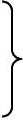

В.И. Ленин. ПОЛНОЕ СОБРАНИЕ СОЧИНЕНИЙ
СОДЕРЖАНИЕ тома 5
 |
Пролетарии всех стран, соединяйтесь!
ЛЕНИН
ПОЛНОЕ
СОБРАНИЕ
СОЧИНЕНИЙ
5
|
ПЕЧАТАЕТСЯ
ПО ПОСТАНОВЛЕНИЮ
ЦЕНТРАЛЬНОГО КОМИТЕТА
КОММУНИСТИЧЕСКОЙ ПАРТИИ
СОВЕТСКОГО СОЮЗА
ИНСТИТУТ МАРКСИЗМА-ЛЕНИНИЗМА ПРИ ЦК КПСС
В. И. ЛЕНИН
ПОЛНОЕ СОБРАНИЕ СОЧИНЕНИЙ
ИЗДАНИЕ ПЯТОЕ
ИЗДАТЕЛЬСТВО
ПОЛИТИЧЕСКОЙ ЛИТЕРАТУРЫ
МОСКВА • 1967
ИНСТИТУТ МАРКСИЗМА-ЛЕНИНИЗМА ПРИ ЦК КПСС
В. И. ЛЕНИН
ТОМ
5
Май ~ декабрь 1901
ИЗДАТЕЛЬСТВО
ПОЛИТИЧЕСКОЙ ЛИТЕРАТУРЫ
МОСКВА • 1967
3K2
1-1-2 67
VII
ПРЕДИСЛОВИЕ
В пятый том Полного собрания сочинений В. И. Ленина входят произведения, написанные им в период с мая по декабрь 1901 года.
Обстановка этого периода в России характеризовалась усилением революционного движения, направленного против царизма и всех остатков крепостничества, тормозивших экономическое и политическое развитие страны. Разразившийся мировой экономический кризис охватил к этому времени и Россию. Ввиду особенности экономики России, где быстрое развитие капитализма уживалось с многочисленными остатками крепостничества, последствия кризиса, совпавшего с неурожаем и голодом в ряде губерний, проявились особенно сильно. Разорялись и вытеснялись мелкие и средние предприятия. Усилилась концентрация промышленности, начали возникать монополистические объединения капиталистов. Капитализм в России становился империалистическим.
Кризис способствовал нарастанию революционных настроений в народных массах и обострению классовой борьбы. Выступления рабочих принимали все более массовый, политический характер. От экономических стачек и борьбы за улучшение условий труда и быта рабочие переходили к открытой политической борьбе против царизма - политическим стачкам, демонстрациям. Рабочее движение поднималось на более высокую ступень.
Под влиянием революционной борьбы рабочих обострялась классовая борьба в деревне. Учащались и становились более массовыми волнения крестьян,
их выступления против помещиков. Усилилось движение среди студентов, оживилось земско-либеральное движение. В России назревала революция.
Социал-демократическое движение приняло к этому времени широкий размах. Комитеты и группы имелись в ряде крупных городов (Петербург, Москва, Тула, Иваново-Вознесенск, Одесса, Харьков, Баку, Тифлис и др.). Но все эти организации не были связаны между собой и отставали от стихийного подъема масс. Необходимо было объединить все революционные социал-демократические силы, развернуть борьбу с кустарничеством, идейными шатаниями, «экономизмом». Перед социал-демократией все с большей настоятельностью выдвигалась задача создания пролетарской партии, способной возглавить борьбу рабочего класса в предстоящей революции.
Основное содержание тома составляют произведения, посвященные дальнейшему развитию выдвинутой Лениным идеи создания боевой, централизованной марксистской рабочей партии в России, разработке принципов организационного строения партии, ее программы, ее политики и тактики в условиях приближавшейся революции. В этих произведениях отражается борьба В. И. Ленина против «экономистов» и ревизионистов за революционную теорию марксизма; его деятельность по сплочению революционной социал-демократии и руководству революционным движением в России.
Том открывается статьей «С чего начать?», опубликованной в № 4 «Искры» в мае 1901 года, в которой разъясняются важнейшие задачи социал-демократии, излагается план создания общероссийской марксистской партии. Ленин считал, что в условиях самодержавного режима и полицейских преследований основным звеном, с которого следует начать строительство партии, является общероссийская нелегальная марксистская газета. «По нашему мнению, - писал он, - исходным пунктом деятельности, первым практическим шагом к созданию желаемой организации, наконец, основною нитью, держась которой мы могли бы неуклонно развивать, углублять и расширять эту организацию, -
должна быть постановка общерусской политической газеты» (настоящий том, стр. 9).
В статье отмечается важное значение газеты в деле налаживания и ведения систематической, принципиально выдержанной, всесторонней пропаганды и агитации, в организации работы социал-демократии по политическому просвещению, идейному воспитанию и организации масс. Ленин указывал, что газета должна стать не только коллективным пропагандистом и коллективным агитатором, но и коллективным организатором. Особенно он подчеркивал роль газеты как главного средства идейного и организационного сплочения всех комитетов социал-демократии. Сеть местных агентов, создаваемая при газете в целях обеспечения ее материалами и распространения на местах, «будет остовом именно такой организации, - писал Ленин, - которая нам нужна: достаточно крупной, чтобы охватить всю страну; достаточно широкой и разносторонней, чтобы провести строгое и детальное разделение труда; достаточно выдержанной, чтобы уметь при всяких обстоятельствах, при всяких «поворотах» и неожиданностях вести неуклонно свою работу; достаточно гибкой, чтобы уметь, с одной стороны, уклониться от сражения в открытом поле с подавляющим своею силою неприятелем, когда он собрал на одном пункте все силы, а с другой стороны, чтобы уметь пользоваться неповоротливостью этого неприятеля и нападать на него там и тогда, где всего менее ожидают нападения» (стр. 12).
В статье «Беседа с защитниками экономизма» Ленин разоблачает оппортунистические воззрения «экономистов», их неумение разобраться в вопросе о взаимоотношениях между стихийными «материальными» и сознательными идеологическими элементами движения. С особой силой подчеркивает Ленин значение революционной марксистской идеологии для партии рабочего класса, роль партии в рабочем движении как политического руководителя, идеолога, вождя масс, вооруженного передовой теорией и способного руководить движением. «Экономисты» «не понимают, - писал Ленин, - что
«идеолог» только тогда и заслуживает названия идеолога, когда идет впереди стихийного движения, указывая ему путь, когда он умеет раньше других разрешать все теоретические, политические, тактические и организационные вопросы, на которые «материальные элементы» движения стихийно наталкиваются» (стр. 363).
Ленин глубоко раскрыл оппортунистическую сущность «экономизма». Он показал, что «экономизм» как направление характеризуется: в принципиальном отношении - опошлением марксизма и беспомощностью перед современной «критикой», являющейся разновидностью оппортунизма; в политическом отношении - стремлением сузить политическую агитацию и политическую борьбу, непониманием того, что, не взяв в свои руки руководства общедемократическим движением, социал-демократия не сможет свергнуть самодержавие; в тактическом отношении - полной неустойчивостью; в организационном отношении - непониманием того, что массовый характер движения не только не ослабляет, а, напротив, усиливает обязанность социал-демократии «создать крепкую и централизованную организацию революционеров, способную руководить и подготовительной борьбой, и всяким неожиданным взрывом, и, наконец, последним решительным нападением» (стр. 365).
Печатаемые в томе выступления В. И. Ленина на «объединительном» съезде заграничных организаций РСДРП, «Предисловие к брошюре «Документы «объединительного» съезда»», заметка «Ответ С.-Петербургскому комитету» и др. освещают борьбу В. И. Ленина и революционных социал-демократов за искровские идеи и тактику против «Союза русских социал-демократов», проповедующего взгляды «экономистов». В них Ленин разъясняет, что объединение с «Союзом» возможно лишь на основе полного отказа его от заигрывания с «экономизмом» и бернштейнианством и признания принципов и тактики революционной социал-демократии. В заметке «Заграничные дела» сообщается об объединении заграничных организаций «Искры» и «Зари» и революционной организации «Социал-демократ» в «Заграничную лигу революционной русской социал-демократии» .
Значительное место в томе занимает произведение «Аграрный вопрос и «критики Маркса»», посвященное защите и дальнейшей разработке марксистской теории аграрного вопроса. В этом произведении Ленин подверг всесторонней критике русских ревизионистов Булгакова, Чернова и немецких - Давида, Герца и др., которые выступали с «критикой» революционного учения марксизма, пытались доказать неприменимость марксистской теории к сельскому хозяйству, отрицали капиталистическую эволюцию сельского хозяйства.
Ленин показал научную несостоятельность модной «критики марксизма», раскрыл суть теоретических воззрений ревизионистов, заключающуюся в беспомощном повторении избитых доводов реакционных буржуазных экономистов. Он разбил лживые измышления ревизионистов об устойчивости мелких и средних хозяйств в земледелии, разоблачил их попытки обойти важнейшие социальные проблемы, составляющие суть аграрного вопроса, затушевать действительные причины отсталости сельского хозяйства и обнищания крестьянских масс, коренящиеся в остатках крепостничества, в частной собственности на землю, в капиталистической системе отношений. «Буржуазный апологет, - писал он, - естественно, стремится игнорировать общественные и исторические причины отсталости земледелия, сваливая вину на «консервативность сил природы» и на «закон убывающего плодородия». Ничего, кроме апологетики и тупоумия, не содержится в этом пресловутом законе» (стр. 232).
На основе глубокого марксистского анализа экономических данных сельского хозяйства России, Германии, Дании Ленин убедительно доказал, что открытые Марксом экономические закономерности капитализма действуют и в сельском хозяйстве. В нем также совершается процесс капиталистического развития со всеми присущими ему противоречиями. Усиливается концентрация производства, расслоение крестьянства, вытеснение и разорение средних крестьянских хозяйств, рост незначительного числа богатых, пролетаризация большинства сельского населения, обострение
классовой борьбы в деревне. «... Статистика всего земледельческого населения показывает нам с полной наглядностью, - писал Ленин, - именно те два процесса пролетаризации, на которые всегда указывал ортодоксальный марксизм и от которых такими шаблонными фразами стараются отговориться оппортунистические критики, - с одной стороны, растущее обезземеление крестьянства, экспроприация сельского населения, бегущего в города или превращающегося из рабочих с землей в рабочих без земли; - с другой стороны, развитие «подсобных заработков» крестьянства, т. е. того соединения земледелия с промышленностью, которое означает первую ступень пролетаризации и ведет всегда к усиленному росту нужды (удлинение рабочего дня, ухудшение питания и пр.)» (стр. 220). Ленин указывал, что обострение всех противоречий в деревне неизбежно ведет к росту недовольства массы крестьянства и что трудящееся крестьянство может стать надежным союзником пролетариата в предстоящей революции.
Ленин развил дальше революционное учение марксизма по аграрному вопросу. Он разработал положения о конкуренции в сельском хозяйстве; о наличии в нем двух монополий: монополии частной собственности на землю и монополии капиталистического хозяйства на земле; восстановил и развил марксистское учение о дифференциальной и абсолютной ренте. Произведение «Аграрный вопрос и «критики Маркса»», развивающее идеи и положения, сформулированные В. И. Лениным в труде «Развитие капитализма в России», явилось основой разработанной им аграрной программы РСДРП и тактики партии по отношению к крестьянству.
В помещенных в томе тезисах «Анархизм и социализм» Ленин раскрывает социальную сущность и политическое содержание анархизма. Он показывает, что анархизм, претендующий на роль выразителя интересов рабочего класса, на деле является мелкобуржуазным течением, «вывороченным наизнанку буржуазным индивидуализмом», выражающим психологию «выбитого из колеи интеллигента или босяка». Миросозерцание анархизма основывается на непонимании
причин эксплуатации, роли крупного производства в развитии общества и неизбежности замены капитализма социализмом; на непонимании классовой борьбы пролетариата, роли государства. Анархизм стоит на позициях защиты мелких собственников и мелкого хозяйства на земле, отрицает необходимость организации и воспитания рабочих и ведет к «подчинению рабочего класса буржуазной политике под видом отрицания политики».
В статье «Гонители земства и Аннибалы либерализма» Ленин разрабатывает тактику марксистской партии по отношению к либеральной буржуазии. На основе материалов секретной «Записки» министра финансов Витте и предисловия к ней Р. Н. С. (Струве) Ленин показывает стремление царского правительства ограничить роль земства, которое оно рассматривало как уступку революционному движению 60-х годов. В статье разоблачаются иллюзии либералов, которые, не считаясь с реальной действительностью и не понимая сущности земства, рассматривали его как зародыш конституционного самоуправления. Ленин раскрыл политическую сущность либерализма, мнимую революционность русских либералов, их нежелание и неспособность отстаивать даже сколько-нибудь демократические требования. Он указывает, что все устремления русского либерализма сводились к тому, чтобы использовать революционные настроения масс для запугивания царизма революцией и вырвать у него жалкие реформы, угодные буржуазии и обуржуазившимся помещикам. Ленин считал, что социал-демократия, поддерживая всякое движение, направленное против самодержавия, должна разоблачать иллюзии русского либерализма, его «политику широковещательного краснобайства и позорной дряблости», разъяснять вред иллюзий либерализма для революционного движения.
В заметке «О журнале «Свобода»» Ленин разоблачает оппортунистическую позицию издающей журнал группы «Свобода». Ленин критикует извращение и вульгаризирование журналом социалистических идей. Он учит, как надо действительно популярно и доходчиво писать
для рабочих, помогать им на самых простых общественных примерах понимать сложные выводы и положения глубокого теоретического учения марксизма.
Ряд вошедших в том статей является образцом революционной публицистики Ленина. В них изобличается полицейский гнет царизма, вскрываются социально-экономические и политические причины неизбежности усиления революционных настроений, определяются перспективы революционного движения в России. В статье «Уроки кризиса» Ленин показывает, как с развитием капитализма обострение основного противоречия капиталистической системы между становящимся все более общественным характером производства и остающимся частным присвоением делает неизбежным циклично повторяющиеся экономические кризисы, потрясающие всю систему капитализма. «Гигантские крахи только потому и стали возможны и неизбежны, - указывает Ленин, - что в подчинении у шайки богачей, ищущих одной наживы, оказались могучие общественные производительные силы» (стр. 83). Кризисы, являющиеся неизбежным спутником капиталистического способа производства, подготовляют почву для новых, еще более глубоких кризисов, ведущих капитализм к гибели.
Ленин разоблачает попытки буржуазных апологетов и ревизионистов представить кризис как случайное для капитализма явление. Он раскрывает несостоятельность доводов ревизионистов. «Кризис показывает, - пишет он, - как близоруки были те социалисты (называющие себя «критиками», должно быть, на том основании, что они без критики перенимают учения буржуазных экономистов), которые два года тому назад шумно заявляли о том, что крахи становятся теперь менее вероятными» (стр. 85).
В статье подчеркивается, что кризисы будут продолжаться до тех пор, пока армии социалистического пролетариата низвергнут господство капитала и частной собственности. На примере России показывается, как разрушительные действия кризиса, проявляющиеся особенно сильно и остро, учат рабочих осо-
знавать свои классовые интересы, теснее сплачиваться и организовываться для решительных действий против капитализма.
В статьях «Новое побоище», «Начало демонстраций», «Ценное признание» и др. характеризуется подъем революционного рабочего движения, переход рабочих от экономических стачек к политическим стачкам и демонстрациям, к открытому выступлению против царского самодержавия. Ленин отмечает рост политической сознательности и революционной активности рабочего класса, подчеркивает задачу социал-демократии возглавить рабочее движение, бороться за гегемонию пролетариата, разъяснять необходимость борьбы «за свободу всего народа».
В ряде статей освещается бедственное положение крестьянства России, обреченного кризисом и голодом на разорение и вымирание; показывается пробуждение крестьянских масс от вековой покорности и забитости к революционной борьбе против помещиков. В статьях «Голод» и «Отношение к кризису и к голоду», объединенных при публикации в журнале «Заря» общим заголовком «Внутреннее обозрение», а также в статьях «Борьба с голодающими» и др. изобличается крепостническая политика царского правительства, защищавшего интересы помещиков, стремившегося скрыть тяжелое положение голодающих крестьян и каравшего частных благотворителей за оказание помощи голодающим. Ленин показывает страх царизма перед крестьянским восстанием, его стремление подавить силой или различными уловками предотвратить революционное выступление крестьянства. Он разъяснял, что правительственный циркуляр о помощи голодающим в действительности является объявлением «войны против голодающих» и тех, кто им помогает; временные правила об организации работ для голодающих являются «каторжными правилами», притесняющими и закабаляющими крестьян. В статье «Крепостники за работой» Ленин раскрывает крепостническую, реакционную сущность правительственного закона об отводе частным лицам казенных земель в Сибири, преследовавшего
цель удовлетворить запросы крепостников и создать в Сибири надежную опору самодержавию. В этих произведениях отмечается рост протеста в крестьянстве, подчеркиваются общие интересы в предстоящей революции рабочих и крестьян, которых сближают «... не только безработица и голод, но также и тот полицейский гнет, который отнимает у рабочих возможность соединения и защиты, отнимает у крестьян даже приходящую к ним от доброхотных жертвователей помощь. Тяжелая полицейская лапа становится во сто раз тяжелее для миллионов народа, потерявшего всякие средства к жизни» (стр. 86).
В разделе «Подготовительные материалы» печатаются планы, конспекты, первоначальные варианты и другие подготовительные материалы к статьям «Гонители земства и Аннибалы либерализма» (печатается впервые), «Крепостники за работой», «Новое побоище» и др.
«Поправки и замечания к проекту устава Заграничной организации русской революционной социал-демократии» (печатается впервые) по своему содержанию примыкают к заметке «Заграничные дела». Они раскрывают деятельность В. И. Ленина по объединению заграничных организаций революционной российской социал-демократии, его борьбу за отстаивание руководящей роли «Искры» в этом объединении, за искровские принципы и тактику в его деятельности.
«Замечания к статье Рязанова «Две правды»» (печатается впервые), написанной им для «Искры», характеризуют редакционную работу В. И. Ленина в «Искре». Ленин подвергает критике субъективистские взгляды автора, его неумение разобраться в обстановке, переоценку им роли Н. К. Михайловского в освободительном движении.
Имеющиеся в большом количестве подготовительные материалы к работе «Аграрный вопрос и «критики Маркса»» составят отдельный том.
Институт марксизма-ленинизма при ЦК КПСС
С ЧЕГО НАЧАТЬ? 1
Написано в мае 1901 г.
Напечатано в мае 1901 г.
в газете «Искра» № 4
| |
Печатается по тексту газеты
|
3
С ЧЕГО НАЧАТЬ?
Первая страница газеты «Искра» № 4 со статьей В. И. Ленина «С чего начать?» - 1901 г.
Уменьшено
5
С ЧЕГО НАЧАТЬ?
Вопрос: «что делать?» за последние годы с особенной силой выдвигается перед русскими социал-демократами. Речь идет не о выборе пути (как это было в конце 80-х и начале 90-х годов), а о том, какие практические шаги и как именно должны мы сделать на известном пути. Речь идет о системе и плане практической деятельности. И надо признать, что этот основной для практической партии вопрос о характере и способах борьбы остается у нас все еще нерешенным, возбуждает все еще серьезные разногласия, обнаруживающие прискорбную неустойчивость и шатание мысли. С одной стороны, далеко еще не умерло «экономическое» направление _2, старающееся обкарнать и сузить работу политической организации и агитации. С другой стороны, по-прежнему гордо поднимает голову направление беспринципного эклектизма, подделывающегося под каждое новое «веяние», не умеющего отличать запросов минуты от основных задач и постоянных нужд движения в его целом. Как известно, такое направление свило себе гнездо в «Рабочем Деле» _3. Его последнее «программное» заявление - громкая статья под громким заглавием «Исторический поворот» (номер 6 «Листка «Рабочего Дела»» _4) - особенно наглядно подтверждает сделанную характеристику. Еще вчера мы заигрывали с «экономизмом», негодовали по поводу решительного осуждения «Рабочей Мысли» _5, «смягчали» плехановскую постановку вопроса о борьбе с самодержавием, - а сегодня мы уже
цитируем слова Либкнехта: «Если обстоятельства изменятся в 24 часа, то нужно и тактику изменить в 24 часа», мы уже говорим о «крепкой боевой организации» для прямой атаки, для штурма на самодержавие, о «широкой революционной политической (вот уж как энергично: и революционной и политической!) агитации в массе», о «неустанном призыве к уличному протесту», об «устройстве уличных манифестаций резко (sic! ) политического характера» и проч., и т. п., и т. д.
Мы могли бы, пожалуй, выразить удовольствие по поводу того, что «Раб. Дело» так быстро усвоило выдвинутую нами уже в первом номере «Искры» 6 программу создания крепкой организованной партии, направленной на завоевание не только отдельных уступок, но и самой крепости самодержавия, но отсутствие у усвоивших всякой твердой точки зрения способно испортить все удовольствие.
Имя Либкнехта «Раб. Дело», конечно, приемлет всуе. В 24 часа можно изменить тактику агитации по какому-нибудь специальному вопросу, тактику проведения какой-нибудь детали партийной организации, а изменить не только в 24 часа, но хотя бы даже в 24 месяца свои взгляды на то, нужна ли вообще, всегда и безусловно боевая организация и политическая агитация в массе, могут только люди без всяких устоев. Смешно ссылаться на различие обстановки, на смену периодов: работать над созданием боевой организации и ведением политической агитации обязательно при какой-угодно «серой, мирной» обстановке, в период какого-угодно «упадка революционного духа» - более того: именно при такой обстановке и в такие периоды особенно необходима указанная работа, ибо в моменты взрывов и вспышек поздно уже создавать организацию; она должна быть наготове, чтобы сразу развернуть свою деятельность. «Изменить в 24 часа тактику»! Да для того, чтобы изменить тактику, надо прежде иметь тактику, а если нет крепкой организации, искушенной в политической борьбе при всякой обстановке и во
* - так! Ред.
всякие периоды, то не может быть и речи о том систематическом, освещенном твердыми принципами и неуклонно проводимом плане деятельности, который только и заслуживает названия тактики. Посмотрите в самом деле: нам говорят уже, что «исторический момент» выдвинул перед нашей партией «совершенно новый» вопрос - о терроре. Вчера «совершенно новый» был вопрос о политической организации и агитации, сегодня - вопрос о терроре. Не странно ли слышать, как люди, до такой степени не помнящие родства, рассуждают о коренном изменении тактики?
К счастью, «Раб. Дело» не право. Вопрос о терроре совершенно не новый вопрос, и нам достаточно вкратце напомнить установившиеся взгляды русской социал-демократии.
Принципиально мы никогда не отказывались и не можем отказываться от террора. Это - одно из военных действий, которое может быть вполне пригодно и даже необходимо в известный момент сражения, при известном состоянии войска и при известных условиях. Но суть дела именно в том, что террор выдвигается в настоящее время отнюдь не как одна из операций действующей армии, тесно связанная и сообразованная со всей системой борьбы, а как самостоятельное и независимое от всякой армии средство единичного нападения. Да при отсутствии центральной и слабости местных революционных организаций террор и не может быть ничем иным. Вот поэтому-то мы решительно объявляем такое средство борьбы при данных обстоятельствах несвоевременным, нецелесообразным, отвлекающим наиболее активных борцов от их настоящей, наиболее важной в интересах всего движения задачи, дезорганизующим не правительственные, а революционные силы. Вспомните последние события: на наших глазах широкие массы городских рабочих и городского «простонародья» рвутся к борьбе, а у революционеров не оказывается штаба руководителей и организаторов. Не грозит ли при таких условиях уход самых энергичных революционеров в террор ослаблением тех боевых отрядов, на которые только и можно возлагать серьезные надежды?
Не грозит ли это разрывом связи между революционными организациями и теми разрозненными массами недовольных, протестующих и готовых к борьбе, которые слабы именно своею разрозненностью? А ведь в этой связи - единственный залог нашего успеха. Мы далеки от мысли отрицать всякое значение за отдельными героическими ударами, но наш долг - со всей энергией предостеречь от увлечения террором, от признания его главным и основным средством борьбы, к чему так сильно склоняются в настоящее время очень и очень многие. Террор никогда не может стать заурядным военным действием: в лучшем случае он пригоден лишь как один из приемов решительного штурма. Спрашивается, можем ли мы в данный момент звать на такой штурм? «Раб. Дело», по-видимому, думает, что да. По крайней мере, оно восклицает: «Стройтесь в штурмовые колонны!» Но это опять-таки усердие не по разуму. Главная масса наших военных сил - добровольцы н повстанцы. Постоянного войска есть у нас лишь несколько небольших отрядов, да и те не мобилизованы, не связаны между собой, не приучены строиться в военные колонны вообще, а не то, что в штурмовые колонны. При таких условиях для всякого, кто способен обозреть общие условия нашей борьбы, не забывая о них при каждом «повороте» исторического хода событий, - должно быть ясно, что лозунгом нашим в данный момент не может быть «идти на штурм», а должно быть: «устроить правильную осаду неприятельской крепости». Другими словами: непосредственной задачей нашей партии не может быть призыв всех наличных сил теперь же к атаке, а должен быть призыв к выработке революционной организации, способной объединить все силы и руководить движением не только по названию, но и на самом деле, т. е. быть всегда готовой к поддержке всякого протеста и всякой вспышки, пользуясь ими для умножения и укрепления военных сил, годных для решительного боя.
Урок февральских и мартовских событий 7 так внушителен, что вряд ли можно встретить теперь принципиальные возражения против такого вывода. Но от нас
требуется в настоящее время не принципиальное, а практическое решение вопроса. Требуется не только уяснить себе, какая именно организация, для какой именно работы необходима, - требуется выработать известный план организации, чтобы к постройке ее могло быть приступлено со всех сторон. Ввиду неотложной важности вопроса мы решаемся, с своей стороны, предложить вниманию товарищей набросок плана, подробнее развиваемого нами в подготовляемой к печати брошюре [ 8].
По нашему мнению, исходным пунктом деятельности, первым практическим шагом к созданию желаемой организации, наконец, основною нитью, держась которой мы могли бы неуклонно развивать, углублять и расширять эту организацию, - должна быть постановка общерусской политической газеты. Нам нужна прежде всего газета, - без нее невозможно то систематическое ведение принципиально выдержанной и всесторонней пропаганды и агитации, которое составляет постоянную и главную задачу социал-демократии вообще и особенно насущную задачу настоящего момента, когда интерес к политике, к вопросам социализма пробужден в наиболее широких слоях населения. И никогда не чувствовалась с такой силой, как теперь, потребность в том, чтобы дополнить раздробленную агитацию посредством личного воздействия, местных листков, брошюр и пр., той обобщенной и регулярной агитацией, которую можно вести только при помощи периодической прессы. Вряд ли будет преувеличением сказать, что степень частоты и регулярности выхода (и распространения) газеты может служить наиболее точным мерилом того, насколько солидно поставлена у нас эта самая первоначальная и самая насущная отрасль нашей военной деятельности. Далее, нам нужна именно общерусская газета. Если мы не сумеем и пока мы не сумеем объединить наше воздействие на народ и на правительство посредством печатного слова, - будет утопией мысль об объединении других, более сложных, трудных, но зато и более решительных способов воздействия. Наше движение и в идейном и
в практическом, организационном отношении всего более страдает от своей раздробленности, от того, что громадное большинство социал-демократов почти всецело поглощено чисто местной работой, суживающей и их кругозор, и размах их деятельности, и их конспиративную сноровку и подготовленность. Именно в этой раздробленности следует искать наиболее глубоких корней той неустойчивости и того шатания, о которых мы говорили выше. И первым шагом вперед по пути избавления от этого недостатка, по пути превращения нескольких местных движений в единое общерусское движение должна быть постановка общерусской газеты. Наконец, нам нужна непременно политическая газета. Без политического органа немыслимо в современной Европе движение, заслуживающее название политического. Без него абсолютно неисполнима наша задача - сконцентрировать все элементы политического недовольства и протеста, оплодотворить ими революционное движение пролетариата. Мы сделали первый шаг, мы пробудили в рабочем классе страсть «экономических», фабричных обличений. Мы должны сделать следующий шаг: пробудить во всех сколько-нибудь сознательных слоях народа страсть политических обличений. Не надо смущаться тем, что политически обличительные голоса так слабы, редки и робки в настоящее время. Причина этого - отнюдь не повальное примирение с полицейским произволом. Причина - та, что у людей, способных и готовых обличать, нет трибуны, с которой бы они могли говорить, - нет аудитории, страстно слушающей и ободряющей ораторов, - что они не видят нигде в народе такой силы, к которой бы стоило труда обращаться с жалобой на «всемогущее» русское правительство. И теперь все это изменяется с громадной быстротой. Такая сила есть, это - революционный пролетариат, он доказал уже свою готовность не только слушать и поддерживать призыв к политической борьбе, но и смело бросаться на борьбу. Мы в состоянии теперь, и мы обязаны создать трибуну для всенародного обличения царского правительства; - такой трибуной должна быть социал-
демократическая газета. Русский рабочий класс, в отличие от других классов и слоев русского общества, проявляет постоянный интерес к политическому знанию, предъявляет постоянно (а но только в периоды особого возбуждения) громадный спрос на нелегальную литературу. При таком массовом спросе, при начавшейся уже выработке опытных революционных руководителей, при той сконцентрированности рабочего класса, которая делает его фактическим господином в рабочих кварталах большого города, в заводском поселке, в фабричном местечке, - постановка политической газеты есть дело вполне посильное для пролетариата. А через посредство пролетариата газета проникнет в ряды городского мещанства, сельских кустарей и крестьян и станет настоящей народной политической газетой.
Роль газеты не ограничивается, однако, одним распространением идей, одним политическим воспитанием и привлечением политических союзников. Газета - не только коллективный пропагандист и коллективный агитатор, но также и коллективный организатор. В этом последнем отношении ее можно сравнить с лесами, которые строятся вокруг возводимого здания, намечают контуры постройки, облегчают сношения между отдельными строителями, помогают им распределять работу и обозревать общие результаты, достигнутые организованным трудом. При помощи газеты и в связи с ней сама собой будет складываться постоянная организация, занятая не только местной, но и регулярной общей работой, приучающей своих членов внимательно следить за политическими событиями, оценивать их значение и их влияние на разные слои населения, вырабатывать целесообразные способы воздействия на эти события со стороны революционной партии. Одна уже техническая задача - обеспечить правильное снабжение газеты материалами и правильное распространение ее - заставляет создать сеть местных агентов единой партии, агентов, находящихся в живых сношениях друг с другом, знающих общее положение дел, привыкающих регулярно исполнять
дробные функции общерусской работы, пробующих свои силы на организации тех или иных революционных действии. Эта сеть агентов будет остовом именно такой организации, которая нам нужна: достаточно крупной, чтобы охватить всю страну; достаточно широкой и разносторонней, чтобы провести строгое и детальное разделение труда; достаточно выдержанной, чтобы уметь при всяких обстоятельствах, при всяких «поворотах» и неожиданностях вести неуклонно свою работу; достаточно гибкой, чтобы уметь, с одной стороны, уклониться от сражения в открытом поле с подавляющим своею силою неприятелем, когда он собрал на одном пункте все силы, а с другой стороны, чтобы уметь пользоваться неповоротливостью этого неприятеля и нападать на него там и тогда, где всего менее ожидают нападения. Сегодня перед нами встала сравнительно легкая задача - поддержать студентов, демонстрирующих на улицах больших городов. Завтра встанет, может быть, более трудная задача, - напр., поддержать движение безработных в известном районе. Послезавтра мы должны оказаться на своем посту, чтобы принять революционное участие в крестьянском бунте. Сегодня мы должны воспользоваться тем обострением политического положения, которое создало правительство походом на земство. Завтра мы должны поддержать возмущение населения против того или другого зарвавшегося царского башибузука и помочь - посредством бойкота, травли, манифестации и т. п. - проучить его так, чтобы он принужден был к открытому отступлению. Такую степень боевой готовности можно выработать только на постоянной деятельности, занимающей регулярное войско. И если мы соединим свои силы на ведении общей газеты, то такая работа подготовит и выдвинет не только наиболее умелых пропагандистов,
* Понятно само собой, что такие агенты могли бы работать успешно только при условии полной близости их к местным комитетам (группам, кружкам) нашей партии. Да и вообще весь намечаемый нами план осуществим, конечно, лишь при самой активной поддержке комитетов, которые не раз делали шаги к объединению партии и которые - мы уверены - добьются этого объединения не сегодня, так завтра, не в той, так в другой форме.
но и наиболее искусных организаторов, наиболее талантливых политических вождей партии, способных в нужную минуту дать лозунг к решительному бою и руководить им.
В заключение - пару слов во избежание возможного недоразумения. Мы говорили все время только о систематической, планомерной подготовке, но мы отнюдь не хотели этим сказать, что самодержавие может пасть исключительно от правильной осады или организованного штурма. Такой взгляд был бы нелепым доктринерством. Напротив, вполне возможно и исторически гораздо более вероятно, что самодержавие падет под давлением одного из тех стихийных взрывов или непредвиденных политических осложнений, которые постоянно грозят со всех сторон. Но ни одна политическая партия, не впадая в авантюризм, не может строить своей деятельности в расчете на такие взрывы и осложнения. Мы должны идти своим путем, неуклонно делать свою систематическую работу, и, чем меньше будем мы рассчитывать на неожиданности, тем больше вероятия, что нас не застанут врасплох никакие «исторические повороты».
НОВОЕ ПОБОИЩЕ
По-видимому, мы переживаем момент, когда наше рабочее движение опять с неудержимой силой приводит к тем обостренным столкновениям, которые так пугают правительство и имущие классы, так ободряют и радуют социалистов. Да, нас ободряют и радуют эти столкновения, несмотря на громадное число жертв военной расправы, потому что своим сопротивлением рабочий класс доказывает, что он не мирится со своим положением, не хочет оставаться рабом, не подчиняется молча насилию и произволу. Современный порядок всегда и неизбежно, даже при самом мирном течении дел, возлагает на рабочий класс бесчисленные жертвы. Тысячи и десятки тысяч людей, трудящихся всю жизнь над созданием чужого богатства, гибнут от голодовок и от постоянного недоедания, умирают преждевременно от болезней, порождаемых отвратительными условиями труда, нищенской обстановкой жилищ, недостатком отдыха. И стократ заслуживает название героя тот, кто предпочитает лучше умереть в прямой борьбе с защитниками и сберегателями этого гнусного порядка, чем умирать медленной смертью забитой, надорванной и покорной клячи. Мы вовсе не хотим сказать, что рукопашная с полицией есть лучшая форма борьбы. Напротив, мы всегда указывали рабочим, что в их же интересах сделать борьбу более спокойной и выдержанной, постараться направить всякое недовольство на поддержку организованной борьбы революционной пар-
тип. Но главным источником, питающим революционную социал-демократию, является именно тот дух протеста в рабочих массах, который при окружающем рабочих гнете и насилии не может не прорываться от времени до времени в отчаянных вспышках. Эти вспышки пробуждают к сознательной жизни самые широкие слои задавленных нуждою и темнотою рабочих, распространяют в них дух благородной ненависти к угнетателям и врагам свободы. И вот почему известно о таком побоище, какое было, напр., 7-го мая на Обуховском заводе, заставляет нас воскликнуть: «Рабочее восстание подавлено, да здравствует рабочее восстание!»
Было время, и сравнительно очень недавнее, когда рабочие восстания являлись редким исключением, вызывались только какими-нибудь особыми условиями. Теперь не то. Несколько лет тому назад мы переживали период процветания промышленности, когда торговые дела шли бойко, спрос на рабочих был большой. И тем не менее рабочие устраивали ряд стачек, добиваясь лучших условий труда: рабочие поняли, что они должны не упускать момента, должны пользоваться именно тем временем, когда прибыли фабрикантов особенно высоки и их легче принудить к уступкам. Но вот процветание сменилось кризисом: товары не идут с рук у фабрикантов, прибыли их уменьшаются, увеличивается число банкротств, фабрики сокращают производство, распускают рабочих, которые массами оказываются на улице без куска хлеба. Рабочим приходится отчаянно бороться уже не за улучшение своего положения, а за сохранение старого, за уменьшение тех потерь, которые взваливает на них фабрикант. Таким образом, рабочее движение углубляется и расширяется: сначала борьба в исключительных отдельных случаях, потом упорная и непрерывная борьба во время оживления промышленных дел и бойкого хода торговли, наконец - такая же непрерывная и упорная борьба во время кризиса. Теперь мы можем уже сказать, что рабочее движение стало постоянным явлением нашей жизни, что оно будет расти при всяких условиях.
Но смена промышленного оживления кризисом научит рабочих не только тому, что объединенная борьба стала для них постоянной необходимостью. Эта смена разрушит также те вредные иллюзии, которые начали уже образовываться в период процветания промышленности. Кое-где рабочим сравнительно легко удавалось вынуждать у хозяев уступки посредством стачек, и значение этой «экономической» борьбы стали преувеличивать, стали забывать о том, что профессиональным (цеховым) союзам рабочих и стачкам удается в лучшем случае только отстоять несколько более выгодные условия продажи товара: рабочей силы. Цеховые союзы и стачки бессильны помочь, когда этот «товар» в силу кризиса не находит спроса, бессильны изменить те условия, которые превращают рабочую силу в товар, осуждают массы трудящихся на самую тяжелую нужду и безработицу. Чтобы изменить эти условия, необходима революционная борьба со всем современным общественным и политическим строем, и промышленный кризис заставит многих и многих рабочих убедиться в справедливости этой истины.
Вернемся к побоищу 7-го мая. Мы приводим ниже имеющиеся у нас сведения о майских стачках и волнениях рабочих Петербурга 9. Здесь же разберем полицейское сообщение о побоище 7-го мая. В последнее время мы уже немного приучены к правительственным (полицейским тож) сообщениям о стачках, демонстрациях, столкновениях с войсками; мы имеем уже теперь изрядный материал для суждения о степени достоверности таких сообщений, мы можем иногда по дыму полицейской лжи догадываться об огне народного возмущения.
«7-го сего мая, - гласит официальное сообщение, - после обеденного перерыва, на Обуховском сталелитейном заводе в селе Александровском, по Шлиссельбургскому тракту, около 200 рабочих разных отделений завода прекратили работу и, при объяснении с помощником начальника завода подполковником Ивановым, предъявили разные неосновательные требования».
Если рабочие прекратили работу без предупреждения за две недели - допустив, что прекращение работ
не было вызвано беззакониями со стороны хозяев, как это случается очень нередко, - то это даже по русскому законодательству (которое в последнее время систематически дополнялось и усиливалось против рабочих) составляет простой полицейский проступок, подсудный мировому. Но русское правительство все больше попадает в смешное положение со своими строгостями: с одной стороны, издаются законы, устанавливающие новые преступления (напр., самовольный отказ от работы или участие в скопище, повреждающем чужое имущество или насильственно противодействующем вооруженной силе), повышаются наказания за стачки и пр., - с другой стороны, теряется и физическая, и политическая возможность применять эти законы и налагать законосообразные наказания. Нет физической возможности тянуть к ответу за отказ от работы, за стачку, за «скопище» тысячи и десятки тысяч людей. Нет политической возможности устраивать в каждом таком случае судебное разбирательство, ибо, как ни подстраивай состав суда, как ни кастрируй гласность, все же хоть тень суда останется и, конечно, - «суда» не над рабочими, а над правительством. И вот уголовные законы, изданные с прямой целью облегчить политическую борьбу правительства с пролетариатом (и в то же время прикрыть ее политический характер посредством «государственных» соображений об «общественном порядке» и т. п.), неумолимо оттесняются на задний план прямой политической борьбой, открытой уличной схваткой. «Правосудие» сбрасывает с себя маску беспристрастия и возвышенности и обращается в бегство, предоставляя поле действия полиции, жандармам и казакам, которых угощают камнями.
Вспомните, в самом деле, эту ссылку правительства на «требования» рабочих. С точки зрения закона, прекращение работы есть проступок независимо от того, какие были требования рабочих. Но правительство именно потеряло уже возможность, становиться на почву того самого закона, который оно так недавно издало, и расправу «своими средствиями» оно старается оправдать, заявляя, что требования рабочих были неосновательны.
А кто был судьей в этом вопросе? Подполковник Иванов, помощник начальника завода, т. е. то самое начальство, на которое рабочие и жаловались! Неудивительно, что на такие объяснения власть имущих рабочие отвечают камнями!
И вот, когда рабочие вышли все на улицу, остановив движение конки, началась уже настоящая баталия. Рабочие бились, видимо, изо всех сил, ибо им удалось дважды отбить нападение полиции, жандармов, конной стражи и вооруженной команды завода * - и это, несмотря на то, что единственным оружием рабочих были камни. Правда, «несколько выстрелов» раздалось и из толпы, - если верить полицейскому сообщению, - но ранен этими выстрелами никто не был. Зато камни летели «градом», причем рабочие проявляли не только упорство сопротивления, но и находчивость, умение сразу приспособиться к условиям и выбрать лучшую форму борьбы.
Они заняли соседние дворы и осыпали царских башибузуков камнями из-за заборов, так что даже после трех залпов, которыми был убит один (будто бы только один?) рабочий и ранено восемь (?) (один умер на другой день), даже после этого, несмотря на бегство толпы, сражение еще продолжалось, и вытребованные роты омского пехотного полка должны были «очищать от рабочих» соседние дворы.
Правительство победило. Но каждая такая победа будет неуклонно приближать его окончательное поражение. Каждая битва с народом будет увеличивать число возмущенных и готовых к бою рабочих, будет выдвигать более опытных, лучше вооруженных, смелее действующих вожаков. По какому плану должны стараться действовать вожаки, об этом нам уже приходилось высказываться. На безусловную необходимость
* Кстати. Правительственное сообщение заявляет, что «вооруженная команда завода» «находилась уже наготове во дворе завода», тогда как жандармы, конная стража и городовые были вызваны лишь впоследствии. С какого же времени и почему держали наготове во дворе завода вооруженную команду? Не с первого ли мая? Не ожидали ли рабочей демонстрации?
Этого мы не знаем, но несомненно, что правительство умышленно скрывает имеющиеся у него фактические данные о том, чем вызывалось и как росло недовольство и возбуждение рабочих.
крепкой революционной организации мы уже не раз указывали. Но по поводу таких событий, как 7-ое мая, надо также не упускать из виду следующее.
В последнее время много говорили о том, что уличная борьба против современного войска невозможна и безнадежна; особенно настаивали на этом те «критические» умники, которые выдавали старый хлам буржуазной учености за новые выводы беспристрастной науки, извращая при этом слова Энгельса, говорившего, и притом с оговорками, только о временной тактике немецких социал-демократов 10. Мы видим даже на примере отдельной схватки, что все эти толки совершенно вздорны. Уличная борьба возможна, безнадежно не положение борцов, а положение правительства, если ему придется иметь дело с населением не одного только завода. Рабочие при схватке 7-го мая не имели ничего, кроме камней, - и уж, конечно, не запрещение же градоначальника помешает им в следующий раз запастись другим оружием. Рабочие были не подготовлены, и их было только 31/2 тысячи, и тем не менее они отбивали несколько сотен конной стражи, жандармерии, городовых и пехоты. Вспомните, легко ли удался полиции штурм одного дома номер 63 по Шлиссельбургскому тракту 11! Подумайте, легко ли будет «очистить от рабочих» не два-три двора и дома, а целые рабочие кварталы Петербурга! Не придется ли также, когда дело дойдет до решительной борьбы, «очищать» столичные дома и дворы не только от рабочих, но и от всех тех, кто не забыл гнусной бойни 4-го марта 12, кто не примирился с полицейским правительством, а только запуган им и не верит еще в свои силы.
Товарищи! Постарайтесь собрать имена всех убитых и раненых 7-го мая. Пусть все рабочие столицы чтят память их и готовятся к новой решительной борьбе с полицейским правительством за народную свободу!
|
«Искра» № 5, июнь 1901 г.
| |
Печатается по тексту газеты «Искра»
|
СЕКРЕТНЫЙ ДОКУМЕНТ
Обращаем внимание читателей на появившуюся у Дитца в Штутгарте записку Витте, напечатанную «Зарей» 13. Направленная против проекта бывшего мин. вн. дел Горемы-кина о введении земств в неземских губерниях, «Записка» интересна как документ, бесстыдно разоблачающий сокровеннейшие вожделения наших правителей. Мы надеемся подробно поговорить в ближайшем номере нашей газеты об этом замечательном документе, равно как и о предисловии к нему г. Р. Н. С. Это предисловие, обнаруживая в его авторе понимание политического значения русского рабочего движения, во всех остальных отношениях отличается обычной, характерной для наших либералов незрелостью политической мысли.
|
«Искра» № 5, июнь 1901 г.
| |
Печатается по тексту газеты «Искра»
|
ГОНИТЕЛИ ЗЕМСТВА И АННИБАЛЫ ЛИБЕРАЛИЗМА 14
Написано в июне 1901 г.
Впервые напечатано в декабре 1901, в журнале «Заря» № 2-3
Подпись: Т. П.
| |
Печатается по тексту журнала,
сверенному с текстом сборника:
Вл. Ильин. «За 12 лет», 1907
|
23
Обложка журнала «Заря» № 2-3, 1901 г., в котором были напечатаны работы В. И. Ленина: «Гонители земства и Аннибалы либерализма», первые четыре главы работы «Аграрный вопрос и «критики Маркса»» (под заглавием «Гг. «критики» в аграрном вопросе») и «Внутреннее обозрение».
25
Если про русского крестьянина было сказано, что он всего более беден сознанием своей бедности, то про русского обывателя или подданного можно сказать, что он, будучи беден гражданскими правами, особенно беден сознанием своего бесправия. Как мужик привык к своей безысходной нищете, привык жить, не задумываясь над ее причинами и возможностью ее устранения, так русский обыватель вообще привык к всевластию правительства, привык жить, не задумываясь над тем, может ли дальше держаться это всевластие и нет ли рядом с ним таких явлений, которые подтачивают застарелый политический строй. Особенно хорошим «противоядием» против этой политической бессознательности и спячки являются обыкновенно «секретные документы» *, показывающие, что не только какие-нибудь отчаянные головорезы или завзятые враги правительства, но и сами члены правительства, до министров и царя включительно, сознают шаткость самодержавной формы правления и изыскивают всяческие способы улучшить свое положение, совершенно их не удовлетворяющее. К таким документам принадлежит записка Витте, который, повздорив с министром внутренних дел, Горе-мыкиным, из-за вопроса о введении земских учреждений на окраинах, решил особенно
* Я говорю, разумеется, только о том - далеко не единственном и далеко не особенно «сильно действующем» - роде «противоядий», который состоит из произведений печати.
выставить свою проницательность и преданность самодержавию составлением обвинительного акта против земства *.
Обвиняется земство в том, что оно несовместимо с самодержавием, что оно конституционно по самому своему характеру, что существование его неизбежно порождает трения и столкновения между представителями общества и правительства. Обвинительный акт составлен на основании очень (сравнительно) обширного и очень недурно обработанного материала, а так как это обвинительный акт по политическому делу (и притом довольно своеобразному), то можно быть уверенным, что его будут читать с не меньшим интересом и с не меньшей пользой, чем печатавшиеся некогда в наших газетах обвинительные акты по политическим процессам.
I
Попробуем же рассмотреть, оправдывается ли фактами утверждение, что наше земство конституционно, и если да, то в какой мере и в каком именно смысле.
В этом вопросе особенно важное значение имеет эпоха введения земства. Падение крепостного права было таким крупным историческим переломом, который не мог не надорвать и полицейской завесы, прикрывающей противоречия между классами. Самый сплоченный, самый образованный и наиболее привыкший к политической власти класс - дворянство - обнаружил с полной определенностью стремление ограничить самодержавную власть посредством представительных учреждений. Напоминание об этом факте в записке Витте чрезвычайно поучительно. «Заявления о необходимости общего дворянского «представительства», о «праве земли русской иметь своих выборных для совета верховной власти» делались уже в дворянских собраниях 1859-1860 годов». «Произносилось даже слово «консти-
* «Самодержаеие и земство. Конфиденциальная записка министра финансов С. Ю. Витте, с предисловием и примечаниями Р. П. С.» Печатано «Зарей». Stuttgart, Verlag von J. H. W. Dietz Nachf. (Штутгарт, издание наследников И. Г. В. Дитца. Ред.) 1901, стр. XLIV и 212.
туция»» *. «На необходимость призыва общества к участию в управлении указывали и некоторые губернские комитеты по крестьянскому делу, и члены комитетов, вызванные в редакционные комиссии. «Депутаты явно стремятся к конституции», писал в 1859 г. в дневнике своем Никитенко».
«Когда, после обнародования Положения 19-го февраля 1861 г., эти надежды на самодержавие оказались далеко не осуществленными, и вдобавок от исполнения этого Положения были удалены более «красные» элементы из самой администрации (как Н. Милютин), то движение в пользу «представительства» стало единодушнее. Оно выразилось в предложениях, внесенных во многие дворянские собрания 1862 г., и в целых адресах этих собраний в Новгороде, Туле, Смоленске, Москве, Петербурге, Твери. Из адресов более замечательный московский, который просил местного самоуправления, гласного судопроизводства, обязательного выкупа крестьянских земель, публичности бюджета, свободы печати и созвания в Москве Земской думы из всех классов для приготовления цельного проекта реформ. Резче всех были постановления и адрес тверского дворянства от 2-го февраля о необходимости ряда гражданских и экономических реформ (например, уравнения прав сословий, обязательного выкупа крестьянских земель) и «созвания выборных всей земли русской, как единственного средства к удовлетворительному разрешению вопросов, возбужденных, но не разрешенных Положением 19-го февраля» *.
Несмотря на административные и судебные наказания, которым подверглись инициаторы тверского адреса», - продолжает
* Драгоманов. «Земский либерализм в России», стр. 4. Автор записки г-н Витте частенько не указывает, что он списывает Драгоманова (ср., напр., «Записку», стр. 36-37 и назв. статью, стр. 55-56), хотя в других местах он на него ссылается.
** Драгоманов, 5. Сокращенный пересказ в «Записке», стр. 64, с ссылкой не на Драгоманова, а на цитируемые Драгомановым «Колокол»15 № 126 и «Revue des deux Mondes» 16, 1862, 15-го июня.
*** Кстати. Недавно (19-го апреля настоящего года, т. е. 1901 г.) скончался в своем родном имении Тверской губернии один из этих инициаторов, Николай Александрович Бакунин, младший брат знаменитого М. А. Бакунина. Н. А. вместе с своим младшим братом Алексеем и другими посредниками подписал адрес 1862 г. Этот адрес - сообщает автор заметки о Н. А. Бакунине в одной из наших газет - навлек кару на подписавшихся. После годового ареста в Петропавловской крепости заключенные были освобождены, причем Н. А. и брат его Алексей остались непрощенными (они не подписали просьбы о помиловании), вследствие чего им более не разрешили занимать общественных должностей. После этого Н. А. никогда более не выступал, да и не мог более выступать на общественном поприще... Вот как расправлялось во время самых «великих реформ» наше правительство с легально действовавшими дворянами-помещиками! И это было в 1862 г., до польского восстания 17, когда даже Катков предлагал созвание всероссийского Земского собора.
Драгоманов, - (впрочем, не прямо за адрес, а за резкую мотивировку коллективного выхода из должности мировых посредников) заявления в духе его делались в разных дворянских собраниях 1862 и начала 1863 г., в которых в то же время вырабатывались и проекты местного самоуправления.
В это время конституционное движение шло и среди «разночинцев» и выразилось здесь тайными обществами и прокламациями, более или менее революционными: «Великорусе» (с августа по ноябрь 1861 г.; в издании принимали участие офицеры, как Обручев и др.), «Земская дума» (1862 г.), «Земля и воля» (1862- 1863 гг.)... Пущен был при «Великоруссе» и проект адреса, который должен быть представлен государю, как говорилось многими, к празднованию 1000-летия России в августе 1862 г.». В этом проекте адреса, между прочим, говорилось: «Благоволите, государь, созвать в одной из столиц нашей русской родины, в Москве или Петербурге, представителей русской нации, чтобы они составили конституцию для России...» *
Если мы припомним еще прокламацию «Молодой России» 18, многочисленные аресты и драконовские наказания «политических» преступников (Обручева, Михайлова и др.), увенчавшиеся беззаконным и подтасованным осуждением на каторгу Чернышевского, то для нас ясна будет та общественная обстановка, которая породила земскую реформу. Говоря, что «мысль при создании земских учреждений была несомненно политическая», что с либеральным и конституционалистическим настроением общества в правящих сферах «несомненно считались», «Записка» Витте говорит лишь половину правды. Тот казенный, чиновнический взгляд на общественные явления, который обнаруживает везде автор «Записки», сказывается и здесь, сказывается в игнорировании революционного движения, в затушевывании тех драконовских мер репрессии, которыми правительство защищалось от натиска революционной «партии». Правда, на наш современный взгляд кажется странным говорить о революционной «партии» и ее натиске в начале 60-х годов. Сорокалетний исторический опыт сильно повысил нашу требовательность насчет того, что можно назвать революционным движением и революционным натиском. Но не надо забывать, что в то время, после тридцатилетия николаевского
* Ср. «За сто лет» В. Бурцева, стр. 39.
режима, никто не мог еще предвидеть дальнейшего хода событий, никто не мог определить действительной силы сопротивления у правительства, действительной силы народного возмущения. Оживление демократического движения в Европе, польское брожение, недовольство в Финляндии, требование политических реформ всей печатью и всем дворянством, распространение по всей России «Колокола», могучая проповедь Чернышевского, умевшего и подцензурными статьями воспитывать настоящих революционеров, появление прокламаций, возбуждение крестьян, которых «очень часто» приходилось с помощью военной силы и с пролитием крови заставлять принять «Положение» 25, обдирающее их, как липку, коллективные отказы дворян - мировых посредников 26 применять такое «Положение»,
* Л. Пантелеев. «Из воспоминаний о 60-х годах», стр. 315 сборника «На славном посту» 19. В этой статейке сгруппированы некоторые очень интересные факты о революционном возбуждении 1861-1862 гг. и полицейской реакции... «К началу 1862 г. общественная атмосфера была до крайности напряжена; малейшее обстоятельство могло резко толкнуть ход жизни в ту или другую сторону. Эту роль и сыграли майские пожары 1862 года в Петербурге». Начались они 16-го мая, особенно выделились 22 и 23-го мая - в этот последний день было пять пожаров, 28-го мая запылал Апраксин двор и выгорело громадное пространство вокруг него. В народе стали обвинять в поджогах студентов, и эти слухи повторялись газетами.
Прокламацию «Молодой России», которая объявляла кровавую борьбу всему современному строю и оправдывала всякие средства, рассматривали как подтверждение слухов об умышленных поджогах. «Вслед за 28-ым мая в Петербурге было объявлено нечто вроде военного положения».
Учрежденному особому комитету было поручено принятие чрезвычайных мер к охране столицы. Город был разделен на три участка, с военными губернаторами во главе. По делам о поджоге введен военно-полевой суд. Приостановлены на 8 месяцев «Современник» 20 и «Русское Слово» 21, прекращен «День» 22 Аксакова, объявлены суровые временные правила о печати (утвержденные еще 12-го мая, т. е. до пожаров. След., «ход жизни» резко направлялся в сторону реакции и независимо от пожаров, вопреки мнению г. Пантелеева), правила о надзоре за типографиями, последовали многочисленные аресты политического характера (Чернышевского, Н. Серно-Соловьевича, Рымаренко и др.), закрыты воскресные школы и народные читальни, затруднено разрешение публичных лекций в С.-Петербурге, закрыто 2-ое отделение при Литературном фонде
23, закрыт даже Шахматный клуб 24.
Следственная комиссия не открыла никакой связи пожаров с политикой. Член комиссии, Столбовский, рассказывал г. Пантелееву, «как удалось ему в комиссии вывести на свежую воду главных лжесвидетелей, которые, кажется, были простым орудием полицейских агентов» (325-326). Итак, есть очень веское основание думать, что слухи о студентах-поджигателях распускала полиция. Гнуснейшее эксплуатирование народной темноты для клеветы на революционеров и протестантов было, значит, в ходу и в самый разгар «эпохи великих реформ».
студенческие беспорядки - при таких условиях самый осторожный и трезвый политик должен был бы признать революционный взрыв вполне возможным и крестьянское восстание - опасностью весьма серьезной. При таких условиях самодержавное правительство, которое свое высшее назначение видело в том, чтобы, с одной стороны, отстоять во что бы то ни стало всевластие и безответственность придворной камарильи и армии чиновных пиявок, а с другой стороны, в том, чтобы поддерживать худших представителей эксплуататорских классов, - подобное правительство не могло поступать иначе, как беспощадно истребляя отдельных лиц, сознательных и непреклонных врагов тирании и эксплуатации (т. е. «коноводов» «революционной партии»), запугивать и подкупать небольшими уступками массу недовольных. Каторга - тому, кто предпочитал молчать, чем извергать тупоумные или лицемерные хвалы «великому освобождению»; реформы (безвредные для самодержавия и для эксплуататорских классов реформы) тем, кто захлебывался либерализмом правительства и восторгался эрой прогресса.
Мы не хотим сказать, что эта рассчитанная полицейско-реакционная тактика была отчетливо сознаваема и систематически преследуема всеми или хотя бы даже несколькими членами правящей клики. Отдельные члены ее могли, конечно, по своей ограниченности не задумываться над этой тактикой в ее целом и наивно восторгаться «либерализмом», не замечая его полицейского футляра. Но в общем и целом несомненно, что коллективный опыт и коллективный разум правящих заставлял их неуклонно преследовать эту тактику. Недаром же большинство вельмож и сановников прошло длинный курс николаевской службы и полицейской выучки, прошло, можно сказать, огонь и воду и медные трубы. Они помнили, как монархи то заигрывали с либерализмом, то являлись палачами Радищевых и «спускали» на верноподданных Аракчеевых; они помнили 14-ое декабря 1825 г.27 и проделывали ту функцию европейской жандармерии, которую (функцию) исполнило русское правительство в 1848-1849 годах 28.
Исторический опыт самодержавия не только заставлял правительство следовать тактике запугивания и развращения, но и многих независимых либералов побуждал рекомендовать правительству эту тактику. Вот в доказательство правильности этого последнего мнения рассуждения Кошелева и Кавелина. В своей брошюре: «Конституция, самодержавие и Земская дума» (Лейпциг, 1862 г.) А. Кошелев высказывается против конституции за совещательную Земскую думу и предвидит такое возражение:
«Созывать Земскую думу - значит вести Россию к революции, т. е. к повторению у нас Etats generaux*, превратившихся в Конвент и заключивших свои действия событиями 1792 года, с проскрипциями, гильотиной, noyades» и пр.» «Нет! господа, - отвечает Кошелев, - не созвание Земской думы открывает, подготовляет поприще для революции, как вы ее понимаете; а скорее и вернее ее производят действия со стороны правительства нерешительные и противоречащие, шаг вперед и шаг назад, повеления и законы неудобоисполнимые, оковы, налагаемые на мысль и слово; полицейское (явное и тем еще хуже тайное) наблюдение за действиями сословий и частных людей, мелочные преследования некоторых личностей, расхищения казны, чрезмерные и неразумные ее расходы и награды, неспособность государственных людей и их отчужденность от России и пр. и пр. Еще вернее могут довести до революции (опять в вашем смысле) в стране, только очнувшейся от многолетнего гнета, военные экзекуции, казематы и ссылки: ибо раны наболевшие несравненно чувствительнее и раздражительнее, чем раны новые. Но не опасайтесь: революции, произведенной во Франции, как вы полагаете, журналистами и другими писателями, - у нас не будет. Надеемся также, что в России не составится (хотя за это отвечать труднее) общество горячих, отчаянных голов, которые изберут убийство средством к достижению своих целей. Но гораздо вероятнее и опаснее то, что возникнет, незаметно для земской, городской и тайной полиции, под влиянием раскола, согласие между крестьянами и мещанами, к которым присоединятся молодые и немолодые люди, сочинители и приверженцы «Великорусса», «Молодой России» и пр. Такое согласие, все уничтожающее и проповедующее равенство не перед законом, а вопреки ему (какой бесподобный либерализм! Мы, разумеется, за равенство, но за равенство не вопреки закону, - закону, разрушающему равенство!), не народную, историческую общину, а болезненное ее исчадие, и власть не разума, которую так боятся
* - Генеральные штаты. Ред.
** - массовым потоплением. Ред.
некоторые государственные дельцы, а власть грубой силы, к которой они сами так охотно прибегают, - такое согласие, говорю, у нас гораздо возможнее, и оно может быть гораздо сильнее, чем умеренная, благомыслящая и самостоятельная оппозиция правительству, которая так противна нашим бюрократам и которую они всячески теснят и стараются удушить. Не думайте, что партия внутренней, тайной, безыменной печати малочисленна л слаба, и не воображайте, что вы захватили ее ветви и корни; нет! воспрещением молодежи доучиться, возведением шалостей и чин государственных преступлений, всякими мелочными преследованиями и наблюдениями вы удесятерили силу этой партии, рассеяли и размножили ее по империи. При взрыве такого согласия к чему прибегнут наши государственные люди? - К военной силе? Но можно ли будет на нее наверное рассчитывать?» (стр. 49-51).
Разве из пышных фраз этой тирады не вытекает с очевидностью тактика: истребить «отчаянные головы» и приверженцев «согласия между крестьянами и мещанами», а «благомыслящую умеренную оппозицию» удовлетворить и разъединить уступками? Только правительство оказалось умнее и ловчее, чем воображали гг. Кошелевы, и отделалось меньшими уступками, чем «совещательная» Земская дума.
А вот частное письмо К. Д. Кавелина к Герцену от 6-го августа 1862 года: «... Вести из России, на мой взгляд, не так плохи. Арестован не Николай, а Александр Соловье-вич. Аресты меня не удивляют и, признаюсь, не кажутся мне возмутительными. Революционная партия считает пригодными все средства, чтобы ниспровергнуть правительство, а правительство защищается всеми средствами. Другое дело были аресты и ссылки при подлом Николае. Люди гибли за свои мысли, убеждения, веру и слова. Я хотел бы, чтобы ты был на месте правительства, и посмотрел бы я тогда, как стал бы ты поступать против партий, которые и тайно и открыто работают против тебя. Я люблю Чернышевского, очень, очень люблю, но такого brouillon» (задиру, сварливого, неуживчивого человека, сеющего раздоры), «такого бестактного, самоуверенного человека я еще никогда не видал. Погибать из-за ничего, ровно-таки из-за ничего! Что пожары находятся в связи с прокламациями, это не подлежит теперь никакому
сомнению» *. Вот образчик профессорски-лакейского глубокомыслия! Виноваты во всем эти революционеры, которые так самоуверенны, что освистывают фразерствующих либералов, так задорны, что тайно и явно работают против правительства, так бестактны, что попадают в Петропавловку. С подобными людьми и он, либеральный профессор, расправлялся бы «всеми средствами», если бы был у власти.
II
Итак, земская реформа была одной из тех уступок, которые отбила у самодержавного правительства волна общественного возбуждения и революционного натиска. Мы остановились особенно подробно на характеристике этого натиска, чтобы дополнить и исправить изложение «Записки», бюрократический автор которой затушевал борьбу, породившую эту уступку. Но половинчатый, трусливый характер этой уступки довольно ясно обрисован и «Запиской»:
«Вначале, когда только что приступлено было к земской реформе, несомненно, имелось в виду сделать первый шаг по пути к введению представительных учреждений ; но потом, когда графа Ланского и Н. А. Милютина сменил граф Валуев, проявилось весьма ясно желание, которое не отрицал и сам бывший министр внутренних дел, действовать в духе «примирительном», «мягко и уклончиво». «Правительство само не выяснило себе своих видов», говорил он в это время. Словом, была сделана попытка, которая, к сожалению, весьма часто повторяется государственными людьми и всегда дает отрицательные для всех результаты, - попытка действовать уклончиво между двумя противоположными мнениями и, удовлетворяя либеральным стремлениям, сохранить существующий порядок...»
* Цитируем по немецкому переводу драгомановского издания переписки К. Д. Кавелина и И. С. Тургенева с А. И. Герценом: Bibliothek russischer Denkwurdigkeiten, herausgegeben von Th. Schiemann, Bd. 4, S. 65-66. Stuttgart, 1894 (Библиотека русских литературных памятников, издаваемая Т. Шиманом, т. 4, стр. 65-66. Штутгарт, 1894. Ред.).
«Несомненно», что автор «Записки», говорящий со слов Леруа-Болье, впадает в обычное бюрократическое преувеличение. «Несомненно», что ни Ланской, ни Милютин ничего действительно определенного в виду не имели, и принимать за «первый шаг» уклончивые фразы Милютина («в принципе сторонник конституции, но считает введение ее преждевременным») смешно.
Презабавно здесь это фарисейское «к сожалению»! Министр полицейского правительства выставляет здесь случайностью тактику, которой это правительство не может не следовать, которую оно проводило при издании законов о фабричной инспекции, закона о сокращении рабочего дня (2-го июня 1897 г.), - которую оно проводит и теперь (1901 г.) посредством заигрывания генерала Ванновского с «обществом» 29.
«С одной стороны, в объяснительной записке к положению о земских учреждениях говорилось, что задача проектируемого закона - по возможности полное и последовательное развитие начал местного самоуправления, что «земское управление есть только особый орган одной и той же государственной власти»... Тогдашний орган министерства внутренних дел, «Северная Почта», в своих статьях делал весьма ясные намеки, что создаваемые учреждения явятся школой учреждений представительных.
С другой стороны... земские учреждения называются в объяснительной записке частными и общественными, подчиняющимися общим законам на том же основании, как отдельные общества и частные лица...
Как самые постановления Положения 1864 г., так в особенности все последующие мероприятия министерства внутренних дел по отношению к земским учреждениям довольно ясно свидетельствуют, что «самостоятельности» земских учреждений весьма опасались, и боялись давать надлежащее развитие этим учреждениям, вполне понимая к чему оно поведет». (Курсив везде наш.)... «Несомненно, что те, кому пришлось завершить земскую реформу, проводили эту реформу лишь в уступку общественному мнению, чтобы, как значилось в объяснительной записке, «положить предел возбужденным по поводу образования земских учреждений несбыточным ожиданиям и свободным стремлениям разных сословий»; в то же время лица эти ясно понимали ее (?реформу?) и стремились не давать земству надлежащего развития, придать ему частный характер, ограничить его в компетенции и проч. Успокаивая либералов обещаниями, что первый шаг не будет последним, говоря или, вернее, повторяя сторонников либерального направления о необходимости сообщить земским учреждениям действительную и самостоятельную власть, граф Валуев уже при самой выработке Положения 1864 г. всячески старался ограничить эту власть и поставить земские учреждения под строгую административную опеку...
Не проникнутые одной руководящей мыслью, будучи компромиссом двух противоположных направлений, земские учреждения в той форме, в какой создало их Положение 1864 г., когда началось их применение, оказались не отвечающими
ни основной идее самоуправления, положенной в их основание, ни тому административному строю, в который они были механически вставлены и который к тому же остался нереформированным и неприспособленным к новым условиям жизни. Положение 1864 г. пыталось совместить несогласимые вещи и тем одновременно удовлетворить сторонников и противников земского самоуправления. Первым предлагалась внешность и надежды на будущее, в угоду вторым компетенция земских учреждений была определена крайне эластично».
Какие иногда меткие слова бросают нечаянно наши министры, когда они хотят подставить ножку какому-нибудь коллеге и выказать свое глубокомыслие, и как полезно было бы всем прекраснодушным русским обывателям и всем поклонникам «великих» реформ повесить себе на стену в золотой рамке великие заветы полицейской мудрости: «успокаивать либералов обещаниями, что первый шаг не будет последним», «предлагать» им «внешность и надежды на будущее»! Особенно в настоящее время полезно было бы справляться с этими заповедями при чтении каждой газетной статьи или заметки о «сердечном попечении» генерала Ванновского.
Итак, земство с самого начала было осуждено на то, чтобы быть пятым колесом в телеге русского государственного управления, колесом, допускаемым бюрократией лишь постольку, поскольку ее всевластие не нарушалось, а роль депутатов от населения ограничивалась голой практикой, простым техническим исполнением круга задач, очерченных все тем же чиновничеством. Земства не имели своих исполнительных органов, они должны были действовать через полицию, земства не были связаны друг с другом, земства были сразу поставлены под контроль администрации. И, сделав такую безвредную для себя уступку, правительство на другой же день после введения земства принялось систематически стеснять и ограничивать его: всемогущая чиновничья клика не могла ужиться с выборным всесословным представительством и принялась всячески травить его. Свод данных об этой травле, несмотря на явную неполноту его, представляет собой очень интересную часть «Записки».
Мы видели, как трусливо и как неразумно поступали либералы по отношению к революционному движению начала 60-х годов. Вместо того, чтобы поддерживать «согласие мещан и крестьян с приверженцами «Великорусса»», они боялись этого «согласия» и стращали им правительство. Вместо того, чтобы подняться на защиту преследуемых правительством коноводов демократического движения, они фарисейски умывали руки и оправдывали правительство. И они понесли справедливое наказание за эту предательскую политику широковещательного краснобайства и позорной дряблости. Расправившись с людьми, способными не только болтать, но и бороться за свободу, правительство почувствовало себя достаточно крепким, чтобы вытеснять либералов и из тех скромных и второстепенных позиций, которые ими были заняты «с разрешения начальства». Пока серьезно грозило «согласие мещан и крестьян» с революционерами, само министерство внутренних дел бормотало о «школе представительных учреждений», а когда «бестактные и самоуверенные» свистуны и «задиры» были удалены, - «школяров» без церемонии взяли в ежовые рукавицы. Начинается трагикомическая эпопея: земство ходатайствует о расширении прав, а у земства неуклонно отбирают одно право за другим и на ходатайства отвечают «отеческими» поучениями. Но пусть говорят исторические даты, хотя бы даже только приведенные в «Записке».
12-го октября 1866 г. циркуляр министерства внутренних дел ставит служащих земства в полную зависимость от правительственных учреждений. 21-го ноября 1866 г. выходит закон, ограничивающий право земств облагать сборами торговые и промышленные заведения. В Петербургском земском собрании 1867 г. резко критикуют этот закон и принимают (по предложению графа А. П. Шувалова) решение ходатайствовать пред правительством, чтобы вопросы, затронутые этим законом, обсуждались «совокупными силами и одновременным трудом центральной администрации и земства». На это ходатайство правительство отвечает закрытием петербургских земских учреждений и репрессиями:
председатель С.-Петербургской земской управы Крузе сослан в Оренбург, граф Шувалов - в Париж, сенатору Любощинскому велено подавать в отставку. Орган министерства внутренних дел, «Северная Почта» 30, выступает с статьей, в которой «такая строгая карательная мера была объяснена тем, что и земские собрания с самого открытия своих заседаний действовали несогласно с законом» (с каким законом? и почему нарушителей закона не преследовали по суду? ведь только что был введен суд скорый, правый и милостивый?) «и вместо того, чтобы поддерживать земские собрания других губерний, пользуясь высочайше дарованными им правами для действительного попечения о вверенных им местных земско-хозяйственных интересах» (т. е. вместо того, чтобы покорно повиноваться и следовать «видам» чиновничества), «непрерывно обнаруживали, стремление неточным изъяснением дела и неправильным толкованием законов возбуждать чувства недоверия и неуважения к правительству». Неудивительно, что после такого назидания «другие земства не оказали поддержки петербургскому, хотя повсюду закон 21-го ноября 1866 г. вызвал сильное неудовольствие; многие называли его в собраниях равносильным уничтожению земств».
16-го декабря 1866 г. является «разъяснение» сената, предоставляющее губернаторам право отказывать в утверждении всякого избранного земским собранием лица, признаваемого им - губернатором - неблагонадежным. 4-го мая 1867 г. - другое разъяснение сената: несогласно с законом сообщение земских предположений во все другие губернии, ибо земские учреждения должны ведать дела местные. 13-го июня 1867 г. состоялось высочайше утвержденное мнение Государственного совета, запрещающее без разрешения местного губернского начальства печатать состоявшиеся в земских, городских и сословных общественных собраниях постановления, отчеты о заседаниях, прения в заседаниях и проч. Далее, тот же закон расширяет власть председателей земских собраний, предоставляет им право закрывать собрания и обязывает их под
угрозой наказания закрывать собрания, в которых ставятся на обсуждение вопросы, несогласные с законом. Эту меру общество встретило весьма недружелюбно и взглянуло на нее, как на серьезное ограничение земской деятельности, «Все знают, - писал в дневнике своем Никитенко, - что земство связано по рукам и по ногам новым узаконением, в силу которого председатели собраний и губернаторы получили почти неограниченную власть над земством». Циркуляр 8-го октября 1868 г. подчиняет разрешению губернаторов печатание отчетов даже земских управ и ограничивает взаимные сношения земств. В 1869 г. учреждаются инспектора народных училищ в видах оттеснения земства от действительного заведования народным образованием. Высочайше утвержденное 19-го сентября 1869 г. положение Комитета министров признает, что «земские учреждения ни по своему составу, ни по основным началам не суть власти правительственные». Закон 4-го июля 1870 г. и циркуляр 22-го октября 1870 г. подтверждают и усиливают зависимость земских служащих от губернаторов. В 1871 г. инструкция инспекторам народных училищ предоставляет им устранять от должности учителей, признаваемых неблагонадежными, и останавливать всякое решение училищного совета с предоставлением дела на разрешение попечителя. 25-го декабря 1873 г. Александр II в рескрипте на имя министра народного просвещения выражает опасение, что народная школа при недостатке попечительного наблюдения может быть обращаема «в орудие нравственного растления народа, к чему уже и обнаружены некоторые попытки», и повелевает предводителям дворянства способствовать ближайшим своим участием обеспечению нравственного влияния этих школ. Затем в 1874 г. выходит новое Положение о народных училищах, отдающее всю силу заведования школами в руки директоров народных училищ. Земство «протестует», если можно без иронии назвать протестом ходатайство о пересмотре закона при участии земских представителей (ходатайство Казанского земства в 1874 г.). Ходатайство, конечно, отклоняется. И т. д. и т. д.
III
Таков был первый курс наук, преподанный российским гражданам в устроенной министерством внутренних дел «школе представительных учреждений». К счастью, кроме политических школяров, которые по поводу конституционных заявлений 60-х годов писали: «Пора бросить глупости и начать дело делать, а дело теперь в земских учреждениях и нигде больше» *, были в России и не удовлетворявшиеся такой «тактичностью» «задиры», которые шли с революционной проповедью в народ. Несмотря на то, что они шли под знаменем теории, которая была в сущности нереволюциониа, - их проповедь будила все же чувство недовольства и протеста в широких слоях образованной молодежи. Вопреки утопической теории, отрицавшей политическую борьбу, движение привело к отчаянной схватке с правительством горсти героев, к борьбе за политическую свободу. Благодаря этой борьбе и только благодаря ей, положение дел еще раз изменилось, правительство еще раз вынуждено было пойти на уступки, и либеральное общество еще раз доказало свою политическую незрелость, неспособность поддержать борцов и оказать настоящее давление на правительство. Конституционные стремления земства обнаружились явственно, но оказались бессильным «порывом». И это несмотря на то, что сам по себе земский либерализм сделал заметный шаг вперед в политическом отношении. Особенно замечательна попытка его образовать нелегальную партию и создать свой собственный политический орган. «Записка» Витте сводит данные нескольких нелегальных произведений (Кеннана, Драгоманова, Тихомирова), чтобы охарактеризовать тот «скользкий путь» (стр. 98), на который вступили земства. В конце 70-х годов было несколько съездов земских либералов. Либералы решили «принять меры хотя бы к временному прекращению разрушительной деятельности крайней революционной
* Письмо Кавелина 1865 г. к родным по поводу ходатайства московского дворянства о «созвании общего собрания людей от земли русской для обсуждения нужд, общих всему государству».
партии, ибо они были убеждены, что нельзя ничего будет достигнуть мирными средствами, если террористы будут продолжать раздражать и тревожить правительство угрозами и актами насилия» (с. 99). Итак, вместо заботы о расширении борьбы, о поддержке отдельных революционеров более или менее широким общественным слоем, об организации какого-либо общего натиска (в форме демонстрации, отказа земств от исполнения обязательных расходов и т. п.) либералы опять начинают все с той же «тактичности»: «не раздражать» правительство! добиваться «мирными средствами», каковые мирные средства так блистательно доказали свое ничтожество в 60-ые годы! Понятно, что ни на какое прекращение или приостановку военных действий революционеры не пошли. Земцы образовали тогда «лигу оппозиционных элементов», превратившуюся затем в «Общество земского союза и самоуправления» или «Земский союз». Программа Земского союза требовала: 1) свободы слова и печати; 2) гарантий личности и 3) созыва учредительного собрания. Попытка издавать нелегальные брошюры в Галиции не удалась (австрийская полиция арестовала и рукописи и лиц, намеревавшихся печатать их), и органом «Земского союза» стал с августа 1881 г. журнал «Вольное Слово» 31, выходивший под редакцией Драгоманова (бывший профессор киевского университета) в Женеве. «В конце концов, - писал сам Драгоманов в 1888 г., - ... опыт издания земского органа в виде «Вольного Слова» нельзя признать удачным, хотя бы уже потому, что собственно земские материалы стали поступать в редакцию правильно только с конца 1882 г., а в мае 1883 г. издание было уже прекращено» (назв. соч., стр. 40). Неудача либерального органа явилась естественным
* Справедливо говорил Драгоманов: «Собственно вполне «мирных способов» у либерализма в России и быть не может, так как всякое заявление об изменении высшего управления у нас запрещено законами. Земские либералы должны были решительно переступить через это запрещение и хоть этим показать свою силу и перед правительством и перед террористами. Так как земские либералы такой силы не показали, то им довелось дожить до намерения правительства уничтожить даже обрезанные уже земские учреждения» (назв. соч., 41-42).
результатом слабости либерального движения. 20-го ноября 1878 г. Александр II обратился в Москве к представителям сословий с речью, в которой выражал надежду на их «содействие, чтобы остановить заблуждающуюся молодежь на том пагубном пути, на который люди неблагонадежные стараются ее завлечь». Затем и в «Правительственном Вестнике» 32 (1878 г., № 186) появился призыв к содействию общества. В ответ на это пять земских собраний (Харьковское, Полтавское, Черниговское, Самарское и Тверское) заявили о необходимости созвать Земский собор. «Можно также думать», - пишет автор «Записки» Витте, изложив подробно содержание этих адресов, из которых только 3 проникли в печать целиком, - «что заявления земств о созыве Земского собора были бы гораздо более многочисленны, если бы министерство внутренних дел своевременно не приняло мер к недопущению таких заявлений: предводителям дворянства, председательствующим в губернских земских собраниях, разослан был циркуляр, чтобы они не допускали даже чтения в собраниях подобных адресов. В некоторых местах были произведены аресты и высылки гласных, а в Чернигове в залу заседания даже введены были жандармы, которые силой ее очистили» (104).
Либеральные журналы и газеты поддерживали это движение, петиция «25-ти именитых московских граждан» Лорис-Меликову указывала на созвание независимого собрания из представителей земств и предложение этому собранию участия в управлении нацией 33. И назначением министром внутренних дел Лорис-Меликова правительство, по-видимому, делало уступку. Но именно по-видимому, ибо не только никаких решительных шагов, но даже и никаких положительных и не допускавших перетолкования заявлений не было сделано. Лорис-Меликов созвал редакторов петербургских периодических изданий и изложил им «программу»: дознать желание, нужды и пр. населения, дать возможность земству и пр. воспользоваться законными правами (либеральная программа гарантирует земствам те «права», которые закон у них
систематически урезывает!) и т. п. Автор «Записки» пишет:
«Через его собеседников - для того они и были приглашены - программа министра оповещена была всей России. В сущности она не обещала ничего определенного. Всякий мог вычитать из нее что угодно, т. е. все или ничего. Прав был по-своему (только «по-своему», а не безусловно «по-всякому», прав?) один из подпольных листков того времени, выразившись об этой программе, что в ней одновременно мелькает «лисий хвост» и стучит зубами «волчья пасть» 34. Такая выходка по адресу программы и ее автора тем понятнее, что, сообщая ее представителям печати, граф настойчиво рекомендовал им «не смущать и не волновать напрасно общественные умы своими мечтательными иллюзиями»». Но либеральные земцы не послушались этой правды подпольного листка и сочли помахивание «лисьим хвостом» за «новый курс», которому позволительно довериться. «Земство верило и сочувствовало правительству», - повторяет «Записка» Витте слова нелегальной брошюры «Мнения земских собраний о современном положении России», - «как бы боялось забегать вперед, обращаться к нему с чрезмерными просьбами». Характерное признание свободно высказывающихся сторонников земства: Земский союз на съезде 1880 г. только что решил «добиться центрального народного представительства при непременном условии одной палаты и всеобщего голосования», - и вот это решение добиваться осуществляется тактикой «не забегать вперед», «верить и сочувствовать» двусмысленным и ровно ни к чему не обязывающим заявлениям! С какой-то непростительной наивностью земцы воображали, что подавать петиции это значит «добиваться» - и петиции «посыпались от земства в изобилии». Лорис-Меликов 28-го января 1881 г. вошел с всеподданнейшим докладом об образовании комиссии из выборных от земств для разработки законопроектов, указанных «высочайшей волей», - с правом только совещательного голоса. Особое Совещание, назначенное Александром II, одобрило эту меру, заключение Совещания
17-го февраля 1881 г. было утверждено царем, который одобрил и предложенный Лорис-Меликовым текст правительственного сообщения.
«Несомненно, - пишет автор «Записки» Витте, - что учреждение такой чисто совещательной комиссии не создавало еще конституции». Но - продолжает он - едва ли можно отрицать, что это было дальнейшим (после реформ 60-х годов) шагом к конституции и ни к чему другому. И автор повторяет сообщение заграничной печати, что Александр II выразился по поводу доклада Лорис-Меликова: «Да ведь это Etats generaux «...35 «Нам предлагают не что иное, как собрание нотаблей Людовика XVI» 36.
Мы, с своей стороны, заметим, что осуществление лорис-меликовского проекта могло бы при известных условиях быть шагом к конституции, но могло бы и не быть таковым: все зависело от того, что пересилит - давление ли революционной партии и либерального общества или противодействие очень могущественной, сплоченной и неразборчивой в средствах партии непреклонных сторонников самодержавия. Если говорить не о том, что могло бы быть, а о том, что было, то придется констатировать несомненный факт колебания правительства. Одни стояли за решительную борьбу с либерализмом, другие - за уступки. Но - и это особенно важно - и эти последние колебались, не имея никакой вполне определенной программы и не возвышаясь над уровнем бюрократов-дельцов.
«Граф Лорис-Меликов, - говорит автор «Записки» Витте, - как бы боялся прямо взглянуть на дело, боялся вполне точно определить свою программу, а продолжал - в другом, правда, направлении - прежнюю уклончивую политику, которая по отношению к земским учреждениям была принята еще графом Валуевым.
Как справедливо было замечено и в тогдашней легальной печати, самая программа, заявленная Лорис-Меликовым, отличалась большой неопределенностью. Эта неопределенность видна и во всех дальнейших действиях и словах графа. С одной стороны, он заявляет, что самодержавие «разобщено с населением», что «на поддержку общества он смотрит как на главную силу...», на проектированную реформу «не смотрел как на нечто окончательное, а видел в ней только первый шаг» и т. д. В то же время,
с другой стороны, граф заявлял представителям печати, что «... возбужденные в обществе надежды суть не что иное, как мечтательная иллюзия...», а во всеподданнейшем докладе государю категорически заявлял, что Земский собор был бы «опасным опытом возвращения к прошедшему...», что проектируемая им мера никакого значения в смысле ограничения самодержавия иметь не будет, ибо не имеет ничего общего с западными конституционными формами. Вообще, по справедливому замечанию Л. Тихомирова, самый доклад этот отличается замечательно запутанной формой» (стр. 117).
А по отношению к борцам за свободу этот пресловутый герой «диктатуры сердца» 37, Лорис-Меликов, довел «жестокости до не бывавших ни раньше ни позже фактов смертной казни 17-летнего мальчика за найденный у него печатный листок. Лорис-Меликов не забыл отдаленнейших уголков Сибири, чтобы ухудшить там положение людей, страдавших за пропаганду» (В. Засулич в № 1 «Социаль-Демократа» 38, стр. 84). При таком колебании правительства только сила, способная на серьезную борьбу, могла бы добиться конституции, а этой силы не было: революционеры исчерпали себя 1-ым марта 39, в рабочем классе не было ни широкого движения, ни твердой организации, либеральное общество оказалось и на этот раз настолько еще политически неразвитым, что оно ограничилось и после убийства Александра II одними ходатайствами. Ходатайствовали земства и города, ходатайствовала либеральная печать («Порядок» 40, «Страна» 41, «Голос» 42), ходатайствовали - в особенно благонамеренной, хитросплетенной и затуманенной форме - либеральные авторы докладных записок (маркиз Велепольский, проф. Чичерин и проф. Градовский - «Записка» Витте излагает их содержание по лондонской брошюре «Конституция графа Лорис-Меликова», изд. фонда вольной русской прессы. Лондон, 1893 г.), выдумывая «остроумные
Автор «Записки» вообще самым тщательным образом списывает, как мы видели, нелегальные брошюры и признает, что «подпольная пресса и иностранная литература с своих точек зрения давали довольно верную оценку положению вопроса» (стр. 91). У русского ученого «государствоведа» оказывается оригинальным только кое-какой сырой материал, а все основные точки зрения на политические вопросы в России он должен заимствовать из подпольной литературы.
попытки перевести монарха через заветную черту так, чтобы сам он этого не заметил». Все эти осторожные ходатайства и хитроумные выдумки оказались, разумеется, без революционной силы - нолем, и партия самодержавия победила, победила, несмотря на то, что 8-го марта 1881 г. на Совете министров большинство (7 против 5) высказалось за проект Лорис-Меликова. (Так сообщается в той же брошюре, но усердно списывающий ее автор «Записки» Витте тут почему-то заявляет: «Что происходило на этом - 8-го марта - совещании и к чему оно пришло, достоверно неизвестно; полагаться же на слухи, проникшие в иностранную печать, было бы неосторожно», 124.) 29-го апреля 1881 г. вышел манифест, названный Катковым «манной небесной», - об утверждении и охране самодержавия 43. Второй раз, после освобождения крестьян, волна революционного прибоя была отбита, и либеральное движение вслед за этим и вследствие этого второй раз сменилось реакцией, которую русское прогрессивное общество принялось, конечно, горько оплакивать. Мы такие мастера оплакивания: мы оплакиваем бестактность и самоуверенность революционеров, когда они задирают правительство; мы оплакиваем нерешительность правительства, когда оно, не видя пред собой настоящей силы, делает лжеуступки и, давая одной рукой, отнимает другой; мы оплакиваем «время безыдейности и безыдеальности», когда правительство, расправившись с не поддержанными народом революционерами, старается наверстать потерянное и укрепляется для новой борьбы.
IV
Эпоха «диктатуры сердца», как прозвали министерство Лорис-Меликова, показала нашим либералам, что даже «конституционализм» одного министра, даже министра-премьера, при полном колебании правительства, при одобрении «первого шага к реформе» большинством в Совете министров не гарантирует ровно ничего, если нет серьезной общественной силы, способной заставить
правительство сдаться. Интересно также, что и правительство Александра III, даже после выступления с манифестом об утверждении самодержавия, не сразу еще стало показывать все свои когти, а сочло необходимым попробовать некоторое время подурачить «общество». Говоря «подурачить», мы не думаем приписать политику правительства какому-либо маккиавелистическому плану 44 того или другого министра, сановника и т. п. Нельзя достаточно настаивать на том, что система лжеуступок и некоторых, кажущихся важными, шагов «навстречу» общественному мнению вошла в плоть и кровь всякого современного правительства и русского в том числе, ибо и русское правительство в течение уже многих поколений сознало необходимость считаться с общественным мнением так или иначе, в течение уже многих поколений воспитывало государственных деятелей, изощренных в искусстве внутренней дипломатии. Таким дипломатом, имевшим назначение прикрыть отступление правительства к прямой реакции, явился сменивший Лорис-Меликова министр внутренних дел граф Игнатьев. Игнатьев выступал не раз как чистейший демагог и обманщик, так что автор «Записки» Витте проявляет не мало «полицейского благодушия», называя период его министерства «неудавшейся попыткой создать самоуправляющуюся местно землю с самодержавным царем во главе». Правда, именно такая «формула» была выдвинута в то время И. С. Аксаковым, ею пользовалось для своих заигрываний правительство, ее разносил Катков, основательно доказывая необходимую связь между местным самоуправлением и конституцией. Но было бы близорукостью объяснять известную тактику полицейского правительства (тактику, необходимо присущую ему по самой его природе) преобладанием в данный момент того или другого политического воззрения.
Игнатьев выступил с циркуляром, обещая, что правительство «примет безотлагательные меры, чтобы установить правильные способы, которые обеспечивали бы наибольший успех живому участию местных деятелей в деле исполнения высочайших предначертаний». Зем-
ства ответили на этот «призыв» ходатайствами о «созыве выборных от народа» (из записки гласного Череповецкого земства; мнение гласного Кирилловского земства губернатор не разрешил даже напечатать). Правительство предложило губернаторам оставлять такие ходатайства «без дальнейшего производства», «и в то же время были, по-видимому, приняты меры, чтобы подобные ходатайства не были возбуждаемы в других собраниях». Делается пресловутая попытка созывать по выбору министров «сведущих людей» (для обсуждения вопроса о понижении выкупных платежей, об упорядочении переселений, о реформе местного управления и пр.). «Работы экспертных комиссий не вызвали сочувствия в обществе, а со стороны земств, несмотря на все предупредительные меры, вызвали даже прямой протест. Двенадцать земских собраний заявили ходатайства, чтобы к участию в законодательной деятельности земские люди приглашались не в отдельных случаях и не по назначению от правительства, а постоянно и по выбору земств». В Самарском земстве подобное предложение было остановлено председателем, «после чего собрание в виде протеста разъехалось» (Драгоманов, н. с, стр. 29; «Записка», стр. 131). Что граф Игнатьев надувал земцев, это видно из такого, например, факта: «Полтавский предводитель дворянства, г. Устимович, автор проекта конституционного адреса 1879 г., заявил открыто в губернском дворянском собрании, что он получил от графа Игнатьева положительное уверение (sic! ), что правительство призовет представителей страны к участию в законодательной работе» (Драгоманов, там же). Прикрытие правительственного перехода на решительно новый курс этими проделками Игнатьева закончилось, и назначенный ЗО-го мая 1882 г. министром внутренних дел Д. А. Толстой недаром заслужил себе прозвище «министра борьбы». Ходатайства земств даже об устройстве каких-нибудь частных съездов отклонялись без церемоний, и даже по жалобе губернатора на
* - так! Ред.
«систематическую оппозицию» земства (Череповецкого) был случай замены управы правительственной комиссией и административной ссылки членов управы. Д. А. Толстой, верный ученик и последователь Каткова, решил предпринять прямо уже «реформу» земских учреждений, исходя из той основной мысли (действительно подтверждаемой, как мы видели, историей), что «оппозиция правительству свила себе прочное гнездо в земстве» (стр. 139 «Записки»: из первоначального проекта земской реформы). Д. А. Толстой проектировал заменить земские управы подчиненными губернатору присутствиями и все постановления земских собраний признать подлежащими губернаторскому утверждению. Это была бы действительно «радикальная» реформа, по интересно в высшей степени, что даже и этот ученик Каткова, «министр борьбы», «не отступил, - по выражению самого автора «Записки», - от привычной политики министерства внутренних дел по отношению к земским учреждениям. Свою мысль - упразднить в сущности земство - он не выразил в своем проекте прямо; под видом правильного развития начал самоуправления он желал оставить внешнюю форму последнего, но лишив ее всякого внутреннего содержания». В Государственном совете эта мудрая государственная политика «лисьего хвоста» была еще дополнена и развита, и в результате земское положение 1890 г. «оказалось новой полумерой в истории земских учреждений. Оно не упразднило земства, но обезличило и обесцветило его; не уничтожило и всесословного начала, но придало ему сословную окраску; ... не сделало из земских учреждений действительных органов власти, ... но увеличило над ними опеку губернаторов, ... усилило право губернаторского протеста». «Положение 12-го июля 1890 г. было, в намерении его составителя, шагом по пути к упразднению земских учреждений, но никак не коренным преобразованием земского самоуправления».
Новая «полумера» - как излагает дальше «Записка» - оппозиции правительству не уничтожила (оппозицию реакционному правительству и невозможно было бы,
разумеется, уничтожить усилением этой реакционности), а только сделала некоторые проявления ее скрытыми. Оппозиция проявлялась, во-первых, в том, что некоторые антиземские, если можно так выразиться, законы встречали отпор и de facto не осуществлялись; во-вторых, опять-таки в конституционных (или по крайней мере имеющих запах конституционализма) ходатайствах. Первого рода оппозицию встретил, например, закон 10-го июня 1893 г., подчинивший подробной регламентации земскую организацию врачебного дела. «Земские учреждения дали дружный отпор министерству внутренних дел, которое и отступило. Пришлось приостановить введение уже готового устава в действие, отложить его в сторону для полного собрания законов и выработать новый проект, построенный на началах совершенно противоположных (т. е. более угодных земствам)». Закон 8-го июня 1893 г. об оценке недвижимых имуществ, вводивший равным образом принцип регламентации и стесняющий права земства в деле обложения, тоже встречен несочувственно и в массе случаев «на практике вовсе не применяется». Сила созданных земством и принесших значительную (сравнительно с бюрократией, конечно) пользу населению врачебных и статистических учреждений оказывается достаточной, чтобы парализовать сфабрикованные в петербургских канцеляриях уставы.
Второго рода оппозиция выразилась и в новом земстве в 1894 г., когда адреса земств Николаю II снова намекнули совершенно определенно на их требования расширить самоуправление и вызвали «знаменитые» слова о бессмысленных мечтаниях.
«Политические тенденции» земства не исчезли, к ужасу гг. министров. Автор «Записки» приводит горькие жалобы тверского губернатора (из отчета его за 1898 г.) на «тесно сплоченный кружок людей либерального направления», сосредоточивающий в своих руках все ведение дела губернского земства. «Из отчета того же губернатора за 1895 г. видно, что борьба с земской
* - фактически, на деле. Ред.
оппозицией составляет тяжелую задачу местной администрации и что от председательствующих в земских собраниях предводителей дворянства требуется иногда даже «гражданское мужество» (вот как!) для выполнения конфиденциальных циркуляров министерства внутренних дел о предметах, которых земские учреждения не должны касаться». И дальше идет рассказ о том, как губернский предводитель дворянства сдал перед собранием должность уездному (тверскому), тверской - новоторжскому, ново-торжский тоже заболел и сдал председательство старицкому. Итак, даже предводители дворянства обращаются в бегство, не желая исполнять полицейских обязанностей! «Законом 1890 г., - сетует автор «Записки», - земству дана сословная окраска, усилен в собраниях правительственный элемент, в состав губернских земских собраний введены все уездные предводители дворянства и земские начальники, и если такое обезличенное сословно-бюрократическое земство продолжает тем не менее проявлять политическую тенденцию, то над этим следовало бы призадуматься» ... «Противодействие не уничтожено: глухое недовольство, молчаливая оппозиция живут несомненно и будут жить до тех пор, пока не умрет всесословное земство». Таково последнее слово бюрократической мудрости: если урезанное представительство порождает недовольство, то уничтожение всякого представительства - по простой человеческой логике - еще усилит это недовольство и оппозицию. Г-н Витте воображает, что если закрыть одно из учреждений, выносящих наружу хоть частичку недовольства, то недовольство исчезнет! Но думаете ли вы, что Витте предлагает поэтому что-либо решительное, вроде упразднения земства? Нет, ничуть не бывало. Разнося уклончивую политику ради красного словца, Витте сам не предлагает ничего, кроме нее же, - да и не может предлагать, не вылезая из своей шкуры министра самодержавного правительства. Витте бормочет что-то совершенно пустяковинное о «третьем пути»: не господство бюрократии и не самоуправление, а административная реформа, «правильно организующая» «участие общественных эле-
ментов в правительственных учреждениях». Сказать такой вздор легко, но только ровно уже никого теперь - после всяких опытов со «сведущими людьми» - не обманет эта выдумка: слишком очевидно, что без конституции всякое «участие общественных элементов» будет фикцией, будет подчинением общества (или тех или других «призванных» от общества) бюрократии. Критикуя частную меру министерства внутренних дел - введение земства на окраинах, - Витте по общему вопросу, им же самим выдвинутому, не может дать ровно ничего нового, подогревая только старые приемы полумер, лжеуступок, обещания всяких благ и неисполнения никаких обещаний. Нельзя с достаточной силой подчеркнуть, что по общему вопросу о «направлении внутренней политики» Витте и Горемыкин - едино суть, и спор между ними есть спор своих людей, домашняя ссора в пределах одной шайки. С одной стороны, и Витте спешит заявить, что «ни упразднения земских учреждений, ни какой-либо ломки существующего порядка я не предлагал и не предлагаю... об упразднении их (существующих земств) при настоящих условиях едва ли может быть речь». Витте, «с своей стороны, думает, что с созданием на местах сильной правительственной власти возможно будет с большим доверием отнестись к земствам» и т. д. Создавши сильный бюрократический противовес самоуправлению (т. е. обессилив самоуправление), можно больше «доверить» ему. Старая это песенка! Г-н Витте боится только «всесословных учреждений», он «вовсе не имел в виду и не считал для самодержавия опасной деятельность разного рода корпораций, обществ, сословных или профессиональных союзов». Например, относительно «сельских общин» г. Витте нимало не сомневается в их безопасности для самодержавия вследствие их «косности». «Преобладание отношений по земле и связанных с ними интересов придают сельскому населению такие духовные особенности, которые делают его безразличным ко всему, что выходит за пределы политики своей колокольни... Наш крестьянин занят на сходах раскладкой податей,... распределением поземельных участков и т. п.
Кроме того, он неграмотен или полуграмотен, - какая же тут может быть политика?» Г-н Витте очень трезв, как видите. По отношению к сословным союзам он заявляет, что в отношении их опасности для центральной власти «существенное значение имеет разобщенность их интересов. Пользуясь этой разобщенностью, правительство против политических притязаний одного сословия всегда может находить опору и противовес в других». Не что иное, как одну из бесконечных попыток полицейского государства «разобщить» население, представляет собой и «программа» Витте: «правильно организованное участие общественных элементов в правительственных учреждениях». С другой стороны, и г. Горемыкин, с которым г. Витте так яростно полемизирует, ведет и сам ту же систематическую политику разобщения и притеснения. Он доказывает (в своей записке, на которую отвечает Витте) необходимость создания новых должностей чиновников для надзора за земством; он - против разрешения даже простых местных съездов земских деятелей; он горой стоит за положение 1890 г., этот шаг к упразднению земства; он боится включения земствами в программы оценочных работ «тенденциозных вопросов», боится земской статистики вообще; он стоит за то, что народную школу надо изъять из рук земства и передать в ведение учреждений правительственных; он доказывает, что земства неспособны вести продовольственное дело (земские деятели вызывают - видите ли - «преувеличенные представления о размерах бедствия и потребностях пострадавшего от неурожая населения»!!); он отстаивал правила о предельности земского обложения «в целях ограждения землевладения от чрезмерного увеличения земских сборов». Таким образом Витте совершенно прав, когда он заявляет: «Вся политика министерства внутренних дел по отношению к земству заключается в медленном, но неуклонном подтачивании его органов, постепенном ослаблении их значения и постепенном же сосредоточении их функций в ведении правительственных установлений. Нисколько не преувеличивая, можно сказать, что когда указываемые
в записке (Горемыкина) «мероприятия, принятые за последнее время в целях упорядочения отдельных отраслей земского хозяйства и управления», будут приведены к благополучному концу, то в действительности у нас не будет никакого самоуправления, - от земских учреждений останется одна идея да внешняя оболочка, без всякого делового содержания». Политика Горемыкина (и еще более Сипягина) и политика Витте идет, следовательно, к одному и тому же, и состязание но вопросу о земстве и конституционализме есть, повторяем, не более как домашняя ссора. Милые бранятся - только тешатся. Таков итог «борьбы» гг. Витте и Горемыкина. Что же касается до наших итогов по общему вопросу о самодержавии и земстве, то их удобнее подвести в связи с разбором предисловия г-на Р. Н. С.
V
Предисловие г-на Р. Н. С. представляет много интересного. В нем затронуты самые широкие вопросы о политическом преобразовании России, о разнообразных способах этого преобразования, о значении тех и других сил, ведущих к преобразованию. С другой стороны, г. Р. Н. С, стоящий, очевидно, в близких отношениях к либеральным кругам вообще и земско-либеральным кругам в особенности, представляет из себя, несомненно, нечто новое в хоре нашей «подпольной» литературы. Поэтому и для выяснения принципиального вопроса о политическом значении земства и для ознакомления с веяниями и... не скажу: направлениями, а настроениями в кругах, близких к либералам - очень стоит остановиться поподробнее на этом предисловии, разобрать, плюс или минус, насколько плюс, насколько и в чем минус это новое?
Основная особенность воззрений г. Р. Н. С. состоит в следующем. Как видно из очень многих, цитируемых нами ниже, мест его статьи, он поклонник мирного, постепенного, строго легального развития. С другой
* Этим псевдонимом подписывался г. Струве. (Примечание автора к изданию 1907 г. Ред.)
стороны, он всей душой восстает против самодержавия и жаждет политической свободы. Но самодержавие потому и есть самодержавие, что оно запрещает и преследует всякое «развитие» к свободе. Это противоречие проникает собой всю статью г. Р. Н. С, делая его рассуждения крайне непоследовательными, нетвердыми, шаткими. Совместить конституционализм с заботой о строго легальном развитии самодержавной России можно только посредством предположения или хотя бы допущения того, что самодержавное правительство само поймет, утомится, уступит и т. п. И г-ну Р. Н. С. с высоты его гражданского негодования действительно случается падать и до этой вульгарной точки зрения самого неразвитого либерализма. Вот пример. Г-н Р. Н. С. говорит о себе: «... мы, видящие в борьбе за политическую свободу для сознательных современных людей России их Аннибалову клятву, столь же святую, как некогда борьба за освобождение крестьян для людей сороковых годов...» и еще: «... как ни тяжело нам, людям, давшим «Аннибалову клятву» борьбы с самодержавием», и т. д. Хорошо сказано, сильно сказано! Эти сильные слова служили бы украшением статьи, если бы всю ее проникал тот же дух непреклонной, непримиримой борьбы («Аннибалова клятва»!). Эти сильные слова - именно потому, что они так сильны - будут звучать чем-то фальшивым, если рядом с ними промелькнет нотка искусственного примирения и успокоения, попытка провести, хотя бы ценою всяческих натяжек, концепцию мирного, строго легального развития. А у г. Р. Н. С. таких ноток и таких попыток, к сожалению, слишком достаточно. Он уделяет, например, целых полторы страницы подробному «обоснованию» той мысли, что «государственная политика в царствование Николая II заслуживает еще более (курсив наш) сурового осуждения с нравственной и политической точки зрения, чем черный передел реформ Александра II при Александре III». Почему же более сурового осуждения? Оказывается, потому что Александр III боролся с революцией, а Николай II - с «легальными стремлениями русского общества», первый -
с политически сознательными, второй - «с вполне мирными и подчас даже действующими без всякой ясной политической мысли общественными силами» («плохо даже сознающими, что их сознательная культурная работа подтачивает государственный строй»). Это в очень значительной степени неверно фактически, - о чем речь ниже. Но и помимо того нельзя не отметить странности самого хода рассуждений автора. Он осуждает самодержавие, и из двух самодержцев он более осуждает одного не по характеру политики, которая осталась прежней, а потому, что перед ним нет (будто бы) «задир», вызывающих, «естественно», резкий отпор, нет, следовательно, повода к преследованиям. Не сквозит ли в самом уже употреблении подобного аргумента явной уступки тому верноподданному доводу, что-де нашему батюшке-царю нечего бояться созвать излюбленных людей, ибо все эти излюбленные люди и не помышляли никогда о чем-либо, выходящем из рамок мирных стремлений и строгой легальности? Нас не удивляет, если мы читаем такой «ход мыслей» (или такой ход лжи) у г. Витте, который пишет в своей записке: «Казалось бы, что там, где нет ни политических партий, ни революций, где никто не оспаривает прав верховной власти, - там нельзя противопоставлять администрацию народу или обществу...» и т. д. Нас не удивляет такое рассуждение у г. Чичерина, который в записке, поданной графу Милютину после 1-го марта 1881 г., заявлял, что «власти необходимо прежде всего показать свою энергию, доказать, что она не свернула своего знамени пред угрозою», что «монархический порядок совместен с свободными учреждениями лишь тогда, когда они являются плодом мирного развития, спокойной инициативы самой верховной власти», и советовал создать «сильную и либеральную» власть, действующую при помощи «законодательного органа, усиленного и обновленного выборным
* Стр. 205. «Это даже неумно», замечает г. Р. Н. С. в примечании к этому месту. Совершенно справедливо. Но разве не из той же глины слеплены вышеуказанные рассуждения г-на Р. Н. С. на стр. XI-XII его предисловия?
элементом» *. Со стороны вот этакого г. Чичерина было бы совершенно естественно признавать заслуживающей большего осуждения политику Николая II потому, что в его царствование мирное развитие и спокойная инициатива самой верховной власти могли бы привести к свободным учреждениям. Но естественно ли, прилично ли такого рода рассуждение в устах человека, давшего Аннибалову клятву борьбы?
И фактически г. Р. Н. С. не прав. «Теперь, - говорит он, сравнивая настоящее царствование с предыдущим, - ... о том насильственном перевороте, который предносился деятелям «Народной воли», никто серьезно не помышляет». Parlez pour vous, monsieur! Говорите только за себя! Нам же доподлинно известно, что революционное движение в России за последнее царствование не только не умерло и не ослабело по сравнению с прошлым царствованием, а, напротив, воскресло и возросло во много раз. И какое же это было бы «революционное» движение, если бы из его участников никто серьезно не помышлял о насильственном перевороте? Нам, может быть, возразят, что в приведенных строках г. Р. Н. С. имеет в виду не насильственный переворот вообще, а переворот специфически «народовольческий», т. е. переворот и политический и социальный в одно и то же время, переворот, ведущий не только к низвержению самодержавия, но и к захвату власти. Такое возражение было бы неосновательно, ибо, во-первых, для самодержавия как такового (т. е. для самодержавного правительства, а не для «буржуазии» или «общества») важно вовсе не то, для чего его хотят свергнуть, а то; что его хотят свергнуть. А, во-вторых, и деятели «Народной воли» в самом начале царствования Александра III «преподнесли» правительству альтернативу именно такую, какую ставит перед Николаем II социал-демократия: или революционная борьба, или отречение от самодержавия. (См. письмо Исполнительного комитета «Народной воли» к Александру III от 10-го марта 1881 г., где поставлены два условия: 1. об-
* «Записка» Витте, стр, 122-123, «Конституция графа Лорис-Меликова», стр. 24.
щая амнистия по всем политическим преступлениям и 2. созыв представителей от всего русского народа при всеобщем избирательном праве и свободе печати, слова и сходок.) Да г. Р. Н. С. и сам отлично знает, что о насильственном перевороте «серьезно помышляют» многие не только из среды интеллигенции, но и из среды рабочего класса: загляните на стр. XXXIX и след. его статьи, где говорится о «революционной социал-демократии», которой обеспечены и «массовая основа и умственные силы», которая идет к «решительной политической борьбе», к «кровавой борьбе революционной России с самодержавно-бюрократическим режимом» (XLI). Не подлежит, таким образом, никакому сомнению, что «благонамеренные речи» г. Р. Н. С. представляют собой лишь особый прием, попытку повлиять на правительство (или на «общественное мнение») посредством уверений в своей (или в чужой) скромности.
Г-н Р. Н. С. думает, впрочем, что понятие борьбы можно истолковать очень широко. «Упразднение земства, - пишет он, - даст революционной пропаганде огромный козырь - мы говорим это вполне объективно (sic!), не испытывая никакого отвращения к тому, что обычно зовется революционной деятельностью, но и не восхищаясь и не увлекаясь именно этой формой (sic!) борьбы за политический и общественный прогресс». Эта тирада очень знаменательна. Если приподнять quasi -ученую формулировку, щеголяющую совершенно некстати «объективностью» (раз автор сам ставит вопрос о предпочтительности для него той или другой формы деятельности, или формы борьбы, то говорить при этом об объективности его отношения - то же самое, что приравнивать дважды два к стеариновой свечке 45), - то получится старая-престарая аргументация: мне вы, господа правители, можете поверить, если я вас пугаю революцией, ибо у меня к ней душа совсем не лежит. Ссылка на объективность есть не что иное, как фиговый листочек, прикрывающий субъективную антипатию к революции и революционной
* - якобы. Ред.
деятельности. А в прикрытии нуждается г. Р. Н. С. потому, что с Аннибаловой клятвой борьбы подобная антипатия никак не совместима.
Впрочем, не ошибаемся ли мы насчет этого самого Аннибала? Давал ли он в самом деле клятву борьбы с римлянами или только борьбы за прогресс Карфагена, каковой прогресс, конечно, в последнем счете повредил бы Риму? Нельзя ли понимать слово борьба не так «узко»? Г-н Р. Н. С. думает, что можно. Борьба с самодержавием - так следует из сопоставления Аннибаловой клятвы с текстом приведенной тирады - проявляется в разных «формах»: одна форма - это борьба революционная, нелегальная, другая форма - это вообще «борьба за политический и общественный прогресс», т. е., другими словами, мирная, легальная деятельность, насаждающая культуру в рамках, дозволенных самодержавием. Мы нисколько не сомневаемся в том, что и при самодержавии возможна легальная деятельность, двигающая вперед российский прогресс: в некоторых случаях довольно быстро двигающая прогресс технический, в немногих случаях весьма незначительно - прогресс общественный, в совершенно исключительных случаях и в совершенно миниатюрных размерах - прогресс политический. Можно спорить о том, насколько именно велик и насколько возможен этот миниатюрный прогресс, насколько единичные случаи такого прогресса способны парализовать то массовое политическое развращение населения, которое производится самодержавием повсюду и постоянно. Но подводить, хотя бы и косвенно, мирную легальную деятельность под понятие борьбы с самодержавием - значит содействовать этому развращению, значит ослаблять и без того бесконечно слабое в русском обывателе сознание своей ответственности, как гражданина, за все, что делает правительство.
К сожалению, г. Р. Н. С. не одинок среди нелегальных писателей, пытающихся стереть разницу между революционной борьбой и мирным культурничеством. У него есть предшественник, г. Р. М., автор статьи «Наша действительность» в знаменитом «Отдельном
приложении к «Рабочей Мысли»» 46 (сентябрь 1899 г.). Возражая социал-демократам-революционерам, он писал: «Ведь и борьба за земское и городское общественное самоуправление, и борьба за общественную школу, и борьба за общественный суд, и борьба за общественную помощь голодающему населению и т. д. есть борьба с самодержавием... Эта общественная борьба, по какому-то странному недоразумению не обращающая на себя благосклонного внимания многих русских революционных писателей, как мы видели, уже ведется русским обществом и не со вчерашнего дня... Настоящий вопрос в том, как этим отдельным общественным слоям... вести эту борьбу с самодержавием возможно успешнее... А главный для нас вопрос: как должны вести эту общественную борьбу с самодержавием наши рабочие, на движение которых наши революционеры смотрят как на лучшее средство ниспровержения самодержавия» (стр. 8-9). Как видите, г. Р. М. не считает нужным и прикрывать свою антипатию к революционерам; легальную оппозицию и мирную работу он прямо объявляет борьбой с самодержавием и даже главным считает вопрос, как должны рабочие вести «эту» борьбу. Г-н Р. Н. С. далеко не так примитивен и не так откровенен, но родственность политических тенденций у нашего либерала и у крайнего поклонника чисто рабочего движения проглядывает довольно ясно *.
Что касается до «объективизма» г. Р. Н. С, то мы должны заметить, что он иногда и прямиком отбрасывает его. Он остается «объективным», когда говорит о рабочем движении, об его органическом росте, о грядущей неизбежной борьбе революционной социал-демократии
* «Хозяйственные организации рабочих, - говорит г. Р. Н. С. в другом месте, - явятся школой реального политического воспитания рабочих масс». Мы бы посоветовали автору поосторожнее употреблять это истасканное рыцарями оппортунизма словечко «реальный». Нельзя отрицать, что при известных условиях и хозяйственные организации рабочих могут много дать для их политического воспитания (как нельзя отрицать, что при других условиях они могут дать кое-что и для их политического развращения). Но реальное политическое воспитание рабочим массам может дать только всестороннее участие их в революционном движении вплоть до открытой уличной борьбы, вплоть до гражданской войны с защитниками политического и экономического рабства.
с самодержавием, о том, что организация либералов в нелегальную партию будет неизбежным результатом упразднения земства. Все это изложено очень деловито и очень трезво, настолько трезво, что можно радоваться распространению в либеральных кругах правильного понимания рабочего движения в России. Но когда г. Р. П. С. начинает говорить не о борьбе с врагом, а о возможном «смирении» врага, - он сразу теряет свой «объективизм», выражает свои чувства, переходит даже от изъявительного наклонения к повелительному.
«Только в том случае дело не дойдет до конечной и кровавой борьбы революционной России с самодержавно-бюрократическим режимом, если среди власть имущих окажутся лица, у которых найдется мужество - смириться перед историей и смирить перед ней самодержца... Несомненно, что среди высшей бюрократии есть лица, не сочувствующие реакционной политике... Они, единственные лица, имеющие доступ к престолу, никогда не решаются громко высказывать свои убеждения... Быть может, однако, огромная тень неизбежной исторической расплаты, тень великих событий внесет колебания в правительственную среду и вовремя разрушит железный строй реакционной политики. Для этого теперь нужно сравнительно немного... Быть может, оно (правительство) не слишком поздно поймет также фатальную опасность охранения самодержавного режима всеми средствами. Быть может, оно, еще не встретившись с революцией, само утомится своей борьбой с естественным, исторически необходимым развитием свободы и поколеблется в своей «непримиримой» политике. Перестав быть последовательным в борьбе со свободой, оно будет вынуждено все шире и шире раскрывать ей двери. Быть может... нет, не только может быть, но да будет так!» (Курсив автора.)
Аминь! остается нам только сказать по поводу этого благонамеренного и возвышенного монолога. Наш Аннибал так быстро прогрессирует, что выступает уже перед нами в третьей форме: первая форма - борьба с самодержавием, вторая - насаждение культуры, третья - призывы к смирению врага и попытки запугать его «тенью». Какие страсти! Мы вполне согласны с почтенным г. Р. Н. С. в том, что «теней»-то святоши русского правительства скорее всего на свете испугаются. И непосредственно пред этим заклинанием теней наш автор, указавши на рост революционных сил и на грядущий революционный взрыв, восклицал:
«С глубокой скорбью мы предвидим те ужасные жертвы и людьми и культурными силами, которых будет стоить эта безумная агрессивно-консервативная политика, не имеющая ни политического смысла, ни тени нравственного оправдания». Какую бездонную пропасть доктринерства и елейности приоткрывает такой конец рассуждения о революционном взрыве! У автора нет ни капельки понимания того, какое бы это имело гигантское историческое значение, если бы народ в России хоть раз хорошенько проучил правительство. Вместо того, чтобы, указывая на «ужасные жертвы», принесенные и приносимые народом абсолютизму, будить ненависть и возмущение, разжигать готовность и страсть к борьбе, - вместо этого вы ссылаетесь на будущие жертвы, чтобы отпугнуть от борьбы. Эх, господа! Лучше уж вовсе не рассуждать о «революционном взрыве», чем портить это рассуждение подобным финалом. Делать «великие события» вы, очевидно, не хотите, а хотите только разговаривать о «тени великих событий», да и разговаривать-то с одними «лицами, имеющими доступ к престолу».
Подобного рода разговорами с тенями и о тенях полным-полна, как известно, и наша легальная пресса. А чтобы придать теням реальность, принято ссылаться в виде примера на «великие реформы» и петь им полное условной лжи аллилуйя. Подцензурному писателю нельзя иногда не простить этой лжи, ибо иначе он не может выразить своего стремления к политическим преобразованиям. Но над г. Р. Н. С. цензуры не было. «Великие реформы, - пишет он, - были задуманы не для вящего торжества бюрократии». Посмотрите, до какой степени уклончива эта апологетическая фраза. Кем «задуманы»? Герценом, Чернышевским, Унковским и теми, кто шел с ними? Но эти люди требовали несравненно большего, чем то, что осуществили «реформы», и за свои требования они подвергались преследованиям со стороны правительства, проводившего «великие» реформы. - Правительством и теми, кто, слепо славословя, шел за ним, огрызаясь на «задир»? Но правительство сделало все возможное и невозможное, чтобы
уступить как можно меньше, чтобы обкарнать демократические требования и обкар-нать именно «для вящего торжества бюрократии». Г-н Р. Н. С. прекрасно знает все эти исторические факты и затушевывает их только потому, что они всецело опровергают его благодушную теорию о возможном «смирении» самодержца. В политике нет места смирению, и только безграничная простота (и святая и лукавая простота) может принимать за смирение исконный полицейский прием: divide et impera, разделяй и властвуй, уступи неважное, чтобы сохранить существенное, дай левой рукой и отними правой. «... Правительство Александра II, задумывая и проводя «великие реформы», не ставило себе в то же время сознательной цели - во что бы то ни стало отрезать русскому народу всякий легальный путь к политической свободе, не взвешивало с этой точки зрения всякий свой шаг, всякую статью закона». Это неправда. Правительство Александра II, и «задумывая» реформы и проводя их, ставило себе с самого начала совершенно сознательную цель: не уступать тогда же заявленному требованию политической свободы. Оно с самого начала и до самого конца отрезывало всякий легальный путь к свободе, ибо отвечало репрессиями даже на простые ходатайства, ибо не разрешало никогда даже говорить свободно о свободе. В опровержение славословия г-на Р. Н. С. достаточно сослаться хотя бы на приведенные нами выше факты, изложенные в «Записке» Витте. О лицах же, составлявших правительство Александра II, сам Витте выражается, например, так: «Необходимо отметить, что выдающиеся государственные деятели эпохи 60-х годов, славные имена которых сохранятся и в благодарном потомстве, сделали в свое время столь много великого, сколько едва ли сделали их преемники, и трудились над обновлением нашего государственного и общественного строя по искренним своим убеждениям, с беззаветной преданностью своему государю и не вопреки его стремлениям» (стр. 67 «Записки»). Вот что правда - то правда: по искренним убеждениям, с беззаветной преданностью стоящему во главе полицейской шайки государю...
После вышеизложенного нас уже не должно удивлять, что г. Р. Н. С. дает крайне мало по самому важному вопросу о роли земства в борьбе за политическую свободу. Кроме обычных ссылок на «практическое» и «культурное» дело земства, он указывает бегло на его «воспитательно-политическое значение», говорит, что «земство имеет политическое значение», что земство, как ясно видит г. Витте, «опасно (для существующего порядка) только в силу исторической тенденции своего развития - как зародыш конституции». И в заключение этих, точно случайно оброненных замечаний выходка против революционеров: «Мы ценим произведение г. Витте не только за его правду о самодержавии, но также и как драгоценный политический аттестат, выданный земству самой бюрократией. Этот аттестат служит превосходным ответом всем тем, кто по недостатку политического образования или по увлечению революционной фразой (sic!) не желал и не желает видеть крупного политического значения русского земства и его легальной культурной деятельности». Кто же это обнаружил недостаток образования или увлечение фразой? где и когда? С кем и почему несогласен г. Р. Н. С? На это нет ответа, и выходка автора не говорит ничего кроме разве заявления об антипатии его к революционерам, знакомой нам и по другим местам статьи. Нисколько не разъясняет дела еще более странное примечание: «Этими словами мы вовсе не хотим (?!) задеть революционных деятелей, в которых нельзя не ценить прежде всего нравственного мужества в борьбе с произволом». Зачем это? к чему это? Какая есть связь между нравственным мужеством и неумением оценить земство? Г-н Р. Н. С. поправился поистине из кулька в рогожку: сначала он «задел» революционеров голословным и «анонимным» (т. е. неизвестно против кого направленным) обвинением в невежестве и фразе, а теперь еще «задевает» их предположением, что пилюлю обвинения в невежестве их можно заставить проглотить, если позолотить ее признанием их нравственного мужества. В довершение неясности г. Р. Н. С. сам себе противоречит, заявляя -
как бы в один голос с «увлекающимися революционной фразой», - что «современное русское земство... не есть политическая величина, которая своей непосредственной силой могла бы кому-либо импонировать, могла бы кого-либо устрашать... Оно еле-еле отстаивает свою скромную позицию»... «Такие учреждения (как земство)... сами по себе могут грозить этому (самодержавному) строю только в отдаленном будущем и лишь в связи с развитием всей культуры страны».
VI
Попытаемся же разобраться в этом вопросе, о котором г. Р. Н. С. говорит так сердито и так бессодержательно. Факты, приведенные нами выше, показывают, что «политическое значение» земства, т. е. значение его, как фактора в борьбе за политическую свободу, состоит главным образом в следующем. Во-первых, эта организация представителей наших имущих классов (и в особенности земельного дворянства) постоянно противопоставляет выборные учреждения бюрократии, вызывает постоянные конфликты между ними, показывает на каждом шагу реакционный характер безответственного царского чиновничества, поддерживает недовольство и питает оппозицию самодержавному правительству *. Во-вторых, земства, втиснутые как пятое колесо в бюрократической повозке, стремятся упрочить свое положение, расширить свое значение, стремятся - и даже, по выражению Витте, «бессознательно идут» - к конституции, предъявляя ходатайства о ней. Они оказываются поэтому негодным союзником правительства в борьбе его с революционерами, они хранят дружественный нейтралитет по отношению к революционерам и оказывают им хотя и косвенную, но несомненную услугу, внося в критические моменты колебания в репрессивные меры правительства. Разумеется,
* См. чрезвычайно обстоятельное разъяснение этой стороны вопроса в брошюре П. Б. Аксельрода «Историческое положение и взаимное отношение либеральной и социалистической демократии в России» (Женева, 1898), особенно стр. 5, 8, 11 - 12, 17-19.
ни «крупного», ни вообще сколько-нибудь самостоятельного фактора политической борьбы нельзя видеть в учреждении, которое в лучшем случае способно было до сих пор лишь на либеральные ходатайства и на дружественный нейтралитет, но роль одного из вспомогательных факторов за земством отрицать нельзя. В этом смысле мы готовы даже, если хотите, признать, что земство - кусочек конституции. - Читатель скажет, пожалуй: значит, вы соглашаетесь с г. Р. Н. С, который большего и не утверждает. Нисколько. Тут только наше разногласие и начинается.
Земство - кусочек конституции. Пусть так. Но это именно такой кусочек, посредством которого русское «общество» отманивали от конституции. Это - именно такая, сравнительно очень маловажная, позиция, которую самодержавие уступило растущему демократизму, чтобы сохранить за собой главные позиции, чтобы разделить и разъединить тех, кто требовал преобразований политических. Мы видели, как это разъединение на почве «доверия» к земству («зародышу конституции») удавалось и в 60-х годах и в 1880- 1881 годах. Вопрос об отношении земства к политической свободе есть частный случай общего вопроса об отношении реформ к революции. И мы можем видеть на этом частном случае всю узость и нелепость модной бернштеинианской теории 47, которая заменяет революционную борьбу борьбой за реформы, которая объявляет (устами, напр., г-на Бердяева), что «принцип прогресса - чем лучше, тем лучше». Этот принцип, в общей форме, так же неверен, как и обратный - чем хуже, тем лучше. Революционеры никогда не откажутся, конечно, от борьбы за реформы, от захвата хотя бы неважной и частной вражеской позиции, если эта позиция усилит их натиск и облегчит полную победу. Но они никогда не забудут также, что бывают случаи, когда уступка известной позиции делается самим неприятелем, чтобы разъединить нападающих и легче разбить их. Они никогда не забудут, что, только имея всегда в виду «конечную цель», только оценивая каждый шаг «движения» и каждую отдельную
реформу с точки зрения общей революционной борьбы, можно гарантировать движение от ложных шагов и позорных ошибок.
Вот этой-то стороны вопроса - значения земства, как орудия укрепления самодержавия посредством половинчатой уступки, как орудия привлечения к самодержавию известной части либерального общества, - г. Р. Н. С. совершенно не понял. Он предпочел сочинить себе доктринерскую схему, прямолинейно связывающую земство и конституцию по «формуле»: чем лучше, тем лучше. «Если вы раньше упраздните земство в России, - говорит он, обращаясь к Витте, - а потом расширите права личности, то вы окажетесь лишенным лучшего случая дать стране умеренную конституцию, исторически выросшую на основе местного самоуправления с сословной окраской. Делу консерватизма вы во всяком случае окажете очень плохую услугу». Какая стройная и красивая концепция! Местное самоуправление с сословной окраской - мудрый консерватор, имеющий доступ к престолу, - умеренная конституция. Жаль только, что в действительности мудрые консерваторы находили не раз благодаря земству «лучший случай» не «давать» стране конституции.
Мирная «концепция» г-на Р. Н. С. сказалась и на формулировке его лозунга, которым он заканчивает статью и который напечатан - именно как лозунг - на особой строке и жирным шрифтом: «Права и властное всероссийское земство!» Надо открыто признать, что это - такое же недостойное заигрывание с политическими предрассудками широкой массы русских либералов, как у «Рабочей Мысли» мы видим заигрывание с политическими предрассудками широкой массы рабочих. Мы обязаны восстать против этого заигрывания и в первом и во втором случае. Это предрассудок, будто правительство Александра II не отрезывало легального пути к свободе, - будто существование земства представляет лучший случай дать стране умеренную конституцию, - будто знаменем - не говорю уже революционного, но хотя бы конституционного движения - может служить лозунг: «права и
властное земство». Это не знамя, помогающее отделять врагов от союзников, способное направлять движение и руководить им, это - тряпка, которая поможет только примазаться к движению самым ненадежным людям, которая облегчит правительству еще раз попытку отделаться громкими обещаниями и половинчатыми реформами. Да, не надо быть пророком, чтобы предсказать это: достигнет наше революционное движение своего апогея - удесятерится либеральное брожение в обществе - появятся в правительстве новые Лорис-Меликовы и Игнатьевы, которые напишут на своем знамени: «права и властное земство». По крайней мере, это было бы для России самым невыгодным, для правительства - самым выгодным исходом. Если сколько-нибудь значительная часть либералов поверит этому знамени и, увлекшись им, с тылу нападет на «задир»-революционеров, то последние могут оказаться изолированными, и правительство попытается обеспечить себе минимальные, какой-нибудь совещательной и дво-рянско-аристократической конституцией ограничивающиеся, уступки. Удастся ли такая попытка, - это будет зависеть от исхода решительной схватки между революционным пролетариатом и правительством, - но что либералы окажутся обманутыми, за это можно вполне поручиться. Посредством лозунга, вроде того, который выставлен г. Р. Н. С. («властное земство» или «земщина» и т. п.), правительство отманит их, как щенят, от революционеров и, отманивши, схватит за шиворот и будет пороть розгами так называемой реакции. А мы, господа, не преминем тогда сказать: так вам и надо!
И ради чего, вместо требования уничтожения абсолютизма, выставляется как заключительный лозунг подобное умеренное и аккуратное пожелание? Во-первых, ради филистерского доктринерства, желающего оказать «услугу консерватизму» и верующего, что правительство умилится такой умеренностью и «смирится» перед ней. Во-вторых, ради того, чтобы «объединить либералов». Действительно, лозунг: «права и властное земство» объединит, пожалуй, всех либералов, -
точно так же, как лозунг «копейка на рубль» объединит (по мнению «экономистов») всех рабочих. Только не будет ли такое объединение проигрышем вместо выигрыша? Объединение есть плюс, когда оно поднимает объединяемых на уровень сознательной и решительной программы объединяющего. Объединение есть минус, когда оно принижает объединяющих до уровня предрассудков массы. А среди массы русских либералов, несомненно, очень и очень распространен тот предрассудок, - что земство есть воистину «зародыш конституции» *, только случайно, происками каких-нибудь безнравственных временщиков задерживаемый в своем «естественном» мирном и постепенном росте, - что достаточно нескольких ходатайств для «смирения» самодержца, - что легальная культурная работа вообще и земская в частности имеет «крупное политическое значение», избавляя тех, кто на словах враждебен самодержавию, от обязанности активно поддерживать, в той или другой форме, революционную борьбу с самодержавием, и пр., и т. п., и т. д. Объединение либералов - дело безусловно полезное и желательное, но только такое объединение, которое ставит своей целью борьбу с застарелыми предрассудками,
* К вопросу о том, чего можно ждать от земства, небезынтересны следующие отзывы князя П. В. Долгорукова из его «Листка» 48, издававшегося в 60-х годах (Бурцев, н. с, стр. 64-67): «Рассматривая основные положения земских учреждений, мы опять встречаем ту же самую, тайную, но постоянно на свет пробивающуюся мысль правительства - оглушать своим великодушием; громогласно провозглашать: «вот-де, сколько я вам дарую!» Но в сущности дать как можно менее и, давая как можно менее, стараться еще положить преграды, чтобы не могли вполне воспользоваться даже тем, что даровано... В настоящее время, при самодержавном порядке вещей, земские учреждения не принесут пользы и не могут ее принести, не будут иметь значения и не могут его иметь, но они богаты зародышами плодотворного развития в будущем... Новые земские учреждения, вероятно, судьбой предназначены служить основою будущему конституционному порядку в России... Но до времени введения в России образа правления конституционного, на время существования самодержавия, на время отсутствия свободы печатного слова земским учреждениям суждено остаться политическим призраком, безгласными сходками гласных земских». Таким образом, Долгоруков даже тогда, в разгаре 60-х годов, не предавался чрезмерному оптимизму. А с тех пор 40 лет многому нас научили и показали, что земства предназначены были «судьбой» (а отчасти и правительством) служить основою целого ряда мероприятий, оглушающих конституционалистов.
а не заигрывание с ними, повышение среднего уровня нашей политической развитости (вернее: неразвитости), а не санкционирование его, - одним словом, объединение для поддержки нелегальной борьбы, а не для оппортунистического фразерства о крупном политическом значении легальной деятельности. Если не может быть оправдано выставление перед рабочими политического лозунга: «свобода стачек» и т. п., то точно так же не может быть оправдано и выставление пред либералами лозунга: «властное земство». При самодержавии всякое земство, хоть бы и распренаи-«властное», неизбежно будет уродиком, неспособным к развитию, а при конституции земство сразу потеряет свое современное «политическое» значение.
Объединение либералов возможно в двух формах: посредством образования самостоятельной либеральной (нелегальной, разумеется) партии и посредством организации содействия либералов революционерам. Г-н Р. Н. С. сам указывает на первую возможность, но... если признать эти указания за действительное выражение видов и шансов либерализма, то к особенному оптимизму они не располагают. «Без земства, - пишет он, - земские либералы должны будут образовать либеральную партию или сойти с исторической сцены, как организованная сила. Мы убеждены, что организация либералов в нелегальную, хотя и очень умеренную по своей программе и приемам, партию будет неизбежным результатом упразднения земства». Если только «упразднения», то этого долго еще ждать, ибо даже Витте упразднять земства не желает, а русское правительство вообще очень заботится о сохранении внешности даже при полном вытравлении содержания. Что партия либералов будет очень умеренна, - это вполне естественно, и от движения в среде буржуазии (только на таком движении может держаться либеральная партия) другого нельзя и ждать. Но в чем же все-таки должна бы состоять деятельность этой партии, ее «приемы»? Г-н Р. Н. С. не разъясняет этого. «Сама по себе, - говорит он, - нелегальная либеральная партия, как организация, состоящая из наиболее умеренных
и наименее подвижных оппозиционных элементов, не может развивать ни особенно широкой, ни особенно интенсивной деятельности»... Мы думаем, что в известной сфере, хотя бы даже и ограниченной пределами местных и главным образом земских интересов, либеральная партия вполне могла бы развить и широкую и интенсивную деятельность - укажем, напр., на организацию политических обличений... «Но при наличности такой деятельности со стороны других партий, в особенности партии социал-демократической или рабочей, либеральная партия - даже не вступая в прямое соглашение с социал-демократами - может оказаться очень серьезным фактором»... Совершенно справедливо, и читатель ждет естественно, чтобы автор хоть в самых общих чертах наметил работу этого «фактора». Но г. Р. Н. С. вместо этого обрисовывает рост революционной социал-демократии и заканчивает: «При наличности яркого политического движения... хоть сколько-нибудь организованная либеральная оппозиция может сыграть крупную политическую роль: умеренные партии при умелой тактике всегда выигрывают от обостряющейся борьбы между крайними общественными элементами»... И только! «Роль» «фактора» (который уже успел превратиться из партии в «оппозицию») состоит в том, чтобы «выигрывать» от обострения борьбы. Об участии либералов в борьбе - ни слова, а о выигрыше либералов упомянуто. Обмолвка, можно сказать, провиденциальная...
Русские социал-демократы никогда не закрывали глаза на то, что политическая свобода, за которую они прежде всего борются, принесет пользу прежде всего буржуазии. Восставать на этом основании против борьбы с самодержавием мог бы только социалист, погрязающий в худших предрассудках утопизма или реакционного народничества. Буржуазия воспользуется свободой, чтобы почить на лаврах, - пролетариату необходимо нужна свобода, чтобы развернуть во всю ширь свою борьбу за социализм. И социал-демократия будет неуклонно вести освободительную борьбу, каково бы пи было отношение к этой борьбе тех или других
слоев буржуазии. В интересах политической борьбы мы должны поддерживать всякую оппозицию гнету самодержавия, по какому бы поводу и в каком бы общественном слое она ни проявлялась. Для нас далеко не безразлична поэтому оппозиция нашей либеральной буржуазии вообще и наших земцев в частности. Сумеют либералы сорганизоваться в нелегальную партию, - тем лучше, мы будем приветствовать рост политического самосознания в имущих классах, мы будем поддерживать их требования, мы постараемся, чтобы деятельность либералов и социал-демократов взаимно пополняла друг друга *. Не сумеют - мы и в этом (более вероятном) случае не «махнем рукой» на либералов, мы постараемся укрепить связи с отдельными личностями, познакомить их с нашим движением, поддержать их посредством разоблачения в рабочей прессе всех и всяких гадостей правительства и проделок местных властей, привлечь их к поддержке революционеров. Обмен услуг подобного рода между либералами и социал-демократами происходит и теперь, он должен быть только расширен и закреплен. Но, будучи всегда готовы на этот обмен услуг, мы никогда и ни в каком случае не откажемся от решительной борьбы с теми иллюзиями, которых так много в неразвитом политически русском обществе вообще и русском либеральном обществе в частности. В сущности мы можем, видоизменяя известное изречение Маркса о революции 1848 года, и о русском революционном движении сказать, что его прогресс состоит не в завоевании каких-либо положительных приобретений, а в освобождении от вредных иллюзий 50. Мы освободились от иллюзий анархизма и народнического социализма, от пренебрежения к политике, от веры в самобытное
* Пишущему эти строки приходилось указывать на пользу либеральной партии четыре года тому назад, по поводу партии «Народного права» 49. См. «Задачи русских социал-демократов» (Женева, 1898): «... Но если в этой партии («Народного права») есть и не маскарадные, а настоящие политики несоциалисты, демократы несоциалисты, - тогда эта партия может принести не малую пользу, стараясь сблизиться с политически оппозиционными элементами нашей буржуазии...» (стр. 26). (См. Сочинения, 5 изд., том 2, стр. 464. Ред.)
развитие России, от убеждения, что народ готов для революции, от теории захвата власти и единоборства с самодержавием геройской интеллигенции.
Пора бы и либералам нашим освободиться от самой, казалось бы, несостоятельной теоретически и самой живучей практически иллюзии, будто возможно еще парламентерство с русским самодержавием, будто какое-нибудь земство есть зародыш конституции, будто искренним сторонникам этой последней можно исполнять свою Аннибалову клятву посредством терпеливой легальной деятельности и терпеливых призывов к смирению врага.
ЦЕННОЕ ПРИЗНАНИЕ
Рабочие волнения в последнее время снова заставили повсюду усиленно говорить о себе. Обеспокоились и правящие сферы, обеспокоились не на шутку: это можно видеть из того, что сочли необходимым «покарать» приостановкой на одну неделю даже такую архиблагонамеренную, всегда угодничающую перед начальством газету, как «Новое Время» 51 за его статью в номере 9051 (от 11-го мая) «По поводу рабочих беспорядков». Кара вызвана, конечно, не содержанием статьи, которая преисполнена самых добрых чувств по отношению к правительству, самой искренней заботливости о его интересах. Опасным признано всякое обсуждение этих «волнующих общество» событий, всякое упоминание об их распространении и их важности. Приводимый нами ниже тайный циркуляр (от 11 -го же мая) о том, чтобы печатать статьи о беспорядках на наших фабриках и заводах и об отношениях рабочих к хозяевам только с разрешения департамента полиции 52, доказывает лучше всяких рассуждений, насколько само правительство склонно считать рабочие волнения событием государственной важности. И статья «Нового Времени» представляет особый интерес именно потому, что в ней намечается целая государственная программа, которая, в сущности, целиком сводится к тому, чтобы потушить недовольство посредством нескольких мелких и частью лживых подачек, снабженных громкой вывеской попечительности, сердечности и т. п. и дающих повод
усилить чиновничий надзор. Но эта не новая программа воплощает в себе, можно сказать, «предельную» мудрость современных государственных людей и даже не в одной только России, а и на Западе: в обществе, основанном на частной собственности, на порабощении миллионов неимущих и трудящихся кучке богачей, правительство не может не быть вернейшим другом и союзником эксплуататоров, вернейшим стражем их владычества. А для того, чтобы быть надежным стражем, недостаточно в наше время пушек, штыков и нагаек: надо постараться внушить эксплуатируемым, что правительство стоит выше классов, что оно служит не интересам дворян и буржуазии, а интересам справедливости, что оно печется о защите слабых и бедных против богатых и сильных и т. п. Наполеон III во Франции, Бисмарк и Вильгельм II в Германии положили не мало труда на такое заигрывание с рабочими. Но в Европе, при существовании более или менее свободной печати и народного представительства, избирательной борьбы и сложившихся политических партий, все эти лицемерные проделки разоблачались слишком быстро. В Азии, и в том числе в России, так забиты и невежественны народные массы, так сильны предрассудки, поддерживающие веру в царя-батюшку, что подобные проделки пользуются большим успехом. И вот, одним из весьма характерных признаков того, что и в Россию проникает европейский дух, служит неудача подобной политики в последние 10-20 лет. Пускали в ход эту политику много и много раз, и всегда оказывалось, что через несколько лет после издания какого-либо «попечительного» (будто бы попечительного) закона о рабочих, дело снова приходило в прежнее положение - увеличивалось число недовольных рабочих, росло брожение, усиливались волнения - опять с шумом и треском выдвигается «попечительная» политика, гремят пышные фразы о сердечном попечении к рабочим, издается какой-нибудь закон, в котором на алтын пользы рабочим и на целковый - пустых и лживых слов, - и через несколько лет повторяется старая история. Правительство вертится, как белка
в колесе, оно из кожи лезет, чтобы заткнуть то здесь, то там недовольство рабочих какой-нибудь тряпичкой, - а недовольство прорывается в другом месте и еще сильнее.
В самом деле, припомните самые крупные вехи, знаменующие историю «рабочего законодательства» в России. В конце 70-х годов происходят очень крупные стачки в Петербурге, социалистами делается попытка воспользоваться случаем для усиления агитации. Александр III включает в свою так наз. «народную» (а на самом деле дворянско-полицейскую) политику фабричное законодательство. В 1882 году учреждается фабричная инспекция, которая публиковала даже сначала свои отчеты. Правительству, конечно, отчеты не понравились, и оно прекратило печатание их. Законы о фабричном надзоре оказались именно тряпичкой. Наступает 1884-1885 год. Кризис в промышленности вызывает громадное движение рабочих и ряд самых бурных стачек в центральном районе (особенно замечательна морозовская стачка 53). Снова выдвигают «попечительную» политику, - на этот раз с особенной силой выдвигал ее Катков в «Московских Ведомостях» 54. Катков рвет и мечет по поводу того, что морозовских стачечников отдали под суд присяжных, он называет сто один вопрос, поставленный судом на разрешение присяжным, - «сто одним салютационным выстрелом в честь показавшегося на Руси рабочего вопроса», но он требует в то же время, чтобы «государство» заступилось за рабочих, запретило те безобразные штрафы, которые взорвали, наконец, морозовских ткачей. Выходит закон 1886 г., усиливающий во много раз фабричный надзор и запрещающий произвольные штрафы в пользу фабриканта. Проходит десять лет, - и новый взрыв рабочих волнений. Стачки 1895 года и особенно громадная стачка 1896 г. 55 наводят трепет на правительство (особенно потому, что с рабочими теперь уже систематически идут рука об руку социал-демократы), и оно с невиданной прежде быстротой издает «попечительный» закон (2-го июня 1897 г.) о сокращении рабочего дня; в комиссии, обсуждавшей
этот закон, чиновники министерства внутренних дел, и директор департамента полиции в том числе, во весь голос кричат: необходимо, чтобы фабричные рабочие видели в правительстве постоянного защитника, справедливого и милосердного покровителя (см. брошюру «Тайные документы, относящиеся к закону 2-го июня 1897 г.»). А попечительный закон, между тем, под сурдинку всячески урезывается и отменяется циркулярами того же правительства. Наступает новый промышленный кризис, - рабочие в сотый раз убеждаются, что никакие «попечения» полицейского правительства не могут дать им серьезного облегчения и свободы самим заботиться о себе, - новые волнения и уличные битвы, - новое беспокойство правительства, - новые полицейские речи о «государственной попечительное(tm)», изрекаемые на этот раз в газете «Новое Время». И не надоест это вам, господа, воду в решете носить?
Нет, правительству никогда, конечно, не надоест повторять свои попытки запугать непримиримых рабочих и подманить к себе какой-либо подачкой тех, кто послабее, поглупее и потрусливее. Но и нам никогда не надоест разоблачать истинный смысл этих попыток, разоблачать тех «государственных» мужей, которые сегодня кричат о попечительное(tm), после того как они вчера приказывали солдатам стрелять в рабочих, - которые вчера заявляли о своей справедливости и покровительстве рабочим, а сегодня хватают и хватают для полицейской расправы без суда лучших людей и из рабочих и из интеллигентов. И поэтому мы считаем нужным остановиться на «государственной программе» «Нового Времени» заранее, прежде чем появился какой-нибудь еще новый «попечительный» закон. Да и те признания, которые делает при этом такой «авторитетный» в области нашей внутренней политики орган, заслуживают внимания.
«Новое Время» вынуждено признать, что «прискорбные явления в сфере рабочего вопроса» - не случайность. Конечно, виноваты тут и социалисты (газета избегает этого страшного слова, предпочитая более
глухо говорить о «вредных лжеучениях», о «пропаганде противогосударственных и противообщественных идей»), но... но почему же это именно социалисты пользуются успехом в рабочей среде? «Новое Время», конечно, не упускает случая обругать рабочих: они так «неразвиты и невежественны», что охотнее слушают вредную для полицейского благополучия проповедь социалистов. Виноваты, значит, и социалисты и рабочие, - с этими виноватыми жандармы и ведут давным-давно отчаянную войну, наполняя тюрьмы и места ссылки. Не помогает. Очевидно, есть такие условия в положении фабрично-заводских рабочих, которые «вызывают и поддерживают недовольство своим настоящим положением» и, таким образом, «благоприятствуют успеху» социализма. «Тяжелый труд фабрично-заводского рабочего в крайне малоблагоприятной житейской обстановке дает ему не более того, чтобы кормиться, пока в силах работать, а при всякой случайности, когда он на более или менее продолжительное время остается без работы, он оказывается в том беспомощном положении, о котором, напр., на днях сообщалось в газетах про рабочих на бакинских нефтяных промыслах». Таким образом, сторонники правительства должны признать, что успех социализма объясняется действительно плохим положением рабочих. Но признается это очень неопределенно и уклончиво, с такими оговорками, которые ясно показывают, что ни самомалейшего намерения затронуть «священную собственность» капиталистов, гнетущую рабочих, не может и быть у подобного рода людей. «К сожалению, - пишет «Новое Время», - мы слишком мало знаем фактическое положение вещей в сфере рабочего вопроса у нас в России». Да, к сожалению! И мало знаем «мы» именно потому, что позволяем полицейскому правительству держать в рабстве всю печать, затыкать рот всякому честному обличению наших безобразий. Зато вот «мы» стараемся направить ненависть рабочего человека не на азиатское правительство, а на «инородцев»: «Новое Время» кивает на «инородческие заводские администрации», называет их «грубыми и жадными».
Такой выходкой можно поймать на удочку только самых неразвитых и темных рабочих, которые думают, что вся беда идет «от немца» или «от жида», которые не знают, что и немецкие и еврейские рабочие соединяются для борьбы со своими немецкими и еврейскими эксплуататорами. Да даже и не знающие этого рабочие видят из тысячи случаев, что всех «жаднее» и бесцеремоннее русские капиталисты, всех «грубее» русская полиция и русское правительство.
Интересно также сожаление «Нового Времени», что рабочий уж не так темен и не так покорен, как крестьянин. «Новое Время» плачет о том, что рабочий «отрывается от своих деревенских гнезд», что «в фабрично-заводских районах скапливаются сборные массы», что «сельчанин отрывается от села с его скромными (вот в чем суть-то), но самостоятельными общественно-экономическими интересами и отношениями». Как же не плакать, в самом деле? «Сельчанин» привязан к своему гнезду и из боязни потерять это гнездо не решается предъявить требование своему помещику, припугнуть его стачкой и т. п.; сельчанин не знает порядков в других местах, интересуется только своей деревушкой (сторонники правительства про это и говорят: «самостоятельные интересы» сельчанина; знает сверчок свой шесток, не сует носа в политику - что может быть приятнее для начальства?) - а в этой деревушке местная пиявка, помещик или кулак, знает всех наперечет, и все от отцов еще и дедов переняли холопскую науку подчинения, и некому пробудить в них сознание. А на фабрике народ «сборный», к гнезду не привязанный (все равно, где работать), виды видавший, смелый, интересующийся всем на свете.
Несмотря на это горестное превращение скромного мужика в сознательного рабочего наши полицейские мудрецы надеются еще провести рабочую массу посредством «государственной попечительности о благоустройстве быта рабочих». «Новое Время» подкрепляет эту надежду следующим избитым рассуждением: «Гордый и всесильный на Западе, капитализм у нас - пока еще слабый ребенок, могущий ходить только на
помочах, и водит его на помочах правительство»... Ну, этой старой песенке о всемогуществе власти поверит разве только скромный крестьянин! Рабочий же слишком часто видит, как капиталисты «водят на помочах» полицейских и духовных, военных и статских чиновников. И вот - продолжает «Новое Время» - всо дело в том, чтобы правительство «настояло» на улучшении быта рабочих, т. е. потребовало бы от фабрикантов этого улучшения. Видите, как просто: приказать - и дело в шляпе. Но просто это только сказать, а на деле приказания начальства, даже самые «скромные», вроде устройства больниц при фабриках, не исполняются капиталистами по целым десятилетиям. Да и не посмеет правительство ничего серьезного потребовать от капиталистов, не нарушая «священной» частной собственности. Да и не захочет правительство серьезного улучшения быта рабочих, потому что оно само в тысяче случаев является хозяином, обсчитывает и притесняет и рабочих Обуховского завода и сотен других заводов, и десятки тысяч почтовых, железнодорожных служащих, и проч., и проч. «Новое Время» и само чувствует, что в приказания нашего правительства никто не поверит, и оно старается найти себе опору в возвышенных исторических примерах. Это следует сделать - говорит оно про улучшение быта рабочих - «подобно тому, как полвека назад правительство взяло в свои руки крестьянский вопрос, руководствуясь мудрым убеждением, что лучше преобразованиями сверху предупредить требование таковых снизу, чем дожидаться последнего».
Вот это действительно ценное признание! Перед освобождением крестьян царь намекал дворянам на народное восстание, говоря: лучше освобождать сверху, чем ждать, когда станут сами освобождать себя снизу. И вот теперь прислужничающая правительству газета признается, что настроение рабочих внушает ей но меньше страха, чем настроение крестьян «перед волей». «Лучше сверху, чем снизу»! Глубоко заблуждаются газетные лакеи самодержавия, находя «подобие» между тогдашним и теперешним требованием преобразований.
Крестьяне требовали отмены крепостного права, ничего не имея против царской власти и веря в царя. Рабочие восстановлены прежде всего и больше всего против правительства, рабочие видят, что их бесправие перед полицейским самодержавием связывает их по рукам и ногам в борьбе с капиталистами, и рабочие требуют поэтому свободы от правительственного самовластия и правительственного бесчинства. Рабочие волнуются тоже «перед волей», - но это будет воля всего народа, вырывающего политическую свободу у деспотизма.
* * *
Знаете ли, какой величайшей реформой хотят заткнуть недовольство рабочих и проявить к ним «государственную попечительность»? Если верить довольно упорным слухам, - идет борьба министерства финансов с министерством внутренних дел: последнее требует, чтобы фабричную инспекцию передали в его ведомство, уверяя, что тогда она меньше будет потакать капиталистам и больше заботиться о рабочих, предупреждая этим волнения. Пусть готовятся рабочие к новой царской милости: фабричные инспектора оденут новые мундиры и будут зачислены по другому ведомству (вероятно, с повышением содержания) и притом по тому самому ведомству, которое так давно и так любовно (особенно департамент полиции) печется о рабочих.
|
«Искра» № 6, июль 1901 г.
| |
Печатается по тексту газеты «Искра»
|
УРОКИ КРИЗИСА
Вот уже почти два года, как тянется торгово-промышленный кризис. И он, по-видимому, все разрастается, захватывая новые отрасли промышленности, распространяется на новые районы, обостряется новыми банковыми крахами. Наша газета, начиная с декабря прошлого года, в каждом номере отмечала так или иначе развитие кризиса и его гибельные действия. Пора поставить общий вопрос о причинах и значении этого явления. Для России оно сравнительно ново, как нов и весь наш капитализм. В старых же капиталистических странах, т. е. в таких странах, в которых большинство продуктов производится на продажу, в которых большинство рабочих не имеет ни земли, ни орудий труда и продает свою рабочую силу, нанимаясь в чужие хозяйства, нанимаясь к собственникам, владеющим землей, фабриками, машинами и проч., - в капиталистических странах кризис есть явление старое, повторяющееся от времени до времени, как припадок хронической болезни. Кризисы можно поэтому предсказывать, и, когда в России стал особенно быстро развиваться капитализм, - в социал-демократической литературе был предсказан и теперешний кризис. В брошюре «Задачи русских социал-демократов», написанной в конце 1897 г., говорилось: «В настоящее время мы переживаем, видимо, тот период капиталистического цикла (оборота, повторяющего одни и те же события, как повторяются зима и
лето), когда промышленность «процветает», торговля идет бойко, фабрики работают вовсю и, как грибы после дождя, появляются бесчисленные новые заводы, новые предприятия, акционерные общества, железнодорожные сооружения и т. д. и т. д. Не надо быть пророком, чтобы предсказать неизбежность краха (более или менее крутого), который должен последовать за этим «процветанием» промышленности. Такой крах разорит массу мелких хозяйчиков, бросит массы рабочих в ряды безработных...» И крах наступил - такой крутой, какого еще Россия не видывала. От чего же зависит эта ужасная хроническая болезнь капиталистического общества, возвращающаяся так правильно, что ее можно предсказывать?
Капиталистическое производство не может развиваться иначе, как скачками, два шага вперед и шаг (а иногда и целых два) назад. Как мы уже заметили, капиталистическое производство есть производство на продажу, производство товаров на рынок. А распоряжаются производством отдельные капиталисты, каждый поодиночке, и никто не может в точности знать, сколько именно и каких именно продуктов требуется на рынке. Производят наугад, заботясь только о том, чтобы перегнать друг друга. Вполне естественно, что количество произведенного может не соответствовать потребности рынка. И эта возможность особенно велика, когда громадный рынок внезапно расширяется на новые, неизведанные и громадные области. Так именно обстояло дело, когда начиналось недавно пережитое нами «процветание» промышленности. Капиталисты всей Европы протянули лапы к населенной сотнями миллионов части света, к Азии, в которой до тех пор только Индия да небольшая часть окраины была связана тесно со всемирным рынком. Закаспийская дорога стала «открывать» для капитала Среднюю Азию, «Великая Сибирская дорога» (великая не только по своей длине, но и по безмерному грабежу строителями казенных денег, по безмерной эксплуатации строивших ее рабочих)
* См. Сочинения, 5 изд., том 2, стр. 465-466. Ред.
открывала Сибирь, Япония стала превращаться в промышленную нацию и попробовала пробить брешь в китайской стене, открывая такой лакомый кусок, который сразу ухватили зубами капиталисты Англии, Германии, Франции, России и даже Италии. Постройки гигантских железных дорог, расширение всемирного рынка и рост торговли - все это вызвало неожиданное оживление промышленности, рост новых предприятий, бешеную погоню за рынком для сбыта, погоню за прибылью, основание новых обществ, привлечение к производству массы новых капиталов, составленных отчасти и из небольших сбережений мелких капиталистов. Неудивительно, что эта бешеная всемирная погоня за новыми неизвестными рынками привела к громадному краху.
Чтобы ясно представить себе эту погоню, надо принять во внимание, какие колоссы участвовали в ней. Когда говорят: «отдельные предприятия», «одиночные капиталисты», то часто забывают, что в сущности эти выражения неточны. В сущности, отдельным и одиночным осталось только присвоение прибыли, а само производство стало общественным. Гигантские крахи только потому и стали возможны и неизбежны, что в подчинении у шайки богачей, ищущих одной наживы, оказались могучие общественные производительные силы. Поясним это примером из русской промышленности. В последнее время кризис распространился и на область нефти. А в этой промышленности ворочают такие, напр., предприятия, как «Товарищество нефтяного производства бр. Нобель». В 1899 г. товарищество продало 163 млн. пуд. нефтяных продуктов на сумму 531/2 млн. руб., а в 1900 г. уже 192 млн. пуд. на сумму 72 млн. руб. В один год увеличение производства в одном предприятии на I81/2 млн. руб.! Такое «одно предприятие» держится объединенным трудом десятков и сотен тысяч рабочих, занятых добыванием нефти, переработкой ее, доставкой ее по нефтепроводам, железным дорогам, морям и рекам, занятых постройкой необходимых для этого машин, складов, материалов, барж, пароходов и пр. Все эти десятки тысяч рабочих
работают на все общество, а распоряжается их трудом горсточка миллионеров, которая присваивает себе всю прибыль, приносимую этим организованным трудом масс. (Т-во Нобель получило чистой прибыли в 1899 г. - 4 млн. руб., а в 1900 г. - 6 млн. руб., из которых акционеры получили по 1300 руб. на пай в 5000 руб., а пять членов правления получили награды 528 000 руб.!) Если несколько таких предприятий бросаются в бешеную гонку для захвата места на неведомом рынке, то удивительно ли наступление кризиса?
Мало того. Чтобы получилась прибыль от предприятия, надо продать товары, найти покупателей. И покупателем должна быть вся масса населения, потому что громадные предприятия производят горы и горы продуктов. А во всех капиталистических странах девять десятых населения состоит из нищих: из рабочих, получающих самую скудную заработную плату, из крестьян, живущих в массе еще хуже рабочих. И вот, когда крупная промышленность во время процветания размахивается произвести как можно больше, - она выбрасывает на рынок такую массу продуктов, что за них не в состоянии заплатить неимущее большинство народа. Количество машин, орудий, складов, железных дорог и проч. все возрастает, но это возрастание от времени до времени прерывается, потому что масса народа, для которого в конце концов предназначены все эти улучшенные способы производства, остается в бедности, доходящей до нищенства. Кризис показывает, что современное общество могло бы производить несравненно больше продуктов, идущих на улучшение жизни всего трудящегося народа, если бы земля, фабрики, машины и проч. не были захвачены кучкой частных собственников, извлекающих миллионы из народной нищеты. Кризис показывает, что рабочие не могут ограничиться борьбой за отдельные уступки со стороны капиталистов: во время оживления промышленности такие уступки можно завоевать (и русские рабочие своей энергичной борьбой не раз завоевывали себе уступки в 1894-1898 гг.), - но приходит крах, и капиталисты не только отбирают назад данные ими
уступки, но и пользуются беспомощностью рабочих для еще большего понижения платы. И так неизбежно будет продолжаться до тех пор, пока армии социалистического пролетариата не низвергнут господства капитала и частной собственности. Кризис показывает, как близоруки были те социалисты (называющие себя «критиками», должно быть, на том основании, что они без критики перенимают учения буржуазных экономистов), которые два года тому назад шумно заявляли о том, что крахи становятся теперь менее вероятными.
Уроки кризиса, разоблачающего всю нелепость подчинения общественного производства частной собственности, так назидательны, что теперь и буржуазная печать требует усиления надзора - напр., над банками. Но никакой надзор не помешает капиталистам основать во время оживления такие предприятия, которые неминуемо потом банкротятся. Алчевский, бывший основателем обанкротившихся земельного и торгового банков в Харькове, доставал себе правдами и неправдами миллионы рублей для основания и поддержки горнопромышленных предприятий, суливших золотые горы. И заминка в промышленности погубила эти банки и горные предприятия (Донецко-Юрьевское общество). Но что означает эта «гибель» предприятий в капиталистическом обществе? Это означает, что слабые капиталисты, капиталисты «второй величины», вытесняются более солидными миллионерами. Харьковского миллионера Алчевского заменяет московский миллионер Рябушинский, который, как более богатый капиталом, будет еще сильнее давить на рабочего. Замена второстепенных богачей первостепенными, увеличение силы капитала, разорение массы мелких собственников (напр., мелких вкладчиков, теряющих с крахом банка все имущество), страшное обнищание рабочих - вот что ведет за собой кризис. Напомним еще описанные в «Искре» случаи, что капиталисты удлиняют рабочий день и стараются при расчете заменить сознательных рабочих более покорными сермягами.
В России вообще действие кризиса неизмеримо сильнее, чем в какой-нибудь другой стране. К застою
в промышленности присоединяется у нас голодовка крестьян. Безработных рабочих высылают из городов в деревни, но куда будут высылать безработных крестьян? Высылкой рабочих хотят очистить от беспокойного народа города, но, может быть, высылаемым удастся пробудить хоть часть крестьян от их вековой покорности и поднять их на заявления не одних только просьб, но и требований? Рабочих и крестьян сближает теперь не только безработица и голод, но также и тот полицейский гнет, который отнимает у рабочих возможность соединения и защиты, отнимает у крестьян даже приходящую к ним от доброхотных жертвователей помощь. Тяжелая полицейская лапа становится во сто раз тяжелее для миллионов народа, потерявшего всякие средства к жизни. Жандармы и полиция в городах, земские начальники и урядники в деревнях ясно видят, что ненависть к ним растет, и они начинают бояться не только деревенских столовых, но и газетных объявлений о сборе пожертвований. Боязнь пожертвований! И вправду, верно, на воре шапка горит. Когда вор видит, что обокраденному им человеку прохожий протягивает подаяние, - вору начинает казаться, что они подают друг другу руки, чтобы общими силами расправиться с ним.
|
«Искра» № 7, август 1901 г.
| |
Печатается по тексту газеты «Искра»
|
КРЕПОСТНИКИ ЗА РАБОТОЙ
Вышел новый закон 8-го июня 1901 г.: об отводе частным лицам казенных земель в Сибири. Какое применение получит новый закон, - это покажет будущее. Но уже самый характер этого закона настолько поучителен, так наглядно показывает он непод-крашенную натуру и истинные стремления царского правительства, что стоит обстоятельно разобрать этот закон и позаботиться о самом широком распространении знакомства с ним в рабочем классе и крестьянстве.
Подачки благородным дворянам-помещикам давно уже делает наше правительство: оно устроило для них дворянский банк, дало тысячи льгот по выдаче им ссуд и отсрочке недоимок, оно помогло им устроить стачку миллионеров-сахарозаводчиков для повышения цен и увеличения прибыли, оно позаботилось о местечках земских начальников для промотавшихся дворянских сынков, оно устраивает теперь благородным винокуренным заводчикам выгодный сбыт водки в казну. Но посредством отвода земель оно уже не только дает подачку самым богатым, самым знатным эксплуататорам, - оно создает новый класс эксплуататоров, оно обрекает миллионы крестьян и рабочих на постоянную кабалу новым помещикам.
Рассмотрим главные основания нового закона. Надо заметить, прежде всего, что закон этот - прежде чем министр земледелия и государственных имуществ внес его в Государственный совет - обсуждался в особом
совещании по делам дворянского сословия. Всем известно, что в настоящее время всего более бедствуют в России не рабочие и не крестьяне, а дворяне-помещики, и вот «особое совещание» не замедлило изыскать способ помочь их бедствию. Казенные земли будут в Сибири продаваться и отдаваться в аренду «частным лицам» под «частновладельческие хозяйства», причем нерусским подданным и инородцам (в число инородцев входят и евреи) навсегда запрещается какое бы то ни было приобретение этих земель, а сдача в аренду (эта, как увидим, самая выгодная для будущих помещиков операция) разрешается исключительно дворянам, «которые, - гласит закон, - по хозяйственной благонадежности своей являются желательными, в правительственных видах, землевладельцами в Сибири». Итак, правительственные виды состоят именно в том, чтобы трудящееся население было порабощено крупным землевладельцам-дворянам. Насколько крупным, - видно из того, что размер продаваемых участков не должен превышать, по закону, трех тысяч десятин, размер сдаваемых в аренду участков не ограничен вовсе, а срок аренды определен до 99 лет/ Бедствующему помещику нужно, по расчету нашего правительства, в двести раз больше земли, чем крестьянину, которому нарезывают в Сибири по 15 дес. на семью.
И притом каких только льгот и изъятий не предусматривает закон относительно помещиков! Арендатор в течение первых пяти лет никакой платы не вносит. Если он покупает арендуемую им землю (а он имеет на это право, по новому закону), то пользуется рассрочкой продажной цены на 37 лет. По особому разрешению допускается и отвод для продажи более трех тысяч десятин земли, и продажа по вольной цене, а не с публичного торга, и отсрочка недоимки на один год и даже на три года. Не надо забывать, что воспользуются вообще новым законом только высшие сановники и лица, имеющие связи при дворе и т. п., - таким лицам все эти льготы и изъятия даются шутя, после пары слов в гостинном разговоре с губернатором или министром.
Но - вот беда. Какую пользу извлекут из кусочков земли хотя бы и по три тысячи десятин все их владельцы-генералы, если не найдется «мужика», вынужденного на этих генералов работать? Как ни быстро растет народная нужда в Сибири, все же тамошний крестьянин несравненно самостоятельнее «российского» и к работе из-под палки мало приучен. Новый закон старается его приучить. «Предназначаемые для частновладельческих хозяйств земли нарезаются, по возможности, вперемежку с площадями, наделенными крестьянам», - гласит ст. 4 закона. Царское правительство заботится о «заработке» для бедных крестьян. Десять лет тому назад тот самый г. Ермолов, который теперь, в качестве министра земледелия и государственных имуществ, внес в Государственный совет закон об отводе казенных земель в Сибири частным лицам, издал (без своей подписи) книгу «Неурожай и народное бедствие». В этой книге он прямо заявлял, что нет основания разрешать переселение в Сибирь тем крестьянам, которые могут иметь «заработки» у местных помещиков. Русские государственные люди не церемонятся выражать чисто крепостнические взгляды: крестьяне созданы для работы на помещиков, и потому крестьянам не следует даже «разрешать» переселяться, куда они хотят, если от этого помещики лишатся дешевых рабочих. А когда крестьяне, несмотря на все затруднения, волокиту и даже прямые запрещения, стали продолжать сотнями тысяч выселяться в Сибирь, - тогда царское правительство, точно бурмистр старого барина, побежало за ними вдогонку, чтобы донять их и на новом месте. Если «вперемежку» с скудными наделами и крестьянскими землями (лучшие из которых уже заняты) окажутся участки благородных помещиков по три тысячи десятин, - тогда, пожалуй, в скором времени мало будет и соблазна переселяться в Сибирь. И земли новых помещиков будут тем быстрее повышаться в цене, чем теснее станет жизнь окрестных крестьян: придется этим крестьянам и наниматься задешево и снимать помещичьи земли втридорога - совсем как в «России». Новый закон прямо о том и заботится, чтобы создать
поскорее новый рай для помещиков и новый ад для крестьян: именно насчет сдачи земли в аренду на один посев сделана особая оговорка. Вообще говоря, на передачу взятой в аренду казенной земли требуется особое разрешение, а передача на один посев допускается совершенно свободно. Помещик может ограничить все свои заботы тем, что наймет приказчика, который будет сдавать землю подесятинно живущим «вперемежку» с помещичьим имением крестьянам - и посылать барину чистые денежки.
Впрочем, не всегда захотят дворяне вести даже и такое «хозяйство». Они могут сразу получить куш, если перепродадут казенную землю настоящим хозяевам. Недаром ведь новый закон выходит именно в такое время, когда в Сибирь проведена железная дорога 56, когда ссылка в Сибирь отменяется 57, а переселения в Сибирь возросли в громадных размерах: все это неминуемо поведет (и ведет уже) к повышению земельных цен. Поэтому отвод казенных земель частным лицам в настоящее время есть, в сущности, расхищение казны дворянами: казенные земли повышаются в цене, а их на особо льготных условиях сдают и продают всяким генералам, которые этим повышением цен и воспользуются. Напр., в Уфимской губ. в одном только уезде дворяне и чиновники сделали такую операцию с проданными им (на основании подобного же закона) землями: они заплатили казне за земли 60 тыс. руб., а через два года продали эти же земли за 580 тыс. руб., т. е. получили за простую перепродажу больше полумиллиона рублей! Можно себе представить по этому примеру, сколько миллионов попадет в карманы бедствующих помещиков благодаря отводу земель по всей Сибири.
Правительство и его сторонники выдвигают для прикрытия этого наглого хищения всякие возвышенные соображения. Говорят о развитии культуры в Сибири, о важном значении образцовых хозяйств. На самом деле крупные имения, ставящие в безвыходное положение соседних крестьян, могут в настоящее время усилить только самые некультурные приемы эксплуа-
тации. Образцовые хозяйства не создаются посредством казнокрадства, и отвод земель поведет к простому маклерству землей со стороны дворян и чиновников, либо к процветанию кабальных и ростовщических приемов хозяйства. Благородные дворяне в союзе с правительством для того устранили от казенных сибирских земель евреев и прочих инородцев (которых они стараются выставить перед темным народом особенно беззастенчивыми эксплуататорами), чтобы самим заняться без помехи самого низкого сорта кулачеством.
Говорят еще о политическом значении дворянско-поместного сословия в Сибири: среди интеллигенции там особенно много бывших ссыльных, людей неблагонадежных, и вот, дескать, в противовес им надо создать надежный оплот государственной власти, надежный «земский» элемент. И в этих толках заключается гораздо больше и более глубокой правды, чем воображают «Гражданин» 58 и «Московские Ведомости». Полицейское государство настолько восстановляет против себя массу населения, что ему необходимо искусственно создавать группы лиц, способных служить столпом отечества. Ему необходимо создать класс крупных эксплуататоров, которые бы всем были обязаны правительству, которые зависели бы от его милости, которые извлекали бы громадные доходы самым низменным способом (маклерство, кулачество) и в силу этого являлись бы всегда надежными сторонниками всякого произвола и угнетения. Азиатскому правительству нужна опора в азиатском крупном землевладении, в крепостнической системе «раздачи имений». И если в настоящее время нельзя раздавать «населенные имения», то можно раздать имения вперемежку с землями нищающих крестьян; если неудобно прямо раздарить тысячи десятин придворным лизоблюдам, то можно прикрыть раздачу обставленными тысячами льгот продажей и «арендой» (на 99 лет). Как же не назвать крепостнической эту поземельную политику по сравнению с поземельной политикой современных передовых стран, напр., Америки? Там никто не смеет
рассуждать о разрешении или неразрешении переселений, потому что каждый гражданин имеет право переселяться куда ему угодно. Там свободные земли на окраинах государства по закону имеет право занять всякий, кто хочет заниматься сельским хозяйством. Там создается не класс азиатских сатрапов, а класс энергичных фермеров, которые развили все производительные силы страны. Там рабочий класс, благодаря обилию свободных земель, занял первое место по высоте жизненного уровня.
И в какое время выступило наше правительство со своим крепостническим законом! Во время самого сильного промышленного кризиса, когда десятки и сотни тысяч не находят занятия, во время новой голодовки миллионов крестьян. Правительство все заботы направило на то, чтобы не «шумели» о бедствии. Для этого оно повысылало на родину безработных рабочих, для этого оно передало продовольственное дело из рук земства в руки полицейских чиновников, для этого оно запретило частным лицам устраивать для голодающих столовые, для этого оно заткнуло рот газетам. И вот, когда неприятный для сытых «шум» о голоде прекратился, - царь-батюшка принялся помогать, помогать бедствующим помещикам и несчастным генералам-придворным. Повторяем: наше дело теперь - просто распространить сведения о новом законе. Ознакомившись с ним, самые неразвитые слои рабочих, самые серые и забитые крестьяне поймут, кому служит правительство и какое правительство нужно народу.
|
«Искра» № 8, 10 сентября 1901 г.
| |
Печатается по тексту газеты «Искра»
|
ЗЕМСКИЙ СЪЕЗД
Общественное оживление, волной прокатившееся по стране вслед за событиями весны этого года, не прекращается; в различных формах оно сказывается во всех слоях русского общества, еще в январе нынешнего года казавшегося глухим и чуждым сознательной работе русской социал-демократии. Правительство изо всех сил выбивается, чтобы поскорее успокоить взволновавшуюся общественную совесть обычными мыльными пузырями, вроде манифеста 25-го марта о «сердечном попечении», вроде так называемых реформ Ванновского или торжественно-шутовских поездок по России Сипя-гина и Шаховского... Кое-кто из наивных русских обывателей действительно будет успокоен этими мерами, но далеко не все. Даже современные земцы, наполовину состоящие из запуганных чиновников, начинают, по-видимому, выходить из того состояния непрестанного трепета, в который они были повержены отходящей в историю эпохой безвременья «царя-миротворца».
Освободившаяся от элементарных покровов стыдливости ее величество бюрократия вызывает чувство негодования и гадливости и у них, робких людей с почти атрофировавшимся гражданским мужеством и гражданской нравственностью.
Нам сообщают, что в конце июня в городе NN (из предосторожности не сообщаем названия города) был устроен съезд земских деятелей. Присутствовало на нем, как говорят, человек 40-50 земцев нескольких губерний.
Собрались земцы, конечно, не для разрешения политических вопросов, а для разрешения мирных, чисто земских задач, собрались «без нарушения круга
ведомства и пределов власти», как образно выражается земское положение (ст. 87); однако собрание это было созвано без разрешения и ведома администрации и, следовательно, выражаясь словами того же положения, собрание состоялось «с нарушением порядка действия земских учреждений», а собравшиеся земцы от мирных, невинных вопросов незаметно для себя перешли к обсуждению общего положения вещей. Такова логика жизни: добросовестные земцы, как они ни открещиваются порой от радикализма и нелегальной работы, силою вещей наталкиваются на необходимость незаконных организаций и более решительного образа действий. Не мы, конечно, будем осуждать этот естественный и совершенно правильный путь. Пора, наконец, и земским деятелям дать энергичный и организованный отпор закусившему удила правительству, убившему сельское самоуправление, изуродовавшему самоуправление городское и земское и с ослиной последовательностью замахнувшему свой топор над последними остатками земских учреждений. Говорят, на съезде один старый и почтенный земец, при обсуждении вопроса о том, как бороться с законом о предельности земского обложения, воскликнул: «Земские люди должны, наконец, сказать свое слово, или они никогда уже его не скажут!» Мы совершенно согласны с этим воплем либерального деятеля, готового бросить вызов к открытой борьбе с чиновным самодержавием. Земство накануне внутреннего банкротства. И если лучшие земцы теперь не примут решительных мер, если не порвут со своей обычной маниловщиной 59, со своими мелкими, второстепенными вопросами - «лужением тазов», как выразился один из маститых земцев, - земство обезлюдеет и обратится в обыкновенное «присутственное место». Эта бесславная смерть неизбежна, ибо нельзя безнаказанно десятки лет только и делать, что трусить, благодарить и униженно ходатайствовать; надо грозить, требовать и, бросив игру в бирюльки, приняться за настоящую работу.
|
«Искра» № 8, 10 сентября 1901 г.
| |
Печатается по тексту газеты «Искра»
|
АГРАРНЫЙ ВОПРОС И «КРИТИКИ МАРКСА» 60
Написано: главы I-IX в
июне - сентябре 1901 г.;
главы Х-ХII осенью 1907 г.
Впервые напечатано:
главы I-IV в декабре 1901 г.
в журнале «Заря» № 2-3;
главы V-lX в феврале 1906 г.
в журнале «Образование» № 2;
главы X-XI в 1908 г. в сборнике:
Вл. Ильин. «Аграрный вопрос». Часть I. СПБ.;
глава XII в 1908 г. в сборнике
«Текущая жизнь», СПБ.
| |
Печатается: главы I-IX
по тексту журналов, сверенному
с текстом сборника «Аграрный
вопрос»; главы X-XI по тексту
сборника «Аграрный вопрос»;
глава XII по тексту сборника
«Текущая жизнь»
|
97
Титульный лист журнала «Образование» № 2, 1906 г., в котором были напечатаны V-IX главы работы В. И. Ленина «Аграрный вопрос и «критики Маркса»»
99
«... Доказывать,... что догматический марксизм в области аграрных вопросов сбит с позиции, - значило бы стучаться в открытую дверь»... Так заявило в прошлом году «Русское Богатство» 61 устами г. В. Чернова (1900 г., № 8, стр. 204). Странным свойством обладает этот «догматический марксизм»! Вот уже много лет ученые и ученейшие люди Европы важно заявляют (а газетчики и журналисты повторяют и пересказывают), что марксизм уже сбит с позиции «критикой», - и тем не менее каждый новый критик опять сначала начинает трудиться над обстреливанием этой, якобы уже разрушенной, позиции. Г-н В. Чернов, например, и в журнале «Русское Богатство» и в сборнике «На славном посту» на протяжении целых 240 страниц «стучится в открытую дверь», «беседуя» с читателем по поводу книги Герца. Столь обстоятельно пересказанное сочинение Герца, который, в свою очередь, беседует о книге Каутского, переведено уже на русский язык. Г-н Булгаков, исполняя свое обещание опровергнуть того же Каутского, выпустил целое двухтомное исследование. Теперь уже, наверное, никто не доищется и остатков «догматического марксизма», раздавленного насмерть этими горами критической печатной бумаги.
I
«ЗАКОН» УБЫВАЮЩЕГО ПЛОДОРОДИЯ ПОЧВЫ
Присмотримся сначала к общей теоретической физиономии критиков. Г-н Булгаков выступил еще в журнале «Начало» 62 со статьей против «Аграрного вопроса» Каутского и обнаружил сразу все свои «критические» приемы. С необычайной хлесткостью и развязностью истинного наездника «разносил» он Каутского, подсовывая ему то, чего он не говорил; обвиняя его, Каутского, в игнорировании обстоятельств и соображений, точно изложенных им же, Каутским; преподнося читателю под видом своих собственных критических выводов - выводы, сделанные Каутским. С видом знатока г. Булгаков обвинял Каутского в смешении техники и экономики, - и сам при этом тут же обнаруживал не только невероятную путаницу, но и свое нежелание дочитывать до конца цитируемые им страницы у своего противника. Само собою разумеется, что статья будущего профессора кишела избитыми выходками против социалистов, против «теории краха», утопизма, веры в чудеса и проч. Теперь в своей докторской диссертации («Капитализм и земледелие», СПБ. 1900 г.) г. Булгаков покончил все счеты с марксизмом и довел свою «критическую» эволюцию до ее логического конца.
Во главу угла своей «теории аграрного развития» г. Булгаков ставит «закон убывающего плодородия почвы». Нам приводят выдержки из сочинений классиков, уста-новлявших этот «закон» (в силу которого каждое добавочное вложение труда и капитала в землю сопровождается не соответственным, а уменьшающимся количеством добываемого продукта). Нам сообщают список английских экономистов, признающих этот закон. Нас уверяют, что он «имеет универсальное значение», что это - «вполне очевидная истина, кото-
* На статью г-на Булгакова в «Начале» я ответил тогда же статьей: «Капитализм в сельском хозяйстве». Вследствие закрытия «Начала» статья эта была помещена в «Жизни» 63, 1900 г., № 1 и 2. (См. Сочинения, 5 изд., том 4, стр. 95-152. Ред.) (Примечание автора к изданию 1908 г. Ред.)
рую совершенно невозможно отрицать», «которую достаточно лишь ясно констатировать», и пр. и т. д. Чем решительнее выражается г. Булгаков, тем яснее видно, что он пятится назад, к буржуазной политической экономии, заслонявшей общественные отношения вымышленными «вечными законами». В самом деле, к чему сводится «очевидность» пресловутого «закона убывающего плодородия почвы»? К тому, что если бы последующие приложения труда и капитала к земле давали не уменьшающееся, а одинаковое количество продукта, то тогда незачем было бы вообще расширять запашки, тогда добавочное количество хлеба можно было бы производить на прежнем количестве земли, как бы мало это количество ни было, тогда «земледелие всего земного шара можно бы было уместить на одной десятине». Таков обычный (и единственный) довод в пользу «универсального» закона. И самое небольшое размышление покажет всякому, что этот довод представляет из себя бессодержательнейшую абстракцию, которая оставляет в стороне самое главное: уровень техники, состояние производительных сил. В сущности ведь самое понятие: «добавочные (или: последовательные) вложения труда и капитала» предполагает изменение способов производства, преобразование техники. Чтобы увеличить в значительных размерах количество вкладываемого в землю капитала, надо изобрести новые машины, новые системы полеводства, новые способы содержания скота, перевозки продукта и пр. и пр. Конечно, в сравнительно небольших размерах «добавочные вложения труда и капитала» могут происходить (и происходят) и на базисе данного, неизменного уровня техники: в этом случае применим до некоторой степени и «закон убывающего плодородия почвы», применим в том смысле, что неизменное состояние техники ставит очень узкие сравнительно пределы добавочным вложениям труда и капитала. Вместо универсального закона мы получаем, следовательно, в высшей степени относительный «закон», - настолько относительный, что ни о каком «законе» и даже ни о какой кардинальной особенности земледелия
не может быть и речи. Возьмем за данное: трехполье, посевы традиционных зерновых хлебов, навозное скотоводство, отсутствие улучшенных лугов и усовершенствованных орудий. Очевидно, что при условии неизменности этих данных пределы добавочных вложений труда и капитала в землю крайне узки. Но и в тех узких пределах, в которых все-таки добавочные вложения труда и капитала возможны, отнюдь не всегда и не безусловно будет наблюдаться уменьшение производительности каждого такого добавочного вложения. Возьмем промышленность. Представим себе мукомольное или железо-переделочное производство в эпоху, предшествовавшую всемирной торговле и изобретению паровых машин. При этом состоянии техники пределы добавочных вложений труда и капитала в ручные кузницы, ветряные и водяные мельницы были крайне узки; неизбежно должно было наблюдаться громадное распространение мелких кузниц и мельниц, пока радикальное преобразование способов производства не создало базиса для новых форм промышленности.
Итак: «закон убывающего плодородия почвы» вовсе не применим к тем случаям, когда техника прогрессирует, когда способы производства преобразуются; он имеет лишь весьма относительное и условное применение к тем случаям, когда техника остается неизменной. Вот почему ни Маркс, ни марксисты и не говорят об этом «законе», а кричат о нем только представители буржуазной науки, вроде Брентано, которые никак не могут отделаться от предрассудков старой политической экономии с ее абстрактными, вечными и естественными законами.
Г-н Булгаков защищает «универсальный закон» такими доводами, над которыми стоит посмеяться.
«То, что являлось свободным подарком природы, теперь должно быть сделано человеком: ветер и дождь разрыхляли почву, полную питательных элементов, достаточно было небольшого усилия со стороны человека, чтобы добыть необходимое. С течением времени все большая и большая часть производительной работы отходит на долю человека; как и везде, искусственные
процессы все больше становятся на место естественных. Но если в индустрии в этом выражается победа человека над природой, то в земледелии это указывает на растущую трудность существования, для которого природа сокращает свои дары.
В данном случае безразлично, выражается ли в увеличении человеческого труда или же его продуктов, напр., орудий производства или удобрения и т. п., увеличивающаяся трудность производства пищи» (г. Булгаков хочет сказать: безразлично, выражается ли увеличивающаяся трудность производства пищи в увеличении человеческого труда или же в увеличении его продуктов); «важно только то, что она обходится человеку все дороже и дороже. В этом замещении сил природы человеческим трудом, естественных факторов производства искусственными, и заключается закон убывающего плодородия почвы» (16).
Очевидно, г-ну Булгакову не дают спать лавры гг. Струве и Туган-Барановского, додумавшихся до того, что не человек работает при помощи машины, а машина при помощи человека. Подобно этим критикам и он падает до уровня вульгарной экономии, толкуя о замещении сил природы человеческим трудом и т. п. Заместить силы природы человеческим трудом, вообще говоря, так же невозможно, как нельзя заместить аршины пудами. И в индустрии и в земледелии человек может только пользоваться действием сил природы, если он познал их действие, и облегчать себе это пользование посредством машин, орудий и т. п. Что первобытный человек получал необходимое, как свободный подарок природы, - это глупая побасенка, за которую г. Булгакова могут освистать даже начинающие студенты. Никакого золотого века позади нас не было, и первобытный человек был совершенно подавлен трудностью существования, трудностью борьбы с природой. Введение машин и улучшенных способов производства неизмеримо облегчило человеку эту борьбу вообще и производство пищи в частности. Увеличилась не трудность производства пищи, а трудность получения пищи для рабочего - увеличилась
потому, что капиталистическое развитие вздуло земельную ренту и земельную цену, сконцентрировало сельское хозяйство в руках крупных и мелких капиталистов, сконцентрировало еще больше машины, орудия, деньги, без которых невозможно успешное производство. Объяснять эту растущую трудность существования рабочих тем, что природа сокращает свои дары, - значит становиться буржуазным апологетом.
«Принимая этот закон, - продолжает г. Булгаков, - мы вовсе не утверждаем непрерывного увеличения трудности производства пищи или не отрицаем сельскохозяйственного прогресса: утверждать первое и отрицать второе значило бы идти против очевидности. Несомненно, что трудность эта растет не непрерывно, развитие движется зигзагами. Агрономические открытия, технические усовершенствования превращают бесплодные земли в плодородные, временно упраздняют тенденцию, отмеченную в законе убывающего плодородия почвы» (ibid. ).
Не правда ли, как это глубокомысленно?
Технический прогресс - «временная» тенденция, а закон убывающего плодородия почвы, т. е. уменьшающейся (да и то не всегда) производительности добавочных вложений капитала на базисе неизменной техники, «имеет универсальное значение»! Это совершенно все равно, что сказать: остановки поездов на станциях представляют из себя универсальный закон парового транспорта, а движение поездов между станциями - временная тенденция, парализующая действие универсального закона стояния.
Наконец, есть и массовые данные, опровергающие наглядно универсальность закона убывающего плодородия: данные о земледельческом и неземледельческом населении. Г-н Булгаков сам признает, что «добывание пищи требовало бы постоянно увеличивающегося относительно» (это заметьте!) «количества труда и, следовательно, земледельческого населения, если бы каждая страна была ограничена своими естественными ресур-
* - ibidem - там же. Ред.
сами» (19). Если в Западной Европе земледельческое население уменьшается, то это объясняется тем, что посредством привоза хлеба удалось отклонить от себя действие закона убывающего плодородия. - Нечего сказать, хорошо объяснение! Наш ученый забыл о той мелочи, что относительное уменьшение земледельческого населения наблюдается во всех капиталистических странах, в том числе и в земледельческих, и в ввозящих хлеб. Земледельческое население относительно уменьшается в Америке и в России, оно уменьшается во Франции с конца XVIII века (см. цифры в том же сочинении г. Булгакова, II, стр. 168), причем это относительное уменьшение переходит даже иногда в абсолютное, между тем как перевес ввоза хлеба над вывозом был еще в 30-х и 40-х годах совершенно ничтожен, и только с 1878 года не встречается уже совершенно годов с перевесом вывоза над ввозом *. В Пруссии сельское население уменьшалось относительно с 73,5% в 1816 г. до 71,7% в 1849 г. и 67,5% в 1871 г., а ввоз ржи начался лишь с начала 60-х, пшеницы - с начала 70-х годов (там же, II, 70 и 88). Наконец, если мы возьмем европейские страны, ввозящие хлеб, - например, Францию и Германию последнего десятилетия, - то мы увидим несомненный прогресс сельского хозяйства наряду с абсолютным уменьшением числа занятых им рабочих: во Франции это число уменьшилось с 1882 по 1892 г. - с 6 913 504 до 6 663 135 («Statist, agric», ч. II, стр. 248-251), в Германии с 1882 по 1895 г. - с 8064 тыс. до 8045 тыс.» Таким
* «Statistique agricole de la France (Enquete de 1892)». P. 1897. P. 113 («Сельскохозяйственная статистика Франции (Обследование 1892 г.)». Париж, 1897, стр. 113. Ред.).
** «Statistik des Deutschen Reichs», Neue Folge. Bd. 112: «Die Landwirtschaft im Deutschen Reich». Berlin, 1898, S. 6* («Статистика Германской империи», новая серия, т. 112: «Сельское хозяйство в Германской империи». Берлин, 1898, стр. 6*. Ред.) Г-ну Булгакову, разумеется, неприятен этот, разрушающий все его мальтузианство 64, факт технического прогресса при уменьшающемся сельском населении. Наш «строгий ученый» прибегает поэтому к такой уловке: вместо того, чтобы взять сельское хозяйство в собственном смысле слова (земледелие, скотоводство и т. п.), он берет (вслед за данными об увеличивающемся количестве земледельческих продуктов с 1 гектара!) «сельское хозяйство в широком смысле», куда немецкая статистика включает и оранжерейное и торговое огородничество, и лесоводство, и рыболовство! Получается увеличение общей суммы лиц, действительно занятых «земледелием»!! (Булгаков, II, 133). Приведенные в тексте цифры относятся к лицам, для коих земледелие составляло главное занятие. Число лиц, занимающихся земледелием побочно, возросло с 3144 тыс. до 3578 тыс. Складывать эти цифры с предыдущими не вполне правильно, но и при сложении мы получаем лишь весьма небольшое увеличение: с 11 208 до 11 623 тыс.
образом, можно сказать, что вся история XIX века массовыми данными по отношению к самым различным странам неопровержимо доказывает, что «универсальный» закон убывающего плодородия совершенно парализован «временной» тенденцией технического прогресса, который дает возможность уменьшающемуся относительно (а иногда даже абсолютно) сельскому населению производить увеличивающееся количество земледельческих продуктов на увеличивающуюся массу населения.
Кстати сказать, эти массовые статистические данные вполне опровергают также два следующих центральных пункта «теории» г. Булгакова, именно: во-первых, его утверждение, что «к земледелию совершенно неприложима» теория более быстрого роста постоянного капитала (орудий и материалов производства) сравнительно с переменным (рабочая сила). Г-н Булгаков преважно заявляет, что эта теория неверна, ссылаясь в подтверждение своего мнения: а) на «проф. А. Скворцова» (знаменитого всего более тем, что теорию средней нормы прибыли Маркса он приписывал агитаторскому злоумышлению) и б) на тот факт, что при интенсификации хозяйства увеличивается количество рабочих на единицу площади. Это - одно из тех умышленных непониманий Маркса, которые постоянно выказывают представители модной критики. Подумайте только: теория более быстрого роста постоянного капитала сравнительно с переменным опровергается фактом увеличения переменного капитала на единицу площади! И г. Булгаков не замечает, что приводимые им самим в таком обилии статистические данные подтверждают теорию Маркса. Если во всем германском земледелии число рабочих с 1882 по 1895 г. уменьшилось с 8064 до 8045 тыс. (а при добавлении лиц, занятых земле-
делием побочно, увеличилось с 11 208 до 11 623 тыс., т. е. всего на 3,7%), тогда как количество скота за это время возросло с 23,0 миллиона до 25,4 миллиона (переводя весь скот на крупный), т. е. более чем на 10%, число случаев употребления пяти главнейших машин возросло с 458 тыс. до 922 тыс., т. е. более чем вдвое, количество ввозных удобрений с 636 тыс. тонн (1883 г.) до 1961 тыс. тонн (1892 г.) и количество калийных солей с 304 тыс. двойных центнеров до 2400 тыс. *, - то не ясно ли, что отношение постоянного капитала к переменному увеличивается? Мы уже не говорим о том, что эти огульные данные в громадной степени скрадывают прогресс крупного производства. Об этом ниже.
Во-вторых, прогресс сельского хозяйства при уменьшении или ничтожном абсолютном увеличении сельского населения вполне опровергает нелепую попытку г. Булгакова воскресить мальтузианство. Из русских «бывших марксистов» эту попытку сделал едва ли не впервые г. Струве в своих «Критических заметках», но он, как и всегда, не пошел далее робких, недоговоренных и двусмысленных замечаний, недодуманных до конца и не сведенных к одной системе воззрений. Г-н Булгаков смелее и последовательнее: «закон убывающего плодородия» он, ничтоже сумняшеся, превращает в «один из важнейших законов истории цивилизации» (sic! стр. 18). «Вся история XIX века... с его проблемами богатства и бедности была бы непонятна без этого закона». «Для меня совершенно несомненно, что социальный вопрос в теперешней его постановке существенно связан с этим законом» (это наш строгий ученый заявляет уже на 18-ой странице своего «исследования»)!... «Несомненно, - заявляет он в конце сочинения, - что, при наличности перенаселения, известная часть бедности должна быть отнесена на счет абсолютной бедности, бедности производства, а не распределения» (II, 221). «Проблема народонаселения
* «Statist, d. D. R.», 112, S. 36*; Булгаков, II, 135.
** - так! Ред.
в той особенной ее постановке, какую создают условия сельскохозяйственного производства, составляет, в моих глазах, главную трудность, которая лежит на пути - в настоящее, по крайней мере, время - сколько-нибудь широкому проведению принципов коллективизма или кооперации в сельскохозяйственном предприятии» (II, 265). «Прошлое оставляет в наследие будущему хлебный вопрос, более страшный и более трудный, чем вопрос социальный, - вопрос производства, а не распределения» (II, 455) и пр., и пр., и пр. Нам нет надобности говорить о научном значении этой «теории», неразрывно связанной с универсальным законом убывающего плодородия почвы, - после того, как мы разобрали этот закон. А что критическое заигрывание с мальтузианством привело в своем неизбежном логическом развитии к самому вульгарному буржуазному апологетизму, - это засвидетельствовано в приведенных нами выводах г. Булгакова с не оставляющей ничего желать откровенностью.
В следующем очерке мы разберем данные некоторых новых источников, указываемых нашими критиками (которые все уши прожужжали о том, что ортодоксы чураются детализации), и покажем, что г. Булгаков вообще превращает словечко «перенаселение» в трафарет, прикладывание которого избавляет его от всякого анализа и в особенности от анализа классовых противоречий внутри «крестьянства». Теперь же, ограничиваясь общетеоретической стороной аграрного вопроса, мы должны еще коснуться теории ренты. «Что касается Маркса, - пишет г. Булгаков, - то в III т. «Капитала», - в том виде, как мы сейчас его имеем, - он не прибавляет ничего, заслуживающего внимания, к теории дифференциальной ренты Рикардо» (87). Запомним это «ничего, заслуживающего внимания», и сопоставим с приговором критика следующее, сделанное им раньше, заявление: «Несмотря на очевидно отрицательное отношение к этому закону (закону убывающего плодородия почвы), Маркс усваивает в основных принципах теорию ренты Рикардо, которая построена на этом законе» (13). Выходит ведь, по г. Бул-
гакову, что Маркс не заметил связи теории ренты Рикардо с законом убывающего плодородия и потому не свел концов с концами! Мы можем одно сказать по поводу такого изложения: никто так не извращает Маркса, как бывшие марксисты, никто не проявляет такой невероятной бес... бес... бесцеремонности в подсовывании критикуемому писателю тысячи и одного смертного греха.
Утверждение г. Булгакова есть вопиющее извращение истины. На самом деле Маркс не только заметил эту связь теории ренты Рикардо с его ошибочным учением об убывающем плодородии почвы, но и с полнейшей определенностью разоблачил ошибку Рикардо. Кто хоть с капелькой «внимания» читал III том «Капитала», тот не мог не заметить того в высшей степени «заслуживающего внимания» обстоятельства, что именно Маркс освободил теорию дифференциальной ренты от всякой связи с пресловутым «законом убывающего плодородия почвы». Маркс показал, что для образования дифференциальной ренты необходим и достаточен факт различной производительности различных приложений капитала к земле. Совершенно несущественно при этом, совершается ли переход от лучшей земли к худшей или, наоборот, понижается ли производительность добавочных вложений капитала в землю или повышается. В действительности имеют место всевозможные комбинации этих различных случаев, и ни под какое единое общее правило этих комбинаций подвести нельзя. Так, напр., Маркс описывает сначала дифференциальную ренту первого вида, происходящую от различной производительности приложений капитала на различных участках земли, и поясняет свое изложение таблицами (по поводу которых г. Булгаков делает строгое внушение за «чрезмерное пристрастие Маркса к облачению своих - нередко очень простых - мыслей в сложную математическую одежду». Эта сложная математическая одежда ограничивается четырьмя действиями арифметики, а очень простые мысли оказались, как мы видим, совершенно непонятыми ученым профессором). Разобрав эти таблицы, Маркс заключает:
«Таким образом, падает та первая неверная предпосылка дифференциальной ренты, которая еще господствует у Веста (West), Мальтуса, Рикардо, именно, что дифференциальная рента необходимо предполагает переход к худшей и худшей почве или же постоянно уменьшающуюся производительность земледелия. Дифференциальная рента, как мы видели, может иметь место при переходе к лучшей и лучшей земле; дифференциальная рента может иметь место, если низшую ступень занимает лучшая почва вместо прежней худшей; она может быть связана с растущим прогрессом земледелия. Ее условием является исключительно неравенство видов почвы». (Маркс не говорит здесь о различной производительности последовательных вложений капитала в землю, ибо это порождает дифференциальную ренту второго вида, а в данной главе речь идет о дифференциальной ренте первого вида.) «Поскольку дело касается развития производительности, - постольку дифференциальная рента предполагает, что повышение абсолютного плодородия всей сельскохозяйственной площади не уничтожает этого неравенства, а либо усиливает его, либо оставляет неизменным, либо же только уменьшает» («Das Kapital», III, 2, S. 199) 65. Г-н Булгаков не заметил этого коренного отличия теории дифференциальной ренты Маркса от теории ренты Рикардо. Зато он предпочел разыскать в третьем томе «Капитала» «отрывок, позволяющий скорее думать, что Маркс относился к закону убывающего плодородия почвы далеко не отрицательно» (стр. 13, примеч.). Мы извиняемся пред читателем, что нам придется уделить очень много места совершенно несущественному (по отношению к интересующему нас с г. Булгаковым вопросу) отрывку. Но что прикажете делать, если герои современной критики (которые еще смеют обвинять ортодоксов в рабулистике ) извращают совершенно ясный смысл враждебного им учения посредством выхваченных из контекста цитат и посредством перевранных переводов? Г-н Булгаков цитирует най-
* - словесных ухищрениях. Ред.
денный им отрывок так: «С точки зрения капиталистического способа производства всегда происходит относительное удорожание (земледельческих) продуктов, так как» (мы просим читателя обратить особое внимание на подчеркиваемые нами слова) «для получения продукта делается известная затрата, должно оплачиваться нечто такое, что прежде не оплачивалось». И Маркс говорит дальше, что элементы природы, входящие в производство, как агенты его, ничего не стоя, являются даровой естественной производительной силой труда, а если для производства добавочного продукта приходится работать без помощи этой естественной силы, то необходимо затратить новый капитал, что ведет к удорожанию производства.
По поводу такого способа «цитировать» мы должны сделать три замечания. Во-первых, словечко «так как», придающее тираде абсолютный смысл установления какого-то «закона», вставлено г. Булгаковым от себя. В оригинале («Das Kapital», III, 2, S. 277-278) стоит не «так как», а «если» 66. Если должно оплачиваться нечто такое, что раньше не оплачивалось, то происходит всегда относительное удорожание продуктов; не правда ли, как это положение похоже на признание «закона» убывающего плодородия? Во-вторых, словечко «земледельческих» вставлено вместе со скобками г. Булгаковым. В оригинале его вовсе нет. Г-н Булгаков решил, вероятно, со свойственным гг. критикам легкомыслием, что Маркс может говорить здесь только о земледельческих продуктах, и поспешил дать читателю «пояснение» совершенно превратного свойства. На самом деле Маркс говорит здесь о всех продуктах вообще; отрывку, цитированному г. Булгаковым, предшествуют слова Маркса: «вообще должно заметить следующее». Даровые силы природы могут входить и в промышленное производство - таков приведенный Марксом в том же отделе о ренте пример водопада, заменяющего для одной из фабрик силу пара, - и если нужно произвести добавочное количество продукта без помощи этих даровых сил, то произойдет всегда относительное удорожание продуктов. В-третьих, надо рассмотреть,
в каком контексте стоит этот отрывок. Маркс говорит в этой главе о дифференциальной ренте с худшей возделываемой земли и разбирает, как и всегда, два для него совершенно равноправных, совершенно одинаково возможных случая: первый случай - повышающуюся производительность последовательных приложений капитала (S. 274-276) и второй случай - понижающуюся производительность их (S. 276-278) 67. По поводу этого последнего из возможных случаев Маркс говорит: «О понижающейся производительности почвы при последовательных приложениях капитала смотри у Либиха... Но должно вообще заметить следующее» (курсив наш). Следует «переведенный» г. Булгаковым отрывок, гласящий, что если оплачивается то, что раньше не оплачивалось, то всегда происходит относительное удорожание продуктов.
Предоставляем самому читателю судить о научной добросовестности критика, который превратил замечание Маркса об одном из возможных случаев в признание Марксом этого случая за какой-то общий «закон».
А вот заключительное мнение г. Булгакова о найденном им отрывке: «Этот отрывок, конечно, неясен»... Ну, еще бы! После булгаковской замены одного слова другим этот отрывок даже совершенно лишен смысла... «но не может быть понят иначе, как косвенное или даже прямое признание» (слушайте!) «закона убывающего плодородия почвы. Мне неизвестно, чтобы Маркс где-либо еще прямо высказывался по поводу последнего» (I, 14). Как бывшему марксисту, г. Булгакову «неизвестно», что Маркс прямо объявил совершенно неверным предположение Веста, Мальтуса, Рикардо, будто дифференциальная рента предполагает переход к худшим землям или падающее плодородие почвы *. Ему «неизвестно»,
* Это опровергнутое Марксом неверное предположение классической экономии перенял, разумеется, без критики и «критик» г. Булгаков вслед за своим учителем Брентано. «Условием возникновения ренты, - пишет г-н Булгаков, - является закон убывающего плодородия почвы...» (I, 90). «... Английская рента... фактически различает последовательные затраты капитала разной, в общем убывающей производительности» (I, 130).
что Маркс на протяжении всего своего объемистого анализа ренты десятки раз показывает, что понижающуюся и повышающуюся производительность добавочных затрат капитала он рассматривает как совершенно одинаково возможные случаи!
II ТЕОРИЯ РЕНТЫ
Теории ренты Маркса г. Булгаков вообще не понял. Он уверен, что разбивает эту теорию двумя следующими возражениями: 1) По Марксу, земледельческий капитал входит в выравнивание нормы прибыли, так что ренту создает добавочная прибыль, превышающая среднюю норму прибыли. Это неверно, по мнению г. Булгакова, ибо монополия землевладения устраняет свободу конкуренции, необходимую для процесса выравнивания нормы прибыли. Земледельческий капитал не входит в процесс выравнивания нормы прибыли. 2) Абсолютная рента есть лишь особый случай дифференциальной ренты, и различение ее от этой последней неправильно. Это различение основывается на совершенно произвольном двояком толковании одного и того же факта - монопольного владения одним из факторов производства. Г-н Булгаков так уверен в сокрушительности своих доводов, что не может воздержаться от целого потока сильных слов против Маркса: petitio principu *, немарксизм, логический фетишизм, утрата Марксом свободы умственного полета и пр. А между тем, оба его довода основаны на довольно грубой ошибке. То же самое одностороннее упрощение предмета, которое побудило г. Булгакова возвести один из возможных случаев (понижение производительности добавочных затрат капитала) в универсальный закон убывающего плодородия, - приводит его в данном вопросе к тому, что он без критики оперирует с понятием «монополия», возводя это понятие в нечто в своем роде тоже
* - аргумент, основанный на выводе из положения, еще требующего доказательства. Ред.
универсальное, и смешивает при этом те последствия, которые вытекают, при капиталистической организации земледелия, из ограниченности земли, с одной стороны, и из частной собственности на землю, - с другой. Это ведь две вещи различные. Объяснимся.
«Условием, хотя и не источником возникновения земельной ренты, - пишет г. Булгаков, - является то же самое, что вызвало и возможность монополизации земли, - ограниченность производительных сил земли и безгранично растущая потребность в них человека» (I, 90). Вместо: «ограниченность производительных сил земли» надо было сказать: «ограниченность земли». (Ограниченность производительных сил земли сводится, как мы уже показали, к «ограниченности» данного уровня техники, данного состояния производительных сил.) Ограниченность земли предполагает действительно, при капиталистическом строе общества, монополизацию земли, но земли как объекта хозяйства, а не как объекта права собственности. Предположение капиталистической организации земледелия необходимо включает в себе то предположение, что вся земля занята отдельными, частными хозяйствами, но отнюдь не включает предположения, что вся земля находится в частной собственности этих хозяев или других лиц или в частной собственности вообще. Монополия владения землей на праве собственности и монополия хозяйства на земле - вещи совершенно различные не только логически, но и исторически. Логически - мы вполне можем представить себе чисто капиталистическую организацию земледелия при полном отсутствии частной собственности на землю, при нахождении земли в собственности государства или общин и т. п. И в действительности мы видим, что во всех развитых капиталистических странах вся земля занята отдельными, частными хозяйствами, но эти хозяйства эксплуатируют не только свои собственные, но и арендуемые ими земли частных собственников, и государственные земли, и земли общин 68 (напр., в России, причем во главе частных хозяйств на крестьянских общинных землях стоят, как известно, капиталистические крестьянские
хозяйства). И Маркс недаром делает в самом начале своего анализа ренты замечание, что капиталистический способ производства застает (и подчиняет себе) самые различные формы поземельной собственности, начиная от клановой собственности 69 и феодальной собственности и кончая собственностью крестьянских общин.
Итак, ограниченность земли неизбежно предполагает только монополизацию хозяйства на земле (при условии господства капитализма). Спрашивается, каковы необходимые последствия этой монополизации по отношению к вопросу о ренте? Ограниченность земли ведет к тому, что цену хлеба определяют условия производства не на среднего качества земле, а на худшей возделываемой земле. Эта цена хлеба дает фермеру (= капиталистическому предпринимателю в земледелии) покрытие его издержек производства и среднюю прибыль на его капитал. Фермер на лучшей земле получает добавочную прибыль, которая и образует дифференциальную ренту. Вопрос о том, существует ли частная собственность на землю, не стоит ровно ни в какой связи с вопросом об образовании дифференциальной ренты, которая неизбежна в капиталистическом земледелии хотя бы на общинных, государственных, бесхозяйных землях. Единственное последствие ограниченности земли при капитализме - образование дифференциальной ренты вследствие различной производительности различных затрат капитала. Г-н Булгаков усматривает второе последствие в устранении свободы конкуренции в земледелии, говоря, что отсутствие этой свободы препятствует земледельческому капиталу участвовать в образовании средней прибыли. Это - явное смешение вопроса о хозяйстве на земле с вопросом о праве собственности на землю. Из факта ограниченности земли (независимо от частной собственности на землю) вытекает логически только то, что вся земля будет занята капиталистами-фермерами, но отнюдь не вытекает необходимость каких бы то ни было ограничений свободы конкуренции между этими фермерами. Ограниченность земли есть явление общее, неизбежно кладущее свою печать на всякое капиталистическое земледелие. Логическая
несостоятельность смешения этих различных вещей наглядно подтверждается и историей. Не говорим уже об Англии: в ней отделение землевладения от земледельческого хозяйства очевидно, свобода конкуренции между фермерами - почти полная, обращение образованного в торговле и промышленности капитала на сельское хозяйство имело и имеет место в самых широких размерах. Но и во всех остальных капиталистических странах происходит (вопреки мнению г. Булгакова, тщетно пытающегося, вслед за г. Струве, выделить «английскую» ренту в нечто совершенно своеобразное) тот же самый процесс отделения землевладения от земледельческого хозяйства - только в самых различных формах (аренда, ипотека 70). Не замечая этого процесса (усиленно подчеркиваемого Марксом), г. Булгаков, можно сказать, слона не замечает. Во всех европейских странах наблюдаем мы, после падения крепостного права, разрушение сословности землевладения, мобилизацию земельной собственности, обращение торгово-промышленного капитала на сельское хозяйство, рост аренды и ипотечной задолженности. И в России, несмотря на наибольшие остатки крепостного права, мы видим после реформы усиленную покупку земли крестьянами, разночинцами и купцами, развитие аренды частновладельческих, государственных и общинных земель и проч. и проч. О чем свидетельствуют все эти явления? О создании свободной конкуренции в земледелии - вопреки монополии земельной собственности и несмотря на бесконечно разнообразные формы этой собственности. В настоящее время во всех капиталистических странах всякий владелец капитала может так же легко или почти так же легко вложить этот капитал в сельское хозяйство (посредством покупки или аренды земли), как и в любую отрасль торговли или промышленности.
Г-н Булгаков в возражение против Марксовой теории дифференциальной ренты указывает на то, что «все эти различия (различия в условиях производства земледельческих продуктов) противоречивы и могут» (курсив наш) «взаимно уничтожать друг друга, -
расстояние, как это указывал уже Родбертус, может парализоваться плодородием, различное же плодородие может выравниваться более усиленным производством на участках большего плодородия» (I, 81). Напрасно только забывает наш строгий ученый о том, что Маркс отметил этот факт и сумел дать ему не такую однобокую оценку. «Ясно, - пишет Маркс, - что эти два различные основания дифференциальной ренты, плодородие и положение» (земельных участков) «могут действовать в противоположном направлении. Земельный участок может быть хорошо расположен и очень мало плодороден, и наоборот. Это обстоятельство важно, ибо оно объясняет нам, почему при распашке земли в данной стране переход может совершаться точно так же от лучшей земли к худшей, как и наоборот. Наконец, ясно, что прогресс социального производства вообще действует, с одной стороны, нивелирующим образом на положение» (земельных участков) «как на основание дифференциальной ренты, создавая местные рынки, создавая положение посредством проведения путей сообщения; а, с другой стороны, усиливает различия в местном положении земельных участков как посредством отделения земледелия от промышленности, так и посредством образования крупных центров производства наряду с обратной стороной этого явления: усилением относительного одиночества деревни» (relative Vereinsamung des Landes) («Das Kapital», III, 2, 190) 71. Таким образом, в то время как г. Булгаков с победоносным видом повторяет давно известное указание на возможность взаимного уничтожения различий, Маркс ставит дальнейший вопрос о превращении этой возможности в действительность и показывает, что рядом с нивелирующими влияниями наблюдаются и дифференцирующие. Конечный итог этих взаимно-противоречивых влияний состоит, как всякий знает, в том, что во всех странах и повсюду существуют громадные различия между земельными участками по плодородию и положению их. Возражение г. Булгакова свидетельствует только о полной непродуманности его замечаний.
Понятие последней наименее производительной затраты труда и капитала - продолжает возражать г. Булгаков - «одинаково без критики употребляется и Рикардо и Марксом. Нетрудно видеть, какой элемент произвола вносится этим понятием: пусть на землю затрачивается 10а капитала, причем каждое последующее а отличается убывающей производительностью; общий продукт почвы будет А. Очевидно, средняя производительность каждого а будет равна ^4/10, и если весь капитал рассматривать как одно целое, то цена будет определяться именно этой средней его производительностью» (I, 82). Очевидно - скажем мы на это - что г. Булгаков за своими пышными фразами об «ограниченности производительных сил земли» просмотрел мелочь: ограниченность земли. Эта ограниченность - совершенно независимо от какой бы то ни было собственности на землю - создает известного рода монополию, именно: так как земля вся занята фермерами, так как спрос предъявляется на весь хлеб, производимый на всей земле, в том числе и на самых худших и на самых удаленных от рынка участках, то понятно, что цену хлеба определяет цена производства на худшей земле (или цена производства при последней, наименее производительной затрате капитала). «Средняя производительность» г. Булгакова есть пустое арифметическое упражнение, ибо действительному образованию этой средней препятствует ограниченность земли. Чтобы образовалась эта «средняя производительность» и определила собой цены, для этого необходимо, чтобы каждый капиталист не только мог вообще приложить капитал к земледелию (настолько в земледелии есть, как мы уже говорили, свобода конкуренции), но также, чтобы каждый капиталист мог всегда - сверх наличного числа земледельческих предприятий - основать новое земледельческое предприятие. Будь это так, тогда между земледелием и промышленностью никакой разницы не было бы, тогда никакой ренты не могло бы возникнуть. Но именно ограниченность земли делает то, что это не так.
Пойдем далее. Мы рассуждали до сих пор, совершенно оставляя в стороне вопрос о собственности на землю; мы видели, что такой прием обязателен и ввиду логических соображений, и ввиду исторических данных, свидетельствующих о возникновении и развитии капиталистического земледелия при всяких формах землевладения. Введем теперь это новое условие. Предположим, что вся земля находится в частной собственности. Как отразится это на ренте? Дифференциальная рента будет отобрана землевладельцем, на основании его права собственности, у фермера; так как дифференциальная рента есть избыток прибыли сверх нормальной, средней прибыли на капитал, и так как свобода конкуренции в смысле свободы вложения капитала в сельское хозяйство в земледелии есть (respective создается капиталистическим развитием), то землевладелец всегда найдет фермера, удовлетворяющегося средней прибылью и отдающего ему, землевладельцу, сверхприбыль. Частная собственность на землю не создает дифференциальной ренты, а только перемещает ее из рук фермера в руки землевладельца. Ограничивается ли этим влияние частной поземельной собственности? Можно ли предположить, что землевладелец даром позволит фермеру эксплуатировать ту худшую и хуже всех расположенную землю, которая дает только среднюю прибыль на капитал? Конечно, нет. Землевладение есть монополия, и на основании этой монополии землевладелец потребует платы с фермера и за эту землю. Эта плата будет абсолютной рентой, не стоящей ни в какой связи с различной производительностью различных затрат капитала и вытекающей из частной собственности на землю. Обвиняя Маркса в произвольном двояком толковании одной и той же монополии, г. Булгаков не дал себе труда подумать, что мы имеем дело действительно с двоякой монополией; во-первых, мы имеем монополию хозяйства (капиталистического) на земле. Эта монополия вытекает из ограниченности земли, являясь поэтому необходимой
* - или. Ред.
во всяком капиталистическом обществе. Ведет эта монополия к тому, что цену хлеба определяют условия производства на худшей земле, а избыточная прибавочная прибыль, приносимая затратой капитала на лучшей земле или более производительной затратой капитала, образует дифференциальную ренту. Рента эта возникает совершенно независимо от частной поземельной собственности, которая только дает возможность землевладельцу отобрать ее у фермера. Во-вторых, мы имеем монополию частной собственности на землю. Ни логически, ни исторически эта монополия с предыдущей неразрывно не связана. Ничего необходимого для капиталистического общества и для капиталистической организации земледелия эта монополия из себя не представляет. С одной стороны, мы вполне можем мыслить капиталистическое земледелие без частной собственности на землю, и многие последовательные буржуазные экономисты требовали национализации земли. С другой стороны, мы и в действительности встречаем капиталистическую организацию земледелия при отсутствии частной поземельной собственности, напр., на землях государственных и общинных. Поэтому различать эти двоякого рода монополии безусловно необходимо, а следовательно, необходимо наряду с дифференциальной рентой признать и существование абсолютной ренты, которую порождает частная собственность на землю *.
Вряд ли есть надобность напоминать читателю, что, имея здесь дело с общей теорией ренты и капиталистической организации земледелия, мы не касаемся таких фактов, как давность и распространенность частной поземельной собственности, как подрыв заокеанской конкуренцией последнего указанного нами вида монополии, а отчасти и обоих ее видов и т. п.
* Во второй части второго тома «Теорий прибавочной стоимости» («Theorien über den Mehrwert». II Band, II Theil), вышедшей в 1905 году, Маркс дает разъяснения по вопросу об абсолютной ренте, которые подтверждают правильность моего толкования (особенно относительно двух видов монополии). Вот относящиеся сюда места у Маркса: «Если бы земля представляла из себя неограниченный элемент не только в отношении к капиталу и к населению, но и фактически, т. е. была бы «неограниченна», как «воздух и вода», была бы «в наличности в неограниченном количестве» (цитаты из Рикардо), то тогда присвоение земли одним лицом не могло бы на деле нисколько исключать присвоения земли другим лицом. Тогда не могло бы существовать никакой частной собственности на землю (и не только частной, но и «общественной» и государственной собственности не могло бы быть). В этом случае, если бы к тому же вся земля была повсюду одинакового качества, за землю не могла бы быть взимаема никакая рента... Вся соль вопроса состоит в следующем: если бы земля по отношению к капиталу существовала как всякая элементарная сила природы, то капитал в области сельского хозяйства действовал бы совершенно так же, как и во всякой другой области промышленности. Тогда не было бы никакой поземельной собственности и никакой ренты... Наоборот, если земля 1) ограничена, 2) захвачена в собственность, если капитал встречает, в виде условия своего возникновения, собственность на землю - именно так обстоит дело в
Возможность происхождения абсолютной ренты из прибавочной стоимости земледельческого капитала Маркс объясняет тем, что в земледелии доля переменного капитала в общем составе капитала выше среднего (предположение вполне естественное при несомненной отсталости земледельческой техники сравнительно с промышленной). Раз это так - следовательно, стоимость земледельческих продуктов вообще выше их цены производства, а прибавочная стоимость выше прибыли. Между тем, монополия частной поземельной собственности препятствует этому излишку войти целиком в процесс выравнивания прибыли, и абсолютная рента берется из этого излишка *.
странах, где развивается капиталистическое производство, а в таких странах, где раньше не было налицо этого условия (как в старой Европе), капиталистическое производство само создает для себя эти условия: пример Соед. Штаты, - то тогда земля не представляет из себя элементарно доступного капиталу поприща деятельности. Поэтому существует абсолютная рента независимо от дифференциальной ренты» (стр. 80, 81) 72. Маркс с полной определенностью различает здесь ограниченность земли а нахождение земли в частной собственности. (Примечание автора к изданию 1908 г. Ред.)
* Между прочим. Мы считали необходимым особенно подробно остановиться на теории ренты Маркса ввиду того, что ошибочное понимание ее мы встретили также у г. П. Маслова («Жизнь», 1901, № 3 и 4, «К аграрному вопросу»), который признает убывающую производительность добавочных затрат капитала, если не законом, то «обыкновенным» и как бы нормальным явлением, связывает с этим явлением дифференциальную ренту и отвергает теорию абсолютной ренты. Интересная статья г. П. Маслова содержит много верных замечаний по адресу критиков, но она сильно страдает как от указанной сейчас ошибочности теории автора (который, защищая марксизм, не потрудился точно определить отличие «своей» теории от теории Маркса), так и от ряда неосторожных и совершенно несправедливых утверждений вроде, напр., того, что г. Бердяев «совершенно освобождается от влияния буржуазных писателей» и отличается «выдержанностью классовой точки зрения не в ущерб объективности», что «во многих отношениях анализ, сделанный Каутским, является местами... тенденциозным», что Каутский «совершенно не определил, в каком направлении идет развитие производительных сил в земледелии» и т. п.
Г-н Булгаков очень недоволен этим объяснением и восклицает: «Что же за вещь такая - эта прибавочная ценность, что ее как сукна или хлопка или другого какого-либо товара может хватать или не хватать для покрытия возможного спроса. Прежде всего, это не материальная вещь, это - понятие, служащее для выражения определенного общественного отношения производства» (I, 105). Это противоположение «материальной вещи» - «понятию» представляет из себя наглядный образчик той схоластики, которую так любят в настоящее время преподносить под видом «критики». Какое значение могло бы иметь «понятие» о доле общественного продукта, если бы этому понятию не соответствовали определенные «материальные вещи»? Прибавочная ценность есть денежный эквивалент прибавочного продукта, который состоит из определенной доли сукна, хлопка, хлеба и всех прочих товаров. («Определенность» надо понимать, конечно, не в том смысле, что наука может конкретно определить эту долю, а в том смысле, что известны условия, определяющие в общих чертах размер этой доли.) В земледелии прибавочный продукт больше (в пропорции к капиталу), чем в других отраслях промышленности, и этого излишка (не входящего в выравнивание прибыли вследствие монополии поземельной собственности) может, естественно, «хватать или не хватать на покрытие спроса» со стороны монополиста-землевладельца.
Мы можем избавить читателя от подробного изложения той теории ренты, которую создал г. Булгаков, по собственному скромному замечанию, «собственными силами», «идя своим путем» (I, 111). Достаточно нескольких замечаний, чтобы охарактеризовать этот продукт «последней наименее производительной затраты» профессорского «труда». «Новая» теория ренты построена по старинному рецепту: «назвался груздем, полезай в кузов». Раз свобода конкуренции, - тогда уже не должно быть абсолютно никаких ограничений ее (хотя такой абсолютной свободы конкуренции нигде никогда и не существовало). Раз монополия, - кончено дело. Значит, рента берется вовсе не из прибавочной
ценности, вовсе даже не из земледельческого продукта; она берется из продукта неземледельческого труда, это просто - дань, налог, вычет из всего общественного производства, вексель землевладельца. «Земледельческий капитал с своей прибылью и земледельческий труд, вообще земледелие, как область приложения труда и капитала, составляют, таким образом, status in statu в капиталистическом царстве... все (sic!) определения капитала, прибавочной ценности, заработной платы и ценности вообще в применении к земледелию оказываются величинами мнимыми» (I, 99).
Так. Так. Отныне все ясно: и капиталисты и наемные рабочие в земледелии - все это величины мнимые. Но если г. Булгакову случается так зарапортоваться, то он иногда рассуждает и не совсем неразумно. Через четырнадцать страниц мы читаем: «Производство земледельческих продуктов стоит обществу известного количества труда; это - их ценность». Отлично. Значит, уже по крайней мере «определения» ценности - величины не совсем мнимые. Дальше: «Раз производство организовано капиталистически, и во главе производства стоит капитал, то цена хлеба определится по ценам производства, значит будет произведен учет производительности данного приложения труда и капитала сравнительно с сред необщественною». Прекрасно. Значит, и «определения» капитала, прибавочной ценности и заработной платы - величины не совсем мнимые. Значит, и свобода конкуренции (хотя и не абсолютная) имеется налицо, ибо без перехода капитала из земледелия в промышленность и обратно невозможен был бы «учет производительности сравнительно с сред необщественною». Дальше: «Благодаря же земельной монополии цена поднимается выше ценности, до тех границ, до которых позволяют условия рынка». Превосходно. Но только где же это видывал г. Булгаков, чтобы дань, налог, вексель и проч. зависели от условий рынка? Если благодаря монополии цена поднимается
* - государство в государстве. Ред.
до границ, допускаемых условиями рынка, то все отличие «новой» теории ренты от «старой» состоит в том, что шедший «своим путем» автор не понял, с одной стороны, разницы между влиянием ограниченности земли и влиянием частной собственности на землю, а с другой стороны, - связи между понятием «монополия» и понятием «последняя наименее производительная затрата труда и капитала». Удивляться ли после этого, что еще через семь страниц (I, 120) г. Булгаков совсем забыл уже о «своей» теории и рассуждает о «способе дележа этого (земледельческого) продукта между землевладельцем, капиталистическим фермером и сельскохозяйственными рабочими»? Блестящий финал блестящей критики! Замечательный результат новой, обогатившей отныне науку политической экономии, булгаковской теории ренты!
III МАШИНЫ В СЕЛЬСКОМ ХОЗЯЙСТВЕ
Перейдем теперь к «замечательной», по отзыву г. Булгакова, работе Герца («Die agrarischen Fragen im Verhaltniss zum Sozialismus». Wien, 1899 *. Русский перевод А. Ильинского, С.-Петерб. 1900). Нам придется, впрочем, некоторое время разбирать одинаковые доводы обоих этих писателей совместно.
Вопрос о машинах в сельском хозяйстве и, в тесной связи с ним, вопрос о крупном и мелком производстве в земледелии служат для «критиков» особенно часто поводом к «опровержению» марксизма. Ниже мы подробно разберем некоторые приводимые ими детальные данные, а теперь рассмотрим относящиеся сюда общие соображения. Критики посвящают целые страницы подробнейшим рассуждениям насчет того, что машины
* - «Аграрные вопросы в их связи с социализмом». Вена, 1899. Ред.
в земледелии встречают больше трудностей применения, чем в промышленности, и потому применяются меньше и имеют меньше значения. Все это бесспорно и совершенно определенно было указано, например, и тем самым Каутским, одно имя которого приводит гг. Булгакова, Герца и Чернова в состояние, близкое к невменяемости. Но этот бесспорный факт нимало не опровергает того, что применение машин быстро развивается и в земледелии, оказывая на него могучее преобразующее действие. Критики могут только «отговариваться» от этого неизбежного вывода посредством таких, например, глубокомысленных рассуждений: ... «Земледелие характеризуется господством природы в процессе производства, несвободой человеческой воли» (Булгаков, I, 43)... «вместо неуверенной и неточной работы человека она» (машина в промышленности) «с математической правильностью выполняет как микроскопические, так и колоссальные работы. Машина не может сделать ничего подобного (?) относительно производства земледельческих продуктов, ибо до сих пор рабочий инструмент этот находится в руках не у человека, а у матери-природы. Это - не метафора» (там же). Это действительно не метафора, а просто пустая фраза, ибо всякий знает, что паровой плуг, рядовая сеялка, молотилка и т. п. делают работу более «уверенной и точной», а следовательно, сказать «ничего подобного» - значит сказать пустяки! Точно так же, как сказать, что машина в земледелии «не может ни в какой мере (sic!) революционизировать производство» (Булгаков, I, 43-44, причем цитируются специалисты по сельскохозяйственному машиностроению, которые, однако, говорят только о сравнительном отличии машин сельскохозяйственных и промышленных), или сказать: «машина не только не может здесь превратить работника в свой придаток (?), но этому работнику остается по-прежнему роль руководителя процесса» (44) например, подавальщику при молотилке?
Превосходство парового плуга г. Булгаков старается ослабить ссылками на Штумп-фе и Кутцлеба (писавших
о способности мелкого хозяйства конкурировать с крупным) в противоположность выводам специалистов по сельскохозяйственному машиностроению и сельскохозяйственной экономии (Фюлинга, Перельса), причем фигурируют доводы вроде того, что возможность паровой вспашки требует особой почвы и «чрезвычайно обширных размеров имений» (по мнению г. Булгакова, это довод не против мелкого хозяйства, а против парового плуга!), что при глубине борозды в 12 дюймов работа скота дешевле, чем пара, и т. п. Подобными доводами можно исписать целые тома, нисколько не опровергнув этим ни того, что паровой плуг дал возможность чрезвычайно глубокой вспашки (и глубже, чем на 12 дюймов), ни того, что применение его быстро развивалось: в Англии в 1867 г. его применяли только 135 имений, в 1871 г. было уже в употреблении больше 2000 паровых плугов (Каутский); в Германии число хозяйств, употреблявших паровые плуги, поднялось с 1882 по 1895 г. с 836 до 1696.
По вопросу о сельскохозяйственных машинах г. Булгаков цитирует неоднократно Фр. Бензинга, «автора специальной монографии о сельскохозяйственных машинах», как он его аттестует (I, 44). Было бы большой несправедливостью, если бы мы не отметили и в данном случае, как цитирует г. Булгаков и как побивают его им же вызываемые свидетели.
Утверждая, что «конструкция» Маркса о более быстром росте постоянного капитала по сравнению с переменным неприложима к земледелию, г. Булгаков ссылается на необходимость все большей затраты рабочей силы по мере увеличения производительности земледелия и цитирует, между прочим, расчет Бензинга. «Общая потребность в человеческом труде выражается при разных системах хозяйства так: при трехпольном хозяйстве - 712 рабочих дней; при норфолькском плодопеременном хозяйстве - 1615 рабочих дней;
* Герц с особенно «победоносным» видом настаивает на этом, доказывая неверность «абсолютного» суждения (S. 65, русский перевод 156), что паровой плуг «при всяких обстоятельствах» выше упряжного. Это вот именно называется ломиться в открытую дверь!
при плодопеременном хозяйстве с значительным производством свеклы - 3179 рабочих дней» на 60 гектаров. (Franz Bensing. «Der Einfluss der landwirtschaftlichen Maschinen auf Volks- und Privatwirtschaft», Breslau, 1897, S. 42 *. Булгаков, I, 32.) Беда только в том, что Бензинг этим расчетом хочет доказать именно растущую роль машин: применяя эти цифры ко всему сельскому хозяйству Германии, Бензинг вычисляет, что наличных сельскохозяйственных рабочих хватило бы только для обработки земли по трехпольной системе, и что, следовательно, введение плодоперемена было бы вообще невозможно, если бы не применялись машины. Так как известно, что при господстве старого трехполья машины почти совсем не употреблялись, то расчет Бензинга доказывает обратное тому, что хочет доказать г. Булгаков; именно: этот расчет доказывает, что рост производительности земледелия необходимо должен был идти в связи с более быстрым ростом постоянного капитала по отношению к переменному.
Другой раз, утверждая, что «существует коренная (sic!) разница между ролью машины в обрабатывающей промышленности и в земледелии», г. Булгаков цитирует слова Бензинга: «сельскохозяйственные машины не способны к такому безграничному повышению производства, как промышленные...» (I, 44). И опять не везет г. Булгакову. Бензинг отмечает эту, вовсе не «коренную» разницу между земледельческими и промышленными машинами в начале VI главы, которая озаглавлена: «Влияние сельскохозяйственных машин на валовой доход». Разобрав подробно по отношению к каждому отдельному виду машин данные специальной сельскохозяйственной литературы и особо произведенной им анкеты, Бензинг получает такой общий вывод: увеличение валовой выручки получается при употреблении парового плуга - на 10 процентов, рядовой сеялки - на 10 процентов, молотилки - на
* - Франц Бензинг. «Влияние сельскохозяйственных магаин на народное и частновладельческое хозяйство». Бреславль, 1897, стр. 42. Ред.
15 процентов, кроме того рядовая сеялка сберегает 20 процентов семян, и только при употреблении машины для сбора картофеля замечается понижение валовой выручки на 5 процентов. Утверждение г. Булгакова: «во всяком случае, паровой плуг есть единственная из сельскохозяйственных машин, в пользу которой могут быть приведены известные технические соображения» (I, 47-48), во всяком случае опровергнуто тем самым Бензингом, на которого неосторожный г. Булгаков тут же ссылается.
Чтобы дать возможно более точное и цельное представление о значении машин в сельском хозяйстве, Бензинг дает ряд подробнейших расчетов о результатах хозяйничанья без машин, с одной, с двумя и т. д. и, наконец, со всеми важнейшими машинами, включая и паровой плуг и сельскохозяйственные подвозные железные дороги (Feldbahnen). Оказывается, что при отсутствии машин валовая выручка = 69 040 маркам, расход = 68 615 маркам, чистый доход = 425 маркам или по 1,37 марки с гектара, а при употреблении всех важнейших машин валовой доход = 81 078 маркам, расход = 62 551,5 марки, чистый доход = 18 526,5 марки, т. е. по 59,76 марки с гектара, то есть более чем в сорок раз выше. И это влияние одних только машин, ибо система хозяйства предположена неизменной! Что применение машин сопровождается, как показывают те же расчеты Бензинга, громадным ростом постоянного капитала и уменьшением переменного (т. е. капитала, расходуемого на рабочую силу, и самого числа рабочих), это разумеется само собою. Одним словом, работа Бензинга всецело опровергает г. Булгакова и доказывает как превосходство крупного хозяйства в земледелии, так и применимость к последнему закона о росте постоянного капитала на счет переменного.
Одно только сближает г. Булгакова и Бензинга: это то, что последний стоит на чисто буржуазной точке зрения, совершенно не понимает присущих капитализму противоречий и преблагодушно закрывает глаза на вытеснение рабочих машинами и т. п. О Марксе этот
умеренный и аккуратный ученик немецких профессоров говорит с такой же ненавистью, как и г. Булгаков. Только Бензинг последовательнее: он называет Маркса «противником машин» вообще, и в земледелии и в промышленности, так как, дескать, Маркс «извращает факты», толкуя о вредном влиянии машин на рабочих и вообще приписывая машинам всякие беды (Bensing, l. c., S. 4, 5, 11 ). Отношение г. Булгакова к Бензингу паки и паки показывает нам, что перенимают у буржуазных ученых гг. «критики» и на что они смотрят сквозь пальцы.
Какого сорта «критика» Герца, это достаточно видно из такого примера: на стр. 149 (русск. пер.) он обвиняет Каутского в «фельетонных приемах» и на стр. 150 «опровергает» утверждение о превосходстве крупного производства по употреблению машин такими доводами: 1. посредством товариществ покупка машин доступна и мелким хозяйствам. Это, изволите видеть, опровергает факт большей распространенности машин в крупных хозяйствах! Кому более доступны блага товарищеского соединения, об этом мы во втором очерке особо побеседуем с Герцем. 2. Давид показал в «Sozialistische Monatshefte» 73 (V, 2), что употребление машин в мелких хозяйствах «широко распространено и сильно возрастает... что и рядовая сеялка часто (sic!) встречается даже в очень мелких хозяйствах. То же самое с сенокосилками и другими машинами» (S. 63, стр. 151 русск. пер.). А если читатель обратится к статейке Давида **, то увидит, что он берет абсолютные цифры о числе хозяйств, употреблявших машины, а не процентное отношение этих хозяйств ко всему числу хозяйств данной группы (как делает, разумеется, Каутский).
Сопоставим эти цифры, относящиеся ко всей Германии за 1895 год ***
* - loco citato - в цитированном месте, стр. 4, 5, 11. Ред.
** В книге Давида «Социализм и сельское хозяйство» (СПБ. 1906) повторен этот ошибочный прием (стр. 179). (Примечание автора к изданию 1908 г. Ред.)
*** «Stat. d. D. R.», 112 Bd., S. 36*.
130
В. И. ЛЕНИН
| Группы хозяйств | Всего хозяйств | В том числе употреблявших машины
|
| сеялки | % | рядовые сеялки | % | косилки и жатки | %
|
| До 2 ha * | 3 236 367 | 214 | 0,01 | 14 735 | 0,46 | 245 | 0,01
|
| 2- 5 » | 1016 318 | 551 | 0,05 | 13 088 | 1,29 | 600 | 0,06
|
| 5-20 » | 998 804 | 3 252 | 0,33 | 48 751 | 4,88 | 6 746 | 0,68
|
| 20-100 » | 281 767 | 12 091 | 4,29 | 49 852 | 17,69 | 19 535 | 6,93
|
| 100 и больше ha.... | 25 061 | 12 565 | 50,14 | 14 306 | 57,32 | 7 958 | 31,75
|
| Всего | 5 558 317 | 28 673 | 0,52 | 140 792 | 2,54 | 35 084 | 0,63
|
Не правда ли, как подтверждаются этим слова Давида и Герца, что сеялки и косилки «часто» встречаются «даже в очень мелких хозяйствах»? И если Герц делает «вывод», что «со стороны статистики утверждение Каутского совершенно не выдерживает критики», то на чьей стороне наблюдаем мы в самом деле поистине фельетонные приемы?
Как курьез надо отметить, что, отрицая превосходство крупного хозяйства по употреблению машин, отрицая вызываемый этим факт чрезмерного труда и недостаточного потребления в мелком хозяйстве, «критики» сами, однако, когда им приходится касаться фактического положения дел (и когда они забывают о своей «главной задаче» - опровержении «ортодоксального» марксизма), беспощадно себя побивают. «Крупное хозяйство, - говорит, напр., г. Булгаков во II томе своей книги (стр. 115), - работает всегда капиталоинтенсивнее, чем мелкое, и потому, естественно, отдает предпочтение механическим факторам производства, сравнительно с живой рабочей силой». Что г. Булгаков, в качестве «критика», склоняется, вслед за гг. Струве и Туган-Барановским, к вульгарной экономии, противополагая механические «факторы производства» живым, - это, действительно, вполне «естественно». Но естественно ли было, что он так неосторожно отрицал превосходство крупного хозяйства?
* Hektar - гектар. Ред.
О концентрации в сельскохозяйственном производстве г. Булгаков выражается не иначе, как «мистический закон концентрации» и т. п. Но вот приходится ему иметь дело с английскими данными, и оказывается, что тенденция к концентрации ферм имела место с 50-х годов вплоть до конца 70-х. «Мелкие потребительские хозяйства, - пишет г. Булгаков, - соединялись в более крупные. Эта консолидация земельных участков представляется отнюдь не результатом борьбы крупного и мелкого производства (?), а сознательного (!?) стремления лендлордов к повышению своей ренты соединением нескольких мелких хозяйств, плативших весьма низкую ренту, в крупное, могущее платить большую ренту» (I, 239). Вы понимаете, читатель: не борьба крупного с мелким, а вытеснение второго, как малодоходного, первым? «Раз хозяйство поставлено на капиталистическую ногу, то бесспорно, что, в известных границах, крупное капиталистическое хозяйство имеет несомненные преимущества над мелким капиталистическим» (I, 239-240). Если это бесспорно, то зачем же так шумит г. Булгаков и шумел (в «Начале») против Каутского, который начинает свою главу о крупном и мелком производстве (в «Аграрном вопросе») заявлением: «Чем более капиталистическим становится сельское хозяйство, тем более развивает оно качественное различие в технике между крупным и мелким производством»?
Но не только период процветания земледелия в Англии, а и период кризиса приводит к неблагоприятным для мелкого хозяйства выводам. Отчеты комиссий за последние годы «с удивительной настойчивостью утверждают, что наиболее тяжело кризис лег именно на мелких хозяев» (I, 311). «Дома их, - говорит один отчет про мелких собственников, - хуже средних коттэджей рабочих... Работа всех их удивительно тяжела и значительно продолжительнее, чем рабочих, причем многие из них говорят, что они не находятся в столь выгодном материальном положении, как последние, что они живут не так хорошо и редко едят свежее мясо»... «Иомены, обремененные ипотеками, погибли первые»
(I, 316)... «Они экономят во всем так, как это делают лишь немногие рабочие»... «Мелкие фермеры еще справляются до тех пор, пока пользуются неоплаченным трудом членов семьи»... «Что жизнь мелкого фермера бесконечно тяжелее, чем работника, едва ли нужно и добавлять» (I, 320-321). Мы привели эти выписки, чтобы читатель мог судить о правильности следующего вывода г. Булгакова: «Жестокое разорение хозяйств, сохранившихся до эпохи аграрного кризиса, говорит только (!!) о том, что мелкие производители в подобных случаях погибают скорее, чем крупные, - не более (sic!!). Сделать отсюда какое-либо общее заключение об их общей экономической жизнеспособности совершенно невозможно, ибо в эту эпоху оказалось несостоятельно все английское земледелие» (I, 333). Не правда ли, хорошо? И г. Булгаков в главе об общих условиях развития крестьянского хозяйства даже обобщает этот замечательный способ рассуждения: «Внезапное падение цен тяжело отзывается на все формы (всех формах?) производства, но крестьянское, как наиболее слабое капиталом, естественно, менее устойчиво, чем крупное (что нимало не затрагивает вопроса об его общей жизнеспособности)» (II, 247). Итак, в капиталистическом обществе слабые капиталом хозяйства менее устойчивы, но это не затрагивает их «общей» жизнеспособности!
Не лучше обстоит дело в отношении последовательности рассуждения и у Герца. Он «опровергает» (охарактеризованными выше приемами) Каутского, но, когда речь заходит об Америке, он признает преимущество ее более крупных хозяйств, допускающих «в гораздо большей степени применение машин, чего не допускает наше парцелльное хозяйство» (S. 36, русск. пер. 93); он признает, что «европейский крестьянин хозяйничает, часто придерживаясь устарелых, рутинных способов производства, надрываясь (robotend) над куском хлеба, как рабочий, не стремясь к лучшему» (там же). Герц признает и вообще, что «мелкое производство применяет сравнительно больше труда, чем крупное» (S. 74, русск. пер. 177), он мог бы с успехом
поделиться с г. Булгаковым данными о повышении урожаев вследствие введения парового плуга (S. 67-68, русск. пер. 162-163) и т. п.
Естественным спутником неустойчивости теоретических воззрений наших критиков на значение сельскохозяйственных машин является беспомощное повторение ими чисто реакционных выводов аграриев, настроенных против машин. Герц еще очень нерешителен, правда, в этом щекотливом пункте; говоря о «затруднениях», которые ставит сельское хозяйство введению машин, он замечает: «высказывается мнение, что зимой остается столько свободного времени, что ручная молотьба бывает выгоднее» (S. 65, русск. пер. 156-157). Герц склонен, видимо, заключать отсюда со свойственной ему логичностью, что этот факт говорит не против мелкого производства, не против капиталистических препятствий введению машин, а против машин! Зато г. Булгаков недаром выговаривает Герцу, что он «слишком связан мнениями своей партии» (II, 287). Российский профессор, конечно, выше таких унизительных «связей» и гордо заявляет: «Я достаточно свободен от столь распространенного, особенно в марксистской литературе предрассудка, согласно которому нужно видеть прогресс во всякой машине» (I, 48). К сожалению, полету мысли в этом великолепном рассуждении совершенно не соответствуют конкретные выводы. «Паровая молотилка, - пишет г. Булгаков, - лишив многих и многих рабочих зимних занятий, была, несомненно, значительным злом для рабочих, которое не окупалось техническими выгодами *. На это указывает, между прочим, Гольц, который выставляет даже утопическое пожелание» (II, 103), именно, пожелание ограничить употребление молотилки, особенно паровой, «для улучшения положения сельскохозяйственных рабочих, - добавляет Гольц, - а также для уменьшения эмиграции - и миграции» (под миграцией, вероятно,
* Ср. т. I, стр. 51: «... паровая молотилка... выполняет главную работу и без того бедного работами зимнего периода (полезность этой машины для всего (sic!!) сельского хозяйства поэтому более чем сомнительна; мы еще встретимся с этим фактом)».
Гольц имеет в виду, добавим от себя, переселение в города).
Напомним читателю, что именно эту идею Гольца отметил в своем «Аграрном вопросе» и Каутский. Небезынтересно поэтому сравнить отношение к конкретному вопросу экономии (значение машин) и политики (не ограничить ли?) узкого ортодокса, погрязающего в марксистских предрассудках, и современного критика, прекрасно воспринявшего весь дух «критицизма».
Каутский говорит («Agrarfrage», S. 41), что Гольц приписывает молотилке особенно «вредное влияние»: она отнимает у сельских рабочих их главное зимнее занятие, гонит их в города, усиливает обезлюдение деревни. И Гольц предлагает ограничить употребление молотилки, предлагает - добавляет Каутский - «по-видимому, в интересах сельских рабочих, а на самом деле в интересах помещиков, для которых», как говорит сам Гольц, «проистекающий от такого ограничения убыток будет с избытком возмещен - если и не тотчас, то в будущем - увеличением числа рабочих сил на летнее время». «К счастью, - продолжает Каутский, - это консервативное дружелюбие по отношению к рабочим есть не что иное, как реакционная утопия. Молотилка слишком выгодна «тотчас», чтобы помещики могли отказаться от ее употребления ради прибыли «в будущем». И потому молотилка будет продолжать свою революционную работу: она будет гнать сельских рабочих в города, она станет вследствие этого могучим орудием, с одной стороны, повышения заработных плат в деревне, с другой стороны, дальнейшего развития сельскохозяйственного машиностроения».
Отношение г. Булгакова к такой постановке вопроса социал-демократом и аграрием в высшей степени характерно: это маленький образчик той позиции, которую заняла вообще вся современная «критика» между партией пролетариата и партией буржуазии. Критик, разумеется, не так узок и не так шаблонен, чтобы встать на точку зрения классовой борьбы и революционизирования всех общественных отношений капитализмом. Но, с другой стороны, хотя наш критик и «поумнел», -
все же воспоминания о том времени, когда он был «молод и глуп», разделял предрассудки марксизма, - не позволяют ему целиком принять программу его нового товарища, агрария, совершенно резонно и последовательно заключающего от вреда машины «для всего сельского хозяйства» к пожеланию: запретить! И наш добрый критик оказывается в положении буриданова осла между двумя вязанками сена 74: с одной стороны, он утратил уже всякое понимание классовой борьбы и способен теперь говорить о вреде машин для «всего сельского хозяйства», забывая, что всем современным сельским хозяйством руководят на первом плане предприниматели, думающие только о своей прибыли, - он настолько забыл те «годы юности», когда он был марксистом, что ставит уже нелепейший вопрос, «окупают» ли технические выгоды машины ее вредное действие на рабочих (а это вредное действие оказывает не одна паровая молотилка, а и паровой плуг, и косилка, и зерноочистительная машина, и проч.)? Он не замечает даже, что аграрий хочет в сущности только более глубокого порабощения рабочего и зимой и летом. Но, с другой стороны, он смутно вспоминает тот устарелый «догматический» предрассудок, что запрещение машин есть утопия. Бедный г. Булгаков, выпутается ли он из этого неприятного положения?
Интересно отметить, что наши критики, стараясь всячески ослабить значение сельскохозяйственных машин, выставляя даже «закон убывающего плодородия почвы», забыли (или умышленно не пожелали) упомянуть о том новом техническом перевороте земледелия, который подготовляет электротехника. Напротив, Каутский, - который, по более чем несправедливому суждению г. П. Маслова, «сделал существенную ошибку, совершенно не определивши, в каком направлении идет развитие производительных сил в земледелии» («Жизнь», 1901, № 3, стр. 171), - Каутский указал на значение электричества в земледелии еще в 1899 году («Agrarfrage»). В настоящее время признаки грядущего технического переворота намечаются уже яснее. Делаются попытки осветить теоретически значение электротехники
в земледелии (см. Dr. Otto Pringsheim. «Landwirtschaftliche Manufaktur und elektrische Landwirtschaft», Brauns Archiv *, XV, 1900, S. 406-418, и статью К. Каутского в «Neue Zeit» 75 XIX, 1, 1900-1901, № 18, «Die Elektrizitat in der Landwirtschaft»»); раздаются голоса практиков-помещиков, описывающих свои опыты по применению электричества (Прингсгейм цитирует книгу Адольфа Зейффергельда, рассказывающего об опыте в своем хозяйстве), видящих в электричестве средство сделать снова земледелие доходным, призывающих правительство и помещиков к устройству центральных силовых станций и массовому производству электрической силы для сельских хозяев (в Кенигсберге вышла в прошлом году книга помещика из Восточной Пруссии, П. Мака - Р. Mack. «Der Aufschwung unseres Landwirtschaftsbetriebes durch Verbilligung der Produktionskosten. Eine Untersuchung über den Dienst, den Maschinentechnik und Elektrizitat der Landwirtschaft bieten» ).
Прингсгейм делает очень верное, на наш взгляд, замечание, что современное земледелие - по общему уровню его техники, да, пожалуй, и экономики - ближе подходит к той стадии развития промышленности, которую Маркс назвал «мануфактурой». Преобладание ручного труда и простой кооперации, спорадическое применение машин, мелкие сравнительно размеры производства (если считать, напр., по сумме ежегодно продаваемых одним предприятием продуктов), сравнительно мелкие, в большинстве случаев, размеры рынка; связь крупного производства с мелким (причем последнее, подобно кустарям в их отношении к крупному хозяину мануфактуры, доставляет рабочую силу первому, - или первое скупает «полуфабрикат» у второго, напр., крупные хозяева скупают свеклу, скот и т. п. у мелких), - все эти признаки, действительно,
* - Д-р Отто Прингсгейм. «Сельскохозяйственная мануфактура и электрифицированное сельское хозяйство». Архив Брауна. Ред.
* - «Электричество в сельском хозяйстве». Ред.
* - П. Мак. «Подъем нашего сельскохозяйственного производства путем снижения издержек производства. Исследование об услугах, оказываемых сельскому хозяйству машинной техникой и электричеством». Ред.
говорят за то, что земледелие еще не достигло ступени настоящей «крупной машинной индустрии», в смысле Маркса. В земледелии еще нет «системы машин», связанных в один производительный механизм.
Не надо, конечно, утрировать этого сравнения: с одной стороны, есть особенности земледелия, которые абсолютно неустранимы (если оставить в стороне слишком отдаленную и слишком проблематическую возможность лабораторного приготовления белка и пищи). Вследствие этих особенностей крупная машинная индустрия в земледелии никогда не будет отличаться всеми теми чертами, которые она имеет в промышленности. С другой стороны, и в мануфактуре крупное производство в промышленности достигло уже преобладания и значительного технического превосходства над мелким. Это превосходство мелкий промышленник пытался долгое еще время парализовать тем удлинением рабочего дня и сокращением потребностей, которое так характерно и для кустаря и для современного мелкого крестьянина. Преобладание ручного труда в мануфактуре давало еще некоторую возможность мелкому производству держаться посредством подобных «героических» средств, - но те люди, которые обольщались этим и говорили о жизнеспособности кустаря (подобно тому, как нынешние критики говорят о жизнеспособности крестьянина), оказывались очень быстро опровергнутыми той «временной тенденцией», которая парализует «универсальный закон» технического застоя. Напомним, для примера, русских исследователей кустарного ткачества в Московской губернии в 70-х годах. По отношению к хлопчатобумажному ткачеству - говорили они - дело ручного ткача проиграно: машина взяла верх, но вот зато в области шелкового ткачества кустари еще могут держаться, машины еще далеко не так усовершенствованы. Прошло два десятилетия - и техника отняла у мелкого производства еще одно из его последних убежищ, как бы говоря - тем, кто имеет уши, чтобы слушать, и глаза, чтобы видеть, - что экономист всегда должен смотреть вперед, в сторону прогресса техники, иначе он
немедленно окажется отставшим, ибо кто не хочет смотреть вперед, тот поворачивается к истории задом: середины тут нет и быть не может.
«Писатели, которые, подобно Герцу, трактовали о конкуренции мелкого и крупного производства в земледелии, игнорируя при этом роль электротехники, должны будут сызнова начать свое исследование», - метко заметил Прингсгейм, и его замечание с еще большей силой падает на двухтомный труд г. Булгакова.
Электрическая энергия дешевле паровой силы, она отличается большей делимостью, ее гораздо легче передавать на очень большие расстояния, ход машин при этом правильнее и спокойнее, - она гораздо удобнее поэтому применяется и к молотьбе, и к паханию, и к доению, и к резке корма скоту * и проч. Каутский описывает одну из венгерских латифундий **, в которой электрическая энергия проведена с центральной станции по всем направлениям в отдаленные части имения, служа для приведения в действие сельскохозяйственных машин, для резки свеклы, для подъема воды, для освещения и пр. и пр. «Для доставки 300 гектолитров воды ежедневно из колодца, глубиной в 29 метров, в резервуар, высотой в 10 метров, и для приготовления корма для 240 коров, 200 телят и 60 рабочих волов и лошадей, т. е. для резки, рубки свеклы и т. п., требовалось зимой две пары лошадей, летом одна пара, что стоило 1500 гульденов. Вместо лошадей работает теперь трех- и пятисильный мотор, работа которых обходится, считая покрытие всех расходов, в 700 гульденов, т. е. на 800 гульденов меньше» (Kautsky, 1. с). Мак рассчитывает стоимость конного рабочего дня в три марки, а при замене его электричеством - та же работа обходится в 40-75 пфеннигов, т. е. на 400-700 % дешевле. Если бы лет через 50 или больше - говорит он - 13/4 миллиона лошадей в германском земледелии были
* К сведению смелого г. Булгакова, который смело и неосновательно говорит о «таких отраслях сельскохозяйственного производства, которые совсем недоступны машинам, напр., скотоводство» (I, 49).
** Еще раз к сведению г. Булгакова, толкующего о «латифундиарном вырождении крупного хозяйства»!
заменены электрической силой (в 1895 году в германском земледелии употреблялось для полевых работ 2,6 миллиона лошадей +1,0 миллиона волов + 2,3 миллиона коров, в том числе у хозяйств выше 20 ha - 1,4 миллиона лошадей и 0,4 млн. волов), - то это уменьшило бы расходы с 1003 миллионов марок до 261 миллиона, т. е. на 742 миллиона марок. Громадная площадь, дающая корм для скота, могла бы быть обращена на производство пищи людям, на улучшение питания рабочих, которых г-н Булгаков так пугает «сокращением даров природы», «хлебным вопросом» и т. п. Мак настойчиво рекомендует соединение земледелия с промышленностью для постоянного эксплуатирования электрической энергии; рекомендует прорытие мазурского канала, который мог бы питать электрической силой 5 центральных станций, раздающих энергию на 20-25 километров вокруг сельским хозяевам; рекомендует утилизацию торфа для той же цели; требует объединения сельских хозяев: «только в товарищеском объединении с индустрией и крупным капиталом возможно сделать снова прибыльной нашу отрасль промышленности» (Mack, S. 48). Разумеется, применение новых способов производства встретит массу затруднений и пойдет не гладким, а зигзагообразным путем, но что оно пойдет, что революционизирование земледелия неизбежно, - в этом вряд ли можно сомневаться. «Замена большей части упряжек электромоторами означает, - справедливо говорит Прингсгейм, - возможность системы машин в земледелии... Чего не могла сделать сила пара, того наверное достигнет электротехника, а именно: превращения сельского хозяйства из старой мануфактуры в современное крупное производство» (l. c., р. 414).
Мы не будем распространяться о том, какую гигантскую победу крупного производства будет означать (отчасти означает уже) введение электротехники в земледелие, - это обстоятельство слишком очевидно, чтобы на нем настаивать. Посмотрим лучше, в каких современных хозяйствах имеются налицо зародыши той «системы машин», которую пустит в ход центральная
силовая станция. Ведь для системы машин нужно сначала употребление различных машин на опыте, нужны примеры совместного употребления многих машин. Ответ на этот вопрос дают сведения германской переписи земледельческих хозяйств 14 июня 1895 года. Мы имеем данные о числе хозяйств каждой группы, употреблявших свои или чужие машины (г. Булгаков ошибается, приведя на 114 стр. второго тома часть этих данных и думая, что они относятся к числу машин. Кстати: сведения о числе хозяйств, употреблявших машины свои или чужие, представляют, разумеется, превосходство крупного производства более слабым, чем оно есть в действительности. Крупные хозяева чаще имеют собственные машины, чем мелкие, переплачивающие за пользование ими). Данные эти относятся к употреблению или машин вообще, или каждого рода машин в отдельности, так что мы не можем определить, по скольку машин употребляли хозяйства разных групп. Но если мы сложим для каждой группы число всех хозяйств, употреблявших каждый отдельный вид машин, то получим число случаев употребления всяких сельскохозяйственных машин. Приводим обработанные таким образом данные, показывающие, как подготовляется «система машин» в земледелии:
| Размеры хозяйств | На 100 хозяйств приходится
|
|---|
хозяйств,
употреблявших
с.-х. машины
вообще
(1895)
| случаев
употребления
той или другой
с.-х. машины
(1895)
|
|---|
| До 2 ha | 2,03 | 2,30
|
| 2- 5 » | 13,81 | 15,46
|
| 5- 20 » | 45,80 | 56,04
|
| 20-100 » | 78,79 | 128,46
|
| 100 и более ha | 94,16 | 352,34
|
| Всего | 16,36 | 22,36
|
Итак, в мелких хозяйствах, до 5 гектаров (таких хозяйств более трех четвертей всего числа, 4,1 млн. из
5,5 млн., т. е. 75,5%; но у них только 5 млн. гектаров земли из 321/2 млн., т. е. 15,6%) - число случаев употребления каких бы то ни было сельскохозяйственных машин (мы сосчитали вместе и машины для молочного хозяйства) совершенно ничтожно. В средних хозяйствах (5-20 ha) меньше половины хозяйств употребляют вообще машины, и на 100 хозяйств приходится только 56 случаев употребления сельскохозяйственных машин. Только в крупном капиталистическом производстве * мы видим, что большинство хозяйств (3/4-9/10) употребляют машины, и начинает складываться система машин: на каждое хозяйство приходится более одного случая употребления машин. Употребляется, след., по нескольку машин в одном хозяйстве: напр., хозяйства выше 100 ha употребляли каждое около 4-х машин (352% на 94% употреблявших вообще). Из 572 латифундий (хозяйств с 1000 и более ha) 555 употребляли машины, и число случаев употребления машин равняется 2800, т. е. каждое хозяйство употребляло по пяти машин. Понятно отсюда, какие хозяйства подготовляют «электрическую» революцию и какие больше всего ею воспользуются.
IV УНИЧТОЖЕНИЕ ПРОТИВОПОЛОЖНОСТИ
МЕЖДУ ГОРОДОМ И ДЕРЕВНЕЙ. ЧАСТНЫЕ ВОПРОСЫ, ПОДНЯТЫЕ «КРИТИКАМИ»
От Герца перейдем к г. Чернову. Так как последний только «беседует» по поводу первого, то мы ограничимся здесь краткой характеристикой приемов рассуждения Герца (и приемов перефразировки его г. Черновым), чтобы перейти (в следующем очерке) к разбору некоторых новых, выдвигаемых «критиками», фактических данных.
* Выше 20 ha только 0,3 млн. хозяйств из 5,5 млн., т. е. только 5,5% всего числа, но у них 17,7 миллиона гектаров земли из 32,5. т. е. 54,4% всей сельскохозяйственной площади.
Что представляет из себя Герц в качестве теоретика, это достаточно показать на одном примере. В самом начале его книги мы встречаем параграф, носящий претенциозное заглавие: «Понятие национального капитализма». Герц хочет не больше и не меньше, как дать определение капитализму, «Мы можем, конечно, - пишет он, - охарактеризовать его, как такую народнохозяйственную систему, которая юридически основывается на вполне проведенных принципах свободы личности и собственности, технически - на производстве в широких» (крупных?) «размерах *, социально - на отделении средств производства от непосредственных производителей, политически - на обладании капиталистами центральной политической властью» (концентрированной политической силой государства?) «в силу одного экономического основания распределения собственности» (русск. пер., с. 37). Эти определения неполны, требуют ограничений - говорит Герц - напр., домашняя работа и мелкая аренда держатся еще везде наряду с крупным производством. «Не вполне подходящим является также реальное (sic!) определение капитализма, как системы, при которой производство находится под контролем» (господством и контролем) «капиталистов» (капиталовладельцов). Не правда ли, как великолепно это «реальное» определение капитализма как господства капиталистов? И как характерна эта, столь модная в настоящее время, quasi -реалистическая, а на самом деле эклектическая погоня за полным перечнем всех отдельных признаков и отдельных «факторов». В результате, конечно, эта бессмысленная попытка внести в общее понятие все частные признаки единичных явлений, или, наоборот, «избегнуть столкновения с крайним разнообразием явлений», - попытка, свидетельствующая просто об элементарном непонимании того, что такое наука, - приводит «теоретика» к тому, что за деревьями он не видит леса. Герц, напр.,
* Г-н В. Чернов переводит («Р. Б.» №4, 132): «на производстве, достигшем высокой степени развития». Это он ухитрился «понять» таким образом немецкое выражение «auf grosser Stufenleiter»!! - якобы. Ред.
забыл о такой мелочи, как товарное производство и превращение рабочей силы в товар! Зато он сочинил следующее генетическое определение, которое - в наказание сочинителю - следует привести целиком: капитализм - «такое состояние народного хозяйства, в котором осуществление принципов свободного оборота, свободы личности и собственности достигло высшего (относительно) пункта, определяемого экономическим развитием и эмпирическими условиями каждого отдельного народного хозяйства» (S. 10, русск. пер. 38-39 не вполне точен). Г-н В. Чернов, разумеется, с восторженным благоговением переписывает и расписывает эти мыльные пузыри, угощая, кроме того, читателей «Русского Богатства» на протяжении целых тридцати страниц «анализом» типов национального капитализма. Из этого высокопоучительного анализа можно извлечь ряд чрезвычайно ценных и нисколько не шаблонных указаний, напр., указание на «независимый, гордый и энергический характер британца», на «солидность» английской буржуазии и «несимпатичность» ее внешней политики, - на «страстный, увлекающийся темперамент романской расы» и на «немецкую аккуратность» (стр. 152 в № 4 «Р. Б.»). «Догматический» марксизм, разумеется, окончательно уничтожен этим анализом.
Не менее сокрушителен произведенный Герцем анализ данных об ипотеках. По крайней мере, г. Чернов в восторге от него. «Факт тот, - пишет он, - что... данные Герца еще никем не опровергнуты. Каутский в своем ответе на книгу Герца, распространяясь чрезвычайно много по поводу некоторых частностей» (вроде доказательства передержек Герца! Хороши «частности»!), «на аргументацию Герца в вопросе об ипотеках не отвечает ни единым словом» («Р. Б.» № 10, стр. 217, курсив г. Чернова). Как видно из ссылки на стр. 238 той же книжки «Р. Б.», г. Чернов знаком с ответной статьей Каутского («Zwei Kritiker meiner «Agrarfrage»» в «Neue Zeit», 18, 1; 1899-1900); г. Чернов не мог не знать
* - «Два критика моего «Аграрного вопроса»». Ред.
также, что журнал, в котором эта статья помещена, запрещен в России цензурой. Тем знаменательнее для характеристики всего облика современной «критики» тот факт, что подчеркнутые самим г. Черновым слова заключают в себе прямую неправду, ибо Каутский ответил по вопросу об ипотеках «Герцу, Давиду, Бернштейну, Шиппелю, Булгакову е tutti quanti» на стр. 472-477 той самой статьи, которую г. Черное указывает. Скучная эта обязанность - восстановлять извращенную истину, - но, раз имеешь дело с гг. Черновыми, от этой обязанности никак не уклониться.
Каутский ответил Герцу, разумеется, насмешкой, ибо Герц и в этом вопросе обнаружил свое неумение или свое нежелание понять, что к чему, и склонность повторять избитые доводы буржуазных экономистов. В «Agrarfrage» Каутского речь шла (S. 88-89) о концентрации ипотек. «Многочисленные мелкие деревенские ростовщики, - писал Каутский, - все более и более оттесняются на второй план, уступая место крупным централизованным капиталистическим или общественным учреждениям, монополизирующим ипотечный кредит». Каутский перечисляет некоторые капиталистические и общественные учреждения этого рода, говорит об обществах взаимного поземельного кредита (genossenschaftliche Bodenkreditinstitute), указывает на то, что и сберегательные кассы, и страховые общества, и многие корпорации (S. 89) вкладывают свои фонды в ипотеки и т. п. Напр., в Пруссии 17 обществ взаимного кредита выпустили к 1887 г. на 1650 млн. марок закладных листов 76. «Эти цифры указывают уже на громадную концентрацию поземельной ренты в немногих центральных учреждениях» (курсив наш), «но концентрация быстро растет. В 1875 г. немецкие ипотечные банки выпустили закладных листов на 900 млн. марок, в 1888 - на 21/2 миллиарда, в 1892 году эта сумма составляла уже 3400 миллионов, сконцентрированных в 31 (в 1875 г. в 27) банке» (S. 89). Эта концентрация
* Выражение Каутского: стр. 472, «N. Z.». (Е tutti quanti - и всем им подобным. Ред.)
поземельной ренты указывает ясно на концентрацию поземельной собственности.
Нет - отвечает Герц, Булгаков, Чернов и К° - «мы встречаем самую решительную тенденцию к децентрализации, к раздроблению собственности» («Р. Б.» № 10, 216), ибо «более четверти ипотечного кредита сосредоточено в руках демократических (sic!) кредитных учреждений, с массою мелких вкладчиков» (там же). Герц, с необычайным усердием, приводя ряд таблиц, доказывает, что мелкие вкладчики составляют массу вкладчиков в сберегательные кассы и т. п. Спрашивается только, к чему все это? Ведь на общества взаимного кредита и сберегательные кассы указал сам Каутский (не воображая, конечно, как воображает г. Чернов, что это особо «демократические» учреждения). Каутский говорит о централизации ренты в немногих центральных учреждениях, - а ему указывают на массу мелких вкладчиков в сберегательные кассы!! И называют это «раздроблением собственности»! Да какое же отношение к сельскому хозяйству (речь идет о концентрации ренты) имеет число вкладчиков в ипотечный банк? Разве крупная фабрика перестает означать централизацию производства на том основании, что акции ее распределены среди массы мелких капиталистов? «До тех пор пока Герц и Давид не осведомили меня, - писал Каутский в ответе Герцу, - я и понятия не имел о том, откуда берут сберегательные кассы свои деньги. Я думал, что они орудуют с сбережениями Ротшильдов и Вандербильтов».
По поводу передачи ипотек в собственность государства Герц говорит: «Это было бы очень плохое средство борьбы против крупного капитала и, конечно, прекрасное средство, чтобы восстановить против виновников такой реформы громадную, все увеличивающуюся армию мелких собственников, и в их числе особенно сельских батраков» (S. 29, русск. пер. 78. Г-н Чернов повторяет это с удовольствием на стр. 217-218 «Р. Б.»).
Так вот кто эти «собственники», об увеличении числа которых кричат Бернштейн и К°! - отвечает Каутский. - Это служанки с 20 марками в сберегательной
кассе! И как стар и избит этот довод против социалистов, что «экспроприацией» своей они ограбят громадную армию трудящихся. Никто иной, как Евгений Рихтер с особенным усердием выдвигал этот довод в своей брошюре, которую он выпустил после отмены исключительного закона против социалистов 77 (и которую фабриканты скупали тысячами для даровой раздачи рабочим). В этой брошюре Евгений Рихтер выдвинул свою знаменитую «бережливую Агнесу»: бедную швею, которая имела несколько десятков марок в сберегательной кассе и которая была ограблена злыми социалистами, захватившими государственную власть и превратившими банки в государственную собственность. Вот из какого источника черпают свои «критические» доводы Булгаковы *, Герцы и Черновы!
«В то время, - говорит Каутский о «знаменитой» брошюре Евг. Рихтера, - Евг. Рихтер был за это единодушно осмеян всеми социал-демократами. А теперь находятся среди последних люди, которые в нашем Центральном органе» (имеются в виду статьи, кажется, Давида в «Vorwarts» 78) «поют хвалебную песнь сочинению, повторяющему те же мысли: Герц, мы превозносим твои подвиги!
Для бедного Евгения на склоне его лет это - настоящий триумф, и я не могу не привести еще, к его удовольствию, следующего места, находящегося на той же странице у Герца: «Мы видим, что мелкого крестьянина, городского домовладельца и особенно крупного земледельца экспроприируют именно низшие и средние классы, и главный контингент их поставляется, несомненно, сельским населением»» (Герц, S. 29, русск. пер. 77. - Пересказано с упоением в «Р. Б.» № 10, стр. 216-217). «Теория Давида об «опорожнении» (Aushohlung) капитализма посредством коллективных договоров о заработной плате (Tarifgemeinschaften) и потребительных обществ теперь превзойдена. Она бледнеет перед герцевской экспроприацией экспроприаторов
* Г-н Булгаков выдвигал против Каутского те же доводы насчет ипотек в «Начале», а по-немецки и в «Архиве» Брауна.
посредством сберегательных касс. Бережливая Агнеса, которую считали уже умершей, воскресает к новой жизни» (Kautsky, l. c., S. 475) - и русские «критики» вместе с публицистами «Русского Богатства» спешат пересадить эту воскресшую «бережливую Аг-несу» на русскую почву для посрамления «ортодоксальной» социал-демократии.
И вот этот-то г. В. Чернов, захлебывающийся от восторга по поводу повторяемых Герцем доводов Евгения Рихтера, «разносит» Каутского на все корки на страницах «Русского Богатства» и сборника в честь г. Н. Михайловского «На славном посту». Было бы несправедливостью, если бы мы не отметили некоторые перлы этого разноса. «Каутский признает, опять-таки вслед за Марксом, - пишет г. Чернов в № 8 «Р. Б.», с. 229, - что прогресс капиталистического земледелия ведет к обеднению почвы питательными веществами: в виде различных продуктов у земли постоянно нечто отнимается, направляется в город и не возвращается обратно земле... Как видите, в вопросе о законах плодородия почвы Каутский беспомощно (sic!) повторяет слова Маркса, основывавшегося на теории Либиха. Но, когда Маркс писал свой первый том, либиховский «закон восстановления» был последним словом агрономии. Со времени этого открытия прошло уже более полувека. В наших знаниях о законах плодородия почвы произошла целая революция. И что же? Весь после-либиховский период, все последующие открытия Пастера, Вилле, опыты Солари с введением азота, открытия Вертело, Гелльригеля, Вильфарта и Виноградского в области бактериологии почвы - все это для Каутского прошло бесследно»... Милый г. Чернов! Как он удивительно похож на тургеневского Ворошилова 79: помните - в «Дыме» - молодого русского приват-доцента, который совершал променад по загранице, отличался вообще большой молчаливостью, но от времени до времени его прорывало, и он начинал сыпать десятками и сотнями ученых и ученейших, редких и редчайших имен? Точь-в-точь наш ученый г. Чернов, который совсем уничтожил этого невежественного Каутского.
Только... только не справиться ли нам все же с книгой Каутского? Не заглянуть ли нам хоть в оглавление ее? Находим главу IV: «Современное сельское хозяйство», параграф d) «удобрения, бактерии». Открываем параграф (1) и читаем:
«Во второй половине прошлого десятилетия было сделано открытие, что стручковые растения в отличие от остальных культурных растений получают почти весь свой запас азота не из почвы, а из воздуха, что они делают почву не только не беднее азотом, а еще богаче. Но этим свойством обладают они лишь в том случае, если в почве имеются известные микроорганизмы, пристающие к их корням. Там, где нет этих микроорганизмов, - можно посредством соответствующей прививки придать стручковым растениям способность превращать бедную азотом почву в богатую азотом и таким образом удобрять до известной степени эту почву для других культурных растений. Прививка бактерий стручковым растениям дает, по общему правилу, возможность, в соединении с соответствующими минеральными удобрениями (фосфорнокислыми солями и калийными удобрениями), получать с земли постоянно самые высокие урожаи и без навоза. Лишь благодаря этому открытию «свободное хозяйство» приобрело вполне прочный базис» (Kautsky, 51-52). Кто же обосновал научно это замечательное открытие собирающих азот бактерий? - Гелльригель...
Вина Каутского в том, что он имеет скверную привычку (которая наблюдается также у многих узких ортодоксов) - не забывать никогда о том, что члены боевой социалистической партии должны и в ученых своих трудах не упускать из виду читателя-рабочего, должны стараться писать просто, без тех ненужных ухищрений слога, без тех внешних признаков «учености», которые так пленяют декадентов и титулованных представителей официальной науки. Каутский и здесь предпочел рассказать толково и ясно, в чем состоят новейшие агрономические открытия, и опустить ничего не говорящие для девяти десятых публики ученые имена. Ворошиловы поступают наоборот: они пред-
почитают высыпать целый мешок ученых имен из области агрономии, политической экономии, критической философии и т. п., загромождая ученым сором суть дела. Например, Ворошилов-Чернов своим облыжным обвинением Каутского в незнании ученых имен и научных открытий загромоздил и замял крайне интересный и поучительный эпизод модной критики, именно: атаку буржуазной экономии на социалистическую идею об уничтожении противоположности между городом и деревней. Профессор Луйо Брентапо уверяет, например, что переселение из деревень в города вызывается не данными социальными условиями, а естественной необходимостью, законом убывающего плодородия почвы *. Г-н Булгаков, вслед за своим учителем, объявлял еще в «Начале» (1899, март, стр. 29) идею об уничтожении противоположности между городом и деревней «совершенной фантазией», которая «вызовет улыбку у агронома». Герц пишет в своей книге: «Уничтожение различия между городом и деревней является,
* См. статью Каутского в «Neue Zeit», XIX, 2, 1900-1901, "№ 27: «Tolstoi und Brentano» («Толстой и Брентано». Ред.). Каутский сопоставляет с современным научным социализмом учение Л. Толстого, остающегося глубоким наблюдателем и критиком буржуазного строя, несмотря на реакционную наивность своей теории, - и буржуазную экономию, «звезда» которой, Брентано (как известно, учитель гг. Струве, Булгакова, Герца и tutti quanti), обнаруживает самую невероятную путаницу, смешивая явления природы и явления общественные, смешивая понятия продуктивности и прибыльности, стоимости и цены и т. п. «Это не столь характерно для Брентано лично, - справедливо говорит Каутский, - как для той школы, к которой он принадлежит. Историческая школа буржуазной экономии в ее современном виде считает стремление к целостному пониманию общественного механизма превзойденной ступенью (uberwundener Standpunkt). Экономическая наука должна, по этому воззрению, не исследовать социальные законы и сводить их в цельную систему, а ограничиваться протокольным описанием отдельных социальных фактов прошлого и настоящего. Так она и привыкает к тому, чтобы касаться только поверхностной стороны явлений. А когда тот или другой представитель этой школы поддастся тем не менее искушению рассмотреть более глубокие основания явлений, - тогда он оказывается совершенно не в состоянии ориентироваться и блуждает беспомощно кругом да около. И в нашей партии с некоторого времени проявляется стремление заменить Марксову теорию не какой-либо другой теорией, а тем отсутствием всякой теории (Theorie-losigkeit), которое отличает историческую школу, - стремление принизить теоретика до роли репортера. Кому нужно не простое бесцельное перепрыгивание (Portwurschteln) от случая к случаю, а целостное энергичное движение вперед к великой цели, тому да послужит обнаруженная нами брента-новская путаница предостережением от теперешних методов исторической школы» (S. 25).
правда, основным стремлением старых утопистов (и даже «Манифеста»), - но нам все же не верится, чтобы общественный строй, заключающий в себе все условия для направления человеческой культуры к высшим достижимым целям, действительно уничтожил те великие центры энергии и культуры, какими являются большие города, и, в угоду оскорбленному эстетическому чувству, отказался от этих обильных сокровищниц искусства и науки, без которых невозможен прогресс» (S. 76. Русский переводчик, стр. 182, ухитрился слово «potenzirt» перевести «потенциальный». Беда с этими русскими переводами! На стр. 270 тот же переводчик переводит: «Wer isst zuletzt das Schwein?» - «Кто же в конце концов свинья?»). Как видите, Герц защищает буржуазный порядок от социалистических «фантазий» фразами, в которых не меньше «борьбы за идеализм», чем у гг. Струве и Бердяева! Но самая защита от этого напыщенного идеалистического фразерства нимало не выигрывает.
Что социал-демократы умеют ценить историческую заслугу великих центров энергии и культуры, это они доказывают своей непримиримой борьбой против всего, что прикрепляет к месту население вообще, крестьян и сельских рабочих в частности. И поэтому их, в отличие от критиков, не поймает на удочку ни один аграрий, стремящийся доставить «мужичку» зимние «заработки». Но решительное признание прогрессивности больших городов в капиталистическом обществе нисколько не мешает нам включать в свой идеал (и в свою программу действия, ибо неосуществимые идеалы мы предоставляем гг. Струве и Бердяевым) уничтожение противоположности между городом и деревней. Неправда, что это равносильно отказу от сокровищ науки и искусства. Как раз наоборот: это необходимо для того, чтобы сделать эти сокровища доступными всему народу, чтобы уничтожить ту отчужденность от культуры миллионов деревенского населения, которую Маркс так метко назвал «идиотизмом деревенской жизни» 80. И в настоящее
* - возведенный в степень, обильный. Ред.
** - «Кто же в конце концов ест свинью?» Ред.
время, когда возможна передача электрической энергии на расстояние, когда техника транспорта повысилась настолько, что можно при меньших (против теперешних) издержках перевозить пассажиров с быстротой свыше 200 верст в час *, - нет ровно никаких технических препятствий тому, чтобы сокровищами науки и искусства, веками скопленными в немногих центрах, пользовалось все население, размещенное более или менее равномерно по всей стране.
И если ничто не мешает уничтожению противоположности между городом и деревней (причем следует, конечно, представлять себе это уничтожение не в форме одного акта, а в форме целого ряда мер), то требует его отнюдь не одно только «эстетическое чувство». В больших городах люди задыхаются, по выражению Энгельса, в своем собственном навозе, и периодически все, кто могут, бегут из города в поисках за свежим воздухом и чистой водой 81. Промышленность тоже расселяется по стране, ибо и ей нужна чистая вода. Эксплуатация водопадов, каналов и рек для получения электрической энергии даст новый толчок этому «рассеянию промышленности». Наконец - last but not least - рациональная утилизация столь важных для земледелия городских нечистот вообще и человеческих экскрементов в частности тоже требует уничтожения противоположности между городом и деревней. И вот на этот-то пункт теории Маркса и Энгельса вздумали направить гг. критики свои агрономические возражения (от полного разбора теории, которая по этому вопросу особенно подробно изложена Энгельсом в «Anti-Duhring'е» 82, гг. критики предпочли воздержаться, ограничиваясь, как и всегда, простой перефразировкой обрывков мысли какого-нибудь Брентано). Ход их рассуждения такой: Либих доказал необходимость отдавать почве столько же, сколько у нее берется. Он считал поэтому выбрасывание городских нечистот в моря и
Проект такой дороги между Манчестером и Ливерпулем не получил утверждения парламента только вследствие корыстного противодействия железнодорожных тузов, боящихся разорения старых компаний.
* последнее по счету, но не по значению. Ред.
реки бессмысленным и варварским расхищением веществ, необходимых для земледелия. Каутский разделяет теорию Либиха. Но новейшая агрономия показала полную возможность восстановления производительных сил земли без стойлового навоза, посредством искусственных удобрений, прививки известных бактерий собирающим азот стручковым растениям и т. п. Следовательно, Каутский и все эти «ортодоксы» - просто отсталые люди.
Следовательно - ответим мы - гг. критики и здесь совершают одну из своих бесчисленных и бесконечных передержек. Изложивши теорию Либиха, Каутский тотчас же указал, что современная агрономия доказала полную возможность «обходиться совершенно без стойлового навоза» (S. 50, «Agrarfrage»; ср. вышеприведенное место), но добавил при этом, что это - паллиатив сравнительно с вызываемым системой очистки городов расхищением человеческих экскрементов. Вот этот пункт должны были бы опровергнуть критики, если бы они были способны спорить по существу, - показать, что это не паллиатив. Об этом они и не подумали. Понятно само собой, что возможность замены естественных удобрений искусственными и факт этой (частичной) замены ни на йоту не опровергает того, что нерационально выбрасывать естественные удобрения понапрасну, отравляя притом нечистотами реки и воздух в пригородных и прифабричных местностях. Около больших городов и сейчас существуют поля орошения, утилизирующие городские нечистоты с громадной пользой для земледелия, - но утилизируется таким образом только ничтожная доля нечистот. Искусственные удобрения - говорит Каутский, отвечая на стр. 211 своей книги на то самое возражение, будто новейшая агрономия опровергает факт агрономической эксплуатации деревни городом, которое гг. критики преподносят ему за нечто новое - искусственные удобрения «дают возможность предотвратить понижение плодородия почвы, но необходимость применять эти искусственные удобрения все в большем и большем размере означает лишь еще одно из тех многочисленных отяго-
щений сельского хозяйства, которые отнюдь не являются естественной необходимостью, а проистекают из существующих социальных отношений» *.
В подчеркнутых нами словах заключается весь «гвоздь» вопроса, так усердно запутываемого критиками. Писатели, которые, подобно г. Булгакову, пугают пролетариат «хлебным вопросом», более страшным и важным, чем социальный вопрос, которые восторгаются искусственным ограничением деторождения, говоря, что «регулирование прироста населения» становится «основным (sic!) экономическим условием» благополучия крестьянства (II, 261), что это регулирование заслуживает «уважения», и что «много лицемерного негодования» (только лицемерного? а не законного негодования против современных общественных порядков?) «возбуждает крестьянский прирост населения у сентиментальных (!?) моралистов, как будто безудержная похотливость (sic!) сама по себе является добродетелью» (там же), - подобные писатели естественно и неизбежно должны стремиться к тому, чтобы оставить в тени капиталистические препятствия земледельческому прогрессу, чтобы свалить все на естественный «закон убывающего плодородия почвы», чтобы выставить уничтожение противоположности между городом и деревней «совершенной фантазией». Но каким безграничным легкомыслием должны отличаться гг. Черновы, чтобы вторить подобным рассуждениям и в то же время упрекать критиков марксизма в «отсутствии принципиальности, эклектизме и оппортунизме» («Р. Б.» № 11, стр. 246)?! Г-н Чернов, упрекающий других в отсутствии принципиальности и оппортунизме, - что может быть комичнее этого зрелища?
Все остальные критические подвиги нашего Ворошилова совершенно такие же, как сейчас нами разобранный.
Если Ворошилов уверяет вас, что Каутский не понимает разницы между капиталистическим кредитом и ростовщичеством, что он обнаруживает полное неумение
* * Разумеется, искусственные удобрения - говорит Каутский далее - не исчезнут с падением капитализма, но они будут обогащать почву особыми веществами, а не исполнять всю задачу восстановления плодородия почвы.
или нежелание понять Маркса, когда говорит о крестьянине, исполняющем функции предпринимателя и в качестве такового занимающем относительно пролетариата место, подобное фабриканту, если Ворошилов бьет при этом себя в грудь и восклицает: «говорю это смело, ибо чувствую (sic!) под собою твердую почву» («На славном посту», стр. 169), - то вы можете быть спокойны: Ворошилов опять безбожно путает и так же безбожно хвастает. Он «не заметил» в книге Каутского мест, посвященных ростовщичеству как таковому («Agrarfrage», S. И, 102-104, особенно 118, 290-292), и ломится изо всех сил в открытую дверь, крича при этом, как водится, о «доктринерском формализме», «нравственной черствости» Каутского, «издевательстве над человеческими страданиями» и пр. Что же касается до исполнения крестьянином функций предпринимателя, то эта удивительно мудреная вещь, по-видимому, превосходит меру понимания Ворошилова. В следующем очерке мы попробуем, однако, разъяснить ему ее на самых конкретных примерах.
Если Ворошилов желает доказать, что он настоящий представитель «интересов труда» и громит Каутского за «изгнание из рядов пролетариата множества самого доподлинного рабочего люда» (там же, стр. 167), вроде Lumpenproletariat'a *, прислуги, кустаря и т. п., - то знайте, что Ворошилов путает. Каутский разбирает здесь признаки, выделяющие тот «современный пролетариат», который создал современное «социал-демократическое пролетарское движение» («Agrarfrage», S. 306), и Ворошиловы не сделали еще до сих пор такого открытия, чтобы босяки, кустари или прислуга создали социал-демократическое движение. Упрек же, что Каутский способен «изгонять» прислугу (начинающую теперь в Германии примыкать к движению), кустарей и пр. из рядов пролетариата, - показывает только в полном виде всю беззастенчивость Ворошиловых, которые тем охотнее проявляют свое дружелюбие к «доподлинному рабочему люду», чем меньше практического значения
* люмпенпролетариата, босяков. Ред.
имеют такие фразы и чем безопаснее разносить вторую часть «Аграрного вопроса», непропущенную российской цензурой. Впрочем, по части беззастенчивости есть и еще перлы: восхваляя гг. Н. -она и Каблукова с полным умолчанием о направленной против них марксистской критике, г. Чернов в то же время с напускной наивностью спрашивает: кого это разумеют немецкие социал-демократы под своими русскими «товарищами»? Не верите, что в «Русском Богатстве» ставятся такие вопросы, так справьтесь с № 7, стр. 166.
Если Ворошилов уверяет, что «предсказания» Энгельса о безрезультатности бельгийского рабочего движения, благодаря влиянию прудонизма 83, «потерпели крушение», - то знайте, что Ворошилов опять извращает дело, слишком уверенный в своей, так сказать, «безответственности». Вот его слова: «Недаром Бельгия никогда не была ортодоксально-марксистской, и недаром недовольный ею за это Энгельс предрекал, что бельгийское движение, благодаря влиянию «прудонистских принципов», пойдет «von nichts durch nichts zu nichts» *. Увы! его предсказания потерпели крушение, а широта и всесторонность бельгийского движения сделали его в настоящее время образцом, по которому многому научаются многие «правоверные» страны» («Р. Б.» № 10, стр. 234). Дело было так: в 1872 (семьдесят втором!) году Энгельс полемизировал в социал-демократической газете «Volksstaat» 84 с немецким прудонистом Мюльбергером и, возражая против преувеличения значения прудонизма, писал: «Единственная страна, в которой рабочее движение находится непосредственно под влиянием прудоновских «принципов», это - Бельгия, и именно поэтому бельгийское рабочее движение и идет, по выражению Гегеля, «от ничего через ничто к ничему»» *.
Итак, это прямая неправда, будто Энгельс что-либо «предрекал» или «предсказывал». Он говорил только
* «от ничего через ничто к ничему». Ред.
** См. брошюру «Zur Wohnungsfrage». Zurich, 1887 («К жилищному вопросу». Цюрих, 1887. Ред.), содержащую в себе перепечатку статей Энгельса против Мюльбергера 1872 года и его введение, помеченное 10-ым января 1887 года. Цитированное место на стр. 56. 85
про то, что есть, т. е. про то, что было в 1872 году. А это несомненный исторический факт, что в то время бельгийское движение топталось на одном месте именно благодаря господству прудонизма, вожаки которого высказывались против коллективизма и отвергали самостоятельную политическую деятельность пролетариата. Только в 1879 году образована была «бельгийская социалистическая партия», и только с этого времени начинается та агитация за всеобщее избирательное право, которая ознаменовала победу марксизма над прудонизмом (признание политической борьбы пролетариата, организованного в самостоятельную классовую партию) и начало выдающихся успехов движения. Современная программа «бельгийской рабочей партии» восприняла (не говоря об отдельных менее важных пунктах) все основные идеи марксизма. И вот в 1887 году, в предисловии ко второму изданию своих статей о жилищном вопросе, Энгельс особенно подчеркивает «гигантский прогресс международного рабочего движения за последние 14 лет». Прогресс этот тесно связан - говорит он - с вытеснением прудонизма, который тогда господствовал, а теперь почти забыт. «В Бельгии, - замечает Энгельс, - фламандцы оттеснили валлонов от руководства движением, сместили (abgesetzt) прудонизм и сильно подняли движение» (стр. 4 той же брошюры, предисловие) 86. Не правда ли, как верно изображено дело в «Русском Богатстве»? Если Ворошилов... но довольно! За легальным журналом, который может ежемесячно врать на «ортодоксальный» марксизм, как на мертвого, - нам, разумеется, не угоняться.
V
«ПРОЦВЕТАНИЕ ПЕРЕДОВЫХ СОВРЕМЕННЫХ МЕЛКИХ ХОЗЯЙСТВ». ПРИМЕР БАДЕНА*
- Детализация, детализация! - восклицал г. Булгаков в журнале «Начало» (№ 1, с. 7 и 13), и этот лозунг повторяется сотни раз и на сотни ладов всеми «критиками».
Главы V-IX были опубликованы в журнале «Образование» со следующим примечанием автора: «Предлагаемые очерки написаны в 1901 году. Первая часть их издана в прошлом году в Одессе брошюрой (издательством «Буревестник»). Вторая часть их появляется в печати впервые. Каждый очерк представляет из себя более или менее самостоятельное целое. Их общая тема - разбор критики, направленной в русской литературе против марксизма». Ред.
Хорошо, господа, возьмемся за детализацию.
Когда вы направляли такой лозунг против Каутского, это было совершенно бессмысленно, потому что главная задача научного исследования аграрного вопроса, загроможденного бесконечным количеством бессвязных деталей, состояла именно в создании общей картины всего современного аграрного строя в его развитии. Ваш лозунг прикрывал только вашу научную беспринципность, вашу оппортунистическую боязнь всякого целостного и продуманного мировоззрения. И если бы вы отнеслись к книге Каутского не по-ворошиловски, вы могли бы извлечь из нее массу указаний о том, как следует пользоваться детальными данными, как их надо обрабатывать. А что вы этими детальными данными пользоваться не умеете, это мы докажем сейчас на целом ряде вами же самими выбранных примеров.
В своей статье «Крестьянские варвары», направленной против Каутского и помещенной в журнале господ Ворошиловых «Sozialistische (??) Monatshefte» (III Jahrg., 1899, Heft 2), Э. Давид с особенным торжеством сослался на «одну из основательнейших и интереснейших монографий» о крестьянском хозяйстве, появившихся в последнее время, именно на Морица Гехта (Hecht). «Drei Dorfer der badischen Hard» (Lpz. 1895) *. Герц подхватил эту ссылку, повторил вслед за Давидом несколько цифр из этого «прекрасного труда» (S. 68, русск. пер. 164) и «настоятельно рекомендовал» (S. 79, русск. пер. 188) ознакомление с ним либо в подлиннике, либо в извлечении Давида. Г-н Чернов в «Русском Богатстве» поспешил пересказать и Давида и Герца, противопоставляя Каутскому нарисованные Гехтом «яркие картины процветания передовых современных мелких хозяйств» (№ 8, 206-209).
Обратимся же к Гехту.
* - «Три деревни баденского Гарда» (Лейпциг, 1895). Ред.
Гехт описывает три баденскис деревни, находящиеся в 4-14 километрах от Карлсруэ: Гагсфельд, Бланкенлох и Фридрихсталь. Несмотря на мелкие размеры участков, 1-3 гектара (ha) на хозяина, крестьяне живут очень зажиточно и культурно, собирая с земли чрезвычайно высокие урожаи. Давид (а за ним и Чернов) сравнивает эти урожаи со средними для Германии (в доппельцентнерах с 1 ha: картофеля 150-160 и 87,8, ржи и пшеницы 20-23 и 10-13, сена 50-60 и 28,6) и восклицает: каково? Вот вам «отсталые мелкие крестьяне»! Во-первых, ответим мы, поскольку здесь не дано никакого сравнения мелкого и крупного хозяйств, находящихся в равных условиях, смешно считать это доводом против Каутского. Еще более смешно, когда тот самый г. Чернов, который на стр. 229 № 8 «Русского Богатства» утверждает, что в «рудиментарном воззрении Каутского» (относительно агрономической эксплуатации деревни городом) «темные стороны капитализма даже преувеличиваются», - приводит на стр. 209 против Каутского как раз такой пример, где это капиталистическое препятствие прогрессу земледелия устранено в силу подгородного расположения выбранных им деревень. В то время, как громадное большинство сельского населения теряет массу естественных удобрений от порождаемого капитализмом обезлюдения деревни и концентрации населения в городах, - ничтожное меньшинство подгородных крестьян извлекает из своего положения особые выгоды и обогащается на счет обездоления массы. Неудивительно, что урожаи в описываемых деревнях так высоки, когда они приобретают на 41 000 марок в год навоза из военных конюшен трех соседних городов с гарнизонами (Карлсруэ, Брукзаль и Дурлах) и навозной жижи из городских ассенизационных учреждений (Hecht, S. 65); искусственные удобрения прикупаются только на 7000 марок *. Опровергать техническое превосходство
* Доппельцентнер - 100 кг. Ред.
** Кстати, г. Чернов уверяет читателей «Русского Богатства», что в этих селах «сколько-нибудь заметной дифференциации» в размерах землевладения не существует. Но если бы требование детализации не было в его устах пустой фразой, то он не мог бы забыть, что для этих подгородных крестьян количество земли имеет гораздо меньше значения, чем количество удобрения. А в этом отношении дифференциация очень заметна. Всего выше урожаи и всего богаче крестьяне в деревне Фридрихсталь, хотя она самая малоземельная; но из 48 000 марок расхода на удобрение падает на ее долю 28 000 марок, что при 258 гект. земли дает 108 марок на 1 гектар. Гагсфельд расходует только по 30 марок на гектар (12 000 : 397 гектаров), а Бланкенлох всего по 11 (8000 : 736 гектаров).
крупного хозяйства примером мелких хозяйств, поставленных в подобные условия, значит только доказывать свое бессилие. Во-вторых, насколько в действительности имеем мы в этом примере «настоящих мелких крестьян», echte und rechte Kleinbauern, как говорит Давид и повторяет за ним Герц и Чернов? Ссылаются они при этом только на размеры землевладения, обнаруживая как раз неумение пользоваться детальными данными. Для подгородного крестьянина, как всякому известно, десятина земли значит то же, что десять десятин для крестьянина в захолустье, да и тип хозяйства от соседства города радикально изменяется. Напр., цена земли в самой малоземельной и самой богатой из этих подстоличных деревень, в Фридрихстале, равна 9-10 тыс. марок, впятеро больше средней баденской цены (1938 марок) и раз в двадцать больше цены земли в отдаленных местностях Восточной Пруссии. Следовательно, по размеру производства (единственно точному показателю размеров хозяйства) это вовсе не «мелкие» крестьяне. Что же касается типа их хозяйства, то мы видим здесь замечательно высокую степень развития денежного хозяйства и специализации земледелия, особенно подчеркиваемой Гехтом. Сеют табак (45% площади в Фридрихстале), высокосортный картофель (идущий отчасти на семена, отчасти к столу «знатных господ» - Hecht, 17 - в Карлсруэ), продают в столице молоко и масло, поросят и свиней, сами покупают себе и хлеб и сено. Земледелие вполне приняло здесь торговый характер, и подстоличный крестьянин - чистейшего типа мелкий буржуа, так что если бы г. Чернов действительно ознакомился с теми детальными данными, на которые он с чужих слов ссылается, то он, может быть, приблизился бы несколько к пониманию
такой мудреной для него категории, как «мелкобуржуазность» (ср. № 7 «Русского Богатства», с. 163) крестьянина. Прекурьезно, что Герц и г. Чернов, объявляя себя неспособными понять, как это крестьянин исполняет функции предпринимателя, как это он в состоянии фигурировать то как рабочий, то как предприниматель, ссылаются на детальное исследование, автор которого прямо говорит: «Крестьянин XVIII века с его 8- 10 гектарами земли был крестьянином» («был крестьянином», г. Чернов!) «и физическим работником; карликовый крестьянин XIX века с его 1-2 гектарами есть умственный работник, предприниматель, торговец» (Hecht, S. 69, ср. стр. 12: «сельский хозяин сделался купцом и предпринимателем». Курсив Гехта). Ну, разве не по-ворошиловски «разносили» Каутского Герц и г. Чернов за смешение крестьянина с предпринимателем?
Самым рельефным признаком «предпринимательства» является употребление наемного труда. И в высшей степени характерно, что ни один из тех quasi-социалистов, которые ссылались на работу Гехта, не проронил ни словечка об этом факте. Сам Гехт - типичнейший Kleinburger благонамереннейшего направления, восторгающийся религиозностью крестьян и «отеческой попечительностью» о них великогерцогского начальства, вообще, и такой «важной» мерой, как устройство кулинарных курсов, в частности, - старается, естественно, замять эти факты, доказать, что никакой «социальной пропасти» ни между богатыми и бедными, ни между крестьянином и батраком, ни между крестьянином и фабричным рабочим не существует. «Сословия сельскохозяйственных поденщиков не существует, - пишет Гехт. - Большинство крестьян в состоянии сами при помощи семьи обрабатывать свой участок; лишь немногие в этих трех деревнях испытывают нужду в чужих рабочих силах во время жатвы или для молотьбы; такие семьи «зовут на помощь» («bitten»), по местному выражению, известных мужчин или женщин
* - мелкий буржуа. Ред.
(которые и не думают называть себя «поденщиками»)» (31). Что из всего числа хозяев в трех деревнях лишь немногие нанимают поденщиков, это неудивительно, ибо очень многие «хозяева» представляют из себя, как увидим, фабричных рабочих. А какая доля чистых земледельцев в частности прибегает к найму, Гехт не сообщает, предпочитая свою кандидатскую (докторскую, по-немецки) диссертацию, посвященную только трем деревням (из одной из этих деревень Гехт и сам родом), наполнять не точными статистическими данными о разных разрядах крестьян, а рассуждениями о высоконравственном значении прилежания и бережливости. (Несмотря на это, а, может быть, именно благодаря этому, Герц и Давид так превозносят труд Гехта.) Мы узнаем только, что заработная плата поденщикам всего ниже в самой богатой и чисто земледельческой деревне - Фридрихстале, которая всего дальше отстоит от Карлсруэ (в 14 килом.). В Фридрихстале поденщик получает в день 2 марки на своем содержании, в Гагсфельде (4 килом, от Карлсруэ, населенном фабричными рабочими) - 3 марки. Таково одно из условий «процветания» столь восхищающих критиков «настоящих мелких крестьян». «Между господами и прислугой (Gesinde = и прислуга и батраки), - сообщает нам Гехт, - существуют еще совершенно патриархальные отношения в этих трех деревнях. «Господин», т. е. крестьянин с 3-4 гектарами, «тыкает» батрака и батрачку, называет их просто по имени, а они называют крестьянина «дядей» (Vetter), а крестьянку «теткой» (Base) и говорят им «вы»... Батраки едят вместе с семьей и считаются как бы ее членами» (S. 93). О значении наемного труда в табаководстве, которое так широко развито в этом районе и которое требует особенно много рабочих рук, «основательнейший» Гехт хранит молчание, но так как он все-таки сказал хоть пару слов о наемном труде, то даже и этого благонамеренного буржуйчика приходится поставить выше по умению «детализировать» исследование, чем Ворошиловых «критического» социализма.
В-третьих. На исследование Гехта ссылались в опровержение факта чрезмерной работы и недоедания
в крестьянстве. И тут, однако, оказывается, что критики предпочли умолчать о фактах этого рода, отмеченных у Гехта. Им пришло на помощь то понятие «среднего» крестьянина, посредством которого так распространено прикрашивание «крестьянства» и у русских народников и у западноевропейских буржуазных экономистов. «Вообще» крестьянство этих трех деревень очень зажиточно, но даже из самой неосновательной монографии Гехта ясно видно, что в этом отношении обязательно различать три крупные группы. Около четверти (или 30%) хозяев (большинство в Фридрихстале и немногие из Бланкенлоха) - зажиточные мелкие буржуа, разбогатевшие благодаря близости столицы, ведущие доходное молочное хозяйство (продают 10-20 литров молока в день) и табаководство (один пример: валовая выручка 1825 марок с 1,05 гектара под табаком), откармливающие свиней на продажу (в Фридрихстале 1140 жителей, свиней держат 497, в Бланкенлохе на 1684 жителей - 445, в Гагсфельде на 1273 - 220) и т. п. Среди этого меньшинства (к которому, в сущности, единственно и применимы целиком восхищающие критиков признаки «процветания») употребление наемного труда, несомненно, встречается довольно часто. В следующей группе, к которой принадлежит большинство хозяев из Бланкенлоха, благосостояние уже значительно ниже; удобрения употребляется меньше, урожаи менее высоки, скота меньше (в Фридрихстале всего скота, в переводе на крупный, 599 штук на 258 ha, в Бланкенлохе - 842 на 736 ha, в Гагсфельде - 324 на 397 ha), «чистые комнаты» в домах реже, мясо едят уже далеко не каждый день, наблюдается у многих семей такое (знакомое очень нам, русским) явление, что они из нужды в деньгах продают осенью хлеб, а весною опять покупают *. Центр тяжести передвигается постоянно
* Между прочим, хозяйственную отсталость Бланкенлоха Гехт объясняет преобладанием натурального хозяйства и существованием общины, благодаря которой кусочек земли (36 аров - Almendgut) обеспечен, по достижении 32 лет, каждому, «ленив ли он или прилежен, делает ли сбережения или нет» (S. 30). Но Гехт все же против раздела общинных земель: это, говорит, своего рода учреждение общественного призрения (Altersversorgung) для престарелых фабричных рабочих, число которых растет в Бланкенлохе.
для этой группы от земледелия к промышленности, и уже 103 бланкенлохских крестьянина работают в Карлсруэ как фабричные рабочие. Эти последние вместе со всем почти населением Гагсфельда образуют третью группу (40-50 проц. всего числа дворов). Земледелие здесь уже подсобное занятие, которому посвящают свое время главным образом женщины. Уровень жизни хотя и выше, чем в Бланкенлохе (благодаря влиянию столицы), но нужда уже сильно дает себя знать. Молоко продают, а себе уже покупают отчасти «более дешевый маргарин» (24). Увеличивается быстро число коз: с 9 в 1855 г. до 93 в 1893 г. «Это увеличение, - пишет Гехт, - может быть объяснено только исчезновением собственно крестьянских хозяйств и разложением (Auflosung) крестьянского сословия в сословие сельских фабричных рабочих с сильно парцеллированным землевладением» (27). В скобках будь сказано, и во всей Германии число коз с 1882 по 1895 г. возросло в громадных размерах: с 2,4 млн. до 3,1 млн., что ясно указывает на обратную сторону того прогресса «крепкого крестьянства», который так воспевают гг. Булгаковы и мелкобуржуазные социалисты-«критики». Большинство рабочих пешком ходит за З1/2 килом. на фабрику в город, боясь перерасходовать даже и марку (48 коп.) в неделю на железнодорожный билет. Около 150 рабочих из 300 гагсфельдцев находят даже дорогим для себя обед в «народной столовой» за 40-50 пфеннигов и получают обед из дому. «Бедные женщины, - сообщает Гехт, - ровно в 11 часов кладут обед в судки и относят на фабрику» (79). Что касается работниц, то они заняты на фабрике тоже по 10 часов и получают за это всего 1,10-1,50 марки (мужчины - 2,50-2,70 марки) и при поштучной плате 1,70-2 марки. «Некоторые работницы стараются повысить свою скудную плату посредством подсобных занятий; в Бланкенлохе 4 девушки работают в Карлсруэ на бумажной фабрике и берут бумагу на дом, чтобы по вечерам изготовлять из нее бумажные воронки; в вечер с 8 до 11 часов (sic!) делают до 300 мешков, получая за это 45-50 пфеннигов, - добавка к малому
дневному заработку, служащая для покрытия расходов на поездки по железной дороге. В Гагсфельде некоторые женщины, которые девушками работали на фабриках, имеют маленький подсобный заработок, полируя в зимние вечера серебряные товары» (36). «Гагсфельдский рабочий, - умиляется Гехт, - имеет свою оседлость не в силу имперского закона, а благодаря своей собственной энергии, имеет домик, который он не должен делить с чужими людьми, имеет маленький кусочек земли; но что гораздо важнее, чем это действительное владение, это - сознание, что все это приобретено собственным прилежанием. Гагсфельдский рабочий - и фабричный рабочий и крестьянин в одно и то же время. У кого нет земли, тот арендует хоть несколько парцелл, чтобы увеличить свой доход посредством утилизации свободных часов. Если летом работа начинается на фабрике «только» («только»!) в 7 часов, рабочий встает в 4, чтобы окопать на своем поле картофель или принести корма скоту. Или если вечером он приходит домой в 7 часов, то что же ему делать, особенно летом? Вот он и поработает еще час-полтора на своем поле: ему ведь не нужна высокая рента с земли, - он хочет только вполне (sic!) использовать свою рабочую силу...» И много еще таких елейностей говорит Гехт, заканчивающий свою книгу словами: «Карликовый крестьянин и фабричный рабочий - оба (sic!) поднялись до среднего сословия, и это не благодаря искусственным, принудительным мерам, а благодаря собственному прилежанию, собственной энергии, выработке в себе высшей нравственности» *.
«Три деревни баденского Гарда представляют теперь из себя одно великое, широкое среднее сословие» (курсив Гехта).
Что Гехт так пишет, это неудивительно, ибо он - самый дюжинный буржуазный апологет. Но какого
* Гехт еще очень и очень много говорит об этой «высшей нравственности», восторгаясь не хуже г. Булгакова «трезвой брачной политикой», «железным прилежанием», «бережливостью» и «умеренностью», приводя даже «известную крестьянскую поговорку»: «Man sieht nicht auf die Goschen (d. h. Mund), sondern auf die Groschen» - в вольном русском переводе: «не так норовим, чтобы в рот, как чтобы в карман». Предлагаем читателю сопоставить эту поговорку с «учением» киевского профессора г. Булгакова, что крестьянское хозяйство (как не нуждающееся ни в ренте, ни в прибыли) - есть «самая выгодная для общества (sic!) организация земледелия» (Булг., 1,154).
имени заслуживают те люди, которые морочат других, называя себя социалистами, и которые прикрашивают действительность еще усерднее всякого Гехта, выдавая процветание буржуазного меньшинства за общий прогресс и замазывая пролетаризацию большинства посредством старого жупела: «соединение земледелия с индустрией»?
VI
ПРОИЗВОДИТЕЛЬНОСТЬ МЕЛКОГО И КРУПНОГО ХОЗЯЙСТВ. ПРИМЕР ИЗ ВОСТОЧНОЙ ПРУССИИ
Перенесемся, для разнообразия, из далекой южной Германии поближе к России, в Восточную Пруссию. Мы имеем здесь одно в высшей степени поучительное детальное исследование, которым совершенно не сумел воспользоваться требовавший детализации г. Булгаков. «Сравнение данных о действительной производительности крупного и мелкого хозяйств, - пишет г. Булгаков, - не может решить вопроса об их технических преимуществах, потому что сравниваемые хозяйства могут находиться при разных экономических условиях. Самое большое, что могут дать такие данные, это фактическое подтверждение того отрицательного вывода, что крупное производство не имеет технических преимуществ пред мелким не только в теории, но при известных условиях и в действительности. Таких сравнений делалось в экономической литературе не мало, во всяком случае достаточно для того, чтобы подорвать в непредубежденном и свободном от предрассудков читателе веру в преимущество крупного производства вообще» (I, 57-58). И в примечании приводятся два примера. Первый - та самая работа Ауга-гена, - сравнивавшего всего два хозяйства в 4,6 и 26,5 ha в Ганновере, - которую цитировал и Каутский в «Agrarfrage» (S. Ill) и Герц (S. 69, русск. пер. 166). Мелкое хозяйство в этом случае показывает более высокие урожаи, и Аугаген определил в нем высшую доходность против крупного, но Каутский показал уже, что эта высшая доходность проистекает из недопотребления. Герц пробовал опровергнуть это, но с обычным своим
успехом, и так как Герц теперь переведен на русский язык, а ответ Каутского Герцу неизвестен в России, то мы укажем в двух словах на содержание этого ответа (в цитированной выше статье в «Neue Zeit»). Герц, по обыкновению, извратил довод Каутского, ссылавшегося будто бы только на содержание крупным хозяином сына в гимназии. На деле же Каутский только иллюстрировал этим уровень жизни, и если бы Герц привел весь бюджет сравниваемых семей (обе состоят из 5 человек), то получил бы цифры: для мелкого - 1158,40 марки, для крупного - 2739,25. При одинаковом уровне жизни с крупным хозяйством мелкое оказалось бы менее доходным; по расчету Аугагена, доход мелкого = 1806 маркам, т. е. 5,45% на капитал (33 651 марку), а крупного - 2720 марок - 1,82% на капитал (149 559 марок). Вычтите недопотребляемое мелким, и его доход окажется равным 258 маркам - 0,80%! И это при количестве труда непропорционально высоком: в мелком 3 работника на 4,6 гектара, т. е. по одному работнику на 1,5 гект., в крупном - 11 (ср. Герц, S. 75, русск. пер. 179) на 26,5 г., т. е. по 1 работнику на 2,4 гектара. Мы уже не говорим о том справедливо осмеянном Каутским обстоятельстве, что якобы социалист Герц сравнивает труд детей современного крестьянина со сбором колосьев Руфью! 87 Что касается г. Булгакова, то он ограничился только сообщением данных об урожайности и не заикнулся об уровне жизни мелкого и крупного хозяев.
«Другой пример, - продолжает наш сторонник детализации, - находим в новейшем исследовании Karl Klawki. «Ueber Konkurrenzfahigkeit des landwirtschaftlichen Kleinbetriebs» (в «Thiel's Landwirtschaftliche Jahrbucher», 1899, Heft 3-4) *. Его сравнение относится к Восточной Пруссии. Автор сравнивает по 4 хозяйства - крупных, средних и мелких размеров. Особенностью его сравнения является то, что, во-первых, доходы и расходы выражены в деньгах, а затем,
* Карл Клавки, «О конкурентоспособности сельскохозяйственного мелкого производства» (в «Сельскохозяйственных Ежегодниках Тиля», 1899, выпуск 3-4). Ред.
что автор переводит на деньги и ставит в расход стоимость рабочей силы в мелком хозяйстве, где она не покупается; для нашей цели такой прием едва ли правилен» (sic! Г-н Булгаков забывает добавить, что Klawki переводит на деньги стоимость труда во всех хозяйствах, оценивая труд мелкого заранее дешевле!); «тем не менее мы имеем...» Следует таблица, из которой мы теперь приведем лишь вывод: средняя чистая прибыль с 1 моргена (= 1/4 гектара) в крупном хозяйстве - 10 марок, в среднем - 18, в мелком - 12. «Наибольшей доходностью, - заключает г. Булгаков, - отличается здесь среднее хозяйство, за ним следует мелкое и за ним крупное, которое оказывается, таким образом, позади всех». Мы нарочно выписали целиком все, что говорит г. Булгаков о сравнении крупных и мелких хозяйств. Теперь рассмотрим, что доказывает интересная работа Klawki, описывающая 12 типичных и в одинаковых условиях стоящих хозяйств на протяжении целых 120 страниц. Приведем сначала общие данные о хозяйствах, причем ограничимся, для экономии места и наглядности выводов, средними данными о крупном, среднем и мелком хозяйствах (средний размер = 358; 50 и 5 гектаров).
| Хозяйства
| Приходится на 1 морген
(1⁄4 гектара) в марках:
| Расход на продукт, ценой в 100 марок*
| На 100 моргенов
|
|---|
| Всего дохода
| Дохода от продажи продуктов
| Потребления в собствен. хоз. продукт.
| Всего
|
|---|
От зем-
ле-
де-
лия
| От ско-
то-
вод-
ства
| Все-
го
| Зем-
ле-
де-
лия
| Ско-
то-
вод-
ства
| Все-
го
| Зем-
ле-
де-
лия
| Ско-
то-
вод-
ства
| Все-
го
| До-
хо-
да
| Рас-
хо-
да
| Чист. при-
бы-
ли
| Ма-
рок
| Наем-
ных рабо-
чих дней
| Все-
го рабо-
чих дней
|
|---|
| a | b
|
|---|
| Крупное | 17 | 16 | 33 | 11 | 14 | 25 | 6 | 2 | 8 | 33 | 23 | 10 | 65 | 70 | 887 | 887
|
| Среднее | 18 | 27 | 45 | 12 | 17 | 29 | 6 | 10 | 16 | 45 | 27 | 18 | 35 | 60 | 744 | 924
|
| Мелкое | 23 | 41 | 64 | 9 | 27 | 36 | 14 | 14 | 28 | 64 | 52 | 12 | 8 | 80 | - | -
|
*а = если не переводить на деньги стоимость рабочей силы хозяина и его семьи; b = если переводить.
Как будто бы все выводы г. Булгакова всецело подтверждаются работой Klawki: с уменьшением размеров хозяйства увеличивается и валовой доход и даже доход от продажи по расчету на один морген! Мы думаем, что при тех приемах, которые употребляет Klawki, - а эти приемы весьма распространенные и в основных своих чертах общие всем буржуазным и мелкобуржуазным экономистам, - во всех или почти во всех случаях получится превосходство мелкого земледелия. Поэтому вся суть вопроса, совершенно не замечаемая Ворошиловыми, состоит в разборе этих приемов, и поэтому-то частичное исследование Klawki представляет громадный общий интерес.
Начнем с урожаев. Оказывается, урожаи громадного большинства злаков правильно и очень значительно понижаются от крупных хозяйств к мелким. Собирается (в центнерах с моргена) пшеницы: 8,7-7,3- 6,4; ржи: 9,9-8,7-7,7; ячменя: 9,4-7,1-6,5; овса: 8,5-8,7-8,0; гороха: 8,0-7,7-9,2 ; картофеля: 63- 55-42; кормовой свеклы: 190-156-117. Только льна, которого крупные хозяйства не сеют вовсе, мелкие хозяйства (3 из 4-х) собирают больше, чем средние (2 из 4-х), именно 6,2 «Stein» (= I81/2 фунтов) против 5,5.
От чего же зависит более высокая урожайность в крупных хозяйствах? Klawki придает решающее значение четырем следующим причинам: 1) дренажа 88 почти не существует у мелких хозяев, а когда он имеется, то трубы кладут хозяева сами и кладут плохо; 2) мелкие хозяева пашут недостаточно глубоко - слабы лошади; 3) рогатый скот у мелких хозяев имеет большей частью недостаточно корма; 4) производство навоза у мелких хозяев хуже: солома у их хлебов короче, большая часть соломы идет на корм скоту (значит, опять-таки, ухудшение качества корма), и на подстилку скоту употребляется меньше соломы.
Итак, скот у мелких хозяев слабее, хуже качеством и хуже содержится. Это обстоятельство объясняет нам то странное и больше всего бросающееся в глаза явле-
* Сеется только в двух хозяйствах из 4-х; в крупном и среднем - по три хозяйства из 4-х сеют горох.
ние, что при более высокой урожайности в крупных хозяйствах доход от земледелия оказывается в них, по расчету Klawki, меньше на 1 морген, чем в средних и мелких. Дело в том, что Klawki исключает корм, скота, не считая его ни в доходах, ни в расходах. Таким образом искусственно и фальшиво приравнено то, что на самом деле создает существенную разницу между крупными и мелкими хозяйствами и разницу не в пользу последних. Крупное хозяйство оказывается, при таком способе вычисления, менее доходным потому, что оно большую долю сельскохозяйственной площади занимает производством корма для скота (хотя на единицу площади оно держит гораздо меньше скота, чем мелкое), тогда как мелкое хозяйство «обходится» соломой в виде корма. «Преимущество» мелкого земледелия состоит, следовательно, в том, что оно хищнически обращается и с землей (хуже удобрение), и со скотом (хуже корм). Разумеется само собой, что подобное сравнение доходности различных хозяйств лишено всякого научного значения *.
Далее, из числа причин высшей урожайности земли в крупных хозяйствах надо указать то, что они чаще (и, по-видимому, даже почти исключительно) применяют мергелевание почвы 89, больше употребляют искусственных удобрений (расход на 1 морген 0,81 марки - 0,38-0,43) и Kraftfuttermittel (в крупных - 2 марки на морген, в остальных - ноль). «Наши крестьянские хозяйства, - говорит Klawki, относящий к крупнокрестьянским и средние хозяйства, - не расходуют ничего на Kraftfuttermittel. Они туго поддаются прогрессу и особенно скупятся на расходы чистыми деньгами» (461). Крупные хозяйства стоят выше и по системе
Следует отметить, что подобное фальшивое приравнивание заведомо неравных величин в мелком и крупном хозяйствах имеет место не только в отдельных монографиях, но и в массовых данных современной аграрной статистики. И французская, и немецкая статистика оперирует с «средним» живым весом, с «средней» ценой штуки скота во всех и всяческих хозяйствах. Немецкая статистика определяет даже по этому приему общую стоимость всего количества скота в разных группах хозяев (по величине площадей), причем однако же делается оговорка, что предположение одинаковой ценности штуки скота в разных группах хозяйств «не соответствует действительности» (S. 35).
* - концентрированные корма. Ред.
полеводства: улучшенный плодоперемен мы видим во всех 4-х крупных хозяйствах, в 3-х средних (в 1-м - старое трехполье) и только в одном мелком (в 3-х - трехполье). Наконец, и машин крупные хозяева имеют гораздо больше. Правда, сам Klawki держится того мнения, что машины особенно большого значения не имеют. Но мы не ограничимся его «мнением», а возьмем выборки из данных. Машины следующих восьми родов - паровые молотилки, конные молотилки, зерноочистительные машины, триеры, рядовые сеялки, машины для разбрасывания навоза, конные грабли и крутые катки 90 - распределяются между описываемыми хозяйствами так: у 4-х крупных - 29 (в том числе 1 паровая - молотилка), у 4-х средних - 11 (ни одной паровой), у 4-х мелких - 1 машина (конная молотилка). Конечно, никакое «мнение» никакого поклонника крестьянского хозяйства не может нас заставить думать, что зерноочистительные машины, рядовые сеялки, катки и пр. могут не оказывать влияния на урожайность. Кстати, мы имеем здесь данные о числе машин, находящихся во владении таких-то хозяев, в отличие от массовых данных германской статистики, регистрировавшей только случаи употребления машин, - и своих, и чужих безразлично. Очевидно, что такая регистрация тоже уменьшает преобладание крупного хозяйства и затушевывает следующие, описываемые Klawki, формы «позаимствования» машин: «Крупный хозяин охотно ссужает мелкому свой каток, свои конные грабли и зерноочистительную машину, если последний обещает ему за это поставить косца в горячее время» (443). Следовательно, известное число - и без того, как мы показали, крайне редких - случаев употребления машин в мелком хозяйстве представляет из себя превращенную форму приобретения рабочей силы.
Пойдем далее. Другой случай фальшивого приравнивания заведомо неравных величин представляет прием Klawki считать цену продукта при продаже одинаковой во всех разрядах хозяйств. Вместо действительных случаев продажи автор берет в основание своих расчетов предположение, на неверность которого он сам указы-
вает. Крестьяне сбывают хлеб большей частью на месте, и торговцы в маленьких городах сильно понижают цены. «Крупные имения лучше поставлены в этом отношении, так как они могут сразу отправлять крупные партии в главный город провинции. Они получают при этом обыкновенно 20-30 пфеннигов на центнер больше, чем при продаже в маленьких городах» (373). Крупные хозяева лучше умеют оценивать свой хлеб (451) и продают его по весу, а не мерами, как продают крестьяне к невыгоде для себя. Точно так же по весу продают крупные хозяева и скот, тогда как у крестьян покупают просто на основании внешнего осмотра. Сбыт молочных продуктов тоже поставлен у крупных хозяев лучше, ибо они могут отправлять молоко в город и получать высшие цены, чем средние хозяева, которые переделывают молоко в масло и сбывают торговцам. В свою очередь у средних - масло лучше, чем у мелких (применение сепараторов, ежедневное изготовление и т. п.), которым и платят на 5-10 пфеннигов меньше за фунт. Откармливаемый на продажу скот мелкие хозяева должны продавать раньше (менее зрелым), чем средние, ибо у них не хватает корма (444). Все эти - в общей сложности очень и очень немаловажные - преимущества крупного хозяйства, как продавца на рынке, Klawki сбрасывает со счета в своей монографии, - подобно тому, как поклонники мелкого хозяйства из числа теоретиков отбрасывают этот факт, ссылаясь на возможность помочь делу кооперацией. Мы не желаем смешивать действительность капитализма с возможностями мещански-кооперативного парадиза: ниже мы приведем факты о том, кому достаются в действительности наибольшие выгоды от кооперации.
Отметим, что Klawki «не считает» в мелком и среднем хозяйствах труда самих хозяев по дренированию почвы, по ремонту всякого рода («крестьяне сами работают») и т. п. Это «преимущество» мелкого хозяина социалист называет Ueberarbeit, чрезмерным трудом, перерабатыванием, а буржуазный экономист - одной из выгодных («для общества»]) сторон крестьянского хозяйства. Отметим, что в средних хозяйствах, по указанию Klawki,
наемные рабочие получают лучшую плату и харчи, чем в крупных, но и работают интенсивнее: «пример» хозяина побуждает к «большему прилежанию и тщательности» (465). Кто же из этих двух капиталистических хозяев, помещик или «свой брат» крестьянин выжимает из рабочего больше труда за данную плату, - Klawki не пытается определить. Мы ограничимся поэтому указанием на то, что расход на страхование рабочих от увечий и на случай старости составляет для крупного хозяина 0,29 марки на морген, для среднего - 0,13 марки (мелкий земледелец и здесь пользуется тем преимуществом, что вовсе себя не страхует, - разумеется, к немалой «выгоде общества» капиталистов и помещиков), - и затем еще ссылкой на пример русского земледельческого капитализма. Читатель, знакомый с книгой Шаховского «Отхожие земледельческие промыслы», помнит, может быть, такое характерное наблюдение: мужики-хуторяне и немцы-колонисты (на юге) отбирают себе рабочих «на выбор», платят им на 15-20% дороже, чем крупные наниматели, и выжимают из них на 50% больше работы. Это сообщал г. Шаховской в 1896 г., а в нынешнем году мы читаем, напр., в «Торгово-Промышленной Газете» 91 такое сообщение из Каховки: «... Крестьяне и хуторяне, по обычаю, платили дороже (чем экономии платили наемным рабочим), так как требуют лучших рабочих и более выносливых» (№ 109, 1901 года, от 16 мая). Вряд ли есть основания думать, что подобное явление свойственно одной только России.
В приведенной выше таблице читатель заметил два приема расчета: включая и не включая денежную оценку рабочей силы хозяина. Г-н Булгаков считает прием включения оценки «едва ли правильным». Разумеется, точный бюджет натуральных и денежных расходов и хозяев и батраков был бы гораздо правильнее, но раз таких данных нет, то приходится неизбежно определять денежные расходы семьи приблизительно. И вот чрезвычайно интересно, как Klawki делает этот приблизительный расчет. Крупные хозяева сами, конечно, не работают: они имеют даже особых управляю-
щих, исполняющих за плату весь труд по руководству и надзору (из четырех имений три с управляющими, одно - без управляющего; это последнее имение в 125 ha Klawki считал бы более правильным называть крупно-крестьянским имением). Хозяевам двух крупных имений Klawki «кладет» по 2000 марок в год «за труды» (состоящие, напр., в имении первом в том, что хозяин приезжает из своего главного имения раз в месяц на несколько дней, чтобы присмотреть за управляющим). Владельцу 125 ha (у первого 513 ha) он уже «кладет» только 1900 марок за работу самого хозяина и трех его сыновей. Разве не «естественно», что при меньшем количестве земли должен «обходиться» меньшим бюджетом? Средним хозяевам Klawki кладет уже 1200-1716 марок за всю работу мужа и жены, а в трех случаях также и детей. Мелким хозяевам - по 800- 1000 марок за работу 4-5 (sic!) человек, т. е. немногим больше (если больше), чем получает батрак, инстмаи, зарабатывающий с семьей всего на 800-900 марок. Итак, здесь уже делается еще крупный шаг вперед: сначала приравнивалось заведомо неравное, теперь объявляется, что уровень жизни должен понижаться от крупного хозяйства к мелкому. Ведь это значит заранее признать тот факт принижения капитализмом мелкого крестьянина, который якобы опровергается выкладками о размерах «чистой прибыли» !
И если денежный доход понижается с уменьшением размеров хозяйства по предположению автора, то сокращение потребления доказывается прямыми данными. Количество потребляемых в хозяйстве продуктов земледелия составляет на одного человека (считая двоих детей за одного взрослого): у крупного хозяина - 227 марок (среднее из двух цифр), у среднего - 218 марок (среднее из четырех цифр), у мелкого - 135 (sic!) марок (среднее из 4-х цифр). И притом, чем крупнее хозяйство, тем больше прикупается предметов питания (S. 453). Klawki и сам заметил, что тут приходится поставить вопрос о той Unterkonsumption (недопотребление), которое г. Булгаков отрицал и о котором он здесь предпочел умолчать, оказываясь еще большим
апологетом, чем Klawki. A Klawki старается ослабить этот факт. «Имеет ли место известное недопотребление у мелких хозяев, - говорит он, - этого мы не можем утверждать, но считаем это вероятным по отношению к мелкому хозяйству IV» (97 марок на душу). «Факт тот, что мелкие крестьяне живут очень бережливо (!) и продают многое такое, что они сберегают у себя, так сказать, ото рта» (sich sozusagen vom Munde absparen) *. Делается попытка доказать, что высшей «производительности» мелкого хозяйства этот факт не устраняет: если поднять потребление до 170 марок - сумма вполне достаточная (для «меньшего брата», но не для капиталиста-земледельца, как мы видим), - то получим, что на 1 морген надо бы увеличить потребление и уменьшить доход от продажи на 6-7 марок. За вычетом их получим (см. выше табличку) 29-30 марок, т. е. все же выше, чем в крупном хозяйстве (S. 453). Но если мы поднимем потребление не до этой на глаз взятой цифры (и притом взятой пониже, ибо «ён достанет»), а до 218 марок (= действительность в среднем хозяйстве), то увидим, что доход от продажи продуктов упадет в мелком хозяйстве до 20 марок на морген против 29 при среднем и 25 при крупном хозяйстве. То есть: исправление одной этой (из многочисленных указанных выше) неправильности в сопоставлениях Klawki разрушает уже всякое «преимущество» мелкого крестьянина. Но в изыскиваниях преимуществ Klawki неистощим. Мелкие крестьяне «соединяют земледелие с промыслами»: трое мелких крестьян (из 4-х) «прилежно ходят на поденщину, получая, кроме платы, и харчи» (435). Но особенно велики преимущества мелкого земледелия
* Интересно, напр., что доход от продажи молока и масла в крупном хозяйстве равняется 7 маркам на морген, в среднем - 3, в мелком - 7. Дело в том, что мелкие крестьяне в своем хозяйстве «очень мало употребляют масла и цельного молока... а мелкое хозяйство IV (расход производимых в хозяйстве продуктов на потребление равен лишь 97 маркам на человека) и вовсе не употребляет» (450). Пусть читатель сопоставит с этим (впрочем, всем, кроме «критиков», давно известным) фактом великолепные рассуждения Герца (S. 113, русск. пер. 270): «Да разве крестьянин ничего не получает за молоко?» «Не крестьянин ли ест свинью?» (откармливаемую молоком). Эти изречения надо почаще напоминать, как непревзойденный образец самого вульгарного прикрашивания нищеты.
во время кризиса (как русским читателям давно уже известно из многочисленных народнических упражнений на эту тему, подогреваемых теперь гг. Черновыми): «Во время сельскохозяйственного кризиса, да такжо и в другое время, именно мелкое хозяйство будет обладать наибольшей прочностью, будет в состоянии сбывать сравнительно больше продуктов, чем другие разряды хозяйств, посредством крайнего сокращения домашних расходов, каковое сокращение должно, правда, вести к некоторому недопотреблению» (479 - последние выводы Klawki, ср. S. 464). «Многие мелкие хозяйства принуждаются, к сожалению, к этому высоким размером процентов по долгам. Но таким образом - хотя и с большим трудом - они получают возможность держаться и перебиваться. Вероятно, именно сильным сокращением потребления объясняется, главным образом, то увеличение мелкокрестьянских хозяйств в нашей местности, которое констатирует имперская статистика». И Klawki приводит данные о кенигсберг-ском регирунгсбецирке *, в котором с 1882 по 1895 г. число хозяйств до 2 ha возросло с 56 до 79 тыс., в 2-5 ha - с 12 до 14 тыс., в 5-20 ha с 16 до 19 тыс. Это - та самая Восточная Пруссия, в которой гг. Булгаковы усматривают «вытеснение» крупного производства мелким. И подобные господа, которые так по-суздальски толкуют цифры голой статистики площадей, кричат еще о «детализации»! Вполне естественно, что Klawki считает «важнейшей задачей современной аграрной политики для разрешения вопроса о сельских рабочих на востоке - поощрить наиболее дельных рабочих к оседлости посредством доставления им возможности, если не в первом, то хотя бы во втором (sic!) поколении, приобрести кусочек земли в собственность» (476). Не беда, что инстманы, которые покупают себе кусочек земли из своих сбережений, «оказываются большей частью в худшем положении в денежном отношении; они это и сами знают, но их приманивает более свободное положение», - и вся задача буржуазной экономил
* - административном округе. Ред.
(а в настоящее время, по-видимому, также и «критиков») поддерживать в самой отсталой части пролетариата эти иллюзии.
Таким образом, исследование Klawki по всем пунктам опровергает ссылавшегося на него г. Булгакова. Оно доказывает техническое превосходство крупного хозяйства в земледелии, чрезмерный труд и недоедание мелкого крестьянства, превращение его в батрака и поденщика для помещика, доказывает связь роста числа мелких крестьянских хозяйств с ростом нужды и пролетаризации. Два вывода из этого исследования имеют особенно важное принципиальное значение. Во-первых, мы видим наглядно препятствия к введению машин в земледелии: это - бесконечное принижение мелкого земледельца, готового «не считать» своего труда, делающего для капиталиста ручной труд более дешевым, чем машинный. Вопреки утверждениям г. Булгакова, факты вполне доказывают полную аналогию между положением мелкого крестьянина в земледелии и кустаря в промышленности при капиталистических порядках. Вопреки утверждениям г. Булгакова, мы видим в земледелии еще более широкое принижение потребностей и усиление интенсивности труда, как орудие в конкуренции с крупным производством. Во-вторых, по отношению ко всем и всяким сравнениям доходности мелких и крупных хозяйств в земледелии мы должны раз навсегда признать абсолютно негодными и вульгарно-апологетическими выводы, игнорирующие три обстоятельства:
1) Как питается, как живет и как работает земледелец?
2) Как содержится и как работает скот? 3) Как удобряется и рационально ли эксплуатируется земля? Мелкое земледелие держится всяческим хищничеством: расхищением труда и жизненных сил земледельца, расхищением сил и качеств скота, расхищением производительных сил земли, а потому всякое исследование, не принимающее всесторонне во внимание все эти обстоятельства, представляет из себя просто ряд буржуазных софизмов *.
* Leo Huschke в своей работе «Landwirtschaftliche Reinertrags-Berechnungen bei Klein-, Mittel- und Grossbetrieb dargelegt an typischen Beispielen Mittelthuringens» (Jena, 1902, Gustav Fischer) (Лео Гушке. «Исчисление чистого дохода сельскохозяйственного производства в мелких, средних и крупных хозяйствах на типичных примерах Средней Тюрингии» (Иена, 1902, Густав Фишер). Ред.) указывает справедливо, что «можно посредством одного только уменьшения» оценки рабочей силы мелкого земледельца получать такое вычисление, которое докажет его превосходство по отношению к среднему и крупному хозяйству и его способность конкурировать с ними (S. 126). К сожалению, автор не додумал до конца этой мысли и потому не привел в своей книге систематических данных о содержании скота, об удобре-
Неудивительно поэтому, что именно «теория» чрезмерного труда и недостаточного потребления мелких крестьян в современном обществе вызвала особенно ожесточенные нападки гг. критиков. Г-н Булгаков еще в журнале «Начало» «брался» (№ 1, с. 10) привести сколько угодно «цитат», доказывающих противоположное тому, что утверждал Каутский. Из исследования Союза социальной политики 92 «Bauerliche Zustande» («Положение крестьян») - повторяет г. Булгаков в своей книге - «Каутский, в своей попытке гальванизировать труп (sic!) устарелой догмы, выбрал несколько фактов, свидетельствующих о вполне понятной для данного момента угнетенности крестьянского хозяйства; пусть убедятся, что там можно найти свидетельства и несколько иного характера» (II, 282). Попробуем же «убедиться» и проверить «цитаты» строгого ученого, который отчасти просто повторяет цитаты Герца (S. 77, русск. пер. 183).
«Из Эйзенаха свидетельствуют об улучшении скотоводства, удобрения, употреблении машин и вообще прогрессе сельскохозяйственного производства...» Открываем статью об Эйзенахе («Bauerl. Zust», I В.). Положение владельцев менее 5 ha (а таковых в описываемом районе 887 из 1116) «в общем мало благоприятно» (66).
нии земли, о содержании земледельцев в разных хозяйствах. Мы надеемся вернуться еще к интересной книге г. Гушке. Пока же отметим лишь его указания на то, что мелкое хозяйство выручает низкие цены на продукты по сравнению с крупным (S. S. 146, 155), и его вывод: «мелкое и среднее хозяйство стремилось преодолеть кризис, наступивший после 1892 г. (понижение цен на с.-х. продукты) посредством возможно большего сокращения денежных расходов, а крупное хозяйство - посредством повышения урожаев путем повышения издержек на хозяйство» (S. 144). Расходы на семена, корма, удобрение уменьшились с 1887-1891 по 1893-1897 гг. в мелком и среднем хозяйстве, увеличились в крупном. В мелком эти расходы составляют 17 марок на 1 ha, в крупном - 44 марки. (Примечание автора к изданию 1908 г. Ред.)
«Поскольку они имеют заработки у крупных хозяев в качестве жнецов, поденщиков и пр., их положение сравнительно благоприятное» (67)... В общем за 20-тилетие - существенный технический прогресс, но «еще многого остается желать, в особенности по отношению к более мелким хозяйствам» (72)... «более мелкие хозяева употребляют отчасти для полевых работ слабосильных коров...» Подсобные заработки: лесные работы, возка дров; последняя «отвлекает от земледелия», ведет к «понижению благосостояния» (69). «Лесные работы тоже не дают достаточного заработка. В некоторых районах мелкие землевладельцы (Grundstucksbesitzer) занимаются ткачеством, которое плохо (leidlich) оплачивается. В единичных случаях - кустарная выделка сигар. В общем существует недостаток в подсобных заработках» (73)... И автор, Ökonomie-Commissar Dittenberger *, кончает замечанием, что крестьяне при их «простой жизни» и «скромных потребностях» сильны и здоровы, что даже «удивительно при малопитательной нище беднейшего класса, у которого картофель составляет главную составную часть пищи» (74)...
Вот как опровергают «ученые» Ворошиловы «застарелый марксистский предрассудок, будто бы крестьянское хозяйство неспособно к техническому прогрессу»!
«... О королевстве Саксонии генеральный секретарь Лангсдорф говорит, что в целых округах, в особенности же в более плодородных местностях, между крупными и мелкими имениями вряд ли уже существует разница по интенсивности хозяйства». Так опровергает Каутского Ворошилов австрийский (Герц, S. 77, русск. пер. 182-183) и вслед за ним повторяет Ворошилов русский (Булгаков, II, 282, со ссылкой на «Bauerl. Zust», II, 222). Открываем 222-ую страницу приводимого критиками источника и читаем непосредственно вслед за приведенными Герцем словами: «Такая разница более заметна в горных местностях, где более крупные имения хозяйничают с большим сравнительно оборотным капиталом; однако и здесь крестьянское хозяйство
* - экономический комиссар Диттенбергер. Ред.
часто стоит не ниже по размерам чистой прибыли, так как менее высокий доход уравновешивается большей бережливостью, которая при данном очень низком уровне потребностей (bei der vorhandenen grossen Bedurfnisslosigkeit) часто доходит до того, что крестьянин-хозяин живет хуже промышленного рабочего, ознакомившегося с более широкими потребностями» («Bauerl. Zust», II, 222). И дальше сообщается, что преобладающая система хозяйства - плодопеременная, которая преобладает уже у средних хозяев, а «трехполье встречается почти только еще у мелких владельцев крестьянских имений». По отношению к скотоводству тоже повсюду наблюдается прогресс. «Только по отношению к разведению рогатого скота и утилизации молочных продуктов крестьянин обыкновенно стоит позади крупного помещика» (223).
«Проф. Ранке, - продолжает г. Булгаков, - свидетельствует технический прогресс в крестьянском хозяйстве в окрестностях Мюнхена, типичных, по его словам, для всей верхней Баварии». Открываем статью Ранке: три общины гроссбауэров, хозяйничающих при помощи наемных рабочих; 69 крестьян из 119 имеют более 20 гектаров, у них U всей земли, причем 3 8 «крестьян» имеют каждый более 40 гектаров, в среднем каждый по 59 гектаров, и всего у них около 60% всей земли...
Кажется, этого достаточно для характеристики «цитат» гг. Булгакова и Герца.
VII
БАДЕНСКАЯ АНКЕТА О КРЕСТЬЯНСКОМ ХОЗЯЙСТВЕ
«Мы не можем за недостатком места, - пишет Герц, - привести подробные и интересные отзывы из баденской анкеты о 37 общинах. По большей части отзывы эти аналогичны приведенным выше: наряду с благоприятными встречаются неблагоприятные и безразличные, но нигде на всем протяжении трех томов анкеты подробные бюджеты расходов не дают права делать выводы о «недоедании» (Unterkonsumption), о «грязной,
унизительнейшей нужде» и т. п.» (S. 79, русск. пер. 188). Подчеркнутые нами слова Герца заключают в себе, по обыкновению, прямую неправду: именно баденская анкета, на которую он ссылается, документальнейшим образом доказала «недопотребление» именно мелкого крестьянства. Извращение дела Герцем тесно связано здесь с тем приемом, который особенно культивировали русские народники, а теперь подхватывают все и всяческие «критики» в аграрном вопросе, - с огульными отзывами о «крестьянстве». А так как на Западе понятие «крестьянства» еще более неопределенно, чем у нас (нет резкого сословного признака), и так как «средние» отзывы и выводы прикрывают сравнительное «благосостояние» (или хотя бы неголодание) меньшинства и обез-доливание большинства, то поприще здесь для всяких апологетов открывается необъятное. Баденская же анкета дает как раз возможность различить отдельные группы крестьянства, чего Герц в качестве сторонника «детализации» предпочел не заметить. В 37 типичных общинах были выбраны типичные хозяйства крупных крестьян (Grossbauer), средних и мелких, а также поденщиков, всего 70 крестьянских (31 крупное, 21 среднее и 18 мелких) и 17 поденщицких хозяйств, и эти хозяйства подверглись детальнейшему бюджетному исследованию. Обработать все эти данные мы не имели возможности, но достаточно и нижеприводимых главных результатов, чтобы получить весьма определенные выводы.
Приведем сначала данные об общем хозяйственном типе крупных (а), средних (Ь) и мелких (с) крестьянских хозяйств (из Anlage VI: «Uebersichtliche Darstellung der Ergebnisse der in den Erhebungsgemeinden angestellten Ertragsberechnungen» *, причем мы свели данные этой таблицы по отношению к Grossbauer'aM, Mittelbaer'aM и Kleinbauer'aM в отдельности). Размеры землевладения, - средние по группам: (а) 33,34 гектара, (Ь) 13,5 и (с) 6,96 - сравнительно высоки для
* - Приложение VI: «Краткий обзор результатов по исчислению доходности в обследованных общинах». Ред.
** - крупным, средним и мелким крестьянам. Ред.
такой страны мелкого землевладения, как Баден, но если исключить 10 хозяйств в общинах №№ 20, 22 и 30, отличающихся исключительно высокими размерами землевладения (до 43 гектаров у Kleinbauer'a и до 170 у Grossbauer'a!), то получим более нормальные для Бадена цифры: а) 17,8 гект., Ь) 10,0 гект. и с) 4,25 гектара. Размеры семей: а) 6,4 человек, Ь) 5,8 и с) 5,9 (эти данные, как и все следующие, если нет оговорок, относятся ко всем 70 хозяйствам). Следовательно, у крупных крестьян семьи значительно выше, но, тем не менее, наемный труд играет у них несравненно большую роль. Вообще к найму прибегают 54 крестьянина из 70, т. е. более трех четвертей всего числа, именно 29 крупных крестьян (из 31), 15 средних (из 21) и 10 мелких (из 18). Таким образом, из крупных крестьян 93% не обходится без найма рабочих, - из мелких 55%. Эти цифры очень поучительны для проверки ходячего (и без критики перенятого «критиками») мнения о несущественном значении наемного труда в современном крестьянском хозяйстве. У крупных крестьян (размер землевладения которых, 18 гект., входит в рубрику 5-20 ha, причисляемую при всяких огульных отзывах к настоящему крестьянскому хозяйству) мы видим чисто капиталистические хозяйства: 24 хозяйства с 71 батраком, почти по три батрака на хозяйство, и 27 хозяев, нанимающих поденщиков в общей сложности на 4347 дней (по 161 рабочему дню на 1 хозяина). Сопоставьте с этим размеры землевладения у тех крупных крестьян в окрестности Мюнхена, «прогрессом» которых бравый г. Булгаков опровергал «марксистский предрассудок» о принижении крестьян капитализмом!
Для средних крестьян мы имеем: у 8 -12 батраков, у 14 - 956 поденных рабочих дней; для мелких: у 2 - 2 батрака, у 9 - 543 поденных рабочих дня. Половина мелких крестьян в течение двух месяцев (543 : 9 = 60 дней), т. е. в самый важный для земледельца период, не обходится без наемного труда (а эти мелкие крестьяне, несмотря на более крупные размеры землевладения, имеют несравненно меньшие размеры
производства, чем те фридрихстальцы, которыми так умилялись гг. Черновы, Давиды, Герцы).
Результаты хозяйства таковы: у 31 крупного крестьянина 21 329 марок чистой прибыли и 2113 марок дефицита, т. е. всего 19 216 марок прибыли, или на одно хозяйство 619,9 марки (а при вычете пяти хозяйств в общинах №№ 20, 22 и 30 - 523,5 марки), для среднего хозяйства соответствующая сумма будет 243,3 марки (272,2 при вычете трех общин), для мелкого - 35,3 марки (37,1 при вычете трех общин). Мелкий крестьянин, следовательно, в буквальном смысле слова едва-едва сводит концы с концами, и это только благодари сокращению потребления. Анкета сообщает («Ergebnisse etc.» в IV томе «Erhebungen», S. 138 ) данные о количестве потребляемых в каждом хозяйстве важнейших продуктов. Приводим эти данные, вычислив средние для каждой из вышеуказанных групп крестьянства:
| Разряды крестьян
| Потребление на 1 человека в один день
| Расход на 1 человека
|
|---|
| Хлеба и плодов | Карто-
феля | Мяса | Молока
| В один день на
колониальные
товары, отопление, освещение и т. п.
| В год на одежду
|
|---|
| Фунтов | Граммов | Литров | Пфеннигов | Марок
|
|---|
| Крупные крестьяне | 1,84 | 1,82 | 138 | 1,05 | 72 | 66
|
| Средние » | 1,59 | 1,90 | 111 | 0,95 | 62 | 47
|
| Мелкие » | 1,49 | 1,94 | 72 | 1,11 | 57 | 38
|
| Поденщики | 1,69 | 2,14 | 56 | 0,85 | 51 | 32
|
Вот в какого рода данных бравый Герц «не заметил» ни недоедания, ни нужды! Мы видим, что мелкий крестьянин сокращает свое потребление против среднего и крупного на весьма значительную величину, питаясь и одеваясь почти не лучше, чем поденщик. Мяса, напр.,
* - «Результаты и т. д.» в IV томе «Обследований», стр. 138. Ред.
он потребляет в полтора раза меньше среднего и почти в два раза меньше крупного крестьянина. Эти данные еще и еще раз подтверждают, как негодны огульные отзывы и как фальшивы все вычисления доходности, игнорирующие различия в уровне жизни. Если мы возьмем, напр., только две последние графы нашей таблицы (чтобы не предпринимать сложных вычислений по переводу продуктов питания на деньги), то увидим, что «чистая прибыль» не только мелкого, но даже и среднего крестьянина есть чистейшая фикция, с которой могут возиться только чистейшие буржуа, вроде Гехта и Klawki, или чистейшие Ворошиловы, вроде наших критиков. В самом деле, если мы примем, что мелкий крестьянин расходует на денежные продукты столько, сколько средний, то его расход поднимется на сотню марок, и мы получим громадный дефицит. Если бы средний расходовал столько же, сколько крупный, его расход поднялся бы на 220 марок, и если бы он не «притеснял» себя в пище, то тоже имел бы дефицит *. Разве это ухудшение потребления мелким крестьянином, неразрывно связанное, как это само собою понятно, с ухудшением питания скота и с недостаточным восстановлением (а то и прямым расхищением) производительных сил земли, - не подтверждает всецело тех слов Маркса, по поводу которых с таким высокомерием пожимают плечами современные критики: «Бесконечное раздробление средств производства и одичание самого производства. Безмерное расхищение человеческой
* Г-н Чернов «возражает»: а разве крупный хозяин не притесняет еще более в пище и других расходах своего поденщика? («Р. Б.», 1900 г., № 8, стр. 212). Возражение это повторяет старый, кривенковско-ворон-цовский, если можно так выразиться, прием подсовывания марксисту либерально-буржуазной аргументации. Возражение имеет смысл по отношению к тому, кто сказал бы, что крупное производство выше не только технически, но и потому, что улучшает (или хотя бы даже делает хорошим вообще) положение работника. Марксисты говорят не то. Они только разоблачают фальшивые приемы прикрашива-ния положения мелкого земледельца посредством ли огульных отзывов о процветании (г. Чернов о Гех-те), или посредством вычислений «доходности» с умолчанием о сокращении потребления. Буржуазия не может не стремиться к этому прикрашиванию, к поддержке иллюзий о возможности для рабочего стать «хозяином», для мелкого «хозяина» получать высокую доходность. Дело социалистов - разоблачение этой лжи и разъяснение мелким крестьянам, что им тоже нет спасения вне присоединения к революционному движению пролетариата.
силы. Прогрессивное ухудшение условий производства и удорожание средств производства - необходимый закон мелкой поземельной собственности» («Das Kapital», III, 2, 342) 93.
По поводу этой же баденской анкеты отметим еще одно извращение г. Булгакова (критики взаимно пополняют друг Друга, и если один исказит в известном источнике одну сторону дела, то другой - другую). Г-н Булгаков неоднократно цитирует баден-скую анкету, - значит как будто знаком с ней. И тем не менее он проделывает такую штуку: «Исключительная и роковая будто бы задолженность крестьянина, - так гласит увертюра, II, 271, - составила один из непреложнейших догматов в мифологии, создавшейся относительно крестьянского хозяйства в литературе»... «В имеющихся у нас исследованиях отмечается высокая задолженность лишь самого мелкого, еще не окреп-нувшего владения (Tagelohnerstellen). Так, общее впечатление относительно данных обширной баденской анкеты (в примечании ссылка на анкету) Шпренгер выражает следующим образом: «... лишь задолженность участков поденщиков и мелкокрестьянских владений в значительном числе исследованных местностей является относительно значительной, но и здесь в большинстве случаев она не достигает возбуждающей опасение высоты...»» (272). Странная это вещь! С одной стороны, ссылка на самое анкету, с другой стороны, приведение одного только «общего впечатления» какого-то Шпрен-гера, писавшего об анкете. И как на грех Шпренгер говорит неправду (по крайней мере, в цитированном г. Булгаковым месте, ибо мы с сочинением Шпренгера не знакомы). Авторы анкеты утверждают, что в большинстве случаев задолженность именно мелкокрестьянского землевладения достигает внушающей опасение высоты. Это раз. А второе - они утверждают, что в отношении задолженности положение мелких крестьян хуже не только положения средних и крупных крестьян (что Шпренгер отметил), но и положения поденщиков.
Вообще надо заметить, что авторы баденской анкеты устанавливают тот чрезвычайно важный факт, что
в крупных хозяйствах граница допустимой задолженности (т. е. допустимой без опасности разорения) выше, чем в мелком. После приведенных нами выше статистических данных о результатах хозяйства у крупных, средних и мелких крестьян это обстоятельство не требует особых пояснений. По отношению к крупному хозяйству, а равно и среднему, авторы анкеты считают допустимой и безопасной (unbedenklich) задолженность в 40-70% стоимости земли, - в среднем в 55%. По отношению к мелкому хозяйству (размер которого они определяют в 4-7 ha при земледелии, в 2-4 ha при виноградарстве и посеве торговых растений) они находят, что «граница задолженности... не должна превышать 30% оценки имения, если предполагать полное обеспечение правильной уплаты процентов и погашения долга» (S. 66, В. IV). В исследованных общинах (за исключением тех, где действует Anerbenrecht , напр., Unadingen'a и Neukirch'a ) процентуальная (к оценочной стоимости имения) задолженность правильно понижается от мелких хозяйств к крупным. Напр., в общине Dittwar*** в хозяйствах до 1/4 гектара процент задолженности = 180,65%; с 1-2 ha - 73,07%; с 2-5 ha - 45,73%; с 5-10 ha - 25,34%; с 10-20 ha -3,02% (S. 89-90 ibid.). Но одни цифры о высоте задолженности еще не все говорят, и авторы анкеты делают такое заключение:
«Предыдущие цифровые данные подтвердили, таким образом, очень распространенное мнение, что те владельцы крестьянских имений, которые стоят на границе (посредине) между поденщиками и средними крестьянами (в деревнях называют обыкновенно относящихся сюда сельских хозяев «средним сословием» - Mittelstand), находятся часто в более тяжелом положении, чем высшие и чем низшие (sic!) по размеру владения группы, - постольку, поскольку они, хорошо справляясь с умеренной задолженностью, при известной и не очень
* - право, по которому имущество крестьянского двора переходит безраздельно к одному наследнику. Ред.
** - Унадингена и Нейкирха. Ред.
*** - Дитвар. Ред.
высокой границе задолженности, лишь с трудом могут исполнять свои обязательства, вследствие невозможности иметь регулярные сторонние заработки (поденщина и т. п.) и повышать посредством них свой доход...» Поденщики, «поскольку они имеют хоть сколько-нибудь регулярные сторонние заработки, находятся часто в существенно лучшем положении, чем принадлежащие к «среднему сословию», ибо, как показал расчет в очень многих случаях, сторонние заработки дают часто такие высокие чистые (т. е. денежные) доходы, чтобы дать возможность погашать даже высокие долги» (67 I.e.) .Ив конце концов авторы еще раз повторяют, что задолженность мелких крестьянских хозяйств по отношению к допустимой границе задолженности «отчасти не безопасна», и потому «особенно большая хозяйственная осторожность при покупке земли... необходима прежде всего именно .мелкокрестьянскому и стоящему рядом с ним поденщицко-му населению» (98). Вот он каков буржуазный советчик мелкого крестьянина! С одной стороны, он поддерживает в пролетариях и полупролетариях надежду - «если не в первом, то во втором поколении» купить землицы и получать с нее, при усердии и умеренности, громадный процент «чистой доходности»; с другой стороны, именно бедноте он рекомендует «особенно большую осторожность» при покупке земли, если нет «регулярных заработков», то есть если у господ капиталистов нет нужды в оседлых рабочих. И находятся «критические» простофили, которые принимают эту корыстную ложь и эти избитые пошлости за приговоры самой что ни на есть новейшей науки!
Приведенные нами детальные данные о крупных, средних и мелких крестьянах могли бы, казалось, даже г. В. Чернову сделать понятным, в чем именно состоит содержание той категории «мелкобуржуазности» в применении к крестьянину, которая внушает ему
* Мелкий крестьянин - справедливо говорят авторы анкеты - сравнительно мало продает на наличные деньги, а между тем нужда в деньгах у него особенно велика, и недостаток капитала делает для него всякий падеж, град и т. п. особенно чувствительным.
такой ужас. Капиталистическая эволюция настолько сблизила уже общий экономический строй не только западноевропейских государств по сравнению друг с другом, но и России по сравнению с Западом, что основные черты экономики крестьянского хозяйства в Германии оказываются те же, что и в России. Только тот процесс разложения крестьянства, который был подробно доказан русской марксистской литературой, в России находится на одной из начальных стадий развития, - там он не отлился еще в более или менее законченные формы, не выделил, напр., особый и для всех сразу видный и ясный тип крупных крестьян (Grossbauer'oB), там массовая экспроприация и вымирание громадной части крестьянства слишком еще заслоняют «первые шаги» нашей крестьянской буржуазии. На Западе этот процесс, начавшийся еще до отмены крепостного права (ср. Kautsky, «Agrarfrage», S. 27), привел уже давно, с одной стороны, к уничтожению сословной грани между крестьянским и «частновладельческим» (по-нашему) хозяйством, а с другой стороны, к образованию довольно уже оформившегося класса сельскохозяйственных наемных рабочих *. Но было бы глубокой ошибкой думать, что этот процесс, - раз были выработаны более или менее определенные формы новых типов сельского населения, - приостановился. Напротив, процесс этот неуклонно идет вперед, идет, разумеется, то более, то менее быстро в зависимости от массы различных обстоятельств, принимая самые разнообразные формы, смотря по различию агрономических условий и т. д. Пролетаризация крестьянства продолжается, - это мы покажем ниже на массовых данных немецкой статистики, да это ясно видно и из приведенных выше данных о мелком крестьянстве. Один уже факт растущего бегства не только сельских рабочих, но и крестьян из деревень в города наглядно
* «Крестьянство, - пишет г. Булгаков про Францию XIX века, - распалось на две, уже резко различные между собою, части: пролетариат и мелких собственников» (II, 176). Напрасно только воображает автор, что «распадение» на этом закончилось: оно представляет из себя безостановочно идущий процесс.
свидетельствует о росте пролетаризации. Но бегству крестьянина в город неизбежно предшествует его разорение. А разорению предшествует отчаянная борьба за свою экономическую самостоятельность. И вот эту-то борьбу рельефно показывают данные об употреблении наемного труда, о размерах «чистых доходов», о величине потребления у крестьян различных типов. Главное средство борьбы - «железное прилежание» и бережливость, бережливость: «не так норовим, чтобы в рот, как чтобы в карман». Неизбежный результат борьбы: выделение меньшинства зажиточных, состоятельных хозяев (и большей частью ничтожного меньшинства, - именно во всех случаях, когда нет каких-нибудь особо благоприятных условий, вроде близости столицы, проведения железной дороги, открытия какой-нибудь новой доходной отрасли торгового земледелия и т. п.) - и все большее нищание большинства, губящего хроническим голоданием и непомерным трудом силы работника, ухудшающего качество и земли, и скота. Неизбежный результат борьбы: образование меньшинства капиталистических, основанных на наемном труде, хозяйств и растущая необходимость для большинства искать «сторонних заработков», т. е. превращаться в промышленных и земледельческих наемных рабочих. Данные о наемном труде яснее ясного показывают внутреннюю, неотвратимую при современном общественном строе, имманентную тенденцию всякого мелкого производителя превратиться в мелкого капиталиста.
Мы вполне понимаем, почему буржуазные экономисты, с одной стороны, и всякого рода оппортунисты, с другой, чураются и не могут не чураться этой стороны дела. Разложение крестьянства показывает нам самые глубокие противоречия капитализма в самом процессе их возникновения и дальнейшего роста; полная оценка этих противоречий неизбежно ведет к признанию безысходности и безнадежности положения мелкого крестьянства (безнадежности - вне революционной борьбы пролетариата против всего капиталистического строя). Неудивительно, что именно эти, самые глубокие и самые неразвитые, противоречия замалчиваются: пытаются
обойти тот факт непосильного труда и недостаточного потребления мелких крестьян, отрицать который могут только недобросовестные или невежественные люди; оставляют в тени вопрос о наемных рабочих у крестьянской буржуазии, о наемной работе крестьянской бедноты. Напр., г. Булгаков представил целый «опыт теории аграрного развития», обойдя красноречивым молчанием оба последние вопроса! «Крестьянским хозяйством, - говорит он, - можно считать такое хозяйство, которое вполне или по преимуществу обходится трудом собственной крестьянской семьи; без чужого труда - соседской помощи или кратковременного найма - обходится редкое даже крестьянское хозяйство, но это не изменяет (ну, конечно!) его экономической физиономии» (I, 141). Герц - тот понаивнее и в самом начале своей книги оговаривается: «Под мелким или крестьянским хозяйством в дальнейшем изложении я буду все время понимать такое хозяйство, в котором работают лишь хозяин, его семья и не более 1-2 рабочих» (S. 6, русск. пер. 29). Когда дело касается
* Или не менее красноречивыми увертками вроде следующей: «... те многочисленные случаи соединения промышленности с земледелием, когда наемные промышленные рабочие обладают клочком земли...» представляют из себя «не более, как деталь (!?) в народнохозяйственном строе; видеть в этом новое проявление индустриализации земледелия, потери им самостоятельности развития, пока нет (??) никаких оснований, - явление это имеет слишком незначительные размеры (в Германии, напр., на долю промышленников приходится всего 4,09% сельскохозяйственной площади)» (sic! - II, 254-255). Во-первых, ничтожная доля земли у сотен тысяч рабочих указывает не на то, что это «явление имеет незначительные размеры», а на принижение и пролетаризацию мелкого земледельца капитализмом. Ведь все земледельцы с количеством земли менее 2 ha (хотя число их громадно: 3,2 миллиона из 5,5 млн., т. е. 58,2%, почти три пятых всего числа) владеют «всего» 5,6% сельскохозяйственной площади! Не выведет ли отсюда остроумный г. Булгаков, что все «явление» мелкого землевладения и земледелия есть вообще «деталь» и «имеет слишком незначительные размеры»?? Из 5,5 млн. германских земледельцев - 791 тыс., т. е. 14,4%, - наемные промышленные рабочие, причем громадное большинство их владеет менее, чем 2 гектарами земли, именно 743 тыс., что составляет 22,9% ко всему числу земледельцев, имеющих менее 2 ha. Во-вторых, г. Булгаков опять, по своему обыкновению, исказил цитируемую им статистику. По недосмотру, он взял с цитируемой им страницы германской анкеты («Stat. d. D. R.», 112 В., S. 49*) цифру земельной площади у самостоятельных промышленников-земледельцев. Несамостоятельные же промышленники-земледельцы (т. е. промышленные наемные рабочие) имеют всего 1,84% сельскохозяйственной площади. У 791 тыс. наемных рабочих - 1,84% площади, у 25 тысяч помещиков - 24% площади. Не правда ли, какая это незначительная «деталь»?
найма «работничка», тогда наши Kleinburger'ы быстро забывают те самые «особенности» земледелия, с которыми они кстати и некстати носятся. В земледелии 1-2 рабочих, - даже если бы они работали только летом, - вовсе не мало. А главное не то, много это или мало, а то, что к найму рабочих прибегают именно наиболее зажиточные, состоятельные хозяева, «прогрессы» и «процветание» которых рыцари мещанства любят выставлять процветанием массы населения. А для придания более благовидного обоснования такой передержке эти рыцари величественно заявляют: «Крестьянин - такой же рабочий человек, как и пролетарий» (Булгаков, II, 288). И автор выражает удовольствие по поводу того, что «рабочие партии все более теряют свойственный им прежде (свойственный прежде!) крестьянофобствующий характер» (289). При этом «прежнем» воззрении, видите ли, «упускалось из виду, что крестьянская собственность не есть орудие эксплуатации, а условие приложения труда». Вот как пишется история! Мы, право, не можем воздержаться, чтобы не сказать: извращайте, господа, да знайте же меру! Ведь этот самый г. Булгаков написал двухтомное «исследование» в восемьсот страниц, переполненное «цитатами» (точность которых мы не раз уже показывали) из всех и всяческих анкет, описаний, монографий и т. п., но ни разу, буквально ни единого раза, он и не попытался даже рассмотреть, в каком отношении находятся крестьяне, собственность которых есть орудие эксплуатации, к крестьянам, собственность которых есть «просто» условие приложения труда. Ни единого раза он не привел систематических данных (имеющихся, как мы видели, и в цитированных им самим источниках) о том, каков тип хозяйства, уровень жизни и пр. у крестьян, нанимающих рабочих, у крестьян, не нанимающих и не нанимающихся, у крестьян, нанимающихся в рабочие. Мало того. Мы видели, как он ссылался в подтверждение «прогресса крестьянского хозяйства» {вообще крестьянского хозяйства!) на такие факты, которые относятся к гроссбауэрам, на такие отзывы, которые констатируют и прогресс одних и обнищание, пролетаризацию других.
Он видит даже вообще «социальное оздоровление» (sic!) в образовании «крепких крестьянских хозяйств» (II, 138; ср. общий вывод на стр. 456), как будто бы крепкое крестьянское хозяйство не было синонимом буржуазного, предпринимательского крестьянского хозяйства! Его единственная попытка выпутаться из этой сети противоречий состоит в следующем, еще более запутанном, рассуждении: «Крестьянство, конечно, не представляет однородной массы; это было показано выше (вероятно, в рассуждении о такой незначительной детали, как промышленная наемная работа земледельцев?); здесь происходит постоянная борьба течений дифференцирующих и нивелирующих; но разве эти различия и даже противоположность отдельных интересов больше, чем между отдельными слоями рабочего класса, между городскими и сельскими рабочими, между обученным и необученным трудом, тред-юнионистами и стоящими вне профессиональной организации? Ведь только полное игнорирование этих различий в среде рабочего сословия (которые побуждают иных исследователей отличать от четвертого уже пятое сословие) и позволяло противопоставлять мнимооднородный рабочий класс разнородному крестьянству» (288). Какая замечательная глубина анализа! Различия между профессиями смешать с различиями между классами; различия бытовые смешать с различным положением классов во всем строе общественного производства, - как это наглядно иллюстрирует полную научную беспринципность модной «критики» и ее практическую тенденцию стереть самое
* Напомним, что ссылка на мнимую однородность рабочего класса - ходячий довод Эд. Бернштейна и всех его сторонников. А насчет «дифференциации» еще г. Струве в «Критических заметках» глубокомысленно рассуждал: есть дифференциация, есть и нивелировка, для объективного исследователя это процессы равной важности (как для щедринского объективного историка было все равно - Изяслав Ярослава побил или Ярослав Изяслава) 94. Есть развитие денежного хозяйства, но есть и повороты к натуральному хозяйству. Есть развитие крупного фабричного производства, но есть и развитие капиталистической работы на дому (Булг., II, 88: «Hausindustrie (домашняя промышленность. Ред.)... еще не думает погибать в Германии»), «Объективный» ученый должен старательно собирать фактики, отмечать «с одной стороны» и «с другой стороны», «переходить (подобно гётевскому Вагнеру 95) от книги к книге, от листа к листу», отнюдь не посягая на то, чтобы составить себе последовательные взгляды, выработать общее представление о всем процессе в его целом.
понятие «класса», устранить самую идею классовой борьбы. Сельский рабочий зарабатывает 50 коп. в день; хозяйственный мужичок, держащий поденщиков, - 1 рубль в день; заводский рабочий в столице - 2 рубля в день; мелкий хозяин провинциальной мастерской - 11/2 рубля в день. Всякий сколько-нибудь сознательный рабочий без малейшего труда разберется в том, к каким классам принадлежат представители этих различных «слоев», каким направлением должна отличаться общественная деятельность этих «слоев». А для представителя университетской науки или для современного «критика» это - такая премудрость, которой они никак вместить не в состоянии.
VIII
ОБЩИЕ ДАННЫЕ НЕМЕЦКОЙ СЕЛЬСКОХОЗЯЙСТВЕННОЙ СТАТИСТИКИ ЗА 1882 И 1895 ГОДЫ. ВОПРОС О СРЕДНИХ ХОЗЯЙСТВАХ
Рассмотрев детальные данные о крестьянском хозяйстве, - особенно важные для нас потому, что именно в вопросах крестьянского хозяйства лежит центр тяжести современного аграрного вопроса, - мы перейдем теперь к общим данным немецкой сельскохозяйственной статистики и проверим связанные с этими данными выводы «критиков». Приводим вкратце главные результаты переписей 1882 и 1895 годов:
| Группы хозяйств | Число
хозяйств
(тысяч)
| С.-х.
площадь
(тысяч ha)
| Относительные числа
| Абсолютное
увеличение
или уменьше-
ние числа
|
|---|
| Хозяйств | Площади
|
|---|
| 1882 | 1895 | 1882 | 1895 | 1882 | 1895 | 1882 | 1895 | Хоз. | Площ.
|
|---|
| До 2 ha | 3062 | 3236 | 1826 | 1808 | 58,0 | 58,2 | 5,7 | 5,6 | +174 | −18
|
| 2-5 » | 981 | 1016 | 3190 | 3286 | 18,6 | 18,3 | 10,0 | 10,1 | +35 | +96
|
| 5-20 » | 927 | 999 | 9158 | 9722 | 17,6 | 18,0 | 28,7 | 29,9 | +72 | +564
|
| 20-100 » | 281 | 282 | 9908 | 9870 | 5,3 | 5,1 | 31,1 | 30,3 | +1 | −38
|
| 100 и более ha | 25 | 25 | 7787 | 7832 | 0,5 | 0,4 | 24,5 | 24,1 | +0 | +45
|
| Всего | 5276 | 5558 | 31869 | 32518 | 100 | 100 | 100 | 100 | +282 | +649
|
Три обстоятельства должны быть разобраны в связи с этой картиной изменений, различно толкуемой марксистами и «критиками»: рост числа самых мелких хозяйств, рост латифундий, т. е. хозяйств, имеющих 1000 и более гектаров и слитых в нашей краткой табличке со всеми хозяйствами, имеющими выше 100 гект., и, наконец, вызывающий всего более споров и всего более бросающийся в глаза факт роста среднекрестьянских (5-20 ha) хозяйств.
Рост числа самых мелких хозяйств указывает на громадный рост нищеты и пролетаризации, ибо подавляющее большинство владельцев менее, чем 2-х гектаров, не может просуществовать одним земледелием и живет заработками, т. е. работой по найму. Исключения есть, конечно; при специальных культурах, виноградарстве, огородном хозяйстве, посеве торгово-промышленных растений, подгородном хозяйстве вообще и т. п. возможен самостоятельный (иногда даже не мелкий) земледелец и при 11/2 гектарах. Но в общей сумме 3-х миллионов хозяйств - это исключения совершенно незначительные. Что масса этих мелких «земледельцев» (составляющих почти 3/5 всего числа хозяев) - наемные рабочие, это наглядно показывают данные германской статистики о главных профессиях земледельцев разных групп. Вот эти данные в сокращенном виде:
Группы
земледельцев
| Сельские хозяева по своему
главному занятию (в %)
| Из само-
стоятель-
ных сель-
ских хозяев
имеют
подсобное
занятие (%)
|
|---|
| Самостоятельное
| Несамо-
стоятель-
ный
труд
| Прочие
занятия | Всего
|
|---|
Земледе-
лие | Торговля
и пр.
|
|---|
| До 2 ha | 17,4 | 22,5 | 50,3 | 9,8 | 100 | 26,1
|
| 2-5 » | 72,2 | 16,3 | 8,6 | 2,9 | 100 | 25,5
|
| 5-20 » | 90,8 | 7,0 | 1,1 | 1,1 | 100 | 15,5
|
| 20-100 » | 96,2 | 2,5 | 0,2 | 1,1 | 100 | 8,8
|
| 100 и более ha | 93,9 | 1,5 | 0,4 | 4,2 | 100 | 23,5
|
| Всего | 45,0 | 17,5 | 31,1 | 6,4 | 100 | 20,1
|
Мы видим отсюда, что из всего числа германских земледельцев только 45%, т. е. меньше половины, представляют из себя самостоятельных земледельцев и по своему главному занятию. Да и из этих самостоятельных земледельцев пятая часть (20,1%) имеет еще подсобные занятия. 17,5% земледельцев по своему главному занятию - торговцы, промышленники, огородники и пр. («самостоятельные», т. е. занимающие положение хозяина, а не рабочего в соответствующем промысле). Почти треть (31,1%) - наемные рабочие («несамостоятельные» во всяких отраслях земледелия и промышленности). 6,4% земледельцев заняты главным образом службой (военные, чиновники и пр.), свободными профессиями и т. д. Из числа же земледельцев, имеющих до 2 ha, половина - наемные рабочие; «самостоятельных» земледельцев среди этих 3,2 миллионов «хозяев» - небольшое меньшинство, всего 17,4% всего числа. Да и из этих 17-ти процентов четвертая часть (26,1%) имеют подсобные занятия, т. е. являются наемными же рабочими по своему не главному (как вышеуказанные 50,3%), а подсобному занятию. Даже из числа земледельцев с 2-5 ha только немногим больше половины (546 тыс. из 1016 тыс.) представляют из себя самостоятельных земледельцев без всякого подсобного занятия.
Отсюда видно, до какой степени поразительно неверно изображает дело г. Булгаков, когда он, утверждая (и притом, как было уже показано, ошибочно) увеличение общей суммы лиц, действительно занятых земледелием, объясняет это «ростом самостоятельных хозяйств, - как мы уже знаем, прежде всего среднекрестьянских на счет крупных» (II, 133). Если доля числа среднекрестьянских хозяйств в общем числе хозяйств увеличилась всего более (с 17,6% до 18%, т. е. +0,4%), то это еще нисколько не значит, чтобы рост сельского населения объяснялся прежде всего ростом средне-крестьянских хозяйств. Для ответа на вопрос о том, какие разряды внесли наибольшую прибавку в общую прибавку числа хозяев, мы имеем прямые и не допускающие двух толкований данные: все число хозяйств
увеличилось на 282 тысячи, в том числе число хозяйств, имеющих до 2 ha, увеличилось на 174 тысячи. Следовательно, рост сельского населения (если он наблюдается и поскольку он наблюдается) объясняется ростом именно несамостоятельных хозяйств (ибо хозяйства с землей до 2 ha в массе своей не самостоятельны). Увеличение падает больше всего на парцелльные хозяйства, рост которых означает рост пролетаризации. Даже увеличение (на 35 тысяч) числа хозяйств с 2-5 ha мы не имеем права всецело поставить в счет росту самостоятельных хозяйств, ибо и из этих хозяев только 546 тыс. из 1016 тыс. - самостоятельные земледельцы без подсобного заработка.
Переходя к вопросу о крупных хозяйствах, мы должны отметить прежде всего следующий характерный (и очень важный для опровержения всякой апологетики) факт: соединение земледелия с другими занятиями имеет различное и противоположное значение в разных группах земледельцев. Для мелких оно означает пролетаризацию, уменьшение самостоятельности земледельца, ибо здесь соединяются с земледелием такие занятия, как наемная работа, мелкое ремесло и торговля и т. п. Для крупных оно означает либо усиление политического значения крупного землевладения посреди ством государственной, военной службы и т. п., либо соединение с земледелием лесного хозяйства и сельскохозяйственных технических производств. А это последнее явление, как известно, - один из характернейших признаков капиталистического прогресса земледелия. Вот почему мы видим, что процент тех земледельцев, которые считают «самостоятельное» сельское хозяйство своим главным занятием (т. е. ведут его в качестве хозяина, а не рабочего), быстро повышается с увеличением площади хозяйства (17-72-90-96%), но падает до 93% в группе хозяйств с 100 и более гектаров: в этой группе 4,2% хозяев считают своим главным занятием службу (разряд «прочих занятий»), 0,4% хозяев считают своим главным занятием «несамостоятельный» труд (это не наемные рабочие, а управляющие, инспектора и т. п.; ср. «Stat. d. D. R.», 112 В., S. 49й). Точно так же мы
видим, что процент тех самостоятельных земледельцев, которые имеют еще сторонние занятия, быстро понижается с увеличением площади хозяйства (26-25- 15-9%), но сильно возрастает у хозяев с 100 и более ha (23%).
Что касается числа крупных хозяйств (100 и > ha) и их площади, то вышеприведенные данные показывают уменьшение их доли как в общем числе хозяйств, так и в общей площади. Спрашивается, можно ли отсюда заключать о вытеснении крупного хозяйства мелким и среднекрестьянским, как это торопится делать г. Булгаков? Мы думаем, что нет, и что г. Булгаков своими сердитыми выходками против Каутского по этому пункту доказал только свою неспособность опровергнуть мнение Каутского по существу. Во-первых, уменьшение доли крупных хозяйств весьма мало (по числу хозяйств с 0,47% до 0,45, т. е. на две сотых процента, а по доле площади с 24,43% до 24,088%, т. е. на 35 сотых процента). Что при интенсификации хозяйства иногда приходится несколько уменьшать площадь, что крупные хозяева сдают по мелочам отдаленную от центра имения землю, чтобы приобрести себе рабочих, - это явления общеизвестные. Мы показали выше, как автор детального описания крупных и мелких хозяйств на востоке Пруссии прямо признает служебную роль мелкого землевладения по отношению к крупному и усердно советует создание оседлых рабочих. Во-вторых, о вытеснении крупных хозяйств мелкими не может быть речи уже потому, что одни данные о площади хозяйства недостаточны еще для суждения о размерах производства. А что в этом отношении крупные хозяйства сделали очень большой шаг вперед, это неопровержимо доказывают данные об употреблении машин (см. выше) и о сельскохозяйственных технических производствах (эти данные мы разберем особо ниже, ввиду поразительно неверного толкования г. Булгаковым соответствующих данных германской статистики). В-третьих, в группе хозяйств с 100 и более ha особенно выделяются
* - более. Ред.
латифундии, хозяйства с 1000 и > ha, число которых возросло даже на больший процент, чем число средне-крестьянских хозяйств, именно с 515 до 572, т. е. на 11%, при увеличении числа среднекрестьянских хозяйств с 926 тыс. до 998 тыс., т. е. на 7,8%. Площадь латифундий возросла с 708 тыс. ha до 802 тыс., т. о. на 94 тыс. ha: в 1882 г. она составляла 2,22% всей с.-х. площади, в 1895 г. уже 2,46. Свои неосновательные возражения Каутскому по этому пункту в «Начале» г. Булгаков дополняет теперь в своей книге следующим, еще более неосновательным, обобщением: «Признаком, - пишет он, - свидетельствующим об упадке крупных хозяйств, является... увеличение латифундий, хотя прогресс сельского хозяйства, рост его интенсивности должен сопровождаться раздроблением» (II, 126) - иг. Булгаков, ничтоже сумняшеся, толкует уже прямо о «латифундиарном (!) вырождении» крупного хозяйства (II, 190, 363). Видите, как замечательно логично рассуждает наш «ученый»: так как уменьшение площади хозяйства означает иногда, при интенсификации, рост производства, поэтому увеличение числа и площади латифундий должно вообще означать упадок! Но если так плоха логика, отчего бы не обратиться за помощью к статистике? Ведь мы имеем в том источнике, из которого черпает г. Булгаков, целый ряд данных о хозяйстве этих латифундий. Приведем некоторые из этих данных: 572 крупнейшие хозяйства имели в 1895 г. площадь 1 159 674 гектара, в том числе 802 тыс. сельскохозяйственной, 298 тыс. лесной (часть этих владельцев латифундий главным образом лесопромышленники, а не сельские хозяева). Скот держат вообще 97,9% из них; рабочий скот - 97,7%; машины употребляют 555 хозяев, и на одно хозяйство приходится, как мы видели, максимальное число случаев употребления разных машин; паровой плуг употребляло 81 хозяйство, т. е. 14% всех латифундий. Скота у них - рогатого 148 678 голов, лошадей - 55 591, овец - 703 813, свиней - 53 543. Соединены из этих хозяйств с сахароваренными заводами - 16, с винокуренными - 228, пивоваренными - 6, крахмальными - 16, мельницами - 64.
Об интенсификации можно судить по тому, что 211 выделывают свеклу (под ней 26 тыс. ha) и 302 - картофель для технической переработки. 21 сбывают молоко в городах (от 1822 коров, т. е. по 87 коров на 1 хозяйство) и 204 участвуют в молочных товариществах (с 18 273 коровами - по 89 на хозяйство). Не правда ли, как это похоже на «латифундиарное вырождение»?
Переходим к вопросу о среднекрестьянских хозяйствах (5-20 ha). Их доля в общем числе хозяйств увеличилась с 17,6% до 18,0% (+ 0,4%), а в общей площади с 28,7% до 29,9% (+ 1,2%). И эти-то данные, вполне естественно, считают своим главным козырем все и всякие «истребители марксизма». Г-н Булгаков выводит отсюда и «вытеснение крупного хозяйства мелким», и «тенденцию к децентрализации», и пр. и пр. Мы показали выше, что именно по отношению «к крестьянству» огульные данные особенно непригодны, особенно способны вводить в заблуждение: именно здесь процессы образования мелких предпринимательских хозяйств и «прогрессы» крестьянской буржуазии всего более способны прикрыть пролетаризацию и обнищание большинства. И если мы вообще по отношению ко всему сельскому хозяйству Германии наблюдаем, с одной стороны, несомненное развитие крупного капиталистического хозяйства (рост латифундий, развитие употребления машин и с.-х. технических производств), а с другой стороны, еще более несомненное усиление пролетаризации и обнищания (бегство в города, усиление дробления земли, рост числа парцелльных хозяйств, рост подсобной наемной работы, ухудшение питания мелких крестьян и пр.), - то было бы прямо невероятно и невозможно, чтобы те же процессы не имели места среди «крестьянства». Да и детальные данные указывают на эти процессы с полной определенностью, подтверждая ту мысль, что одной статистики площадей в данном случае совершенно недостаточно. Поэтому Каутский был вполне прав, когда на основании общей картины капиталистического развития германского сельского хозяйства заключил, что выводить из этих данных
победу мелкого производства над крупным неосновательно.
Имеются, однако, и прямые и притом массовые данные, доказывающие, что рост «среднекрестьянских хозяйств» означает рост нужды, а не рост довольства и благосостояния. Это - те самые данные о рабочем скоте, к которым г. Булгаков так неудачно подошел и в «Начале», и в своей книге. «Если бы надо было это еще доказывать, - писал г. Булгаков про свое утверждение о прогрессе среднего и упадке крупного хозяйства, - то к признаку количества рабочей силы можно добавить еще признак наличности рабочего скота. Вот красноречивая таблица» *:
| Число предприятий, которые имели скот
для полевых работ | Разница
|
|---|
| 1882 | 1895
|
|---|
| 0-2 ha | 325005 | 306340 | −18665
|
| 2-5 » | 733967 | 725584 | −8383
|
| 5-20 » | 894696 | 925103 | +30407
|
| 20-100 » | 279284 | 275220 | −4064
|
| 100 и более ha | 24845 | 24485 | −360
|
| Всего | 2257797 | 2256732 | −1065
|
«Количество хозяйств, имеющих рабочий скот, одинаково уменьшилось и в крупном и в мелком хозяйстве, и увеличилось только в среднем» (журнал «Начало» № 1, стр. 20).
Было бы еще простительно, если бы г. Булгаков в бегло написанной журнальной статье просмотрел ту ошибку, которая побудила его вывести из данных о рабочем скоте как раз обратное тому, что эти данные говорят, - но наш «строгий ученый» и в «исследовании» своем повторяет ту же ошибку (т. II, стр. 127, где, кромо того, цифры + 30 407 и - 360 отнесены к числу штук скота, тогда как они относятся к числу хозяйств, употреблявших рабочий скот; но это, конечно, мелочь).
* Мы воспроизводим целиком приводимую г. Булгаковым таблицу, добавляя только отсутствующие у него итоговые цифры.
Мы спросим нашего «строгого ученого», который так храбро говорит о «регрессе крупного хозяйства» (II, 127): какое значение имеет увеличение числа средне-крестьянских, держащих рабочий скот, хозяйств на 30 тысяч, когда все число средне-крестьянских хозяйств увеличилось на 72 тысячи (II, 124)? Не ясно ли отсюда, что процент среднекрестьянских хозяйств, имеющих рабочий скот, понизился? А раз это так, то не следовало ли взглянуть, какой процент хозяйств разных групп держал рабочий скот в 1882 и 1895 гг., - тем более, что данные эти приведены на той же самой странице и в той же самой таблице, из которой брал г. Булгаков абсолютные цифры («Stat. d. D. R», 112B., S. 31й).
Вот эти данные:
| Процент хозяйств, имеющих
рабочий скот
| Разница
|
|---|
| 1882 | 1895
|
|---|
| 0-2 ha | 10,61 | 9,46 | −1,15
|
| 2-5 » | 74,79 | 71,39 | −3,40
|
| 5-20 » | 96,56 | 92,62 | −3,94
|
| 20-100 » | 99,21 | 97,68 | −1,53
|
| 100 и более ha | 99,42 | 97,70 | −1,72
|
| Всего | 42,79 | 40,60 | −2,19
|
Итак, процент хозяйств с рабочим скотом вообще понизился на два с лишком процента, причем выше среднего это понижение в мелкокрестьянских и среднекрестьянских хозяйствах, ниже среднего - в крупных хозяйствах *. Кроме того, не надо забывать, что «именно в крупных хозяйствах часто вместо животной силы употребляется механическая в виде всякого рода машин
* Всего меньше понижение в самых мелких хозяйствах, из которых сравнительно ничтожная доля держит рабочий скот; мы увидим дальше, что именно в этих хозяйствах (и только в них) улучшился и состав рабочего скота, т. е. стали держать сравнительно больше лошадей и волов, сравнительно меньше коров. Это ясно указывает, как и заметили справедливо авторы немецкой анкеты (S. 32*), что хозяева самых мелких участков держат рабочий скот не для земледелия только, а и для «сторонних работ по найму». Поэтому по вопросу о рабочем скоте было бы вообще неправильно принимать в расчет парцелльные хозяйства, поставленные в совершенно исключительные условия.
вообще и паровых в частности (паровые плуги и пр.)» («Stat. d. D. R.», 112 В., S. 32й). Поэтому, если среди крупных хозяйств (100 и более ha) число хозяйств с рабочим скотом уменьшилось на 360, а в то же время число хозяйств, употреблявших паровые плуги, возросло на 615 (710 в 1882 г. и 1325 в 1895 г.), то ясно, что в общем и целом крупные хозяйства не только не проиграли, а даже выиграли. Следовательно, мы получаем тот вывод, что единственная группа германских земледельцев, несомненно улучшившая условия хозяйства (в отношении употребления скота для полевых работ или замены скота паром), это - крупные хозяева, с 100 и > ha. Во всех остальных группах условия хозяйства ухудшились, и всего более ухудшились они именно в группе среднекрестъян-ских хозяйств, где понижение процента хозяйств с рабочим скотом наивысшее. Разница между крупными (100 и > ha) и средними (5-20 ha) хозяйствами по высоте процента хозяйств с рабочим скотом прежде была менее трех процентов (99,42−96,56), а теперь стала более пяти процентов (97,70−92,62).
Этот вывод еще очень значительно усиливается данными о составе рабочего скота. Чем мельче хозяйство, тем хуже состав рабочего скота: тем меньше сравнительно употребляется для полевых работ волов и лошадей и тем больше употребляется гораздо более слабых коров. Вот данные о том, как обстояло дело в рассматриваемом отношении в 1882 и 1895 годах:
На сто хозяйств, имевших скот для полевых работ, употребляли:
| Только коров | Коров, а также
лошадей или волов
|
|---|
 |
|
|---|
| 1882 | 1895 | | 1882 | 1895 |
|
|---|
| 0-2 ha | 83,74 | 82,10 | −1,64 | 85,21 | 83,95 | −1,26
|
| 2-5 » | 68,29 | 69,42 | +1,13 | 72,95 | 74,93 | +1,98
|
| 5-20 » | 18,49 | 20,30 | +1,81 | 29,71 | 34,75 | +5,04
|
| 20-100 » | 0,25 | 0,28 | +0,03 | 3,42 | 6,02 | +2,60
|
| 100 и более ha | 0,00 | 0,03 | +0,03 | 0,25 | 1,40 | +1,15
|
|
| Всего | 41,61 | 41,82 | +0,21 | 48,18 | 50,48 | +2,30
|
Мы видим общее ухудшение состава рабочего скота (парцелльные хозяйства, по указанной уже причине, в счет не идут) и наибольшее ухудшение именно в группе среднекрестъянских хозяйств. В этой группе из числа имеющих рабочий скот хозяйств всего больше увеличился процент таких, которые вынуждены употреблять для полевых работ и коров, - а также таких, которые могут употреблять для полевых работ только коров. В настоящее время уже более трети имеющих рабочий скот среднекрестьянских хозяйств вынуждено употреблять для полевых работ коров (что ведет, конечно, и к ухудшению пахоты, а следовательно, к уменьшению урожаев и к уменьшению удойливости коров), - и уже более пятой части могут употреблять для полевых работ только коров.
Если мы возьмем количество употреблявшегося для полевых работ скота, то увидим во всех группах (за исключением парцелльных хозяйств) увеличение числа коров. Число же лошадей и волов изменилось так:
Количество (в тысячах) употреблявшихся для полевых работ лошадей и волов
| 1882 | 1895 | Разница
|
|---|
| 0-2 ha | 62,9 | 69,4 | +6,5
|
| 2-5 » | 308,3 | 302,3 | −6,0
|
| 5-20 » | 1437,4 | 1430,5 | −6,9
|
| 20-100 » | 1168,5 | 1155,4 | −13,1
|
| 100 и более ha | 650,5 | 695,2 | +44,7
|
|
| Всего | 3627,6 | 3652,8 | +25,2
|
За исключением парцелльных хозяйств, увеличение собственно рабочего скота наблюдается только у крупных хозяев.
Общий вывод, следовательно, об изменении условий хозяйства по отношению к животной и механической силе для полевых работ такой: улучшение только у крупных хозяев, ухудшение у остальных и наибольшее ухудшение в среднекрестъянских хозяйствах.
Данные за 1895 г. позволяют нам, далее, разделить всю группу среднекрестьянских хозяйств на две подгруппы: с 5-10 ha и с 10-20 ha. Как и следовало ожидать, в первой (гораздо более многочисленной по числу хозяйств) подгруппе условия хозяйства по отношению к употреблению рабочего скота несравненно хуже. Из 606 тыс. владельцев 5-10 ha имеют рабочий скот 90,5% (из 393 тыс. с 10-20 ha - 95,8%), а из этих последних употребляют для полевых работ коров - 46,3% (17,9% в гр. с 10-20 ha); употребляют только коров 41,3% (4,2% в гр. с 10-20 ha). И вот оказывается, что именно эта группа с 5-10 ha, особенно плохо обставленная по отношению к употреблению рабочего скота, и увеличилась всего более как по числу хозяйств, так и по площади, с 1882 г. по 1895 год. Вот соответствующие данные:
Процентное отношение ко всему количеству
| хозяйств | всей площади | с.-х. площади
|
|---|
|
|
|---|
| 1882 | 1895 | | 1882 | 1895 | | 1882 | 1895 |
|
|---|
| 5-10 ha | 10,50 | 10,90 | +0,40 | 11,90 | 12,37 | +0,47 | 12,26 | 13,02 | +0,76
|
| 10-20 » | 7,06 | 7,07 | +0,01 | 16,70 | 16,59 | −0,11 | 16,48 | 16,88 | +0,40
|
В группе с 10-20 ha увеличение числа хозяйств совершенно ничтожно; доля всей площади даже уменьшилась, а доля сельскохозяйственной площади увеличилась гораздо меньше, чем у хозяйств с 5-10 ha. Следовательно, рост среднекрестьянских хозяйств падает главным образом (отчасти даже исключительно) на группу с 5-10 ha, т. е. на ту группу, в которой условия хозяйства по отношению к употреблению рабочего скота особенно плохи.
Мы видим, таким образом, что статистика неопровержимо устанавливает истинное значение пресловутого роста средних крестьянских хозяйств: это не рост довольства, а рост нужды, не прогресс мелкого земледелия, а его принижение. Если среднекресть-янские хозяйства всего более ухудшили условия своего хозяйства, всего более должны были расширить употребление
коров для полевых работ, то мы по одной этой стороне хозяйства (и одной из самых важных сторон хозяйства вообще) не только вправе, но и обязаны сделать вывод о всех остальных сторонах хозяйства. Если увеличилось число безлошадных (употребляя знакомый русскому читателю и вполне применимый к данному случаю термин), если ухудшился состав рабочего скота, то не может подлежать никакому сомнению, что ухудшилось и содержание скота вообще, ухудшилось обращение с землей, ухудшилось питание и обстановка жизни земледельца, ибо в крестьянском хозяйстве, как всем и каждому известно, чем хуже содержится и чем тяжелее работает скот, тем хуже живет и тяжелее работает также и человек, и обратно. Выводы, сделанные нами выше из детального исследования Klawki, вполне подтверждаются массовыми данными о всех мелких крестьянских хозяйствах Германии.
IX
МОЛОЧНОЕ ХОЗЯЙСТВО И СЕЛЬСКОХОЗЯЙСТВЕННЫЕ ТОВАРИЩЕСТВА В ГЕРМАНИИ. СЕЛЬСКОЕ НАСЕЛЕНИЕ
ГЕРМАНИИ ПО ПОЛОЖЕНИЮ В ХОЗЯЙСТВЕ
Мы остановились так подробно на данных о рабочем скоте, потому что это - единственные данные (кроме разобранных нами выше о машинах), которые позволяют заглянуть, так сказать, во внутрь хозяйства, в его оборудование, его постановку. Все остальные данные - о количестве земли (которые мы уже приводили), о количестве скота (которые мы сейчас приведем) - описывают хозяйство только внешним образом, приравнивая то, что заведомо неравно, ибо обращение с землей, а следовательно, и урожайность ее, качество скота и производительность его различны в различных хозяйствах. Как ни общеизвестен факт этой разницы, в общих статистических выкладках о пей обыкновенно забывают, и только данные о машинах и о рабочем скоте дают хоть некоторую возможность учесть эту разницу, пока-
зывают, в чью пользу (в общем и целом) эта разница. Если крупные хозяйства больше употребляют тех особенно сложных и дорогих машин, которые одни только учитываются статистикой, то ясно, что и все остальные орудия, о которых статистика умалчивает (плуги, бороны, телеги и проч.), в крупных хозяйствах лучшего качества, полнее в каждом отдельном хозяйстве представлены и полнее (вследствие большего размера хозяйств) утилизируются. То же относится и к живому инвентарю. Мелкому хозяину неизбежно приходится противопоставлять этим преимуществам прилежание и экономию (других орудий в борьбе за существование у него нет), и потому эти качества не случайно, а всегда и неизбежно отличают мелкого крестьянина в капиталистическом обществе. Буржуазный экономист (и современный «критик», который и в этом вопросе, как и во всех остальных, волочится у него в хвосте) называет это добродетелью бережливости, выдержки и проч. (ср. Гехт и Булгаков) и ставит в заслугу крестьянину. Социалист называет это чрезмерным трудом (Ueberarbeit) и недостаточным потреблением (Unterkonsumption) и ставит это в вину капитализму, стараясь раскрыть глаза крестьянину на всю лживость маниловских речей, возводящих в добродетель социальное принижение и тем самым старающихся увековечить это принижение.
Перейдем к данным о распределении скота между разными группами германских земледельцев в 1882 и 1895 гг. Вот главные результаты этих данных:
Относительные числа:
| Всего скота
(по стоимости) | | Рогатого
скота | | Свиней
|
|---|
| 1882 | 1895 | ± | 1882 | 1895 | ± | 1882 | 1895 | ±
|
|---|
| 0-2 ha | 9,3 | 9,4 | +0,1 | 10,5 | 8,3 | −2,2 | 24,7 | 25,6 | +0,9
|
| 2-5 » | 13,1 | 13,5 | +0,4 | 16,9 | 16,4 | −0,5 | 17,6 | 17,2 | −0,4
|
| 5-20 » | 33,3 | 34,2 | +0,9 | 35,7 | 36,5 | +0,8 | 31,4 | 31,1 | −0,3
|
| 20-100 » | 29,5 | 28,8 | −0,7 | 27,0 | 27,3 | +0,3 | 20,6 | 19,6 | −1,0
|
| 100 и более ha | 14,8 | 14,1 | −0,7 | 9,9 | 11,5 | +1,6 | 5,7 | 6,5 | +0,8
|
|
| Всего | 100 | 100 | - | 100 | 100 | - | 100 | 100 | -
|
Таким образом, доля крупного хозяйства в общем количестве скота уменьшилась, доля среднекрестьянских хозяйств возросла всех больше. Мы говорим о количестве всего скота, хотя данные относятся к стоимости, по той причине, что предположение статистиков о равной стоимости каждой штуки скота в разных группах заведомо неверно. Данные о стоимости, давая возможность складывать разные виды скота (результаты этого можно бы достигнуть и переводом скота на крупный, но это потребовало бы от нас новой счетной работы, выводов же сколько-нибудь существенно изменить не могло бы), показывают именно распределение всего живого инвентаря по количеству, а не по действительной стоимости. Так как скот у крупных хозяев лучше, чем у мелких, и, вероятно, улучшается больше, чем у них (судя по улучшению мертвого инвентаря), то эти данные в весьма значительной степени преуменьшают действительное превосходство крупного хозяйства.
Что касается отдельных видов скота, то надо заметить, что уменьшение доли крупного хозяйства всецело зависит от упадка торгового овцеводства: число овец уменьшилось с 1882 но 1895 год с 21,1 миллиона до 12,6 миллиона, т. е. на 8,5 миллиона, причем из всей суммы этой убыли 7 миллионов падает на хозяйства с 20 и более ha. К развивающимся отраслям торгового скотоводства в Германии принадлежит, как известно, в особенности молочное и мясное скотоводство. Мы взяли поэтому данные о рогатом скоте и свиньях, причем оказалось, что крупное хозяйство (100 и > ha) в обеих этих отраслях скотоводства сделало наибольший шаг вперед: увеличение его доли в общем количестве рогатого скота и свиней наибольшее. Этот факт тем более обращает на себя внимание, что размер скотоводческих хозяйств обыкновенно бывает ниже размера хозяйств земледельческих, и поэтому можно было бы ожидать более быстрого развития не крупных капиталистических, а средних капиталистических хозяйств. Общий вывод (по отношению к количеству, но не качеству скота) должен быть такой: крупные хозяева потеряли всех
больше от сильного упадка торгового овцеводства, и этот минус они не уничтожили, а только ослабили более значительным (по сравнению с мелкими и средними хозяйствами) увеличением разведения рогатого скота и свиней.
Говоря о молочном скотоводстве, мы не можем пройти мимо чрезвычайно поучительных и неиспользованных, насколько нам известно, данных по этому вопросу, имеющихся в германской статистике. Но это относится уже к общему вопросу о соединении с земледелием технических производств, и нам надо остановиться на этом вопросе ввиду нового поразительного извращения фактов г. Булгаковым. Как известно, соединение с земледелием технической переработки продуктов сельского хозяйства представляет из себя один из наиболее рельефных признаков специфически капиталистического прогресса в земледелии. Г-н Булгаков еще в «Начале» заявлял: «На мой взгляд, значение этого соединения раздуто Каутским до последней степени: если взять данные статистики, то количество земли, связанной, таким образом, с промышленностью, совершенно ничтожно» (№ 3, стр. 32). Довод очень слабый, ибо технической прогрессивности этого соединения г. Булгаков отрицать не решается, а самый главный вопрос - крупное или мелкое производство есть носитель этого прогресса - он просто обходит. А так как статистика дает совершенно точный ответ на этот вопрос, то г. Булгаков в книге своей пускается... sit venia verbo!.. на хитрости. Он приводит процент хозяйств (всех вообще, а не по группам!), соединенных с теми или другими техническими производствами, и замечает: «Не нужно думать, что они соединены главным образом с крупными хозяйствами» (II, 116). Как раз наоборот, почтеннейший г. профессор: именно это и нужно думать, и ваша табличка (не дающая процента соединенных с техническими производствами хозяйств ко всему числу хозяйств данной группы) только от-врдит глаза несведущему или невнимательному читателю. Приводим (чтобы
* - с позволения сказать! Ред.
не пестрить страниц цифрами) вместе число хозяйств, соединенных с сахароваренными, винокуренными, крахмальными, пивоваренными заводами и мельницами (сумма дает, следовательно, число случаев соединения земледельческих хозяйств с техническими производствами), и получаем такую картину:
| Все число
хозяйств | Число случаев
соединения
с технич. произв. | %96
|
|---|
| 0-2 ha | 3236367 | 11364 | 0,35
|
| 2-5 » | 1016318 | 13542 | 1,33
|
| 5-20 » | 998804 | 25879 | 2,59
|
| 20-100 » | 281767 | 8273 | 2,97
|
| 100 и более ha | 25061 | 4006 | 15,98
|
|
| Всего | 5558317 | 63064 | 1,14
|
|
| Хозяйства с 1000 и более ha | 572 | 330 | 57,69
|
Таким образом, процент соединенных с техническими производствами хозяйств ничтожен в мелком хозяйстве и достигает заметной величины только в крупном (и громадной величины в латифундиях, из которых больше половины пользуется выгодами этого соединения). Если мы сопоставим с этим фактом приведенные выше данные о машинах и рабочем скоте, то читатель поймет всю претенциозную вздорность изречений г. Булгакова об «иллюзии консервативных» марксистов, «что крупное хозяйство является носителем хозяйственного прогресса, а мелкое - регресса» (II, 260).
«Подавляющее количество (сахарной свеклы и картофеля для винокурения) производилось, - продолжает г. Булгаков, - в мелких хозяйствах».
Как раз наоборот: именно в крупных:
209
АГРАРНЫЙ ВОПРОС И «КРИТИКИ МАРКСА»
| Число
хозяйств
сеявших
сахарную
свеклу
| % ко
всему
числу
хозяйств | Площадь
под
свеклой
в
гектарах | %
| Число
хозяйств,
сеявших
картофель
для
технической
переработки
| % ко
всему
числу
хозяйств
|
|---|
| 0-2 ha | 10781 | 0,33 | 3781 | 1,0 | 565 | 0,01
|
| 2-5 » | 21413 | 2,10 | 12693 | 3,2 | 947 | 0,09
|
| 5-20 » | 47145 | 4,72 | 48213 | 12,1 | 3023 | 0,30
|
| 20-100 » | 26643 | 9,45 | 97782 | 24,7 | 4293 | 1,52
|
| 100 и более ha | 7262 | 28,98 | 233820 | 59,0 | 5195 | 20,72
|
|
| Всего | 113244 | 2,03 | 396289 | 100 | 14023 | 0,25
|
|
| Хозяйства с 1000 и более ha | 211 | 36,88 | 26127 | - | 302 | 52,79
|
То есть, опять-таки, процент хозяйств, сеющих свеклу и картофель для технической переработки, совершенно ничтожен в мелких хозяйствах, значителен в крупных и очень высок в латифундиях. Подавляющее количество свеклы - 83,7%, судя по площади под свеклой, производится в крупных хозяйствах *.
Точно так же совершенно не выяснил себе г. Булгаков и «долю крупного хозяйства» в молочном хозяйстве (II, 117), а эта отрасль торгового скотоводства принадлежит к особенно быстро развивающимся во всей Европе и является равным образом одним из признаков сельскохозяйственного прогресса. Вот данные о хозяйствах, продающих молоко и молочные продукты в городах:
* Решительная... неудача утверждений г. Булгакова насчет технических производств так странна, что у нас невольно является вопрос: не зависит ли эта неудача от того, что г. Булгаков выписал приведенные в немецкой анкете таблички, не заметив, что в этих табличках дается процентное отношение числа соединенных с техническими производствами хозяйств вовсе не ко всему числу хозяйств данной группы? С одной стороны, трудно допустить в «исследовании» строгого ученого такой ряд оплошностей (с рядом горделивых выводов). С другой стороны, тождественность табличек г. Булгакова с табличками анкеты (S. 40* и 41*) - несомненна... Ох, эти «строгие ученые»!
210
В. И. ЛЕНИН
| Число
таких
хозяйств
| %
к итогу*
| %
ко всему
числу
хозяйств
в группе
| Число
коров
у них
| %
к итогу
| На 1
хозяйство
коров
|
|---|
| 0-2 ha | 8998 | 21,46 | 0,3 | 25028 | 11,59 | 2,8
|
| 2-5 » | 11049 | 26,35 | 1,1 | 30275 | 14,03 | 2,7
|
| 5-20 » | 15344 | 36,59 | 1,5 | 70916 | 32,85 | 4,6
|
| 20-100 » | 5676 | 13,54 | 2,0 | 58439 | 27,07 | 10,3
|
| 100 и более ha | 833 | 2,06 | 3,4 | 31213 | 14,46 | 36,1
|
|
| Всего | 41930 | 100,0 | 0,8 | 215871 | 100 | 5,1
|
|
| Хозяйства с 1000 и более ha | 21 | - | 3,7 | 1822 | - | 87,0
|
Таким образом, крупные хозяйства и здесь стоят впереди: процент участвующих в молочной торговле сельских хозяев тем выше, чем крупнее хозяйство, и в латифундиях он выше всего («латифундиарное вырождение»). Напр., по сравнению с среднекресть-янскими (5-20 ha) хозяйствами крупные (100 и > ha) более, чем в два раза, чаще (3,4% и 1,5%) сбывают молоко в города.
Что крупные (по площади земли) хозяйства ведут также крупное молочное хозяйство, это видно из данных о числе коров на 1 хозяина, достигающем 36 у хозяев с 100 и > ha и даже 87 в латифундиях. Вообще у явно капиталистических хозяйств (20 и > ha) сосредоточено 41,5% всего числа коров, молоко от которых сбывается в города, хотя эти хозяева составляют ничтожную долю общего числа хозяев (5,52%) и весьма небольшую долю в числе хозяйств, сбывающих молоко в городах (15,6 %). Прогресс именно капиталистического хозяйства и капиталистическая концентрация данной отрасли торгового скотоводства не подлежат, следовательно, сомнению.
Но концентрация молочного хозяйства далеко не полно характеризуется данными о группах хозяйств по величине площадей. Понятно уже и арпоп *,
* Мы приводим этот столбец, чтобы читатель составил себе ясное представление о приемах г. Булгакова, который только на этот столбец (взятый из анкеты) ссылается в подтверждение своих выводов!
** - заранее. Ред.
что могут и должны быть хозяйства с равной площадью, но неравным количеством скота вообще и молочного скота в частности. Сопоставим прежде всего распределение между хозяйствами всего рогатого скота и всего числа коров, молоко от которых сбывается в города.
| Процентные доли
|
|---|
всего
рогатого
скота | числа коров,
от которых
молоко
сбывается
в город | Разница
|
|---|
| 0-2 ha | 8,3 | 11,6 | +3,3
|
| 2-5 » | 16,4 | 14,0 | −2,4
|
| 5-20 » | 36,5 | 32,8 | −3,7
|
| 20-100 » | 27,3 | 27,1 | −0,2
|
| 100 и более ha | 11,5 | 14,5 | +3,0
|
| Всего | 100,0 | 100
|
Мы видим, таким образом, еще раз, что всего хуже оказывается положение именно среднекрестъянских хозяйств: из всего количества своего рогатого скота эта группа утилизирует наименьшую долю для сбыта молока в города (т. е. для наиболее выгодной отрасли молочного хозяйства). Наоборот, крупные хозяйства поставлены очень выгодно, утилизируя для сбыта в города молока сравнительно большую долю всего своего рогатого скота *. Но еще выгоднее положение самых мелких хозяев, утилизирующих наибольшую долю своего рогатого скота для молока в городах. Следовательно, в этих хозяйствах развиваются уже специально «молочные» фермы, для которых земледелие отодвигается на второй план или даже вовсе отсутствует (из 8998 хозяйств этой группы, сбывающих молоко в городах, 471 хозяйство вовсе не имеет земледельческой площади, и у этих хозяев 5344 коровы, т. е. по 11,3 коровы на 1 хозяина). Мы получаем интересные данные о концентрации
* Эта разница не может быть объяснена тем, что в состав рогатого скота входят в неравном размере волы, ибо в крупном хозяйстве процент волов (по крайней мере, употребляемых для полевых работ) ко всему количеству рогатого скота выше, чем в среднекрестьянском хозяйстве.
молочного хозяйства в пределах одной и той же по размеру земледельческой площади группы, если выделим, при помощи данных германской статистики, хозяйства с 1 и с 2 коровами.
Хозяйства, сбывающие молочные продукты в городах
| Число
хозяйств | В том числе: | У этих
последних
коров | Или на
1 хоз. | Всего
коров
|
|---|
с 1
кор. | с 2
кор. | с 3 и
более коров
|
|---|
| 0-50 ar* | 1 944 | 722 | 372 | 850 | 9 789 | 11,5 | 11 255
|
| 50 ar - 2 ha | 7 054 | 3 302 | 2 552 | 1 200 | 5 367 | 4,5 | 13 773
|
|
| 0-2 ha | 8 998 | 4 024 | 2 924 | 2 050 | 15 156 | 7,4 | 25 028
|
| 2-5 » | 11 049 | 1 862 | 4 497 | 4 690 | 19 419 | 4,3 | 30 275
|
Среди хозяйств с совершенно ничтожной земледельческой площадью (0-1/2 ha) мы видим громадную концентрацию молочного хозяйства: меньше половины этих хозяев (850 из 1944) сосредоточивают почти 9/10 всего числа коров в этой группе (9789 из 11 255), имея в среднем по 11,5 коров. Это уже вовсе не «мелкие» хозяева, - это хозяева с оборотом, достигающим, вероятно (в особенности около больших городов), нескольких тысяч марок в год, и вряд ли обходящиеся без наемных рабочих. Быстрый рост городов неуклонно увеличивает число таких «молочных фермеров», и всегда будут находиться, конечно, Гехты, Давиды, Герцы и Черновы, которые будут утешать задавленного нуждой массового мелкого крестьянина примером его единичного собрата, «вышедшего в люди» благодаря молочному хозяйству, табаководству и проч.
В группе хозяйств с 1/2-2 ha мы видим, что менее пятой доли хозяев (1200 из 7054) концентрируют свыше двух пятых всего числа коров (5367 из 13 773); в группе с 2-5 ha меньше половины хозяев (4690 из 11 049) - свыше трех пятых всего числа коров (19 419 из 30 275) и т. д. К сожалению, немецкая статистика не дает возможности выделить группы с более значительным
* - ар - одна сотая гектара. Ред.
числом коров *. Но и приведенные данные вполне подтверждают тот общий вывод, что концентрация капиталистического земледелия в действительности гораздо сильнее, чем это можно бы думать по данным одной только статистики площадей. Такая статистика соединяет вместе мелкие по величине площади и по размеру хлебного производства хозяйства с крупными хозяйствами по размеру молочного или мясного скотоводства, виноградарства, табаководства, огородничества и пр. Конечно, все эти отрасли сравнительно с производством хлеба отступают далеко на второй план, и известные массовые выводы сохраняют свое полное значение и по данным о площадях. Но, во-первых, некоторые из специальных отраслей торгового земледелия растут особенно быстро именно в Европе и особенно характерны для процесса его капиталистической эволюции, а, во-вторых, указанное обстоятельство сплошь и рядом забывается и при ссылках на отдельные примеры или районы, и здесь открывается широчайшее поприще для той мещанской апологетики, образцы которой нам дали Гехт, Давид, Герц, Чернов. Они ссылались на
* Вернее, обработка данных немецкой статистики не дает этой возможности, ибо сведения имелись у авторов анкеты о каждом хозяйстве отдельно (по ответам сельских хозяев на разосланные им листки). Кстати заметить: это собирание сведений о каждом хозяйстве отдельно выгодно отличает немецкую сельскохозяйственную статистику от французской, а, по-видимому, также и от английской и других. Такая система дает возможность выделить хозяйства разных типов не только по величине площади, но и по размерам, напр., молочного хозяйства, по употреблению машин, по степени развития технических производств и т. д. Для этого необходима только более обстоятельная обработка данных статистики, именно: во-первых, группировка хозяйств не по одному признаку (величина площади), а по нескольким признакам (количество машин, скота, площади под специальными культурами и пр.), а, во-вторых, комбинирование различных группировок, т. е. разделение каждой группы, напр., по величине площади, на подгруппы по количеству скота и т. д. Образцом в этом отношении могла бы послужить и должна была бы послужить русская земская статистика крестьянского хозяйства 97. Насколько правительственная немецкая статистика выше правительственной русской по широте и полноте, единообразию и точности сведений, быстроте их обработки и опубликования, - настолько наша земская статистика выше европейских частичных анкет и исследований по замечательной полноте отдельных данных и детализации их обработки. Русская земская статистика давно уже ввела и подворное обследование, и разнообразные групповые таблицы, и те комбинационные таблицы, о которых мы говорили. Ближайшее ознакомление европейцев с нашей земской статистикой, вероятно, дало бы сильный толчок прогрессу социальной статистики вообще.
табаководов, которые, по общей площади хозяйства, «echte und rechte Kleinbauern» ; но по размеру табаководства они вовсе не «мелкие» хозяева, и если взять данные о табаководстве специально, то мы и в нем увидим капиталистическую концентрацию. Напр., во всей Германии считалось в 1898 г. 139 тыс. табаководов с 17,6 тыс. ha под табаком, но из этих 139 тыс. - 88 тыс., т. е. 63%, имеют вместе не более 3,3 тыс. ha, т. е. всего пятую долю общей суммы табачных посевов; остальные четыре пятых находятся в руках 37% хозяев **.
То же самое и с виноградарством. Вообще площадь «среднего» виноградника, напр., в Германии очень мала: 0,36 гектара (344 850 хозяев и 126 109 ha под виноградом). Но распределение виноградарей таково, что у 49% (до 20 ar виноградника) только 13% всех виноградников, у «средних» 30% хозяев (20-50 аг) - 26% и у крупных 20% (1/2 ha и свыше) - 61% виноградников, т. е. более трех пятых *. Еще несравненно сильнее концентрация торгового огородничества (Kunst- und Handelsgartnerei), которое так быстро растет во всех капиталистических странах в непосредственной зависимости от роста больших городов, крупных железно-
* - «настоящие мелкие крестьяне». Ред.
** «Die deutsche Volkswirtschaft am Schlusse des 19 Jrhd.». Brl. 1900, S. 60 («Немецкое народное хозяйство в конце 19 века». Берлин, 1900 г., стр. 60. Ред.); это по очень грубым данным фискальной статистики. Для России мы имеем такие сведения о распределении табаководства по трем уездам Полтавской губернии: из всего числа 25 089 крестьянских хозяйств с посевом табака 3015 хозяйств (т. е. менее Vg) имеют 74 565 дес. хлебных посевов из 146 774 дес, т. е. более половины, и 3239 дес. табачных посевов из 6844 дес, т. е. около половины. Группировка же этих хозяйств по размерам табачных плантаций показывает, что 324 хозяйства (из 25 089) имеют по 2 и более десятины под табаком, а всего 2360 дес. из 6844. Это те крупные табаководы-капиталисты, о безобразной эксплуатации которыми рабочих так часто появляются известия. Свыше полудесятины под табаком имели всего 2773 хозяйства (немного более Vio), У них было 4145 дес. под табаком из 6844. См. «Обзор табаководства в России», вып. II и III. СПБ. 1894.
*** Интересно отметить, что во Франции, где виноградарство развито несравненно сильнее (1800,5 тыс. гектаров), и концентрация виноградников гораздо более значительна. Но для суждения о ней приходится ограничиться данными общей статистики площадей, ибо во Франции не собирают сведений по отдельным хозяйствам и неизвестно число владельцев виноградников. В руках хозяев, имеющих всей земли 10 и более гектаров, находится в Германии - 12,83% всех виноградников, во Франции же - 57,02%.
дорожных станций, индустриальных поселков и пр. В Германии считалось в 1895 г. 32 540 хозяйств с торговыми огородами и с 23 570 гектарами площади под ними, - в среднем менее одного гектара. Но большая половина этой площади (51,39%) сосредоточена в руках 1932 хозяев, т. е. 5,94% всех огородников. Как велики площади огородов и остальной служащей для сельского хозяйства земли у этих крупных хозяев, видно из таких цифр: 1441 огородник с огородом в 2-5 ha имеет в среднем огородной земли по 2,76 ha, а вообще земли по 109,6 ha; 491 огородник с 5 ha и более огородной земли имеет в среднем по 16,54 ha огорода и всего земли по 134,7 гектаров.
Возвратимся к молочному хозяйству, данные о котором помогают нам ответить на вопрос о значении коопераций, превращаемых Герцем в панацею от капитализма. Герц видит «главную задачу социализма» в их поддержке (S. 21, русск. пер. 62; S. 89, русск. пер. 214), а г. Чернов, разбивающий себе, как водится, лоб от усердного поклонения новым божкам, сочинил уже «некапиталистическую эволюцию земледелия» при помощи кооперации. О теоретическом значении подобного замечательного открытия нам придется вообще сказать несколько слов ниже. Теперь мы отметим, что поклонники коопераций любят ссылаться на то, чего «возможно» достигнуть при их помощи (см. пример выше). А мы покажем лучше, что действительно достигается при помощи коопераций в современном капиталистическом строе. Немецкая статистика зарегистрировала при переписи хозяйств и занятий в 1895 году все земледельческие хозяйства, участвующие в товариществах для сбыта молочных продуктов (Molkereigenossenschaften und Sammelmolkereien), а равно и число коров, от которых каждый такой хозяин сбывает молочные продукты. Это, насколько мы знаем, едва ли не единственные массовые данные, точно определяющие не только степень участия хозяев разных разрядов в товариществах, но и - что особенно важно - хозяйственный, так сказать, размер этого участия, т. е. величину той именно отрасли хозяйства, которою каждый входит в товарищество (число
коров, дающих продукт, сбыт которого товариществами организован). Приводим эти данные, распределенные на пять главных групп по величине земли у хозяев:
Хозяйства, участвующие в товариществах для сбыта молочных продуктов
Хозяйства, участвующие в товариществах для сбыта молочных продуктов
| Число
таких
хозяйств | % ко
всему числу
хозяйств
| %
к итогу * | Число
коров
у них | %
к итогу
| На 1
хозяи-
на ко-
ров
|
|---|
| 0-2 ha | 10300 | 0,3 | 6,95 | 18556 | 1,71 | | 1,8
|
| 2-5 » | 31819 | 3,1 | 21,49 | 73156 | 6,76 | | 2,3
|
| 5-20 » | 53597 | 5,4 | 36,19 | 211236 | 19,51 | | 3,9
|
| 20-100 » | 43561 | 15,4 | 29,42 | 418563 | 38,65 |  | 72,02 | 9,6
|
| 100 и более ha | 8805 | 35,1 | 5,95 | 361435 | 33,37 | 41,0
|
|
| Всего | 148082 | 2,7 | 100,00 | 1082946 | 100,00 | | 7,3
|
| Хозяйства с 1000 и более ha | 204 | 35,6 | - | 18273 | - | | 89,0
|
Итак, из мелких земледельцев в товариществах участвует совершенно ничтожное меньшинство - 3-5%, т. е. такая доля, которая, вероятно, даже меньше доли капиталистических хозяйств и в низших группах. Напротив, из крупных, заведомо капиталистических хозяйств в товариществах участвует в три - семь раз больший процент, чем даже в среднекрестьянских хозяйствах. А латифундии участвуют в товариществах чаще всего. Мы можем судить теперь о всей безграничной наивности австрийского Ворошилова, Герца, который, возражая Каутскому тем, что в «германском сельскохозяйственном союзе для закупок (Bezugsvereinigimg), в который входят самые крупные товарищества, представлено 1 050 000 сельских хозяев» (S. 112, русск. пер. 267, курсив Герца), - заключает, что, значит, не только крупные хозяева (выше 20 ha всего 306 тыс. хозяев), но и крестьяне участвуют в товариществах! Стоило Герцу немного подумать над своим же собственным предположением (участие всех крупных хозяев в товариществах),
* Г-н Булгаков заявил: «Доля крупного хозяйства здесь будет ясна из следующих цифр» (II, 117) и привел только эти, которые «долю крупного хозяйства» не выясняют, а скорее (без сравнения с другими цифрами) затемняют.
и он увидел бы, что если крупные все входят в число членов товариществ, то значит из остальных входит меньшая доля, - значит, вполне подтверждается вывод Каутского о превосходстве крупного хозяйства над мелким и в отношении кооперативной организованности.
Но еще интереснее данные о числе коров, сбыт продукта от которых организован товариществами: подавляющее большинство этих коров, почти три четверти (72%), принадлежит крупным хозяевам, ведущим капиталистическое молочное хозяйство и имеющим по десяти, сорока, даже восьмидесяти (в латифундиях) коров на одно хозяйство. И теперь послушайте Герца: «Мы утверждаем, что товарищества приносят наибольшую пользу именно мелким и самым мелким владельцам»... (S. 112, русск. пер. 269, курсив Герца). Ворошиловы везде одинаковы: и в России и в Австрии, когда Ворошилов, бия себя в грудь, говорит и подчеркивает: «Мы утверждаем», - можно быть уверенным, что он утверждает как раз то, чего нет.
В заключение нашего обзора данных немецкой аграрной статистики бросим взгляд на общую картину распределения занятого сельским хозяйством населения по положению в хозяйстве. Мы берем, конечно, только сельское хозяйство в собственном смысле (А 1, а не А 1-6, по немецкому обозначению, т. е. не сосчитываем вместе с земледельцами рыболовов, лесопромышленников и охотников), а затем берем данные о лицах, для которых земледелие было главным занятием. Немецкая статистика делит это население на три главные группы: а) самостоятельные (т. е. хозяева-собственники, арендаторы и пр.); Ь) служащие (управляющие, старосты, надсмотрщики, конторщики и пр.) и с) рабочие, причем эта последняя группа разделяется на следующие четыре подгруппы: с ) «члены семьи, работающие в хозяйстве главы семьи, отца, брата и т. п.». Другими словами, это - семейные рабочие в отличие от наемных рабочих, к каковым относятся остальные подгруппы группы с. Ясно поэтому, что для изучения социального состава населения (и капиталистической эволюции его) этих семейных работников надо соединить в одну группу
не с наемными рабочими, как это обыкновенно делают, а с хозяевами (а), ибо эти семейные работники, в сущности, тоже совладельцы, члены хозяйских семей, имеющие право наследования и т. п. Далее, подгруппа с2) сельскохозяйственные батраки и батрачки (Knechte und Magde); с3) «сельскохозяйственные поденщики и прочие рабочие (овчары, пастухи) с собственной или арендованной землей». Следовательно, это - группа лиц, в одно и то же время и хозяев и наемных рабочих, т. е. промежуточная, переходная группа, которую следует поставить особо. Наконец, с4) «тоже - без собственной и без арендованной земли». Мы получаем, таким образом, три основные группы: I. Хозяева - владельцы земли и члены хозяйских семей; П. Хозяева - владельцы земли и в то же время наемные рабочие; III. Не владеющие землей наемные рабочие (служащие, батраки и поденщики). Вот как распределялось сельское население * Германии между этими группами в 1882 и 1895 годах:
|
| Активное (промысловое) население,
видящее в земледелии свое главное
занятие (в тысячах)
|
|---|
| 1882 | 1895
|
|---|
| a) хозяева-владельцы земли | 2253 | 2522 | +269
|
| c1) члены хозяйских семей | 1935 | 1899 | −36
|
|
|
| I | 4188 | 4421 | +233 | +5,6%
|
| c2) рабочие с землей (II) | 866 | 383 | −483 | −55,8%
|
| I+II | 5054 | 4804 | −250
|
| b) служащие | 47 | 77 | +30
|
| c3) батраки | 1589 | 1719 | +130
|
| c4) рабочие без земли | 1374 | 1445 | +71
|
|
|
| III | 3010 | 3241 | +231 | +7,7%
|
|
| Всего | 8064 | 8045 | −19 | −0,2%
|
* Мы говорим только о населении «активном» (по французскому обозначению; «erwerbsthatige» - по немецкому), т. е. действительно занимающемся земледелием, не считая прислугу и тех членов семей, которые не принимают правильного и постоянного участия в земледельческих работах. Русская социальная статистика так неразвита, что не выработан даже особый термин для этого понятия «active», «erwerbsthatig», «occupied». Янсон в своей обработке данных о занятиях петербургского населения («С.Петербург по переписи 1890 года») употребляет термин «самостоятельные», но этот термин неудобен, ибо под «самостоятельными» принято разуметь хозяев, и, таким образом, деление по участию или неучастию в промысловой (в широком смысле слова) деятельности смешивается с делением по положению лица в промысле (хозяин-рабочий одиночка). Возможен термин: «производительное население», но и он неточен, ибо, напр., военные, рантье и т. п. классы уже совсем не «производительные». Может быть, удобнее был бы термин: «промысловое» население, т. е. участвующее во всякого рода «промысловой» (= дающей доход) деятельности, в отличие от тех, кто живет на счет «промышляющих».
Итак, все активное население уменьшилось, хотя и незначительно. Внутри его мы видим уменьшение населения, владеющего землей (I + II), и увеличение безземельного населения (III). Это ясно показывает, что идет вперед экспроприация сельского населения и притом именно мелких землевладельцев, ибо мы знаем уже, что наемные рабочие с кусочком земли принадлежат к числу наиболее мелких хозяев. Далее, из числа владеющих землей лиц убывают хозяева-рабочие, возрастают в числе хозяева. Мы видим, следовательно, исчезновение средних групп и усиление крайних: промежуточная группа исчезает, происходит обострение капиталистических противоречий. Из наемных рабочих увеличиваются в числе те, которые уже совершенно экспроприированы, уменьшаются в числе владельцы земли; из хозяев увеличиваются в числе непосредственные владельцы предприятий и уменьшаются в числе те, кто работает в предприятии главы семьи. (Это последнее обстоятельство, вероятно, находится в связи с тем, что работающие члены крестьянских семей не получают большей частью никакой платы от глав семьи, а потому особенно склонны к бегству в города.)
Если взять данные о населении, для которого земледелие является побочным занятием, то мы увидим, что все это население (активное или промысловое) увеличилось с 3144 тыс. до 3578, т. е. на 434 тыс., причем увеличение это почти целиком падает на группу работающих членов хозяйских семей, увеличивающуюся на 397 тыс. (с 664 до 1061 тыс.). Число хозяев увеличилось на 40 тыс. (с 2120 до 2160); число рабочих С землей увеличилось на 51 тыс. (с 9 до 60 тыс.); число рабочих без земли уменьшилось на 54 тыс. (с 351 до 297). Это гигантское
увеличение - за 13 лет с 664 тыс. до 1061 тыс., т. е. на 59,8%, - свидетельствует опять-таки о росте пролетаризации; рост числа крестьян, членов крестьянских семей, считающих уже земледелие своим только побочным занятием. Мы знаем, что главным занятием в этих случаях является прежде всего работа по найму (а затем уже мелкая торговля, ремесло и проч.). Если соединить вместе всех работающих членов крестьянских семей, как тех, для кого земледелие - главное занятие, так и тех, для кого оно только подсобное, то получим: 1882 - 2559 тыс.; 1895 - 2960. Это увеличение легко может подать повод к ошибочному толкованию и апологетическим выводам, особенно при сопоставлении с уменьшающимся, в общем и целом, числом наемных рабочих. На самом же деле это общее увеличение складывается из уменьшения числа членов крестьянских семей, для которых земледелие - главное занятие, и увеличения числа тех, для кого оно подсобное, так что эти последние в 1882 году составляли лишь 21,7 % всего числа работающих членов крестьянских семей, а в 1895 году уже 35,8%. Таким образом, статистика всего земледельческого населения показывает нам с полной наглядностью именно те два процесса пролетаризации, на которые всегда указывал ортодоксальный марксизм и от которых такими шаблонными фразами стараются отговориться оппортунистические критики, - с одной стороны, растущее обезземеление крестьянства, экспроприация сельского населения, бегущего в города или превращающегося из рабочих с землей в рабочих без земли; - с другой стороны, развитие «подсобных заработков» крестьянства, т. е. того соединения земледелия с промышленностью, которое означает первую ступень пролетаризации и ведет всегда к усиленному росту нужды (удлинение рабочего дня, ухудшение питания и пр.). До известной степени оба эти процесса, если их рассматривать с внешней только стороны, даже противоположны: увеличение числа безземельных рабочих - и увеличение числа работающих членов семей крестьян-землевладельцев. Поэтому, смешивая эти процессы или игнорируя один из них, легко впасть в самые
грубые ошибки, образчики которых рассыпаны во множестве в книге Булгакова 98. Наконец, статистика занятий показывает нам еще выдающийся рост числа служащих *:
с 47 тыс. до 77, т. е. на 63,8%. Наряду с ростом пролетаризации - рост крупного капиталистического производства, которое нуждается в служащих и притом тем в большей степени, чем более употребляются машины и развиваются технические производства.
Итак, в данных немецкой статистики г. Булгаков, при всей своей похвальбе «детализацией», совершенно не сумел разобраться. В статистике занятий он отметил только увеличение числа безземельных и уменьшение числа владеющих землей рабочих, как показатель «перемен, происшедших в организации сельскохозяйственного труда» (II, 106). Но это изменение организации труда во всем германском земледелии осталось для него совершенно случайным и непонятным фактом, не связанным с общим строем и общей эволюцией земледельческого капитализма. На самом же деле это только одна из сторон в процессе развития капитализма. Технический прогресс германского земледелия есть, вопреки мнению г. Булгакова, главным образом прогресс крупного производства, как это неопровержимо доказывают данные об употреблении машин, о проценте предприятий с рабочим скотом и о составз рабочего скота, о развитии сельскохозяйственных технических производств, о росте молочного хозяйства и пр. Неразрывно связан с этим прогрессом крупного производства рост пролетаризации и экспроприации сельского населения, увеличение числа парцелльных хозяйств и числа крестьян, главным источником существования для которых становятся подсобные заработки, усиление нужды в среднекрестьянском населении, которое всего более ухудшило условия своего хозяйства (наибольшее увеличение процента безлошадных и процента употребляющих для полевых работ коров), а, следовательно, также и условия всей своей жизни и качество ухода за землей.
* По поводу этого факта очень плоско острит г. Булгаков в «Начале»: «рост числа офицеров при уменьшении армии». Упрощенный взгляд на организацию труда в крупном производстве!
X
«ТРУД» НЕМЕЦКОГО БУЛГАКОВА, Э. ДАВИДА
Книга Эд. Давида «Социализм и сельское хозяйство» представляет из себя особенно неуклюжую и громоздкую сводку тех ошибочных приемов и рассуждений, которые мы видели у гг. Булгакова, Герца, Чернова. Мы могли бы, поэтому, совершенно обойти молчанием Давида. Но так как его «труд» в настоящее время, несомненно, является главным трудом ревизионизма в аграрном вопросе, то мы считаем необходимым охарактеризовать еще раз, как пишут ученые работы господа ревизионисты.
Вопросу о машинах в сельском хозяйстве Давид уделяет целиком IV главу своей книги (стр. 115-193 русск. перевода), помимо многочисленных частных указаний на ту же тему в других главах. Автор подробнейшим образом рассматривает сотни технических подробностей и топит в них политико-экономическую суть дела. В земледелии машины не играют такой роли, как в промышленности; в земледелии нет центрального мотора; большинство машин находится в деле только временно; часть машин не дает сбережения в издержках производства и т. д. и т. д. Подобные выводы (ср. стр. 190- 193, резюме по вопросу о машинах) Давид считает опровергающими марксистскую теорию! Но ведь это одно засорение, а не выяснение вопроса. Отсталость земледелия по сравнению с обрабатывающей промышленностью не подлежит ни малейшему сомнению. Эту отсталость нечего и доказывать. Перечисляя по пунктам, в чем проявляется эта отсталость, громоздя примеры на примеры и казусы на казусы, Давид только отодвигает настоящий предмет исследования: капиталистический ли характер имеет употребление машин? связан ли рост употребления машины с ростом капиталистического земледелия?
Давид совершенно не понимает самой постановки вопроса, необходимой для марксиста. В сущности, точка зрения Давида есть точка зрения мелкого буржуа, который утешает себя медленным сравнительно про-
грессом капитализма, боясь взглянуть на всю общественную эволюцию в ее целом. Например, Давид цитирует по вопросу о с.-х. машинах Бензинга, цитирует бесконечное число раз (стр. 125, 135, 180, 182, 184, 186, 189, 506 и др. русского перевода). Читателя прямо, можно сказать, изводит наш Давид, переходя от частности к частности, без обработки материала, без связи, без осмысленной постановки вопроса, без цели. Поэтому, никакого итога выводам Бензинга Давид не подводит. То, что было мной сказано в 1901 г. против г. Булгакова, целиком относится и к Давиду. Во-1-х, итог выводов Бензинга показывает (см. выше стр. 183 ) неоспоримое преимущество употребляющих машины хозяйств над неупотребляющими. Никакие «поправки» к Бензингу в мелочах, которыми напичкал Давид свою книгу, не меняют вывода. Давид умалчивает об этом общем выводе совершенно так же, как и г. Булгаков! Во-2-х, цитируя Бензинга без конца, без смысла, без связи, Давид тоже, подобно г. Булгакову, не заметил буржуазных взглядов Бензинга на машины и в индустрии, и в земледелии. Одним словом, общественно-экономической стороны вопроса Давид даже не понимает. Фактические данные, свидетельствующие о превосходстве крупного хозяйства над мелким, он не умеет обобщить и связать. В результате не остается ничего, кроме реакционной ламентации мещанина, возлагающего свои надежды на отсталость техники, на медленность развития капитализма. Правый кадет и «христианский» ренегат г. Булгаков теоретически вполне равен оппортунисту с.-д. Давиду.
Общественно-экономической стороны дела Давид не понимает и в других вопросах, не понимает безнадежно. Возьмите его основное положение, его любимую мысль, «гвоздь» всего труда: жизнеспособность мелкого производства в земледелии и превосходство над крупным. Спросите Давида, что такое мелкое производство?
На стр. 29, примеч., вы находите аккуратный ответ: «Во всех тех случаях, где мы говорим о мелком
* См. настоящий том, стр. 128-129. Ред.
производстве, мы разумеем хозяйственную категорию, функционирующую без постоянной чужой помощи и без побочного промысла». Это неуклюже выражено и безграмотно переведено г. Гроссманом, но это все же сколько-нибудь ясно. Вы вправе ожидать после этого, что Давид проследит условия мелкого (по величине площади) земледелия с точки зрения употребления наемного труда или продажи его земледельцем.
Ничего подобного.
Ни в чем так рельефно не обнаруживается буржуазность Давида, как в полнейшем игнорировании вопроса об употреблении наемного труда «мелкими» земледельцами и о превращении этих последних в наемных рабочих. Полнейшее игнорирование, это - буквально верно. Статистические данные об этом есть в немецкой статистике; их приводит вкратце Каутский в своем «Аграрном вопросе» (у меня эти данные приведены подробно, - см. стр. 227 ). Давид знает эту статистику и не анализирует этих данных. Давид приводит кучу ссылок на отдельные монографии и игнорирует всецело их данные по этому вопросу. Одним словом, это сплошное замалчивание мелким буржуа вопроса о «работничках» у хозяйственного мужика.
Вот примеры.
На стр. 109-й читаем: «В общем, в огородничестве точно так же, как и в сельском хозяйстве, процветает мелкое производство».
Вы ждете доказательств. Вам дают следующее и только следующее:
«По данным промышленной статистики 1895 г. из 32 540 садоводств и огородничеств 13 247 = 40% были величиной менее 20 аров; 8257 = 25% были от 20 до 50 аров; 5707 = 14% от 50 аров до 1 гектара; 3397 = = 10% были величиной от 1 до 2 гект. и, только у 1932 = 6% площадь занятой земли была в 2 гект. и выше».
* См. настоящий том, стр. 193. Ред.
Это, очевидно, г. Гроссман, редактор перевода, перевел так: Betriebsstatistik. Беда с русскими переводами! Надо сказать: «статистики сельскохозяйственных предприятий».
Это все. Это должно доказывать процветание мелкого производства в огородничестве. Это должно быть рассматриваемо, как ученая работа начитанного в агрономии Давида. Если так, то мы отказываемся понимать, что называется шарлатанством в науке.
Только 6% имеют по 2 и более ha, говорит Давид. Рядом, в той же статистике, из которой он берет эти цифры, стоят данные о количестве земли у этих 6%. Давид эти данные замалчивает. А замалчивает он их потому, что они разрушают его теорию. «В руках 1932 хозяев, т. е. 5,94% всех огородников» - писал я по поводу именно этих данных (стр. 220 статьи в «Образовании» ) - «сосредоточено больше половины, 51,39%" всей земли, находящейся под торговыми огородами. Из этих 1932 огородников 1441 имеют 2-5 ha огородов; у них в среднем приходится по 2,76 ha огородной земли и по 109,6 ha всей земли. Пять и более гектаров огорода имеет 491 хозяин, владея в среднем 16,54 ha огорода и 134,7 ha всей земли (там же).
Итак, только 6 % огородников концентрируют 51,39% всей огородной земли. Это - крупные капиталисты, у которых огороды являются дополнением капиталистического земледелия (хозяйства в 100-135 гектаров). Торговое огородничество, следовательно, громадно сконцентрировано капиталистически. А Давид имеет... смелость утверждать, что «процветает мелкое производство», т. е. производство без наемного труда. О том, какие размеры хозяйства в торговом огородничестве требуют помощи наемных рабочих, он не дает сведений.
Так обращается ученый Давид со статистикой. Пример его обращения с монографиями - тот же пресловутый Гехт, на которого ссылались гг. Булгаков, Герц, Чернов (см. выше, стр. 203-207 ). В своем «труде» Давид пересказывает Гехта на двух страницах (стр. 394-395). И как пересказывает? Ни звука о наемном труде. Ни звука о том, что Гехт прикрашивает «оседлость» фабричного рабочего с клочком земли, смешивая рабочих вместе с зажиточным крестьянством.
* См. настоящий том, стр. 215. Ред.
** См. настоящий том, стр. 156-165. Ред.
Ни звука о том, что, при «процветании» небольшого числа зажиточных крестьян, масса находится в таком положении, что приходится даже, продавая молоко, заменять его более дешевым маргарином.
Давид не только молчит об этом, но заявляет даже, что «Гехт приводит чрезвычайно интересные данные о высоких жизненных потребностях этих крестьян» (стр. 395). Более грубый буржуазный апологетизм трудно себе представить.
Кстати, по поводу этого указания Гехта на продажу молока крестьянами для покупки более дешевого маргарина. Казалось бы, это - самый общеизвестный факт для экономиста. Маркс еще в 1847 году в «Нищете философии» указывал на это ухудшение народного питания капитализмом» 99. В России еще со времен Энгельгардта 100 (70-ые годы) много, много раз отмечали это явление все, сколько-нибудь добросовестно изучавшие прогресс капитализма в молочном хозяйстве. «Ученый» Давид этого не заметил. Он даже хихикает над такими указаниями социалистов.
На стр. 427-428 книги Давида мы читаем насмешки над Каутским, который говорит, что сборные молочные, развивая продажу молока крестьянами, ухудшают их питание. Чтобы читатель мог оценить по достоинству немецкого народника Давида, мы приведем его подлинные слова:
«... Все прочие люди имеют привычку в случае, если получат больший доход, употребить из него кое-что и в пользу своего желудка. Такова уж, так сказать, природа человека, что он очень охотно ест что-нибудь лучшее, если только он имеет для этого небольшие деньги. И вот, в высшей степени странно, что один лишь крестьянин, получавший, благодаря товариществу, по общему признанию, больше денег, нежели раньше, за свое молоко и своих свиней, поступает совсем не так, как остальные смертные» и т. д., и т. д., и т. д.
На это шутовство реакционного мещанина отвечать не стоит, конечно. Достаточно показать его читающей публике, достаточно вытащить его на свет божий из-под груды бессвязных агрономических цитат, разбросанных по 550 страницам. Достаточно отметить, что цитируемый Давидом буржуазный апологет Гехт и тот признает
ухудшение питания как факт вследствие замены продаваемого молока дешевым маргарином. Это относится к южной Германии, к области преобладающего мелкокрестьянского хозяйства. Из другой области - Восточной Пруссии - мы имеем совершенно аналогичное указание Klawki (см. выше, стр. 213 и 214 ), что мелкие крестьяне «очень мало употребляют масла и цельного молока».
Буржуазный апологетизм Давида можно проследить решительно по всем затрагиваемым им вопросам. Он воспевает, например, молочные товарищества Германии и Дании на десятках страниц (413-435 и др.). Он приводит и статистику... только по вопросу о возрастании числа товариществ! Данные немецкой статистики о концентрации «товарищеского» молочного производства в руках капиталистических крупных хозяйств (см. выше, стр. 242 ) он не приводит. Давиды не замечают таких данных в той статистике, которой они пользуются!
«Организованные в товарищества датские крестьяне, - говорит Давид, - превзошли даже частновладельческие фермы крупных земельных собственников». Следует пример: цитата из 46-го доклада испытательной лаборатории о том, что масло товариществ лучшего качества, чем помещика. И Давид продолжает:
«Таких результатов достигли крестьяне, некогда в своих маленьких хозяйствах приготовлявшие лишь низшего качества масло, за которое они выручали едва половину цены, получаемой крупными владельцами. Притом здесь, в сущности, идет речь о средних и мелких крестьянах (курсив Давида). В 1898 г. в Дании было 179 740 коровников; из этого числа только 7544, т. е. 4%, имели по 30 и более коров; 49 371, т. е. 27,82%, имели каждый от 10 до 29 коров. Меньше 10 голов скота имели 122 589, т. е. 68,97% коровников. Большая половина последних, а именно 70 218 коровников, - что составляет 39,85% всего числа - заключали лишь 1-3 головы, т. е. принадлежали мелким хозяйствам. Что из числа мелких крестьянских хозяйств значительное большинство участвует в товарищеских организациях, доказывается тем фактом, что в 1900 году, при общем числе около 1 110 000 молочных коров в Дании, молоко 900 000 коров приблизительно сдавалось в товарищеские молочные» (424 стр.).
* См. настоящий том, стр. 173-175. Ред.
** См. настоящий том, стр. 215-217. Ред.
Так аргументирует ученый Давид. Точных данных о распределении числа коров в хозяйствах разных групп он избегает, ему неприятно приводить их. Но уже из тех отрывочных цифр, которые он привел, видно полное извращение им действительности. Сравнивая общее число коров с распределением коровников по числу штук скота в них, мы получаем такую - правда приблизительную *, но несомненно, в общем и делом, соответствующую действительности картину:
| Дания | Число
хозяйств
тысяч | Число коров
у них
тысяч | На 1
хозяйство
коров
|
|---|
| Хозяйств с 1-3 коровами | 70 | 100 | 1,43
|
| » » 4-9 » | 52 | 250 | 4,81
|
| » » 10-29 » | 49 | 550 | 11,22
|
| » » 30 и более » | 8 | 200 | 25,00
|
| Всего | 179 | 1100 | 6,14
|
Из этих цифр видно, во-1-х, что концентрация молочного скотоводства в Дании очень велика. 750 тысяч коров из 1100, т. е. свыше двух третей общего числа, принадлежит крупным хозяйствам, 57 тысячам из 179, т. е. менее чем трети общего числа хозяев. Такие хозяйства не обходятся, наверное, без наемного труда, раз они имеют по 10 и более коров. Следовательно, Давид «не заметил», что размер скотоводческого хозяйства здесь вовсе не мелкий; по количеству земли нельзя судить о датских хозяевах. Давид «не заметил», что громадное число мелких хозяйств имеет здесь, как везде и всегда в капиталистическом земледелии, ничтожную долю общего производства. Мелких хозяев 70 тыс., т. е. почти 40%, а у них Vn общего числа коров.
Во-вторых, приведенные цифры показывают, что благами товариществ и в Дании, как в Германии, поль-
* Приблизительны эти цифры, во-1-х, потому, что число коров дано за 1900 г., а число хозяйств за 1898; во-2-х, потому, что число коров по группам хозяйств пришлось определить приблизительно, ибо точных цифр нет у Давида. Долю крупного хозяйства мы взяли меньше действительности: 7544 хозяйства имеют по 30 и более коров каждое. Это дает, даже если взять minimum, т. е. по 30 коров на хозяйство, 7544x30 = 226 320 коров. Мы взяли меньшую цифру, ибо иначе размеры мелких хозяйств чересчур приближаются к минимальным, а не максимальным пределам групп.
зуются главным образом капиталисты. Если из 1100 тыс. коров молоко от 900 тыс. сдается в молочные, значит 200 тыс. коров остаются вне «благ» товарищеского сбыта. Это по преимуществу коровы самых мелких хозяев, ибо мы видели по данным относительно Германии, что в хозяйствах до 2 ha только 0,3% всех хозяйств участвуют в молочных товариществах, а в хозяйствах с 100 и более ha - 35,1%. Следовательно, все заставляет предположить, что мелкие хозяева (70 тысяч хозяев с 100 тысяч коров) наименее пользуются выгодами товарищеского сбыта.
Пример Дании побивает Давида всецело, доказывая преобладание именно не мелких и не средних, а крупных хозяйств в производстве молочных продуктов.
Чтобы несколько оживить эти мертвые цифры и таблицы, чтобы показать классовый характер буржуазного земледелия (совершенно игнорируемый тупым мещанином Давидом), приведем выдающийся факт из истории рабочего движения в Дании. В 1902 году датские судовладельцы понизили плату кочегарам. Те ответили стачкой. Союз всех портовых рабочих поддержал их, тоже прекратив работы. Но... стачку не удалось сделать всеобщей, распространить на всо порты Дании. «Порт Эсбьерг (на западном берегу Дании, важен в торговле с Англией), имеющий такое громадное значение в вывозе датских сельскохозяйственных продуктов, не удалось вовлечь в стачку, так как датские сельскохозяйственные товарищества заявили, что они немедленно пошлют потребное количество своих членов для работы по нагрузке судов; датские крестьяне не позволят приостанавливать вывоз своих продуктов» *.
Итак, датские товарищества встали на сторону хозяев-судовладельцев против рабочих и погубили стачку. Вполне понятно, конечно, что капиталисты-фермеры, имеющие по 10 и более коров, поддержали капиталистов же против рабочих. Непонятно только, что называют
* Emil Helms. «Die socialdemokratische und gewerkschaftliche Bewegung in Danemark». Lpz. 1907, S. 138 (Эмиль Гелъмс. «Социал-демократическое и профессиональное движение в Дании», Лейпциг, 1907, стр. 138. Ред.).
себя социалистами писатели, вроде Давида, затушевывающие классовую борьбу.
По вопросу о соединении сельских хозяйств с техническими производствами (сахароварение, винокурение и т. д.), Давид делает совершенно ту же ошибку, что и г. Булгаков. Подобно российскому профессору, немецкий «ученый» оппортунист просто списал таблички из немецкой анкеты, не подумав, к чему эти таблички относятся! Каутский утверждает, что сахарное производство есть образец сельскохозяйственной крупной индустрии. Давид в опровержение этого приводит, подобно Булгакову, цифры, показывающие, что мелких хозяйств, соединенных с техническими производствами, больше, чем крупных (стр. 406, 407, 410 у Давида). О том, что вообще мелких хозяйств больше, чем крупных, ученый статистик забыл. Вместо определения процента соединенных с техническими производствами хозяйств ко всему числу хозяйств данной группы, он списал табличку, дающую процент таких хозяйств по группам к общему их итогу. Я уже подробно показал эту ошибку г. Булгакова выше (см. стр. 237 и 238 ). Остается только заметить, что столь же научно-добросовестный Э. Давид не потрудился равным образом взглянуть на данные о доле земли под свекловичными посевами, находящейся в руках капиталистов.
До каких комичных пределов доходит тождество душ немецкого оппортуниста и русского либерального профессора, видно из того, что они не только одинаково небрежно и неумело пользуются статистикой, но и одинаково небрежно цитируют Маркса. Давид, подобно Булгакову, признает «закон убывающего плодородия почвы». Правда, он пытается изложить его с особыми ограничениями, обставить особыми условиями, но дело от этого нисколько не становится лучше. Например, на стр. 476-ой Давид говорит, что «закон этот вообще не касается вопроса о колебании продуктивности при переходе с одной научно-технической ступени на другую. Закон занят исключительно колебанием продук-
* См. настоящий том, стр. 208-210. Ред.
тивности на одной и той же научно-технической ступени». Это как раз то ограничение пресловутого закона, которое я указал против г. Булгакова (см. выше, стр. 165, 166 ), причем я добавил тогда же, что это будет «закон» «настолько относительный, что ни о каком законе и далее ни о какой кардинальной особенности земледелия не может быть и речи».
Между тем Давид продолжает возводить этот закон в особенность земледелия. Получается невообразимая путаница, ибо при неизменности «научно-технических» условий и в промышленности крайне ограничены добавочные вложения капитала.
«Отсталость сельского хозяйства, - говорит Давид в заключительной главе, - объясняется, во-1-х, консервативностью органических сил природы, что выражается в законе понижающихся урожаев» (501). В этом выводе уже выброшено за борт только что выставленное положение, что «закон» не относится к переходам на высшую техническую ступень! «Консервативность сил природы» есть просто словесная увертка реакционного мещанства, неспособного понять общественные условия, тормозящие особенно развитие сельского хозяйства. Давид обнаруживает непонимание того, что к этим общественным условиям принадлежат: во-первых, остатки феодализма в земледелии, неравноправность батраков и т. д., и т. п., а во-вторых, поземельная рента, которая вздувает цены и закрепляет высокие ренты в цене земли.
«Мы думаем, - пишет Давид, - что в настоящее время германское земледелие не могло бы производить необходимого количества хлеба с тою продуктивностью, которая, благодаря заокеанскому производству, считается нормальной с точки зрения мирового хозяйства. Закон понижающихся урожаев не позволяет без понижения продуктивности неограниченно увеличивать количество продуктов на ограниченной площади земли» (519 - последняя фраза у Давида подчеркнута).
* См. настоящий том, стр. 100-102. Ред.
Не угодно ли посмотреть на этого экономиста! Он заявляет, что «закон» понижающихся урожаев занят исключительно колебанием продуктивности на одной и той же научно-технической ступени (476). А вывод гласит: «закон не позволяет «неограниченно» увеличивать количество продуктов» (519)! Откуда же следует, что германское земледелие не могло бы быть поднято на следующую «научно-техническую ступень», если бы не мешала частная собственность на землю, если бы не мешала вздутая рента, если бы не мешало бесправие, забитость и приниженность батрака, если бы не мешали дикие средневековые привилегии юнкерства??
Буржуазный апологет, естественно, стремится игнорировать общественные и исторические причины отсталости земледелия, сваливая вину на «консервативность сил природы» и на «закон убывающего плодородия». Ничего, кроме апологетики и тупоумия, не содержится в этом пресловутом законе.
А чтобы прикрыть свое позорное отступление к старым предрассудкам буржуазной экономии, Давид совершенно так же, как и Булгаков, преподносит нам облыжную ссылку на Маркса. Давид цитирует ту же страницу III тома «Капитала» (III В., II Theil, S. 277), которую приводил и г. Булгаков! (Смотри стр. 481 у Давида и выше разбор г. Булгакова, стр. 171 и 172*.)
То, что сказано мной о научной добросовестности г. Булгакова, всецело относится и к Давиду. Г-н Булгаков исказил цитату из Маркса. Давид ограничился приведением первых слов той же цитаты: «О понижающейся производительности почвы при последовательных приложениях капитала смотри у Либиха» («Das Kapital», III В., II Theil, S. 277) 101. Подобно Булгакову, Давид извратил Маркса, представив читателю дело так, будто это - единственное указание Маркса. На деле, повторяем, всякий, читавший III том «Капитала» (и вторую часть второго тома «Theorien über den Mehrwert» 102), знает обратное. Маркс десятки раз показывает, что случай понижения производительности добавочных вложений капитала он считает вполне равноправным,
* См. настоящий том, стр, 108-113. Ред.
одинаково возможным, как и случай повышения производительности добавочных вложений капитала.
В примечании на стр. 481-ой Давид обещает в будущем рассмотреть связь этого закона с рентой, а также «критически рассмотреть попытку Маркса развить и расширить теорию ренты, отвергнув основания, данные Мальтусом и Рикардо».
Беремся предсказать, что критическое рассмотрение Давида будет повторением буржуазных предрассудков а 1а г. Булгаков или... а 1а товарищ Маслов.
Перейдем к разбору еще одного в корне неверного положения Давида. Опровергать его апологетику или извращения статистики очень уже неблагодарная работа. Потому вопросу, к которому мы переходим, мы имеем некоторые новые данные, позволяющие противопоставить фактическую картину действительности теориям современного мещанства.
XI СКОТОВОДСТВО В МЕЛКОМ И КРУПНОМ ХОЗЯЙСТВЕ
«Критики» или бернштейнианцы в аграрном вопросе, защищая мелкое производство, ссылаются особенно часто на следующее обстоятельство. Мелкие земледельцы на данную единицу земельной площади держат несравненно больше скота, чем крупные. Следовательно - говорят - мелкие земледельцы лучше удобряют почву. Их хозяйство стоит выше в техническом отношении, ибо удобрение играет решающую роль в современном земледелии, а удобрение, получаемое от скота, содержимого в хозяйстве, во много раз перевешивает все и всякие искусственные удобрения.
Эд. Давид в своей книге «Социализм и сельское хозяйство» придает этому доводу решающее значение (стр. 326, 526, 527 русск. перевода). Он пишет курсивом: «навоз - душа земледелия» (стр. 308) и делает из этой истины главную основу своей защиты мелкого земледелия. Он приводит немецкую статистику, которая показывает, что в мелких хозяйствах на единицу площади содержится гораздо больше скота, чем в крупных. Давид убежден, что эти данные окончательно
решают в его пользу вопрос о преимуществах крупного и мелкого производства в земледелии.
Присмотримся поближе к этой теории и навозной душе сельского хозяйства.
Главный довод Давида и его многочисленных сторонников из буржуазных экономистов - статистический. Сравнивается количество скота (на единицу площади) в хозяйствах различного размера. При этом молчаливо предполагается, что сравниваются величины однородные, т. е. что одинаковое количество скота одного определенного вида представляет из себя и в крупных и в мелких хозяйствах равную, так сказать, сельскохозяйственную ценность. Предполагается, что равное количество скота дает равное количество навоза, что скот отличается более или менее одинаковыми качествами в хозяйствах крупных и мелких и т. п.
Очевидно, что от правильности этого обычного молчаливого предположения зависит всецело доказательное значение разбираемого довода. Правильно ли это положение? Если от голой и грубой огульной статистики перейти к анализу общественно-хозяйственных условий мелкого и крупного земледельческого производства в целом, то мы увидим сразу, что как раз подлежащее доказательству принимается этим положением за доказанное. Марксизм утверждает, что в мелком производстве условия содержания скота (а также, как мы видели, условия ухода за землей и содержания работника-земледельца) хуже этих условий в крупном хозяйстве. Буржуазная политическая экономия, а за ней бернштейнианцы утверждают обратное: в силу прилежания мелкого земледельца условия содержания скота гораздо лучше в мелком хозяйстве, чем в крупном. Чтобы найти статистические данные, проливающие свет на этот вопрос, нужна совсем не та статистика, с которой оперирует Давид. Нужно статистическое исследование не о количестве скота в хозяйствах разных размеров, а о качестве его. В немецкой экономической литературе есть такое исследование, может быть, даже не одно. И в высшей степени характерно, что Давид, который заполнил свою книгу бездной не идущих к делу цитат
из всевозможных агрономических сочинений, обошел как раз полным молчанием имеющиеся в литературе попытки вскрыть внутренние условия хозяйства мелкого и крупного, на основании детальных обследований. С одной из этих незаслуженно обойденных Давидом работ мы и познакомим читателя.
Известный немецкий писатель по вопросам сельского хозяйства, Дрекслер, напечатал результаты одного монографического «сельскохозяйственного статистического обследования», про которое он справедливо выразился, что «по точности результатов оно едва ли имеет себе равное». В провинции Ганновер были обследованы 25 поселений (22 деревни и три помещичьих экономии), причем по каждому хозяйству отдельно собирались данные не только о количестве земли и количестве скота, но и о качестве скота. Для определения качества скота был употреблен особенно точный прием: устанавливался живой вес каждой штуки скота в килограммах «на основании возможно точной оценки отдельных штук скота, - оценки, производившейся сведущими людьми». Получались данные о живом весе каждого сорта животных в хозяйствах различного размера. При этом обследование было повторное: первое в 1875 году, второе в 1884. Дан-ные напечатаны Дрекслером в сыром виде, по каждому из трех имении и по трем группам деревень, причем крестьянские хозяйства в деревнях разделены на семь групп по количеству земли (свыше 50 гектаров, 25-50, 12,5-25, 7,5-12,5, 2,5-7,5, 1,25- 2,5 и до 1,25 гектара). Если принять во внимание, что данные Дрекслера относятся к 11 различным видам скота, то читателю ясна станет сложность всех этих таблиц.
* Давид прекрасно знает этот прием агрономов - определять живой вес отдельных штук скота. На стр. 367 он подробно рассказывает, каков живой вес разных пород мясного, молочного, рабочего рогатого скота и т. д. Он списывает эти данные у агрономов. Ему и в голову не приходит, что экономисту вообще, социалисту в особенности, важно не различие пород скота, а различие условий его содержания в мелком и крупном, в «крестьянском» и капиталистическом хозяйстве.
** За 1875 в «Schriften des Vereins für Sozialpolitik», Band XXIV, S. 112 («Bauerliche Zustande», B. III), a за 1884 год в «Thiel's landwirtschaftliche Jahrbucher», Band XV (1886) («Труды Союза социальной политики», том XXIV, стр. 112 («Положение крестьян», том III), а за 1884 год в «Сельскохозяйственных ежегодниках Тиля», том XV (1886). Ред.).
Чтобы получить сводные данные, позволяющие обозреть общие и основные выводы, мы разделим все хозяйства на пять главных групп: а) крупные имения; б) крестьянские хозяйства, имеющие свыше 25 ha (гектаров) земли; в) от 7,5 до 25 ha; г) 2,5-7,5 ha и д) менее 2,5 ha. Число хозяйств в этих группах и количество земли у них было в 1875 и 1884 годах следующее:
| В 1875 году | В 1884 году
|
|---|
Число
хозяйств
| Земли
у них
| Земли
на
1 хоз.
| Число
хозяйств
| Земли
у них
| Земли
на
1 хоз.
|
|---|
| (В гектарах = ha)
|
|---|
| а) Имения | 3 | 689 | 229 | 3 | 766 | 255
|
| б) Хоз. с 25 и более ha | 51 | 1949 | 38 | 58 | 2449 | 42
|
| в) » » 7,5-25 ha | 274 | 3540 | 13248 | 3 | 135 | 12
|
| г) » » 2,5-7,5 » | 442 | 1895 | 4,3 | 407 | 1774 | 4,3
|
| д) » до 2,5 » | 1449 | 1279 | 0,88 | 1109 | 1027 | 0,92
|
| Всего | 2219 | 9352 | 4,2 | 1825 | 9151 | 5,0
|
Чтобы пояснить эти цифры, остановимся прежде всего на экономическом типе хозяйств различных размеров. Дрекслер считает, что все хозяйства с 71/2 и более гектаров земли не обходятся без наемного труда. Получается (в 1875 г.) 325 крестьянских хозяйств, нанимающих рабочих. Все хозяйства, имеющие до 21/2 ha, должны наниматься сами. Из хозяйств, имеющих от 2,5 до 7,5 ha (средний размер = 4,3 ha), половина, по расчету Дрекслера, обходится без работы по найму, другая же половина должна отпускать наемных рабочих. Следовательно, всего из крестьянских хозяйств 325 капиталистических, 221 мелкое «трудовое» (как сказали бы наши народники), не нанимающее и не нанимающееся, и 1670 полупролетарских, нанимающихся.
К сожалению, группировка Дрекслера расходится с группировкой общей германской статистики, которая средним крестьянством считает хозяев с 5-20 ha. Но все же остается несомненным факт, что большинство этих средних крестьян не обходится без найма рабочих. «Средние» крестьяне в Германии - мелкие капиталисты. Крестьяне же, не нанимающие и не нанимаю-
щиеся, составляют ничтожное меньшинство: 221 из 2216, т. е. одну десятую часть.
Итак, взятые у нас группы хозяйств по их экономическому типу характеризуются следующим образом: а) крупные капиталистические хозяйства; б) средние капиталистические («гроссбауэры»); в) мелкие капиталистические; г) мелкокрестьянские и д) полупролетарские.
Общее число хозяйств и общее количество земли у них уменьшилось с 1875 по 1884 год. Уменьшение это приходится главным образом на мелкие хозяйства: имеющие до 2 1/2 ha сократились в числе с 1449 до 1109, т. е. на 340 хозяйств, почти на четверть. Наоборот, число крупнейших хозяйств (свыше 25 ha) возросло с 54 до 61, а количество земли у них с 2638 ha до 3215 ha, т. е. на 577 гектаров. Следовательно, общее улучшение хозяйства и повышение культуры в данной местности, которым восторгается Дрекслер, означает сосредоточение сельского хозяйства в руках уменьшающегося числа собственников. «Прогресс» вытолкнул из земледелия почти 400 хозяев из 2219 (к 1884 г. осталось 1825) и у оставшихся повысил среднее количество земли на хозяйство с 4,2 гектаров до 5. В одной местности капитализм концентрирует данную отрасль земледелия и выталкивает в пролетариат ряд мелких хозяев. В другой местности рост торгового земледелия создает ряд новых мелких хозяйств (например, молочное хозяйство в пригородных деревнях и в целых странах, поставляющих продукты за границу, вроде Дании). В третьих местностях дробление средних хозяйств увеличивает число мелких. Огульная статистика прикрывает все эти процессы, для изучения которых необходимы детальные исследования.
Прогресс сельского хозяйства в описываемой местности выразился особенно в улучшении скотоводства. При этом общее число штук скота уменьшилось. В 1875 году было 7208 штук скота (в переводе на крупный), в 1884 - 6993. Для огульной статистики это уменьшение количества скота служило бы признаком упадка скотоводства. На деле улучшилось качество скота, так что, если взять не число штук скота, а общий
«живой вес» их, то получим 2 556 872 килограмма в 1875 г. и 2 696 107 кг. в 1884 году.
Капиталистический прогресс скотоводства сказывается не только, иногда даже не столько, в увеличении числа, сколько в улучшении качества, в замене худшего скота лучшим, в увеличении корма и т. д.
Среднее число штук скота на одно хозяйство составляло:
| В 1875 году | В 1884 году
|
|---|
Крупного
скота | Мелкого | Всего | Крупного
скота | Мелкого | Всего
|
|---|
| (В переводе на крупный)
|
|---|
| а) Имения | 105 | 69 | 174 | 110 | 41 | 151
|
| б) Хоз. с 25 и более ha | 13,2 | 11,0 | 24,2 | 13,7 | 10,5 | 24,2
|
| в) » » 7,5-25 » | 5,4 | 3,8 | 9,2 | 4,9 | 4,2 | 9,1
|
| г) » » 2,5- 7,5 » | 2,2 | 1,4 | 3,6 | 2,2 | 1,8 | 4,0
|
| д) » до 2,5 » | 0,3 | 0,6 | 0,9 | 0,4 | 0,7 | 1,1
|
| Всего | 1,7 | 1,5 | 3,2 | 2,0 | 1,8 | 3,8
|
В крупнейших хозяйствах количество скота уменьшилось. В самых мелких возросло и возросло тем быстрее, чем мельче хозяйство. Казалось бы, прогресс мелкого производства и регресс крупного? то есть подтверждение теории Давида?
Но стоит взять данные о среднем весе скота, и иллюзия рассеивается.
Средний вес (в килограммах) штуки скота
| В 1875 году | В 1884 году
|
|---|
| Крупного | Мелкого * | Всего | Крупного | Мелкого | Всего
|
|---|
| а) Имения | 562 | 499 | 537 | 617 | 624 | 619
|
| б) Хоз. с 25 и более ha | 439 | 300 | 376 | 486 | 349 | 427
|
| в) » » 7,5-25 » | 409 | 281 | 356 | 432 | 322 | 382
|
| г) » » 2,5- 7,5 » | 379 | 270 | 337 | 404 | 287 | 352
|
| д) » до 2,5 » | 350 | 243 | 280 | 373 | 261 | 301
|
| Среднее | 412 | 256 | 354 | 446 | 316 | 385
|
* Различный мелкий скот переведен на крупный по обычным нормам. За один год по одному из 11 видов скота число штук определено приблизительно: данные есть только о весе, а не о числе штук.
Первый вывод из этих данных состоит в том, что качество скота тем лучше, чем крупнее размеры хозяйства. Разница в этом отношении между хозяйствами капиталистическими и мелкокрестьянскими или полупролетарскими оказывается громадной. Например, в 1884 году эта разница между хозяйствами наибольшего и наименьшего размера превышает сто процентов: средний вес средней штуки скота в крупнокапиталистических хозяйствах 619 килограммов, а в полупролетарских - 301, т. е. более чем в два раза меньше! Можно судить поэтому, как поверхностно рассуждает Давид и его единомышленники, когда они предполагают одинаковость качества скота в крупном и мелком хозяйстве.
Выше мы уже указывали, что содержание скота вообще хуже в мелком хозяйстве. Теперь мы имеем фактическое подтверждение этого. Данные о живом весе скота дают самое точное представление обо всех условиях содержания скота: корм, помещение, работа, уход - все это суммируется, так сказать, в результатах, которые в монографии Дрекслера получили статистическое выражение. Оказывается, что все «прилежание» мелкого крестьянина в уходе за скотом - прилежание, воспетое нашим г. В. В. и немецким Давидом, - не в состоянии даже приблизительно уравновесить выгоды крупного производства, дающего продукт вдвое лучшего качества. Капитализм осуждает мелкого крестьянина на вечную маету, на бесполезное расхищение труда, - ибо тщательнейший уход за скотом при недостатке средств, при недостатке корма, при худом качестве скота, при худом помещении и проч. равносилен бесполезному расхищению труда. Буржуазная политическая экономия в своей оценке выдвигает на первый план не это разорение и угнетение крестьянина капитализмом, а «прилежание» трудящегося (трудящегося на капитал при самых худших условиях эксплуатации).
Второй вывод из приведенных данных состоит в том, что качество скота за указанное десятилетие улучшилось в среднем, улучшилось также во всех разрядах
хозяйства. Но в результате этого общего улучшения различие условий скотоводства в крупном и мелком хозяйстве стало не менее, а более значительным. Общее улучшение не сравняло крупные и мелкие хозяйства, а углубило пропасть между ними, - ибо крупное хозяйство обгоняет мелкое в этом процессе улучшения. Вот сравнение среднего веса средней штуки скота по группам в 1875 и в 1884 годах:
| Средний вес
средней штуки скота
в килограммах
| Увеличение
на | Увеличение
в процентах
|
|---|
| 1875 | 1884
|
|---|
| а) Имения | 537 | 619 | +82 | +15,2
|
| б) Хоз. с 25 и более ha | 376 | 427 | +51 | +13,6
|
| в) » » 7,5-25 » | 356 | 382 | +26 | +7,3
|
| г) » » 2,5-7,5 » | 337 | 352 | +15 | +4,4
|
| д) » до 2,5 » | 280 | 301 | +21 | +7,5
|
| Среднее | 354 | 385 | +31 | +8,7
|
Улучшение наибольшее в крупнокапиталистических, затем среднекапиталистиче-ских хозяйствах, совсем ничтожное в мелкокрестьянских и очень незначительное в остальных. Дрекслер, как и подавляющее большинство агрономов, пишущих по вопросам сельскохозяйственной экономии, заметил одну только техническую сторону дела.
В своем пятом выводе из сравнения 1875 и 1884 годов он говорит: «Наблюдается весьма значительный прогресс в скотоводстве *: уменьшение числа голов скота и улучшение качества; средний живой вес штуки скота значительно повысился в каждой из трех групп
* Дрекслер говорит здесь обо всем скоте, кроме рабочего (так наз. Nutzvieh). Мы приведем ниже данные о рабочем скоте отдельно. Общий вывод остается тот же, какие бы виды скота или какие бы группы видов скота мы ни брали.
деревень *. Это означает, что более или менее повсюду (ziemlich allgemein) произошло существенное улучшение в выращивании скота, в корме и в уходе за скотом».
Подчеркнутые нами слова: «более или менее повсюду» свидетельствуют как раз об игнорировании автором общественно-экономической стороны вопроса; «более» относится к крупным хозяйствам, «менее» к мелким. Дрекслер не заметил этого, ибо обратил внимание только на данные о группах деревень, а не о группах хозяйств разного типа.
Перейдем теперь к данным о рабочем скоте, которые проливают свет на условия хозяйства в тесном смысле слова земледельческого. По количеству рабочего скота рассматриваемые нами хозяйства характеризуются такими цифрами:
| Штук рабочего скота
в среднем на 1 хозяйство
|
|---|
| 1875 | 1884
|
|---|
| а) Имения | 27 | 44
|
| б) Хозяйств с 25 и более ha | 4,7 | 5,5
|
| в) » » 7,5-25 » | 2,1 | 2,4
|
| г) » » 2,5-7,5 » | 1,3 | 1,5
|
| д) » до 2,5 » | 0,07 | 0,16
|
| Среднее | 0,7 | 1,0
|
Следовательно, хозяйства полупролетарские (до 2,5 ha - таких хозяйств в 1884 г. было 1109 из 1825) в громадном большинстве своем совершенно лишены рабочего скота. Эти хозяйства нельзя и считать земледельческими хозяйствами в настоящем значении слова. Во всяком случае, по условиям применения рабочего скота нельзя сравнивать с крупными хозяйствами такие, которые в 93% или в 84% вовсе не употребляют рабочего скота. Если же мы сравним в этом отношении крупные капиталистические хозяйства и мелкокрестьянские,
* Дрекслер делит 22 деревни на три группы по географическому положению и др. условиям хозяйства. Мы брали только сводные данные, чтобы не загромождать статьи цифрами. Выводы не изменяются, какие бы группы деревень мы ни брали.
то увидим, что в первых (группа а) 132 штуки рабочего скота приходится на 766 ha земли, в последних (группа г) 632 штуки на 1774 ha (1884 г.), т. е. в первых 1 штука рабочего скота приходится на шесть приблизительно гектаров, в последних - на три приблизительно гектара. Ясно, что мелкие хозяйства несут вдвое больший расход на содержание рабочего скота. Мелкое производство означает раздробление технических средств хозяйства и расхищение труда в силу этого раздробления.
Отчасти причиной этого раздробления является то, что мелким хозяйствам приходится прибегать к употреблению рабочего скота худшего качества, именно к употреблению коров в качестве рабочего скота. В общем числе штук рабочего скота был следующий процент коров:
| В 1875 г. | В 1884 г.
|
|---|
| а) Имения | - | -
|
| б) Хозяйств с 25 н более ha | - | 2,5%
|
| в) » » 7,5-25 » | 6,3% | 11,4%
|
| г) » »2,5-7,5 » | 60,7% | 64,9%
|
| д) » до 2,5 » | 67,7% | 77,9%
|
| Среднее | 27,0% | 33,4%
|
Отсюда ясно видно, что употребление коров для полевых работ возрастает и что в полупролетарских и мелкокрестьянских хозяйствах главным рабочим скотом являются коровы. Давид склонен считать это прогрессом, - совершенно так же, как стоящий всецело на буржуазной точке зрения Дрекслер, который пишет в своих выводах: «Большое число мелких хозяйств перешло к более целесообразному для них употреблению коров в виде рабочего скота». «Целесообразнее» это для мелких хозяев потому, что дешевле. А дешевле потому, что лучший рабочий скот заменяется худшим. Восхищающий Дрекслеров и Давидов прогресс мелких крестьян всецело равняется прогрессу исчезающих ручных ткачей, которые переходят к все более и более худшим материалам, к отбросам фабричного производства.
Средний вес рабочих коров составлял в 1884 г. 381 килограмм *, тогда как рабочих лошадей - 482 kg, а рабочих волов - 553 kg. Этот последний вид рабочего скота, наиболее сильный, составлял в 1884 г. более половины во всем составе рабочего скота крупных капиталистических хозяев; - около одной четверти у средних и мелких капиталистов; - менее одной пятой у мелких крестьян и менее десятой доли у полупролетарских хозяйств. След., чем крупнее хозяйство, тем выше качество рабочего скота. Средний вес средней штуки рабочего скота таков:
| В 1875 г. | В 1884 г.
|
|---|
| а) Имения | 554 | 598
|
| б) Хозяйств с 25 и более ha | 542 | 537
|
| в) » » 7,5-25 » | 488 | 482
|
| г) » » 2,5- 7,5 » | 404 | 409
|
| д) » до 2,5 » | 377 | 378
|
| Среднее | 464 | 460
|
В общем и целом, следовательно, рабочий скот ухудшился. На деле, в крупных капиталистических хозяйствах мы видим значительное улучшение, во всех остальных застой или ухудшение. По качеству рабочего скота разница между крупным и мелким производством тоже возросла с 1875 по 1884 год. Переход мелких хозяйств к употреблению коров в качестве рабочего скота есть общее явление в Германии *. И наши данные доказывают с документальной точностью, что этот переход означает ухудшение условий с.-х. производства, означает увеличение нужды крестьянства.
Чтобы закончить обзор данных монографии Дрекслера, приведем еще расчет количества и веса всего скота на единицу земельной площади, т. е. тот расчет, который Давид делает по данным германской с.-х. статистики вообще:
* Средний вес коров, не употребляемых для полевых работ, 421 kg.
** См. об этом выше, главу VIII: «Общие данные немецкой с.-х. статистики». (См. настоящий том, стр. 192-204. Ред.)
244
В. И. ЛЕНИН
| На 1 ha земли приходится
|
|---|
Штук скота всего
(в переводе на крупный) | Веса всего скота
в килограммах
|
|---|
| 1875 | 1884 | 1875 | 1884
|
|---|
| а) Имения | 0,77 | 0,59 | 408 | 367
|
| б) Хозяйств с 25 и более ha | 0,63 | 0,57 | 238 | 244
|
| в) » » 7,5 - 25 » | 0,71 | 0,72 | 254 | 277
|
| г) » » 2,5- 7,5 » | 0,85 | 0,94 | 288 | 328
|
| д) » до 2,5 » | 1,02 | 1,18 | 286 | 355
|
| Среднее | 0,77 | 0,76 | 273 | 294
|
Данные о числе штук скота на 1 гектар земли, это - те данные, которыми ограничивается Давид. В нашем примере, как и в германском сельском хозяйстве в его целом, эти данные показывают уменьшение количества скота на единицу площади в крупных хозяйствах. В 1884 г., например, в полупролетарских хозяйствах приходится ровно вдвое больше скота на 1 ha, чем в крупнокапиталистических (1,18 против 0,59). Но мы знаем уже теперь, что в таком расчете сравниваются несравнимые вещи. Данные о весе скота показывают действительное соотношение хозяйств: крупное производство оказывается лучше поставленным и в этом отношении, имея maximum скота по весу на единицу площади, а следовательно, и maximum удобрения. Таким образом, вывод Давида, что удобрением лучше обеспечены, в общем и целом, мелкие хозяйства, прямо противоположен действительности. И при этом надо иметь в виду, что наши данные, во-первых, не касаются искусственных удобрений, покупка которых под силу только состоятельным хозяевам, а во-вторых, сравнение количества скота по весу приравнивает крупный и мелкий скот, приравнивает, например, 45 625 kg - вес 68 голов в крупном хозяйстве - и 45 097 kg - вес
1786 коз в мелких хозяйствах (1884 г.). На деле перевес крупных хозяйств в обеспечении навозным удобрением значительнее, чем показывают наши цифры *.
Итог: посредством фразы «навоз - душа сельского хозяйства» Давид обошел общественно-экономические отношения в специально скотоводческом хозяйстве и представил дело в совершенно извращенном виде.
Крупное производство в капиталистическом земледелии имеет громадный перевес над мелким по качеству скота вообще, по качеству рабочего скота в частности, по условиям содержания скота, улучшения его и утилизации для удобрения.
XII
«ИДЕАЛЬНАЯ СТРАНА» С ТОЧКИ ЗРЕНИЯ ПРОТИВНИКОВ МАРКСИЗМА В АГРАРНОМ ВОПРОСЕ **
Земледельческие отношения и порядки в Дании представляют особенно много интеpeca для экономиста. Мы видели уже ***, как главный представитель ревизионизма в современной литературе по аграрному вопросу, Эд. Давид, усиленно использует пример датских сельскохозяйственных союзов и датской «мелкой крестьянской» (якобы) культуры. Генрих Пудор, работой которого пользуется Э. Давид, называет Данию «идеальной страной с.-х. товариществ» ****. И у нас в России представители либерально-народнических взглядов не менее часто «козыряют» Данией против марксизма, в пользу теорий о жизнеспособности
* Напомним вышеприведенные (гл. VI) (см. настоящий том, стр. 168. Ред.) указания Klawki: «производство навоза у мелких хозяев хуже: солома у их хлебов короче, большая часть соломы идет на корм скоту (значит, опять-таки, ухудшение качества корма), и на подстилку скоту употребляется меньше соломы».
** Статья эта представляет одну главу (XII) из работы автора «Аграрный вопрос и «критики Маркса»» - вошедшую в его недавно появившуюся книгу «Аграрный вопрос», ч. I (СПБ. 1908). Лишь случайное замедление в доставке этой главы не позволило дать ей место в указанной книге. Почему и все ссылки в печатаемом ныне отрывке относятся к этой работе.
*** Вл. Ильин. «Аграрный вопрос», ч. I. Статья «Аграрный вопрос и «критики Маркса»», главы X и XI. (См. настоящий том, стр. 222-245. Ред.)
**** Dr. Heinrich Pudor. «Das landwirtschaftliche Genossenschaftswesen im Auslande», IB. Lpz. 1904, S. V (Доктор Генрих Пудор. «Сельскохозяйственные товарищества за границей», I том, Лейпциг, 1904, стр. V. Ред.). Пудор - ярый враг марксизма.
мелкого хозяйства в земледелии, - укажем, хотя бы, речь либерала Герценштейна в I Думе и народника Караваева во II Думе.
Сравнительно с другими европейскими странами, в Дании мы видим действительно наибольшую распространенность «мелкого крестьянского» хозяйства и наибольшее процветание земледелия, сумевшего приспособиться к новым требованиям и условиям рынка. Если возможно «процветание» мелкого земледелия в странах с товарным производством, то, конечно, Дания из всех европейских стран находится в наилучшем положении в этом отношении. Поэтому подробное ознакомление с аграрным строем Дании представляет двоякий интерес. Мы увидим на примере целой страны, каковы приемы ревизионизма в аграрном вопросе и каковы действительные основные черты капиталистических аграрных порядков в «идеальной» капиталистической стране.
Сельскохозяйственная статистика Дании организована по образцу других европейских стран. Но в некоторых отношениях она дает более подробные сведения и лучше разработанные цифры, позволяющие учесть такие стороны вопроса, которые обычно остаются в тени. Начнем с общих данных о распределении хозяйств на группы по размерам земельной площади. Обычную в Дании меру земли «гарткорн» мы будем переводить на гектары (ha), считая - на основании указаний датской с.-х. статистики - по 10 гектаров на 1 гарткорн *.
Датская с.-х. статистика дает сведения о распределении хозяйств за 1873, 1885 и 1895 годы, причем все хозяйства делятся на 11 групп: без земли, до 0,3 ha (точнее: до 732 гарткорна), 0,3-2,5 ha, 2,5-10 ha, 10-20, 20-40, 40-80, 80-120, 120-200, 200-300, 300 и сверх того. Чтобы не слишком раздроблять внимание читателя, мы соединим эти группы в 6 более крупных групп.
* «Danmarks Statistik. Statistik Aarbog» 8-de aargang, 1903, p. 31 («Статистика Дании. Статистический ежегодник», 8 год издания, 1903, стр. 31. Ред.), примечание. Все нижеприводимые данные относятся к Дании в собственном смысле слова, т, е. без Борнхольма.
247
| 1873 | 1885 | 1895
|
|---|
Число хо-
зяйств | % | Земли ha | % | Число хо-
зяйств | % | Земли ha | % | Число хо-
зяйств | % | Земли ha | %
|
|---|
| Без земли | 31253 | 13,3 | - | - | 35329 | 13,6 | - | - | 32946 | 12,4 | - | -
|
| До - 2,5 ha | 65490 | 27,9 | 54340 | 1,5 | 82487 | 31,8 | 62260 | 1,7 | 92656 | 34,8 | 63490 | 1,8
|
| 2,5-10 » | 65672 | 27,9 | 333760 | 9,1 | 67773 | 26,2 | 345060 | 9,5 | 66491 | 25,0 | 341020 | 9,4
|
| 10-40 » | 41671 | 17,7 | 928310 | 25,5 | 43740 | 16,9 | 966850 | 26,5 | 44557 | 16,8 | 981070 | 26,8
|
| 40-120 » | 29288 | 12,5 | 1809590 | 49,6 | 27938 | 10,8 | 1722820 | 47,1 | 27301 | 10,3 | 1691950 | 46,4
|
| 120 и свыше | 1856 | 0,7 | 522410 | 14,3 | 1953 | 0,7 | 551530 | 15,2 | 2031 | 0,7 | 568220 | 15,6
|
| Всего | 235230 | 100,0 | 3648410 | 100,0 | 259220 | 100,0 | 3648520 | 100,0 | 265982 | 100,0 | 3645750 | 100,0
|
Прежде всего из этих данных вытекает тот основной вывод, который упускает постоянно из виду буржуазная политическая экономия и идущие по ее стопам ревизионисты. Это - тот вывод, что громадное большинство земель в Дании находится в руках капиталистически хозяйничающих земледельцев. Не может подлежать сомнению, что не только хозяева, имеющие по 120 и более того гектаров земли, ведут хозяйство при помощи наемного труда, но также и хозяева с 40 и более гектарами земли. Эти две высшие группы составляли в 1895 году всего 11% общего числа хозяйств, но в их руках сосредоточено 62% всего количества земли, т. е. более трех пятых. В основе датского сельского хозяйства лежит крупное и среднее капиталистическое земледелие. Разговоры о «крестьянской стране» и о «мелкой культуре» - сплошная буржуазная апологетика, извращение фактов разными титулованными и нетитулованными идеологами капитала.
Необходимо заметить при этом, что в Дании, как и в других европейских странах с вполне установившимся капиталистическим строем сельского хозяйства, доля высших, капиталистических групп в общей сумме национального хозяйства изменяется во времени довольно слабо. В 1873 г. у 13,2% капиталистических ферм было 63,9% всей земли; в 1885 г. у 11,5% ферм - 62,3% земли. Эту устойчивость крупного земледелия надо всегда иметь в виду, когда заходит речь о сравнении данных за разные годы, ибо в литературе очень часто можно наблюдать, как посредством таких сравнений, касающихся изменений в деталях, затушевывают основные черты данного общественно-экономического уклада.
Масса мелких хозяйств в Дании, как и в других европейских странах, играет ничтожную роль в общей сумме сельскохозяйственного производства. Общее число хозяйств с количеством земли до 10 ha составляло в 1895 г. 72,2% всего числа хозяйств, земли же у них только 11,2%. Это соотношение остается тоже постоянным в своей основе и в 1885 и в 1873 гг. Мелкие хозяйства принадлежат зачастую полупролетариям,
немецкая статистика доказала это, как мы видели, по отношению к хозяйствам до 2 ha безусловно, а отчасти и по отношению к хозяйствам до 5 ha. Ниже, приводя данные о количестве скота в хозяйствах разных групп, мы увидим, что о действительно самостоятельном и сколько-нибудь прочном земледелии не может быть и речи по отношению к массе этих пресловутых представителей «мелкой культуры». 47,2% хозяйств, т. е. почти половина - пролетарии и полупролетарии (без земли и до 2,5 ha); 25%, т. е. еще четверть хозяйств (2,5-10 ha) нуждающихся мелких крестьян, - такова основа «процветания» сельскохозяйственного капитализма в Дании. Конечно, по данным, относящимся к количеству земли, можно только в самых общих чертах, в валовых итогах судить о стране с сильно развитым торговым скотоводством. Но данные о скотоводстве, подробно разбираемые нами ниже, только усиливают, как увидит читатель, сделанные выводы.
Теперь посмотрим, как изменялось с 1873 по 1895 год распределение земли в Дании между крупными и мелкими хозяйствами. Здесь нам сразу бросится в глаза типично-капиталистическое усиление крайностей и ослабление средних хозяйств. Процентная доля числа земледельческих хозяйств (т. е. не считая хозяйств без земли) увеличивается у мельчайших хозяйств до 2,5 ha: 27,9% в 1873 г., 31,8% в 1885 г. и 34,8% в 1895 г. Эта доля уменьшается далее во всех средних группах и остается неизменной (0,7%) только у самой высшей группы, с 120 и более ha. Процентная доля всей земли увеличивается в крупнейшем хозяйстве, 120 и более ha: 14,3%-15,2%-15,6% за три указанные года, затем увеличивается менее значительно в среднем крестьянском хозяйстве (от 10 до 40 ha: 25,5%-26,5%- 26,8%), при уменьшении доли всего числа хозяйств в этой группе; затем неправильно возрастает в хозяйстве с 2,5-10 ha (9,1%-9,5%- 9,4%) и непрерывно увеличивается в мельчайшем хозяйстве (1,5- 1,7-1,8). В результате - самая явственная тенденция к росту крупнейших и мельчайших хозяйств. Чтобы
яснее представить это явление, надо взять средние размеры хозяйств по группам за разные годы. Вот данные этого рода:
| Средние размеры хозяйств (в гектарах)
|
|---|
| 1873 | 1885 | 1895
|
|---|
| Хозяйства до 2,5 ha | 0,83 | 0,75 | 0,68
|
| » 2,5-10 » | 5,08 | 5,09 | 5,13
|
| » 10-40 » | 22,28 | 22,08 | 22,01
|
| » 40-120 » | 61,00 | 61,66 | 61,97
|
| » 120 и более » | 281,40 | 282,30 | 279,80
|
| В среднем | 15,50 | 14,07 | 13,70
|
Из этих данных мы видим, что размеры хозяйств в большинстве групп чрезвычайно устойчивы. Колебания ничтожны: 1-2% (например, 279,8-282,3 ha или 22,01-22,28 ha и т. д.). Исключением являются только мельчайшие хозяйства, которые, несомненно, дробятся: уменьшение среднего размера таких хозяйств (до 2,5 ha) с 1873 по 1885 г. на 10% (с 0,83 до 0,75 ha), тоже с 1885 по 1895 г. Общий прирост всего числа хозяйств идет в Дании при почти неизменном количестве всей земли (с 1885 по 1895 г. даже небольшое уменьшение общего количества земли). При этом большая часть прироста падает на мельчайшие хозяйства. Так, с 1873 по 1895 год все число хозяйств возросло на 30 752 хозяйства; число же хозяйств до 2,5 ha возросло на 27 166 хозяйств. Понятно, что при таком условии уменьшение среднего размера всех вообще хозяйств в Дании (15,5 ha в 1873 г., 14,1 в 1885 г. и 13,7 ha в 1895 г.) означает на деле исключительно дробление мельчайших хозяйств.
Еще более наглядным становится отмеченное нами явление, если взять более мелкое разделение групп. В предисловии к земледельческой статистике Дании за 1895 год («Danmarks Statistik etc. Danmarks Jordbrug».
4-de Raekke, Nr. 9, litra С *) составители дают такой расчет изменения в числе хозяйств по группам:
| % увеличения или уменьшения
|
|---|
с 1885
по 1895 г. | с 1873
по 1885 г.
|
|---|
| Хозяйства с 300 и более ha | +4,2 | +5,0
|
| » » 200-300 » | 0 | +6,1
|
| » » 120-200 » | +5,2 | +5,1
|
| » » 80-120 » | −1,5 | −2,1
|
| » » 40-80 » | −2,4 | −5,0
|
| » » 20-40 » | +1,0 | +3,6
|
| » » 10-20 » | +2,8 | +6,5
|
| » » 2,5-10 » | −1,9 | +3,2
|
| » » 0,3- 2,5 » | +2,1 | +17,8
|
| » » 0-0,3 » | +25,1 | +37,9
|
Увеличиваются, следовательно, такие карликовые хозяйства, которые либо посвящены специальным культурам, либо означают «хозяйства» наемных рабочих.
Этот вывод стоит отметить, потому что апологетическая профессорская «наука» склонна заключать из уменьшения среднего размера всех хозяйств вообще о побивании крупного производства мелким в земледелии. На деле мы видим прогресс самого крупного земледелия, устойчивость размеров хозяйства во всех группах, кроме самой мелкой, и дробление хозяйств в этой последней. Это дробление приходится приписать упадку и обнищанию мелкого земледелия: другое возможное объяснение, переход от агрикультуры в тесном смысле к скотоводству, не может быть принято относительно всех мельчайших хозяйств, ибо переход этот происходит во всех группах, как сейчас увидим. В такой стране, как Дания, для суждения о размерах хозяйства земледельцев гораздо важнее данные о скотоводстве, чем о площади земли, ибо на одной и той же площади возможны хозяйства разных размеров, когда скотоводство и молочное хозяйство развиваются особенно быстро.
* - «Статистика Дании и т. д. Земледелие Дании». 4 серия, № 9, литера С. Ред.
Именно это явление и наблюдается, как известно, в Дании. «Процветание» датского сельского хозяйства зависит главным образом от быстрых успехов торгового скотоводства с вывозом молочных продуктов, мяса, яиц и т. д. в Англию. Здесь мы встречаемся с торжественным заявлением Пудора, что Дания «обязана колоссальным подъемом своего молочного хозяйства именно децентрализации своего скотоводства и скотоводческого хозяйства» (l. c., стр. 48, курсив Пудора). Неудивительно, что такое искажение фактов позволяет себе Пудор, чистейший торгаш по всей системе своих взглядов, абсолютно чуждый всякого понимания капиталистических противоречий. Но в высшей степени характерно, что за Пудором без критики плетется и мещанин Давид, но недоразумению числящийся в социалистах!
На деле именно Дания показывает нам особенно наглядно концентрацию скотоводства в капиталистической стране. Пудор мог прийти к обратному выводу только благодаря своему крайнему невежеству и извращению тех обрывков статистики, которые он приводит в своей книжонке. Пудор приводит - а Давид рабски повторяет - цифры, показывающие распределение всего числа скотоводческих хозяйств Дании по количеству скота. Выходит по Пудору, что 39,85% всего числа имеющих скот хозяйств имеют только по 1-3 штуки, затем 29,12% по 4-9 штук и т. д. Следовательно, заключает Пудор, большинство хозяйств - «мелкие»; «децентрализация» и т. д.
Во-первых, Пудор приводит неверные цифры. Это приходится отметить, ибо сей Пудор хвастливо заявляет, что в его труде можно найти все «новейшие» статистические данные, а ревизионисты «опровергают марксизм», ссылаясь на невежественных буржуазных кропателей. Во-вторых, и это главное, - прием аргументации Пудоров и Давидов слишком часто повторяется нашими кадетами 103 и народниками, чтобы не остановиться на нем. По такому приему рассуждения неизбежно придется заключить о «децентрализации» промышлен-
ности в самых передовых капиталистических странах, ибо везде и всегда процент мельчайших и мелких заведений наибольший, а процент крупных - ничтожный. Пу-доры и Давиды забывают «мелочь»: сосредоточение преобладающей части всего производства в небольшой доле крупных предприятий.
Действительное распределение всего рогатого скота в Дании по последней переписи 15 июля 1898 г. было таково :
| Хозяйств | % | Голов рог. скота | %
|
|---|
| С 1 шт. рогатого скота | 18 376 | 10,2 | 18 376 | 1,0
|
| » 2 » » » | 27 394 | 15,2 | 54 788 | 3,1
|
| » 3 » » » | 22 522 | 12,5 | 67 566 | 3,9
|
| » 4- 5 » » » | 27 561 | 15,2 | 121721 | 7,0
|
| » 6 - 9 » » » | 26 022 | 14,4 | 188 533 | 10,8
|
| » 10- 14 » » » | 20 375 | 11,3 | 242 690 | 13,9
|
| » 15 - 29 » » » | 30 460 | 16,9 | 615 507 | 35,3
|
| » 30- 49 » » » | 5 650 | 3,1 | 202 683 | 11,6
|
| » 50- 99 » » » | 1498 | 0,8 | 99 131 | 5,7
|
| » 100-199 » » » | 588 | 0,3 | 81417 | 4,7
|
| 200 и больше » | 195 | 0,1 | 52 385 | 3,0
|
| Всего | 180 641 | 100,0 | 1 744 797 | 100,0
|
Отсюда мы видим, какую роль в общем скотоводческом хозяйстве Дании играют многочисленные мелкие и немногочисленные крупные хозяйства, какова пресловутая «децентрализация» производства в «идеальной стране». Мелких хозяйств, с 1-3 штуками рогатого скота, 68 292, т. е. 37,9% общего числа; у них
* «Danmarks Statistik. Statistik Tabelvaerk». Femte Raekke, litra С, № 2. Kreaturholdet d. 15 juli 1898. Kobenhavn, 1901 («Статистика Дании. Статистические таблицы». 5 серия, литера С, № 2. Животноводство на 15 июля 1898. Копенгаген, 1001. Ред.).
140 730 штук рогатого скота, т. е. всего 8% общей суммы. Почти столько же, 133 802 штуки, т. е. 7,7%, имеют 783 крупнейшие хозяева, 0,4% общего числа хозяев. Первые имеют в среднем по 2 с небольшим штуки рогатого скота, т. е. явно недостаточное количество, при котором вести торговое скотоводство, сбывать молочные и мясные продукты можно только в ущерб собственному питанию (вспомним известные факты: масло продают, а себе покупают более дешевый маргарин и т. п.). Вторые имеют в среднем по 171 штуке рогатого скота. Это - крупнейшие капиталистические фермеры, «фабриканты» молока и мяса, «вожди» технического прогресса и всевозможных сельскохозяйственных союзов, которыми восторгаются мещанские поклонники «социального мира».
Если мы соединим вместе мелких и средних хозяев, то получим общее число владельцев до 9 штук рогатого скота - 121 875 хозяев, т. е. две трети общего числа хозяев (67,5%). У них 450 984 штуки рогатого скота, т. е. четверть общей суммы (25,8%). Почти столько же, именно 435 616 штук (25%) имеют хозяева, владеющие 30 и более штуками, причем число этих хозяев 7931, т. е. 4,3% всего числа хозяев. Хороша «децентрализация».
Сводя вышеприведенные мелкие деления датской статистики в три крупные группы, получаем:
| Число
хозяйств | %
| Голов
рог. скота | %
| Среднее
на 1 хоз.
|
|---|
| Хозяйства с 1-3 гол. рог. ск. | 68292 | 37,9 | 140730 | 8,0 | 2,1
|
| » » 4-9 » » » | 53583 | 29,6 | 310254 | 17,8 | 5,8
|
| » » 10 и более » » | 58766 | 32,5 | 1293813 | 74,2 | 22,0
|
| Всего | 180641 | 100,0 | 1744797 | 100,0 | 9,7
|
Итак, три четверти всего скотоводческого хозяйства Дании сосредоточено в руках 58 766 хозяев, т. е. менее
чем трети общего числа хозяев. Эта третья часть хозяев и извлекает львиную долю выгод из всего «процветания» капитализма в сельском хозяйстве Дании. При этом необходимо иметь в виду, что такой высокий процент зажиточных крестьян и богатых капиталистов (32,5%, т. е. почти треть) получается благодаря искусственному приему расчета, удаляющему всех бесскотных хозяев. На деле этот процент гораздо ниже. Все число сельских хозяев Дании перепись 1895 года определила, как мы видели, в 265 982, а перепись скота 15 июля 1898 года считает общее число хозяев в 278 673. По отношению к этому действительному итогу всего числа сельских хозяев 58 766 зажиточных и богатых составят всего 21,1 %, т. е. всего пятую часть. Если безземельные «хозяева» составляют 12,4% всего числа сельских хозяев Дании (1895 г.: 32 946 из 265 982), то бесскотные хозяева составляют 35,1% всего числа сельских хозяев Дании, т. е. более трети (1898 г. - 98 032 из 278 673). Можно судить поэтому, какого сорта «социализм» господ Давидов, не замечающих, что капиталистическое процветание датского сельского хозяйства базируется на массовой пролетаризации сельского населения, на лишении средств производства массы «сельских хозяев».
Перейдем теперь к данным, рисующим в целом и земледельческое и все скотоводческое хозяйство Дании. Перепись 15 июля 1898 года дает подробные сведения о количестве скота в разных группах сельских хозяев, владеющих тем или иным количеством земли. Число этих групп в датской статистике особенно велико (14 групп: без земли, до 1/32 гарткорна, 1/32-1/16, 1/16-1/8, 1/8-1/4, 1/4-1/2, 72- 1, 1-2, 2-4, 4-8, 8-12, 12-20, 20-30, 30 и свыше), и мы сводим данные в шесть принятых уже нами крупных групп:
* Точнее хозяева без рогатого скота, ибо датская статистика не дает, к сожалению, числа хозяев, не имеющих никакого скота. Мы узнаем из этой статистики только число владельцев каждого отдельного вида скота. Но рогатый скот является, несомненно, главной основой всего скотоводческого хозяйства Дании.
Примечание. Данные 1893 года расходятся с данными 1895 года относительно распределения хозяйств по количеству земли. Это может зависеть и от изменений во времени и от несколько различных приемов собирания сведений.
Перепись 1895 года считает, кроме 3 645 750 ha распределенной земли, еще 45 860 ha нераспределенных. Но общие соотношения между группами остаются те же самые.
Группа хозяйств «с неизвестным количеством земли» относится в массе своей к низшим группам, о чем свидетельствует количество скота.
(1898 г.) [[*]]
Из этих данных мы видим прежде всего, как велика концентрация всего скотоводства в Дании. Крупные капиталистические хозяева, имеющие свыше 40 ha земли, составляют всего десятую долю общего числа хозяев (10,7%), концентрируя в то же время свыше трех пятых всей земли (62,6%) и почти половину всего скота: 45,6% всего числа лошадей, 48,4% всего количества рогатого скота, 32,7% всего числа овец, 44,6% всего числа свиней.
Если прибавить к этим капиталистическим хозяевам зажиточное крестьянство, т. е. владельцев 10-40 гектаров земли, то получим немного более четверти общего числа хозяев (27,0%), сосредоточивающих девять десятых всей земли, три четверти всего числа лошадей, четыре пятых всей суммы рогатого скота, семь десятых всего числа свиней, почти половину всего количества домашних птиц. Громадная масса «сельских хозяев», почти три четверти (73%), владеет менее чем по 10 гектаров земли, составляет в общем
[[* Текст этого абзаца необходимо сверить с оригиналом.]]
и целом пролетаризированную и полупролетаризированную массу, играет ничтожную роль в общей сумме земледельческого и скотоводческого хозяйства всей страны.
Затем, что касается распределения разных видов скота, то в этом отношении особенно заслуживают внимания овцеводство и свиноводство. Первое принадлежит к падающим отраслям скотоводства, невыгодным в данное время для большинства европейских стран вследствие рыночных условий, конкуренции заокеанских стран. Условия международного рынка требуют замены овцеводства другими видами скотоводства. Наоборот, разведение свиней принадлежит к особенно выгодным и быстро развивающимся отраслям мясного скотоводства в Европе. Статистика показывает нам, что и в Дании овцеводство падает, разведение свиней особенно быстро увеличивается. С 1861 по 1898 год число овец в Дании уменьшилось с 1,7 миллиона штук до 1,1 миллиона. Число голов рогатого скота возросло
с 1,1 миллиона до 1,7 млн. Число свиней возросло с 0,3 млн. до 1,2 млн., т. е. увеличилось почти в четыре раза.
И вот, сравнивая распределение овец и свиней в мелких и крупных хозяйствах, мы ясно видим наибольшую рутинность первого, наименьшую приспособляемость его к требованиям рынка, медленность переустройки хозяйства соответственно новым условиям. Крупные капиталистические хозяйства (40-120 ha, 120 и более ha) сократили невыгодное овцеводство всего значительнее (28,9% и 3,8% овец против 33-37% и 8- 12% других видов скота). Мелкие хозяйства менее приспособились: они держат всё еще больше овец; напр., хозяйства до 2,5 ha имеют 9,3% всего числа овец против 6-5% других видов скота. Свиней у них 8,1% - меньшая доля, чем овец. У капиталистов - 35% и 9,6%, т. е. большая доля, чем овец. Капиталистическое земледелие гораздо лучше может приспособиться к требованиям международного рынка. Про крестьянина же и теперь приходится сказать словами Маркса: крестьянин становится купцом и промышленником без тех условий, при которых можно стать настоящим купцом и промышленником 104. Рынок требует от всякого хозяина, как безусловной необходимости, подчинения новым условиям и быстрого приспособления к ним. Но без капитала это быстрое приспособление невозможно. Мелкое хозяйство неизбежно осуждено, таким образом, при капитализме на наибольшую рутинность, отсталость, наименьшую приспособленность к рынку.
Чтобы конкретнее представить себе настоящий хозяйственный облик этой нуждающейся массы и небольшого состоятельного меньшинства, приведем данные о среднем количестве земли и скота в хозяйствах разных групп. Для буржуазной политической экономии (и для господ ревизионистов) естественно затушевывать капиталистические противоречия; социалистическая политическая экономия должна выяснять различие типов хозяйства и уровня жизни у процветающих капиталистических и у нуждающихся мелких хозяев.
259
| Группы хозяйств | Приходится на 1 хозяйство в среднем
|
|---|
Земли
ha | Лоша-
дей | Коров | Всего
рогатого
скота | Овец | Свиней | Домаш-
ней
птицы
|
|---|
| Без земли | - | 0,1 | 0,3 | 0,3 | 0,7 | 0,7 | 16,4
|
| С неизвестным количеством земли | ? | 0,6 | 0,6 | 0,9 | 0,9 | 0,9 | 17,0
|
| До 2,5 ha | 0,6 | 0,3 | 0,8 | 1,1 | 1,2 | 1,2 | 20,4
|
| » 2,5-10 » | 5,1 | 0,9 | 2,7 | 3,9 | 2,9 | 3,0 | 29,5
|
| » 10-40 » | 21,6 | 2,9 | 6,6 | 11,3 | 8,4 | 6,8 | 43,0
|
| » 40-120 » | 61,3 | 6,1 | 13,8 | 23,1 | 11,2 | 14,9 | 72,4
|
| 120 и больше » | 267,3 | 16,7 | 58,7 | 93,7 | 18,5 | 51,2 | 131,3
|
| В среднем | 13,1 | 1,6 | 3,8 | 6,3 | 3,9 | 4,2 | 31,5
|
Эти данные с очевидностью показывают, что все три низшие группы, составляющие половину всего числа хозяйств - беднота. Преобладают безлошадные и бескоровные «хозяева». Только в группе с землей до 2,5 ha приходится по одной целой штуке рогатого скота, овец и свиней. Ясно, что об извлечении выгод из молочного и мясного скотоводства у этой половины всего числа хозяйств не может быть и речи. Процветание датского сельского хозяйства означает для этой половины зависимость от крупных хозяев, необходимость искать «побочных заработков», т. е. так или иначе продавать свою рабочую силу, вечную нужду и полуразоренное хозяйство.
Разумеется, этот вывод правилен только относительно всей массы этих беднейших хозяйств. Мы уже указывали по данным германской, французской, русской сельскохозяйственной статистики, что и среди мелких по количеству земли хозяйств есть крупные скотовладельцы, табаководы и т. п. Дифференциация идет глубже, чем мы можем представить по данным датской статистики. Но эта дифференциация, выделяя в каждой группе ничтожное меньшинство хозяйств со специальными культурами, только усиливает нищету и нужду большинства хозяев в беднейших группах.
Далее, из приведенных данных видно также, что и группа мелких крестьян, имеющих от 21/2 до 10 гектаров, не может считаться сколько-нибудь обеспеченной и прочно в экономическом отношении обставленной. Напомним, что в этой группе 63 тыс. хозяйств, т. е. 22,8% общего числа. И в этой группе приходится в среднем на хозяйство 0,9 лошади. Безлошадные, вероятно, употребляют для упряжки коров, ухудшая этим условия и земледельческого хозяйства (менее глубокая вспашка), и скотоводческого (ослабление рогатого скота). Коров приходится в среднем на хозяйство 2,7. Если же сокращать потребление молочных и мясных продуктов в собственной семье, а такое сокращение есть уже прямой признак самой горькой нужды, то от такого количества коров можно сбывать
на продажу только самые незначительные суммы продуктов. Участие подобных хозяйств, с 2,7 коровами и 3,0 свиньями в среднем на двор, в «процветании» «национального» сбыта молока и мяса в Англию не может не быть самым ничтожным. Торговое земледелие и скотоводство, при таких размерах хозяйства, означают частью отчуждение необходимого для семьи, ухудшение питания, обострение нужды, частью отчужденно по мелочам, т. е. при самых невыгодных условиях, и невозможность иметь денежный фонд на случай неизбежных экстренных расходов. А натуральное хозяйство мелкого крестьянина, в обстановке современных капиталистических стран, может только прозябать и умирать мучительною смертью, никак уже не процветать. Весь «фокус» буржуазной и ревизионистской политической экономии состоит в том, что не исследуются особо условия именно такого типа мелких хозяйств, стоящих ниже «среднего» (у «среднего» датского хозяина - 1,6 лошади и 3,8 коровы) и составляющих огромное большинство всего числа хозяев. Не только не исследуется особо этот тип хозяйства, а затушевывается посредством ссылок исключительно на «средние» данные, на общий рост «производства» и «сбыта», с умолчанием о том, что выгодно сбывать могут только зажиточные хозяйства, составляющие небольшое меньшинство.
Только у хозяев с 10-40 ha мы видим такие количества скота, которые означают возможность «процветания». Но таких хозяйств всего 16% общего числа. И обходятся ли они вполне без наемного труда, имея в среднем по 21,6 гектаров земли, это еще вопрос. При высокой интенсивности земледелия в Дании, предприятие подобных размеров, вероятно, невозможно без участия батраков или поденщиков. К сожалению, и датская статистика, и большинство пишущих о датском земледелии писателей стоят всецело на буржуазной точко зрения, не исследуя вопроса о наемном труде, о размерах хозяйства, требующих его применения и т. д. Из переписи занятий в Дании 1901 г. мы узнаем только, что в группе «поденщиков» и проч. числится
60 тысяч мужчин и 56 тыс. женщин, т. е. 116 тыс. из 972 тыс. распределенных по положению в производстве сельских жителей. Заняты ли эти десятки тысяч наемных рабочих (а кроме них работают по найму в виде «подсобной работы» и мелкие крестьяне) исключительно 30-ю тысячами капиталистических крупных хозяев (27 620 от 40 до 120 ha и 2201 свыше 120 ha), или также отчасти зажиточным крестьянством, владеющим от 10 до 40 гектаров, - об этом мы не имеем сведений.
О двух высших группах, о верхних «30-ти тысячах» датского сельского хозяйства, не приходится много говорить: капиталистический характер их земледелия и скотоводства обрисован вначале наглядно приведенными цифрами.
Наконец, последние, представляющие общий интерес, данные, которые затронуты и частью разработаны в датской сельскохозяйственной статистике, относятся к вопросу о том, происходит ли децентрализация или концентрация скотоводства по мере развития этой главной основы «процветания» нашей «идеальной страны». Цитированная уже нами статистика 1898 года дает чрезвычайно интересные данные сравнительно с 1893 годом, а для одного вида скота, правда, самого главного, именно всего рогатого скота, мы можем также произвести сравнение данных 1876 и 1898 годов.
В период времени с 1893 по 1898 год всего сильнее прогрессировало в Дании из всех отраслей скотоводства свиноводство. Количество свиней возросло за это время с 829 тыс. до 1168 тыс., т. е. на 40 проц., тогда как число лошадей увеличилось всего с 410 тыс. до 449 тыс., число голов рогатого скота с 1696 тыс. до 1744 тыс., а число овец даже уменьшилось. Кто же воспользовался главным образом этим колоссальным прогрессом датских, объединенных в бесчисленные товарищества, хозяев? Составители статистики 1898 года дают ответ на это, сравнивая данные 1893 и 1898 годов. Все владельцы свиней делятся на четыре группы: крупные владения с 50 и более штуками; средне-крупные с 15-49;
средне-мелкие с 4-14 шт. и мелкие с 1-3 штуками. По этим четырем группам составители статистики дают такие сведения:
| Группы хозяйств
| 1893 | 1898
| Увеличение в %
или уменьшение
числа
| Процентное
распределение
числа свиней
|
|---|
| Число | Число
|
|---|
| Хозяйств | Свиней | Хозяйств | Свиней | Хоз. | Свин. | 1893 | 1898
|
|---|
| С 50 и более шт. | 844 | 79230 | 1487 | 135999 | 76,2 | 71,7 | 9,6 | 11,6
|
| » 15-49 » | 20602 | 350277 | 30852 | 554979 | 48,2 | 58,4 | 42,3 | 47,5
|
| » 4-14 » | 38357 | 211868 | 50668 | 282642 | 32,1 | 33,4 | 25,5 | 24,2
|
| » 1- 3 » | 108820 | 187756 | 108544 | 194873 | 0,3 | 3,8 | 22,6 | 16,7
|
| Всего | 168623 | 829131 | 191551 | 1168493 | 13,6 | 40,9 | 100,0 | 100,0
|
Эти данные ясно показывают нам, что происходит быстрая концентрация скотоводства. Чем крупнее хозяйства, тем больше выиграли они от «прогресса» скотоводства. Крупные хозяйства увеличили количество скота на 71,7 проц., средне-крупные на 58,4 проц., средне-мелкие на 33,4 проц., а мелкие всего на 3,8 проц. Увеличение богатства приходится главным образом на небольшое меньшинство «верхов». Весь прирост числа свиней за пять лет составляет 339 тыс.; из них 261 тыс., т. е. более трех четвертей, приходится на крупные и средне-крупные хозяйства, числом 32 тысячи (из всего числа 266-277 тысяч хозяйств!). Мелкое производство в скотоводстве данного вида вытесняется крупным: за пять лет возросла доля крупного хозяйства (с 9,6 проц. до 11,6 проц.) и средне-крупного (с 42,3 проц. до 47,5 проц.), уменьшилась доля средне-мелкого (с 25,5 проц. до 24,2 проц.) и еще более мелкого (с 22,6 проц. до 16,7 проц.).
Если бы вместо грубой статистики площадей можно было получить статистику земледельческого хозяйства, так же точно выражающую размеры самого произвол-
ства, как число голов скота выражает размеры скотоводческого хозяйства, то нет сомнения, что мы и здесь увидали бы процесс концентрации, отрицаемый буржуазными профессорами и оппортунистами.
Еще интереснее соответственные данные относительно всего количества рогатого скота, причем сравнение 1893 и 1898 годов, производимое составителями статистики 1898 года, мы можем дополнить сравнением с данными переписи 17 июля 1876 г. («Danmarks Statistik. Statistik Tabelvaerk», 4-de Raekke, litra С. Nr. 1. Kreaturholdet d. 17 juli 1876. Knbenhavn, 1878 ). Вот соответствующие данные за эти три года: (см. табл. на стр. 265. Ред.)
Эти данные на протяжении более обширного периода времени и по отношению к более важному виду скота показывают нам столь же наглядно, как и вышеприведенные, процесс капиталистической концентрации. Рост скотоводческого хозяйства Дании, рост скотоводства есть прогресс почти исключительно крупного капиталистического хозяйства. Весь прирост скота с 1876 по 1898 год составляет 424 тыс. голов. Из этого прироста 76 тысяч приходится на хозяйства с 50 и более шт., и 303 тысячи на хозяйства с 15-49 шт., т. е. всего на эти верхние 38 тысяч хозяйств приходится 379 тыс. прироста, почти /JO всего прироста. Более рельефной картины капиталистической концентрации нельзя себе и представить.
Все число владеющих рогатым скотом хозяйств увеличилось с 1876 по 1898 год на 12 645 хозяйств (180 641 - 167 996), т. е. на 7,5%. Все же население Дании возросло с 1880 по 1901 год (т. е. за несколько меньший даже период времени) с 1 969 039 до 2 449 540 чел. *, т. е. на 24,4%. Ясно, что относительное количество «имущих», т. е. владеющих скотом, сократилось. Меньшая доля населения принадлежит к числу собственни-
* Мы показали выше, по данным Дрекслера, что в крупных хозяйствах скот крупнее. Значит, и здесь валовая статистика преуменьшает концентрацию.
** «Статистика Дании. Статистические таблицы», 4 серия, литера С, № 1. Животноводство на 17 июля 1876 г. Копенгаген, 1878. Ред.
*** Процент городского населения был в 1880 г. - 28%, в 1901 г.- 38%.
265
АГРАРНЫЙ ВОПРОС И «КРИТИКИ МАРКСА»
| Группы хозяйств | 1876 | 1893 | 1898
| Увеличение в % или уменьшение
| Процентное распределение числа голов рогатого скота
|
|---|
| Число
| Число
| Число
| С 1876 по 1893 г.
| С 1893 по 1898 г.
|
|---|
| Числа | Числа
|
|---|
Хо-
зяйств | Голов
рога-
того
скота
| Хо-
зяйств | Голов
рога-
того
скота
| Хо-
зяйств | Голов
рога-
того
скота
| Х
о
з
я
й
с
т
в | Го-
лов
рога-
того
ско-
та
| Х
о
з
я
й
с
т
в | Го-
лов
рога-
того
ско-
та
| 1876 | 1893 | 1898
|
|---|
| С 50 и более шт. | 1634 | 156728 | 2209 | 221667 | 2281 | 232933 | 35,2 | 41,4 | 3,3 | 5,1 | 11,8 | 13,0 | 13,4
|
| » 15-49 » | 24096 | 514678 | 35200 | 793474 | 36110 | 818190 | 46,1 | 54,1 | 2,6 | 3,1 | 39,0 | 46,8 | 46,8
|
| » 4-14 » | 64110 | 504193 | 72173 | 539301 | 73958 | 552944 | 12,5 | 6,9 | 2,5 | 2,5 | 38,2 | 31,8 | 31,7
|
| » 1-3 » | 78156 | 144930 | 70218 | 141748 | 68292 | 140730 | 10,2 | 2,2 | 2,7 | 0,7 | 11,0 | 8,4 | 8,1
|
| Всего | 167996 | 1320529 | 179800 | 1696190 | 180641 | 1744797 | 7,0 | 28,4 | 0,5 | 2,9 | 100,0 | 100,0 | 100,0
|
ков. Число самых мелких владельцев (1-3 штуки) все время абсолютно уменьшается. Число средне-мелких (4-14 штуки) в высшей степени медленно возрастает (+12,5% с 1876 по 1893 год, +2,5% с 1893 по 1898 год), отставая от роста населения. Действительный и быстрый рост наблюдается только в крупном капиталистическом скотоводстве, причем с 1876 по 1893 год средне-крупные хозяйства возрастают быстрее крупных, а с 1893 по 1898 год самые крупные хозяйства возрастают всего быстрее.
Если мы возьмем, по данным 1876 и 1898 годов, крупнейший разряд хозяйств, владельцев 200 и более штук рогатого скота, то увидим, что в 1876 г. их было 79 (0,05% всего числа скотовладельцев) с 18 970 головами рогатого скота (1,4% всего количества рогатого скота), а в 1898 г. - более чем вдвое больше - 195 (0,1% итога) с 52 385 шт. рогатого скота (3,0% всей суммы). Самые крупные хозяева более чем удвоились в числе и почти утроили свое производство.
Вытеснение мелкого производства крупным с 1876 по 1898 год идет непрерывно. Доля мелкого хозяйства в общей сумме уменьшается непрерывно: с 11,0% в 1876 г. до 8,4% в 1893 г. и до 8,1 % в 1898 г. Доля среднего хозяйства также непрерывно уменьшается, хотя несколько более медленно (38,2% - 31,8% - 31,7%). Средне-крупное хозяйство увеличило свою долю с 1876 по 1893 год с 39,0% до 46,8%, а с 1893 по 1898 год осталось на том же уровне. Только самое крупное хозяйство возрастало непрерывно, оттесняя все остальные разряды (11,8%-13,0%-13,4%).
Чем благоприятнее складываются условия для скотоводческого хозяйства, тем быстрее развитие торгового скотоводства и прогресс его, тем сильнее также процесс капиталистической концентрации. Например, в округе Копенгагена, насчитывавшего 234 тыс. жителей в 1880 г. и 378 тыс. в 1901 г., сбыт для молочных и мясных продуктов был, разумеется, самый обеспеченный. Сельские хозяева этого округа были богаче рогатым скотом, чем остальные хозяева Дании, и в 1876 и 1898 году, имея в среднем по 8,5 голов и по 11,6 голов против 7,9 и 9,7
для всей страны. И в этом округе, с наиболее благоприятными условиями для развития скотоводства, мы видим наиболее сильный процесс концентрации. Вот данные за 1876 и 1898 годы об этом округе по принятым выше группам:
| 1876 | 1898
|
|---|
| Число | Число
|
|---|
| Хозяйств | Голов
рог.
скота | Хозяйств | Голов
рог.
скота
|
|---|
| С 50 и более шт. | 44 | 4488 | 86 | 9059
|
| » 15-49 шт. | 1045 | 22119 | 1545 | 35579
|
| » 4-14 » | 2011 | 16896 | 1900 | 14559
|
| » 1-3 » | 2514 | 4468 | 1890 | 3767
|
| Всего | 5614 | 47971 | 5421 | 62964
|
Здесь уменьшилось даже абсолютное число собственников за 22 года! Богатство скотом сосредоточилось у меньшего количества хозяев. И мелкие и средние хозяева оказались через 22 года в меньшем числе и с меньшим количеством скота. Средне-крупные увеличили свое владение в полтора раза (22 тыс. и 35 тыс.). Крупные - более чем вдвое. Крупнейших хозяев с 200 и более штук рогатого скота в 1876 году было двое с 437 шт. рогатого скота, а в 1898 году - 10 с 2896 шт. рогатого скота.
Хлопоты всяческих Пудоров, Давидов и прочих, вольных и невольных, слуг капитала об улучшении условий сбыта, о развитии союзного объединения хозяев и о техническом прогрессе скотоводства и земледелия могут иметь только одно значение: приближать во всей стране и во всех отраслях сельского хозяйства наступление таких же порядков, как и в округе Копенгагена, т. е. особенно быструю концентрацию производства в руках капиталистов и экспроприацию, пролетаризацию населения, уменьшение доли собственников
в общей сумме населения, увеличение доли тех, кого капитализм выталкивает из деревни в город и т. д.
Итог: «идеальная страна» с точки зрения противников марксизма в аграрном вопросе показывает нам (несмотря на низкий еще уровень и неразработанность социально-экономической статистики) с полнейшей ясностью капиталистический аграрный строй, резко выраженные капиталистические противоречия в земледелии и скотоводстве, растущую концентрацию сельскохозяйственного производства, вытеснение мелкого производства крупным, пролетаризацию и нужду громадного большинства сельского населения.
«ОБЪЕДИНИТЕЛЬНЫЙ» СЪЕЗД ЗАГРАНИЧНЫХ ОРГАНИЗАЦИЙ РСДРП
21-22 СЕНТЯБРЯ (4-5 ОКТЯБРЯ) 1901 г. 105
1
РЕЧЬ 21 СЕНТЯБРЯ (4 ОКТЯБРЯ)
(ПРОТОКОЛЬНАЯ ЗАПИСЬ)
Товарищи!
Мы начнем с того пункта, от которого зависит успех съезда.
Как представитель «Искры» я считаю нужным коснуться истории наших отношений к другим организациям. С самого начала «Искра» выступила совершенно самостоятельно, признавая лишь идейную связь с российской социал-демократией, и действовала по поручению многих товарищей из России. Уже в первом номере «Искра» заявила, что не будет касаться организационных разногласий, происшедших в «Союзе русских социал-демократов» 106, и придает наибольшую важность своей принципиальной позиции *.
Часть членов «Союза» предложила нам конференцию для соглашения с заграничными организациями. Мы поняли это предложение в том смысле, что в «Союзе» существует группа, разделяющая те принципы, которые мы выставили, и что можно, следовательно, надеяться/ что «Союз» признает их также. Революционная организация «Социал-демократ» 107, несмотря на существование организационных разногласий помимо принципиальных, ответила согласием. «Союз», к сожалению, отказался от переговоров. С появлением новой группы инициаторов 108 «Союз» дал свое согласие на переговоры. Так как физиономия «Союза» была очень неопределенная,
* См. Сочинения, 5 изд., том 4, стр. 384-385. Ред.
так как в «Союзе» появилось новое течение, тянущее в сторону революционного марксизма, то можно было надеяться, что принципиальное соглашение возможно. «Искра» и «Социал-демократ» снова дали свое согласие, после чего состоялась женевская конференция. Товарищ Круглов прочел в начале нашего заседания ее резолюцию, не сделав к ней никаких замечаний. Никто из «Союза» не взял слова, чтобы высказаться против резолюции.
Мы констатируем, что в номере 10-м «Рабочее Дело» решительно порвало с традициями революционного марксизма и высказалось против принципиального соглашения, которое было выработано на женевской конференции, с тенденциями которой, очевидно, согласен «Союз».
Ввиду всего этого моя критика будет направлена против редакции «Р. Д.», а не против всего «Союза».
Сопоставим женевскую резолюцию с статьями 10 № «Р. Д.».
Женевская резолюция поражает своей удивительной детальностью и подчеркиванием пунктов, которые считаются общеизвестными.
Пункт 1-ый принципиального соглашения гласит: «Признавая основные принципы научного социализма и действуя солидарно с международной революционной социал-демократией, мы отвергаем всякие попытки внесения оппортунизма в классовую борьбу пролетариата, - попытки, выразившиеся в так называемом экономизме, бернштейнианстве, мильеранизме и т. п.». Тут, очевидно, на что-то намекается, очевидно шла борьба между оппортунизмом и революционным марксизмом. Каково бы ни было содержание 10-го № «Р. Д.», во всяком случае, оно не может уничтожить того исторического факта, что состоялась женевская конференция и что принятая ею резолюция может служить базисом для объединения. В 3-ем своем пункте, например, женевская резолюция признает, что социал-демократия должна взять на себя гегемонию в борьбе за демократию. Очевидно и по этому пункту раньше были разногласия. В своем стремлении отдалиться от оппортунизма резо-
люция доходит почти до курьезов. (См. пункт «д» в параграфе 5.) Следовательно, было также расхождение даже по таким элементарным вопросам. Теперь сопоставим эту резолюцию со статьями 10-го № «Р. Д.». К сожалению, у меня было лишь 3 дня для беглого ознакомления с ними.
Эти статьи обстоятельно выясняют разницу в наших взглядах; в них есть некоторые справедливые указания «Заре» и «Искре», которыми мы и воспользуемся, но не это нас интересует сейчас. Нас интересуют те принципы, которые положены в основание этих статей. Принципиальная позиция № 10 «Р. Д.» ниспровергает позицию, занятую на женевской конференции делегатами «Союза». Примирение между этими позициями невозможно. Надо вскрыть разногласия, заключающиеся в них, чтобы знать, на какой почве стоит «Союз», чтобы знать, возможно ли идейное объединение, без которого нет смысла объединению организационному; такого объединения мы не искали и не могли искать. На страницах 32 и 33 10-го № «Р. Д.» автор статьи недоволен противопоставлением Горы и Жиронды в международной социал-демократии 109. Посмотрите на женевскую конференцию, разве она не представляет собой столкновения между Горой и Жирондой? Разве «Искра» не представляет собой Горы? Разве еще в первом своем редакционном заявлении «Искра» не говорит, что не желает никакого организационного объединения до идейного размежевания? В 10-м № «Р. Д.» говорится, что даже самые отъявленные бернштейнианцы стоят на почве классовых интересов. Резолюция специально говорит о бернштейнианстве, на опровержение его члены конференции потратили массу труда, и вот уже теперь в статьях 10-го № «Р. Д.» говорится старое. Что это, вызов или насмешка? Зачем же было огород городить?! Люди точно смеются над тем трудом, который мы положили на выработку теоретического базиса. Мы не должны забывать, что без идейного общего базиса но может быть вопроса об объединении. Затем в той же статье мы находим обещание еще расширить пределы наших разногласий. Так, например, на стр. 33 автор
говорит: «быть может наши разногласия вытекают из различного толкования марксизма». Еще раз повторяю, зачем было огород городить?!
Пункт «в» § 4 женевской резолюции говорит о необходимости борьбы со всеми противниками революционного марксизма, а тут нам говорят, что может мы вообще различно понимаем марксизм.
Я отмечу также и то, что все это сопровождается рассуждениями о вреде сковывания мысли и т. д., т. е. как раз тем, о чем говорят все бернштейнианцы. Об этом уже говорилось и на Любекском партейтаге 110, об этом же твердят и
жоресисты 111; пункты же соглашения как раз не говорят об этом, так как соглашение состоялось на почве именно революционного марксизма. Даже слабые проявления критицизма повели бы к полному разрыву. Мы съехались говорить о содержании мнений, а не о свободе мнений. Ссылки на французские и немецкие образцы совершенно неудачны. Немцы уже добились того, за что мы еще боремся. У них есть единая социал-демократия, которой принадлежит гегемония в политической борьбе. У нас же социал-демократия не является еще вожаком революционных групп, напротив того, у нас замечается оживление других революционных тенденций. В статьях 10-го № «Р. Д.» не только не замечается полного принципиального разрыва с оппортунизмом, но есть даже кое-что и похуже: восхваление преобладания стихийного движения. Я не придираюсь к словам. Все мы, товарищи из «Искры» и «Социал-демократа» и я, обращаем внимание лишь на основные тенденции статей, но эти слова, как выражаются немцы, ins Gesicht schlagen *. А ведь по поводу этих пунктов женевская резолюция донельзя ясна. Еще недавно появившаяся «Рабочая партия политического освобождения России» 112 ведет те же ноты, что и эти издания.
Обратите внимание в статье на знаменитое различие между тактикой-планом и тактикой-процессом. Автор говорит, что тактика-план противоречит основному духу революционного марксизма, и думает, что можно
* - бьют в нос. Ред.
говорить о тактике-«процессе», под которой он понимает рост партийных задач, растущих вместе с ростом партии. По-моему, это просто нежелание разговаривать. Мы потратили столько времени и труда на формулирование определенных политических задач, на женевской конференции так много говорилось о них. И вдруг нам теперь говорят о «тактике-плане» и «тактике-процессе». Это, по-моему, возвращение к специфически узкому продукту бернштейнианства «Рабочей Мысли», утверждавшей, что должно вести только ту борьбу, которая возможна, а возможна та, что есть. Мы же утверждаем, что растет только извращение марксизма. Женевская резолюция говорит, что не нужно никаких стадий для перехода к политической агитации, и вдруг после этого появляется статья, в которой «обличительная литература» противопоставляется «пролетарской борьбе». Мартынов пишет про студентов и либералов, что они сами, мол, могут заботиться о демократических требованиях. Мы же думаем, что вся особенность русской социал-демократии заключается в том, что либеральная демократия не взяла на себя инициативы политической борьбы. Если либералы сами лучше знают, что им делать, и сами могут делать, то нам делать нечего. Автор статьи доходит до того, что предполагает, что правительство само будет делать конкретные и административные мероприятия.
По вопросу о терроре, как всем известно, возникли на женевской конференции некоторые разногласия. После нее часть «Союза», Бунд 113, на своем съезде решительно высказался против террора. На странице же 23 автор пишет, что мы «не хотим противодействовать террористическому настроению». Это самое резкое оппортунистическое заявление...*
|
Впервые напечатано в 1946 г. в 4 издании Сочинений В. И. Ленина, том 5
| |
Печатается по протокольной записи
|
* На этом протокольная запись обрывается. Ред.
ВОПРОСЫ, ПРЕДЛОЖЕННЫЕ
«СОЮЗУ РУССКИХ СОЦИАЛ-ДЕМОКРАТОВ»
НА «ОБЪЕДИНИТЕЛЬНОМ» СЪЕЗДЕ
21 СЕНТЯБРЯ (4 ОКТЯБРЯ) 1901 г.
1. Все три организации признают ли в принципе резолюцию июньской конференции?
2. Намерен ли и может ли «Союз русских социал-демократов» обеспечить такую постановку литературной деятельности, которая делала бы невозможным беспринципные и оппортунистические отклонения от революционного марксизма, вносящие путаницу в умы, столь, опасную для нашего движения, - которая устраняла бы заигрывание со скрытым и явным бернштейнианством и раболепство перед элементарными формами и стихийностью движения, неизбежно ведущие к превращению рабочего движения в орудие буржуазной демократии?
Впервые напечатано
в декабре 1901 г. в брошюре:
«Документы «объединительного»
съезда». Женева, изд. «Лиги русской
революционной социал-демократии»
| |
Печатается по тексту брошюры
|
БОРЬБА С ГОЛОДАЮЩИМИ
Какую удивительную заботливость о голодающих проявляет наше правительство! Какой длиннейший циркуляр (от 17-го августа) выпустил министр внутренних дел к губернаторам пострадавших губерний! Это целое литературное произведение объемом больше обыкновенного печатного листа, изъясняющее устами г. Сипягина всю политику правительства в продовольственном деле. Опубликованием этого произведения рассчитывали, очевидно, произвести впечатление на «общество»: вот, дескать, как мы по-печительны, как мы торопимся с мерами помощи, как мы заранее предусматриваем и организацию продовольственных учреждений и все виды и стороны их деятельности. И нельзя не сознаться, что циркуляр министерства внутренних дел действительно производит впечатление и не только своей величиной, но также (если иметь терпение дочитать до конца) и своим содержанием. Откровенное изложение правительственной программы дает всегда в руки лучшее орудие для агитации против царского правительства, и, принося свою почтительнейшую благодарность г. Сипягину, мы осмеливаемся рекомендовать и остальным гг. министрам почаще говорить о своей программе в циркулярах, публикуемых во всеобщее сведение.
Мы сказали: если иметь терпение дочитать циркуляр г. Сипягина до конца. Терпения на это надо не мало, ибо на три четверти... - какое! на девять десятых - циркуляр наполнен обычным казенным пустословием.
Разжевывание вещей давным-давно известных и сотни раз повторенных даже в «Своде законов» 114, хождение кругом да около, расписывание подробностей китайского церемониала сношений между мандаринами, великолепный канцелярский стиль с периодами в 36 строк и с «речениями», от которых больно становится за родную русскую речь, - когда вчитываешься в эту прелесть, чувствуешь себя точно в русском полицейском участке, в котором от стен отдает затхлостью, отовсюду несет какой-то специфической вонью, чиновники уже по одному своему виду и обращению - олицетворение самой невыносимой волокиты, а виднеющиеся в окно надворные постройки живо напоминают о застенке.
Три главных пункта особенно обращают на себя внимание в новой правительственной программе: во-первых, усиление единоличной власти чиновников, попечение о том, чтобы дух казенщины и служебной дисциплины был укреплен и охранен от всякого дуновения свежего воздуха; во-вторых, определение норм пособия голодающим, т. е. указание, по скольку и как надо рассчитывать количество хлеба на «нуждающуюся» семью; в-третьих, выражение отчаянного ужаса по поводу того, что помогать голодающим бросаются «неблагонадежные» люди, способные возбуждать народ против правительства, и принятие заранее мер против этой «агитации». Остановимся поподробнее на каждом из этих пунктов.
Прошел всего год с тех пор, как правительство отняло у земств заведование продовольственным делом и передало его в руки земских начальников и уездных съездов (закон 12-го июня 1900 года). И вот, раньше еще, чем этот закон успел войти в действие, - его уже отменяют простым циркуляром. Достаточно было нескольких сообщений губернаторов, чтобы разувериться в пригодности закона! Это как нельзя лучше показывает, какое значение имеют те законы, которые пекутся, как блины, в петербургских департаментах, без серьезного обсуждения людьми, действительно сведущими и способными высказать самостоятельное мнение, без серьезного намерения создать лучше удовлетворяющий своей цели порядок, просто по честолюбию какого-нибудь пройдохи-
министра, желающего отличиться и поскорее выказать свою благонамеренность. Земство неблагонамеренно - отнять у него продовольственное дело! Но не успели еще отнять, - оказывается, что земские начальники, даже составленные из одних чиновников уездные съезды, как будто все еще слишком много рассуждают: из земских начальников попадались, вероятно, люди, которые имели глупость называть голод голодом, имели наивность думать, что надо бороться с голодом, а не с теми, кто хочет действительно помочь голодающим; в уездных съездах некоторые чиновники, не состоящие в ведомстве министерства внутренних дел, обнаруживали, вероятно, такое же непонимание истинных задач «внутренней политики». И вот, по простому циркуляру министра - создается новое «уездное центральное...» да, да, это не опечатка: «уездное центральное по продовольственной части управление», все назначение которого в том, чтобы не пропускать неблагонамеренных людей, неблагонамеренных мыслей, неблагоразумных поступков по продовольственному делу. Напр., министр находит неблагоразумным и запрещает «преждевременно» (т. е. не перед самой раздачей хлеба) составлять списки нуждающихся: это вызывает в населении «преувеличенные надежды»! «Уездное центральное по продовольственной части управление» сосредоточивается в руках одного лица, а министерство рекомендует при этом уездного предводителя дворянства. И в самом деле: он настолько тесно связан с губернатором, он так много исполняет полицейских обязанностей, что наверное сумеет понять настоящий дух продовольственной политики. И притом он - местный крупный землевладелец, почтенный доверием всех помещиков. Такой человек уже наверное поймет лучше всех глубокую мысль министра о «деморализующем» действии пособий, которые даются людям, «могущим обойтись» и без них. Что касается полномочий губернатора, то министр напоминает о них с самого начала и много раз повторяет, что губернатор за все ответственен, что губернатору все должны повиноваться, что губернатор должен уметь принимать «особые» меры и т. д. Если и до сих пор
губернатор в русской провинции был настоящим сатрапом, от милости которого зависело существование любого учреждения и даже любого лица во «вверенной» губернии, то теперь создается уже настоящее «военное положение» в этом отношении. Необыкновенное усиление строгостей - по поводу помощи голодающим! Это совсем по-русски!
Но усиление строгости, увеличение надзора, все это требует увеличения расходов на чиновничью машину. И министр не позабыл об этом: гг. уездным предводителям дворянства или другим лицам, заведующим «уездным центральным по продовольственной части управлением», будет выдана в возмещение их расходов «особая сумма», «относительно размера коей, - добавляет циркуляр на своем «особом» наречии, - ваше превосходительство имеете войти ко мне с надлежащим представлением». Затем на «расходы по делопроизводству» уездных советов - по 1000 руб. единовременно, на канцелярские средства губернских присутствий по 1000-1500 руб. Канцелярии всего больше будут работать, вся работа и будет состоять в канцелярщине - как же тут не позаботиться о канцелярских средствах? Прежде всего на канцелярии, а что останется, то голодающим.
Г-н Сипягин проявляет удивительную настойчивость и изобретательность в изыскании мер сокращения пособия голодающим. Прежде всего он требует, чтобы губернаторы обсудили, какие уезды являются «неблагополучными по урожаю» (окончательно решать этот вопрос будет само министерство: даже губернаторам нельзя доверить, смогут ли они избежать «преувеличений»!). И вот преподаются указания, когда не следует признавать уезда неблагополучным: 1) когда не более трети волостей пострадало; 2) когда недостаток хлеба обычен и хлеб прикупается из года в год путем заработка; 3) когда недостает местных средств для выдачи пособий. Мы видим уже здесь маленький образчик чиновничьего решения продовольственных вопросов: одну мерку на всех! Как велико население в одной трети волостей, как сильно они пострадали, не упали ли обычные «за-
работки» в год сильнейшего промышленного кризиса, - это все праздные вопросы после решительных «предписаний» министерства! Но это только цветики, а ягодки дальше будут. Вся суть в том, кого считать нуждающимся и по скольку выдавать пособия. Г-н Сипягин рекомендует следующий «приблизительный расчет», который «редко оказывается сколько-нибудь значительно преувеличенным» (мы больше всего боимся преувеличений; боимся преувеличенных надежд, боимся преувеличенных ссуд! И голод и безработица - все это одни «преувеличения»: таков ясный смысл всех министерских рассуждений). Во-первых, по пробному умолоту определяется «средний сбор с десятины в каждом селении» и затем величина всего посева у каждого хозяина. Почему бы не определить также величины урожаев у хозяев разного достатка? У крестьянской бедноты урожаи ниже, и определение «среднего» сбора именно нуждающимся-то и невыгодно. Во-вторых, считается не нуждающимся, у кого приходится не менее 48 пуд. хлеба в год на семью (считая по 12 пуд. на трех взрослых и по 6 пуд. на двух детей). Это расчет самого прижимистого кулака: в обыкновенный год даже беднейшие крестьяне потребляют хлеба не по 48, а по 80 пуд. в год на семью в 6-5 чел., как это известно из описаний крестьянского хозяйства; средний же крестьянин потребляет в обыкновенный год 110 пуд. хлеба на семью в 5 чел. Значит, царское правительство на половину понижает количество хлеба, необходимое в действительности на продовольствие. В-третьих, «это количество» (т. е. 48 пуд. на семью) - гласит циркуляр - «уменьшается на половину, ввиду того, что рабочий элемент составляет около 50% населения». Правительство неуклонно настаивает на своем правиле, что рабочее население не должно получить ссуду, ибо оно-де может заработать. Но ведь уже раз министр предписал не считать неблагополучными те уезды, где есть обычные заработки. Зачем же второй раз исключать из пособия рабочее население? Ведь всем известно, что в настоящий год не только нет особых заработков, но и обычные-то заработки все упали по случаю кризиса. Ведь само правительство
повысылало из городов в деревни десятки тысяч безработных рабочих! Ведь опыт прежних голодовок доказал, что исключение рабочего населения ведет только к разделу недостаточной ссуды между детьми и взрослыми! Нет, поговорка: «с одного вола двух шкур не дерут» была бы еще слишком лестна для министерства внутренних дел, которое в два приема исключает из числа нуждающихся всех способных к работе! В-четвертых, и это вдвое уменьшенное количество совершенно недостаточного пособия уменьшается еще на 1/3 - 1/5 - 1/10 «во внимание к приблизительному числу состоятельных хозяев, имеющих запас от прошедшего года или же какой-либо материальный достаток»!! Это уже третья шкура с одного и того же вола! Какой еще «достаток» или «запас» могут быть у крестьянина, собравшего не более 48 пуд. хлеба на семью? Всякие остальные заработки сочтены уже дважды, а кроме того ведь одним хлебом не может просуществовать даже русский крестьянин при всем нищенстве, до которого его довела политика правительства, гнет капитала и помещиков. Необходим расход и на топливо, и на ремонт дома, и на одежду, и на пищу, кроме хлеба. В обыкновенный год даже беднейшие крестьяне, как это известно из научных описаний крестьянского хозяйства, расходуют более половины своего дохода на другие нужды, кроме хлеба. Если принять во внимание все это, то окажется, что министр определяет нужду в помощи в четыре или в пять раз меньше действительной надобности. Это не борьба с голодом, а борьба с теми, кто хочет действительно помочь голодающим.
И циркуляр заканчивается прямым походом против частных благотворителей. Нередко обнаруживалось - гремит г. Сипягин - что иные благотворители стараются возбудить в населении «недовольство существующими порядками и ничем не оправдываемую требовательность по отношению к правительству», ведут «противуправи-тельственную агитацию» и проч. Это - обвинения, в сущности, прямо лживые. Известно, что в 1891 г, были рассылаемы прокламации «крестьянских доброхотов» 115, прокламации, справедливо указывав-
шие народу на его настоящего врага; были, вероятно, и другие попытки агитации на почве голода! Но не было ни одного факта, чтобы, прикрываясь благотворительностью, вели агитацию революционеры. Масса благотворителей - это несомненный факт - были только благотворителями, и если г. Сипягин ссылается на то, что из них многие
— «лица с небезупречным политическим прошлым», то ведь кто у нас теперь с «безупречным прошлым»? Даже «высокопоставленные лица» отдавали очень часто в юности
дань общедемократическому движению! Мы, конечно, не хотим сказать, чтобы агитация против правительства на почве голода была недозволительна или хотя бы даже не
желательна. Наоборот, агитация необходима всегда и во время голода в особенности.
Мы хотим сказать только, что г. Сипягин выдумывает небылицы, стараясь выставить
свои страхи и опасения результатом опыта. Мы хотим сказать, что слова г. Сипягина
доказывают только одну старую истину: полицейское правительство боится всякого
соприкосновения с народом сколько-нибудь независимой и честной интеллигенции,
боится всякого правдивого и смелого слова, прямо обращенного к народу, подозревает
— и подозревает совершенно справедливо, - что одна уже забота о действительном (а
не мнимом) удовлетворении нужды будет равносильна агитации против правительства,
ибо народ видит, что частные благотворители искренне хотят ему помочь, а чиновники
царя мешают этому, урезывают помощь, уменьшают размеры нужды, затрудняют устройство столовых и т. д. Теперь новый циркуляр требует прямо «подчинить контролю
властей» все пожертвования и приглашения к пожертвованиям, всякие устройства столовых; требует, чтобы все приезжающие «представлялись» губернатору, выбирали себе
помощников не иначе, как с его разрешения, давали ему же отчет в своей деятельности!! Кто хочет помогать, подчиняйся полицейским чинам и полицейской системе всяческих урезок помощи и бессовестных сокращений пособий! Кто не хочет подчиняться
этой гнусности, - тот не смеет помогать: в этом вся суть политики правительства.
Г-н Сипягин кричит, что голодом «охотно пользуются неблагонадежные в политическом смысле лица для своих преступных целей под личиной помощи ближнему», а вслед за ним вся реакционная печать повторяет этот крик (напр., «Московские Ведомости»). Какой ужас! Пользоваться народной нуждой для «политики»! На самом деле ужасно, наоборот, то, что в России всякая деятельность, далее самая далекая от политики, филантропическая (благотворительная) деятельность неизбежно ведет к столкновению независимых людей с полицейским произволом и с мерами «пресечения», «запрещения», «ограничения» и проч. и проч. Ужасно то, что правительство прикрывает соображениями высшей политики свое иудушкино стремление 116 - отнять кусок у голодающего, урезать впятеро размер пособий, запретить всем, кроме полицейских чинов, подступаться к умирающим от голода! И мы повторяем еще раз призыв, сделанный уже «Искрой»: открыть обличительную кампанию против продовольственной кампании полицейского правительства, разоблачать в бесцензурной свободной печати все безобразия местных сатрапов, всю корыстную тактику урезывания пособий, всю мизерность и недостаточность помощи, жалкое преуменьшение голода и позорную борьбу против тех, кто хочет помогать голодающим! Мы советуем всем, у кого есть хоть капля искреннего сочувствия к народному бедствию, позаботиться о распространении в народе знакомства с истинным смыслом и значением министерского циркуляра. Ведь только бесконечной темнотой народа и можно объяснить себе, что подобные циркуляры не вызывают тотчас всеобщего возмущения. И пусть сознательные рабочие, которые всего ближе стоят и к крестьянству и к неразвитым городским массам, возьмут на себя почин в деле разоблачения правительства!
|
«Искра» № 9, октябрь 1901 г.
| |
Печатается по тексту газеты «Искра»
|
ОТВЕТ С.-ПЕТЕРБУРГСКОМУ КОМИТЕТУ
В номере 12 «Рабочей Мысли» СПБ. комитет (Союз борьбы) 117 поместил возражение на заметку в номере 1 «Искры» о расколе заграничного «Союза русских социал-демократов». К сожалению, это возражение старательно обходит самое существо спорного вопроса: при такой системе полемика никогда не приводит к выяснению дела. Мы настаивали и настаиваем на том, что в заграничном «Союзе русских социал-демократов» произошел именно раскол, что «Союз» распался на две части после того, как на съезде 1900 г. удалилось значительное меньшинство членов и в том числе группа «Освобождение труда» 118, основавшая «Союз» и бывшая прежде редактором всех его изданий. После раскола ни одна из частей не может занимать то место, которое занимал старый «Союз» в целом виде. СПБ. комитет не пытается опровергнуть этого мнения, говоря (неизвестно почему) об одном Плеханове, а не об организации «Социал-демократ» и давая только косвенно понять читателю, что СПБ. Союз борьбы отрицает, по-видимому, факт раскола и продолжает считать одну из частей бывшего «Союза» за все целое.
К чему вступать в полемику, если нет желания разобрать по существу мнение противника и прямо высказать свое собственное?
Далее. Мы настаивали и настаиваем на том, что основной причиной (не поводом, а причиной) раскола послужило принципиальное разногласие, именно:
расхождение между революционной и оппортунистической социал-демократией. Уже по одному этому, между прочим, нельзя смотреть на происшедшее в заграничном «Союзе русских социал-демократов» иначе, как на раскол старого «Союза». Спрашивается, как смотрит на этот вопрос СПБ. комитет? Решается ли он отрицать существование глубокой принципиальной розни между обеими частями бывшего «Союза»? Неизвестно, ибо СПБ. комитет ухитрился написать «возражение», не сказав ни единого словечка об этом основном вопросе. И мы еще раз спрашиваем петербургских, да и не одних только петербургских, товарищей: не грозит ли полемика, обходящая суть дела, выродиться в самую неприятную перебранку? Стоит ли вообще начинать полемику, если нет желания или если признается несвоевременным разобрать вопрос по существу и высказать свое мнение с полной определенностью и без всяких недомолвок?
|
«Искра» № 9, октябрь 1901 г.
| |
Печатается по тексту газеты «Искра»
|
ЗАГРАНИЧНЫЕ ДЕЛА
Заграничный отдел организации «Искры» объединился с заграничной революционной организацией «Социал-демократ» в одну организацию: «Заграничную лигу революционной русской социал-демократии» 119. Новая организация, как видно из изданного ею заявления, намерена приступить к изданию ряда брошюр пропагандистского и агитационного характера. Лига является заграничным представителем «Искры». Таким образом, заграничная организация революционных социал-демократов, руководимая группой «Освобождение труда», окончательно объединилась с организацией, группирующейся около нашей газеты. Как и прежде, группа «Освобождение труда» принимает ближайшее редакционное участие в ведении наших изданий.
Объединение русских революционных социал-демократических организаций за границей совершилось после того, как потерпела неудачу попытка этих организаций соединиться с «Союзом русских социал-демократов за границей» (издающим «Рабочее Дело»). В начале лета конференция из представителей всех трех организаций выработала проект соглашения между ними. В основу соглашения положен был ряд принципиальных резолюций, содержавших в себе полный отказ «Союза» от заигрываний с «экономизмом» и бернштейнианством и признание принципов революционной социал-демократии. Можно было надеяться, что
объединение состоится, ибо до сих пор только принципиальная неустойчивость «Союза» и его органа - «Рабочее Дело» - стояла на пути к сближению. Эта надежда не оправдалась: вышедший недавно номер 10 «Рабочего Дела» содержал в себе редакционные статьи, направленные прямо против тех резолюций, которые были выработаны при участии делегатов от «Союза» на конференции. Очевидно, «Союз» опять повернул в сторону правого крыла нашего движения. Действительно, на съезде всех трех организаций «Союз» внес такие «поправки» к упомянутым резолюциям, которые явно показывали, что он возвращается к своим прежним заблуждениям. Остальным организациям пришлось покинуть съезд, что они и сделали. Очевидно, для наших товарищей из «Союза» все еще недостаточно выяснилась опасность занимаемой их организацией промежуточной позиции между революционным социализмом и играющим в руку либералов оппортунизмом. Мы надеемся, что время и горький опыт убедят их в ошибочности их тактики. Замечающееся повсюду в партии стремление работать не только над развитием нашего движения вширь, но и над его качественным подъемом, служит нам лучшей порукой в том, что столь желанное объединение всех наших сил совершится под тем знаменем революционной социал-демократии, которому служит наша газета.
|
«Искра» № 9, октябрь 1901 г.
| |
Печатается по тексту газеты «Искра»
|
КАТОРЖНЫЕ ПРАВИЛА И КАТОРЖНЫЙ ПРИГОВОР
Еще одни «временные правила»!
На этот раз дело идет только не о студентах, повинных в непокорности, а о крестьянах, повинных в том, что они голодают.
15-го сентября высочайше утверждены - и немедленно вслед за этим опубликованы «Временные правила об участии населения пострадавших от неурожая местностей в работах, производимых распоряжением ведомств путей сообщения и земледелия и государственных имуществ». Познакомившись с этими правилами (конечно, не по газетным публикациям, а по собственному опыту), русский мужик увидит новое подтверждение той истине, которую вбило в него вековое порабощение помещикам и чиновникам: когда начальство торжественно заявляет, что мужику «предоставляется участие» в большом или маленьком деле, в выкупе помещичьей земли или в общественных работах по случаю голода, - надо ждать какой-нибудь новой казни египетской.
В самом деле, временные правила 15 сентября всем своим содержанием производят впечатление нового карательного закона, дополнительных правил к уложению о наказаниях. Прежде всего, самое устройство и ведение работ обставлено такой сугубой «осторожностью» и волокитой, как будто бы дело шло об обращении с какими-нибудь повстанцами или ссыльнокаторжными, а не с голодающими. Казалось бы, устроить работы - дело самое простое: земские и другие учреждения получают средства и нанимают рабочих строить шоссе, расчищать леса и т. п. Обыкновенно работы подобного рода так и производятся. А теперь создается особый порядок: земский начальник указывает работы, губернатор составляет свое заключение,
которое идет в СПБ. в особое «совещание по продовольственному делу», состоящее под председательством товарища министра внутренних дел из представителей разных министерств. Кроме того, общее заведование возложено на министра, который может назначать и особых уполномоченных. Петербургское совещание будет даже устанавливать предельные размеры вознаграждения рабочих - то есть, должно быть, следить за тем, чтобы не «развращали» мужика слишком высокой платой! Очевидно, что временные правила 15 сентября имеют целью затруднить широкое применение общественных работ, точно так же, как сипягинский циркуляр 17 августа затруднил выдачу пособий голодающим.
Но еще гораздо важнее и гораздо вреднее особые постановления о порядке найма крестьян на работы.
Если работы производятся «вне районов их оседлости» (так будет, естественно, в громадном большинстве случаев), то рабочие образуют особые артели под наблюдением земского начальника, который утверждает и старосту для надзора за порядком. Сами выбирать старосту, как делают обыкновенно рабочие, голодающие крестьяне не смеют. Их ставят под начало вооруженному розгой «земскому»! Членам артели составляется особый список, который заменяет для них установленные законом виды на жительство... Вместо отдельных паспортов будут, следовательно, артельные списки. К чему эта замена? К тому, чтобы стеснить мужика, который при отдельном паспорте свободнее мог бы устроиться, как ему удобнее, в новой местности, легче мог бы уйти с работы в случае недовольства.
Далее. «Забота о сохранении должного порядка во время пути и передача доставленных партий рабочих заведующим работами вверяется чинам, особо командируемым министерством внутр. дел». Свободным рабочим выдают задатки на проезд, крепостных - «доставляют» «партиями» по списку и «передают» особым чинам. Не правы ли крестьяне, когда они смотрят на «общественные» и казенные работы, как на новое крепостное право?
И действительно, закон 15 сентября приближает голодающих крестьян к крепостным не только в том
отношении, что отнимает у них свободу передвижения. Закон дает чиновникам право удерживать часть заработной платы для отсылки семействам рабочих, если это находит нужным «губернское начальство местностей, где остались семьи». Заработанными деньгами будут распоряжаться без согласия самих рабочих! Мужик глуп: сам о своей семье позаботиться не сумеет. Начальство это все гораздо лучше сделает: кто не слыхал, в самом деле, как оно хорошо заботилось о мужицких семьях в военных поселениях 120?
Одна беда: мужики теперь не так уже, пожалуй, покорны, как во времена военных поселений. Могут ведь и потребовать, чтобы им выдали обыкновенные паспорта, чтобы не смели, без их согласия, удерживать заработанных денег? На этот случай надо строгости усилить, и закон постановляет в особой статье, что «надзор над сохранением рабочими должного порядка в местах производства работ возлагается, по распоряжению министра внутренних дел, на местных земских начальников, офицеров отдельного корпуса жандармов, полицейских чиновников или особо для сего назначенных лиц». На голодающих крестьян правительство, очевидно, заранее смотрит, как на «бунтовщиков», устанавливая, кроме общего надзора всей российской полиции за всеми русскими рабочими, еще особый строжайший надзор. Мужика заранее решили взять в ежовые рукавицы за то, что он осмеливается «преувеличивать» голод и проявляет (как выразился Сипягин в своем циркуляре) «ничем не оправдываемую требовательность по отношению к правительству».
А чтобы не возиться с судами в случае каких-либо неудовольствий рабочих, временные правила дают чиновникам право подвергать рабочих аресту до трех дней без особого судебного производства за нарушение тишины, недобросовестность в работе, неисполнение распоряжений!! Свободного рабочего надо привлекать к мировому, перед которым он может защищаться и на решения подавать жалобу, - а голодающего мужика можно сажать в кутузку без всякого суда! Свободного рабочего за нежелание работать можно только рассчитать, -
а голодающего мужика новый закон предписывает «за упорное уклонение от работ» отправлять по этапу на родину, вместе с ворами и разбойниками!
Новые временные правила, это - настоящие каторжные правила для голодающих, правила об отдаче их в работы с лишением прав за то, что они осмелились утруждать начальство просьбами о помощи. Правительство не ограничилось тем, что отняло у земства заведование продовольственным делом, запретило частным лицам устраивать, без разрешения полиции, столовые, предписало уменьшать впятеро действительные размеры нужды, - оно еще объявляет крестьян неполноправными и приказывает расправляться с ними без суда. К постоянной каторге вечно голодной жизни и непосильного труда присоединяется теперь угроза каторгой казенных работ.
Таковы мероприятия правительства по отношению к крестьянам. Что касается рабочих, то расправа с ними всего ярче характеризуется напечатанным в предыдущем номере нашей газеты «Обвинительным актом» по делу о майских волнениях на Обухов-ском заводе. «Искра» писала уже о самом событии в июньском и в июльском номерах. О суде наша легальная печать молчала, памятуя, очевидно, как даже благонамереннейшее «Новое Время» «пострадало» за попытку писать на эти темы. В газеты попала пара строк о том, что суд был в конце сентября, да затем в одной из южных газет, случайно, был сообщен приговор: двоим - каторжные работы, восемь оправдано, остальным - тюрьма и исправительные арестантские отделения на сроки от 2 до 31/2 лет.
Итак, в статье «Новое побоище» (№ 5 «Искры») мы еще недостаточно оценили мстительность русского правительства. Мы думали, что к военной расправе оно прибегло как к последнему средству борьбы, боясь обращаться к суду. Оказывается, сумели соединить и то, и другое: после избиения толпы и убийства трех рабочих выхватили 37 человек из нескольких тысяч и присудили их к драконовским наказаниям.
* См. настоящий том, стр. 14-13. Ред.
Как выхватили и как судили, - об этом дает некоторое представление обвинительный акт. Во главе зачинщиков поставлены Ан. Ив. Ермаков, Ефр. Степ. Дахин и Ан. Ив. Гаврилов. Обв. акт указывает, что Ермаков имел прокламации на квартире (по словам подручной в казенной винной лавке Михайловой, не вызванной на суд в качестве свидетельницы), что он говорил о борьбе за политическую свободу и ходил 22 апреля на Невский, захватив красный флаг. Далее подчеркивается, что и Гаврилов имел и раздавал прокламации, призывавшие на демонстрацию 22 апреля. Про обвиняемую Яковлеву тоже говорится, что она участвовала в каких-то тайных сборищах. Несомненно, таким образом, что прокурор постарался выставить зачинщиками именно людей, в которых сыскная полиция подозревала политических деятелей. Политический характер дела виден также и из того, что толпа кричала: «нам нужна свобода!», виден и из связи с первым мая. В скобках сказать, расчет 26 человек за «прогул» первого мая и зажег весь пожар, но прокурор, разумеется, ни словечка не проронил о незаконности такого расчета!
Дело ясное. Для суда выхватили тех, в ком подозревали политических врагов. Сыскная полиция представила списки. А полицейские, разумеется, «удостоверили», что эти лица были в толпе и бросали камни и выделялись среди других.
Судом прикрыли вторичный (после побоища) акт политической мести. И подло прикрыли: о политике упомянули для отягощения вины, но политической обстановки всего происшествия разъяснить не позволили. Судили как уголовных по 263 статье Уложения, т. е. за «явное против властей, правительством установленных, восстание» и притом восстание, учиненное людьми вооруженными (?). Обвинение было подтасовано: полиция приказала судьям разбирать лишь одну сторону дела.
Заметим, что по 263-265 статьям Уложения можно закатать на каторгу за всякую манифестацию: «явное восстание с намерением не допустить исполнения предписанных правительством распоряжений и мер», хотя бы «восставшие» не были вооружены и даже
не производили явных насильственных действий! Русские законы щедры на каторгу! И нам пора позаботиться о том, чтобы каждый такой процесс был превращаем в политический процесс самими обвиняемыми, чтобы правительство не смело свою политическую месть прикрывать комедией уголовщины!
А какой «прогресс» в самом судопроизводстве по сравнению, напр., с 1885 годом! Тогда морозовских ткачей судили присяжные, в газетах были полные отчеты, на суде свидетели из рабочих вскрыли все безобразия фабриканта. А теперь - суд чиновников с безгласными сословными представителями, закрытые двери суда, немое молчание печати, подтасованные свидетели: заводское начальство, заводские сторожа, полицейские, бившие народ, солдаты, стрелявшие в рабочих. Какая гнусная комедия!
Сопоставьте этот «прогресс» расправы с рабочими в 1885 и 1901 гг. с «прогрессом» борьбы против голодающих в 1891 и 1901 гг., - и вы получите некоторое представление о том, как быстро растет и вглубь и вширь возмущение в народе и в обществе, как яростно начинает метаться правительство, «подтягивая» и частных благотворителей и крестьян, устрашая рабочих каторжными приговорами. Нет, каторга не устрашит рабочих, вожаки которых не боялись умирать в прямой уличной схватке с царскими опричниками. Память об убитых и замученных в тюрьмах героях-товарищах удесятерит силы новых борцов и привлечет к ним на помощь тысячи помощников, которые, как 18-летняя Марфа Яковлева, скажут открыто: «мы стоим за братьев!» Правительство намерено, кроме полицейской и военной расправы с манифестантами, судить их еще за восстание; - мы ответим на это сплочением всех революционных сил, привлечением на свою сторону всех угнетенных царским произволом и систематической подготовкой общенародного восстания!
|
«Искра» №10, ноябрь 1901 г.
| |
Печатается по тексту газеты «Искра»
|
ВНУТРЕННЕЕ ОБОЗРЕНИЕ
Написано в октябре 1901 г.
Впервые напечатано в декабре
1901 г. в журнале «Заря» № 2-3
Подпись: Т. X.
| |
Печатается по тексту журнала
|
296
I. ГОЛОД 121
Опять голод! Не одно только разорение, а прямое вымирание русского крестьянства идет в последнее десятилетие с поразительной быстротой, и, вероятно, ни одна война, как бы продолжительна и упорна она ни была, не уносила такой массы жертв. Против мужика соединились все самые могучие силы современной эпохи: и развивающийся все быстрее мировой капитализм, создавший заокеанскую конкуренцию и снабдивший небольшое меньшинство сельских хозяев, которые способны выжить в отчаянной борьбе за существование, самыми усовершенствованными способами производства и орудиями, и военное государство, ведущее политику приключений в своих колониальных владениях, на Дальнем Востоке и в Средней Азии, взваливающее все непомерные тяготы этой, стоящей бешеные деньги, политики на рабочие массы и к тому же еще устраивающее на народные деньги все новые и новые батареи полицейского «пресечения» и «обуздания» против растущего недовольства и возмущения этих масс.
После того, как голод стал у нас явлением обычным, естественно было ожидать, что правительство постарается оформить и закрепить свою обычную же политику в продовольственном деле. Если в 1891-1892 гг. правительство было застигнуто врасплох и порядочно-таки растерялось сначала, то теперь оно уже богато опытом и твердо знает, куда (и как) идти. «В этот
момент, - писала «Искра» в июле (№ 6), - на страну надвигается черная туча народного бедствия, и правительство готовится снова разыграть свою гнусную роль бездушной силы, отводящей кусок хлеба от голодного населения, карающей всякое не входящее в виды начальства «оказательство» заботы о голодных людях».
Приготовления правительства были очень быстры и очень решительны. В каком духе велись эти приготовления, - достаточно обнаружила елисаветградская история. Князь Оболенский, начальник Херсонской губернии, объявил сразу войну всем, кто был настолько дерзновенен, чтобы писать и говорить об елисаветградском голоде, призывать общество к помощи голодающим, устраивать частные кружки и приглашать частных лиц для организации этой помощи. Земские врачи писали в газетах, что в уезде голод, что народ болеет и мрет, что «хлеб», употребляемый им в пищу, есть нечто невероятное, вовсе и не заслуживающее названия хлеб. Губернатор вступает в полемику с земскими врачами, печатает официальные опровержения. Кто знает хоть сколько-нибудь общие условия нашей печати, кто возьмет на себя труд припомнить ту сугубую травлю, которой подверглись в последнее время весьма умеренные органы и еще несравненно более умеренные литераторы, - тот поймет, что означала эта «полемика» начальника губернии с какими-то земскими врачами, даже и на государственной службе не состоящими! Это было простое затыкание рта, это было самое явное и бесцеремонное заявление, что правительство не потерпит правды о голодовке. Да что заявление! Кого другого, а уж русское правительство вряд ли можно упрекнуть, что оно ограничивается заявлениями, когда есть возможность «власть употребить». И князь Оболенский не замедлил употребить власть, явясь лично на театр войны - войны против голодающих и против тех, кто, не числясь ни по какому ведомству, хотел оказать действительную помощь голодающим, - и запретив устройство столовых нескольким приехавшим уже на голод частным лицам (в том числе г-же Успенской). Подобно Юлию Цезарю, князь Оболенский
пришел, увидел, победил, - и телеграммы немедленно оповестили всю читающую Россию об этой победе. Удивительно одно: что эта победа, этот нахальный вызов всем русским людям, в ком осталось хоть капля порядочности, хоть чуточку гражданского мужества, не встретил никакого отпора из среды наиболее заинтересованных, если можно так выразиться, лиц. В Херсонской губернии очень многие, несомненно, знали и знают всю подноготную этого замалчивания голода и борьбы против помощи голодающим, но никто не опубликовал ни изложения этого поучительного дела, ни документов, к нему относящихся, ни даже простого призыва протестовать против чудовищного запрещения устраивать столовые. Рабочие устраивают стачку, когда правительство приводит в исполнение свою угрозу: рассчитать «прогулявших» первое мая; интеллигентное общество молчит, когда его представителям запрещают... оказывать помощь голодающим.
Как бы поощренное успехом этой первой стычки с «смутьянами», которые смеют помогать голодающим, правительство перешло вскоре к атаке по всей линии. Храбрый подвиг князя Оболенского возводится в руководящее начало, в закон, регулирующий отныне отношения всех администраторов ко всем прикосновенным к продовольственному делу лицам (слово «прикосновенный» есть, собственно, термин уголовный, принадлежащий специально нашему уложению о наказаниях, но мы уже видели и увидим еще ниже, что в настоящее время неразрешенная помощь голодающим всецело входит в понятие уголовщины). Такой закон и не замедлил последовать - на этот раз в упрощенной форме «циркуляра министра внутренних дел начальникам губерний, пострадавших от неурожая 1901 г.» (17-го августа 1901 г., № 20).
Этот циркуляр останется, надо думать, надолго памятником того, до каких геркулесовых столпов 122 доводит полицейский страх перед грозным народным бедствием, перед сближением голодающих с помогающими им «интеллигентами», наряду с твердым намерением задавить всякий «шум» о голоде и ограничить
помощь самыми ничтожными размерами. Можно только пожалеть, что неумеренный объем этого циркуляра и тяжеловесность того канцелярского слога, которым он написан, помешают, пожалуй, ознакомлению с ним самой широкой публики.
Известно, что закон 12-го июня 1900 г. изъял продовольственное дело из ведения земства и передал его в руки земских начальников и уездных съездов. Казалось бы, уж чего благонадежнее: выборный элемент устранен, мало-мальски независимые от начальства люди распоряжаться делом и, следовательно, шуметь теперь не будут. Но, после похода князя Оболенского, всего этого показалось мало: надо строже подчинить все дело министерству и непосредственно исполняющим его предписания чиновникам, надо устранить окончательно возможность всяких преувеличений. Поэтому решать вопрос о том, какие уезды являются «неблагополучными по урожаю», будет отныне исключительно само министерство *, в котором устроится, очевидно, главный штаб военных действий против голодающих. И чрез посредство гг. губернаторов этот штаб будет направлять деятельность тех лиц (главным образом, уездных предводителей дворянства), в руках которых сосредоточено «уездное центральное по продовольственной части управление». Инициатору военных действий против голодающих, князю Оболенскому, приходилось самому ехать на место, чтобы пресечь, обуздать и сократить. Теперь это «упорядочено», и достаточно будет простого обмена телеграммами (благо на канцелярские расходы ассигновано уже по тысчонке на уезд) между «уездным центральным» и петербургским
* Как решает министерство этот вопрос, можно видеть из примера Пермской губернии. Как сообщают последние газеты, губерния эта продолжает все еще считаться «благополучной по урожаю», хотя неурожай в ней (по сведениям экстренного губернского земского собрания, бывшего 10-го октября) еще сильнее неурожая 1898 года. Сбор хлебов составляет только 58 процентов среднего сбора, а по Шадринскому и Ирбитскому уездам - только 36 и 34 процентов. В 1898 году было выдано правительством (не считая местных средств) 11/2 миллиона пудов хлеба и более 1/4 миллиона рублей деньгами. Теперь же у земства нет средств, земство ограничено в правах, неурожай гораздо сильнее, чем в 1898 году, цены на хлеб начали подниматься еще с 1-го июля, крестьяне уже распродают скот, - а правительство все-таки упорно считает губернию «благополучной»!!
центральным управлениями, чтобы «распорядиться». Тургеневский цивилизованный помещик не только не шел сам на конюшню, но ограничивался вполголоса сделанным замечанием чрез одетого во фрак и белые перчатки лакея: «Насчет Федора... распорядиться!» 123 Вот и у нас теперь так же «без шума», тихо-благородно будут «распоряжаться» об обуздании неумеренных аппетитов голодающего населения.
А что г. Сипягин убежден в неумеренности аппетитов голодного мужика, - это видно из той настойчивости, с которой циркуляр не только предостерегает от «преувеличений», но прямо создает новые и новые правила, устраняющие самую возможность преувеличений. С составлением списков нуждающихся - не торопитесь: это вызывает в населении «преувеличенные надежды» - прямо говорит министр и предписывает составлять списки только непосредственно перед самой раздачей хлеба. Далее, о том, когда следует считать уезд неблагополучным по урожаю, - циркуляр находит излишним говорить, но зато с точностью определяет, когда не следует признавать уезда неблагополучным (например, когда пострадало но более трети волостей, когда существуют обычные заработки и т. д.). Наконец, относительно норм пособия голодающим министр преподает такие правила, которые яснее ясного показывают, что правительство хочет во что бы то ни стало урезать эти пособия до невозможности и отделаться подачками, нисколько не предохраняющими населения от вымирания. В самом деле: норма - 48 пудов хлеба на семью (считая по величине среднего сбора в данном селении); кто имеет не меньше этого, - тот не нуждается. Каким путем получена эта цифра, - неизвестно. Известно только, что в год неголодный даже самые беднейшие крестьяне потребляют вдвое больше хлеба (см. земско-статистические исследования крестьянских бюджетов). Недоедание считается, следовательно, явлением нормальным, на основании предписания г. министра. Но и эта норма уменьшается, во-первых, вдвое, чтобы не мог получить ссуды рабочий элемент, составляющий около половины населения, а во-вторых,
еще на 1/3 - 1/5 - 1/10 «во внимание к приблизительному числу состоятельных хозяев, имеющих запас от прошедшего года или же какой-либо (именно так: «или же какой-либо»!!) материальный достаток». Можно судить по этому, какой ничтожной дробью должна выразиться та доля действительно недостающего населению хлеба, которую намерено ему ссудить правительство! И, точно любуясь своим нахальством, г. Сипягин, изложив эту невероятную систему урезывания пособий, заявляет, что такой приблизительный расчет «редко оказывается сколько-нибудь значительно преувеличенным». Комментарии едва ли не излишни.
Официальные заявления русского правительства, когда в них кроме голых предписаний есть хоть какие-нибудь попытки объяснить эти предписания, заключают в себе почти всегда - это своего рода закон, гораздо более устойчивый, чем большинство наших законов, - два основные мотива или два основных типа мотивов. С одной стороны, вы встретите непременно несколько общих фраз, в напыщенной форме заявляющих о попечительности начальства, его желании считаться с требованиями времени и пожеланиями общественного мнения. Например, говорится о «важном деле предотвращения в среде сельского населения продовольственной нужды», о «нравственной ответственности за благосостояние местного населения» и т. п. Само собою разумеется, что эти общие места ничего, в сущности, не означают и ни к чему положительному не обязывают; зато они похожи, как две капли воды, на бессмертные речи бессмертного Иудушки Головлева, отчитывавшего обираемых им крестьян. В скобках сказать, эти общие места эксплуатирует всегда (отчасти по наивности, отчасти по «долгу службы») либеральная подцензурная печать, чтобы конструировать принципиальную солидарность правительства с ее точкой зрения.
Но если вы внимательнее присмотритесь к другим, не столь общим и не столь очевидно пустозвонным, мотивам правительственных велений, вы найдете всегда конкретные пояснения, целиком повторяющие устано-
вившиеся доводы самых реакционных органов нашей печати (напр., «Московских Ведомостей»). Прослеживать и отмечать в каждом отдельном случае эту солидарность правительства с «Моск. Ведомостями» было бы, на наш взгляд, небесполезной (и не совсем недоступной даже и для легальных деятелей) работой. В рассматриваемом циркуляре, напр., мы встречаем повторение самых гнусных обвинений, исходивших от самых «диких помещиков», - что преждевременное составление списков нуждающихся возбуждает «стремление некоторых состоятельных домохозяев привести свое хозяйство в вид обедневшего путем продажи запасов и излишков и инвентаря». Министр говорит, что это «доказал опыт предшествующих продовольственных кампаний». Следовательно? Следовательно, министр почерпает свой политический опыт из назиданий наиболее заядлых крепостников, которые так шумели в прежние голодные годы и шумят теперь об обманах крестьян и которые так возмущены «шумом» по поводу эпидемий голодного тифа.
У тех же крепостников научился г. Сипягин говорить о деморализации: «весьма важно, - пишет он, - чтобы... местные учреждения... содействовали сбережению ассигнованных средств, а главное (sic!! ) - предотвратили имеющие вредное деморализующее влияние случаи неосновательной выдачи правительственного пособия лицам обеспеченным». И это беззастенчивое предписание содействовать сбережению средств подкрепляется следующим принципиальным наставлением: «... широкая раздача продовольственных пособий могущим обойтись без оных семействам» (могущим обойтись 24-мя пудами хлеба в год на семью?) «независимо от непроизводительности (!) расходов казны в этих случаях имеет по пагубным последствиям такой системы в будущем не менее вредное с точки зрения польз и нужд государственных значение, чем оставление без надлежащей помощи истинно нуждающихся». В старину расчувствовавшиеся монархи говорили: «лучше десять
* - так!! Ред.
виновных оправдать, нежели одного невинного осудить». А теперь ближайший помощник царя заявляет: не менее вредно дать пособие семейству, которое может обойтись и 24-мя пудами хлеба в год, чем оставить без пособия «истинно» нуждающегося. Как жаль, что эта великолепная по своей откровенности «точка зрения» на «пользы и нужды государственные» прикрыта от широкой публики длиннейшим и скучнейшим циркуляром! Одна надежда: может быть, социал-демократическая печать и социал-демократическая устная агитация поближе познакомит народ с содержанием министерского циркуляра.
* * *
Но с особенной решительностью «нападает» циркуляр на частных благотворителей: по всему видно, что ведущие войну против голодающих администраторы наиболее важной позицией «неприятеля» считают частные кружки помощи, частные столовые и проч. Г-н Сипягин с прямотой, заслуживающей полной признательности, объясняет, почему эта частная благотворительность давно уже не давала спать министерству внутренних дел. «Начиная с недорода 1891 и 1892 гг. и при всех последующих подобных же бедствиях, - гласит циркуляр, - нередко обнаруживалось, что иные благотворители наряду с оказанием материальной помощи жителям неблагополучных местностей стараются возбудить в их среде недовольство существующим порядком и ничем не оправдываемую требовательность по отношению к правительству. При этом не в полной мере удовлетворенная нужда, неизбежные при этом болезни и расстройства хозяйства создают весьма благоприятную почву для противоправительственной агитации, и такой почвой охотно пользуются неблагонадежные в политическом смысле лица для своих преступных целей под личиной помощи ближнему. Обыкновенно при первых же известиях о значительном недороде в пострадавшую местность стекаются отовсюду лица с небезупречным политическим прошлым, стараются вступить
в сношение с приезжающими из столиц уполномоченными благотворительных обществ и учреждений и принимаются ими по неведению в сотрудники на места, чем создаются немаловажные затруднения интересам порядка и управления».
Однако тесно же становится на русской земле русскому правительству. Было время, когда особо охраняемой средой считалась только учащаяся молодежь: за ней учрежден был особо строгий надзор, сношения с ней со стороны каких-либо лиц с небезупречным политическим прошлым вменялись в большую вину, всякие кружки и общества, хотя бы и преследовавшие только цели материальной помощи, заподозривались в противоправительственных целях и проч. В те времена - и очень недавние времена - другого слоя, тем менее класса населения, представлявшего в глазах правительства «весьма благоприятную почву для противоправительственной агитации», не было. Но с половины 90-х годов вы встретите уже в официальных правительственных сообщениях указание на другой, неизмеримо более многочисленный класс населения, требующий особой охраны: фабрично-заводских рабочих. Рост рабочего движения заставил создать целые системы учреждений для надзора за новым буйным элементом; в списке местностей, запрещенных для жительства сомнительным в политическом отношении лицам, стали появляться наряду с столицами и университетскими городами фабричные центры, поселки, уезды и целые губернии *. Особо охраняемыми от неблагонадежных оказались две трети Европейской России, а оставшуюся треть до того переполняет масса «лиц с небезупречным политическим прошлым», что даже самая глухая провинция становится неспокойной *.
* Ср., напр., напечатанный в № 6 «Искры» секретный циркуляр о высылаемых из С.-Петербурга лицах, главным образом литераторах, многие из которых никогда ни никаким политическим делам вообще и ни к каким «рабочим» делам в частности не привлекались. Тем не менее им запрещены для жительства не только университетские города, но и «фабричные местности», а некоторым даже только фабричные местности.
** См., напр., корреспонденции в «Искре» №№ 6 и 7 о том, как общественное возбуждение и противоправительственные «оказательства» проникли даже в богоспасаемые грады вроде Пензы, Симферополя, Курска и т. п. 124
Теперь оказывается, что по авторитетному суждению такого компетентного лица, как г. министр внутренних дел, «благоприятную почву» для противоправительственной агитации представляет из себя и самая глухая деревня, поскольку в ней имеют место случаи не вполне удовлетворенной нужды, болезней и расстройства хозяйства. А много ли таких русских деревень, где этого рода «случаи» не постоянны? И не следует ли нам, русским социал-демократам, немедленно воспользоваться этим поучительным указанием г. Сипягина на «благоприятную» почву? Именно теперь, с одной стороны, деревня заинтересована доходившими кое-когда и кое-как слухами о февральских и мартовских стычках городского пролетариата и интеллигентной молодежи с правительственной опричниной, а, с другой стороны, разве любая такая фраза о «ничем не оправдываемой требовательности» мужика и т. п. не дает богатейшей программы для самой широкой и всесторонней агитации?
Полезным указанием г. Сипягина мы должны воспользоваться, а над наивностью его стоит посмеяться. Это, действительно, забавная наивность воображать, что подчинение частной благотворительности надзору и контролю губернатора затруднит возможность влияния «неблагонадежных» лиц на деревню. Настоящие благотворители никогда политическими целями не задавались, так что новые меры пресечения и обуздания падут всего больше на тех, кто для правительства наименее опасен. Люди же, которые захотят открыть глаза крестьянам на значение новых мер и отношение правительства к голоду вообще, наверное уже не встретят надобности в том, чтобы входить в сношения с уполномоченными Красного креста или представляться гг. губернаторам. Ведь вот, напр., раз оказалось, что фабрично-заводская среда есть «благоприятная почва», - те, кто хотели сблизиться с этой средой, не входили в сношения с управляющими фабрик для того, чтобы разузнать про фабричные порядки, и не представлялись гг. фабричным инспекторам для того, чтобы получить разрешение на устройство собраний
с рабочими. Мы нисколько не забываем, конечно, что политическая агитация среди крестьян представляет громадные трудности тем более, что отвлекать для нее революционные силы из городов и невозможно и нерационально, но мы не должны также упускать из виду, что такие правительственные подвиги, как стеснение частной благотворительности, устраняют добрую половину этих трудностей и снимают с нас половину работы.
* * *
Мы не будем останавливаться на такой - сравнительно с разобранным циркуляром - «мелочи», как циркуляр того же министра об усилении надзора за благотворительными концертами, представлениями и проч. (Ср. «Искра» № 9, «Новые рогатки».)
Попробуем посмотреть, в каком отношении находится теперь правительственная помощь населению, назначенная и распределенная по новым правилам, к действительному размеру нужды. Правда, данные об этом до последней степени скудны. Печать теперь взнуздана донельзя, голоса частных устроителей столовых замолкли вместе с «запрещением» их деятельности, и для осведомления оторопевшей от новых строгостей российской публики служат только казенно-полицейские пометки о благополучном ходе продовольственной кампании, да статейки в том же духе в «Московских Ведомостях», да передаваемые кое-когда разговоры досужего репортера с тем или иным помпадуром 125, преважно излагающим «мысли о градоначальническом единомыслии, а также о градоначальническом единовластии и о прочем» 126. Напр., «Новое Время» в № 9195 передает, что саратовский (бывший архангельский) губернатор А. П. Энгельгардт принял сотрудника местной газеты и высказал ему, между прочим, что он, губернатор, лично устроил на месте совещание предводителей дворянства, представителей земских управ, земских начальников и представителей Красного креста и «распределил занятия».
«Цинги, - сказал А. П. Энгельгардт, - в том виде, как я ее наблюдал в Архангельской губернии, здесь нет: там к больному нельзя подойти на пять шагов; там эта болезнь действительно «гнилая», - здесь же больше всего последствий сильного малокровия, развивающегося благодаря ужасной обстановке домашней жизни. Единственные почти признаки цинготного заболевания здесь - белые губы, белые десны... Выздоравливает такой больной в течение недели при правильном питании. Теперь и идет это подкармливание. В общем выдается 1000 порций в день, хотя зарегистрировано не больше 400 крайне нуждающихся.
Кроме цинготных заболеваний, по всей местности отмечены только три случая тифа. Дальше, надо надеяться, дело и не пойдет, так как везде уже открыты общественные работы и население обеспечено заработком».
Вот какое благополучие: на весь Хвалынский уезд (о котором говорит г. помпадур) только 400 крайне нуждающихся (остальные, вероятно, «могут обойтись», по мнению гг. Сипягина и Энгельгардта, и 24-мя пудами хлеба в год на семью!), и население уже обеспечено и выздоравливают больные через неделю. Как же после этого не верить «Московским Ведомостям», которые в особой передовице (№ 258) внушают нам, что «по последним известиям из 12 губерний, пострадавших от неурожая, в них кипит деятельная работа администрации по устройству помощи. Многие уезды уже обследованы на предмет признания их неблагополучными в продовольственном отношении, назначаются уездные заведующие продовольственною частью и т. д. По-видимому, правительственными должностными лицами делается все возможное для оказания своевременной и достаточной помощи».
«Кипит деятельная работа», и... «зарегистрировано не более 400 крайне нуждающихся»... В Хвалынском уезде 165 тысяч сельского населения, а порций выдается одна тысяча. Недобор ржи в этом году составляет во всем юго-восточном районе (в том числе и в Саратовской губернии) 34%. В Саратовской губернии из общего
посева на крестьянских землях (11/2 миллиона десятин) полным неурожаем поражены 15% (по данным губернской земской управы 127) и плохим - 75%, а Хвалынский уезд, вместе с Камышинским, принадлежат к наиболее пострадавшим уездам Саратовской губернии. Следовательно, общий недобор хлеба у крестьян Хвалынского уезда составляет не менее процентов 30-ти. Допустим, что половина этого недобора падает на зажиточное крестьянство, которое доведено этим еще не до голодания (хотя это допущение более чем рискованное, ибо зажиточное крестьянство имеет лучшие земли и лучше их обрабатывает, так что от неурожая страдает всегда меньше бедноты). Даже и при таком предположении окажется, что голодающих должно быть процентов 15, т. е. до 25-ти тысяч. А нас хотят утешить тем, что хвалынской цинге далеко еще до архангельской, что случаев тифа будто бы было только три (врали бы хотя поискуснее!) и что выдается одна тысяча порций (рассчитанных и размеренных, вероятно, по сипягинской системе борьбы... с преувеличениями).
Что касается до тех «заработков», которые г. Сипягин в своем циркуляре старался три раза учесть, чтобы избежать преувеличений (раз - предписывая не считать неблагополучными уезды с развитыми обычно заработками, другой раз - предписывая уменьшать 48-мипудовую норму наполовину, ибо 50 процентов рабочего населения «должны» заработать, и третий раз - предписывая уменьшать и эту последнюю цифру на 7з-Vio, по местным условиям), что касается заработков, то в Саратовской губернии упали не только земледельческие, но и неземледельческие заработки. «Последствия неурожая, - сообщает нам вышеназванный доклад управы, - отразились и на кустарях благодаря уменьшению сбыта их продуктов. В силу этих обстоятельств в уездах с наиболее развитыми кустарными промыслами наблюдаются кризисы». А к числу этих уездов принадлежит и наиболее пострадавший Камышинский уезд, в котором, между прочим, многие и многие тысячи бедноты заняты знаменитым сарпиночным промыслом. И в обыкновенные годы порядки в этом, заброшенном
в деревенское захолустье, промысле были самые безобразные: работали, например, дети 6-7 лет, получая 7-8 копеек в день. Можно себе представить, что там делается в год громадного неурожая и особого кустарного кризиса.
Неурожай хлебов сопровождается в Саратовской губернии (как и во всех, разумеется, неурожайных губерниях) недостатком кормов. За последние месяцы (т. е. уже во второй половине лета!) было отмечено чрезвычайное развитие разных эпизоотии, усиливающих смертность скота. «По сообщению ветеринарного врача из Хвалынского уезда (заимствуем это сведение из той же газеты, которая излагала содержание вышеупомянутого доклада губернской земской управы), при вскрытии павших животных в желудках последних ничего кроме земли не оказывалось».
В «сообщении земского отдела министерства внутренних дел» о продолжении продовольственной кампании было сделано, между прочим, заявление, что из числа объявленных неблагополучными уездов «лишь в Хвалынском с июля месяца обнаружился, в двух селах, ряд эпидемических заболеваний цингой, к прекращению которой направлены усилия местного врачебного персонала, причем в помощь местным силам командированы два отряда общества Красного креста, действующие, по донесению губернатора, - (того самого А. П. Энгельгардта, с которым мы уже познакомились), - с большим успехом; во всех же прочих, объявленных неблагополучными в продовольственном отношении уездах, по имеющимся в министерстве к 12-му сего сентября сведениям, случаев неудовлетворенной острой продовольственной нужды не было, и развития болезней на почве недостаточного питания не замечается».
Чтобы показать, какого доверия может заслуживать это утверждение, будто не было случаев неудовлетворенной острой нужды (а хроническая нужда была?) и будто не замечается развития болезней, мы ограничимся сопоставлением данных еще по двум губерниям.
В Уфимской губернии объявлены неблагополучными Мензелинский и Белебеевский уезды, и земский отдел министерства внутренних дел сообщает, что правительственная ссуда «собственно на продовольствие» потребуется, «по заявлению губернатора», в размере 800 000 пудов. Между тем чрезвычайное Уфимское губернское земское собрание, созванное на 27-ое августа для обсуждения вопроса о помощи пострадавшим от неурожая, определило нужду этих уездов на продовольствие в 2,2 миллиона пудов хлеба, да плюс 1 миллион на остальные уезды, независимо от ссуды на обсеменение (3,2 миллиона пудов на губернию) и на прокорм скота (600 000 пудов). Продовольственная ссуда, следовательно, определена министерством в одну четвертую долю того, что определяло земство.
Другой пример. В Вятской губернии уездов, объявленных неблагополучными, не было к тому времени, когда земский отдел опубликовал свое сообщение, а размер ссуды на продовольствие он же определял в 782 000 пудов. Это - та самая сумма, которую исчислило, по сообщениям газет, еще Вятское губернское присутствие по продовольственной части в своем заседании 28-го августа (исчислило согласно с постановлениями уездных съездов от 18 до 25-го августа). Те же самые съезды около 12-го августа определили размер ссуды иначе, именно: 1,1 млн. пудов на продовольствие и 1,4 млн. пудов на обсеменение. Откуда эта разница? Что произошло между 12-м и 28-м августа? Произошло то, что появился циркуляр г. Сипягипа от 17-го августа о борьбе с голодающими. Действие циркуляр возымел, значит, моментальное, и маленькая сумма в 230 тысяч пудов хлеба была вычеркнута из расчета, составленного - это заметьте - уездными съездами, т. е. учреждениями, заменившими (по закону 12-го июня 1900 г.) неблагонадежное земство, учреждениями, состоящими из чиновников вообще и земских начальников в особенности... Неужели мы в самом деле доживем до того, что и земские начальники обвинены будут в либерализме? Чего доброго. По крайней мере, в «Московских Ведомостях» мы прочитали недавно такой реприманд
некоему г. Ом., осмелившемуся в «Приазовском Крае» 128 предложить, чтобы печатались в газетах протоколы заседаний губернских по городским делам присутствий (если уже нельзя в эти заседания допустить представителей печати):
«Цель слишком прозрачна: русский чиновник часто страдает боязнью показаться нелиберальным, и гласность может заставить его, иногда даже против совести, поддерживать какую-нибудь либерально-фантастическую затею города или земства. Расчет не совсем ошибочный».
Не следует ли назначить особый надзор за вятскими земскими начальниками, которые - очевидно из боязни показаться нелиберальными - обнаружили непростительное легкомыслие в «преувеличении» продовольственной нужды?
Впрочем, «либерально-фантастическая затея» вятского земства (если бы мудрое русское правительство не отстранило его от ведения продовольственного дела)
* А вот еще образчик борьбы с преувеличениями, которую ведет вятский губернатор: Вятский губернатор в «объявлении», разосланном по волостным правлениям, констатирует весьма осторожное отношение крестьян к продовольственной ссуде, выдаваемой правительством и земством. «При объезде губернии, - говорит г. Клингенберг, - я убедился, насколько крестьяне обдуманно и осторожно относятся к нынешним обстоятельствам, боятся брать на себя не вызываемые крайнею необходимостью долги и твердо решились терпеливо ждать божией помощи в будущем году, стараясь своими силами выйти из затруднительного положения». Это дает начальнику Вятской губернии уверенность в том, что «никакие слухи о даровой правительственной и земской помощи и о возможности сложения долгов и недоимок, а равно о преувеличенных размерах недорода, не будут смущать спокойное и благоразумное население Вятской губернии». Губернатор считает нужным предупредить крестьянское население, «что если при поверке приговоров окажется, что домохозяин хотя и не имеет никаких запасов, но собрал в нынешнем году хлеб в достаточном количестве на прокормление семьи и на обсеменение полей, но хлеб этот продал и вырученные деньги употреблял на другие надобности, то он уже рассчитывать на получение ссуды не может. Выданные ссуды будут, по новому закону, взыскиваться без ответственности круговою порукою 129, по тем же правилам, по коим взыскиваются окладные сборы. Поэтому домохозяин, просивший и получивший ссуду, должен помнить, что он один и должен будет ее возвратить, что никто ему не поможет и что взыскание будет производиться строго, так что в случае накопления недоимки все движимое имущество может быть продано, а недвижимое отобрано».
Можно себе представить, как обращаются волостные заправилы с просящими ссуду голодающими недоимщиками после такого объявления губернатора!
доходила до определения нужды еще в гораздо больших размерах. По крайней мере, чрезвычайное губернское собрание, происходившее с 30 августа по 2-ое сентября, определило недобор хлеба до потребного количества в 17 процентов, а кормов - в 15 процентов. А величина этого количества - 105 млн. пудов (обычный сбор - 134 млн. пудов, а в настоящем году - 84 млн. пудов). Недобор, следовательно, составляет 21 миллион пудов. «Общее число волостей в губернии, необеспеченных сбором текущего года, - 158 из 310. Население их составляет 1566 тысяч душ обоего пола». Да, несомненно, «кипит деятельная работа администрации» - по уменьшению действительных размеров нужды и по сведению всего дела помощи голодающим до какого-то акробат-ства копеечной благотворительностью.
Впрочем, «акробаты благотворительности» было бы еще слишком лестным названием для сплоченных под знаменем сипягинского циркуляра администраторов. Общего у них с акробатами благотворительности - мизерность их помощи и стремление раздуть ее размеры. Но акробаты благотворительности смотрят на благодетельствуемых ими людей, в худшем случае, как на игрушку, приятно щекочущую их самолюбие, а сипя-гинская администрация смотрит на них как на неприятелей, как на людей, на что-то беззаконно посягающих («ничем не оправдываемая требовательность по отношению к правительству») и потому подлежащих обузданию. С полной рельефностью выразился этот взгляд в замечательных «Временных правилах», высочайше утвержденных 15-го сентября 1901 г.
Это - целый закон, состоящий из 20 статей, и замечательного в нем так много, что мы не поколебались бы причислить его к важнейшим законодательным актам начала XX века. Начать с названия: «временные правила об участии населения пострадавших от неурожая местностей в работах, производимых распоряжением ведомств путей сообщения и земледелия и государственных имуществ». Вероятно, эти работы представляют из себя нечто до такой степени напичканное льготами, что «участие» в них есть особая милость? Вероятно, иначе
и первая статья нового закона не повторяла бы: «сельским обывателям местностей, пострадавших от неурожая, предоставляется участие в производстве работ» и т. д.?
Но об этих «льготах» закон говорит уже во второй своей половине, а сначала устанавливается организация всего дела. Подлежащие управления «предназначают наиболее соответствующие работы» (ст. 2), причем «применяются к установленному в законе порядку» (ст. 3, которую, применительно к названию глав в некоторых романах Диккенса, можно бы назвать: «та статья нового закона, в которой говорится о необходимости применяться к старым законам»). Работы открываются либо на сметные средства, либо на особые кредиты, причем общее заведование устройством работ принадлежит министру внутренних дел, который может назначать особых уполномоченных и при котором, под председательством его товарища, образуется особое «совещание по продовольственному делу» из представителей разных министерств. К обязанностям этого совещания относится: а) разрешение отступлений от установленного порядка, б) обсуждение предположений о назначениях средств, в) «установление предельных размеров вознаграждения рабочих, а равно определение других условий предоставления населению участия в означенных работах, г) распределение рабочих партий по районам работ и д) заведование передвижением этих партий к местам производства работ». Заключения совещания утверждает министр внутренних дел, а также, «в подлежащих случаях», и министры других ведомств. Далее, указание работ и выяснение численности нуждающегося в них населения возлагается на земских начальников, которые все эти сведения сообщают губернаторам, а губернаторы со своим заключением в министерство внутренних дел «и, по указанию оного, распоряжаются чрез земских начальников отправлением рабочих к местам производства работ...»
Уф! Наконец-то мы осилили всю «организацию» нового дела! Спрашивается теперь, сколько потребуется смазки, чтобы привести в движение все колеса этой
громоздкой, чисто русской административной махины? Попробуйте только представить себе это дело конкретно: непосредственно около голодающих находится один земский начальник. Ему, значит, принадлежит инициатива. Он пишет бумажку - кому? Губернатору, гласит статья временных правил 15-го сентября. Но на основании циркуляра от 17-го августа создано ведь особое «уездное центральное по продовольственной части управление», назначение которого «сосредоточить заведование всею продовольственною частью по уезду в руках одного должностного лица» (циркуляр 17-го августа - этим лицом предпочтительно должен назначаться уездный предводитель дворянства). Возникает «пререкание», которое, конечно, быстро разрешается на основании замечательно ясных и простых «начал», изложенных в шести пунктах статьи 175-ой «общего учреждения губернского», определяющей «порядок разрешения пререканий... между присутственными местами и должностными лицами». В конце концов бумажка попадает все-таки в канцелярию губернатора, где и принимаются составлять «заключение». Затем все посылается в Петербург и поступает на рассмотрение особого совещания. Но участвующий в совещании представитель министерства путей сообщения не в состоянии решить вопрос о целесообразности такой работы, как исправление дорог Бу-гурусланского уезда, - и вот новая бумажка путешествует из Петербурга в провинцию и обратно. И когда наконец вопрос о целесообразности работы и проч. и проч. будет принципиально разрешен, тогда петербургское совещание займется «распределением рабочих партий» между Бузулукским и Бугурусланским уездами.
И ради чего создана такая махина? По новизне дела? Ничуть не бывало. До временных правил 15-го сентября общественные работы могли устраиваться гораздо проще «на основании действующих узаконений», и тот же циркуляр 17-го августа, говоря об общественных работах, устраиваемых земствами и попечительствами о домах трудолюбия и губернскими властями, не предвидит надобности ни в какой особой организации. Как
видите, «продовольственная кампания» правительства состоит в том, что петербургские департаменты целый месяц (с 17-го августа по 15 сентября) выдумывали и выдумали-таки бесконечное усложнение волокиты. Зато петербургское совещание, наверное уже, не поддастся той опасности впасть в преувеличения, от которой не защищены местные чиновники, «боящиеся показаться нелиберальными»...
Но гвоздь новых «Временных правил», это - узаконения о нанимаемых на работы «сельских обывателях». Когда работы производятся «вне районов их оседлости», то рабочие, во-первых, образуют особые артели, «под наблюдением земского начальника», который утверждает и старосту для надзора за порядком; во-вторых, рабочим, вступившим в такую артель, составляется особый список, который «заменяет для внесенных в него («в оный», как выражается закон) рабочих - при передвижении и на время участия в работах - установленные законом виды на жительство и хранится до прибытия на место у чиновника, сопровождающего рабочих в пути, или, в случае его отсутствия, у артельного старосты, а затем - у заведующего производством работ лица».
К чему понадобилась эта замена обыкновенных паспортов, которые каждый желающий отлучиться крестьянин вправе получить бесплатно, - особым списком? Для рабочего это несомненное стеснение, потому что, живя по своему отдельному паспорту, он гораздо свободнее и в выборе себе квартиры, и в распределении своего времени, и в перемене одной работы на другую более для него выгодную или удобную. Мы увидим из дальнейшего, что сделано это несомненно умышленно и не только из любви к казенщине, а именно для того, чтобы стеснить рабочих и приблизить их к партиям крепостных, транспортируемых «по описи», по своего рода «статейному списку» 130. Оказывается, что, напр., забота «о сохранении должного порядка во время пути и передача (sic!) доставленных партий рабочих заведующим работами вверяется чинам, особо командируемым министерством внутренних дел». Дальше в лес -
больше дров. Замена паспортов списками ведет за собой замену свободы передвижения - «доставкой и передачей партий». Что это, не о партиях ли ссыльно-каторжных идет речь? Не отменены ли уже (может быть, в наказание за «преувеличение» голода?) все законы о том, что крестьянин, снабдивший себя паспортом, может ехать куда ему угодно и как ему угодно? Неужели принятие перевозки на счет казны есть достаточное основание для лишения гражданских прав?
Далее. Оказывается, что заведующие распределением рабочих, выдачей платы и пр. должностные лица производящего работы ведомства, «по сообщению губернского начальства местностей, где остались семьи рабочих, удерживают, в случае возможности, часть заработной платы и отсылают ее по принадлежности для поддержки этих семейств». Новое лишение прав. Как смеют чиновники удерживать заработанные деньги? Как смеют они вмешиваться в семейные дела рабочих и решать за них, точно за крепостных, кого и насколько желают они поддерживать? Да позволят ли еще рабочие удерживать, без их согласия, заработанные ими деньги? Этот вопрос, вероятно, пришел в голову и составителям новых «каторжных правил», потому что статья закона, непосредственно следующая за приведенной выше, гласит: «Надзор за сохранением рабочими должного порядка в местах производства работ возлагается, по распоряжению министра внутренних дел, на местных земских начальников, офицеров отдельного корпуса жандармов, полицейских чиновников или особо для сего назначенных лиц». Положительно, речь идет о наказании крестьян лишением прав за «преувеличения» голода и «ничем не оправдываемую требовательность по отношению к правительству»! Мало того, что за всеми русскими рабочими вообще следит и полиция общая, и полиция фабричная, и полиция сыскная, здесь еще предписывается установление особого надзора. Правительство, можно подумать, совсем потеряло голову из страха перед этими отправляемыми, доставляемыми и передаваемыми с тысячей предосторожностей партиями голодающих крестьян?
Далее. «В случаях нарушения общественной тишины и спокойствия, явно недобросовестного отношения к работе или неисполнения законных требований лиц, заведующих производством работ или наблюдающих за порядком на оных, виновные в том рабочие могут быть подвергаемы, без особого судебного производства, по распоряжению чинов, упомянутых в статье 16 (только что приведенной нами), аресту до трех дней; за упорное же уклонение от работы они, по распоряжению тех же чинов, могут быть отправлены по этапу в место постоянного их жительства».
Можно ли после этого иначе назвать временные правила 15-го сентября как временно-каторжными правилами? Расправа без суда, - высылка по этапу... Велика, очень велика темнота и забитость русского крестьянина, но есть же мера всему. Да и беспрерывные голодовки и беспрерывные высылки рабочих из городов не могли пройти бесследно. И наше правительство, которому так понравилось управлять посредством «временных правил» *, дождется-таки того, что найдет коса на камень.
Пусть послужат для нас «Временные правила» 15-го сентября поводом к самой широкой агитации в рабочих кружках и в крестьянстве; давайте распространять самый текст этих правил и листки с объяснением их, давайте устраивать собрания с чтением этого закона и объяснением его содержания в связи со всей «продовольственной» политикой правительства. Добьемся того, чтобы каждый сколько-нибудь сознательный рабочий, попадая так или иначе в деревню, имел точное представление о «временно-каторжных правилах» и был в состоянии рассказывать всем и каждому, в чем тут дело и что нужно делать для избавления от каторги голода, произвола и бесправия.
А тем российским прекраснодушным интеллигентам, которые носятся со всякого рода артелями и тому
* Давно уже сказано, что всякий дурак сумеет управлять посредством осадного положения. Ну, это в Европе нужны осадные положения, а у нас осадное положение есть общее положение, восполняемое то здесь, то там временными правилами. Ведь все политические дела в России ведутся на основании временных правил.
подобными допускаемыми или поощряемыми правительством легальными обществами, пусть послужат эти временные правила о рабочих артелях - постоянным укором и серьезным предостережением: укором за ту наивность, с которой они верили в искренность правительственного допущения или поощрения, не видя самого подлого крепостнического нутра за вывеской «развития народного труда» и т. п. Предостережением, - чтобы впредь они, говоря об артелях и прочих допускаемых гг. Сипягиными обществах, никогда не забывали сказать, и всю правду сказать, о рабочих артелях по временным правилам 15-го сентября, или же, если они не могут говорить о таких артелях, чтобы они лучше совсем молчали.
II. ОТНОШЕНИЕ К КРИЗИСУ И К ГОЛОДУ
Наряду с новой голодовкой все еще тянется старый, ставший уже затяжным, торгово-промышленный кризис, выбросивший на улицу десятки тысяч не находящих себе работы рабочих. Нужда среди них страшно велика, и тем более бросается в глаза совершенно различное отношение и правительства и образованного «общества» к этой нужде и к нужде крестьян. Никаких попыток ни со стороны общественных учреждений, ни со стороны печати определить число нуждающихся рабочих и степень нужды хотя бы с такой же степенью приближения, с какой определяется нужда крестьян. Никаких систематических мероприятий по организации помощи голодающим рабочим.
От чего зависит эта разница? Нам думается: всего менее от того, что нужда рабочих как бы меньше выступает наружу, проявляется в менее резких формах. Правда, городские жители, не принадлежащие к рабочему классу, мало знают о том, как маются теперь фабричные, теснясь еще более в подвалах, чердаках и конурах, недоедая еще больше, чем обыкновенно, сбывая ростовщикам последние остатки домашней рухляди; правда, увеличение числа босяков и нищих, посетителей ночлежных домов и обитателей тюрем и
больниц не обращает на себя особенного внимания, потому что ведь «все» так привыкли к тому, что в большом городе должны быть переполнены ночлежные дома и всякие притоны самой безысходной нищеты; правда, безработные рабочие совсем не привязаны к месту, как крестьяне, и либо сами расходятся в разные концы государства, отыскивая занятие, либо высылаются «на родину» администрацией, опасающейся скопления безработных. Но, несмотря на все это, каждый, соприкасающийся с промышленной жизнью, наблюдает воочию и каждый, следящий за общественной жизнью, знает из газет, что безработица растет и растет.
Нет, причины указанного различия лежат глубже: их надо искать в том, что деревенская голодовка и городская безработица принадлежат к совершенно различным укладам хозяйственной жизни страны, обусловливаются совершенно различным взаимоотношением класса эксплуататоров и класса эксплуатируемых. В деревне отношения между этими двумя классами вообще чрезвычайно запутаны и усложнены массой переходных форм, когда земледельческое хозяйство соединяется то с ростовщичеством, то с работой по найму и пр. и пр. И голодают при этом не сельскохозяйственные наемные рабочие, противоположность интересов которых интересам помещиков и зажиточных крестьян ясна для всех и в значительной степени для самих рабочих, а голодают мелкие крестьяне, которых принято считать (и которые сами себя считают) самостоятельными хозяевами, лишь случайно попадающими иногда в ту или иную «временную» зависимость. Ближайшая причина голода - неурожай - бедствие, в глазах массы, чисто стихийное, божье попущение. А так как эти сопровождаемые голодовками неурожаи тянутся с незапамятных времен, то и законодательство давно уже вынуждено считаться с ними. Давно уже существуют (главным образом на бумаге) целые уставы народного продовольствия, предписывающие целую систему «мероприятий». И как ни мало отвечают нуждам современной эпохи эти мероприятия, заимствованные большей частью из времен крепостного права и пре-
обладания патриархального натурального хозяйства, тем не менее каждый голод приводит в движение целый административный и земский механизм. А этому механизму даже при всем желании власть имущих лиц трудно, почти невозможно обойтись без всесторонней помощи этих ненавистных «третьих лиц», интеллигентов, стремящихся поднять «шум». С другой стороны, связь голодовки с неурожаем и забитость крестьянина, - не сознающего (или до последней степени смутно сознающего), что только усиливающийся гнет капитала в связи с грабительской политикой правительства и помещиков довел его до такого разорения, - ведут к тому, что голодающие чувствуют себя совершенно беспомощными и не проявляют не только чрезмерной, но даже и ровно никакой «требовательности».
А чем ниже в угнетенном классе уровень сознания своего угнетения и требовательности по отношению к угнетателям, тем больше является среди имущих классов лиц, склонных к благотворительности, тем меньше сравнительно сопротивление этой благотворительности со стороны непосредственно заинтересованных в нищете крестьянина местных помещиков. Если принять во внимание этот несомненный факт, то окажется, что усиление помещичьего сопротивления, усиление криков о «деморализации» мужика и, наконец, принятие «начиненным» в таком духе правительством чисто военных мер против голодающих и против благотворителей, - все это ясно свидетельствует о полном упадке и разложении того исконного, патриархального, веками освященного и непреоборимо якобы устойчивого деревенского быта, которым восхищались наиболее ярые славянофилы, наиболее сознательные реакционеры и наиболее наивные «народники» стародедовского толка. Нас, социал-демократов, обвиняли всегда - народники в том, что мы искусственно переносим понятие классовой борьбы туда, куда оно вовсе не приложимо; - реакционеры в том, что мы разжигаем классовую ненависть и натравливаем «одну часть населения против другой». Не повторяя десятки раз уже данного ответа на эти обвинения, мы заметим только, что русское
правительство идет впереди нас всех в оценке глубины классовой борьбы и в энергии мероприятий, из такой оценки вытекающих. Всякий, кто соприкасался так или иначе с публикой, направлявшейся в голодные годы «кормить» крестьян, - а кто из нас не соприкасался с ней? - знает, что ее побуждало к этому простое чувство человеческого сострадания и жалости, что какие бы то ни было «политические» планы были совершенно чужды ей, что пропаганда идей классовой борьбы оставляла эту публику совершенно холодной, что аргументы марксистов в их горячей войне с народническими взглядами на деревню эту публику не убеждали. При чем тут классовая борьба? говорили они. Просто крестьяне голодают, и надо им помочь.
Но кого не убедили аргументы марксистов, того, может быть, убедят «аргументы» г. министра внутренних дел. Нет, не «просто голодают» - вещает он благотворителям - и без разрешения начальства нельзя «просто» помогать, ибо это развивает деморализацию и ничем не оправдываемую требовательность. Вмешиваться в продовольственную кампанию значит вмешиваться в те божеские и полицейские предначертания, которые гг. помещикам обеспечивают рабочих, согласных работать чуть не даром, а казне обеспечивают поступление податей, собираемых посредством выколачивания. И кто внимательно вдумается в сипягинский циркуляр, тот должен будет сказать себе: да, в нашей деревне идет социальная война, и, как и при всякой войне, не доводится отрицать право воюющих сторон осматривать груз судов, идущих в неприятельские порты хотя бы и под нейтральным флагом! Отличие от других войн лишь то, что здесь одна сторона, обязанная вечно работать и вечно голодать, даже и вовсе не сражается, а только бывает сражаема... пока.
В области фабрично-заводской промышленности наличность этой войны давно уже не подлежит никакому сомнению, и «нейтральному» благотворителю нет надобности в циркулярах разъяснять, что, не спросясь броду (т. е. разрешения начальства и гг. фабрикантов), не следует соваться в воду. Еще в 1885 году, когда
о сколько-нибудь заметной социалистической агитации среди рабочих не могло быть и речи, даже в центральном районе, где рабочие ближе стоят к крестьянству, чем в столице, промышленный кризис до такой степени сильно зарядил фабричную атмосферу электричеством, что взрывы постоянно происходили то здесь, то там. Благотворительность при таком положении дела заранее осуждена на бессилие, и она остается поэтому случайным и чисто индивидуальным делом тех или иных лиц, не приобретая и тени общественного значения.
Отметим еще одну особенность в отношении общества к голодовкам. До самого последнего времени у нас, можно без преувеличения сказать, господствовало то мнение, что весь русский экономический, да даже и государственный, строй только и держится на массе владеющего землей и самостоятельно хозяйничающего на земле крестьянства. До какой степени этот взгляд проникал даже в передовые круги мыслящих людей, всего менее склонных попадать на удочку официального славословия, это особенно рельефно показала всем памятная книга Николая -она, вышедшая после голода 1891-1892 гг. 131 Разорение громадного числа крестьянских хозяйств казалось всем таким абсурдом, таким невозможным прыжком в небытие, что необходимость самой широкой помощи, способной действительно «залечить раны», сделалась почти общим лозунгом. И опять не кто иной, как г. Сипягин взял на себя труд рассеять последние иллюзии. На чем же держится «Россия», чем живут земледельческие и торгово-промышленные классы, как не разорением и нищетой народа? Пытаться не на бумаге только залечить эту «рану» - да это государственное преступление!
Г-н Сипягин, несомненно, посодействует распространению и укреплению той истины, что, кроме классовой борьбы революционного пролетариата против всего капиталистического строя, нет и не может быть иного средства ни против безработицы и кризисов, ни против тех азиатски-диких и жестоких форм экспроприации мелкого производителя, какие принял этот процесс у нас.
До массовых жертв голода и кризисов хозяевам капиталистического государства так же мало дела, как мало дела паровозу до тех, кого он давит на своем ходу. Мертвые тела тормозят колеса, поезд останавливается, он может даже (при чересчур энергичных машинистах) сойти при этом с рельсов, но он во всяком случае продолжает, после тех или иных задержек, свой путь. Вы слышите о голодной смерти и разорении десятков и сотен тысяч мелких хозяев, но в то же время вы слышите и о прогрессах отечественного земледелия, об успешном завоевании иностранного рынка российскими помещиками, отправившими экспедицию русских сельских хозяев в Англию, о расширении сбыта улучшенных орудий и распространении травосеяния и проч. Для хозяев русского земледелия (как и для всех капиталистических хозяев) усиление разорения и голодовки есть не более как маленькая временная задержка, на которую они почти и не обратят внимания, если голодающие не заставят обратить на себя внимания. Все идет своим чередом, - даже спекуляция по продаже земель той части хозяев, которую образуют зажиточные крестьяне.
Вот, напр., Бугурусланский уезд Самарской губернии объявлен «неблагонадежным по урожаю». Значит, разорение массы крестьянства и голодовка достигли здесь самой высокой степени. Но бедствие массы не только не мешает, а как будто бы даже содействует укреплению хозяйственной позиции буржуазного меньшинства крестьянства. Вот что мы читаем о том же уезде в сентябрьской корреспонденции «Русских Ведомостей» 132 (№ 244):
«Бугурусланский уезд Самарской губернии. Злобою дня у нас являются повсеместный быстрый рост цен на землю и огромная спекуляция ею, вызванная этим ростом. Всего каких-нибудь 15-20 лет тому назад прекрасные долинные земли шли здесь по 10-15 руб. за десятину: были местности, удаленные от железной дороги, в которых всего три года назад цена 35 руб. за десятину считалась высокой и только за самую лучшую землю с великолепной усадьбой и базаром было
однажды заплачено 60 руб. за десятину. Теперь же за худшую землю дают 50-60руб., а за лучшие земли цена поднялась до 80-ти и даже до 100 руб. за десятину. Спекуляции, вызванные этим ростом цен на землю, - двух родов: во-первых, это - скупка земли для немедленной же перепродажи (есть случаи, что земля покупалась по 40 руб. и через год перепродавалась местным крестьянам по 55-ти руб.); продают обыкновенно те помещики, которым или неохота, или уже некогда возиться с проволочками и формальностями продажи земли крестьянам через Крестьянский банк, покупают же купцы-капиталисты и перепродают тем же местным мужикам. Во-вторых, разного рода многочисленные посредники занимаются всучиванием крестьянам из дальних губерний (преимущественно малороссийских) всякого рода неудобной земли, за что получают от владельцев имений недурные проценты (от 1-го до 2-х руб. за десятину). Из сказанного уже видно, что главный объект земельной спекуляции - крестьянин, и на его жажде земли основывается вся эта невообразимая и необъяснимая простыми экономическими причинами скачка цен на землю; конечно, сыграли роль и железные дороги, но не такую, так как главным покупателем земли у нас остается крестьянство, для которого железная дорога - фактор далеко не первостепенный».
Эти цепкие «хозяйственные мужички», так жадно вкладывающие свои «сбережения» (и награбления) в покупку земли, неминуемо доконают и тех из малоимущих крестьян, которые еще уцелели от теперешней голодовки.
Если для буржуазного общества средством против разорения и голодания неимущих крестьян служит покупка земли зажиточными крестьянами, то средством против кризиса, переполнения рынка продуктами промышленности, служат поиски новых рынков. Пресмыкающаяся печать («Новое Время» №9188) восторгается успехами новой торговли с Персией, оживленно обсуждаются коммерческие виды на Среднюю Азию и особенно на Маньчжурию. Железоделательные и
прочие промышленные тузы радостно потирают руки, слыша об оживлении железнодорожного строительства. Решено строить большие линии: Петербург - Вятка, Бологое - Седлец, Оренбург - Ташкент, гарантированы правительством железнодорожные займы на 37 миллионов (обществ Московско-Казанской, Лодзинской и Юго-Восточных дорог), предположены линии: Москва - Кыштым, Камышин - Астрахань и Черноморская. Голодающие крестьяне и безработные рабочие могут утешаться: казенные денежки (если казна добудет еще денег) не будут, разумеется, «непроизводительно» (ср. сипягинский циркуляр) расходоваться на пособия, нет, они польются в карманы инженеров и подрядчиков - вроде тех виртуозов казнокрадства, которые годы и годы крали и крали в Нижнем при постройке сормовской дамбы и которые только теперь осуждены (в виде исключения) сессией Московской судебной палаты 133 в Нижнем Новгороде *.
* К сожалению, недостаток места не позволяет нам подробнее остановиться на этом процессе, который еще и еще раз показал, как хозяйничают и инженеры и подрядчики. Для нас, русских, это именно та старая история, которая вечно остается новой. Инженер Александров в компании с начальником нижегородского отделения Казанского округа министерства путей сообщения Шнакенбургом и с шестью, привлеченными к делу, подрядчиками в течение трех лет (1893-1895) «сооружал» для себя и других тысячные капиталы, представляя в казну счета, ведомости, акты освидетельствования и проч. на никогда не существовавшие работы и поставки. Фиктивны были не только работы, но и сами подрядчики: простой писец подписывался за подрядчика! Какую сумму хапнула вся братия, можно судить по следующему. Инженер Александров представил счетов (от попавших на скамью подсудимых «подрядчиков») на двести с лишком тысяч рублей, а в этих счетах, например, вместо 400 рублей действительного расхода ставили 4400 руб. Инженер Александров, по показанию одного свидетеля, прокучивал то с девицами, то со своим непосредственным начальством, путейскими инженерами, рублей по 50-80 в один обед.
Но интереснее всего то, как велось и чем кончилось это дело. Полицеймейстер, которому донес агент сыскной полиции, «не захотел поднимать дело» (!). «Дело, - говорит, - не наше, а министерства путей сообщения», и агенту пришлось обратиться к прокурору. Далее, обнаружилось все только потому, что воры перессорились: Александров «не поделился» с одним из писцов-подрядчиков. Велось дело шесть лет, так что многие свидетели успели умереть и почти все успели перезабыть самое важное. Даже такой свидетель, как бывший начальник Казанского округа путей сообщения Лохтин, не разыскан (sic!): не то он в Казани, не то в г. Енисейске на командировке! Пусть читатель не думает, что это - шутка, это списано с отчета о судебном разбирательстве.
Что замешаны в этом деле далеко не одни обвиняемые, видно хотя бы из 2-х следующих фактов: во-первых, тот самый добродетельный агент полиции, который поднял дело, теперь в полиции не служит, а приобрел дом и живет доходами с него. Во-вторых, инженер Макаров, начальник Казанского округа путей сообщения (в эпоху сормовской дамбы бывший помощником начальника), на суде из кожи лез, выгораживая Александрова; он заявил даже - буквально! - что если дамбу весной 1894 г. размыло, то «это так и полагалось». По его, макаровским, ревизиям, у Александрова все было в порядке, и Александров отличался опытностью, усердием и аккуратностью!
Результат: Александрову - один год крепости; Шнакенбургу - строгий выговор (не приведенный в исполнение за силой манифеста 1896 г.!); остальные оправданы. Гражданский иск казны отклонен. Воображаю, как должны быть довольны и неразысканные Лохтины и состоящие на службе Макаровы.
III. ТРЕТИЙ ЭЛЕМЕНТ
Выражение «третий элемент» или «третьи лица» пущено в ход, если мы не ошибаемся, самарским вице-губернатором, г. Кондоиди, в его речи при открытии Самарского губернского земского собрания 1900 г., для обозначения лиц, «не принадлежащих ни к администрации, ни к числу представителей сословий». Рост числа и влияния таких лиц, служащих в земстве в качестве врачей, техников, статистиков, агрономов, педагогов и т. п., давно уже обращает на себя внимание наших реакционеров, которые прозвали также этих ненавистных «третьих лиц» «земской бюрократией».
Надо вообще сказать, что наши реакционеры, - а в том числе, конечно, и вся высшая бюрократия, - проявляют хорошее политическое чутье. Они так искушены по части всяческого опыта в борьбе с оппозицией, с народными «бунтами», с сектантами, с восстаниями, с революционерами, что держат себя постоянно «начеку» и гораздо лучше всяких наивных простаков и «честных кляч» понимают непримиримость самодержавия с какой бы то ни было самостоятельностью, честностью, независимостью убеждений, гордостью настоящего знания. Прекрасно впитав в себя тот дух низкопоклонства и бумажного отношения к делу, который царит во всей иерархии российского чиновничества, они подозрительно относятся ко всем, кто не похож на гоголевского Акакия Акакиевича 134 или, употребляя более современное сравнение, на человека в футляре 135.
И в самом деле: если люди, исполняющие те или иные общественные функции, будут цениться не по своему служебному положению, а по своим знаниям и достоинствам, - то разве это не ведет логически неизбежно к свободе общественного мнения и общественного контроля, обсуждающего эти знания и эти достоинства? Разве это не подкапывает в корне те привилегии сословий и чинов, которыми только и держится самодержавная Россия? Послушайте-ка, чем мотивировал свое недовольство тот же г. Кондоиди:
«Случается, - говорит он, - что представители сословий без достаточно проверенных оснований внемлют слову интеллигентов, хотя бы то были не более как вольнонаемные служащие в управе, лишь вследствие ссылки на науку или на поучения газетных и журнальных писателей». Каково? Простые «вольнонаемные служащие», а берутся учить «представителей сословий»! Между прочим: земские гласные, о которых говорит г. вице-губернатор, на самом деле члены учреждения бессословного; но так как у нас все и вся пропитано сословностью, так как и земства, по новому положению, громадную долю всей своей бессословности утратили, то для краткости можно действительно сказать, что в России два правящих «класса»: 1. администрация и 2. представители сословий. Третьему элементу в сословной монархии нет места. А если непокорное экономическое развитие все более подрывает сословные устои самим ростом капитализма и вызывает потребность в «интеллигентах», число которых все возрастает, то неизбежно надо ожидать, что третий элемент будет стараться расширить узкие для него рамки.
«Грезы лиц, не принадлежащих ни к администрации, ни к представителям сословий в земстве, - говорил тот же г. Кондоиди, - носят лишь фантастический характер, но могут, допустив в основании политические тенденции, иметь и вредную сторону».
Допущение «политических тенденций» - это только дипломатическое выражение того убеждения, что они есть. А «грезами» именуются здесь, если хотите, все предположения, вытекающие для врача - из интересов
врачебного дела, для статистика - из интересов статистики и не считающиеся с интересами правящих сословий. Сами по себе эти грезы фантастичны, по они питают политическое недовольство, изволите видеть.
А вот попытка другого администратора, начальника одной из центральных губерний, дать иную мотивировку недовольства третьим элементом. По его словам, деятельность земства вверенной ему губернии «с каждым годом все более и более отдаляется от тех основных начал, на которых зиждется Положение о земских учреждениях 136». Положением этим к заведованию делами о местных пользах и нуждах призвано местное население; между тем вследствие индифферентного отношения большинства землевладельцев к предоставленному им праву «земские собрания приняли характер одной формальности, а дела вершатся управами, характер коих заставляет желать весьма многого». Это «повлекло за собою образование при управах обширных канцелярий и приглашение на земскую службу специалистов, - статистиков, агрономов, педагогов, санитарных врачей и т. д., - которые, чувствуя свое образовательное, а иногда и умственное превосходство над земскими деятелями, начали проявлять все большую и большую самостоятельность, что в особенности достигается путем открытия в губернии разных съездов, а при управах - советов. В результате все земское хозяйство очутилось в руках лиц, ничего общего с местным населением не имеющих». Хотя «среди этих лиц весьма много личностей, вполне благонамеренных и заслуживающих полного уважения, но на свою службу они не могут смотреть иначе, как на средство к существованию, а пользы и нужды местные их лишь настолько могут интересовать, насколько от таковых зависит их личное благополучие». - «В земском деле, по мнению начальника губернии, наемник не может заменить собственника». Эта мотивировка может быть названа и более хитрой и более откровенной, смотря по тому, как смотреть. Она более хитра, так как умалчивает о политических тенденциях и пытается свести основания своего суждения исключительно к интересам местных польз
и нужд. Она более откровенна, ибо прямо противопоставляет «наемника» собственнику. Это - исконная точка зрения российских Китов Китычей 137, которые при найме какого-нибудь «учителишки» руководятся прежде всего и больше всего рыночными ценами на данный вид профессиональных услуг. Настоящие хозяева всего - собственники, так вещает представитель того самого лагеря, из которого постоянно несутся восхваления России с ее твердой, независимой ни от кого и выше классов стоящей властью, избавленной, слава богу, от того господства над народной жизнью своекорыстных интересов, какое мы видим в развращенных парламентаризмом западных странах. А раз собственник - хозяин, то он должен быть хозяином и врачебного, и статистического, и образовательного «дела»: наш помпадур не стесняется сделать этот вывод, заключающий в себе прямое признание политического главенства имущих классов. Мало того: он не стесняется - и это особенно курьезно - признать, что эти «специалисты» чувствуют свое образовательное, а иногда и умственное превосходство над земскими деятелями. Да уж, против умственного превосходства, разумеется, никаких средств, кроме мер строгости, не имеется...
И вот недавно нашей реакционной печати представился особенно удобный случай повторить призыв к этим мерам строгости. Нежелание интеллигентов позволить третировать себя как простых наемников, как продавцов рабочей силы (а не как граждан, исполняющих определенные общественные функции), всегда приводило, от времени до времени, к конфликтам управских воротил то с врачами, которые коллективно подавали в отставку, то с техниками и т. д. В последнее же время конфликты управ с статистиками приняли прямо эпидемический характер.
В «Искре» было отмечено еще в мае (№ 4), что местные власти (в Ярославле) давно уже косились на статистику и после мартовских событий в С.-Петербурге произвели-таки «очистку» бюро и предложили заведующему «впредь принимать студентов со строгим выбором, так чтобы о них нельзя было и подумать, что они могут
когда-либо оказаться неблагонадежными». В корреспонденции «Крамола во Владимире на Клязьме» («Искра» № 5, июнь) обрисовывалось общее положение заподозренной статистики и причины нелюбви к ней со стороны губернатора, фабрикантов и помещиков. Увольнение владимирских статистиков за подачу телеграммы с выражением сочувствия Анненскому (избитому на Казанской площади 4-го марта) повело к фактическому закрытию бюро, и так как иногородные статистики отказывались служить в земстве, которое не умеет отстаивать интересы своих служащих, то пришлось местной жандармерии выступить в роли посредника между уволенными статистиками и губернатором. «Жандарм явился на квартиры к некоторым статистикам и предлагал им снова подавать прошение о поступлении на службу в бюро», но его миссия потерпела полную неудачу. Наконец, в августовском номере (№ 7) «Искры» был рассказан «инцидент в Екатеринославском земстве», в котором «паша» г. Родзянко (председатель губ. зем. управы) уволил статистиков за неисполнение «предписания» вести дневник и этим увольнением вызвал выход в отставку всех остальных членов бюро и протестующие письма харьковских статистиков (приведены в том же номере «Искры»). Дальше в лес - больше дров. Вмешался харьковский паша, г. Гордеенко (тоже председатель губ. зем. управы), и заявил статистикам «своего» земства, что не потерпит «в стенах управы никаких совещаний служащих по вопросам, не касающимся служебных обязанностей». Не успели, далее, харьковские статистики исполнить своего намерения потребовать увольнения находившегося среди них шпиона (Антоновича), как управа уволила заведующего стат. бюро, вызвав этим опять-таки уход всех статистиков.
До какой степени взволновали эти происшествия всю массу земских служащих по статистике, это видно, например, из письма вятских статистиков, которые пытались обстоятельно мотивировать свое нежелание пристать к движению и были за это по справедливости названы в «Искре» (№ 9) «вятскими штрейкбрехерами».
Но «Искра», конечно, отмечала только некоторые случаи, далеко не все конфликты, которые произошли, по сведениям легальных газет, кроме того в губерниях Петербургской, Олонецкой, Нижегородской, Таврической, Самарской (к конфликтам мы присоединяем здесь и случаи увольнения сразу по нескольку статистиков, так как эти случаи возбуждали сильное недовольство и брожение). До чего доходила вообще подозрительность губернских властей и беззастенчивость их, видно, например, из следующего:
«Заведовавший таврическим бюро С. М. Блеклое в представленном управе «Отчете по обследованию Днепровского уезда в течение мая и июня 1901 г.» рассказывает, что работы в этом уезде сопровождались небывалыми ранее условиями: хотя и допущенные к исполнению своих обязанностей губернатором, снабженные надлежащими документами и имевшие, на основании распоряжения губернского начальства, право на содействие местных властей, исследователи были окружены крайней подозрительностью уездной полиции, следившей за ними по пятам, выражавшей свое недоверие в самой грубой форме, дошедшей до того, что, по словам одного крестьянина, вслед за статистиками ехал урядник и спрашивал крестьян, «не пропагандируют ли статистики вредных идей против государства и отечества». Статистикам приходилось, по словам г. Блеклова, «наталкиваться на разные препятствия и затруднения, которые не только мешали работе, но и глубоко затрагивали чувства собственного достоинства... Часто статистики оказывались в положении каких-то подследственных лиц, о которых производилось тайное дознание, всем, впрочем, хорошо известное, и относительно которых считалось необходимым предупреждать. Отсюда каждому может быть понятно, какое невыносимо тяжелое нравственное состояние приходилось нередко им переживать»».
Недурная иллюстрация к истории земско-статистических конфликтов и к характеристике надзора за «третьим элементом» вообще!
Неудивительно, что реакционная печать набросилась на новых «бунтовщиков». «Московские Ведомости» поместили громовую передовицу «Стачка земских статистиков» *. (№ 263, 24 сент.) и особую статью «Третий элемент» г. Н. А. Знаменского (№ 279, 10 окт.). «Третий элемент» «зазнался», - писала газета, - он отвечает «систематической оппозицией и стачкой» на попытки ввести «необходимую служебную дисциплину». Виной всему - земские либералы, распустившие служащих.
«Нет никакого сомнения в том, что некоторое упорядочение земских оценочно-статистических работ предпринято наиболее трезвыми и разумными земскими деятелями, не пожелавшими допускать в подведомственных им управлениях распущенность далее и под либерально-оппозиционным флагом. И оппозиция, и стачки должны, наконец, открыть им глаза на то, с кем они имеют дело в лице того умственного пролетариата, который, шатаясь из одной губернии в другую, занимался не то статистическими исследованиями, не то просвещением местных подростков в социально-демократическом духе.
Во всяком случае, в форме «земских статистических конфликтов» благоразумная часть земских деятелей получает для себя полезный урок. Полагаем, что она увидит теперь вполне ясно, какую змею, под видом «третьего элемента», отогрели у себя на груди земские учреждения» *.
Мы, с своей стороны, тоже не сомневаемся в том, что эти вопли и завывания верного сторожевого пса самодержавия (известно, что так назвал себя «сам» Катков, сумевший так надолго «зарядить» «М. Вед.» своим духом) «откроют глаза» многим, не вполне еще понимавшим всю непримиримость самодержавия с интересами общественного развития, с интересами интеллигенции вообще, с интересами всякого настоящего общественного дела, не состоящего в казнокрадстве и предательстве.
«М. В.» №263.
Для нас, социал-демократов, эта маленькая картинка похода против «третьего элемента» и «земско-статистических конфликтов» должна послужить важным уроком. Мы должны почерпнуть новую веру в всесилие руководимого нами рабочего движения, видя, что возбуждение в передовом революционном классе передается и на другие классы и слои общества, что оно привело уже не только к небывалому подъему революционного духа в студенчестве *, но и к начинающемуся пробуждению деревни, и к усилению веры в себя и готовности к борьбе в таких общественных группах, которые (как группы) оставались до сих пор мало отзывчивыми.
Общественное возбуждение растет в России во всем народе, во всех его классах, и наш долг, долг революционных социал-демократов, направить все усилия на то, чтобы суметь воспользоваться им, чтобы разъяснить передовой рабочей интеллигенции, какого союзника имеет она и в крестьянстве, и в студенчестве, и в интеллигенции вообще, чтобы научить ее пользоваться вспыхивающими то здесь, то там огоньками общественного протеста. Роль передового борца за свободу мы в состоянии будем исполнить лишь тогда, когда руководимый боевой революционной партией рабочий класс, не забывая ни на минуту своего особого положения в современном обществе и своих особых всемирно-исторических задач освобождения человечества от экономического рабства, поднимет в то же время общенародное знамя борьбы за свободу и привлечет под это знамя всех тех, кого теперь гг. Сипягины, Кондоиди и вся эта шайка так усердно толкает в ряды недовольных из самых разнообразных слоев общества.
* В тот момент, когда мы пишем это, отовсюду идут известия о новом усилении брожения в среде студенчества, о сходках в Киеве, Петербурге и других городах, об образовании революционных студенческих групп в Одессе и проч. Может быть, история возложит на студенчество роль застрельщика и в решительной схватке? Как бы там ни было, но для победы в этой схватке необходим подъем масс пролетариата, и мы должны скорее и скорее позаботиться об увеличении их сознательности, воодушевления и организованности.
Для этого нужно только, чтобы мы восприняли в свое движение не только непреклонно революционную теорию, выработанную вековым развитием европейской мысли, но и революционную энергию и революционный опыт, завещанные нам нашими западноевропейскими и русскими предшественниками, а не перенимали рабски всяческие формы оппортунизма, от которых начинают уже отделываться сравнительно мало пострадавшие от них западные наши товарищи, и которые так сильно задерживают наш путь к победе.
Перед русским пролетариатом стоит теперь наиболее трудная, но зато и наиболее благодарная революционная задача: раздавить врага, которого не могла осилить многострадальная русская интеллигенция, и занять место в рядах международной армии социализма.
IV. ДВЕ ПРЕДВОДИТЕЛЬСКИЕ РЕЧИ
«Факт печально-знаменательный, еще поныне небывалый, и много небывалых бед сулят России такие факты, возможные только при уже очень далеко подвинувшейся нашей социальной деморализации...» Так писали «Московские Ведомости» в передовой статье № 268 (29 сент.) по поводу речи орловского губернского предводителя дворянства, М. А. Стаховича, на миссионерском съезде в Орле (съезд этот закончился 24 сентября)... Ну, уже если в среду предводителей дворянства, этих первых лиц в уезде и вторых - в губернии, проникла «социальная деморализация», то где же в самом деле конец «духовной моровой язве, охватывающей Россию»?
В чем же дело? А в том, что сей г. Стахович (тот самый, который хотел предоставить орловским дворянам места сборщиков по питейной монополии: см. № 1 «Зари», «Слу-чайные заметки» ) сказал горячую речь в защиту
* См. Сочинения, 5 изд., том 4, стр. 397-428. Ред.
свободы совести, причем «дошел в своей бестактности, чтобы не сказать цинизме, до того, что внес такое предложение» *:
«Ни на ком в России не лежит более, чем на миссионерском съезде, долг провозгласить необходимость свободы совести, необходимость отмены всякой уголовной кары за отпадение от православия и за принятие и исповедание иной веры. И я предлагаю орловскому миссионерскому съезду так прямо и высказаться, и возбудить это ходатайство пригодным порядком!...»
Разумеется, насколько наивно было со стороны «Московских Ведомостей» произвести г. Стаховича в Робеспьеры (это жизнерадостный-то М. А. Стахович, которого я так давно знаю, Робеспьер! писал в «Новом Времени» г. Суворин, и трудно было без смеха читать его «защитительную» речь), - настолько же, в своем роде, был наивен г. Стахович, предлагая попам ходатайствовать «пригодным порядком» о свободе совести. Это все равно, что на съезде становых предложить бы ходатайствовать о политической свободе!
Едва ли есть надобность добавлять читателю, что «сонм духовенства с архипастырем во главе» отклонили предложение г. Стаховича «и по существу доклада и по несоответствию его задачам местного миссионерского съезда», по выслушании «серьезных возражений» со стороны преосвященнейшего епископа орловского Ни-
* «Московские Ведомости», там же. Извиняюсь пред читателями за свою симпатию и «Московским Ведомостям». Что прикажете делать! По-моему, все же это - самая интересная, самая последовательная и самая дельная политическая газета в России. Ведь нельзя же назвать «политической» в собственном смысле литературу, которая в лучшем случае подбирает кое-какие интересные сырые фактики и вздыхает вместо всяких «мудрствований». Не спорю, что это может быть очень полезно, но это не политика. Точно так же и литературу нововременского пошиба нельзя назвать в настоящем смысле слова политической, несмотря на то (или лучше вследствие того), что она чересчур политична. Никакой определенной политической программы и никаких убеждений у нее нет, а есть только умение подделываться под тон и настроение момента, пресмыкаться перед власть имущими, что бы они ни предписывали, и заигрывать с подобием общественного мнения. А «Московские Ведомости» свою линию ведут и не боятся (им-то бояться нечего!) идти впереди правительства, не боятся касаться и иногда очень откровенно самых щекотливых пунктов. Полезная газета, незаменимый сотрудник революционной агитации!
канора, профессора Казанской духовной академии Н. И. Ивановского, редактора-издателя журнала «Миссионерское Обозрение» 138 В. М. Скворцова, миссионеров-священников таких-то и кандидатов университета - В. А. Тернавцева и М. А. Новоселова. Можно сказать: союз «науки» и церкви!
Но г. Стахович интересен для нас, разумеется, не как образчик человека с ясной и последовательной политической мыслью, а как образчик самого «жизнерадостного» русского дворянчика, всегда готового урвать кусочек казенного пирога. И до какой же безграничной степени должна доходить «деморализация», вносимая в русскую жизнь вообще и в жизнь нашей деревни в особенности полицейским произволом и инквизиторской травлей сектантства, чтобы даже камни возопияли! Чтобы предводители дворянства горячо заговорили о свободе совести!
Вот, из речи г. Стаховича, маленькие примерчики тех порядков и тех безобразных явлений, которые возмущают в конце концов и самых «жизнерадостных».
«Да возьмите сейчас, - говорит оратор, - в миссионерской библиотеке братства справочную книжку о законах, и вы прочтете, что одна и та же статья 783-я, II т., I ч., среди забот станового об искоренении дуэлей, пасквилей, пьянства, неправильной охоты, совмещения мужского пола и женского в торговых банях поручает ему наблюдение за спорами против догматов веры православной и совращение православных в иную веру или раскол!» И ведь действительно есть такая статья закона, возлагающая на станового кроме перечисленных оратором еще много других таких же обязанностей. Для большинства жителей городов эта статья, конечно, покажется простым курьезом, как назвал ее и г. Стахович. Но для мужика за этим курьезом скрывается bitterer Ernst - горькая правда о бесчинствах низшей полиции, слишком твердо памятующей, что до бога высоко, до царя далеко.
А вот конкретные примеры, воспроизводимые нами вместе с официальным опровержением «председателя
совета орловского православного петропавловского братства и орловского епархиального миссионерского съезда, протоиерея Петра Рождественского» («М. В.» № 269, из «Орловского Вестника» 139 № 257):
«а) В докладе (г. Стаховича) сказано об одном селении Трубчевского уезда:
«С согласия и ведома и священника и начальства заперли заподозренных штунди-стов в церкви, принесли стол, накрыли чистою скатертью, поставили икону и стали выводить по одному. - Приложись!
- Не хочу прикладываться к идолам... - А! пороть тут же. Послабже которые, после первого же раза, возвращались в православие. Ну, а которые до 4 раз выдерживали».
Между тем, по официальным данным, напечатанным в отчете орловского православного петропавловского братства еще в 1896 г., и по устному сообщению священника Д. Переверзева на съезде, описанная расправа православного населения с сектантами с. Любца, Трубчевского уезда, происходила по постановлению сельского схода и где-то на селе, но никак не с согласия бывшего тогда местного священника и отнюдь не в церкви; и этот печальный инцидент имел место 18-19 лет тому назад, когда о миссии в орловской епархии не было и помина».
«Московские Ведомости», перепечатывая это, говорят, что г. Стахович в своей речи привел только два факта. Может быть. Но зато и факты же это! Опровержение, основанное на «официальных данных» (от станового!) отчета православного братства, только подкрепляет всю силу возмутивших даже жизнерадостного дворянина безобразий. В церкви или «где-то на селе» происходила порка, полгода или 18 лет тому назад, - это дела нисколько не меняет (разве, впрочем, в одном: всем известно, что в последнее время преследования сектантов стали еще более зверскими, и образование миссий стоит с этим в прямой связи!). А чтобы местный священник мог стоять в стороне от этих инквизиторов в зипуне, - об этом, отец протоиерей, лучше бы в печати-то не гово-
рили *. Осмеют! Конечно, «согласия» своего на уголовно-наказуемое истязание «местный священник» не давал, точно так же, как святая пнквизиция не карала никогда сама, а передавала в руки светской власти, и не проливала никогда крови, а только предавала сожжению.
Второй факт:
«б) В докладе говорится:
«Только тогда у миссионера-священника не сойдет с языка тот ответ, который мы тоже здесь слышали: - Вы говорите, батюшка, их было вначале 40 семей, а теперь 4. Что ж остальные? - А милостью божьей сосланы в Закавказье и Сибирь».
На самом же деле, в деревне Глыбочке, Трубчевского уезда, о которой в данном случае идет речь, по сведениям братства, в 1898 году было штундистов не 40 семейств, а 40 душ обоего пола, включая сюда и 21 душу детей; сослано же было в Закавказье, по постановлению окружного суда, в том же году лишь 7 человек, за совращение ими других лиц в штунду. Что же касается фразы местного священника: «милостью божьей сосланы», то она случайно была брошена им в закрытом заседании съезда, в непринужденном обмене мнений между членами оного, тем более, что означенный священник всем известен раньше и обнаружил себя на съезде одним из достойнейших пастырей-миссионеров».
Это опровержение уже совсем бесподобно! Случайно сказал в непринужденном обмене мнений! Это-то и интересно, потому что все мы слишком хорошо знаем, какую цену имеют слова официальных лиц, официально ими изрекаемые. И если сказавший эти «душевные» слова батюшка - «один из достойнейших пастырей-миссионеров», то тем более они имеют значения. «Милостью божьей сосланы в Закавказье и Сибирь» - эти великолепные слова должны стать не менее знаменитыми в своем роде, чем защита митрополитом Филаретом крепостного права на основании священного писания.
Кстати, раз уже пришлось вспомнить Филарета, несправедливо было бы обойти молчанием напечатанное
* В своем возражении на официальные поправки г. Стахович писал: «Что значится в официальном отчете братства, я не знаю, но утверждаю, что священник Переверзев, рассказав на съезде все подробности и оговорив, что гражданские власти знали (sic!!!) о состоявшемся приговоре, на лично мною поставленный вопрос: А знал ли батюшка? - ответил: Да, тоже знал». Комментарии излишни.
в журнале «Вера и Разум» 140 за 1901 г. письмо «ученого либерала» к преосвященному Амвросию, архиепископу харьковскому. Автор подписался: «почетный гражданин из бывших духовных Иероним Преображенский» и кличку «ученого (!) либерала» дала уже ему редакция, убоявшаяся, должно быть, «бездны премудрости». Ограничимся воспроизведением нескольких мест из этого письма, которое еще и еще раз показывает нам, что политическое мышление и политический протест проникают невидимым путем в неизмеримо более широкие круги, чем иногда кажется.
«Я уже старик, мне под 60 лет; на своем веку мне немало приходилось наблюдать уклонений от исполнения церковных обязанностей и по совести скажу, что во всех случаях причиной тому было наше духовенство. А за «последние события» так приходится даже усердно благодарить наше современное духовенство, оно открывает глаза многим. Теперь не только волостные писаря, но стар и млад, образованные, малограмотные и едва читающие, все теперь стремятся читать великого писателя земли русской. За дорогую цену достают его сочинения (заграничного издания «Свободного Слова» 141, свободно обращающиеся в народе во всех странах мира, кроме России), читают, рассуждают, и решения, конечно, не в пользу духовенства. Масса людская теперь уже начинает понимать, где ложь и где правда, и видит, что духовенство наше говорит одно, а делает другое, да и в словах своих частенько себе же противоречит. Много правды можно было бы высказать, но ведь с духовенством нельзя говорить откровенно, оно сейчас же не преминет донести, чтобы карали и казнили... А ведь Христос привлекал не силою и казнию, а правдою и любовию...
... В заключении своей речи Вы пишете: «есть у нас великая сила для борьбы - это самодержавная власть благочестивейших государей наших». Опять подтасовки и опять мы не верим Вам. Хотя вы, просвещенное духовенство, стараетесь уверить нас, что «преданы самодержавной власти от сосцов матери» (из речи нынешнего викария при наречении во епископа), но мы, непросвещенные, не верим, чтобы годовой ребенок (хотя бы и будущий епископ) уже рассуждал об образе правления и отдавал преимущество самодержавию. После неудавшейся попытки патриарха Никона разыграть в России роль римских пап, совмещавших на Западе духовную власть с главенством светским, церковь наша,
* Пользуемся случаем поблагодарить корреспондента, приславшего нам отдельный оттиск из этого журнала. Наши командующие классы очень часто не стесняются показываться au naturel (в натуральном виде. Ред.) в специальных тюремных, церковных и тому подобных изданиях. Давно пора нам, революционерам, приняться систематически утилизировать эту «богатую сокровищницу» политического просвещения.
в лице высших своих представителей - митрополитов, всецело и навсегда подчинилась власти государей, и иногда деспотически, как это было при Петре Великом, диктовавшем ей свои указы. (Давление Петра Великого на духовенство в деле осуждения царевича Алексея.) В XIX столетии мы видим уже полную гармонию светской и церковной власти в России. В суровую эпоху Николая I, когда пробуждавшееся общественное самосознание, под влиянием великих социальных движений на Западе, и у нас выдвинуло единичных борцов против возмутительного порабощения простого народа, церковь наша оставалась совершенно равнодушной к его страданиям, и, вопреки великого завета Христа о братстве людей и милосердии к ближним, ни один голос из среды духовенства не раздался в защиту обездоленного народа от сурового помещичьего произвола, и это только потому, что правительство не решалось пока наложить руку на крепостное право, существование которого Филарет Московский прямо оправдывал текстами св. писания из ветхого завета. Но вот грянул гром: Россия была разбита и политически унижена под Севастополем. Разгром ясно открыл все недочеты нашего дореформенного строя, и прежде всего молодой, гуманный государь (обязанный воспитанием своего духа и воли поэту Жуковскому) разбил вековые цепи рабства, и, по злой иронии судьбы, текст великого акта 19-го февраля был дан для редактирования с христианской точки зрения тому же Филарету, очевидно, поспешившему изменить, согласно духу времени, свои взгляды на крепостное право. Эпоха великих реформ не прошла бесследно и для нашего духовенства, вызвав в его среде при Макарии (впоследствии митрополит) плодотворную работу переустройства наших духовных учреждений, куда также было им прорублено, хотя малое, окно в область гласности и света. Наступившая поело 1-го марта 1881 года реакция принесла с собою и в духовенство соответствующий элемент деятелей во вкусе Победоносцева и Каткова, и в то время, когда передовые люди страны в земстве и обществе подают петиции об отмене остатков телесных наказаний, церковь молчит, не обмолвившись ни одним словом осуждения защитников розги, - этого орудия возмутительного унижения человека, созданного по образу и подобию божию. Ввиду всего сказанного, будет ли несправедливо предположить, что все наше духовенство, в лице своих представителей, при изменившемся сверху режиме, так же будет славословить государя конституционного, как славит оно теперь самодержавного. Итак, зачем лицемерие, ведь не в самодержавии тут сила, а в монархе. Петр I тоже был богоданный самодержец, однако духовенство его и до сих пор не очень-то жалует, и Петр III был такой же самодержец, собиравшийся остричь и образовать наше духовенство, - жаль, не дали ему поцарствовать года два-три. Да если бы и ныне царствующий самодержец Николай II соизволил вьфазить свое благоволение достославному Льву Николаевичу - куда бы вы попрятались с своими кознями, страхами и угрозами?
Напрасно вы приводите текст молитв, которые духовенство возносит за царя, - этот набор слов, на тарабарском наречии, ни в чем никого не убеждает. Самодержавие ведь у нас: прикажут и напишете молитвы втрое длиннее и более выразительней».
* * *
Вторая предводительская речь в нашу печать, насколько нам известно, не попала. Нам прислал ее неизвестный редакции корреспондент еще в августе, в гектографированном виде с надписью карандашом: «Речь одного из уездных предводителей дворянства на частном собрании предводителей по поводу студенческих дел». Приводим эту речь целиком:
«Вследствие краткости времени, я выражу свои соображения по поводу нашего собрания предводителей дворянства в форме тезисов:
Чем обусловлены теперешние беспорядки, приблизительно известно: они вызваны, во-первых, общей неурядицей, водворившейся во всем государственном строе, олигархическим управлением чиновнической корпорации, т. е. диктатурой чиновничества.
Эта неурядица чиновнической правительственной диктатуры проявляется во всем русском обществе, сверху донизу, как всеобщее неудовольствие, выражающееся с внешней стороны в образе всеобщего политиканства, но политиканства не временного, поверхностного, но глубокого, хронического.
Политиканство это, как общая болезнь всего общества, отражается на всех его проявлениях, отправлениях и учреждениях, поэтому оно необходимо отражается и на учебных заведениях с их более молодым, а поэтому и более восприимчивым населением, находящимся под тем же давящим режимом бюрократической диктатуры.
Признавая корень зла студенческих беспорядков в общей государственной неурядице и в общем, возбужденном неурядицей, недомогании, тем не менее - и ввиду непосредственного чувства и ввиду необходимости задержать развитие местного зла - нельзя не обращать внимания на эти беспорядки и не стараться хотя бы и с этой стороны уменьшить страшно разрушительное проявление общего зла, вроде того, как при общем болезненном состоянии всего организма, имея в виду медленное, коренное его излечение, принимают быстрые меры к подавлению местных, острых, разрушительных осложнений этой болезни.
В учебных заведениях средних и высших зло чиновнического режима выражается, главным образом, в подмене человеческого (юношеского) развития и образования чиновнической дрессировкой, связанной с систематическим подавлением человеческой личности и ее достоинства.
Возбуждаемые всем этим, среди молодежи, недоверие, негодование и озлобление к начальству и к наставникам переносятся из гимназий в университеты, где, к несчастью, при теперешнем положении университетов, молодежь встречается с тем же злом, с тем же подавлением и человеческой личности и ее достоинства.
Одним словом, молодежь встречается в университетах не с храмом науки, но с фабрикой, выделывающей из обезличенной студенческой массы потребный государству чиновнический товар.
Это подавление человеческого лица (при обращении студенчества в безразличную, обделываемую массу), проявляясь систематическим, хроническим давлением, гонением всего личного и достойного, а часто и грубым насилием, легло в основание всех студенческих волнений, которые уже длятся несколько десятков лет и грозят, все усиливаясь, продлиться и в будущем, унося с собою лучшие силы русской молодежи.
Все это мы знаем, - но как же нам быть при настоящем положении? Как нам помочь настоящему, острому положению дня со всей его злобой, со всей его бедой и горем? Бросить что ли, ничего не попытавши? Бросить без всякой помощи нашу молодежь на произвол судьбы, чиновничества и полиции, и умывши руки прочь уйти? Вот в чем главный, по мне, вопрос, т. е. как помочь настоящему острому проявлению болезни, признавая ее общий характер?
Наше заседание напомнило мне толпу благонамеренных людей, взошедших в дикую тайгу с целью ее расчистить и остановившихся в полном недоумении перед громадностью непосильной общей работы, вместо того, чтобы сосредоточиться на какой-нибудь одной точке.
Профессор К. Т. нам представил общую блестящую картину современного и настоящего положения университета и студенчества, указав на влияние среди расшатанного студенчества зловредных разных внешних воздействий, не только политических, но даже и полицейских; - но все это нам было более или менее известно и прежде, хотя не с такою ясностью.
Как на единственно возможную меру, он нам указал на радикальную ломку всего современного строя всех учебных заведений вообще и на замену его новым, лучшим; но при этом профессор заметил, что это дело потребует вероятно очень продолжительного времени; а если принять во внимание, что всякий частный строй в русском государстве, как и во всяком другом, связан органически с общим, то этому времени, пожалуй, и конца не предвидится.
Что же делать теперь, чтобы ослабить, по крайней мере, нестерпимую боль, причиняемую болезнью в настоящее время? Какое паллиативное средство? Ведь и паллиативы, временно успокаивающие больного, признаются часто необходимыми? Но на этот вопрос мы не ответили; а вместо ответа, по отношению к учащейся молодежи вообще, предлагались какие-то, скажу, неопределенные, расшатанные суждения, еще более затемнявшие
вопрос; эти суждения трудно даже и в памяти восстановить, но попытаюсь.
Говорили о курсистках, что вот-де - мы им преподнесли и курсы и лекции, а они чем нас благодарят: - участием своим в студенческих беспорядках!
Если бы это были букеты или дорогие украшения, которые бы мы преподнесли прекрасному полу, то такой упрек был бы понятен; но устройство женских курсов - это не любезность, а удовлетворение общественной потребности; так что женские курсы - не прихоть, а такие же необходимые обществу высшие учебные заведения, как и университеты и т. д. для высшего развития молодежи, без различия пола, - и поэтому между женскими и мужскими учебными заведениями является полная солидарность и общественная и товарищеская.
Этой солидарностью вполне, по моему мнению, объясняется и то, что волнение молодежи захватывает и учащихся в женских учебных заведениях; волнуется вообще учащаяся молодежь, в каких бы костюмах, мужских или женских, она ни ходила.
Затем перешли опять к студенческим волнениям и говорили, что студентам не следует давать потачки, что безобразия их следует подавлять силой; на это, по моему мнению, вполне резонно возражали, что если это и безобразия, то они, во всяком случае, не случайные, а хронические, обусловленные глубокими причинами, и что поэтому они одному лишь воздействию карательных мер не поддадутся, что доказывается нам прошлым опытом. По моему же личному мнению, еще большой вопрос, с какой стороны главное безобразие всех этих безобразных беспорядков, волнующих и губящих наши учебные заведения; правительственным сообщениям я не верю.
А то-то и дело, что другую сторону у нас не слушают, да и слушать нельзя; у ней зажат рот (но не вполне подтвердилась справедливость моих слов, а именно, что администрация в своих сообщениях лжет и что все безобразие главным образом с ее стороны, со стороны ее безобразного воздействия).
Указывали на воздействия извЕе разных революционных сил на учащуюся молодежь.
Да, это воздействие существует, но ему придают слишком большое значение: фабриканты, например, у которых на фабриках, главным образом, это воздействие проявляется, все слагают тоже на него, говоря, что не будь его, у них царили бы тишь да гладь и божья благодать, забывая и замалчивая всяческую законную и незаконную эксплуатацию рабочих, которая, обездоливая этих последних, вызывает среди них неудовольствия, а затем и беспорядки; не будь этой эксплуатации, и революционные внешние элементы не имели бы тех многочисленных поводов и причин, при помощи которых они так легко вторгаются в фабричные дела, - все это, по моему мнению, можно сказать и про наши учебные заведения, обращенные из храмов науки в фабрики, подготовляющие чиновнический материал.
В общем инстинктивном сознании гнета, тяготеющего над всею учащеюся молодежью, в общем болезненном самочувствии, вызываемом этим гнетом среди молодежи всех учебных заведений, и заключается та сила небольшой, но сознательной кучки юношей, о которой говорил г. профессор, которая в состоянии загипнотизировать и направить куда угодно, на забастовки, на разные беспорядки, целые толпы молодежи, по-видимому, совсем не склонной к беспорядкам. - Так бывает на всех фабриках!
Затем, помнится мне, указывали на то, что не следует кадить студентам; не следует к ним проявлять сочувствие во время их беспорядков; это проявление сочувствия возбуждало их к новым беспорядкам, что иллюстрировалось и примерами, т. е. разными случаями; - по этому поводу я, во-первых, замечу, что в разнообразной путанице и пестроте всевозможных случаев при беспорядках нельзя ни на какие из них указать, как на доказательные, так как всяким случаям найдется множество других, противоречащих им, - а возможно останавливаться лишь на общих признаках, которые я и постараюсь вкратце разобрать.
Студенчество, как нам всем известно, далеко не избаловано, ему не только не кадили (я не говорю о 40-х годах), но оно и не пользовалось и особенным сочувствием общества; во времена же его беспорядков общество относилось к студентам либо совсем равнодушно, либо больше даже чем отрицательно, обвиняя исключительно их и не зная и не желая даже знать о причинах, вызвавших эти беспорядки (давали веру лишь враждебным студенчеству правительственным сообщениям, не сомневаясь в их правдивости; в первый раз, кажется, общество усомнилось в этом), - так что о каком-нибудь каждении и говорить нечего.
Не ожидая себе поддержки ни среди интеллигентного общества вообще, ни среди профессоров и университетского начальства, студенчество, наконец, стало искать себе сочувствия в различных народных элементах, и мы видим, что студенчеству это более или менее, наконец, и удалось; оно стало приобретать понемногу сочувствие народной толпы.
Чтобы убедиться в этом, стоит только вспомнить разницу отношения толпы к студентам во времена охотнорядских избиений и теперь. И в этом скрывается большая беда: беда не в сочувствии вообще, но в односторонности этого сочувствия, в демагогическом оттенке, который оно принимает.
Отсутствие какого бы то ни было сочувствия и содействия учащейся молодежи со стороны солидной интеллигенции, а поэтому образовавшееся недоверие бросают волею-неволею нашу молодежь в руки демагогов и революционеров; она становится орудием их, и в ней самой, тоже волею-неволею, все более и более развиваются демагогические элементы, удаляющие ее от мирного культурного развития и от существующего порядка (если это только можно назвать порядком) в враждебный лагерь.
Мы сами на себя должны пенять, если молодежь перестанет доверять нам; мы ничем не заслужили ее доверия!
Это, кажется, главные мысли, высказанные среди собравшихся; остальные (а их было тоже немало), кажется, и вспоминать нечего.
Итак, кончаю. Собравшись, мы имели в виду что-нибудь сделать для смягчения злобы настоящего дня; для облегчения тяжелой участи нашей молодежи - сегодня, а не когда-то там после, и были разбиты, - и опять молодежь будет иметь право сказать и скажет, что и сегодня, как и прежде, мирная, солидная русская интеллигенция не может, да и не желает, оказать ей какую бы то ни было помощь, заступиться за нее, понять ее и облегчить ее горькую долю. - Раскол между нами и молодежью еще более увеличится, и она еще дальше уйдет в ряды разной демагогии, протягивающей ей руки.
Не разбиты мы были тем, что не принята предлагаемая нами мера обращения к царю; может быть, эта мера и в самом деле непрактична (хотя, по мне, и она не была рассмотрена), - но разбиты тем, что всякая возможность какой бы то ни было меры, в пользу страдающей нашей молодежи, была среди нас уничтожена, мы признались в своем бессилии и опять остались, как и прежде, в темноте.
Но что же тогда делать?
Умывши руки мимо пройти?
В этой темноте и заключается страшный непросветный трагизм русской жизни».
Комментировать эту речь много не доводится. И она принадлежит тоже, видимо, достаточно еще «жизнерадостному» русскому дворянину, который по мотивам не то доктринерского, не то шкурного характера благоговеет перед «мирным культурным развитием» «существующего порядка» и негодует против «революционеров», смешивая их с «демагогами». Но это негодование, как присмотреться к нему поближе, граничит с воркотней старого (не по возрасту, а по воззрениям) человека, готового, пожалуй, признать и хорошее в том, на что он ворчит. Говоря о «существующем порядке», он не может не оговориться: «если это только можно назвать порядком». У него немало уже накипело в душе от неурядиц «диктатуры чиновничества», от «систематического, хронического гонения всего личного и достойного», он не может не видеть, что все безобразие идет главным образом со стороны администрации, у него хватает прямоты сознаться в своем бессилии, в неприличии «умывания рук» перед бедствиями всей страны. Правда, его еще пугает «односторонность» сочувствия
«толпы» к студентам; его аристократически-изнеженному уму чудится «демагогическая» опасность, может быть, даже опасность социализма (отплатим ему за прямоту прямотой!). Но было бы неразумно испытывать на социалистическом оселке воззрения и чувства предводителя дворянства, которому осточертела поганая российская казенщина. Нам хитрить нечего - ни с ним, ни с кем бы то ни было; когда русский помещик, например, будет громить незаконную эксплуатацию и обездоление фабричных рабочих, мы не преминем, в скобках, сказать ему: «не худо б на себя, кума, оборотиться!» Мы ни на минуту не скроем от него, что стоим и будем стоять на точке зрения непримиримой классовой борьбы против «хозяев» современного общества. Но политическая группировка определяется не только конечными, а и ближайшими целями, не только общими воззрениями, а и давлением непосредственной практической необходимости. Всякий, перед кем ясно встало противоречие между «культурным развитием» страны и «давящим режимом бюрократической диктатуры», рано или поздно самой жизнью будет приведен к выводу, что это противоречие неустранимо без устранения самодержавия. Сделав этот вывод, он непременно будет помогать - ворчать будет, а станет помогать - той партии, которая сумеет двинуть против самодержавия грозную (не в ее только глазах, а в глазах всех и каждого) силу. Чтобы стать такой партией, социал-демократия должна, повторяем, очиститься от всякой оппортунистической скверны и, под знаменем революционной теории, опираясь на самый революционный класс, направить свою агитационную и организационную деятельность во все классы населения!
А предводителям дворянства мы скажем, прощаясь с ними: до свидания, господа завтрашние наши союзники!
ПРЕДИСЛОВИЕ К БРОШЮРЕ «ДОКУМЕНТЫ «ОБЪЕДИНИТЕЛЬНОГО» СЪЕЗДА»
В № 9 «Искры» (октябрь 1901 года) было уже рассказано о неудавшейся попытке объединения заграничного отдела организации «Зари» и «Искры», революционной организации «Социал-демократ» и заграничного «Союза русских социал-демократов» *. Чтобы все русские социал-демократы могли составить себе самостоятельное суждение о причинах неудачи попытки заграничного объединения, мы решили опубликовать протоколы «объединительного» съезда. К сожалению, секретарь съезда, избранный «Союзом», отказался от участия в составлении протоколов съезда (как это видно из приводимого ниже, стр. 10-11, ответного письма его на приглашение секретарей двух других организаций).
Отказ этот тем более является странным, что «Союз» в настоящее время сам издал рассказ об «объединительном» съезде («Два съезда», Женева, 1901). Значит, «Союз»,
желая познакомить русских товарищей с результатами съезда, не пожелал познакомить
их с прениями на съезде **. Предоставляем читателям самим
* См. настоящий том, стр. 287-288. Ред.
** По регламенту съезда, протоколы должны были утверждаться самим съездом, именно каждое последующее заседание должно было начаться утверждением протоколов предыдущего заседания. Но во второй день съезда, когда председатель в самом начале заседания предложил утвердить протоколы двух заседаний первого дня, то все три секретаря единогласно заявили, что они протоколов представить не могут. Записи прений, вследствие отсутствия стенографа, оказались в совершенно неудовлетворительном виде. Понятно, поэтому, что если в ночь между первым и вторым днем съезда секретари не смогли составить протокола, то вечером во второй день, когда мы ушли со съезда, о протоколе не могло быть и речи. Все прекрасно знали, что протоколы не готовы. След., возмущение «Союза», что нага председатель «дезертировал», «не дождавшись утверждения протоколов съезда» (стр. 29 брошюры «Два съезда»), есть не более как увертка. За отсутствием стенографических протоколов не оставалось ничего иного, как собраться трем секретарям и составить хотя бы краткое изложение хода прений. Мы это и предложили, но «Союз» от этого уклонился. Ясно, что ответственность за отсутствие если не полных, то хотя бы кратких протоколов падает на «Союз».
судить о возможных и вероятных причинах такого нежелания.
Мы, с своей стороны, сочли неудобным, после отказа «Союза», издавать составленное не всеми секретарями изложение прений, и потому вынуждены ограничиться опубликованием всех внесенных в бюро съезда документов и заявлений. В бюро съезда участвовали председатели и секретари от всех трех организаций, и все заявления вносились в бюро не иначе, как в письменной форме, так что беспристрастность составленного из документов и заявлений описания съезда не может подлежать сомнению.
С другой стороны, издание всех внесенных в бюро документов и заявлений представляется в настоящее время тем более необходимым, что «Союз» свой странный отказ от участия в составлении протоколов увенчал еще более странным способом составления отчета о съезде. Так, «Союз» не привел целиком запросов, внесенных представителем «Искры» (Фреем) в бюро съезда от имени заграничного отдела «Искры» и организации «Социал-демократ», но привел не внесенный в бюро и даже не читанный на съезде ответ, который был только «выработан» «Союзом» (стр. 26 брошюры «Два съезда»). «Союз» ошибается, говоря, что «запрос» был взят обратно. Запрос состоял из двух вопросов, предложенных Фреем «Союзу» от имени двух организаций (см. ниже стр. 6) *. Ни один из этих вопросов не был взят обратно, а была только изменена форма вопроса, изменена так, что вопросы превращались в резолюцию, которую можно было поставить на баллотировку (вместо «признает ли «Союз» в принципе резолюцию июньской конференции?» было сказано: «все три организации
* См. настоящий том, стр. 276. Ред.
признают в принципе резолюцию июньской конференции» и т. д.), далее, «Союз» не привел внесенного в бюро заявления группы «Борьба» (см. ниже стр. 6-7).
«Союз» не только не изложил содержания, но и не упомянул о речи одного из членов группы «Борьба», сказанной им после внесения «Союзом» поправок к июньским резолюциям. В этой речи член группы «Борьба», участвовавший и в июньской конференции, высказался против поправок «Союза». Зато «Союз» напечатал «мотивы» к поправкам, изложенные на съезде в речи Б. Кричевского, но в бюро не внесенные. Одним словом, отвергнув наше предложение сообща составить изложение всех прений, «Союз» предпочел изложить только то, что он считал для себя выгодным, и обойти молчанием кое-что даже из того, что было внесено в бюро.
Мы этому примеру следовать не намерены. Мы ограничимся перепечаткой всех внесенных в бюро заявлений и документов и голым указанием на то, в каком смысле высказывались ораторы всех присутствовавших на съезде организаций. Пусть читатели сами уже судят о том, нарушили ли статьи в № 10 «Рабочего Дела» и поправки «Союза» тот принципиальный базис соглашения, который был выработан июньской конференцией. Точно так же мы оставляем, разумеется, без ответа все те сердитые слова, которые в таком изобилии украшают брошюру «Союза» вплоть до обвинения в «клевете» или в том, что нашим уходом съезд был «сорван». Такое обвинение может вызвать только улыбку: три организации сошлись для обсуждения вопроса о соединении; две организации убедились, что они соединяться с третьей не могут. Естественно, что им ничего не оставалось, как изложить свое мнение и уйти. Называть это «сорванием» съезда, а мнение о принципиальной неустойчивости «Союза» обзывать «клеветой» могут только люди, которые сердятся именно потому, что они неправы.
* Страница 28 брошюры «Два съезда».
Что же касается нашего мнения о спорных вопросах русской социал-демократии, то мы предпочитаем не смешивать его с объективным изложением данных о съезде. Помимо статей, которые были и будут еще помещены в «Искре» и «Заре», у нас готовится и в непродолжительном времени выйдет в свет брошюра, специально посвященная наболевшим вопросам нашего движения.
|
Написано в ноябре 1901 г.
Напечатано в декабре
1901 г. в брошюре, изданной
«Лигой русской революционной
социал-демократии» в Женеве
| |
Печатается по тексту брошюры
|
ПРОТЕСТ ФИНЛЯНДСКОГО НАРОДА
Приводим полностью новый массовый адрес, посредством которого финляндский народ выражает свой решительный протест против политики правительства, посягнувшего и продолжающего посягать на конституцию Финляндии в нарушение клятвы, торжественно данной всеми царями, начиная с Александра I и кончая Николаем П.
Адрес этот подан 17 (30) сентября 1901 г. в финляндский сенат для доставления царю. Подписан он 473 363 финляндцами обоего пола и всех слоев общества, т. е. почти полумиллионом граждан. Все население Финляндии равняется 21/2 миллионам, так что новый адрес является поистине голосом всего народа.
Вот полный текст этого адреса:
«Державнейший всемилостивейший государь император и великий князь! Изменение Вашим императорским величеством закона о воинской повинности Финляндии вызвало повсеместно в крае всеобщую тревогу и глубочайшую скорбь.
Утвержденные Вашим императорским величеством 12 июля (29 июня) сего года повеления, манифест и закон о воинской повинности составляют коренное нарушение основных законов великого княжества и драгоценнейших прав, принадлежащих финскому народу и всем гражданам края в силу его законов.
Правила об обязанностях граждан по защите края не могут, на основании основных законов, издаваться в ином порядке, как с согласия земских чинов. В этом порядке и был издан закон
о воинской повинности 1878 года согласным решением императора Александра II и земских чинов. В царствование императора Александра III последовали многие частные изменения этого закона, но каждый раз не иначе, как с согласия земских чинов. Вопреки сему ныне без согласия земских чинов объявлено, что закон 1878 года отменяется, между тем как изданные взамен его новые постановления всецело расходятся с решением земских чинов Чрезвычайного сейма 1899 года.
Одно из важнейших прав, принадлежащих каждому финляндскому гражданину, - жить и действовать под защитою финляндских законов. Ныне этого права лишены тысячи и тысячи финляндских граждан, так как новый закон о воинской повинности обязует их служить в русских войсках, превращая выполнение воинской повинности в страдание для тех сынов края, которые насильственно будут зачисляемы в войска, чуждые им по языку, религии, нравам и обычаям.
Новые постановления отменяют всякое законом определенное ограничение ежегодного контингента. Сверх того в них нет какого-либо признания указанного в основных законах права земских чинов участвовать в определении военного бюджета.
Даже ополчение, вопреки основного положения закона 1878 года, поставлено в совершенную зависимость от усмотрения военного министерства.
Впечатление от подобных установлений не смягчается объявленными в манифесте облегчениями в продолжение неопределенного пока еще переходного времени, так как вслед за временным уменьшением числа призываемых последуют неограниченные призывы на службу в русских войсках.
Финляндский народ не просил какого-либо облегчения в несомой им ныне военной тяготе. Земские чины, высказавшие мнение народа, доказали готовность со стороны Финляндии по мере сил увеличить долю участия по защите государства, при условиях сохранения правового положения финских войск в качестве финляндских учреждений.
В противоположность сему установляется в новых постановлениях, что финские войска по большей части будут упразднены, что русские офицеры могут поступать на службу в немногие остающиеся части; что даже унтер-офицеры в этих частях должны владеть русским языком, чем финляндские уроженцы по преимуществу из крестьянского сословия совершенно устраняются от занятия названных должностей; что эти войска поступают под ведомство русских управлений и что они также и в мирное время могут размещаться вне пределов Финляндии.
Эти повеления, не составляющие какой-либо реформы, а преследующие лишь уничтожение национальных войск Финляндии, указывают на недоверие, к которому финляндский народ ничем не дал повода за все время почти столетнего его соединения с Россиею.
В новых постановлениях о воинской повинности встречаются также выражения, заключающие в себе отрицание существования у финляндского народа особого отечества, а у уроженцев края - прав финляндского гражданства. В этих выражениях просвечивают цели, несовместимые с непременным правом финляндского народа сохранить в соединении своем с Россиею то политическое положение, которое непоколебимо было удостоверено за Финляндией) в 1809 году.
За последние годы накоплялось над нашим краем тяжелое горе. Раз за разом убеждались, что установления основных законов края игнорировались, отчасти в законодательных мероприятиях, отчасти замещением важных должностей русскими уроженцами. Администрация края направлялась таким образом, как будто задача ее поколебать спокойствие и порядок, препятствовать общеполезным стремлениям и вызывать неприязнь между русскими и финляндцами.
Самым тяжелым несчастьем для края является, однако ж, введение новых постановлений о воинской повинности.
В всеподданнейшем ответном представлении от 27 мая 1899 года земские чины подробно доложили о том порядке, который по основным законам Финляндии должен быть соблюдаем при издании закона о воинской повинности. При этом они указали, что если новый закон о воинской повинности будет издан в ином порядке, то подобный закон, даже если он будет действовать под давлением насилия, не может быть признан правовым законом, а в глазах финляндского народа покажется лишь повелением силы.
Все, что земскими чинами было указано, продолжает неизменно составлять правосознание финляндского народа, которое насильственно не может быть изменено.
Надо опасаться весьма тяжелых последствий от повелений, несогласованных с законами края. Для чиновников и правительственных учреждений возникает мучительный разлад с чувством долга, так как совесть побуждает их не руководствоваться подобными повелениями. Число трудоспособных переселенцев, уже ранее вынужденных выселиться из опасения грозящих перемен, еще более увеличится, если объявленные постановления приведены будут в действие.
Новые постановления о воинской повинности, как и другие мероприятия, направленные против прав финляндского народа на особое политическое и национальное существование, неминуемо должны подрывать доверие между монархом и народом, а равно вызывать все усиливающееся неудовольствие, чувство всеобщего гнета, неуверенность и величайшие затруднения для общества и для его членов в работе на благо края. Для предотвращения сего не имеется иных средств, как заменить вышеприведенные повеления законом о воинской повинности, изданным при участии земских чинов, а правительственным властям края вообще руководствоваться точно указаниями основных законов.
Финляндский народ не может перестать быть особым народом. Сплотившийся благодаря общей исторической судьбе, правовым понятиям и культурной работе, наш народ останется верным своей любви к финляндскому отечеству и к своей закономерной свободе. Народ не уклонится в своем стремлении с достоинством занимать в среде народов свое скромное, судьбою ему указанное место.
Так же твердо, как мы верим в наше право и уважаем наши законы, служащие нам опорою в общественной нашей жизни, так же твердо мы убеждены в том, что единству могущественной России не может быть причиняем вред, если Финляндия и впредь будет управляема в согласии с основными началами, определенными в 1809 году, дабы чувствовать себя счастливою и спокойною в соединении своем с Рос-сиею.
Чувства долга перед родиною заставляют жителей всех общин и слоев общества обратиться к Вашему императорскому величеству с правдивым и неприкрашенным изложением положения дела. Выше мы указали, что недавно обнародованные постановления о воинской повинности, противоречащие торжественно удостоверенным основным законам великого княжества, не могут быть признаны правовым законом. Считаем долгом добавить к сему, что военная тягота сама по себе не такое значение имеет для финляндского народа, как потеря твердых правовых установлений и законом обеспеченное спокойствие по отношению к этому столь важному вопросу. Всеподданнейше просим посему, да соблаговолите Ваше императорское величество подвергнуть вопросы, затронутые в этом представлении, такому всемилостивейшему рассмотрению, которое вызывается серьезностью их свойства. Пребываем и проч.»
Нам остается немного добавить к этому адресу, который выражает собою настоящий народный суд над шайкой нарушающих основные законы русских чиновников.
Напомним главные данные по «финляндскому вопросу».
Финляндия присоединена к России в 1809 г., во время войны с Швецией. Желая привлечь на свою сторону финляндцев, бывших подданных шведского короля, Александр I решил признать и утвердить старую финляндскую конституцию. По этой конституции, иначе как с согласия сейма, т. е. собрания представителей всех сословий, не может быть издан, изменен, пояснен или отменен никакой основной закон. И Александр I в нескольких манифестах «торжественно» подтвердил
«обещание о святом хранении особенной конституции края».
Это клятвенное обещание подтверждали затем все русские государи, в том числе и Николай II в манифесте 25 октября (6 ноября) 1894 г.: «... обещая хранить оные (основные законы) в ненарушимой и непреложной их силе и действии».
И вот, не прошло и пяти лет, как русский царь оказался клятвопреступником. После того, как продажная и пресмыкающаяся печать долго травила Финляндию, был издан «манифест» 3 (15) февраля 1899 г., установивший новый порядок: без согласия сейма могут быть изданы законы, «если они касаются общегосударственных потребностей или находятся в связи с законодательством империи».
Это было вопиющее нарушение конституции, настоящий государственный переворот, потому что ведь про всякий закон можно сказать, что он касается общегосударственных потребностей!
И этот государственный переворот был совершен насильственно: генерал-губернатор Бобриков грозил ввести войска в Финляндию, если сенат откажется опубликовать манифест. Русским войскам, расположенным в Финляндии, были уже розданы (по словам русских же офицеров) боевые патроны, лошади стояли под седлом и т. д.
За первым насилием последовал бесчисленный ряд других: запрещали одну за другой финляндские газеты, отменили свободу собраний, наводнили Финляндию сворами русских шпионов и гнуснейших провокаторов, которые возбуждали к восстанию, и т. д. и т. д. Наконец, без согласия сейма, издан был закон 29 июня (12 июля) о воинской повинности, - закон, достаточно разобранный в адресе.
И манифест 3 февраля 1899 г., и закон 29 июня 1901 г. незаконны, это - насилие клятвопреступника с шайкой башибузуков, которая называется царским правительством. Двум с половиной миллионам финляндцев нечего, конечно, и думать о восстании, но нам всем, русским гражданам, надо думать о том позоре, какой
на нас падает. Мы все еще до такой степени рабы, что нами пользуются для обращения в рабство других племен. Мы всё еще терпим у себя правительство, не только подавляющее со свирепостью палача всякое стремление к свободе в России, но и пользующееся, кроме того, русскими войсками для насильственного посягательства на чужую свободу!
|
«Искра» № 11, 20 ноября 1901 г.
| |
Печатается по тексту газеты «Искра»
|
О ЖУРНАЛЕ «СВОБОДА»
Журнальчик «Свобода» 142 совсем плохой. Автор его - журнал производит именно такое впечатление, как будто бы он весь от начала до конца был писан одним лицом - претендует на популярное писание «для рабочих». Но это не популярность, а дурного тона популярничанье. Словечка нет простого, все с ужимкой... Без выкрутас, без «народных» сравнений и «народных» словечек - вроде «ихний» - автор не скажет ни одной фразы. И этим уродливым языком разжевываются без новых данных, без новых примеров, без новой обработки избитые социалистические мысли, умышленно вульгаризируемые. Популяризация, сказали бы мы автору, очень далека от вульгаризации, от популярничанья. Популярный писатель подводит читателя к глубокой мысли, к глубокому учению, исходя из самых простых и общеизвестных данных, указывая при помощи несложных рассуждений или удачно выбранных примеров главные выводы из этих данных, наталкивая думающего читателя на дальнейшие и дальнейшие вопросы. Популярный писатель не предполагает не думающего, не желающего или не умеющего думать читателя, - напротив, он предполагает в неразвитом читателе серьезное намерение работать головой и помогает ему делать эту серьезную и трудную работу, ведет его, помогая ему делать первые шаги и уча идти дальше самостоятельно. Вульгарный писатель предполагает читателя не думающего и думать не способного, он
Первая страница рукописи В. И. Ленина «О журнале «Свобода»». - 1901 г.
Уменьшено
не наталкивает его на первые начала серьезной науки, а в уродливо-упрощенном, посоленном шуточками и прибауточками виде, преподносит ему «готовыми» все выводы известного учения, так что читателю даже и жевать не приходится, а только проглотить эту кашицу.
|
Написано осенью 1901 г.
Впервые напечатано в 1936 г. в журнале «Большевик» № 2
| |
Печатается по рукописи
|
БЕСЕДА С ЗАЩИТНИКАМИ ЭКОНОМИЗМА
Приводим целиком присланное нам одним из наших представителей
«Письмо в русские социал-демократические органы.
В ответ на предложение наших товарищей по ссылке высказаться по поводу «Искры» мы решили заявить о причинах нашего несогласия с этим органом.
Признавая вполне своевременным появление особого социал-демократического органа, специально посвященного вопросам политической борьбы, мы не думаем, чтобы «Искра», взявшая на себя такую задачу, удовлетворительно ее разрешила. Основной ее недостаток, красной нитью проходящий через все ее столбцы и обусловливающий все ее остальные крупные и мелкие недостатки, заключается в том, что «Искра» отводит весьма видное место идеологам движения в смысле их влияния на то или иное его направление. В то же время «Искра» мало считается с теми материальными элементами движения и той материальной средой, из взаимодействия которых создается известный тип рабочего движения и определяется его путь, совлечь с которого его не в состоянии все усилия идеологов, хотя бы и вдохновленных самыми лучшими теориями и программами.
Этот недостаток «Искры» особенно резко бросается в глаза при сравнении ее с «Южным Рабочим» 143, который, поднимая, подобно «Искре», знамя политической борьбы, ставит ее в связь с предыдущим фазисом южнорусского рабочего движения. Такая постановка вопроса совершенно чужда «Искре». Ставя своею целью создать «из искры большой пожар», она забывает, что для этого необходим подходящий горючий материал и благоприятные внешние условия. Обеими руками открещиваясь от «экономистов», «Искра» упускает из виду, что их деятельность подготовила то участие рабочих в февральских и мартовских событиях, которое она с особенным старанием подчеркивает и по всей видимости значительно преувеличивает. Отрицательно
относясь к деятельности социал-демократов конца 90-х годов, «Искра» игнорирует отсутствие условий в то время для иной работы, кроме борьбы за мелкие требования, и то громадное воспитательное значение, которое имела эта борьба. Совершенно неправильно и неисторично оценивая этот период и это направление деятельности русских социал-демократов, «Искра» отождествляет их тактику с тактикой Зубатова, не видя разницы между «борьбой за мелкие требования», расширяющей и углубляющей рабочее движение, и «мелкими уступками», имеющими целью парализовать всякую борьбу и всякое движение.
Насквозь пропитанная сектантской нетерпимостью, столь характерной для идеологов младенческого периода социальных движений, «Искра» всякое разногласие с нею готова заклеймить не только как отступление от социал-демократических принципов, но даже как переход во враждебный лагерь. Такова ее крайне неприличная и заслуживающая самого строгого и беспощадного осуждения выходка против «Рабочей Мысли», которой она посвятила статью о Зубатове и влиянию которой приписала его успехи среди некоторой части рабочих. Отрицательно относясь к другим социал-демократическим организациям, иначе, чем она, смотрящим на ход и задачи русского рабочего движения, «Искра» в пылу полемики с ними забывает подчас истину и, придираясь к отдельным, действительно неудачным выражениям, приписывает своим противникам взгляды, им не принадлежащие, подчеркивает пункты разногласия, часто мало существенные, и упорно замалчивает многочисленные точки соприкосновения во взглядах: мы имеем в виду отношение «Искры» к «Рабочему Делу».
Эта чрезмерная склонность ее к полемике вытекает прежде всего из переоценки ею роли «идеологии» (программ, теорий...) в движении, отчасти же является отголоском междоусобной брани, которая возгорелась на Западе среди русских эмигрантов и о которой они поспешили поведать миру в ряде полемических брошюр и статеек. На наш взгляд, все эти их разногласия не имеют почти никакого влияния на фактический ход русского социал-демократического движения; разве только вредят ему, внося нежелательный раскол в среду действующих в России товарищей, а потому мы не можем не отнестись отрицательно к полемическому задору «Искры», особенно, когда она выходит из допускаемых приличием рамок.
Тот же основной недостаток «Искры» является причиной ее непоследовательности в вопросе об отношениях социал-демократии к различным общественным классам и направлениям. Решив посредством теоретических выкладок задачу о немедленном переходе к борьбе против абсолютизма и чувствуя, вероятно, всю трудность этой задачи для рабочих при настоящем положении дел, но не имея терпения ждать дальнейшего накопления ими сил для этой борьбы, «Искра» начинает искать союзников в рядах либералов и интеллигенции и в своих поисках нередко сходит с классовой точки зрения, затушевывая классовые противоречия
и выдвигая на первый план общность недовольства правительством, хотя причины и степень этого недовольства у «союзников» весьма различны. Таковы, напр., отношения «Искры» к земству. Фрондирующие выходки его, вызываемые нередко недостаточной по сравнению с промышленностью защитой правительством аграрных вожделений гг. земцев, «Искра» старается раздуть в пламя политической борьбы и обещает неудовлетворенным правительственными подачками дворянам помощь рабочего класса, ни словом при этом не обмолвившись о классовой розни этих слоев населения. Мы можем допустить, что говорить о пробуждении земщины и указывать на земство, как на элемент, борющийся с правительством, можно, но только в ясной и отчетливой форме, которая не оставляла бы сомнений о характере нашего возможного соглашения с подобными элементами. «Искра» же ставит вопрос об отношении к земству так, что это, по нашему мнению, может только затемнять классовое сознание, так как здесь она наравне с проповедниками либерализма и различных культурных начинаний ставит противовес основной задаче социал-демократической литературы, задаче, заключающейся в критике буржуазного строя и выяснении классовых интересов, а не в затемнении их антагонизма. Таково же отношение «Искры» и к студенческому движению. Между тем, в других статьях «Искра» резко осуждает всякие «компромиссы» и выступает, напр., на защиту нетерпимого поведения гедистов.
Не останавливаясь на других менее важных недостатках и промахах «Искры», мы в заключение считаем долгом заметить, что мы своей критикой отнюдь не хотим умалить того значения, которое может иметь «Искра», и не закрываем глаз на ее достоинства. Мы приветствуем ее, как политическую социал-демократическую газету в России. Мы считаем ее крупной заслугой удачное выяснение вопроса о терроре, которому она своевременно посвятила несколько статей. Наконец, мы не можем не отметить столь редкий в нелегальных изданиях образцовый литературный язык «Искры», регулярность ее выхода в свет и обилие свежего и интересного материала.
Сентябрь 1901 г.
Товарищи».
Заметим прежде всего по поводу этого письма, что мы от всей души приветствуем прямоту и откровенность его авторов. Давно пора перестать играть в прятки, скрывая свое «экономическое» «credo» (как это делает часть Одесского комитета, от которого отделились «политики») или заявляя, точно в насмешку над истиной, что в настоящее время «решительно ни одна социал-
* - символ веры, программа, изложение миросозерцания. Ред.
демократическая организация в «экономизме» не повинна» (изд. «Раб. Делом» брошюра «Два съезда», стр. 32). - А теперь к делу.
Основная ошибка авторов письма - совершенно та же, в какую впадает и «Раб. Дело» (см. особенно № 10). Они путаются в вопросе о взаимоотношении между «материальными» (стихийными, по выражению «Раб. Дела») элементами движения и идеологическими (сознательными, действующими «по плану»). Они не понимают, что «идеолог» только тогда и заслуживает названия идеолога, когда идет впереди стихийного движения, указывая ему путь, когда он умеет раньше других разрешать все теоретические, политические, тактические и организационные вопросы, на которые «материальные элементы» движения стихийно наталкиваются. Чтобы действительно «считаться с материальными элементами движения», надо критически относиться к ним, надо уметь указывать опасности и недостатки стихийного движения, надо уметь поднимать стихийность до сознательности. Говорить же, что идеологи (т. е. сознательные руководители) не могут совлечь движения с пути, определяемого взаимодействием среды и элементов, - это значит забывать ту азбучную истину, что сознательность участвует в этом взаимодействии и этом определении. Католические и монархические рабочие союзы в Европе - тоже необходимый результат взаимодействия среды и элементов, но только участвовала в этом взаимодействии сознательность попов и Зубатовых, а не сознательность социалистов. Теоретические взгляды авторов письма (как и «Раб. Дела») представляют из себя не марксизм, а ту пародию на него, с которой носятся наши «критики» и бернштейнианцы, не понимающие, как связать стихийную эволюцию с сознательной революционной деятельностью.
Это глубокое теоретическое заблуждение необходимо приводит, в переживаемый нами момент, к величайшей тактической ошибке, которая уже причинила и причиняет неисчислимый вред русской социал-демократии. Дело в том, что стихийный подъем и рабочей массы и (благодаря ее влиянию) других общественных слоев
происходит в последние годы с поразительной быстротой. «Материальные элементы» движения выросли гигантски даже по сравнению с 1898 г., но сознательные руководители (социал-демократы) отстают от этого роста. В этом - основная причина переживаемого русской социал-демократией кризиса. Массовому (стихийному) движению недостает «идеологов», настолько подготовленных теоретически, чтобы быть застрахованным от всякого шатания, недостает руководителей, обладающих таким широким политическим кругозором, такой революционной энергией, таким организаторским талантом, чтобы создать на базисе нового движения боевую политическую партию.
Все это, однако, было бы еще полбеды. И теоретические знания, и политический опыт, и организаторская ловкость, - все это вещи наживные. Была бы только охота учиться и вырабатывать в себе требуемые качества. Но вот с конца 1897 г. и особенно с осени 1898 г. подняли в русской социал-демократии голову такие люди и такие органы, которые не только закрывали глаза на этот недостаток, но и объявили его особой добродетелью, которые возвели в теорию преклонение и раболепство перед стихийностью, которые стали проповедовать, что социал-демократы должны не идти впереди, а тащиться в хвосте движения. (К этим органам принадлежала не только «Раб. Мысль», но и «Раб. Дело», начавшее с «теории стадий» и кончившее принципиальной защитой стихийности, «полноправности движения в настоящем», «тактики-процесса» и проч.)
Вот это уже была настоящая беда. Это было образованием особого направления, которое принято называть «экономизмом» (в широком смысле слова) и которого основная черта состоит в непонимании и даже защите отсталости, т. е., как мы уже объяснили, отсталости сознательных руководителей от стихийного подъема масс. Это направление характеризуется: в принципиальном отношении - опошлением марксизма и беспомощностью перед современной «критикой», этой новейшей разновидностью оппортунизма; в политическом отношении - стремлением сузить или разменять на ме-
лочи политическую агитацию и политическую борьбу, непониманием того, что, не взяв в свои руки руководства общедемократическим движением, социал-демократия не сможет свергнуть самодержавие; в тактическом отношении - полной неустойчивостью («Раб. Дело» весной в недоумении остановилось перед «новым» вопросом о терроре и только полгода спустя, после ряда колебаний, высказалось в очень двусмысленной резолюции против него, волочась, как и всегда, в хвосте движения); в организационном отношении - непониманием того, что массовый характер движения не только не ослабляет, а, напротив, усиливает нашу обязанность создать крепкую и централизованную организацию революционеров, способную руководить и подготовительной борьбой, и всяким неожиданным взрывом, и, наконец, последним решительным нападением.
С этим направлением мы вели и будем вести непримиримую борьбу. Авторы же письма, видимо, сами к нему принадлежат. Они указывают нам, что экономическая борьба подготовила участие рабочих в демонстрациях. Да, и именно мы раньше всех и глубже всех оценили эту подготовку, когда высказались еще в декабре 1900 г. (№ 1) против теории стадий *, когда в феврале (№ 2), тотчас после отдачи студентов в солдаты и еще до начала демонстраций, звали рабочих идти на помощь студентам *. Февральские и мартовские события не «опровергли страхи и опасения» «Искры» (как думает - «Раб. Дело» № 10, стр. 53 - Мартынов, обнаруживающий этим полное непонимание дела), а всецело подтвердили их, ибо руководители оказались позади стихийного подъема масс, оказались неподготовленными к исполнению своих обязанностей как руководителей. Подготовка эта и в настоящее время очень еще несовершенна, а потому всякие толки о «переоценке роли идеологии» или роли сознательного элемента по сравнению с стихийным и т. п. продолжают оказывать самое вредное практическое влияние на нашу партию.
* См. Сочинения, 5 изд., том 4, стр. 371-377. Ред.
* Там же, стр. 391-396. Ред.
Такое же вредное влияние оказывают толки о том, что необходимо, во имя будто бы классовой точки зрения, поменьше подчеркивать общность недовольства правительством разных слоев населения. Напротив, мы гордимся тем, что «Искра» пробуждает политическое недовольство во всех слоях населения, и жалеем только, что нам не удается делать это в еще более широком размере. Неправда, что мы затушевываем при этом классовую точку зрения: ни одного конкретного примера такого затушевывания авторы письма не указали и указать не смогут. Но, как передовой борец за демократию, социал-демократия должна - вопреки мнению «Раб. Дела» № 10, стр. 41 - руководить активной деятельностью различных оппозиционных слоев, разъяснять им общее политическое значение их частных и профессиональных столкновений с правительством, привлекать их к поддержке революционной партии, должна вырабатывать в своей среде таких вождей, которые бы умели политически влиять на все и всякие оппозиционные слои. Всякий отказ от этой роли, в какие бы пышные фразы о тесной, органической связи с пролетарской борьбой и т. п. он ни облекался, равносилен новой «защите отсталости» социал-демократов, отсталости от подъема демократического общенародного движения, равносилен передаче руководящей роли в руки буржуазной демократии. Пусть авторы письма пораздумают над тем, почему это весенние события вызвали такое оживление революционных не социал-демократических направлений вместо того, чтобы вызвать усиление авторитета и престижа социал-демократии!
Мы не можем не восстать также против поразительной близорукости, которую обнаруживают авторы письма по вопросу о полемике и междоусобной брани среди эмигрантов. Они повторяют старые пустяки о «неприличии» посвящения статьи о Зубатове «Раб. Мысли». Не вздумают ли они отрицать того, что распространение «экономизма» облегчает задачу гг. Зубатовым? Только это мы и говорим, отнюдь не «отождествляя» тактику «экономистов» и тактику Зубатова. А что касается «эмигрантов» (если бы авторы письма не были
так непростительно беззаботны насчет преемственности идей в русской социал-демократии, то им было бы известно, что предостережения «эмигрантов», именно группы «Освобождение труда», насчет «экономизма» оправдались самым блистательным образом!), то вот послушайте, как судил действовавший в 1852 г. среди рейнских рабочих Лассаль о спорах в лондонской эмиграции:
«Едва ли, - писал он Марксу, - со стороны полиции встретятся затруднения к изданию твоего сочинения против «великих людей», Кинкеля, Руге и др. ... Правительство, я полагаю, даже радо появлению таких сочинений, ибо оно думает, что «революционеры перегрызут сами себя». Что партийная борьба придает партии силу и жизненность, что величайшим доказательством слабости партии является ее расплывчатость и притупление резко обозначенных границ, что партия укрепляется тем, что очищает себя, - этого чиновническая логика не подозревает и не опасается» (из письма Лассаля к Марксу, 24 июня 1852 г.) 144.
К сведению всех, столь многочисленных ныне, прекраснодушных противников резкости, непримиримости, полемического задора и проч.!
В заключение заметим, что мы могли здесь только бегло затронуть спорные вопросы. Подробному разбору их мы посвятим особую брошюру, которая выйдет в свет, мы надеемся, месяца через полтора.
|
«Искра» № 12, 6 декабря 1901 г.
| |
Печатается по тексту газеты «Искра»
|
К ДВАДЦАТИПЯТИЛЕТИЮ РЕВОЛЮЦИОННОЙ ДЕЯТЕЛЬНОСТИ Г. В. ПЛЕХАНОВА
Редакция «Искры» всей душой присоединяется к празднованию 25-летнего юбилея революционной деятельности Г. В. Плеханова 145. Пусть послужит это празднование к укреплению революционного марксизма, который один только способен руководить всемирной освободительной борьбой пролетариата и противостоять натиску так шумно выступающего под новыми кличками вечно старого оппортунизма. Пусть послужит это празднование к укреплению связи между тысячами молодых русских социал-демократов, отдающих все свои силы тяжелой практической работе, и группой «Освобождение труда», дающей движению столь необходимые для него: громадный запас теоретических знаний, широкий политический кругозор, богатый революционный опыт.
Да здравствует революционная русская, да здравствует международная социал-демократия!
Написано в начале декабря 1901 г.
Впервые напечатано в 1924 г.
в журнале «Пролетарская Революция» № 7
| |
Печатается по рукописи
|
НАЧАЛО ДЕМОНСТРАЦИЙ
Две недели тому назад мы отмечали 25-летие первой социально-революционной демонстрации в России 6 декабря 1876 г. на Казанской площади в Петербурге и указывали на громадный подъем демонстрационного движения в начале истекающего года. Мы говорили, что демонстранты должны выставить более определенный политический лозунг, чем «земля и воля» (1876 г.) 146, - более широкое требование, чем «отмена Временных правил» (1901 г.). Таким лозунгом должна быть политическая свобода, таким общенародным требованием должно быть требование созыва народных представителей.
И вот мы видим уже, что демонстрации возобновляются по самым различным поводам и в Нижнем, и в Москве, и в Харькове. Возбуждение повсюду растет, и необходимость объединить его в один поток против самодержавия, сеющего везде произвол, угнетение и насилие, становится все настоятельнее. В Нижнем небольшая, но удачно сошедшая демонстрация 7-го ноября была вызвана проводами Максима Горького. Европейски знаменитого писателя, все оружие которого состояло - как справедливо выразился оратор нижегородской демонстрации - в свободном слове, самодержавное правительство высылает без суда и следствия из его родного города. Башибузуки обвиняют его в дурном влиянии на нас - говорил оратор от имени всех русских людей, в ком есть хоть капля стремления к свету и свободе - а мы заявляем, что это было
хорошее влияние. Опричники бесчинствуют тайно, а мы сделаем их бесчинства публичными и открытыми. У нас бьют рабочих, отстаивающих свои права на лучшую жизнь, у нас бьют студентов, протестующих против произвола, у нас давят всякое честное и смелое слово! - Демонстрация, в которой участвовали и рабочие, закончилась торжественной декламацией студента: «падет произвол, и восстанет народ, могучий, свободный и сильный!»
В Москве Горького ждали на вокзале сотни учащихся, и перепуганная полиция арестовала его среди пути в вагоне, запретила ему (несмотря на особо данное прежде разрешение) въезд в Москву и заставила прямо проехать с Нижегородской дороги на Курскую. Демонстрация по поводу высылки Горького не удалась, но 18 числа произошла, без всякой подготовки, небольшая демонстрация студентов и «посторонних лиц» (как выражаются наши министры) перед домом генерал-губернатора по поводу запрещения вечера в память Н. А. Добролюбова, со дня смерти которого минуло 17 ноября 40 лет. Представитель самодержавной власти в Москве был освистан людьми, которым, как и всей образованной и мыслящей России, дорог писатель, страстно ненавидевший произвол и страстно ждавший народного восстания против «внутренних турок» - против самодержавного правительства. Исполнительный комитет московских студенческих организаций справедливо указывал в своем бюллетене от 23 ноября, что эта неподготовленная демонстрация служит ясным показателем недовольства и протеста.
В Харькове демонстрация, вызванная студенческими делами, перешла уже в настоящую уличную свалку, в которой приняли участие и не одни студенты. Опыт прошлого года не прошел для студентов даром. Они увидели, что только поддержка народа и главным образом поддержка рабочих может обеспечить им успех, а для приобретения такой поддержки они должны выступать на борьбу не за академическую (студенческую) только свободу, а за свободу всего народа, за политическую свободу. Харьковский союзный совет студенческих
организаций прямо выразил это уже в своей октябрьской прокламации. Да и студенты Петербурга, Москвы, Киева, Риги и Одессы, как видно из их листков и прокламаций, начали понимать всю «бессмысленность мечтаний» об академической свободе при беспросветном рабстве народа. Гнусная речь ген. Банковского в Москве, опровергавшего «слухи», будто он что-то когда-то обещал; невиданная наглость сыщика в Петербурге (схватившего студента в Электротехническом институте, чтобы отнять у него полученное им через посыльного письмо); дикое избиение полицией ярославских студентов на улице и в участке, - все эти и тысячи других фактов вопияли о борьбе, борьбе и борьбе против всего самодержавного строя. Чашу терпения переполнил случай с харьковскими ветеринарами. Студенты 1-го курса подали петицию об удалении проф. Лагер-марка, жалуясь на казенное отношение к делу, на невыносимую грубость, доходившую до бросания программы в лицо студентам! Правительство, не разобрав дела, ответило тем, что выбросило из института весь курс, да еще оболгало студентов в своем сообщении, заявив, будто они требуют себе права назначать профессоров. Тогда поднялось все харьковское студенчество, было постановлено устроить забастовку и демонстрацию. 28 ноября - 2 декабря Харьков второй раз в этом году превратился в поле сражения «внутренних турок» с протестовавшим против самодержавного произвола народом. Клики: «долой самодержавие! да здравствует свобода!», с одной стороны. Удары шашками, битье нагайками, топтание народа лошадьми - с другой стороны. Полиция и казаки, нещадно избивавшие всех и каждого, не разбирая ни пола, ни возраста, одержали победу над безоружными и торжествуют...
Неужели мы дадим им торжествовать?
Рабочие! Вам слишком хорошо знакома та вражья сила, которая измывается над русским народом. Эта вражья сила связывает вас по рукам и ногам в вашей ежедневной борьбе с хозяевами за лучшую жизнь и за человеческое достоинство. Эта вражья сила
выхватывает сотни и тысячи ваших лучших товарищей, бросая их в тюрьмы, отправляя в ссылку и, точно в издевку, объявляя еще их «лицами порочного поведения». Эта вражья сила 7 мая стреляла в обуховских рабочих в Петербурге, поднявшихся с кликом: «нам нужна свобода!», - а потом еще устроила комедию суда, чтобы закатать на каторгу тех героев, которых не уложила пуля. Эта вражья сила, избивающая сегодня студентов, завтра бросится с еще большим озверением избивать вас, рабочих. Не теряйте времени! Помните, что вы должны поддерживать всякий протест и борьбу против башибузуков самодержавного правительства! Старайтесь всеми средствами войти в соглашение с демонстрантами-студентами, устраивайте кружки для быстрой передачи сведений и распространения воззваний; разъясняйте всем и каждому, что вы поднимаетесь на борьбу за свободу всего народа.
Когда здесь и там начинают вспыхивать огоньки народного возмущения и открытой борьбы, - всего прежде и всего более нужен сильный приток свежего воздуха, чтобы эти огоньки могли разгореться в широкое пламя!
|
«Искра» №13, 20 декабря 1901 г.
| |
Печатается по тексту газеты «Искра»
|
О ПИСЬМЕ «РАБОЧИХ С ЮГА»
Мы получили письмо «Рабочих с юга», приветствующих усиление революционного направления в русской социал-демократии и поручающих нам передать их приветствие «Заграничной лиге русской революционной социал-демократии». К сожалению, недостаток места не позволяет нам поместить это письмо целиком. Мы вполне согласны с авторами письма, что «прокламационный способ, который практикуется у нас в России для проведения революционных идей в широкую массу, не в состоянии воспитать массу политически сознательно», что «необходимо создать специальную литературу для политического воспитания русского пролетариата». Но едва ли практичен проект авторов письма издавать с этой целью популярные брошюры в 3-4 страницы и распространять их «одновременно по всей России». Мы думаем, что русский пролетариат вполне созрел уже и для такого рода литературы, каким пользуются все остальные классы, т. е. для газеты. Только политическая газета может действительно воспитывать массу политически сознательно и освещать, по выражению авторов письма, «всю нашу общественную жизнь, начиная с четвертого сословия и кончая крупной буржуазией». Только общерусская газета может, при условии активной поддержки ее всеми комитетами и местными кружками, распространяться более или менее «одновременно по всей России» и выходить настолько часто, чтобы заслуживать названия
газеты. И только прочная постановка такого революционного органа ознаменует окончательный переход нашего движения «от стачечно-экономической борьбы к широкой революционной борьбе с русским самодержавным правительством».
|
«Искра» №13, 20 декабря 1901 г.
| |
Печатается по тексту газеты «Искра»
|
375
Первая страница рукописи В. И. Ленина «Анархизм и социализм». - 1901 г.
Уменьшено
АНАРХИЗМ И СОЦИАЛИЗМ
Тезисы:
1) Анархизм за 35-40 лет (Бакунин и Интернационал 147 1866-) своего существования (а со Штирнера много больше лет) не дал ничего кроме общих фраз против эксплуатации.
Более 2000 лет эти фразы в ходу. Недостает (α) понимания причин эксплуатации; (β) понимания развития общества, ведущего к социализму; (γ) понимания классовой борьбы, как творческой силы осуществления социализма.
2) Понимание причин эксплуатации. Частная собственность, как основа товарного хозяйства. Общественная собственность на средства производства. Nil * у анархизма.
Анархизм - вывороченный наизнанку буржуазный индивидуализм. Индивидуализм, как основа всего мировоззрения анархизма.
| { |
Защита мелкой собственности и мелкого хозяйства на земле.
Keine Majoritat **.
Отрицание объединяющей и организующей силы власти.
| | }
|
3) Непонимание развития общества - роль крупного производства - развития капитализма в социализм.
* - Nihil - ничего. Ред.
** - Никакого большинства (то есть отрицание анархистами подчинения меньшинства большинству). Ред.
(Анархизм - порождение отчаяния. Психология выбитого из колеи интеллигента или босяка, а не пролетария.)
4) Непонимание классовой борьбы пролетариата.
Нелепое отрицание политики в буржуазном обществе.
Непонимание роли организации и воспитания рабочих.
Панацеи из однобоких, вырванных из связи средств.
5) В новейшей истории Европы, что дал анархизм, некогда господствовавший в романских странах?
— Никакой доктрины, революционного учения, теории нет.
— Раздробление рабочего движения.
— Полное fiasko * в опытах революционного движения (прудонизм 1871, бакунизм 148 1873).
— Подчинение рабочего класса буржуазной политике под видом отрицания политики.
Написано в 1901 г.
Впервые напечатано в 1936 г.
в журнале «Пролетарская Революция» № 7
| |
Печатается по рукописи
|
* - фиаско, провал. Ред.
ПОДГОТОВИТЕЛЬНЫЕ МАТЕРИАЛЫ
ПОПРАВКИ И ЗАМЕЧАНИЯ К ПРОЕКТУ УСТАВА ЗАГРАНИЧНОЙ ОРГАНИЗАЦИИ РУССКОЙ
РЕВОЛЮЦИОННОЙ СОЦИАЛ-ДЕМОКРАТИИ 149
УСТАВ
| Текст проекта Устава
| | Текст, отредактированный В. И. Лениным
|
1. Революционная организация «Социал-демократ» и «Заграничная организация «Искры» и «Зари»» объединяются в
|
| 1. Революционная организация «Социал-Демократ» и «Заграничный отдел организации «Искры» и «Зари»» объединяются в одну организацию под названием: «Заграничная организация (лига?) русской революционной социал-демократии».
|
2. Организация действует на почве революционных принципов современного научного социализма. В своей политической программе организация солидарна с Манифестом РСДРП.
Ставя своей задачей отстаивание классового характера рабочего движения и борьбу со всякими оппортунистическими и буржуазными течениями в нем, организация преследует на первом плане цели борьбы с царизмом.
| 
|
3. Литературной деятельностью организации заведуют 1) редакция «Зари» и «Искры», и 2) редакция «Рабочей библиотеки», и 3) группа «Освобождение труда».
| | 3. Литературной деятельностью организации заведует 1) редакция «Зари» [[и «Искры»]] вместе с группой «Освобождение труда».
|
382
В. И. ЛЕНИН
Примечание. Редакции организаций имеют право пополнять свой состав членами организации для выполнения временных функций.
| | Примечание. Редакция организации имеет право пополнять свой состав членами организации для выполнения временных функций.
|
4. Организация издает органы «Заря» и «Искра» и брошюры.
Примечание. Вопрос об издании новых органов решается на общем съезде организации.
| | 5. Редакция [«Искры»] передает два раза в месяц заграничной администрации для сообщения членам «Лиги» («организации») сведения.
|
5. Редакция «Искры» рассылает через администрацию каждые 2 недели всем членам организации поступившие из России сведения *.
|
I. Общая администрация
| | 1) Сбор денег за границей.
2) Организ. пропаганды.
3) » продажи и распространения литературы.
4) » групп содействия.
5) » распространения бюллетеней.
6) Предварительное рассмотрение предложений, претензий и жалоб для внесения их на съезд.
7) Организация съезда.
8) Составление 3-х месячника о всей загранице.
|
II. Заграничная администрация
|
| ———————— | |
|
|
|
|
|
|
I Общая администрация.
Редакция «Искры» ведает представительство Лиги, общую кассу, издание литературы и транспортировку.
|
* Пункты 4 и 5 зачеркнуты Лениным. На отдельных листках им написан следующий далее текст 5 пункта. Ред.
383
ПОПРАВКИ И ЗАМЕЧАНИЯ К ПРОЕКТУ УСТАВА
6. Организация «Социал-демократ» и организация «Зари» и «Искры» передают администрации свои склады, текущие счета и типографии («Зари» и группы «Освобождение труда») *.
| | |
|
7. Общими делами организации заведуют
1) Общий съезд членов,
2) Администрация, состоящая из секретаря, назначенного редакцией «Зари», и двух членов, выбранных организацией на два года *.
|
8. Общие съезды организации состоятся раз в два года.
|
8а) Съезд вырабатывает инструкции редакции *.
|
9. Съезды решают все дела простым большинством голосов всех членов организации.
|
10. Администрация назначает время и место общих съездов и вырабатывает порядок дня **.
|
11. Администрация назначает по собственной инициативе или по требованию 1/3 членов организации экстраординарные съезды» **.
|
12. Администрация организует и заведует транспортом литературы **.
| ) | 3
|
13. Администрация рассылает каждые два месяца всем членам организации отчет о положении транспортного дела, состоянии организационной кассы, количестве и роде изданной и отправленной в Россию литературы и сведения, поступающие от русской организации **.
| ) | ?
|
14. Администрация доставляет ординарным съездам отчет о деятельности организации за истекшие два года.
| } | }
|
15. Администрация снабжает группы содействия литературой и рефератами и оказывает всяческую помощь членам организации в их деятельности.
| } | Конец
|
* Этот пункт зачеркнут Лениным. Ред.
** Этот пункт зачеркнут рукой неизвестного. Ред.
384
В. И. ЛЕНИН
16. Все дела администрация решает простым большинством голосов *.
| |
|
17. Все денежные суммы, получаемые членами организации для революционного дела, поступают в общую кассу.
|
18. Все поступающие суммы расходуются на 1) общую администрацию, 2) на издание «Искры», 3) на издание «Рабочей библиотеки», 4) на издание «Зари».
|
19. Новые члены принимаются по рекомендации 5 членов организации и с согласия большинства 2/3 всех членов организации.
|
20. Члены исключаются из организации большинством 2/3 всех членов организации.
|
21. В тех городах, где имеется несколько членов организации, вся их деятельность, за исключением специальных поручений от администрации, должна быть коллективной.
|
22. В случае распадения организации типографии и склады возвращаются первоначальным собственникам **.
|
Написано между 24 апреля (7 мая)
и 11 (24) июля 1901 г.
| |
Печатается впервые, по рукописи
|
* Этот пункт зачеркнут Лениным. Ред.
** Пункты 19-22 приписаны на отдельном листке рукой неизвестного. Ред.
МАТЕРИАЛЫ К СТАТЬЕ «НОВОЕ ПОБОИЩЕ»
*
| 11-ое марта |  | 8. |  | СПБ | 11.III | | № 3150 |
|
| 8. | Киев | 11.III | № 3
|
| 1.V | 8. | Зап. Сиб. | 11.III | № 4
|
| 7.V | 8. | Казань | 11.III | № 3
|
| 8. | Ярославль | 9-10.III | № 4
|
| | | сходки |
|
1. Бросили работу 200 человек и предъявили «неосновательные требования».
α. [Даже по русским законам «бросить работу» - лишь судебное взыскание.]
β. Кто судит о «неосновательных» требованиях?
Помощник начальника завода.
2. Силой стали останавливать машины и «тем временем», как выразилась полиция,
«все рабочие бросили работу».
[Спрашивается, в чем же выразилось тут насилие? Если ушли все, то как же не остановить машин? Уходя, останавливали, - при чем тут «силой»? Schutz der Arbeitsstillegung??**]
3. Вызваны 2 эскадрона (150?? × 2 = 300) + отделение (100-150???) + 200 городовых [Ergo ***, вероятно > 500 человек].
* Этот абзац в рукописи зачеркнут Лениным. Ред.
** - Охрана (защита) прекращения работы?? Ред.
*** - Следовательно. Ред.
4. Рабочие (3600) заняли улицу и остановили конку.
5. Нападение полиции (с требованием разойтись) отбито камнями.
[Из-за заборов и из толпы. Град камней. Рабочие доказали, что хорошо сражаются.]
6. Была вызвана вооруженная команда - выстрелы из толпы.
7. 3 залпа - 1 убит + 8 ранено (1 умер).
8. Роты омского пехотного полка. [¯Камни из дворов.¯|
Статья «Новое Время» (№ 9051 от 11. V).
| | Эта статья - типична как «предельная» мудрость русских государственных мужей: сравни 1886 год (Катков), 1896-1897 (за 2.VI).
«Наносное»
|
1. Хотя отчасти | – «пропаганда противогосударственных и противообщественных идей»(!)
– «вредные лжеучения»
– «темные идеи и надежды».
|
2. Но – «существующие условия благоприятствуют»
– «вызывают и поддерживают недовольство».
3. (Какие же это условия?).
4. «К сожалению, мы слишком мало знаем».
[«Сожаление»...]
5. (α) «Рабочие отрываются от своих деревенских гнезд»... «живут в... особой общественно-этической атмосфере, создающейся... благодаря... скоплению масс, связанных между собой не живыми общественными интересами, а общностью машин».
(β) «Сельчанин отрывается от села с его скромными, но самостоятельными общественно-экономическими интересами и отношениями».
6. Поганая вылазка против инородцев.
[[«грубые и жадные».]]
7. (γ) Капитализм: минимум заработной платы за максимум труда... беспомощность при безработице.

|
|
|
| Ergo | (1) | отделение | от | деревни (α).
|
| (2) | » | » | »скромных» отношений (β)
|
| (3) | порабощение капиталу (γ).
|
|
8. Программа: «госуд. попечителъностъ».
«Настоять».
9. «Подобно»... 1861 г. (!!)
«Мудрое убеждение».
|
Написано в конце мая 1901 г.
| |
Печатается впервые, по рукописи
|
МАТЕРИАЛЫ К СТАТЬЕ «ГОНИТЕЛИ ЗЕМСТВА И АННИБАЛЫ ЛИБЕРАЛИЗМА»
1
ГОНИТЕЛИ ЗЕМСТВА И АННИБАЛЫ ЛИБЕРАЛИЗМА 151
Либеральные размышления об остатках земства *
Редакцией нашего журнала напечатана под заглавием «Самодержавие и земство» конфиденциальная записка министра финансов С. Ю. Витте о значении земства и о том, что не следует вводить его на окраинах. (Stuttgart, Verlag Dietz. 1901.) Это очень объемистый труд (212 печатных страниц), дающий систематический свод соображений и фактов, доказывающих конституционный характер земства и несовместимость его с самодержавием. Г-н Р. Н. С., доставивший нам и самый секретный документ и средства на его издание, снабдил записку обширным предисловием (44 стр.), написанным в либеральном духе. Нам придется подробнее остановиться на этом предисловии, от прибавления которого все издание больше проиграло, чем выиграло.
А издание в общем представляет немалый интерес **
.....
более интересные пункты ** .....
сравнительно менее важного: с простых отзывов иностранных наблюдателей и ученых. Вот Мэкензи Уоллэс, автор известной (не для русской публики, конечно) английской книги о России, говорит про земство: «Это учреждение по своей форме чисто парламентское, т. е. оно состоит из собрания выборных от населения». Вот отзыв французского писателя по вопросам государ-
* Эгот первоначальный заголовок зачеркнут Лениным. Ред.
** Текст не сохранился. Ред.
ственного права, Демомбина (Demombynes): «учреждение земских, губернских и уездных собраний может быть рассматриваемо как точка отправления эры реформ, которые распространяются неизбежно вплоть до законодательной власти». Вот справки с историей Пруссии. Городское самоуправление было введено здесь еще в 1808 году, и проведший эту реформу Штейн ставил ее в связь с будущим введением конституции. От городского самоуправления пришлось постепенно перейти к провинциальным сеймам. Несмотря на их аристократический состав, сеймы эти стали с 1842 года ходатайствовать о созыве общегосударственного представительства. Пришлось установить в Берлине совместные заседания комитетов от всех этих сеймов с совещательным лишь голосом по вопросам, какие им предлагало правительство. «Этот соединенный ландтаг, не довольствуясь своим совещательным значением, стал добиваться властного участия в верховном управлении, сначала в очень почтительной форме благодарственных адресов, а затем путем прямого противодействия желаниям и воле короля». И через три года после своего созыва этот совещательный ландтаг обратился в конституционный парламент 1848 года» *.
Говоря просто и прямо, надо открыто признать, что г. Р. Н. С. так же недостойно заигрывает с политическими предрассудками широкой массы земских либералов, как «Рабочая Мысль» - с политическими предрассудками широкой массы рабочих. Оказывать
* Заметим мимоходом, что, описывая значение реформ Штейна в Пруссии и приводя взгляды историка Трейчке, автор записки г-н Витте целиком списывает нелегальное произведение Драгоманова, пе называя его (сравни «Записку», стр. 36-37, и статью Драгоманова: «Самодержавие, местное самоуправление и независимый суд», стр. 55-56). Только несколькими страницами дальше автор записки цитирует Драгоманова (не говоря, что он им выгодно «попользовался») и признает, что он был прав, когда в 1889 году вмешался в полемику «Русского Вестника» 152 с «Вестником Европы» 153 по вопросу о совместимости самодержавия с местным самоуправлением и заявил, что правда в сущности на стороне первого органа, что «теперь в России действительно несовместимо местное самоуправление с монархическим самодержавием, - так как это последнее теперь немыслимо без бюрократии». Автору записки г-ну Витте не раз приходится списывать нелегальные брошюры и прямо признаваться, что они говорили правду, что их точка зрения справедлива. (Текст со слов: «с «Вестником Европы»» и до конца абзаца в рукописи зачеркнут Лениным. Ред.)
попустительство этому заигрыванию было бы со стороны революционной социал-демократии так же безумно и преступно и в первом, как и во втором случае. Это предрассудок, будто великие реформы задуманы не для вящего торжества бюрократии, - будто земство имеет крупное политическое значение, - будто существование земства представляет лучший случай дать стране умеренную конституцию, - будто знаменем борьбы за политическую свободу в России может быть лозунг «права и властное всероссийское земство».
2
ПЛАН СТАТЬИ
| Вступительные замечания | 1-3
|
| Отзыв иностранцев | 4-5 *
|
| I
|
| Либеральное движение 60-х гг. | 6-18 | - революционное движение
|
| II
|
| 19-23 | - половинчатый характер
земской реформы
|
| Реакция | 24-29 | - Реакция
|
| III
|
Революционное движение
70 гг. и новая эра | 30-41
|
| IV
|
| Реакция | 42-56
|
| V
|
| Предисловие Р. Н. С. | 57-78
|
| VI
|
| Вопрос о значении земства | 79-92
|
90 страниц
* Эта строка зачеркнута Лениным. Ред.
3
ВЫПИСКА ИЗ ЖУРНАЛА «ВОЛЬНОЕ СЛОВО» 154
З. С. Восемнадцать лет войны чиновничества
с земством. «Вольное Слово» № 53 - (20.1.1883)
[было и отдельной брошюркой]
... Как известно,.. Положение о земских учреждениях 1864 г. далеко не дало того, что требовало общественное мнение...
... Правительство - устами своих официозных органов - «Северной Почты» и даже губернаторов - успокаивало возникшие опасения указанием на то, что новые учреждения только опыт, как бы школа представительства и намекало на их расширение... («Вольное Слово» № 53, стр. 6).
... В 8 центральных губерниях личные собственники, представлявшие число 93 900 человек с земельной собственностью 119 880 кв. верст, имеют 1817 гласных, тогда как крестьянское население, составляющее 5 800 000 с 181 440 кв. верст земли, имело всего 1597 человек представителей... (№ 55, стр. 6).
В № 57 (§ VI статьи) 3. С. подробно излагает беспомощность земства в деле взыскания недоимок с помещиков и констатирует неравномерность обложения частновладельческой и крестьянской земли:
Ростовский уезд Ярославской губернии - земли, принадлежащие крестьянам, оценены в 12 руб. (с плате-
* 3. С. имеет в виду опасения общества относительно половинчатости реформы.
жом 13 коп.), земли надельные - 16 руб. (20 коп.), земли помещичьи - 10 руб. (11 коп.!).
| крест. | помещ.
|
|---|
| Владимирский | уезд | Владимирской | губернии | 18,2 | 9,4 | (Средняя
оценка
десятины
в рублях.)
|
| Суздальский | - | - | - | 16,9 | 4,7
|
| Ковровский | - | - | - | 12,3 | 3,6
|
| Вязниковский | - | - | - | 12,8 | 5,9
|
| Гороховецкий | - | - | - | 13,3 | 6,2
|
| Муромский | - | - | - | 14,1 | 6,7
|
| Покровский | - | - | - | 10,3 | 2,8
|
| Александровский | - | - | - | 10,4 | 4,0
|
и т. д. В Калужской губернии земства ввели даже подушный сбор с крестьян.
«Впрочем, это постановление было опротестовано губернатором, что и дало бюрократии повод явиться защитницей народных масс от несправедливости земского представительства - хотя это последнее получило узкосословный характер благодаря законам и крючкам, измышленным тою же бюрократией» (стр. 6, № 57).
§ VII (№ 59) - о народном образовании:
Положение о народных училищах 1864 г. - «собственно странный компромисс между бюрократическим принципом, клерикальными поползновениями и интересами земской школы, - но который по сравнению с последующими узаконениями, а особенно Положением 1874 г., земства теперь вспоминают с сожалением» (стр. 8).
«В 1869 г. учреждены инспектора народных училищ - по одному на губернию. В 1871 г. министерство народного просвещения подкапывает Положение 1864 г. посредством инструкции этим новозаве-денным инспекторам народных школ» (№ 59, стр. 8) - между прочим, право устранять учителей... «Новый институт школьных урядников не замедлил показать себя на деле - и уже в 1873 г. последовало, по представлению одного из них, г. Дружинина, закрытие земской технической школы в г. Ржеве - за неисполнение земской управой требования попечителя об исключении обнесенных» [Sic?*. Я не знаю, что это значит]
| «г. Дружининым учеников».
| | [обнесенных, в устах г. 3. С. (как видно из дальнейшего) значит опороченных: «обнес как людей политически неблагонадежных»]
|
* так? Ред.
№ 60 (окончание).
Рескрипт 25. XII. 1873 не имел почти никаких последствий (вследствие «абсолютной пассивности наших предводителей дворянства») «кроме некоторого поощрения доносов на школьных деятелей» (стр. 11).
«Характерно, во всяком случае, что в обществе были голоса, которые приветствовали рескрипт I этот, в надежде, что предводители дворянства, как элемент все-таки земский, могут парализовать значение инспекторов народных школ, элемента несомненно полицейского».
Вышедшее в 1874 г. Положение о народных училищах «разбило и эти ожидания» - всю силу заведования школами оно отдало в руки директоров и инспекторов.
Примеры полицейского безобразия со стороны инспекторов (в лучшем случае - одна канцелярщина).
Вывод 3. С. - необходимость государственного самоуправления...
|
Написано в июне 1901 г.
| |
Печатается впервые, по рукописи
|
МАТЕРИАЛЫ К СТАТЬЕ «КРЕПОСТНИКИ ЗА РАБОТОЙ»
1 НАСАЖДЕНИЕ ПОМЕЩИКОВ
Новая подачка благородному дворянству
Основы закона 8. VI. 1901.
А) продажа»] Губернии Тобольская, Томская, Степ-Б) аренда J ное, Иркутское и Приамурское генерал-губернаторства (статья 1).
Ergo*, все лучшие места Сибири
A) 1) С торгов (ст. 8)
2) по вольной цене
| для фабрик, заводов, с.-х. пред-1
[ приятии (ст. 9) J
(а) в количестве до 3000 десятин (!) (ст. 5) - a с особого разрешения и выше (ст. 6)
и (?) вперемежку с крестьянскими землями
(ст. 4).
(у) Не могут быть инородцам ни даваемы, ни продаваемы впредь (ст. 7). {Ни не русским подданным.} [ст. 762 т. IX 155 ergo, и евреи.]
* - Следовательно. Ред.
Основы:
1. Особое совещание о дворянских наделах.
2. Размер: 3000.
Срок - 99 лет.
3. Льготная продажа (37 лет).
Арендная плата = 0 в 5 лет.
4. Изъятия [> 3000;
по вольной цене; > 1 года; аренда];
Ad 1? 5. Только дворянам - не инородцам.
6. «Вперемежку». Аренда на 1 посев.
«Русские Ведомости»,
1 августа.
В Уфимской губернии (1
уезд!!!)156.
Казенные земли продаются частными вла-
дельцами за
587.696 руб.
9
-
1
+ 524.270 руб.
Из 54 000 десятин через
2 года продается
39.683 = 72,5%.
Б) Срок до 99 лет (ст. 13).
Только дворянам... (ст. 11) («желательным в правительственных видах...»). Арендная плата не ниже крестьянской оброчной подати (ст. 16).
» » в первые 5 лет не взимается (ст. 16). За невзнос арендной платы пеня ( /г% в месяц), и через год - отбирается... (ст. 18).
Но «в особо уважительных случаях» разрешается отсрочка до 3-х лет (ст. 19). Передача аренды [«более чем на 1 посев» NB,NB**] - с разрешения (ст. 20). Работы на арендованной земле свидетельствуются чинами министерства земледелия и государственных имуществ (ст. 21).
* - К пункту. Ред.
** - Nota bene - заметьте. Ред.
Продажа за 5% и погашение в срок 37 лет (ст. 25). [А продажная цена = арендная плата х 20] (ст. 23).
Плата может быть отсрочена до 1 года (управлением государственных имуществ)
- до 3 лет (министром). [Закон прошел через особое совещание по делам дворянского сословия.]
2 НАСАЖДЕНИЕ ПОМЕЩИКОВ
Новая подачка благородному дворянству
1. Вышел закон об отводе частным лицам земли в Сибири - и по времени появления и
по характеру он очень важен (важнее, чем по вероятным последствиям) и заслуживает внимания.
2. Издавна уже наше правительство дает всякую поддержку дворянам - и дворянский
банк, и сах. норм., и местечки земским начальникам, и сбыт вина казне, и проч. - но
теперь к подачке присоединяется еще и подчинение населения помещикам.
3. Новый закон создает новый класс эксплуататоров - тунеядство на счет тысяч и
миллионов обездоленных.
4. Основы закона.
Дворянские наделы (Особое совещание). Продажа (не инородцам) и аренда только дворянам.
5. Количество - 3000 (!). Срок 99 лет.
6. Льготная продажа (37 лет) и аренда (бесплатная на 5 лет).
7. Особые изъятия (отсрочка недоимок; > 3000 десятин по вольной цене etc).
8. «Вперемежку» и 1 посев.
* Этот первоначальный заголовок зачеркнут Лениным. Ред.
9. Вероятная перепродажа. Подарочек. (Пример Уфимской губернии.) К оценке
10.-(4).
11.-0).
12.-(2).
13.-(3).
14.-(5) и (6).
15. В эпоху кризиса и голода - вот самая первая забота правительства. Тут правительство выказывает все свое нутро, натуру крепостника. Отметить:
(1) Сопоставление с голодом. Подачка в несколько миллионов.
(2) Связь с переселением. (Боязнь переселения вследствие удорожания рабочих
рук в России.) Образование постоянного класса наемных рабочих в Сибири.
[«вперемежку»]
(3) Связь с политическими «видами»: создание «земского» элемента в Сибири в
противовес «ссыльной» интеллигенции в Сибири.
(4) Издание закона именно после проведения железной дороги и отмены ссылки .
(5) Принижение сравнительно состоятельного и самостоятельного крестьянства в
Сибири до уровня полу крепостных.
(6) Раскрывается настоящий взгляд русского правительства на значение крупной
земельной собственности как лучшей опоры произвола и грабительского режима, как лучшей узды для массы рабочего народа.
Этот пункт зачеркнут Лениным. Ред.
ВАРИАНТ КОНЦА СТАТЬИ
Правительство и его сторонники, публицисты дворянского направления (газетчики, защищающие интересы дворянства) стараются, конечно, прикрыть это наглое хищение всяческими возвышенными фразами: говорят о развитии культуры в образцовых хозяйствах. Развитием культуры здесь называется перенесение с России на Сибирь полукрепостных порядков, с безвыходным положением обнищавших крестьян, вынужденных на деле так же отбывать барщину, как в старину. Образцовые хозяйства не создаются посредством канцелярских распоряжений и казнокрадства, и отводы земель ведут либо к простому маклерству дворян, которые наживаются на перепродаже с еще большим бесстыдством, чем те кулаки, ростовщики и т. п., на коих они смотрят с таким презрением. Вместо образцовых хозяйств выходит в том случае, когда земля не перепродается - хозяйство посредством закабаления крестьян, посредством всяких ростовщических сделок (ссуда денег, хлеба под работу и т. п.), т. е. настоящее кулацкое хозяйство. Говорят еще о политическом значении дворянско-поместного элемента: в Сибири, где в местной интеллигенции преобладают ссыльные, необходимо дескать создать надежный оплот государственной власти, земский элемент. И в этих толках о политическом значении крупных землевладельцев заключается гораздо больше и гораздо более глубокой правды, чем воображают те, кто употребляет этот довод. Подобное рассуждение показывает ясно, на какой опоре возможно существование полицейского государства: ему нужно
создать класс крупных эксплуататоров, которые бы всем были обязаны государству, зависели от него всегда (напр., у арендаторов казенных земель правительство может при известных условиях отобрать земли), которые бы извлекали свои доходы самыми низменными способами (кулачество, маклерство, ростовщичество) и в силу этого являлись всегда верными сторонниками всякого произвола и угнетения. Азиатская политика правительства требует себе опоры в азиатском крупном землевладении, в крепостнической системе «раздачи имений» (если теперь нельзя раздать имений, населенных крепостными, как раздавали в прошлом веке, то зато раздают земли вперемежку с крестьянским населением, которое из нужды будет вынуждено идти на ту же барщину). Мы готовы согласиться поэтому с «Московскими Ведомостями» и «Гражданином», что насаждение помещиков действительно необходимо в политических видах царского правительства: абсолютному царю в настоящее время не удержаться без крепостнических средств etc. Буржуазная (moderne *) политика по отношению к свободным землям окраин состоит в продаже их фермерам и крестьянам, которые создают массовое достаточное население (как в Америке), предъявляют громадный спрос на буржуазные продукты, вызывают невиданное оживление всей промышленной жизни. Крепостническая политика состоит в стеснении переселения, в бюрократической опеке всякого передвижения населения, в раздаче (прямой или под видом продажи и аренды) казенных земель крупным землевладельцам, извлекающим доходы посредством кабалы. И особенно важное значение нового закона состоит именно в том, что...**
Написано в августе -
начале сентября 1901 г.
Впервые напечатано » 1932 г.
в Ленинском сборнике XIX
| |
Печатается по рукописи
|
* - современная. Ред.
** На этом рукопись обрывается. Ред.
ЗАМЕЧАНИЯ К СТАТЬЕ РЯЗАНОВА «ДВЕ ПРАВДЫ» 157
Стр.
1. Автор ставит во главу угла слова Маркса (о 2-х путях), которые сказаны в сущности условно и при исключительных обстоятельствах. Автор же извращает дело, навязывая именно Марксу самую постановку вопроса о 2-х путях.
7. «Смех» над 70-ками (поворот колеса истории) доказывает не «только безусловную неспособность встать на историческую точку зрения», - он доказывает также теоретическое принижение 70-ков сравнительно с людьми 40-х и 60-х годов.
7а. Подчеркивая, что Михайловский выступал против В. В. и не говоря о том, что Михайловский гораздо чаще и гораздо больше был с В. В. солидарен, автор подкрашивает Михайловского.
8. Это вопиющая неправда: ставить в счет именно Михайловскому трагедию гибели «Народной Воли» и «хождения в народ». Статья посвящена Михайловскому, коего
Untergang * есть именно personlicher **, и в коего судьбе «трагичного» на грош, а комичного на целковый.
9. Это глупо смешать разнос Михайловского с «забрасыванием грязью поколения революционных социалистов 70-х годов».
* - падение. Ред.
* - личное. Ред.
9. NB «отказывается» проследить отражение революционного большинства в легальной
литературе. 9-10. К голосу профана жадно прислушиваются все «Gekreuzigte und Verbannte »
(70-х годов) ?
13. «Вопросы общественные сменяются вопросами личными» (и до конца
страницы NB). |??|
(Писаревщина.)
15. ... (Писарев) «Жизнерад. проповедь личного счастья»
??
«индивидуалистических идеалов».
18. » » «с головой ушедшие в вопросы личного самосовершенствования». 24-25. (§ III) Характеризуется утопический социализм революционеров (70-х годов),
смешиваемый с направлением Михайловского.
28-29. Михайловский часто «жертвовал» одной из правд. Но нас не интересует «позднейшая фаза» его деятельности. Михайловский нас затрагивает только как выразитель определенного течения среди молодежи 70-х и 80-х годов. 31. Какие «границы» положены «уму природой»? (Теория познания.) 29-35. Изложение «системы правды».
35. ... Эта система «старается отыскать в действительности такой общественный элемент...», который «был бы заинтересован в осуществлении идеала». 41. От спора с Юзовым и К° (сухой пересказ) - перескакивание к Яковенко (1886 г.). 46-48. Pendant =Ткачев . Дальше Аксельрод
и переход к с.-д.
Все это изложено скучно и очень мало относится к «2-м предыдущим» и к Михайловскому.
* - «распятые и изгнанные». Ред.
** - Нечто подобное. Ред.
И Н. -он (52)!! - с выводами из него, сделанными Михайловским (53). § V, с 57 страницы - 77 стр. (78-80 о «критиках») - рождение марксизма. Скука
смертная, только на 82 стр. возвращается к «старой правде». - 85 - Мы отвергаем деление мира на нумены и феномены 158.
|
Написано в сентябре - октябре 1901 г.
| |
Печатается впервые, по рукописи
|
МАТЕРИАЛЫ К СТАТЬЕ «БОРЬБА С ГОЛОДАЮЩИМИ»
Три главные обстоятельства бросаются в глаза из циркуляра 17 августа:
А) Бюрократическая организация: губернаторы, уездные предводители дворянства,
земские начальники. Б) Нормы при определении нужды и ссуд.
[пп. 5 и 10] («Лишь бы не умерли».
(«Голодай, но не умирай».)
В) «Противоправительственная агитация».
[п. 16]
Ложь ведь это, ибо случаев утилизации помощи для бунтов, демонстраций etc. не бывало.
Это не борьба с голодом, а борьба с голодающими, а главным образом борьба с помощью голодающим.
(Ad А.) (1) все это чиновники, заваленные по горло канцелярскими и главным образом полицейскими обязанностями. Министерство окончательно решает вопрос о признании % неблагополучия. (2) губернаторы: «главнейшее условие» успеха их заботы... им подчинены все остальные чиновники; по их указанию направляется помощь Красного креста; им представляются частные лица; они
* - К пункту. Ред.
разрешают выбирать помощников при устройстве столовых etc.
(3) уездные предводители дворянства |"уездное центральное
- заведуют в уездах землевладельч. п0 продовольственной
части управление»
интересами ' '
(4) земские начальники - составляют списки - заведуют общественными
работами в участке (п. 14).
(5) Предусмотрены канцелярские расходы (пункты 7 и 8).
(6) Общий наказ: сберегать ассигнованные средства и - «деморализация»,
«преувеличенные надежды»...
Оригинальное в циркуляре 17. VIII.
1. Размеры бедствия (12 губерний).
2. Неисполнение новой организации продовольственного дела (12. VI. 1900).
3. «Главнейшее условие» успеха «всех» (!) мероприятий - чтобы губернаторы приняли «особые» меры (etc.)
(а эта статья 322 говорит и о «возвышении благосостояния городов и селений», а статья 323: разделение мер по обеспечению народного продовольствия на «общие» и «особенные»).
4. Обсуждение, какие уезды «неблагополучны по урожаю». «Окончательное решение
этого вопроса подлежит ведению министерства» (!!)
(5) Не являются неблагополучными -
1. когда < 1/3 волостей
2. когда недостаток хлеба «обычный» и «из года в год» прикупается на
счет «заработка»
3. когда можно обойтись местными ресурсами.
(6) О «неблагополучных по урожайности уездах» будет публиковаться в «Правительственном Вестнике».
(7) Особые лица, заведующие продовольствием в уездах - «уездные предводители дворянства»
На расходы - особая сумма.
+ по 1000 руб. единовременно на «продовольственное делопроизводство» (sic!*).
[= «уездное центральное по продовольственной части управление»].
(8) В губерниях (с значительным числом пострадавших уездов) + 1000 - 1500 руб. на
«канцелярские средства губернских присутствий».
(9) Вред преждевременной заготовки списков: «преувеличенные надежды» etc.
(10) Норма: (а) средний сбор с десятины - средняя норма продовольствия
(b) 48 пудов на семью
(c) 48 : 2.
(d) 48 : 2 = 24. 24 - (33%-10%)...
«... редко сколько-нибудь преувеличено...»
(11) На обсеменение не >1/2 3-хдушевого надела [по крестьянским положениям].
Притом: (а) сберегать ассигнованные средства;
(Ь) избегать «деморализующие» выдачи пособий состоятельным.
(12) Помощь «могущим обойтись» «не менее вредна с точки зрения польз и нужд государственных», - чем оставление без помощи истинно нуждающихся (!)
(13) Общественные работы ... главным образом - из дорожных капиталов, коих... > 2 /г
миллионов (!!) [только-то!]
(14) Мелкие общественные работы по распоряжению земских начальников («возможные и полезные работы») и под их заведование деньгами.
(15) «Обыкновенно» «в весьма широких размерах» помощь со стороны Красного креста.
* - так! Ред.
(16) «Противоправительственная агитация» («нередко», «обыкновенно») «возбуждает недовольство и требовательность» («нужда не в полной мере удовлетворена», «неизбежное расстройство хозяйства» etc).
Казенный слог, ссылки на закон о попечении (того же значения, что и закон, «воспрещающий всем и каждому пьянство»), периоды строк в 18 (есть и по 36 (!!) строк), канцелярское разжевывание того, что общеизвестно, громкие фразы etc. «Изъясненная цель» etc.
Например, напомнить - «обратить особое внимание всех подведомственных учреждений на необходимость оказать посильное содействие» etc.
|
Написано в октябре 1901 г.
| |
Печатается впервые, по рукописи
|
СПИСОК НЕРАЗЫСКАННЫХ РАБОТ В. И. ЛЕНИНА
ПРИМЕЧАНИЯ
УКАЗАТЕЛИ
ДАТЫ ЖИЗНИ И ДЕЯТЕЛЬНОСТИ В. И. ЛЕНИНА
411 ID="s411">СПИСОК РАБОТ В. И. ЛЕНИНА, ДО НАСТОЯЩЕГО ВРЕМЕНИ НЕ РАЗЫСКАННЫХ
(Май- декабрь 1901)
НАБРОСОК ПРОГРАММЫ ПАРТИИ
Этот документ был передан Лениным Г. В. Плеханову, во время его приезда в Мюнхен, в начале мая 1901 г. В письме к В. И. Ленину 12 июля 1901 года П. Б. Аксельрод писал: «Теперь о программе. Помнится мне, брат [Плеханов] забрал у Вас Ваш набросок и как бы взял на себя это дело». Далее он сообщает, что читал набросок и «по прочтении вынес впечатление, что он годится, как введение...» (Ленинский сборник III, стр. 199).
ПОСЛЕСЛОВИЕ К СТАТЬЕ «ГОНИТЕЛИ ЗЕМСТВА И АННИБАЛЫ ЛИБЕРАЛИЗМА»
В письме к Г. В. Плеханову 30. VII. 1901 года В. И. Ленин писал: «Статью против Р. Н. С. послал в печать, смягчив ряд резкостей. Написал еще послесловьице к ней, в коем провел параллель между одной статьей Драгоманова («Толците и отверзется») и Р. Н. С. в пользу первого» (Сочинения, 4 изд., том 34, стр. 64). Это послесловие в печати не появилось.
ПРОЕКТ ПОЛОЖЕНИЯ ОБ ИСКРОВСКИХ ОРГАНИЗАЦИЯХ В РОССИИ
Содержание этого документа излагается в письме Н. К. Крупской и В. И. Ленина к Л. И. Гольдману, написанном между 31 июля и 12 августа 1901 г. Там говорится: «Мы думаем сделать так: послать выработанный нами проект организации в Россию на обсуждение 2-3-м лицам, с их помощью выработаем устав организации». Содержание проекта излагается также в письме Н. К. Крупской к Л. И. Гольдману и С. О. Цедербауму, написанном в августе 1901 г. (см. Ленинский сборник VIII, стр. 191, 196-197).
ПИСЬМО М. Т. ЕЛИЗАРОВУ
В письме к М. И. Ульяновой от 6 (19) мая 1901 года Ленин писал: «Я Марку писал сейчас письмо и с необычайной подробностью расписывал ему, как бы лучше всего «режим» установить...» (Сочинения, 4 изд., том 37, стр. 251).
ПИСЬМА А. И. ЕЛИЗАРОВОЙ
Об одном письме В. И. Ленин упоминает в письме к П. Б. Аксельроду от 4 августа 1901 года: «чтобы разобраться теперь во всем этом получше , я сейчас же пишу сестре...» (Ленинский сборник III, стр. 232).
Из писем к Марии Александровне Ульяновой видно, что В. И. Ленин переписывался с А. И. Елизаровой, которая в то время находилась за границей (см. Сочинения, 4 изд., том 37, стр. 256, 257, 253, 260).
ПИСЬМО Р. С. ЗЕМЛЯЧКЕ
Об этом письме Р. С. Землячка сообщает в своих воспоминаниях: «В 1901 году я получила от Владимира Ильича письмо о том, что я назначаюсь агентом «Искры» и должна немедленно выехать в Одессу» (см. «Правда» № 213, 4 августа 1938 года).
ПИСЬМА Е. Д. СТАСОВОЙ
Об этих письмах сообщает в своих воспоминаниях Е. Д. Стасова: «С Владимиром Ильичем я познакомилась лично осенью 1905 года в Женеве, но переписка между нами началась значительно раньше - с 1901 года. Переписка того времени была очень оживленной и носила не только деловой характер, но и чисто дружеский» (см. «Смена», 1940, № 4).
Речь идет об А. Ю. Финне-Енотаевском. Ред.
СПИСОК РАБОТ, ВОЗМОЖНО ПРИНАДЛЕЖАЩИХ В. И. ЛЕНИНУ
ЗАМЕТКА «С.-ПЕТЕРБУРГ» («ИСКРА» № 7, АВГУСТ 1901 г.).
Заметка написана в связи с получением редакцией «Искры» письма рабочего из Петербурга с восторженным отзывом об «Искре» № 4 и статье В. И. Ленина «С чего начать?» и с сообщением о настроениях рабочих Петербурга. В конце заметки говорится: «Как нам пишут, с 7-го июля Обуховский завод опять забастовал вследствие того, что уволенный было помощник директора Иванов, виновник первой стачки, снова появился на заводе». Упоминаемым событиям на Обуховеком заводе посвящена статья В. И. Ленина «Новое побоище» (см. настоящий том, стр. 14-19).
«НОВЫЕ РОГАТКИ» («ИСКРА» № 9, ОКТЯБРЬ 1901 г.).
По теме и содержанию заметка близко примыкает к статьям В. И. Ленина «Борьба с голодающими», «Каторжные правила и каторжный приговор», а также к статье «Внутреннее обозрение», в которой В. И. Ленин ссылается на данную статью: «Мы не будем останавливаться на такой - сравнительно с разобранным циркуляром - «мелочи», как циркуляр того же министра об усилении надзора за благотворительными концертами, представлениями и проч. (Ср. «Искра» № 9, «Новые рогатки».)» (См. настоящий том, стр. 307).
СПИСОК ИЗДАНИЙ, В РЕДАКТИРОВАНИИ КОТОРЫХ ПРИНИМАЛ УЧАСТИЕ В. И. ЛЕНИН
«Искра» № 4 - май 1901 г.
«Искра» №5 - июнь 1901 г.
«Искра» № 6 - июль 1901 г.
«Искра» № 7 - август 1901 г.
«Искра» № 8 - 10 сентября 1901 г.
«Искра» № 9 - октябрь 1901 г. (с приложением: «В защиту иваново-вознесенских рабочих»).
«Искра» № 10 - ноябрь 1901 г.
«Искра» № 11 - 20 ноября 1901 г.
«Искра» № 12 - 6 декабря 1901 г.
«Искра» № 13 - 20 декабря 1901 г.
Журнал «Заря» № 2-3, декабрь 1901 г.
Брошюра: «Документы «объединительного» съезда». Издание «Лиги русской революционной социал-демократии», Женева, 1901.
Заявление Заграничной лиги русской революционной социал-демократии. Издано отдельным листком в конце 1901 г.
ПРИМЕЧАНИЯ
1 Статья В. И. Ленина «С чего начать?», напечатанная передовой в № 4 газеты «Искра», содержит ответы на важнейшие для того времени вопросы социал-демократического движения в России: о характере и главном содержании политической агитации, об организационных задачах и плане построения боевой общероссийской марксистской партии.
Статья явилась программным документом для революционной социал-демократии и широко распространялась в России и за границей. Местные социал-демократические организации читали ее в газете «Искра», переиздавали отдельной брошюрой. Сибирский социал-демократический союз отпечатал 5 тысяч экземпляров брошюры и распространял ее по всей Сибири. Брошюра печаталась также в Ржеве и распространялась в Саратове, Тамбове, Нижнем Новгороде, Уфе и других городах.
Организационные и тактические идеи, выдвинутые Лениным в статье «С чего начать?» и подробно развитые им в книге «Что делать? Наболевшие вопросы нашего движения», изданной в марте 1902 года, служили руководством в повседневной практической деятельности по созданию марксистской партии в России. - 1
2 «Экономическое» направление, или «экономизм» - оппортунистическое течение в русской социал-демократии конца XIX - начала XX века, русская разновидность международного оппортунизма. Печатными органами «экономистов» являлись газета «Рабочая Мысль» (1897-1902) в России и журнал «Рабочее Дело» (1899-1902) за границей.
В 1899 году появилось «Credo» - манифест «экономистов», составленный Е. Д. Кусковой. Получив «Credo» в ссылке, Ленин написал «Протест российских социал-демократов» (см. Сочинения, 5 изд., том 4, стр. 163-176), в котором подверг резкой критике программу «экономистов». Протест
был обсужден и единогласно принят на совещании 17 политических ссыльных марксистов, созванном в селе Ермаковском Минусинского округа. «Экономисты» ограничивали задачи рабочего класса экономической борьбой за повышение заработной платы, улучшение условий труда и т. д., утверждая, что политическая борьба является делом либеральной буржуазии. Они отрицали руководящую роль партии рабочего класса, считая, что партия должна лишь созерцать стихийный процесс движения, быть регистратором событий. Преклоняясь перед стихийностью рабочего движения, «экономисты» принижали значение революционной теории, сознательности, утверждали, что социалистическая идеология может возникнуть из стихийного движения; они отрицали необходимость внесения в рабочее движение социалистического сознания и тем самым расчищали дорогу буржуазной идеологии. «Экономисты» защищали разрозненность и кустарничество отдельных кружков, поддерживали разброд и шатания в социал-демократическом движении, выступая против необходимости создания централизованной партии рабочего класса. «Экономизм» грозил совлечь рабочий класс с классового революционного пути и превратить его в политический придаток буржуазии.
Большую роль в борьбе с «экономизмом» сыграла ленинская «Искра». Окончательный идейный разгром «экономизма» завершил В. И. Ленин в книге «Что делать?». - 5
3 «Рабочее Дело» - журнал «экономистов», непериодический орган «Союза русских социал-демократов
за границей». Выходил в Женеве с апреля 1899 по февраль 1902 года под редакцией Б. Н. Кричевского, А. С. Мартынова, П. Теплова, а затем В. П. Иваншина. Вышло 12 номеров (девять книг). Редакция «Рабочего Дела» являлась заграничным центром «экономистов» («рабочедельцев»). «Рабочее Дело» поддерживало бернштейнианский лозунг «свободы критики» марксизма, выдвинуло «теорию стадий», проявляло колебания в вопросе об индивидуальном терроре, заявив, что противодействовать подъему террористических настроений не следует. «Рабочее Дело» вело открытую борьбу против искровского плана создания партии, призывало к тред-юнионистской политике, отрицало революционные возможности крестьянства и т. п. Один из редакторов «Рабочего Дела» (В. П. Иваншин) принимал участие в редактировании «Рабочей Мысли» - органа открытых «экономистов», которому «Рабочее Дело» оказывало поддержку. На II съезде партии «рабочедельцы» представляли крайне правое, оппортунистическое крыло партии. - 5
4 «Листок «Рабочего Дела»» - непериодическое приложение к журналу «Рабочее Дело», издавался в
Женеве с июня 1900 по июль 1901 года; всего вышло 8 номеров. - 5
5 «Рабочая Мысль» - газета, орган «экономистов»; выходила с октября 1897 по декабрь 1902 года.
Вышло 16 номеров. Первые два номера печатались на мимеографе в Петербурге, №№ 3-11 вышли за границей, в Берлине; печатание №№ 12, 13, 14 и 15 было перенесено в Варшаву; последний, № 16 вышел за границей. Газета редактировалась К. М. Тахтаревым и др.
Критику взглядов «Рабочей Мысли» Ленин дал в ряде статей, опубликованных в газете «Искра», и в книге «Что делать?». - 5
6 В. И. Ленин имеет в виду свою статью «Насущные задачи нашего движения», напечатанную в виде
передовой в газете «Искра» № 1, в декабре 1900 года (см. Сочинения, 5 изд., том 4, стр. 371-377).
«Искра» - первая общерусская нелегальная марксистская газета, основанная Лениным в 1900 году и сыгравшая решающую роль в создании революционной марксистской партии рабочего класса.
Ввиду невозможности издавать революционную газету в России из-за полицейских преследований, Ленин еще в сибирской ссылке обдумал во всех подробностях план издания ее за границей. По окончании ссылки (январь 1900 года) Ленин немедленно приступил к осуществлению своего плана. В феврале 1900 года в Петербурге Ленин вел переговоры с В. И. Засулич, нелегально приехавшей из-за границы, об участии в издании газеты группы «Освобождение труда». В конце марта - начале апреля 1900 года происходило так называемое «Псковское совещание» В. И. Ленина, Л. Мартова (Ю. О. Це-дербаума), А. Н. Потресова, С. И. Радченко с «легальными марксистами» - П. Б. Струве, М. И. Туган-Барановским, на котором обсуждался ленинский проект заявления редакции общероссийской газеты («Искра») и научно-политического журнала («Заря») о программе и задачах этих изданий. В течение первой половины 1900 года Ленин объехал ряд городов России (Москву, Петербург, Ригу, Смоленск, Нижний Новгород, Уфу, Самару, Сызрань), установил связи с социал-демократическими группами и отдельными социал-демократами и договорился с ними о поддержке будущей «Искры». В августе 1900 года, по приезде Ленина в Швейцарию, состоялось совещание В. И. Ленина и А. Н. Потресова с членами группы «Освобождение труда» о программе и задачах газеты и журнала, возможных сотрудниках, составе редакции и ее местопребывании; эти переговоры едва не кончились разрывом (см. статью В. И. Ленина «Как чуть не потухла «Искра»?», Сочинения, 5 изд., том 4, стр. 334-352), однако к концу переговоров удалось достичь соглашения по всем спорным вопросам.
Первый номер ленинской «Искры» вышел в декабре 1900 года в Лейпциге, последующие номера выходили
в Мюнхене, с июля 1902 года - в Лондоне и с весны 1903 года - в Женеве. Большую помощь в постановке газеты (организации тайной типографии, приобретении русского шрифта и т. п.) оказали германские социал-демократы К. Цеткин, А. Браун и др., живший в те годы в Мюнхене польский революционер Ю. Мархлевский и Г. Квелч - один из руководителей английской социал-демократической федерации.
В редакцию «Искры» входили: В. И. Ленин, Г. В. Плеханов, Ю. О. Мартов, П. Б. Аксельрод, А. Н. Потресов и В. И. Засулич. Секретарем редакции сначала была И. Г. Смидович-Леман, а затем, с весны 1901 года, - Н. К. Крупская, ведавшая также всей перепиской «Искры» с русскими социал-демократическими организациями. Ленин был фактически главным редактором и руководителем «Искры». Он выступал в «Искре» со статьями по всем основным вопросам строительства партии и классовой борьбы пролетариата России, откликался на важнейшие события международной жизни.
«Искра» стала центром объединения партийных сил, собирания и воспитания партийных кадров. В ряде городов России (Петербург, Москва, Самара и др.) были созданы группы и комитеты РСДРП ле-нинско-искровского направления, а в январе 1902 года на съезде искровцев в Самаре была основана русская организация «Искры». Искровские организации возникали и работали под непосредственным руководством учеников и соратников В. И. Ленина - Н. Э. Баумана, И. В. Бабушкина, С. И. Гусева, М. И. Калинина, П. А. Красикова, Г. М. Кржижановского, Ф. В. Ленгника, П. Н. Лепешинского, И. И. Радченко и др.
По инициативе Ленина и при его непосредственном участии редакция «Искры» разработала проект программы партии (опубликован в №21 «Искры») и подготовила II съезд РСДРП, состоявшийся в июле - августе 1903 года. Ко времени созыва съезда большинство местных социал-демократических организаций России присоединилось к «Искре», одобрило ее тактику, программу и организационный план, признало ее своим руководящим органом. В специальном постановления съезд отметил исключительную роль «Искры» в борьбе за партию и объявил ее Центральным Органом РСДРП. На II съезде была утверждена редакция в составе Ленина, Плеханова и Мартова. Мартов, вопреки решению съезда партии, отказался войти в редакцию, и №№ 46-51 «Искры» вышли под редакцией Ленина и Плеханова. В дальнейшем Плеханов перешел на позиции меньшевизма и потребовал включения в состав редакции «Искры» всех старых редакторов-меньшевиков, отвергнутых съездом. Ленин не мог согласиться с этим и 19 октября (1 ноября) 1903 года вышел из редакции «Искры», был кооптирован в ЦК и оттуда повел борьбу с оппортунистами-меньшевиками. № 52 вышел
под редакцией одного Плеханова. 13 (26) ноября 1903 года Плеханов единолично, нарушая волю съезда, кооптировал в состав редакции «Искры» бывших ее редакторов - меньшевиков. С № 52 меньшевики превратили «Искру» в свой орган. - 6
7 Имеются в виду массовые революционные выступления студенчества и рабочих: политические демонстрации, сходки, забастовки, происходившие в феврале - марте 1901 года в Петербурге, Москве, Киеве, Харькове, Казани, Ярославле, Варшаве, Белостоке, Томске, Одессе и других городах России.
Студенческое движение 1900-1901 учебного года, возникшее на почве академических требований, приобрело характер революционных политических выступлений против реакционной политики самодержавия, получило поддержку со стороны передовых рабочих, нашло отклик во всех слоях русского общества. Непосредственным поводом к демонстрациям и стачкам февраля и марта 1901 года послужила отдача в солдаты 183-х студентов Киевского университета за участие в студенческой сходке. См. об этом статью В. И. Ленина «Отдача в солдаты 183-х студентов» (Сочинения, 5 изд., том 4, стр. 391-396). Правительство обрушилось на участников революционных выступлений: полиция и казаки разгоняли демонстрации и избивали их участников, сотни студентов были арестованы и исключены из высших учебных заведений; особенно жестокая расправа была учинена над участниками демонстрации 4(17) марта 1901 года на площади у Казанского собора в Петербурге. События февраля - марта 1901 года свидетельствовали о нарастании революционного подъема в России; огромное значение имело участие рабочих в движении, происходившем под политическими лозунгами. - 8
8 Речь идет о книге В. И. Ленина «Что делать? Наболевшие вопросы нашего движения».
Книга была напечатана издательством Дитца в Штутгарте, в марте 1902 года. - 9
9 Имеется в виду корреспонденция «Первое мая в России», напечатанная в «Искре» № 5, июнь 1901 г., в отделе «Хроника рабочего движения и письма с фабрик и заводов». - 16
10 Речь идет о «Введении» Ф. Энгельса к работе К. Маркса «Классовая борьба во Франции с 1848 по 1850 г.». В 1895 году, при публикации «Введения» в газете «Vorwarts» («Вперед»), из него, без ведома Энгельса, были выброшены все важнейшие формулировки о классовой борьбе пролетариата и текст был напечатан в искаженном виде. См. об этом письма Ф. Энгельса 1.IV и 3.IV 1895 года (К. Маркс и Ф. Энгельс. Избранные письма, 1953, стр. 487-488).
Оппортунистические лидеры германской социал-демократии использовали этот документ в целях оправдания проводимой ими линии отказа от революции, отрицания необходимости вооруженного восстания и баррикадных боев пролетариата, для защиты примиренческой тактики.
Полный текст «Введения» был впервые опубликован в СССР в книге К. Маркс. «Классовая борьба во Франции 1848-1850", М.-Л., 1930. «Введение» напечатано также в книге К. Маркс и Ф. Энгельс. Избранные произведения в двух томах, т. I, 1955, стр. 91-110. - 19
11 Ленин имеет в виду столкновение рабочих фабрики Максвеля за Невской заставой в Петербурге с полицией во время забастовки в декабре 1898 года. Чтобы сломить забастовку, полиция решила арестовать наиболее активных рабочих - организаторов забастовки. В ночь на 16 декабря отряды пеших и конных городовых окружили фабричную казарму, находившуюся в доме № 63 по Шлиссельбургскому тракту. При попытке ворваться внутрь дома полиция встретила упорное сопротивление безоружных рабочих, их жен и детей, героически оборонявшихся в течение нескольких часов. Это событие свидетельствовало о стойкости, мужестве и решительности рабочих в борьбе за свои права. - 19
12 4 (17) марта 1901 года на площади у Казанского собора в Петербурге состоялась демонстрация в знак протеста против отдачи в солдаты 183-х студентов Киевского университета за участие в революционном движении. Демонстрация, в которой приняли участие несколько тысяч студентов и рабочих, была разогнана царским правительством. При этом сотни участников демонстрации были жестоко избиты казаками, полицейскими и жандармами, несколько человек было убито, многие ранены и искалечены.
Подробное сообщение об этой демонстрации было помещено в «Искре» № 3, в апреле 1901 года. - 19
13 «Заря» - марксистский научно-политический журнал; издавался легально в 1901-1902 годах в
Штутгарте редакцией «Искры». Всего вышло четыре номера (три книги) «Зари»: № 1 в апреле 1901
года (фактически вышел 23 марта нового стиля), № 2-3 в декабре 1901 года, № 4 в августе 1902 года.
Задачи журнала были определены в проекте заявления «Искры» и «Зари», написанном В. И. Лениным в России. Поскольку при обсуждении вопроса об издании этих органов за границей, совместно с группой «Освобождение труда», было решено «Зарю» издавать легально, а «Искру» нелегально, в опубликованном заявлении редакции «Искры» о «Заре» уже не упоминалось. Заявление редакции «Зари» для номера первого было поручено написать П. Б. Аксельроду. Однако оно было отвергнуто издательством Дитца,
поскольку в нем были ссылки на нелегальную «Искру». № 1 «Зари» открывался кратким обращением «К читателям»; в целях сохранения легальности на обложке «Зари» было указано, что журнал выходит при участии Г. В. Плеханова, В. И. Засулич и П. Б. Аксельрода; имя Ленина не упоминалось, так же как и не упоминалось, что редактирование «Зари» осуществляется редакцией «Искры». В 1902 году во время возникших разногласий и конфликтов внутри редакции «Искры» и «Зари» Плеханов выдвинул проект отделения журнала от газеты (с тем, чтобы оставить за собой редактирование «Зари»), но это предложение не было принято, и редакция этих органов оставалась все время общей.
Журнал «Заря» выступил с критикой международного и русского ревизионизма («легального марксизма» и «экономизма»), в защиту теоретических основ марксизма. Этому вопросу были посвящены напечатанные в «Заре» работы Ленина: «Гонители земства и Аннибалы либерализма», «Гг. «критики» в аграрном вопросе» (первые четыре главы работы «Аграрный вопрос и «критики Маркса»»), «Аграрная программа русской социал-демократии», а также работы Г. В. Плеханова: «Критика наших критиков. Ч. 1. Г-н П. Струве в роли критика марксовой теории социального развития», «Cant против Канта или духовное завещание г. Бернштейна» и др. - 20
14 Статья «Гонители земства и Аннибалы либерализма» была написана В. И. Лениным в связи с появлением в свет, в 1901 году, книги «Самодержавие и земство. Конфиденциальная записка министра финансов статс-секретаря С. Ю. Витте (1899 г.)» с предисловием и примечаниями Р. Н. С. (П. Б. Струве), содержавшей материал, обличающий политику царского правительства по отношению к земству и раскрывавший буржуазную сущность либерализма в России. Аннибалами либерализма Ленин иронически называет русских либералов, которые, как писал П. Струве, подобно карфагенскому полководцу Аннибалу, поклявшемуся не прекращать борьбы с Римом до конца своей жизни, дали клятву бороться с самодержавием.
Первоначально Ленин предполагал поместить статью в газете «Искра», о чем сообщалось в № 5 газеты, в заметке «Секретный документ» (см. настоящий том, стр. 20). Но, ввиду большого размера статьи, было решено поместить ее в журнале «Заря».
Обсуждение статьи в редакции «Искры» и «Зари» длилось почти полтора месяца. Оно сопровождалось оживленной перепиской, показавшей наличие серьезных разногласий внутри редакции по вопросам тактики марксистской партии по отношению к буржуазному либерализму. Часть членов редакции: Плеханов Г. В., Аксельрод П. Б., Засулич В. И., признавая справедливой ленинскую критику либерализма,
требовали смягчения резко обличительного тона и полемического характера статьи и смягчения критики либерализма. Согласившись изменить ряд незначительных формулировок, Ленин категорически отказался менять тон, направление и характер полемики в статье. В таком виде статья была напечатана в № 2-3 журнала «Заря» в декабре 1901 года. Первоначальный текст статьи не сохранился. - 21
15 «Колокол», выходивший под девизом «Vivos Voco!» («Зову живых!»), издавался А. И. Герценом и Н. П. Огаревым с 1 июля 1857 по апрель 1865 года в Лондоне и с 1865 по июль 1867 года в Женеве ежемесячно, а некоторое время два раза в месяц. Вышло 245 номеров.
В 1868 году журнал выходил на французском языке; к некоторым номерам печатались приложения на русском языке.
«Колокол» печатался тиражом до 2500 экземпляров и широко распространялся по всей России.
Обличая произвол самодержавия, хищничество и казнокрадство чиновников, беспощадную эксплуатацию крестьян помещиками, «Колокол» обращался с революционными призывами и содействовал пробуждению масс к борьбе против царского правительства и господствующих классов.
«Колокол» стоял во главе революционной бесцензурной печати, предшествовавшей появлению рабочей печати в России, и сыграл важную роль в развитии общедемократического и революционного движения, в борьбе против самодержавия и крепостничества. - 27
16 «La Revue des deux Mondes» («Обозрение Старого и Нового Света») - французский ежемесячный
буржуазно-либеральный журнал; выходил в Париже с 1829 по 1940 год. Начал выходить как литературно-художественный журнал, затем все большее место уделял вопросам философии и политики.
В журнале в разное время сотрудничали виднейшие писатели: В. Гюго, Жорж Санд, О. Бальзак, А. Дюма и др. С 1948 года журнал выходит под названием «La Revue. Litterature, histoire, arts et sciences des deux mondes» («Обозрение. Литература, история, искусство и наука старого и нового света»). - 27
17 Имеется в виду польское национально-освободительное восстание 1863-1864 годов, направленное против гнета царского самодержавия. Непосредственным поводом к восстанию послужил особый рекрутский набор, который решили провести царское правительство и правящие круги Польши в целях массового удаления из городов революционно настроенной молодежи. Вначале восстанием руководил Центральный национальный комитет, сформированный мелко шляхетской партией «красных» в 1862 году. Его программа, содержащая требования национальной
независимости Польши, равноправия всех мужчин страны без различия религии и происхождения; передачи крестьянам обрабатываемой ими земли в полную собственность без выкупа, отмены барщины; вознаграждения помещиков за землю из государственных средств и др., привлекла к восстанию самые разнообразные слои польского населения: ремесленников, рабочих, студенчество, шляхетскую интеллигенцию, часть крестьянства, духовенства.
В ходе восстания к нему примкнули элементы, объединявшиеся вокруг партии «белых» (партия крупной земельной аристократии и крупной буржуазии), которые стремились использовать восстание в своих интересах и при помощи Англии и Франции добиться выгодной сделки с царским правительством.
Революционная демократия России с глубоким сочувствием относилась к восставшим. Члены тайного общества «Земля и воля», связанного с Н. Г. Чернышевским, стремились оказать им всяческую помощь. Центральным комитетом «Земли и воли» было выпущено воззвание «К русским офицерам и солдатам», которое распространялось в войсках, посланных на усмирение восставших. А. И. Герцен и Н. П. Огарев поместили в «Колоколе» ряд статей, посвященных борьбе польского народа, оказывали восставшим материальную помощь.
Благодаря непоследовательности партии «красных», упустивших революционную инициативу, руководство восстанием перешло к партии «белых», предавших его. К лету 1864 года восстание было жестоко подавлено царскими войсками.
К. Маркс и Ф. Энгельс оценивали польское восстание 1863-1864 годов как прогрессивное и относились к нему с большим сочувствием, желали победы польскому народу в его борьбе за национальное освобождение. От имени немецкой эмиграции в Лондоне Маркс написал воззвание о помощи полякам. Ленин, отмечая прогрессивный для того времени характер польского восстания, писал: «Пока народные массы России и большинства славянских стран спали еще непробудным сном, пока в этих странах не было самостоятельных, массовых, демократических движений, шляхетское освободительное движение в Польше приобретало гигантское, первостепенное значение с точки зрения демократии не только всероссийской, не только всеславянской, но и всеевропейской» (см. Сочинения, 4 изд., том 20, стр. 403). - 27
18 «Молодая Россия» - прокламация, выпущенная в мае 1862 года московским революционным студенческим кружком П. Г. Заичневского. Прокламация обличала самодержавно-крепостнический строй России, разоблачала соглашатель-
ство либералов и призывала к борьбе за свержение монархии и создание «социально-демократической республики русской» на основе добровольного федеративного союза областей. Она, как указывал Маркс, содержала «ясное и точное описание внутреннего положения страны, состояния различных партий, положения печати и, провозглашая коммунизм», делала «вывод о необходимости социальной революции» (см. К. Маркс и Ф. Энгельс. Сочинения, т. XIII, ч. 2, 1940, стр. 642). В прокламации выдвигались требования равноправия женщин, выборного суда, справедливого обложения налогами, устройства общественных фабрик и магазинов, общественного воспитания детей, независимости Польши и Литвы, замены постоянной армии национальной гвардией и т. д. Агитируя за революционный переворот, «Молодая Россия» советовала революционным элементам искать опоры среди старообрядцев, крестьян, образованных, офицеров, но главной силой движения прокламация провозглашала революционную разночинную интеллигенцию.
Прокламация распространялась в Москве, Петербурге и многих провинциальных городах России. - 28
19 «На славном посту» - литературный сборник, выпущенный народниками в честь сорокалетнего
(1860-1900) юбилея литературной и общественной деятельности одного из идеологов народничества
Н. К. Михайловского. В сборнике были напечатаны статьи Н. Анненского, Н. Карышева, П. Милюкова, Н. Михайловского, П. Мокиевского, В. Мякотина, А. Пешехонова, М. Рафаилова, Н. Рубакина, В.
Семевского, В. Чернова, А. Чупрова, С. Южакова и др. - 29
20 «Современник» - ежемесячный научно-политический и литературный журнал, основанный А. С. Пушкиным; выходил в Петербурге с 1836 по 1866 год. С 1847 по 1862 год журнал издавался Н. А. Некрасовым и И. И. Панаевым, а с 1863 года одним Н. А. Некрасовым. В журнале сотрудничали: В. Г. Белинский, Н. Г. Чернышевский, Н. А. Добролюбов, Н. В. Шелгунов, М. Е. Салтыков-Щедрин, М. А. Антонович и др.
«Современник» являлся лучшим журналом своего времени, отражавшим стремления революционной демократии и имевшим большое влияние на прогрессивные элементы русского общества и особенно на революционно настроенную молодежь. В период крестьянской реформы журнал был органом революционной демократии, проповедовал идеи революции, борьбы масс за свержение царизма, отстаивал интересы крестьянства. В 1866 году журнал был закрыт царским правительством. - 29
21 «Русское Слово» - ежемесячный литературно-политический журнал, издавался в Петербурге с 1859 по 1866 год. В нем сотрудничали Д. И. Писарев, Н. В. Шелгунов и др. Жур-
нал являлся одним из прогрессивных, влиятельных органов, проповедовавших идеи революционного демократизма, и оказывал большое влияние на передовую молодежь 60-х годов. В 1866 году журнал был закрыт царским правительством. - 29
22 «День» - еженедельная газета славянофильского направления, издававшаяся И. С. Аксаковым; выходила в Москве с 1861 по 1865 год. - 29
23 «Литературный фонд» («Общество литературного фонда для пособия нуждающимся литераторам и ученым и их семьям») - легальное добровольное общество, основанное при участии Н. Г. Чернышевского в Петербурге в 1859 году. Под предлогом оказания помощи нуждающимся литераторам и ученым организаторы общества пытались сплотить передовую, революционно настроенную часть интеллигенции.
В апреле 1862 года была сделана попытка создать легальную студенческую организацию. Было создано «Отделение для пособия бедным учащимся» (2-ое отделение при «Литературном фонде»). Во главе отделения стоял студенческий комитет. Значительная часть членов комитета была связана с нелегальной революционной организацией «Земля и воля». В июне 1862 года «Отделение» было закрыто царским правительством. - 29
24 Шахматный клуб был создан по инициативе Н. Г. Чернышевского и его ближайших друзей в Петербурге в январе 1862 года. В числе руководителей клуба были Н. А. Некрасов, братья А. А. и Н. А. Серно-Соловьевичи, братья В. С. и Н. С. Курочкины, П. Л. Лавров, Г. Е. Благосветлов, Г. 3. Елисеев, Н. Г. Помяловский. В состав членов клуба входили участники нелегальной революционной организации «Земля и воля». Шахматный клуб фактически являлся клубом литераторов, центром политической и общественной жизни передовой революционно настроенной интеллигенции Петербурга. В июне 1862 года клуб был закрыт царским правительством. - 29
25 Имеется в виду «Общее положение о крестьянах, вышедших из крепостной зависимости», которое было подписано Александром II 19 февраля 1861 года вместе с Манифестом, провозглашавшим отмену крепостного права.
«Крестьянская реформа» 1861 года была проведена царским правительством в интересах крепостников-помещиков. Необходимость реформы обусловливалась всем ходом экономического развития страны и ростом массового крестьянского движения против крепостнической эксплуатации. По форме «крестьянская реформа» была буржуазной реформой, проводимой крепостниками. Ее буржуазное «содержание
выступало наружу тем сильнее, чем меньше урезывались крестьянские земли, чем полнее отделялись они от помещичьих, чем ниже был размер дани крепостникам» (В. И. Ленин. Сочинения, 4 изд., том 17, стр. 95). «Крестьянская реформа» была шагом на пути превращения России в буржуазную монархию.
Всего было «освобождено» 22,5 млн. крестьян. Однако помещичье землевладение было сохранено. Крестьянские земли объявлялись собственностью помещика. Крестьянин мог получить надел земли лишь по установленной законом норме (и то с согласия помещика), за выкуп. Последний выплачивался крестьянами царскому правительству, которое выплатило установленную сумму помещикам. По приблизительным подсчетам, земли у дворян после реформы было 71,5 млн. дес, у крестьян - 33,7 млн. дес. Благодаря реформе помещики отрезали себе свыше 1/5 и даже 2/5 крестьянской земли.
Старая, барщинная система хозяйства была лишь подорвана реформой, но не уничтожена. В руках помещиков оставались лучшие части крестьянских наделов («отрезанные земли», леса, луга, водопои, выгоны и другие), без которых крестьяне не могли вести самостоятельного хозяйства. До заключения сделки о выкупе крестьяне считались «временнообязанными» и несли повинность в пользу помещика в виде оброков и барщины. Выкуп крестьянами своих наделов в собственность был прямым ограблением их помещиками и царским правительством. Для уплаты крестьянами долга царскому правительству устанавливалась рассрочка в 49 лет с платежом 6%. Недоимки по выкупной операции росли из года в год. Только бывшие помещичьи крестьяне выплатили царскому правительству по выкупной операции 1,9 млрд. руб., в то время как рыночная цена земли, перешедшей к крестьянам, не превышала 544 млн. руб. Фактически крестьяне были вынуждены за свои земли платить сотни миллионов рублей, что вело к разорению крестьянских хозяйств и массовому обнищанию крестьянства.
Русские революционные демократы во главе с Н. Г. Чернышевским критиковали «крестьянскую реформу» за ее крепостнический характер.
В. И. Ленин назвал «крестьянскую реформу» 1861 года первым массовым насилием над крестьянством в интересах рождавшегося капитализма в земледелии, помещичьей «чисткой земель» для капитализма.
О реформе 1861 года см. статью Ф. Энгельса «Социализм в Германии» (К. Маркс и Ф. Энгельс. Сочинения, т. XVI, ч. II, 1936, стр. 252-254) и работы В. И. Ленина: «Пятидесятилетие падения крепостного права», «По поводу юбилея», ««Крестьянская реформа» и пролетарски-крестьянская революция» (Сочинения, 4 изд., том 17, стр. 64-67, 84-92, 93-101). - 29
26 Мировые посредники - административная должность, введенная царским правительством в период проведения «крестьянской реформы» 1861 года. Мировые посредники, назначавшиеся губернатором из местных дворян, уполномачивались разбирать и решать конфликты между помещиками и крестьянами, возникавшие при проведении в жизнь «Положений» об освобождении крестьян, и фактически призваны были охранять интересы помещиков. Основной функцией мировых посредников было составление так называемых «уставных грамот», в которых точно определялись размеры и местоположение крестьянских наделов и крестьянские повинности, а также надзор за крестьянским самоуправлением. Мировые посредники утверждали выборных должностных лиц крестьянского управления, имели право налагать на крестьян взыскания, подвергать их аресту или штрафу, а также отменять постановления крестьянских сходов.
В. И. Ленин имеет в виду либерально настроенных мировых посредников Тверской губернии, отказавшихся проводить в жизнь «Положения». Они приняли постановление руководствоваться в своей деятельности решениями дворянского собрания своей губернии, которое в феврале 1862 года признало неудовлетворительность «Положений», необходимость немедленного выкупа крестьянских наделов при содействии государства и введения ряда демократических институтов. Тверские мировые посредники были арестованы царским правительством и осуждены к заключению на два с лишним года каждый. - 29
27 Имеется в виду восстание части войск петербургского гарнизона 14 декабря 1825 года, возглавляемое дворянскими революционерами (отсюда название «декабристы»).
Декабристы образовали три тайных общества: «Северное» - в Петербурге, во главе которого стояли Н. М. Муравьев, К. Ф. Рылеев, С. П. Трубецкой; «Южное» - на Украине, во главе с П. И. Пестелем, С. И. Муравьевым-Апостолом, М. П. Бестужевым-Рюминым и др. и общество «Соединенных славян», возглавлявшееся братьями А. И. и П. И. Борисовыми. Все эти общества имели свои программы, в основе которых было требование отмены крепостного права и ограничения царского самодержавия. Боясь вызвать широкое народное восстание, декабристы рассчитывали осуществить эти требования путем военного переворота, без участия народных масс.
Утром 14 декабря 1825 года, в день присяги новому императору Николаю I, члены «Северного общества» вывели на Сенатскую площадь преданные им воинские части, которые отказались принять присягу, но не решились перейти в наступление. К вечеру того же дня восстание было подавлено. Последовавшее затем восстание Черниговского полка 29 декабря 1825 года,
возглавляемое членами «Южного общества», было подавлено 3 января 1826 года.
Царское правительство жестоко расправилось с восставшими. Было арестовано несколько сот офицеров и более 4 тысяч солдат. Видные деятели декабристов: Пестель, Рылеев, Муравьев-Апостол, Бестужев-Рюмин, Каховский - были повешены, свыше ста человек было сослано в Сибирь на каторгу и поселение, часть офицеров разжалована в солдаты и сослана на Кавказ в действующую армию; 188 солдат прогнано сквозь строй, свыше трех тысяч солдат сослано в пограничные войска.
Ленин высоко оценивал деятельность декабристов, как первых революционных борцов, которые создали нелегальные революционные организации и подняли вооруженное восстание против самодержавия и крепостничества. Отмечая классовую ограниченность декабристов, Ленин подчеркивал их самоотверженность, высокий патриотизм и революционность, значение их движения в деле пробуждения революционно-демократического движения в России. «Узок круг этих революционеров, - писал он. - Страшно далеки они от народа. Но их дело не пропало. Декабристы разбудили Герцена. Герцен развернул революционную агитацию» (Сочинения, 4 изд., том 18, стр. 14). - 30
28 Речь идет об участии войск русского царя Николая I в подавлении революционного национально-освободительного движения в западноевропейских странах. В 1848 году царь ввел войска в Румынию, Польшу, Прибалтику, Правобережную Украину, предоставил австрийскому императору шестимиллионную ссуду для подавления национально-освободительного движения в Италии. В 1849 году с помощью царских войск была подавлена революция в Венгрии. - 30
29 Генерал Ванновский, назначенный в марте 1901 года министром народного просвещения, в целях успокоения студенческих волнений выступил с либеральными фразами о «любви» к учащейся молодежи и «сердечном попечении» о ней. Проводя ряд незначительных реформ в области просвещения, Ванновский продолжал применять репрессивные меры борьбы с революционным студенчеством: аресты, ссылки, исключения из университетов и т. п. - 34
30 «Северная Почта» - ежедневная газета, официальный орган министерства внутренних дел царского правительства; выходила в Петербурге с 1 января 1862 по 1869 год. В числе главных редакторов газеты были писатели А. В. Никитенко и И. А. Гончаров. С 1869 года вместо «Северной Почты» стал выходить «Правительственный Вестник». - 37
31 «Вольное Слово» - еженедельное, а с № 37 двухнедельное издание, выходившее в Женеве в 1881-1883 годах; всего
вышло 62 номера. «Вольное Слово» ставило целью объединение оппозиционных элементов и проповедовало либеральные идеи о необходимости преобразования общественного строя России «на началах личной свободы и самоуправления». Фактически оно было основано с ведома охранного отделения членами «Священной дружины» (секретной организации помещичье-дворянских верхов и крупных царских сановников во главе с князем П. Шуваловым и др.) в провокационных целях. Издание редактировалось полицейским агентом А. П. Малынинским.
В конце 1882 года «Священная дружина» распалась, и с № 52 (8 января 1883 г.) «Вольное Слово», выходившее под редакцией М. П. Драгоманова, объявило себя органом Земского Союза, в действительности не существовавшего в виде постоянной и оформленной организации. - 40
32 «Правительственный Вестник» - ежедневная газета, официальный орган царского правительства,
выходила в Петербурге с 1869 по 1917 год. - 41
33 В марте 1880 года 25 московских земских деятелей (профессора, писатели, адвокаты) обратились к
министру внутренних дел Лорис-Меликову с петицией. Авторы петиции предлагали расширить права
земских собраний и допустить их представителей к участию в государственном управлении. - 41
34 Имеется в виду «Листок «Народной Воли»» № 2, 20 августа 1880 года, в котором была напечатана
статья «К характеристике Лорис-Меликова».
«Листки «Народной Воли»» издавались нелегально с 1880 по 1886 год партией «Народная воля» в разных городах России (Петербурге, Туле). Вышло семь номеров. - 42
35 Etats generaux (Генеральные штаты) - сословно-представительное учреждение во Франции XIV-XVIII веков, состоявшее из представителей дворянства, духовенства и горожан (третьего сословия);
созывались королем для разрешения административно-финансовых вопросов. Генеральные штаты не
собирались в течение 175 лет (1614-1789). В 1789 году Людовик XVI созвал Генеральные штаты для
разрешения финансового кризиса. Под давлением народных масс депутаты третьего сословия объявили себя Национальным собранием. В ходе начавшейся буржуазной революции оно было переименовано в Учредительное собрание. - 43
36 Собрание нотаблей (notables - именитые, знатные люди) созывалось во Франции королем из представителей феодальной знати, духовенства и нескольких богатых горожан для обсуждения важнейших,
главным образом финансовых
вопросов. При Людовике XVI собрание нотаблей созывалось в 1787 и 1788 годах для разрешения финансового кризиса в стране. Собрание отказалось принять постановление об обложении налогами привилегированных сословий, после чего Людовик XVI был вынужден созвать Генеральные штаты. - 43
37 «Диктатурой сердца» иронически называлась кратковременная политика заигрывания с либералами
царского сановника Лорис-Меликова, назначенного в 1880 году сначала начальником «Верховной
распорядительной комиссии» по борьбе с «крамолой», а затем министром внутренних дел. Обещание «уступок» либералам и беспощадные репрессии против революционеров - на этом пытался построить свою политику Лорис-Меликов. Эта политика лавирования, вызванная революционной ситуацией
1879-1880 годов, имела своей целью ослабление революционного движения и привлечение на сторону царизма оппозиционно настроенной либеральной буржуазии. После того как революционная волна
1879-1880 годов была отбита, царское правительство отказалось от политики «диктатуры сердца» и
поспешило издать манифест о «незыблемости» самодержавия. В апреле 1881 года Лорис-Меликову
пришлось уйти в отставку. - 44
38 «Социал-Демократ» - литературно-политическое обозрение; издавалось группой «Освобождение труда» за границей (Лондон - Женева) в 1890-1892 годах, сыграло большую роль в распространении идей марксизма в России; всего вышло четыре книги. Главное участие в «Социал-Демократе»
принимали Г. В. Плеханов, П. Б. Аксельрод, В. И. Засулич. - 44
39 1 марта 1881 года народовольцами был убит Александр II.
«Народная воля» - тайная политическая организация народников-террористов, возникшая в августе 1879 года в результате раскола народнической организации «Земля и воля». Во главе «Народной воли» стоял Исполнительный комитет, в состав которого входили А. И. Желябов, А. Д. Михайлов, М. Ф. Фроленко, Н. А. Морозов, В. Н. Фигнер, С. Л. Перовская, А. А. Квятковский и др. Оставаясь на позициях народнического утопического социализма, народовольцы встали на путь политической борьбы, считая важнейшей задачей свержение самодержавия и завоевание политической свободы. Их программа предусматривала организацию «постоянного народного представительства», избранного на основе всеобщего избирательного права, провозглашение демократических свобод, передачу земли народу и разработку мер по переходу в руки рабочих заводов и фабрик. «Народовольцы, - писал В. И. Ленин, - сделали шаг вперед, перейдя к политической борьбе, но
связать ее с социализмом им не удалось» (Сочинения, 4 изд., том 8, стр. 54).
Народовольцы повели героическую борьбу против царского самодержавия. Но, исходя из ошибочной теории об активных «героях» и пассивной «толпе», они рассчитывали добиться переустройства общества без участия народа, своими силами, путем индивидуального террора, устрашения и дезорганизации правительства. После 1 марта 1881 года (убийство Александра II) правительство жестокими преследованиями, казнями и провокацией разгромило организацию «Народная воля». Неоднократные попытки возродить «Народную волю», предпринимавшиеся на протяжении 80-х годов, были безрезультатны. Так, в 1886 году возникла группа, возглавленная А. И. Ульяновым (братом В. И. Ленина) и П. Я. Шевыревым, разделявшая традиции «Народной воли». После неудачной попытки организовать покушение на Александра III в 1887 году группа была раскрыта и активные участники ее казнены.
Критикуя ошибочную, утопическую программу народовольцев, В. И. Ленин с большим уважением отзывался о самоотверженной борьбе членов «Народной воли» с царизмом, высоко оценивал их конспиративную технику и строго централизованную организацию. - 44
40 «Порядок» - умеренно-либеральная политическая и литературная газета. Выходила в Петербурге в 1881-1882 годах под редакцией М. М. Стасюлевича. - 44
41 «Страна» - умеренно-либеральная политическая и литературная газета. Выходила в Петербурге под редакцией Л. А. Полонского в 1880-1883 годах сначала два раза, а с 1881 года три раза в неделю. - 44
42 «Голос» - ежедневная умеренно-либеральная политическая и литературная газета, выходившая в Петербурге с 1863 по 1884 год под редакцией А. А. Краевского; к революционному движению относилась враждебно. - 44
43 Имеется в виду Манифест Александра III об утверждении и охране самодержавия, составленный отличавшимся крайней реакционностью взглядов царским сановником К. П. Победоносцевым.
Манифест выражал реакционную сущность внутренней и внешней политики режима при Александре III. - 45
44 Макиаееллистический план - план в духе политики Макиавелли (итальянского политического деятеля конца XV - начала XVI веков), который в борьбе за достижение поставленной цели не пренебрегал никакими средствами, в том числе вероломством, предательством, обманом, убийством и т. п. - 46
45 «Приравнивать дважды два к стеариновой свечке» - выражение из романа И. С. Тургенева «Рудин»;
употребляется для обозначения отсутствия логики мышления, отсутствия всякой связи между посылками и выводами. - 57
46 «Отдельное приложение к «Рабочей Мысли»» - брошюра, изданная редакцией газеты «экономистов»
«Рабочая Мысль» в сентябре 1899 года. В брошюре, в особенности в статье «Наша действительность»
за подписью Р. М., откровенно высказывались оппортунистические взгляды. Критика этой брошюры
дана Лениным в статье «Попятное направление в русской социал-демократии» (Сочинения, 5 изд., том 4, стр. 240-273) и в книге «Что делать?». - 59
47 Бернштейнианская теория (бернштейнианство) - оппортунистическое течение в международной социал-демократии, возникшее в конце XIX века в Германии и названное по имени германского социал-демократа Э. Бернштейна. Бернштейн был открытым выразителем ревизионизма внутри германской социал-демократии, особенно ясно обнаружившегося после смерти Ф. Энгельса в 1895 году.
В 1896-1898 годах Бернштейн напечатал в теоретическом органе германской социал-демократической партии «Die Neue Zeit» («Новое Время») серию статей под общим заголовком «Проблемы социализма» с открытой ревизией марксизма. Левое крыло германской социал-демократической партии начало борьбу против Бернштейна на страницах своих газет, но Центральный Комитет партии не давал отпора Бернштейну и бернштейнианству. Полемика на страницах журнала «Die Neue Zeit» была открыта в июле 1898 года статьей Г. В. Плеханова «Бернштейн и материализм».
В марте 1899 года статьи Бернштейна вышли отдельной книгой под заглавием «Предпосылки социализма и задачи социал-демократии». Книга встретила поддержку правого крыла германской партии и оппортунистических элементов других партий II Интернационала. Бернштейнианский лозунг «свободы критики» был подхвачен также российскими «легальными марксистами» и «экономистами». Русская цензура пропустила книгу Бернштейна в трех изданиях, а Зубатов включил ее в число книг, рекомендованных для чтения рабочим.
На съездах германской социал-демократической партии - Штутгартском (октябрь 1898), Ганноверском (октябрь 1899) и Любекском (сентябрь 1901) бернштейнианство было осуждено, но, ввиду примиренческой позиции большинства лидеров, партия не отмежевалась от Бернштейна. Бернштейнианцы продолжали открыто пропагандировать ревизионистские идеи в своем теоретическом органе «Sozialistische Monatshefte» («Социалистический Ежемесячник») и в партийных организациях. Только партия болыневи-
ков во главе с В. И. Лениным вела решительную борьбу против бернштейнианства, его сторонников и последователей. Критике бернштейнианства посвящен ряд произведений В. И. Ленина, в том числе «Попятное направление в русской социал-демократии» (Сочинения, 5 изд., том 4, стр. 240-273), «Беседа с защитниками экономизма» (настоящий том, стр. 360-367), книга «Что делать?» и др. - 65
48 «Листок» - газета конституционно-либерального направления, издавалась нелегально за границей
князем П. В. Долгоруковым. Выходила с ноября 1862 по июль 1864 года, всего вышло 22 номера. Первые пять номеров вышли в Брюсселе, остальные - в Лондоне. - 68
49 Партия «Народного права» - нелегальная организация русской демократической интеллигенции,
основанная летом 1893 года при участии бывших народовольцев О. В. Аптекмана, А. И. Богдановича,
А. В. Гедеоновского, М. А. Натансона, Н. С. Тютчева и других. Народоправцы поставили своей задачей объединение всех оппозиционных сил для борьбы за политические реформы. Организация выпустила два программных документа: «Манифест» и «Насущный вопрос». Весной 1894 года она была
разгромлена царским правительством. Ленинскую оценку народоправцев как политической партии см.
в работах В. И. Ленина «Что такое «друзья народа» и как они воюют против социал-демократов?» и «Задачи русских социал-демократов» (Сочинения, 5 изд., том 1, стр. 342-345 и том 2, стр. 463-465).
Большинство народоправцев впоследствии вошло в партию эсеров. - 71
50 В. И. Ленин имеет в виду положение из работы К. Маркса «Классовая борьба во Франции с 1848 по
1850 г.» (см. К. Маркс и Ф. Энгельс. Сочинения, 2 изд., том 7, 1956, стр. 7). - 71
51 «Новое Время» - ежедневная газета; выходила в Петербурге с 1868 по 1917 год; принадлежала разным издателям и неоднократно меняла свое политическое направление. Вначале умеренно-
либеральная, с 1876 года, после того как издателем газеты стал А. С. Суворин, она превратилась в орган реакционных дворянских и чиновно-бюрократических кругов. С 1905 года - орган черносотенцев.
После Февральской буржуазно-демократической революции газета полностью поддерживала
контрреволюционную политику буржуазного Временного правительства и вела бешеную травлю большевиков. Закрыта Военно-революционным комитетом при Петроградском Совете 26 октября (8
ноября) 1917 года.
В. И. Ленин называл «Новое Время» образцом продажных газет. - 73
52 Имеется в виду секретный циркуляр Главного управления по делам печати министерства внутренних дел, разосланный редакторам газет и журналов 11 мая 1901 года. Циркуляр запрещал печатать сведения о революционном движении рабочих на фабриках и заводах без предварительного одобрения департамента полиции. Содержание циркуляра было приведено в «Искре» № 6 (июль 1901 года), в заметке «С.-Петербург» (отдел «Из нашей общественной жизни»). - 73
53 Стачечное движение 1885 года охватило многие текстильные предприятия Владимирской, Московской,
Тверской и других губерний промышленного Центра. Наиболее грандиозной по масштабу и
важной по значению была стачка рабочих Никольской мануфактуры близ Орехово-Зуева,
принадлежавшей фабриканту Морозову (отсюда произошло название «морозовская стачка»), в январе 1885 года.
Основными требованиями рабочих Никольской мануфактуры были уменьшение штрафов, упорядочение условий найма и т. п.; руководили стачкой передовые рабочие П. Моисеенко, Л. Иванов и В.
Волков. Морозовская стачка, в которой участвовало около 8 тысяч рабочих, была подавлена царскими
войсками; свыше 600 рабочих было арестовано. Под влиянием стачечного движения 1885-1886 годов
царское правительство было вынуждено издать закон 3 июня 1886 г. (закон о штрафах), который устанавливал, что штрафные деньги должны идти не в карман фабрикантов, а на нужды самих рабочих
(см. В. И. Ленин. Сочинения, 5 изд., том 2, 1958, стр. 15- 60). - 75
54 «Московские Ведомости» - старейшая русская газета, издававшаяся Московским университетом первоначально (с 1756 года) в виде небольшого листка. С 1863 года газета перешла в руки М. Н. Каткова, стала монархо-националистическим органом, проводившим взгляды наиболее реакционных слоев помещиков и духовенства. С 1905 года - один из главных органов черносотенцев. Выходила до Великой Октябрьской социалистической революции 1917 года.
На своих страницах газета выражала сокровенные чаяния и сущность политики царского правительства. Поэтому Ленин часто в обличительных целях использовал печатаемый газетой материал, называл газету «Московские Ведомости» «... незаменимым сотрудником революционной агитации». - 75
55 Ленин имеет в виду стачки петербургских рабочих, преимущественно текстильщиков, в 1895 и особенно в 1896 году. Стачка 1896 года началась 23 мая на Калинкинской мануфактуре, поводом к ней
послужил отказ фабрикантов полностью выплатить рабочим заработную плату за нерабочие дни по
случаю коронации Николая П. Стачка быстро охватила все основные бумагопрядильные и ткацкие предприятия Петербурга, а затем перекинулась на крупные машиностроительные заводы, резиновую мануфактуру, писчебумажную фабрику и сахарный завод. Петербургский пролетариат впервые выступил широким фронтом на борьбу с эксплуататорами. Бастовало свыше 30 тысяч рабочих. Стачка проходила под руководством петербургского «Союза борьбы за освобождение рабочего класса», который выпускал листовки и прокламации, призывавшие рабочих дружно и стойко отстаивать свои права. «Союзом борьбы» были напечатаны и распространены основные требования стачечников: сокращение рабочего дня до 101/2 часов, повышение расценок, своевременная выплата заработной платы и т. д.
Сообщения о стачке произвели огромное впечатление за границей. Корреспонденции о стачке печатались в «Vorwarts» («Вперед») (Берлин) и «Arbeiter Zeitung» («Рабочая Газета») (Вена). Адрес английских рабочих, подписанный вождями всех социалистических и профессиональных организаций, был переведен на русский язык, распространен «Союзом борьбы» среди петербургских рабочих. На митинге тред-юнионов Лондона сообщение о стачке В. И. Засулич и выступление дочери К. Маркса Элеоноры Маркс-Эвелинг были встречены с воодушевлением; присутствовавшие провели сбор в помощь стачечникам, и такие же сборы были объявлены по тред-юнионам. Сборы проводились также в Германии, Австрии и Польше. Лондонский конгресс II Интернационала, собравшийся в июле 1896 года, восторженно встретил сообщение Г. В. Плеханова о стачке 1896 года и принял специальную резолюцию - приветствие русским рабочим, ведущим борьбу против «одной из последних опор европейской реакции».
Петербургские стачки способствовали развитию рабочего движения в Москве и других городах России, заставили правительство ускорить пересмотр фабричных законов и издать закон 2 (14) июня 1897 года о сокращении рабочего дня на фабриках и заводах до ll1/2 часов. Они, как писал впоследствии Ленин, «открыли эру неуклонно поднимавшегося затем рабочего движения, - этого самого могучего фактора всей нашей революции» (Сочинения, 4 изд., том 13, стр. 78). - 75
56 Имеется в виду Сибирская железная дорога, строительство которой началось в 1891 году и окончилось
(с постройкой Забайкальской железной дороги) к 1901 году. С окончанием строительства Сибирской железной дороги усилился переселенческий поток из Европейской России в Сибирь. - 90
57 Указ царского правительства «Об отмене ссылки и утверждении временных правил о замене ссылки на
поселение и житье
другими наказаниями» был подписан царем 10 (23) июня 1900 года и опубликован в «Правительственном Вестнике» 20 июня (3 июля) 1900 года вместе с временными правилами. Этим указом отменялась ссылка осужденных в Сибирь (кроме отдаленных ее губерний) и Закавказье и заменялась отдачей их в арестантские отделения или ссылкой на остров Сахалин. - 90
58 «Гражданин» - реакционный журнал; выходил в Петербурге с 1872 по 1914 год. С 80-х годов XIX века - орган крайних монархистов; редактировался князем Мещерским, финансировался правительством.
Имел незначительное распространение, но оказывал влияние на чиновно-бюрократические круги. - 91
59 Маниловщина - совокупность черт характера, присущих одному из персонажей произведения Н. В. Гоголя «Мертвые души» Манилову. В образе сентиментального «прекраснодушного» помещика Манилова писатель воплотил типичные черты безвольного мечтателя, пустого фантазера, бездеятельного болтуна. - 94
60 Произведение «Аграрный вопрос и «критики Маркса»» посвящено защите марксистской теории аграрного вопроса и разработке вопросов программы и тактики рабочей партии по отношению к крестьянству. Оно было написано Лениным в два приема: первые девять глав - в июне - сентябре 1901 года, последние три главы - осенью 1907 года. Первые четыре главы работы были напечатаны в журнале «Заря» №2-3, в декабре 1901 года, под заглавием «Гг. «критики» в аграрном вопросе. Очерк первый» за подписью: Н. Ленин. Затем они были изданы легально в Одессе в 1905 году книгоиздательством «Буревестник» в виде отдельной брошюры под заглавием: Н. Ленин. «Аграрный вопрос и «критики» Маркса».
Главы V-IX впервые были опубликованы в легальном журнале «Образование» № 2, в феврале 1906 года. Они снабжены подзаголовками, чего не было в главах I-IV, опубликованных в «Заре» и в издании 1905 года.
В 1908 году в Петербурге был издан сборник В л. Ильин. «Аграрный вопрос», часть I, в котором, вместе с другими работами В. И. Ленина по аграрному вопросу, впервые были напечатаны вместе одиннадцать глав, под заглавием «Аграрный вопрос и «критики Маркса»». При этом к главам I-IV были даны подзаголовки, в текст были внесены некоторые редакционные изменения и добавлено несколько примечаний. Последняя, двенадцатая глава, случайно не вошедшая в сборник, была напечатана отдельно в 1908 году в сборнике «Текущая Жизнь».
Положения, развитые Лениным в этой работе, явились дальнейшей разработкой идей его труда «Развитие капитализма в России» и были взяты им в основу аграрной программы РСДРП.
В предыдущих 2, 3 и 4 изданиях Сочинений В. И. Ленина главы работы «Аграрный вопрос и «критики Маркса»» печатались раздельно и размещались в томах по датам их написания. Так, в 4 издании первые девять глав (I-IX) напечатаны в 5 томе, остальные три главы (X-XII) напечатаны в 13 томе. В настоящем издании вся работа полностью печатается в данном томе. Подготовительные материалы к ней будут выпущены отдельным томом в конце издания. - 95
61 «Русское Богатство»- ежемесячный журнал, выходивший с 1876 по 1918 год в Петербурге. С начала
90-х годов перешел в руки либеральных народников во главе с П. К. Михайловским; главный народнический орган, открывший в 1893 году поход против российских социал-демократов. Искажая и
фальсифицируя марксизм, «Русское Богатство» опиралось на западноевропейских ревизионистов.
Вокруг «Русского Богатства» группировались публицисты, впоследствии ставшие видными членами
партий эсеров, «народных социалистов» и трудовых групп в Государственных думах. В литературном
отделе журнала печатались прогрессивные писатели - В. В. Вересаев, В. М. Гаршин, А. М. Горький,
В. Г. Короленко, А. И. Куприн, Д. Н. Мамин-Сибиряк, Г. И. Успенский и др. С 1906 года «Русское Богатство» стало органом полукадетской партии энесов («народных социалистов»).
«Русское Богатство» несколько раз меняло название («Современные Записки», «Современность», «Русские Записки»; с апреля 1917 года снова - «Русское Богатство»). - 99
62 «Начало» - ежемесячный научный и литературно-политический журнал, орган «легальных марксистов», выходил в Петербурге в первой половине 1899 года под редакцией И. Б. Струве, М. И. Туган-Барановского и других. В журнале сотрудничали Г. В. Плеханов, В. И. Засулич и др. В № 4 журнала был напечатан отрывок из путевых записок Ф. Энгельса «Из Парижа в Берн», относящихся к 1848 году; в журнале были напечатаны: рецензия В. И. Ленина на книгу К. Каутского «Аграрный вопрос»,
шесть разделов III главы книги «Развитие капитализма в России» под заголовком «Вытеснение барщинного хозяйства капиталистическим в современном русском земледелии» и рецензия на книгу Гобсона «Эволюция современного капитализма». - 100
63 «Жизнь» - литературный, научный и политический журнал, издавался в Петербурге с 1897 по 1901
год. В журнале сотрудничали «легальные марксисты» (М. И. Туган-Бара-
новский, П. Б. Струве и др.), передовые писатели и критики (А. М. Горький, А. П. Чехов, В. В. Вересаев, С. Г. Скиталец, И. А. Бунин, Е. А. Соловьев). На страницах «Жизни» была напечатана работа К. Маркса «Заработная плата, цена и прибыль». В журнале были напечатаны работы В. И. Ленина «Капитализм в сельском хозяйстве (О книге Каутского и о статье г. Булгакова)» и «Ответ г. П. Нежданову» (Сочинения, 5 изд., том 4, стр. 95-152, 157-162). «Жизнь» была закрыта правительством в июне
1901 года; издание было возобновлено за границей в апреле 1902 года социал-демократической группой «Жизнь» (В. Д. Бонч-Бруевич, В. А. Поссе, В. М. Величкина, Г. А. и М. А. Куклины и др.). За границей было выпущено шесть книг журнала, двенадцать номеров «Листка «Жизни»» и был издан ряд
отдельных изданий «Библиотеки «Жизни»». Группа «Жизнь» допускала отклонения от социал-демократических воззрений и тактики в сторону христианского социализма и анархизма. В декабре
1902 года группа была распущена, издательство ликвидировано. - 100
64 Мальтузианство - реакционная, человеконенавистническая теория английского буржуазного экономиста - священника Р. Мальтуса (1766-1834), направленная на защиту капитализма, пытающаяся все связанные с ним социальные бедствия объяснить естественными историческими причинами и тем самым отвлечь трудящиеся массы от борьбы против капиталистического строя. Мальтус утверждал, что не капитализм и эксплуатация являются причинами обнищания трудящихся, а превышение роста народонаселения над ростом производства средств существования и что устранение всех социальных бедствий возможно только путем искусственного сокращения роста народонаселения, т. е. воздержания от браков и деторождения.
В России идеи мальтузианства проводили П. Струве, М. Туган-Барановский, С. Булгаков и др., пытавшиеся объяснить обнищание и разорение крестьянских масс России перенаселением.
Мальтузианство, оправдывающее эпидемии, войны, как средство сокращения численности населения, широко используется идеологами империализма для оправдания человеконенавистнической политики захватов чужих земель, национально-колониального угнетения народов и развязывания новых империалистических войн. - 105
65 См. К. Маркс. «Капитал», т. III, 1955, стр. 673. Ленин при ссылках на III том «Капитала» Маркса пользовался немецким изданием 1894 года и давал все цитаты в собственном переводе. - 110
66 См. К. Маркс. «Капитал», т. III, 1955, стр. 758. - 111
67 См. К. Маркс. «Капитал», т. III, 1955, стр. 755-757, 757-758. - 112
68 Земли общин (общинные земли) - земли, принадлежащие общине.
Община (земельная) - существовавшая в России форма совместного крестьянского землепользования, характеризовавшаяся принудительным севооборотом, нераздельными лесами и пастбищами. Важнейшими признаками русской земельной общины были круговая порука, систематический передел земли и отсутствие права отказа от земли, запрещение купли и продажи общинной земли.
Община в России известна уже с древнейших времен. В ходе исторического развития община постепенно становилась одним из устоев феодализма в России. После реформы 1861 года община сохранилась в качестве одного из главных пережитков крепостничества и использовалась царским правительством и помещиками в полицейских и фискальных целях, прежде всего для выколачивания из крестьян выкупных платежей, податей и других повинностей. В. И. Ленин указывал, что община, «не оберегая крестьянина от пролетаризации, на деле играет роль средневековой перегородки, разобщающей крестьян, точно прикованных к мелким союзам и к потерявшим всякий «смысл существования» разрядам» (Сочинения, 4 изд., том 15, стр. 61).
Проблема общины вызвала горячие споры и породила обширную экономическую литературу. Особенно много внимания общине уделяли народники, которые видели в ней залог особого пути развития России к социализму. Тенденциозно подбирая и фальсифицируя факты, оперируя так называемыми «средними цифрами», народники пытались доказать, что общинное крестьянство в России обладает особой «устойчивостью» и что община якобы ограждает крестьян от проникновения в их быт капиталистических отношений, «спасает» крестьян от разорения и классового расслоения. Уже в 80-х годах XIX века Г. В. Плеханов показал несостоятельность народнических иллюзий «общинного социализма», а в 90-х годах В. И. Ленин до конца разгромил теории народников. На огромном фактическом и статистическом материале Ленин показал, как развивались капиталистические отношения в русской деревне и как капитал, проникая в патриархальную сельскую общину, разлагал крестьянство внутри нее на антагонистические классы: кулаков и бедняков.
Напуганные массовыми крестьянскими восстаниями 1902 и 1903 годов, а также революцией 1905-1907 годов, царское самодержавие и помещики круто изменили политику в отношении общины и от ее сохранения перешли к политике ее насильственного разрушения, создания в деревне массовой опоры в виде многочисленного слоя (класса) кулачества.
Эта политика связана с именем душителя революции, царского министра Столыпина. По его инициативе 9 ноября 1906 года был издан царский указ, согласно которому каждый домохозяин, владевший надельной землей по общинному праву, мог получить надел в частную собственность и требовать отвода ему земель в одном месте и свободного выхода из общины. Этим указом крестьянские общинные земли были отданы на разграбление кулакам. За девять лет после издания этого закона, положившего начало официальной ликвидации общинного строя в деревне и усилившего расслоение крестьянства, из общин вышло свыше двух миллионов домохозяев. - 114
69 Клановая собственность - родовая земельная собственность. - 115
70 Ипотека (ипотечный кредит) - ссуда, выдававшаяся банками под залог недвижимого имущества: земли, лесов, строений и т. п.; являлась одной из форм проникновения капитала в сельское хозяйство и процесса отделения земледелия от землевладения. Ипотека способствовала концентрации земельной собственности в руках банков, подчинению сельского хозяйства финансовому капиталу и развитию в нем капиталистического способа производства. С ростом ипотечной задолженности крестьянин лишался своей земли и имущества. С победой Великой Октябрьской социалистической революции была навсегда ликвидирована система ипотек, а крестьяне освобождены от ипотечных долгов. - 116
71 См. К. Маркс. «Капитал», т. III, 1955, стр. 663-664. - 117
72 См. К. Маркс. «Теории прибавочной стоимости (IV том «Капитала»)», ч. II, 1957, стр. 305-306. - 121
73 «Sozialistische Monatshefte» («Социалистический Ежемесячник») - журнал, главный орган немецких оппортунистов и один из органов международного ревизионизма. Выходил в Берлине с 1897 по 1933 год. Во время первой мировой войны (1914-1918) занимал социал-шовинистскую позицию. - 129
74 Выражение «оказаться в положении буриданова осла» употребляется для обозначения крайней нерешительности, колебания в выборе между двумя равноценными предметами, решениями и т. д. Выражение это приписывается французскому философу - схоласту XIV века Иоанну Буридану, который отрицал наличие свободы воли. В доказательство он приводил в пример осла, который, находясь между двумя абсолютно одинаковыми стогами сена или ведрами воды, погиб бы от голода и жажды, так как при наличии у него полной свободы выбора, он не смог бы предпочесть один предмет другому. - 135
75 «Die Neue Zeit» («Новое Время») - теоретический журнал германской социал-демократии; выходил в
Штутгарте с 1883 по 1923 год (с 1890 года - еженедельный). До 1917 года редактировался К. Каутским, затем - Г. Куновым. В 1885- 1895 годах в журнале был опубликован ряд статей К. Маркса и
Ф. Энгельса. Энгельс постоянно помогал своими советами редакции журнала и резко критиковал ее за
отступления от марксизма. В журнале печатались статьи Ф. Меринга, П. Лафарга и других деятелей
международного рабочего движения. Со второй половины 90-х годов, после смерти Ф. Энгельса, журнал стал проводником оппортунистических взглядов, систематически печатал статьи ревизионистов.
В годы первой мировой войны (1914-1918) журнал занимал центристскую позицию, фактически поддерживая социал-шовинистов. - 136
76 Закладные листы - особая разновидность ценных бумаг, выпускаемых в капиталистических странах ипотечными банками под залог земли и недвижимого имущества. Имеют свободное обращение, используются в биржевых спекуляциях. - 144
77 Исключительный закон против социалистов был введен в Германии в 1878 году правительством Бисмарка в целях борьбы с рабочим и социалистическим движением. Этим законом были запрещены все организации социал-демократической партии, массовые рабочие организации, рабочая печать; конфисковывалась социалистическая литература; социал-демократы подвергались преследованиям, высылке. Однако репрессии не сломили социал-демократическую партию, деятельность которой была перестроена применительно к условиям нелегального существования: за границей издавался центральный орган партии газета «Социал-Демократ» и регулярно (в 1880, 1883 и 1887 гг.) собирались партийные съезды; в Германии, в подполье, быстро возрождались социал-демократические организации и группы, во главе которых стоял нелегальный ЦК. Одновременно партия широко использовала легальные возможности для укрепления связи с массами. Ее влияние непрерывно росло: число голосов, поданных за социал-демократов на выборах в рейхстаг, увеличилось с 1878 по 1890 год более чем в три раза.
Огромную помощь немецким социал-демократам оказывали К. Маркс и Ф. Энгельс. В 1890 году под напором массового и все усиливавшегося рабочего движения исключительный закон против социалистов был отменен. - 146
78 «Vorwarts» («Вперед») - ежедневная газета, центральный орган Германской социал-демократической партии; выходила в Берлине с 1891 года по постановлению Галльского съезда
партии как продолжение издававшейся с 1884 года газеты «Berliner Volksblatt» («Берлинская Народная Газета») под названием «Vorwarts. Berliner Volksblatt».
На страницах газеты Ф. Энгельс вел борьбу против всяческих проявлений оппортунизма. Со второй половины 90-х годов, после смерти Энгельса, редакция «Vorwarts» оказалась в руках правого крыла партии и систематически печатала статьи оппортунистов. Тенденциозно освещая борьбу против оппортунизма и ревизионизма в РСДРП, «Vorwarts» поддерживал «экономистов», а затем, после раскола партии, - меньшевиков. В годы реакции «Vorwarts» печатал клеветнические статьи Троцкого, не давая Ленину, большевикам выступать с опровержениями и объективной оценкой положения дел в партии. В годы первой мировой войны «Vorwarts» стоял на позициях социал-шовинизма; после Великой Октябрьской социалистической революции вел антисоветскую пропаганду. Выходил в Берлине до 1933 года. - 146
79 В образе Ворошилова Тургеневым выведен тип псевдоученого, начетчика, неспособного к самостоятельному мышлению (см. И. С. Тургенев. Сочинения, том 4, М., 1954, стр. 5-187). - 147
80 См. К. Маркс и Ф. Энгельс. Сочинения, 2 изд., т. 4, 1955, стр. 428. - 150
81 См. К. Маркс и Ф. Энгельс. Сочинения, т. XV, 1935, стр. 73. - 151
82 См. Ф. Энгельс. «Анти-Дюринг», 1957, стр. 278-282. - 151
83 Прудонизм - антинаучное, враждебное марксизму течение мелкобуржуазного социализма, названное по имени его основателя французского анархиста Прудона. Критикуя крупную капиталистическую собственность с мелкобуржуазных позиций, Прудон мечтал увековечить мелкую частную собственность, предлагал организовать «народный» и «обменный» банки, при помощи которых рабочие якобы смогут обзавестись собственными средствами производства, стать ремесленниками и обеспечить «справедливый» сбыт своих продуктов. Прудон не понимал исторической роли и значения пролетариата, отрицательно относился к классовой борьбе, пролетарской революции и диктатуре пролетариата; с анархистских позиций отрицал необходимость государства. Маркс и Энгельс вели последовательную борьбу с попытками Прудона навязать свои взгляды I Интернационалу. Прудонизм был подвергнут уничтожающей критике в работе Маркса «Нищета философии». Решительная борьба с прудонизмом
со стороны Маркса, Энгельса и их сторонников окончилась полной победой марксизма над прудонизмом в I Интернационале.
Ленин называл прудонизм «тупоумием мещанина и филистера», неспособного проникнуться точкой зрения рабочего класса. Идеи прудонизма широко используются буржуазными «теоретиками» для проповеди классового сотрудничества. - 155
84 «Der Volksstaat» («Народное Государство») - газета, центральный орган германской социал- демократии (партии эйзенахцев); выходила под редакцией В. Либкнехта в Лейпциге в 1869-1876 годах вначале два раза, а затем с 1873 года три раза в неделю. В газете сотрудничали К. Маркс и Ф. Энгельс. - 155
85 См. К. Маркс и Ф. Энгельс. Сочинения, т. XV, 1935, стр. 60. - 155
86 См. К. Маркс и Ф. Энгельс. Сочинения, т. XVI, ч. 1, 1937, стр. 276. - 156
87 По библейской мифологии Руфь, оказавшись без средств существования, собирала колосья на чужом
поле. Выражение «сбор колосьев Руфью» здесь употребляется для обозначения легкого, беззаботного труда. - 166
88 Дренаж - способ осушения почвы при помощи специальной системы подземных труб, открытых канав или колодцев с целью повышения плодородия почвы. - 168
89 Мергелевание почвы - один из видов улучшения почвы путем внесения в нее мергеля (карбонатной
породы, состоящей из смеси известняка с глиной и песком). - 169
90 Здесь, по-видимому, имеются в виду кольчатые катки, так как в цитируемом В. И. Лениным произведении К. Клавки «О конкурентоспособности сельскохозяйственного мелкого производства» везде упоминается термин «Ringelwalze» - «кольчатый каток». Этот термин является общепринятым в
терминологии классификации катков. - 170
91 «Торгово-Промышленная Газета» - ежедневное приложение к «Вестнику финансов, промышленности и торговли». Выходила в Петербурге с 1893 по 1918 год. С 1894 года газета стала выходить как самостоятельное издание.
Цитируемый В. И. Лениным отрывок взят из сообщения «Никольская ярмарка в Каховке», помещенного в отделе «Ярмарки». - 172
92 «Союз социальной политики» («Verein für Sozialpolitik») - объединение немецких буржуазных экономистов, основанное Г. Шмоллером в 1872 году. Программа союза и его деятельность была направлена на защиту капиталистического строя, к обоснованию необходимости половинчатых реформ, которые, оставляя незыблемыми устои капитализма, смягчали бы остроту классовой борьбы. Союз вел борьбу против германской социал-демократии, пытался подчинить рабочее движение интересам буржуазии; защищал господство капиталистических монополий и агрессивную политику германского империализма. В 1936 году союз самораспустился, а в 1948 году он был восстановлен в Западной Германии под названием «Общество экономической и социальной науки». - 177
93 См. К. Маркс. «Капитал», т. III, 1955, стр. 820. - 184
94 См. Н. Щедрин (М. Е. Салтыков). Современная идиллия. Полное собрание сочинений, т. XV, 1940, стр. 101-102. - 191
95 Вагнер - персонаж из трагедии Гёте «Фауст». В образе Вагнера выведен тип ограниченного, оторванного от действительности кабинетного работника. - 191
96 Все цифры в этой колонке даны по подсчетам, сделанным В. И. Лениным в подготовительных материалах к работе «Аграрный вопрос и «критики Маркса»» (см. Ленинский сборник XXXI, 1938, стр. 107). - 208
97 Земская статистика - статистика, организованная земскими учреждениями. Статистические отделения, бюро, комиссии при губернских и уездных земских управах проводили статистические исследования (подворные переписи крестьянских и промысловых хозяйств, определение доходности земель, переоценка земель и имущества, облагаемых земскими сборами, изучение крестьянских бюджетов и т. д.) и выпускали многочисленные обзоры и статистические сборники по уездам и губерниям, содержавшие богатый фактический материал.
В. И. Ленин высоко ценил труды земских статистиков, вместе с тем он критиковал методы обработки и группировки статистических данных земских статистиков. «Здесь - самый больной пункт нашей земской статистики, великолепной по тщательности работы и детальности ее», - писал Ленин (Сочинения, 4 изд., том 20, стр. 67). Земские статистики, среди которых многие стояли на народнических позициях, зачастую подходили тенденциозно к статистическим данным. За столбцами цифр у них исчезали существенные отличия и признаки отдельных групп крестьянства, образовавшихся в ходе развития капитализма.
Ленин изучал, проверял и разрабатывал данные земской статистики. Он производил свои подсчеты, составлял сводки
и таблицы, давал марксистский анализ и научную группировку полученных данных о крестьянских и промысловых хозяйствах. Используя богатый материал земской статистики, Ленин разоблачал надуманные схемы народников и показывал действительную картину экономического развития России. Материалы земской статистики Ленин широко использовал в своих работах и особенно в книге «Развитие капитализма в России». О земской статистике см. работу В. И. Ленина «К вопросу о задачах земской статистики», написанную в 1914 году (Сочинения, 4 изд., том 20, стр. 65-71). - 213
98 Из текста VII и IX глав, впервые опубликованных в журнале «Образование», видно, что Ленин предполагал рассмотреть в этой работе данные французской сельскохозяйственной статистики и подвергнуть анализу «критические» воззрения французского экономиста Мориса. Но этот план остался неосуществленным, и в издании 1908 года Ленин изменил соответствующие места текста, свидетельствовавшие о его первоначальном намерении. Так, из фразы: «Пролетаризация крестьянства продолжается, - это мы покажем ниже на массовых данных немецкой и французской статистики...» было опущено два слова - «и французской». Из фразы: «Быстрый рост городов неуклонно увеличивает число таких «молочных фермеров», и всегда будут находиться, конечно, Гехты, Давиды, Герцы и Черновы (а также, - чтобы не обидеть и Францию, - Морисы, о котором ниже)...» были опущены слова, заключенные в скобки. Окончание фразы: «Поэтому, смешивая эти процессы или игнорируя один из них, легко впасть в самые грубые ошибки, образчик которых мы увидим ниже, при разборе выводов г. Булгакова из французских данных» было заменено новым: «образчики которых рассыпаны во множестве в книге Булгакова». - 221
99 См. К. Маркс и Ф. Энгельс. Сочинения, 2 изд., т. 4, 1955, стр. 96-97. - 226
100 Ленин имеет в виду письма народнического публициста А. Н. Энгельгардта «Из деревни», получившие широкую известность.
Одиннадцать писем были опубликованы в журнале «Отечественные Записки» в 1872-1882 годах; двенадцатое письмо было напечатано в 1887 году. - 226
101 См. К. Маркс. «Капитал», т. III, 1953, стр. 758. - 232
102 См. К. Маркс. «Теории прибавочной стоимости», т. II, часть 2, 1936, стр. 5-154. - 232
103 Кадеты - члены конституционно-демократической партии, главной партии империалистической буржуазии в России.
Партия кадетов была создана в октябре 1905 года; в состав ее входили представители либерально-монархической буржуазии, земские деятели из помещиков и буржуазные интеллигенты, прикрывавшиеся фальшивыми «демократическими» фразами в целях привлечения на свою сторону крестьянства. Видными деятелями кадетов были: П. Н. Милюков, С. А. Муромцев, В. А. Маклаков, А. И. Шингарев, П. Б. Струве, Ф. И. Родичев и др. Кадеты были сторонниками сохранения монархического строя, своей главной целью они считали борьбу с революционным движением и стремились поделить власть с царем и помещиками-крепостниками. В годы первой мировой войны кадеты активно поддерживали захватническую внешнюю политику царского правительства. В период Февральской буржуазно-демократической революции они старались спасти монархию. В буржуазном Временном правительстве кадеты проводили антинародную, контрреволюционную политику, угодную американо-англо-французским империалистам. После победы Великой Октябрьской социалистической революции кадеты выступали непримиримыми врагами Советской власти, принимали участие во всех вооруженных контрреволюционных выступлениях и походах интервентов. Находясь после разгрома интервентов и белогвардейцев в эмиграции, кадеты не прекращали своей антисоветской контрреволюционной деятельности. - 252
104 См. К. Маркс. «Капитал», т. III, 1955, стр. 825. - 258
105 Весной и летом 1901 года между заграничными социал-демократическими организациями («Союз русских социал-демократов», Заграничный комитет Бунда, революционная организация «Социал-демократ», заграничная организация «Искры» и «Зари») при посредстве и по инициативе группы «Борьба» велись переговоры о соглашении и объединении. В целях подготовки к съезду, на котором должно было произойти объединение, в июне 1901 года, в Женеве, была созвана конференция представителей этих организаций (отсюда произошло ее название - «июньская» или «женевская» конференция). На этой конференции была выработана резолюция (принципиальное соглашение), признающая необходимость сплочения всех социал-демократических сил России на основе революционных принципов «Искры» и объединения заграничных социал-демократических организаций. В резолюции осуждался оппортунизм во всех его проявлениях и оттенках: «экономизм», бернштейнианство, милье-ранизм и т. п. (см. «КПСС в резолюциях и решениях съездов, конференций и пленумов ЦК», 7 изд., ч. I, 1954, стр. 22-24). После конференции «Союз русских социал-демократов» и его орган - журнал «Рабочее Дело» усилили проповедь оппортунизма (об этом свидетельствовали, в первую очередь,
статьи: Б. Кричевского «Принципы, тактика и борьба» и А. Мартынова «Обличительная литература и пролетарская борьба» в № 10 «Рабочего Дела» за сентябрь 1901 г. и оппортунистические поправки III съезда «Союза» к резолюции июньской конференции), сделали невозможным объединение искровцев с рабочедельцами, предопределили неудачу «объединительного» съезда.
«Объединительный» съезд заграничных организаций РСДРП происходил 21-22 сентября (4-5 октября) 1901 года в Цюрихе. На съезде были представлены 6 членов заграничной организации «Искры» и «Зари» (В. И. Ленин, Н. К. Крупская, Ю. О. Мартов и др.), 8 членов организации «Социал-демократ» (в том числе 3 члена группы «Освобождение труда»: Г. В. Плеханов, П. Б. Аксельрод, В. И. Засулич), 16 членов «Союза русских социал-демократов» (в том числе 5 членов Заграничного комитета Бунда) и 3 члена группы «Борьба». По первому вопросу порядка дня: «Принципиальное соглашение и инструкция редакциям» - с яркой речью, обличающей оппортунистические действия «Союза», выступил В. И. Ленин, присутствовавший на съезде под псевдонимом «Фрей». Это было первое публичное выступление В. И. Ленина среди русских социал-демократов за границей. После того как на съезде были оглашены оппортунистические поправки и дополнения к июньской резолюции, принятые III съездом «Союза русских социал-демократов», революционная часть съезда (члены организаций «Искры» и «Зари», «Социал-демократа») огласила заявление о невозможности объединения и покинула съезд. По инициативе В. И. Ленина эти организации в октябре 1901 года объединились в «Заграничную лигу русской революционной социал-демократии». - 269
106 «Союз русских социал-демократов за границей» был основан в 1894 году в Женеве по инициативе группы «Освобождение труда» на условиях признания всеми его членами программы группы. На группу было возложено редактирование изданий «Союза», и в марте 1895 года она передала в пользование «Союза» свою типографию. Летом 1895 года, во время пребывания за границей В. И. Ленина, было принято решение об издании «Союзом» сборников «Работник», причем российские социал-демократы, по предложению которых предпринималось это издание, поставили условием редактирование сборников группой «Освобождение труда». «Союз» издал шесть непериодических сборников «Работник», десять номеров «Листка «Работника»», работу В. И. Ленина «Объяснение закона о штрафах» и др.
I съезд РСДРП в марте 1898 года признал «Союз» заграничным представителем партии. В дальнейшем в «Союзе» взяли перевес оппортунистические элементы - «экономисты», или так называемые «молодые». Они отказались выразить
солидарность с «Манифестом» съезда, поскольку он провозгласил завоевание политической свободы ближайшей целью социал-демократии.
В ноябре 1898 года на первом съезде «Союза» в Цюрихе группа «Освобождение труда» заявила об отказе редактировать издания «Союза», кроме № 5-6 «Работника» и брошюр В. И. Ленина «Задачи русских социал-демократов» и «Новый фабричный закон», выпуск которых группа оставила за собой. С апреля 1899 года «Союз» приступил к изданию журнала «Рабочее Дело», в редакцию которого вошли «экономисты» Б. Н. Кричевский, В. П. Иваншин и другие. «Союз» выступал с сочувственными заявлениями по адресу Э. Бернштейна, мильеранистов и т. п.
Борьба внутри «Союза» продолжалась до его второго съезда (апрель 1900 года, Женева) и на съезде. В результате этой борьбы группа «Освобождение труда» и ее единомышленники ушли со съезда и образовали самостоятельную организацию «Социал-демократ».
На II съезде РСДРП в 1903 году представители «Союза» («рабочедельцы») занимали крайне оппортунистические позиции и покинули его после признания съездом «Заграничной лиги русской революционной социал-демократии» единственной организацией партии за границей. Второй съезд партии объявил о роспуске «Союза» (см. «КПСС в резолюциях и решениях съездов, конференций и пленумов ЦК», 7 изд., ч. I, 1954, стр. 56). - 271
107 Организация «Социал-демократ» была образована членами группы «Освобождение труда» и ее единомышленниками в мае 1900 года после раскола «Союза русских социал-демократов за границей».
В листовке-воззвании организация «Социал-демократ» заявляла о своих целях: «помогать социалистическому движению в русском пролетариате» и бороться со всякими оппортунистическими попытками исказить марксизм. Организация издала в русском переводе «Манифест Коммунистической партии» и ряд произведений К. Маркса и Ф. Энгельса, а также несколько брошюр Г. В. Плеханова и др. В октябре 1901 года по предложению В. И. Ленина она вместе с заграничной организацией «Искры» и «Зари» объединилась в «Заграничную лигу русской революционной социал-демократии». - 271
108 Имеется в виду группа в составе Д. Б. Рязанова, Ю. М. Стеклова (Невзоров), Э. Л. Гуревича (В. Даневич, Е. Смирнов), сложившаяся в Париже летом 1900 года и принявшая в мае 1901 года название «Борьба». Пытаясь примирить революционное и оппортунистическое направления в русской социал- демократии, группа «Борьба» выступила с предложением об объединении заграничных социал-демократических организаций и вела переговоры об этом с организациями
«Искры» и «Зари», «Социал-демократ», «Союзом русских социал-демократов», была участницей женевской конференции (июнь 1901) и «объединительного» съезда (октябрь 1901). Осенью 1901 года группа «Борьба» оформилась как самостоятельная литературная группа и выступила с объявлением об изданиях. В своих изданиях («Материалы для выработки партийной программы», вып. I-III, «Летучий листок» № 1, 1902 и др.) группа «Борьба» извращала революционную теорию марксизма, враждебно выступала против ленинских принципов организации и тактики русской революционной социал-демократии. Ввиду отступлений от социал-демократических воззрений и тактики, дезорганизаторских действий и отсутствия связи с социал-демократическими организациями в России, она не была допущена на II съезд РСДРП. Решением II съезда группа «Борьба» была распущена. - 271
109 Гора и Жиронда - название двух политических группировок буржуазии периода французской буржуазной революции конца XVIII века. Горой - якобинцами называли наиболее решительных представителей революционного класса своего времени - буржуазии, отстаивавших необходимость уничтожения абсолютизма и феодализма. Жирондисты, в отличие от якобинцев, колебались между революцией и контрреволюцией и шли по пути сделок с монархией.
«Горой» - пролетарскими якобинцами - Ленин называл революционных социал-демократов; «социалистической Жирондой» - оппортунистическое течение в социал-демократии. После раскола РСДРП на большевиков и меньшевиков Ленин часто подчеркивал, что меньшевики представляют собой жирондистское течение в рабочем движении. - 273
110 Любекский партейтаг - съезд германской социал-демократии, проходивший в Любеке 9-15 (22-28) сентября 1901 года. В центре внимания съезда стоял вопрос о борьбе с ревизионизмом, который к этому времени получил законченное выражение со своей программой и литературным органом «Sozialistische Monatshefte» («Социалистический Ежемесячник»). В своей речи на съезде лидер ревизионистов Бернштейн требовал «свободы критики» марксизма.
Съезд отверг проект резолюции, предложенный сторонниками Бершптейна, и принял резолюцию, в которой вынес прямое предупреждение Бернштейну. Вместе с тем съезд, ввиду примиренческой позиции большинства лидеров, не поставил принципиально вопроса о несовместимости пребывания ревизионистов в рядах с.-д. партии. - 274
111 Жоресисты - сторонники французского социалиста Ж. Жореса, образовавшего в 90-х годах вместе с А. Мильераном группу «независимых социалистов» и возглавлявшего
правое, реформистское крыло французского социалистического движения. Под видом требования «свободы критики» жоресисты выступали с ревизией основных положений марксизма, проповедовали классовое сотрудничество пролетариата с буржуазией. В 1902 году они образовали Французскую социалистическую партию, стоявшую на реформистских позициях. - 274
112 «Рабочая партия политического освобождения России» - небольшая организация народнического направления, возникла в Минске в 1899 году. Отдельные группы ее были в Екатеринославе, Житомире, Белостоке и некоторых других городах. Ее возглавляли X. А. Гальперин, Г. Гершуни, Л. М. Клячко (Родионова), Ш. Ш. Русанов, М. Д. Сладкопевцев и др. Летом 1902 года члены этой организации вошли в партию эсеров. - 274
113 «Всеобщий еврейский рабочий Союз в Литве, Польше и России» («Бунд») был организован в 1897 году на учредительном съезде еврейских социал-демократических групп в Вильно; объединял преимущественно полупролетарские элементы еврейских ремесленников западных областей России. На I съезде РСДРП (1898) Бунд вошел в состав РСДРП «как автономная организация, самостоятельная лишь в вопросах, касающихся специально еврейского пролетариата» («КПСС в резолюциях и решениях съездов, конференций и пленумов ЦК», 7 изд., ч. I, 1954, стр. 14).
Бунд являлся носителем национализма и сепаратизма в рабочем движении России. После того, как II съезд РСДРП отверг требование Бунда признать его единственным представителем еврейского пролетариата, Бунд вышел из партии. В 1906 году, на основании решения IV («Объединительного») съезда, Бунд вновь вошел в состав РСДРП.
Внутри РСДРП бундовцы постоянно поддерживали оппортунистическое крыло партии («экономистов», меньшевиков, ликвидаторов), вели борьбу против большевиков и большевизма. Программному требованию большевиков о праве наций на самоопределение Бунд противопоставлял требование культурно-национальной автономии. В годы столыпинской реакции Бунд занимал ликвидаторскую позицию, активно участвовал в создании Августовского антипартийного блока. Во время первой мировой войны (1914-1918) бундовцы стояли на позициях социал-шовинизма. В 1917 году Бунд поддерживал контрреволюционное Временное правительство, боролся на стороне врагов Великой Октябрьской социалистической революции. В годы иностранной военной интервенции и гражданской войны бундовское руководство сомкнулось с силами контрреволюции. Одновременно с этим среди рядовых членов Бунда наметился перелом в пользу сотрудничества с Советской
властью. В 1921 году Бунд самоликвидировался, часть его членов вошла в РКП(б) на общих основаниях. - 275
114 «Свод законов Российской империи» - сборник действовавших в царской России законов. Был обнародован в 1833 году и вступил в силу в 1835 году; состоял из 15 томов, в 1892 году был издан 16-й том. - 278
115 Ленин имеет в виду прокламацию «Первое письмо к голодающим крестьянам», изданную «Группой народовольцев» в 1892 году за подписью «Мужицкие доброхоты». Прокламация была написана Н. М. Астыревым и напечатана нелегальной Лахтинской типографией, организованной народовольцами в Петербурге. - 282
116 Иудушкино стремление - по имени Иудушки Головлева - персонажа произведения М. Е. Салтыкова-Щедрина «Господа Головлевы». В образе Иудушки писатель отобразил духовный и физический распад исторически обреченного, отживающего класса помещиков-крепостников, паразитизм, хищничество, ханжество, безграничное лицемерие и предательство. В. И. Ленин неоднократно использовал этот образ для разоблачения характерных черт враждебных народу социальных групп. - 284
117 Здесь речь идет о Петербургском комитете «Союза борьбы за освобождение рабочего класса», находившемся в то время в руках «экономистов».
«Союз борьбы за освобождение рабочего класса», организованный Лениным осенью 1895 года, объединял около двадцати марксистских рабочих кружков Петербурга. Вся работа «Союза борьбы» была построена на принципах централизма и строгой дисциплины. Во главе «Союза борьбы» стояла Центральная группа, в которую входили В. И. Ленин, А. А. Ванеев, П. К. Запорожец, Г. М. Кржижановский, Н. К. Крупская, Ю. О. Мартов, М. А. Сильвин, В. В. Старков и др. Непосредственное руководство было сосредоточено в руках пяти членов группы во главе с Лениным. Организация была разделена на районные группы. Передовые, сознательные рабочие (И. В. Бабушкин, В. А. Шелгунов и др.) связывали эти группы с фабриками и заводами. На заводах имелись организаторы по сбору информации и распространению литературы; на крупных предприятиях были созданы рабочие кружки.
«Союз борьбы» впервые в России стал осуществлять соединение социализма с рабочим движением, переход от пропаганды марксизма среди небольшого круга передовых рабочих в кружках к политической агитации среди широких масс пролетариата. «Союз» руководил рабочим движением, соединяя борьбу рабочих за экономические требования
с политической борьбой против царизма. В ноябре 1895 года «Союз борьбы» организовал стачку на суконной фабрике Торнтона. Летом 1896 года под руководством «Союза» проходила знаменитая стачка петербургских текстильщиков, в которой приняло участие более 30 тысяч рабочих. «Союз борьбы» выпускал листовки и брошюры для рабочих. Редактором изданий «Союза борьбы» был В. И. Ленин, под руководством которого подготовлялось издание политической рабочей газеты «Рабочее Дело». «Союз борьбы» распространил свое влияние за пределы Петербурга. По его почину произошло объединение рабочих кружков в «Союзы борьбы» в Москве, Киеве, Екатеринославе и других городах и областях России.
В декабре 1895 года царское правительство нанесло «Союзу борьбы» серьезный удар: в ночь с 8 на 9 (с 20 на 21) декабря 1895 года была арестована значительная часть деятелей «Союза» во главе с В. И. Лениным; захвачен был и подготовленный к набору первый номер газеты «Рабочее Дело».
Через несколько дней на первом после арестов собрании группы было принято решение назвать организацию петербургских социал-демократов «Союзом борьбы за освобождение рабочего класса». В ответ на арест Ленина и других членов «Союза борьбы» оставшиеся на воле члены «Союза» выпустили листок на политическую тему, написанный рабочими.
В. И. Ленин, находясь в тюрьме, руководил «Союзом», помогал ему своими советами, пересылал на волю зашифрованные письма и листовки, написал брошюру «О стачках» (до сих пор не разыскана), «Проект и объяснение программы социал-демократической партии» (см. Сочинения, 5 изд., том 2, стр. 81-ПО).
Значение созданного Лениным петербургского «Союза борьбы за освобождение рабочего класса» заключалось в том, что он, по выражению Ленина, представлял собою зачаток революционной партии, которая опирается на рабочее движение, руководит классовой борьбой пролетариата.
В феврале 1897 года, перед отправкой в ссылку, вышедшие из тюрьмы старые руководители «Союза» организовали совместное собрание «стариков» и «молодых», на котором обнаружились разногласия по основному вопросу - о задачах социал-демократии в России. «Старики» настаивали на упрочении «Союза борьбы» как политической руководящей организации рабочего класса, «молодые» стояли на тред-юнионистских позициях, отстаивали создание рабочих стачечных касс и т. п. Длительное отсутствие основателей «Союза борьбы», отбывавших ссылку в Сибири, и в первую очередь В. И. Ленина, облегчило «молодым» проведение их политики. Со второй половины 1898 года «Союз борьбы» оказался в руках «экономистов», насаждавших через газету «Рабочая
Мысль» идеи тред-юнионизма, бернштейнианства на русской почве. - 285
118 Группа «Освобождение труда» - первая русская марксистская группа, основанная Г. В. Плехановым в 1883 году в Женеве. Кроме Плеханова, в группу входили П. Б. Аксельрод, Л. Г. Дейч, В. И. Засулич, В. Н. Игнатов.
Группа «Освобождение труда» проделала большую работу по пропаганде марксизма в России. Она переводила на русский язык, издавала за границей и распространяла в России труды К. Маркса и Ф. Энгельса: «Манифест Коммунистической партии», «Наемный труд и капитал», «Развитие социализма от утопии к науке» и другие, а также популяризировала марксизм в своих изданиях. Группа «Освобождение труда» нанесла серьезный удар народничеству, являвшемуся главным идейным препятствием на пути распространения марксизма и развития социал-демократического движения в России. В работах «Социализм и политическая борьба» (1883), «Наши разногласия» (1885) и др. Г. В. Плеханов подверг марксистской критике реакционные народнические теории о некапиталистическом пути развития России, отрицание передовой роли пролетариата в революционном движении, субъективно-идеалистический взгляд народников на роль личности в истории и т. д. Два проекта программы русских социал-демократов (1883 и 1885 гг.), написанные Г. В. Плехановым и изданные группой «Освобождение труда», явились важным шагом в подготовке и создании социал-демократической партии в России. Особенно большое значение в распространении марксистских взглядов, в защите диалектического и исторического материализма имела книга Плеханова (Н. Бельтова) «К вопросу о развитии монистического взгляда на историю» (1895), на которой «воспиталось целое поколение русских марксистов» (Ленин). Группа издала и распространила в России 4 книги сборника «Социал-Демократ», а также серию популярных брошюр для рабочих.
Ф. Энгельс приветствовал возникновение группы «Освобождение труда», «которая искренне и без оговорок приняла великие экономические и исторические теории Маркса» (К. Маркс и Ф. Энгельс. Сочинения, т. XXVII, 1935, стр. 461). Г. В. Плеханов и В. И. Засулич были связаны с Ф. Энгельсом личной дружбой и в течение многих лет вели с ним переписку. Группа «Освобождение труда» установила связи с международным рабочим движением и, начиная с первого конгресса II Интернационала в 1889 году (Париж), за все время своего существования представляла российскую социал-демократию на всех его конгрессах. Но у группы «Освобождение труда» были и серьезные ошибки: переоценка роли либеральной буржуазии, недооценка революционности крестьянства как резерва пролетарской революции. Эти ошибка
явились зародышем будущих меньшевистских взглядов Плеханова и других членов группы. В. И. Ленин указывал, что группа «Освобождение труда» «лишь теоретически основала социал-демократию и сделала первый шаг навстречу рабочему движению» (Сочинения, 4 изд., том 20, стр. 255). На втором съезде РСДРП в августе 1903 года группа «Освобождение труда» заявила о прекращении своего существования. - 285
119 «Заграничная лига русской революционной социал-демократии» была основана по инициативе В. И. Ленина в октябре 1901 года. В Лигу вошли заграничный отдел организации «Искры» и «Зари» и организация «Социал-демократ» (включавшая в себя группу «Освобождение труда»). Задача Лиги состояла в том; чтобы распространять идеи революционной социал-демократии и содействовать выработке боевой социал-демократической организации. Фактически Лига являлась заграничным представителем организации «Искры». Она сплачивала сторонников «Искры» из числа русских социал-демократов за границей, материально поддерживала ее, организовывала доставку газеты в Россию и
издавала популярную марксистскую литературу. Лига издала несколько «Бюллетеней» и брошюр. II съезд РСДРП утвердил Лигу в качестве единственной заграничной партийной организации, имеющей уставные права комитета, и обязал ее работать под руководством и контролем ЦК РСДРП.
После II съезда в «Заграничной лиге» окопались меньшевики и повели борьбу против Ленина, против большевиков. На втором съезде Лиги в октябре 1903 года они выступили с клеветой на большевиков, после чего Ленин и его сторонники ушли с заседания съезда. Меньшевики утвердили новый устав Лиги, направленный против устава партии, принятого на II съезде РСДРП. С этого времени Лига стала оплотом меньшевизма; существовала до 1905 года. - 287
120 Военные поселения - специальная организация войск в России; были введены при Александре I. Организуя военные поселения, царское правительство рассчитывало сократить расходы на содержание армии, иметь подготовленные резервы для военного времени и, в лице создаваемой изолированной от народа военной касты, получить опору против растущего революционного движения. Главным начальником военных поселений был назначен военный министр, крайний реакционер А. А. Аракчеев (отсюда название - аракчеевские поселения).
Все крестьяне, живущие на территории, отводимой под военные поселения, превращались в пожизненных солдат. Из военных поселенцев в возрасте от 18 до 45 лет («хозяев») комплектовались военные подразделения, остальные крестьяне, годные к военной службе, становились «помощни-
ками хозяев». Каждый хозяин - поселянин должен был кормить своим трудом трех солдат, расположенных на постое в военных поселениях. Все поселенцы обязаны были носить военную форму, постоянно проходить военное обучение. Их жизнь подчинялась суровому режиму и подвергалась строгой регламентации даже в семейных вопросах. Военная муштра и различные регламентированные военные работы не оставляли времени для ведения хозяйства, которое все более и более разорялось.
Каторжные условия жизни и работы в военных поселениях вызывали неоднократные крупные восстания, которые подавлялись царскими войсками с неимоверной жестокостью. В 1857 году военные поселения были упразднены. - 291
121 Первая глава настоящей работы Ленина была выпущена отдельной брошюрой в двух изданиях под
заголовком «Борьба с голодающими». Первое издание вышло в виде отдельного оттиска из № 2-3 «Зари»; второе издание было напечатано в нелегальной искровской типографии в Кишиневе тиражом в три тысячи экземпляров. - 297
122 Выражение «дойти до геркулесовых столбов (столпов)» означает дойти до крайнего предела, чрезмерного преувеличения. Геркулесовы столбы, по древнегреческой мифологии, были воздвигнуты Геркулесом (Гераклом) и, по представлению древних греков, являлись краем мира, дальше которого не было пути. - 299
123 Имеется в виду Аркадий Павлыч Пеночкин - персонаж рассказа И. С. Тургенева «Бурмистр» (см. Тургенев, И. С. Собрание сочинений, т. 1, М., 1953, стр. 203). - 301
124 По-видимому, В. И. Ленин не имел под рукой экземпляров «Искры» и сослался на №№ 6 и 7 газеты «Искра» по памяти. В действительности корреспонденция из Симферополя (о первомайской демонстрации) была напечатана в «Искре» № 7; из Курска («Отклики на мартовские события в Петербурге и о брожении среди учащихся и крестьян») - в «Искре» № 8. - 305
125 Помпадуры - обобщенный сатирический образ, созданный М. Е. Салтыковым-Щедриным в произведении «Помпадуры и помпадурши», в котором великий русский писатель-сатирик заклеймил высшую царскую администрацию, министров и губернаторов. Меткое определение Салтыкова-Щедрина прочно вошло в русский язык как обозначение административного произвола, самодурства. - 307
126 Ленин цитирует произведение М. Е. Салтыкова-Щедрина «История одного города» (см. Н. Щедрин (М. Е. Салтыков). Полное собрание сочинений, т. IX, 1934, стр. 427). - 307
127 Ленин имеет в виду доклад Саратовской губернской земской управы, представленный экстренному губернскому земскому собранию, открывшемуся 29 августа 1901 года. Содержание доклада было изложено в газете «Саратовский Дневник» №. 187, 29 августа 1901 года.
Приводимые Лениным выдержки из доклада представляют собой пересказ отдельных положений доклада. - 309
128 «Приазовский Край» - ежедневная газета, выходила в Ростове-на-Дону с 1892 по 1916 год; являлась продолжением газеты «Донское Поле», выходившей с 1889 по 1891 год. - 312
129 - Круговая порука - принудительная коллективная ответственность крестьян каждой сельской общины за своевременное и полное внесение всех денежных платежей и выполнение всякого рода повинностей в пользу государства и помещиков (подати, выкупные платежи, рекрутские наборы и др.). Эта форма закабаления крестьян, сохранившаяся и после отмены крепостного права в России, была отменена лишь в 1906 году. - 312
130 Статейными списками назывались документы, составлявшиеся местными губернскими правлениями и содержавшие подробные сведения об арестантах, ссылаемых в Сибирь. - 316
131 В. И. Ленин имеет в виду книгу Николая -она (Н. Ф. Даниельсона) «Очерки нашего пореформенного общественного хозяйства», вышедшую в 1893 году в Петербурге. - 323
132 «Русские Ведомости» - газета; выходила в Москве с 1863 года, выражала взгляды умеренно-либеральной интеллигенции. В 80-90-х годах в газете принимали участие писатели демократического лагеря (В. Г. Короленко, М. Е. Салтыков-Щедрин, Г. И. Успенский и др.), печатались произведения либеральных народников. С 1905 года газета являлась органом правого крыла партии кадетов.
Ленин указывал, что «Русские Ведомости» своеобразно сочетали «правый кадетизм с народническим налетом» (Сочинения, 4 изд., том 19, стр. 111).
В 1918 году «Русские Ведомости» были закрыты вместе с другими контрреволюционными газетами. - 324
133 Судебная палата - учреждение царского суда, создайное после судебной реформы 1864 года;
рассматривала особые гражданские и уголовные дела, являлась апелляционной инстанцией по делам, рассмотренным в окружных судах. Судебная палата учреждалась на несколько губерний. - 326
134 Имеется в виду Акакий Акакиевич Башмачкин - герой повести Н. В. Гоголя «Шинель». - 327
135 Человек в футляре - персонаж одноименного рассказа А. П. Чехова. В литературе употребляется для
характеристики закостенелых, далеких от жизни людей, боящихся всего нового. - 327
136 Имеется в виду «Положение о губернских и уездных земских учреждениях», утвержденное Александром III 12 июня 1890 года. - 329
137 Кит Китыч или Тит Титыч - персонаж из комедии А. Н. Островского «В чужом пиру похмелье». Собирательный образ необразованного, дикого, тупого самодура. - 330
138 «Миссионерское Обозрение» - ежемесячный богословский журнал, издававшийся церковными кругами; выходил с 1896 по 1898 год в Киеве, с 1899 по 1916 год в Петербурге.
Редактор-издатель - В. М. Скворцов. Журнал объединял наиболее реакционные круги духовенства, отличавшиеся мракобесием и находившиеся в тесном союзе с полицией, вел борьбу против сектантов. - 337
139 «Орловский Вестник» - ежедневная общественно-политическая и литературная газета умеренно-
либерального направления, выходила в Орле с 1876 по 1918 год. - 338
140 «Вера и Разум» - богословско-философский журнал, издававшийся с 1884 по 1916 год при харьковской духовной семинарии; выходил два раза в месяц. Журнал занимал крайне реакционную позицию и
яростно выступал против демократического движения и прогрессивной мысли. - 340
141 «Свободное слово» - издательство, печатавшее за границей (Англия, Швейцария) произведения Л. Н.
Толстого, запрещенные царской цензурой, и брошюры, направленные против преследования сектантов царским правительством. Издательство выпускало с 1899 по 1901 год журнал «Свободная Мысль»,
а с 1901 по 1905 год журнал «Свободное Слово». - 340
142 «Свобода» - журнал, издававшийся в Швейцарии в 1901-1902 годах группой одноименного названия, возникшей в мае 1901 года и именовавшей себя «революционно-социалистической группой».
Вышло два номера журнала: № 1 в 1901 и № 2 в 1902 году. Группой «Свобода» были изданы также «Канун революции. Непериодическое обозрение вопросов теории и тактики» № 1, газета-журнал «Отклики» № 1, брошюра Л. Надеждина «Возрождение революционизма в России» и другие.
Группа «Свобода» не имела «ни прочных, серьезных идей, программы, тактики, организации, ни корней в массах»
(В. И. Ленин. Сочинения, 4 изд., том 20, стр. 332). В своих изданиях группа «Свобода» проповедовала идеи «экономизма» и терроризма, выступала с поддержкой антиискровских групп в России. Ленин называл «Свободу» группой «экономистов террористского толка» (Сочинения, 4 изд., том 5, стр. 450). Группа прекратила свое существование в 1903 году. - 358
143 «Южный Рабочий» - социал-демократическая газета, издавалась нелегально группой того же названия с января 1900 по апрель 1903 года. Вышло 12 номеров. Редакторами и сотрудниками «Южного Рабочего» в разное время являлись И. X. Лалаянц, А. Виленский («Илья»), О. А. Коган (Ерманский), Б. С. Цейтлин (Батурский), Е. Я. и Е. С. Левины, В. Н. Розанов и другие. Типография газеты постоянно меняла свое местопребывание и перебывала в Екатеринославе, Смоленске, Кишиневе, Николаеве и других городах.
Группа «Южный Рабочий» выступала против «экономизма», терроризма, отстаивала необходимость развертывания массового революционного движения и вела большую революционную работу на юге России. В августе 1902 года группа «Южный Рабочий» вела переговоры с «Искрой» о совместной работе, результатом которых явилось заявление о солидарности с «Искрой», напечатанное в газете «Искра» № 27, 1 ноября 1902 года и в «Южном Рабочем» № 10, декабрь 1902 года. В то же время она не разделяла до конца искровского организационного плана построения партии на основе принципов демократического централизма и, как указывал Ленин, принадлежала к числу тех организаций, которые «признавая «Искру» руководящим органом на словах, на деле преследовали свои особые планы и отличались неустойчивостью в принципиальном отношении» (Сочинения, 4 изд., том 7, стр. 193).
II съезд РСДРП, отметив «плодотворную литературную и организационную деятельность группы «Южный Рабочий» на пользу объединения и восстановления партии», постановил прекратить издание «Южного Рабочего» и распустить издававшую его группу, как и все отдельные самостоятельные социал-демократические группы и организации. - 360
144 В. И. Ленин дает в собственном переводе цитату из письма Ф. Лассаля к К. Марксу от 24 июня 1852 года. Часть этой цитаты В. И. Ленин использовал в качестве эпиграфа к своей работе «Что делать?». - 367
145 Двадцатипятилетие революционной деятельности Г. В. Плеханова отмечалось русскими социал-демократами 6 (19) декабря 1901 года в Женеве вместе с двадцатипятилетием демонстрации у Казанского собора в Петербурге. Эта демонстрация была организована рабочими и студентами 6 де-
кабря 1876 года в знак протеста против произвола самодержавия. На демонстрации Г. В. Плеханов произнес революционную речь. Демонстрация была разогнана полицией и войсками, многие ее участники были арестованы и приговорены к тюрьме, ссылке и каторжным работам. Г. В. Плеханов вынужден был эмигрировать за границу.
Торжественные собрания, посвященные двадцатипятилетнему юбилею революционной деятельности Г. В. Плеханова, состоялись в Женеве, Берне, Париже, Цюрихе и других городах, где проживали в эмиграции русские социал-демократы. - 368
146 С лозунгом «Земля и воля» в то время выступала нелегальная организация одноименного названия, основанная в России народниками в 1876 году. Видными деятелями «Земли и воли» являлись А. Д. Михайлов, Г. В. Плеханов, О. В. Аптекман, А. А. Квятковский, С. М. Кравчинский (Степняк), С. Л. Перовская, Н. А. Морозов, В. Н. Фигнер и другие.
Считая крестьянство основной революционной силой в России, землевольцы пытались поднять крестьян на восстание против царизма. Они вели революционную работу в ряде губерний России: Тамбовской, Воронежской и др. В 1879 году внутри «Земли и воли» образовалась фракция террористов, считавшая террор главным средством борьбы с царизмом. На съезде, происходившем в Воронеже в том же году, «Земля и воля» распалась на две организации: «Народная воля» и «Черный передел». - 369
147 Речь идет о I Интернационале («Международном Товариществе Рабочих») - первой международной организации пролетариата, основанной 28 сентября 1864 года на международном рабочем собрании в Лондоне, созванном английскими и французскими рабочими. Создание I Интернационала - результат упорной многолетней борьбы К. Маркса и Ф. Энгельса за революционную партию рабочего класса.
К. Маркс был организатором и руководителем I Интернационала, автором его «Учредительного манифеста», Устава и других программных и тактических документов. Как отмечал В. И. Ленин, I Интернационал «заложил фундамент международной организации рабочих для подготовки их революционного натиска на капитал», «заложил фундамент пролетарской, международной борьбы за социализм» (Сочинения, 4 изд., том 29, стр. 280, 281).
Центральным руководящим органом I Интернационала был Генеральный совет Международного Товарищества Рабочих, бессменным членом которого являлся К. Маркс. Преодолевая мелкобуржуазные влияния и сектантские тенденции, преобладавшие тогда в рабочем движении (тред-юнионизм в Англии, прудонизм и анархизм в романских странах, лассальянство в Германии), Маркс сплачивал
вокруг принципов научного социализма передовых рабочих Европы и Америки. I Интернационал руководил экономической и политической борьбой рабочих различных стран и укреплял их международную солидарность. Огромна роль I Интернационала в деле распространения марксизма, в соединении социализма с рабочим движением.
После поражения Парижской коммуны перед рабочим классом встала задача создания массовых национальных партий на основе принципов, выдвинутых I Интернационалом. «Принимая во внимание положение дел в Европе, - писал в 1873 году К. Маркс, - я считаю безусловно полезным временно отодвинуть на задний план формальную организацию Интернационала» (К. Маркс и Ф. Энгельс. Избранные письма, 1953, стр. 288). В 1876 году на Филадельфийской конференции I Интернационал был официально распущен. - 377
148 Бакунизм - течение, названное по имени М. А. Бакунина, идеолога анархизма и ярого врага марксизма и научного социализма. Бакунисты вели упорную борьбу против марксистской теории и тактики рабочего движения. Основным положением бакунизма является отрицание всякого государства, в том числе и диктатуры пролетариата, непонимание всемирно-исторической роли пролетариата. Бакунин выдвинул идею «уравнения» классов, объединения «свободных ассоциаций» снизу. Тайное революционное общество, составленное из «выдающихся» личностей, должно было, по мнению бакунистов, руководить народными бунтами, которые совершаются немедленно. Так, бакунисты полагали, что в России крестьянство готово немедленно подняться на восстание. Их тактика заговорщичества, немедленных бунтов и терроризма была авантюристична и враждебна марксистскому учению о восстании. Бакунизм близок прудонизму - мелкобуржуазному течению, отражавшему идеологию мелкого разорившегося собственника. Одним из представителей бакунистов в России был С. Г. Нечаев, который поддерживал тесную связь с Бакуниным, жившим за границей. Программа заговорщического общества была ими изложена в «Революционном катехизисе». В 1869 году Нечаев пытался создать в России узкую заговорщическую организацию «Народная расправа». Однако ему удалось организовать лишь ряд кружков в Москве. «Народная расправа» была вскоре обнаружена и в декабре 1869 года разгромлена царским правительством. Теория и тактика бакунистов была резко осуждена К. Марксом и Ф. Энгельсом. В. И. Ленин характеризовал бакунизм как миросозерцание «отчаявшегося в своем спасении мелкого буржуа» (Сочинения, 4 изд., том 18, стр. 11). Бакунизм явился одним из идейных источников народничества. О Бакунине и бакунистах см. работы К. Маркса и Ф. Энгельса «Альянс социалистической демо-
кратии и Международное Товарищество Рабочих» (1873), Ф. Энгельса «Бакунисты за работой» (1873), «Эмигрантская литература» (1875), а также работу В. И. Ленина «О временном революционном правительстве» (1905) и другие. - 378
149 Весной 1901 года, в связи с усилением революционного движения в России, среди российских социал-демократов, находящихся в эмиграции, обсуждался вопрос о необходимости объединения и координации действий многочисленных социал-демократических организаций за границей. Считая принципиально невозможным объединение организаций революционного направления с оппортунистическими, Ленин предложил объединить революционные социал-демократические организации. «У меня явилась мысль, - писал он в письме П. Б. Аксельроду, - нельзя ли попытать следующий план организации: организация «Социал-демократ», редакция «Зари» и группы такие-то... соединяются в одну, скажем, Лигу» (Сочинения, 4 изд., том 34, стр. 40). Здесь же Лениным были изложены основы проекта этой организации.
Первоначальный проект устава заграничной лиги был составлен мюнхенской частью редакции совместно с приезжавшим в Мюнхен Г. В. Плехановым и обсуждался всеми членами организаций «Искры» и «Зари» и «Социал-демократ». Видимо, в это время Лениным были написаны поправки к проекту устава. - 381
150 Здесь и ниже Ленин перечисляет номера «Искры», в которых были помещены корреспонденции и сообщения о состоявшихся демонстрациях рабочих и студентов в различных городах России. - 385
151 Настоящий документ является, по-видимому, одним из вариантов начала статьи «Гонители земства и Аннибалы либерализма». - 388
152 «Русский Вестник» - политический и литературный журнал, выходил с 1856 по 1906 год. Место издания журнала неоднократно менялось. В 1856-1887 годах журнал издавался в Москве, редактором и издателем был М. Н. Катков. Вначале направление журнала было либеральное, с 60-х годов XIX века журнал превратился в орган крепостнической реакции. После смерти Каткова «Русский Вестник» издавался с конца 1887 по 1896 год в Петербурге, в 1896-1902 годах - в Москве и в 1902-1906 годах - снова в Петербурге. - 389
153 «Вестник Европы» - ежемесячный историко-политический и литературный журнал буржуазно-либерального направления; выходил в Петербурге с 1866 по 1918 год. В журнале печатались статьи, направленные против революционных марксистов. - 389
154 Настоящий документ содержит краткое конспективное изложение статей о земстве, напечатанных в журнале «Вольное Слово» №№ 53, 57, 59, 60 за подписью «3. С». Написан он был в период работы В. И. Ленина над статьей «Гонители земства и Аннибалы либерализма». - 392
155 Имеется в виду статья 762, IX тома «Свода Законов Российской империи», которая гласит: «К числу обитающих в Российской империи инородцев принадлежат: 1) Сибирские инородцы; 2) Самоеды Архангельской губернии; 3) Кочевые инородцы Ставропольской губернии; 4) Калмыки, кочующие в Астраханской и Ставропольской губерниях; 5) Киргизы Внутренней Орды; 6) инородцы областей Акмолинской, Семипалатинской, Семиреченской, Уральской и Тургайской; 7) инородческое население Закаспийской области; 8) евреи». - 395
156 В газете «Русские Ведомости» № 210, 1 августа 1901 года была помещена редакционная заметка, посвященная обсуждению закона 8 июня 1901 года «Об отводе частным лицам казенных земель в Сибири». В заметке на примере Уфимской губернии приводились сведения, подтверждающие факты об огромных прибылях для дворян и обнищании и разорении крестьянских масс, являющиеся следствием применения закона. Некоторые данные из этой заметки были выписаны Лениным. - 396
157 Настоящий документ представляет собой замечания В. И. Ленина к статье Д. Б. Рязанова «Две правды», написанной летом 1901 года для журнала «Заря». Статья была отвергнута редакцией и в журнале не появилась.
Указанные Лениным в замечаниях страницы обозначают страницы рукописи статьи Рязанова, представленной редакции «Зари». - 402
158 Нумены (ноумены) и феномены - противоположные понятия в идеалистической философии Канта.
Ноумен, по Канту, непознаваемая «вещь в себе», существующая независимо от сознания человека и недоступная его познанию. Феномен - явление, существующее только в сознании человека и являющееся предметом его познания.
Противопоставление «вещей в себе» - ноуменов и явлений - феноменов, составляющее одно из основных положений субъективно-идеалистической теории познания Канта, используется идеологами империализма и ревизионистами в их борьбе против материализма.
Диалектический материализм отверг это противопоставление и доказал научную несостоятельность кантовской теории. - 404
УКАЗАТЕЛЬ ЛИТЕРАТУРНЫХ РАБОТ И ИСТОЧНИКОВ, ЦИТИРУЕМЫХ И УПОМИНАЕМЫХ В. И. ЛЕНИНЫМ
Адрес тверского дворянства. 2 февраля 1862 г. - «Колокол», Лондон, 1862, № 126, 22 марта, стр. 1-2. - 27-28.
Адреса земств Николаю II 1894-1895 гг. - см. Мирный С.
Аксаков, И. С. О правильной постановке местного самоуправления. - В кн.: Аксаков, И. С. Полное собрание сочинений. Т. 5. Государственный и земский вопрос. Статьи о некоторых исторических событиях. М, Волчанинов, 1886, стр. 45- 57. - 46.
Аксельрод, П. В. Историческое положение и взаимное отношение либеральной и социалистической демократии в России. Изд. РСДРП. Женева, тип. «Союза русских социал-демократов», 1898. 34 стр. - 64.
Александр II. [Речь перед представителями сословий в Москве 20 ноября 1878 г.] - «Правительственный Вестник», Спб., 1878, № 261, 21 ноября (3 декабря), стр. 1. - 41.
Андогский, И. Сборник узаконений, относящихся до земских учреждений (по Своду законов и продолжениям издания 1886 года) с включением региений правительствующего Сената и правительственных разъяснений и с прилож. Городового положения. Изд. 2-е, испр. и доп. Спб., Евдокимов, 1888, стр. 11, 59, 136-137, 439, 563-575. -37, 38, 394.
Безработица... - «Искра», [Мюнхен], 1901, № 2, февраль, стр. 5, в отд.: Хроника рабочего движения и письма с фабрик и заводов. - 85.
Бердяев, Н. Субъективизм и индивидуализм в общественной философии. Критический этюд о Н. К. Михайловском. С предисл. П. Струве. Спб., Попова, 1901. [360] стр. - 65, 66.
Блеклов, С. М. Отчет по обследованию Днепровского уезда в течение мая и июня 1901 г. Август 1901. Гект. 53 стр. - 332.
Ближайшие задачи земства. - «Вольное Слово», Женева, 1883, № 56, 1 марта, стр. 4-6. - 40.
Бугурусланский уезд. - «Русские Ведомости», М., 1901, № 244, 4 сентября, стр. 2, в отд.: Внутренние известия. - 324-325.
Булгаков, С. Н. К вопросу о капиталистической эволюции земледелия. - «Начало», Спб., 1899, № 1-2, стр. 1-21; № 3, стр. 25-36. - 100, 131, 146, 149, ПО, 153, 156, 177, 197, 199, 207, 221.
— Капитализм и земледелие. Т. 1 - 2. Сиб., Тиханов, 1900. 2 т. - 99-129, 130-135, 137, 138, 139, 140,
153, 164, 165, 166-167, 168, 172, 173-174, 176, 177, 178, 179, 181, 184, 187, 189-192, 194, 196-200, 205, 207-209, 210, 216, 220-221, 222, 223, 225, 230, 231, 232.
Бурцев, В. За сто лет (1800-1896). Сборник по истории политических и общественных движений в России. В 2-х ч. Сост. В. Бурцев при ред. уч. С. М. Кравчинского (Степняка). London, 1897. 267, 164 стр. (Изд. фонда ВРИ. Вып. 23). - 28, 68.
Велеполъский, А. [Докладная записка. 6 марта 1881 г.] - В кн.: [Ковалевский, М. М.] Конституция графа Лорис-Меликова. Лондон, 1893, стр. 25-27. - 44-45.
«Вера и Разум», Харьков, 1901, № 8, апрель, стр. 457-462. - 339-341. «Вестник Европы», Спб. - 389.
— 1886, № 10, стр. 757-758. - 39.
Витте, С. Ю. Самодержавие и земство. Конфиденциальная записка министра финансов (1899 г.), с пре-дисл. и примеч. Р. Н. С. [П. Б. Струве]. Печ. «Зарей». Штутгарт, Дитц, 1901. XLIV, 212 стр. - 20, 25-28, 33-72, 388-390, 391.
«Вольное Слово», Женева. - 40.
— 1883, № 53, 20 января, стр. 5-7; № 54, 1 февраля, стр. 6-7; № 55, 15 февраля, стр. 5-8; № 56, 1 марта, стр. 6-8; № 57, 15 марта, стр. 4-6; № 59, 15 апреля, стр. 6-8; № 60, 1 мая, стр. 10-12. - 392-394.
— 1883, № 56, 1 марта, стр. 4-6. - 40.
Временные правила об участии населения пострадавших от неурожая местностей в работах, производимых распоряжением ведомств путей сообщения и земледелия и государственных имуществ. 15 сентября 1901 года. - «Правительственный Вестник», Спб., 1901, №208, 22 сентября (5 октября), стр. 3. - 289- 292, 313-319.
Высочайший манифест [Александра III от 29 апреля 1881 г.]. - «Земство», М., 1881, № 23, 6 мая, стр. 1. - 45, 46.
Высочайший рескрипт, данный на имя министра народного просвещения графа Д. А. Толстого. 25 декабря 1873 г. - «Правительственный Вестник», Спб., 1873, № 307, 27 декабря (8 января 1874), стр. 1. - 38, 394.
Высочайший рескрипт, данный на имя члена Государственного совета Ванновского. 25 марта 1901 года.
— «Правительственный Вестник», Спб.,1901, № 68, 25 марта (7 апреля), стр. 1. - 35, 93.
Вятские штрейкбрехеры. - «Искра», [Мюнхен], 1901, № 9, октябрь, стр. 3, в отд.: Из нашей общественной жизни. - 331.
Гертц, Ф. О. Аграрные вопросы. С предисл. Э. Бернштейна. Пер. А. Ильинского. Спб., 1900. 323 стр. - 99, 124, 125, 126, 129-130, 132-133, 141-145, 146, 147, 149-150, 157, 159, 160, 161, 165-166, 174, 177, 178, 179-180, 182, 189, 213-214, 215, 216-217, 222, 225.
Герценштейн, М. Я. Речь, произнесенная в Государственной думе 18 мая 1906 г. -В кн.: Государственная дума. [Первый созыв.] Стенографические отчеты. 1906 год. Сессия первая. Т. I. Заседание 1-18 (с 27 апреля по 30 мая). Спб., 1906, стр. 465-471. - 245-246.
Гёте. Фауст. - 191.
Гоголь, Н. В. Мертвые души. - 94, 205.
— Шинель. - 327.
«Голос», Спб. - 44.
Государственная дума. [Первый созыв.] Стенографические отчеты. 1906 год. Сессия первая. Т. I. Заседание 1-18 (с 27 апреля по 30 мая). Снб., 1906, стр. 465-471. - 245-246.
Государственная дума. Второй созыв. Стенографические отчеты. 1907 год. Сессия вторая. Т. П. Заседание 31-53 (с 1 мая по 2 июня). Спб., 1907, стб. 1180-1197. - 245-246.
Градовский, А. Д. [Докладная записка]. - В кн.: [Ковалевский, М. М.] Конституция графа Лорис-Меликова. Лондон, 1893, стр. 28-30. - 44-45.
«Гражданин», Спб. - 91, 401.
Грибоедов, А. С. Горе от ума. - 51, 190, 358.
Григорович, Д. В. Акробаты благотворительности. - 313.
Давид, Э. Социализм и сельское хозяйство. Пер. с нем. под ред. Г. А. Гроссмана. Спб., 1906. VIII, 550 стр. - 129, 222-235, 238, 239, 242, 243-245, 252-253.
[Даниельсон, Н. Ф.] Очерки нашего пореформенного общественного хозяйства. Спб., 1893. XVI, 353 стр.; XVI л. табл. Перед загл. авт.: Николай -он. - 323.
Дело о злоупотреблениях в Казанском округе путей сообщения. - «Новое Время», Спб., 1901, № 9191, 5 (18) октября, стр. 4; № 9192, 6 (19) октября, стр. 4; № 9193, 7 (20) октября, стр. 5; № 9195, 9 (22) октября, стр. 4; № 9196,10 (23) октября, стр. 4; № 9198, 11 (24) октября, стр. 1-2. В №№ 9191-9193 загл.: Дело о злоупотреблениях в Казанском округе путей сообщения; в №№ 9195-9196 загл.: Дело о злоупотреблениях волжских путейских инженеров; в № 9198 загл.: Волжское строительство. - 326- 327.
«День», М. - 29.
Диккенс, Ч. Посмертные записки Пикквикского клуба. - 314.
Добролюбов, Н. А. Когда же придет настоящий день? - 370, 371.
Доклад Комиссии Черниговского губернского земского собрания 1879 г. - В кн.: Мнения земских собраний о современном положении России. Berlin, Behr, 1883, стр. 91-98. - 41.
[Доклад Саратовской губернской земской управы о мероприятиях по борьбе с последствиями неурожая. 29 августа 1901 г. Сжатое изложение.] - «Саратовский Дневник. Приложение к № 187", 1901, 31 августа, стр. 1, в ст.: «Чрезвычайное губернское земское собрание». - 308-310.
Документы «объединительного» съезда. Женева, изд. Лиги русской революционной социал-демократии, 1901. IV, 11 стр. - 272- 273, 274, 275, 276, 287, 288, 348-351.
[Долгоруков, П. В.] Взгляд на основные положения судоустройства, судопроизводства и земских учреждений. - «Листок», Брюссель, 1862, № 3, декабрь, стр. 17-19. Подпись: КПД. - 65.
— Из статьи: «Взгляд на основные положения судоустройства и судопроизводства и земских учреждений». - В кн.: Бурцев, В. За сто лет (1800-1896). Сборник по истории политических и общественных движений в России. В 2-х ч. Сост. В. Бурцев при ред. уч. С. М. Кравчинского (Степняка). London,
1897, стр. 63-66. - 68.
— Из статьи: «О земских учреждениях». - В кн.: Бурцев, В. За сто лет (1800-1896). Сборник по истории политических и общественных движений в России. В 2-х ч. Сост. В. Бурцев при ред. уч. С. М. Кравчинского (Степняка). London, 1897, стр. 66-67. - 65.
— О земских учреждениях. - «Листок», Лондон, 1864, № 18, 25 февраля, стр. 137-139. - 65.
Драгоманов, М. Земский либерализм в России (1858-1883). - В кн.: Драгоманов, М. Либерализм и земство в России. (Отд. оттиск из 1-го №-ра «Свободной России».) Geneve, Georg, 1889, стр. 1-51. - 26-28, 39, 40, 47.
— Либерализм и земство в России. (Отд. оттиск из 1-го №-ра «Свободной России».) Geneve, Georg, 1889.
64 стр. - 26-28, 39, 40, 47, 389.
— Самодержавие, местное самоуправление и независимый суд. - В кн.: Драгоманов, М. Либерализм и земство в России. (Отд. оттиск из 1-го №-ра «Свободной России».) Geneve, Georg, 1889, стр. 52-64. - 27, 389.
[Ермолов, А. С] Неурожай и народное бедствие. Спб., Киршбаум, 1892. 270 стр. - 89. «Жизнь», Спб., 1900, № 1, стр. 84-110; № 2, стр. 59-68. - 100.
— 1901, № 3, стр. 162-186; № 4, стр. 63-100. - 121, 135.
3. С. Восемнадцать лет войны чиновничества с земством. - «Вольное Слово», Женева, 1883, № 53, 20 января, стр. 5-7; № 54, 1 февраля, стр. 6-7; № 55, 15 февраля, стр. 5-8;
№ 56, 1 марта, стр. 6-8; № 57, 15 марта, стр. 4-6; № 59, 15 апреля, стр. 6-8; № 60, 1 мая, стр. 10-12. - 392- 394.
Западная Сибирь. - «Искра», [Мюнхен], 1901, № 4, май, стр. 3, в отд.: Из нашей общественной жизни. - 385.
Записка московских либералов гр. Лорис-Меликову, нач. Высшей Исполнительной Комиссии. [Петиция 25 московских земских деятелей. Март 1880 г.] - В кн.: Ж. Кеннан. Последнее заявление русских либералов. Geneve, Elpidine, 1890, стр. 20-40. - 41.
«Заря», Штутгарт. - 26, 273, 351, 381, 388.
— 1901, № 1, апрель, стр. 247-270. - 335-336.
Засулич, В. Революционеры из буржуазной среды. - «Социал-Демократ», Лондон, 1890, № 1, февраль, стр. 50-87. - 44.
Заявление гласных Тверского губернского земского собрания 1879 г. - В кн.: Мнения земских собраний о современном положении России. Berlin, Behr, 1883, стр. 85-90. - 41.
«Земство», М., 1880, № 1, 3 декабря, стр. 2-8. - 42.
— 1881, № 23, 6 мая, стр. 1. - 45, 46.
— 1881, № 24, 13 мая, стр. 5. - 46.
Знаменский, Н. А. Третий элемент. - «Московские Ведомости», 1901, № 279, 10 (23) октября, стр. 1-2. - 333.
Игнатьев, И. П. - см. Циркуляр министра внутренних дел гг. начальникам губерний от 6-го мая 1881 г.
Из Иваново-Вознесенска. - «Искра», [Мюнхен], 1901, № 4, май, стр. 5, в отд.: Из нашей общественной жизни. - 85.
Из Курска. - «Искра», [Мюнхен], 1901, № 8, 10 сентября, стр. 2, в отд.: Из нашей общественной жизни. - 305.
Ильин, Вл. - см. Ленин, В. И.
Инцидент в Екатеринославском земстве. - «Искра», [Мюнхен], 1901, № 7, август, стр. 3-4. - 331.
«Искра», [Лейпциг - Мюнхен]. -271, 272, 273, 274, 288, 351, 365, 366, 381, 382.
— [Лейпциг], 1900, № 1, декабрь, стр. 1, 2-3, [8]. - 6, 271, 285, 365, 366.
— [Мюнхен], 1901, № 2, февраль, стр. 5, 6. - 85, 365.
— 1901, № 3, апрель, стр. 2-i, 5. - 385.
— 1901, № 4, май, стр. 3, 5. - 85, 330-331, 385.
— 1901, № 5, июнь, стр. 1-3, 4. - 16, 292, 331.
— 1901, № 6, июль, стр. 2, 4-5, 8. - 73, 284, 292, 297-298, 305.
— 1901, № 7, август, стр. 3-4, 5. - 305, 331.
— 1901, № 8, 10 сентября, стр. 2. - 305.
— 1901, № 9, октябрь, стр. 3-5, 8. - 292, 293, 294, 307, 331, 348.
Исполнительный Комитет [«Народной воли»] императору Александру III. 10 марта 1881 г. Б. м., тип. «Народной воли», 12 марта 1881 г. 4 стр. - 56-57.
Исторический поворот. - «Листок «Рабочего Дела»», Женева, 1901, № 6, апрель, стр. 1-6. - 5-8, 13.
К характеристике Лорис-Меликова. - «Листок «Народной Воли»», [Спб.], 1880, № 2, 20 августа, стр. 3-5. - 42, 48.
Кавелин, К. Д. Письмо к С. Корсаковой. - «Вестник Европы», Спб., 1886, № 10, стр. 757-758. - 39. Казань. - «Искра», [Мюнхен], 1901, №3, апрель, стр. 5, в отд.: Из нашей общественной жизни. - 385.
Караваев, А. Л. Речь, произнесенная в Государственной думе 26 мая 1907 г. - В кн.: Государственная дума. Второй созыв. Стенографические отчеты. 1907 год. Сессия вторая. Т. П. Заседание 31-53 (с 1 мая по 2 июня). Спб., 1907, стб. 1180-1197. - 245-246.
[Катков, М. И.]Москва, 28 мая. - «Московские Ведомости», 1886, № 146, 29 мая, стр. 2. - 75.
Кеннан, Ж. Последнее заявление русских либералов. Geneve, Elpidine, 1890. 40 стр. - 39, 41.
Киев. - «Искра», [Мюнхен], 1901, № 3, апрель, стр. 5, в отд.: Из нашей общественной жизни. - 385.
[Ковалевский, М. M.J Конституция графа Лорис-Меликова. Лондон, 1893. [2], 43, VIII стр. (Изд. фонда ВРИ. Вып. 7.) - 43, 44-45, 55-56.
«Колокол», Лондон - Женева. - 29.
— Лондон, 1862, № 126, 22 марта, стр. 1-2. - 27-28.
Кондоиди, В. Г. Речь г. управляющего Самарской губернией [при открытии очередной сессии губернского земского собрания 11 января 1900 г.] - «Самарская Газета», 1900, № 9, 13 февраля, стр. 1-2. - 321, 327, 328-329, 332.
Кошелев, А. Конституция, самодержавие и земская дума. Лейпциг, Вагнер, 1862. IV, 59 стр. - 31-32, 38.
Крамола во Владимире на Клязьме. - «Искра», [Мюнхен], 1901, № 5, июнь, стр. 2-3, в отд.: Из нашей общественной жизни. - 331.
Кричевский, В. Принципы, тактика, борьба. - «Рабочее Дело», Женева, 1901, № 10, сентябрь, стр. 1-36. - 272, 273-274, 275, 288, 350, 363, 364.
Крылов, И. А. Зеркало и Обезьяна. - 347.
— Кот и Повар. - 298.
— Любопытный. -116.
[Ленин, В. И.] Аграрный вопрос. Ч. I. Спб., 1908, стр. 164-263. Перед загл. авт.: Вл. Ильин. - 245.
— Аграрный вопрос и «критики Маркса». В кн.: [Ленин, В. И.] Аграрный вопрос. Ч. I. Спб., 1908, стр. 164-263. Перед загл. авт.: Вл. Ильин. - 245.
— Аграрный вопрос и «критики» Маркса. [Гл. I-IV.] Одесса, «Буревестник», 1905. 49 стр. Перед загл. авт.: Н. Ленин. - 157.
— Аграрный вопрос и «критики» Маркса. [Гл. V-IX.] - «Образование», Спб., 1906, № 2, стр. 175-226. Подпись: Н. Ленин. - 156-157, 225.
— [Вопросы, предложенные «Союзу русских социал-демократов» на «объединительном» съезде 21 сентября (4 октября) 1901 г.] - В кн.: Документы «объединительного» съезда.
Женева, изд. Лиги русской революционной социал-демократии, 1901, стр. 6. - 349-350.
— Заграничные дела. - «Искра», [Мюнхен], 1901, №9, октябрь, стр. 8. - 348.
— Задачи русских социал-демократов. С предисл. П. Аксельрода. Женева, тип. «Союза русских социал-демократов», 1898. 32 стр. - 71, 81-82.
— От редакции. [Заявление редакции «Искры».] Листовка. [Мюнхен], тип. «Искры», [октябрь 1900]. [2] стр. (РСДРП). - 273.
— Капитализм в сельском хозяйстве (О книге Каутского и о статье г. Булгакова). - «Жизнь», Спб., 1900, № 1, стр. 84- ПО; № 2, стр. 59-68. Подпись: Вл. Ильин. - 100.
— Насущные задачи нашего движения. - «Искра», [Лейпциг],
—1900, № 1, декабрь, стр. 1. - 6, 365.
— Новое побоище. - «Искра», [Мюнхен], 1901, № 5, июнь, стр. 1-2. - 292.
— Отдача в солдаты 183-х студентов. - «Искра», [Мюнхен], 1901, № 2, февраль, стр. 6. - 365.
— Раскол в заграничном Союзе русских социал-демократов. - «Искра», [Лейпциг], 1900, № 1, декабрь,
стр. [8], в отд.: Из партии. - 271, 285.
— Случайные заметки. - «Заря», Штутгарт, 1901, № 1, апрель, стр. 247-270. Подпись: Т. X. - 335-336.
— Что делать? Наболевшие вопросы нашего движения. - 9, 351, 367.
«Листок», Брюссель, 1862, № 3, декабрь, стр. 17-19. - 68.
— Лондон, 1864, № 18, 25 февраля, стр. 137-139. - 68.
«Листок «Народной Воли»», [Спб.], 1880, № 2, 20 августа, стр. 3-5. - 42, 48. «Листок «Рабочего Дела»», Женева, 1901, № 6, апрель, стр. 1 - 6. - 5 - 8,13.
Маркс, К. [Письмо в редакцию «Отечественных Записок». (Письмо Михайловскому.) Ноябрь 1877 г.] - «Юридический
Вестник», М, 1888, октябрь, стр. 270-273, в ст.: «Письмо Карла Маркса». - 402. [Мартов, Л.]Голод идет. - «Искра», [Мюнхен], 1901, № 6, июль, стр. 8. - 284, 297-298.
[Мартынов, А.] Два съезда. Ш-й очередной съезд Союза и «объединительный съезд». Женева, изд. Союза русских социал-демократов, 1901. 34 стр. - 348-350, 362-363.
— Обличительная литература и пролетарская борьба. - «Рабочее Дело», Женева, 1901, № 10, сентябрь, стр. 37-64. - 272, 273, 274-275, 288, 350, 363, 365, 366.
Маслов, П. К аграрному вопросу. (Критика критиков.) - «Жизнь», Спб., 1901, № 3, стр. 162-186; № 4, стр. 63-100. - 121, 135.
Мирный, С. Адреса земств 1894-1895 и их политическая программа. Женева, 1896. 63 стр. (Голоса из России. Вып. I.) - 49.
«Миссионерское Обозрение», Киев. - 337.
Мнение Государственного совета о порядке производства дел в земских, дворянских и городских, общественных и сословных собраниях. 13 июня 1867 г. - В кн.: Полное собрание законов Российской империи. Собрание 2-е. Т. 42. Отд-ние 1-е. Спб., 1871, ст. 44690, стр. 896-898. - 37-38.
Мнения земских собраний о современном положении России. Berlin, Behr, 1883. [2], 107 стр. - 41, 42. Молодая Россия. [Прокламация]. Б. м., [май 1862]. - 28, 29.
Москва, 1 августа. - «Русские Ведомости», М., 1901, № 210, 1 августа, стр. 1. - 90, 396, 399. «Московские Ведомости». - 75, 91, 284, 302-303, 307, 333, 336, 401.
— 1886, № 146, 29 мая, стр. 2. - 75.
— 1901, № 252, 13 (26) сентября, стр. 4. - 311-313.
— 1901, № 258, 19 сентября (2 октября), стр. 1-2. - 305.
— 1901, № 263, 24 сентября (7 октября), стр. 1. - 333-334.
— 1901, № 268, 29 сентября (12 октября), стр. 1. - 335-336.
473
УКАЗАТЕЛЬ ЛИТЕРАТУРНЫХ РАБОТ И ИСТОЧНИКОВ
— 1901, № 269, 30 сентября (13 октября), стр. 2. - 333, 337- 339.
— 1901, № 279, 10 (23) октября, стр. 1-2. - 333.
На славном посту. Литературный сборник, посвященный Н. К. Михайловскому. Ч. П. Б. м., [1900], стр. 157-197, 314-326. - 29, 99, 147, 153-155.
«Начало», Спб., 1899, № 1-2, стр. 1-21; № 3, стр. 25-36. - 100, 131, 146, 149, 150, 153,156, 177, 197, 199, 207, 221.
Недостаток гласности. - «Московские Ведомости», 1901, № 252, 13 (26) сентября, стр. 4. - 311-313.
Никитенко, А. В. Записки и дневник (1826-1877). Моя повесть о самом себе и о том, «чему свидетель в жизни был». Т. 3. Спб., Суворин, 1893. 458 стр. - 38.
Николай -он - см. Даниельсон, Н. Ф.
Нилус, С. Г. Стахович на миссионерском съезде в Орле. (Открытое письмо о г. Стаховиче и к г. Стахови-чу.) - «Московские Ведомости», 1901, № 269, 30 сентября (13 октября), стр. 2. - 336.
«Новое Время», Спб. - 292.
— 1901, № 9049, 9 (22) мая, стр. 2. - 15, 16-18, 385-386.
— 1901, № 9051, 11 (24) мая, стр. 1. - 73-74, 76-79, 386-387.
— 1901, № 9188, 2 (15) октября, стр. 2. - 325.
— 1901, №9191, 5 (18) октября, стр. 1-2. - 336.
— 1901, №9195, 9 (22) октября, стр. 4. - 307-308, 309.
— 1901, №9191, 5 (18) октября, стр. 4; №9192, 6 (19) октября, стр. 4; №9193, 7 (20) октября, стр. 5;
№ 9195, 9 (22) октября, стр. 4; № 9196, 10 (23) октября, стр. 4; № 9198, 11 (24) октября, стр. 1-2. - 326-327.
Новые друзья русского пролетариата. (Посвящается «Рабочей Мысли».) - «Искра», [Лейпциг], 1900, № 1, декабрь, стр. 2- з. - 366.
Новые рогатки. - «Искра», [Мюнхен], 1901, № 9, октябрь, стр. 4, в отд.: Из нашей общественной жизни. - 307.
Новые успехи русской торговли с Персией. - «Новое Время», Спб., 1901, № 9188, 2 (15) октября, стр. 2. - 325.
Новый циркуляр об общественных работах. - «Московские Ведомости», 1901, №258, 19 сентября (2 октября), стр. 1- 2. - 308.
О закрытии нынешнего с. - петербургского губернского земского собрания и приостановлении в С. - Петербургской губернии действия Положения о земских учреждениях. - «Северная Почта», Спб., 1867, № 13, 17 (29) января, стр. 1. - 37.
О надзоре за заведениями фабричной промышленности и о взаимных отношениях фабрикантов и рабочих [3 июня 1886 г.]. - «Собрание узаконений и распоряжений правительства, изд. при правительствующем Сенате», Спб., 1886, № 68, 15 июля, ст. 639, стр. 1390-1405. - 75.
О продовольствии скота в местностях, пострадавших от неурожая. [Изложение доклада Саратовской губернской земской управы.] - «Саратовский Дневник», 1901, № 187, 29 августа, стр. 3. - 308-310.
О продолжительности и распределении рабочего времени в заведениях фабрично-заводской промышленности [2 июня 1897 г.]. - «Собрание узаконений и распоряжений правительства, изд. при правительствующем Сенате», Спб., 1897, № 62, 13 июня», ст. 778, стр. 2135-2139. - 34, 75-76.
Об изменении редакции ст. 9 и 11 Временных правил для земских учреждений, касательно обложения торговли и промышленности сборами на земские повинности. [Мнение Государственного совета. 21 ноября 1866 г.] - В кн.: Полное собрание законов Российской империи. Собрание 2-е. Т. 41. Отд-ние 2-е. Спб., 1868, ст. 43874, стр. 258-259. - 36.
Об отводе частным лицам казенных земель в Сибири. 8 июня 1901 г. - «Правительственный Вестник», Спб., 1901, № 167, 31 июля (13 августа), стр. 1. - 87-92, 395-397, 398-399, 400-401.
Обвинительный акт [по делу о майских волнениях на Обуховском заводе]. - «Искра», [Мюнхен], 1901, № 9, октябрь, стр. 3- 5. - 292, 293, 294.
«Образование», Спб., 1906, № 2, стр. 175-226. - 225.
Обуховский завод. - «Искра», [Мюнхен], 1901, № 6, июль, стр. 4-5, в отд.: Хроника рабочего движения и письма с фабрик и заводов. - 292.
Ом. Необходимая гласность. - «Приазовский Край», Ростов-на-Дону, 1901, № 236, 5 сентября, стр. 2. - 311-312.
«Орловский Вестник», 1901, № 254, 25 сентября, стр. 2-3. - 335-336,337.
— 1901, № 257, 28 сентября, стр. 3. - 337-339.
— 1901, № 259, 30 сентября, стр. 3. - 339.
Островский, А. Н. В чужом пиру похмелье. - 330.
От земского отдела министерства внутренних дел. - «Правительственный Вестник», Спб., 1901, № 203, 16 (29) сентября, стр. 2. - 310.
От Союза Борьбы. - «Рабочая Мысль», [Варшава], 1901, № 12, июль, стр. 19. Под общ. загл.: Партийные дела. - 285-286.
Ответное письмо секретаря «Союза русских социал-демократов»... - В кн.: Документы «объединительного» съезда. Женева, изд. Лиги русской революционной социал-демократии, 1901, стр. 10-11. - 348.
Отдельное приложение к «Рабочей Мысли». Пб., изд. петербургскою «Союза», 1899, сентябрь, стр. 3- 16. - 58-59.
Пантелеев, Л. Из воспоминаний о 60-х годах. - В кн.: На славном посту. Литературный сборник, посвященный Н. К. Михайловскому. Ч. П. Б. м., [1900], стр. 314-326. - 29.
Первое мая в России. - «Искра», [Мюнхен], 1901, № 5, апрель, стр. 4. - 16.
Первое письмо к голодающим крестьянам. [Листовка. Спб.], тип. народовольцев, март 1892. [1] стр. Подпись: Мужицкие доброхоты. - 282-283.
Печально-знаменательная речь. - «Московские Ведомости», 1901, №268, 29 сентября (12 октября), стр. 1. - 335- 336.
По поводу рабочих беспорядков. - «Новое Время», Спб., 1901, №9051, 11 (24) мая, стр. 1. - 73-74, 76-79, 386-387.
Полное собрание законов Российской империи. Собрание 2-е. Т. 39. Отд-ние 1-е. Спб., 1867, ст. 40457, стр. 1-14. - 28, 33.
— Собрание 2-е. Т. 41. Отд-ние 2-е. Спб., 1868, ст. 43874, стр. 258-259. -36.
Полное собрание законов Российской империи. Собрание 2-е. Т. 42. Отд-ние 1-е. Спб., 1871, ст. 44690, стр. 896-898. - 37- 38.
— Собрание 2-е. Т. 44. Отд-ние 1-е. Спб., 1873, ст. 47456, стр. 67. - 38.
— Собрание 3-е. Т. 10. Отд-ние 1-е. Спб., 1893, ст. 6927, стр. 493-511. - 48, 52, 93-94, 329.
— Собрание 3-е. Т. 13. Отд-ние 2-е. Спб., 1893, ст. 9744, 9791, стр. 414-419, 448-456. - 49.
Положение Комитета министров о порядке отправления, с 1 января 1870 года, частными лицами по почте всякого рода документов и бумаг, не подлежащих оплате страховым сбором. 19 сентября 1869 г. - В кн.: Полное собрание законов Российской империи. Собрание 2-е. Т. 44. Отд-ние 1-е. Спб., 1873, ст. 47456, стр. 67. - 35.
Положение о губернских и уездных земских учреждениях. 1 января 1864 года. - В кн.: Полное собрание законов Российской империи. Собрание 2-е. Т. 39. Отд-ние 1-е. Спб., 1867, ст. 40457, стр. 1-14. - 28, 33.
Положение о губернских и уездных земских учреждениях. 12 июня 1890 г. - В кн.: Полное собрание законов Российской империи. Собрание 3-е. Т. 10. Отд-ние 1-е. Спб., 1893, ст. 6927, стр. 493-511. - 48, 52, 93-94, 329.
Положение о начальных народных училищах. (25 мая 1874 г.) - В кн.: Андогский, И. Сборник узаконений, относящихся до земских учреждений (по Своду законов и продолжениям издания 1886 года), с включением решений правительствующего Сената и правительственных разъяснений и с прилож. Городового положения. Изд. 2-е, испр. и доп. Спб., Евдокимов, 1888, стр. 563-575. - 38, 394.
Положения о крестьянах, вышедших из крепостной зависимости. 19 февраля 1861 года. Спб., 1861. Разд. пат. - 29-30.
Поправки к речи г. Стаховича. [Письмо П. Рождественского в редакцию «Орловского Вестника».] - «Московские Ведомости», 1901, № 269, 20 сентября (13 октября), стр. 2. - 337-339.
«Порядок», Спб. - 44.
Правила оценки недвижимых имуществ для обложения земскими сборами. 8 июня 1893 г. - В кн.: Полное собрание законов Российской империи. Собрание 3-е. Т. 13. Отд-ние 2-е. Спб., 1893, ст. 9744, стр. 414-419. - 4P.
«Правительственный Вестник», Спб., 1873, № 307, 27 декабря (8 января 1874), стр. 1. - 38, 394.
— 1878, № 186, 20 августа (1 сентября), стр. 1. - 4L
— 1878, № 261, 21 ноября (3 декабря), стр. 1. - 4L
— 1901, № 68, 25 марта (7 апреля), стр. 1. - 35, 93.
— 1901, № 167, 31 июля (13 августа), стр. 1. - 87-92, 395- 397, 398-399, 400-401.
— 1901, № 182, 19 августа (1 сентября), стр. 2-3. - 277-284, 290, 291, 299-307, 308, 309, 311, 313, 315, 317, 321, 322, 326, 405-408.
— 1901, № 203, 16 (29) сентября, стр. 2. - 310.
— 1801, № 208, 22 сентября (5 октября), стр. 3. - 289-292, 313-319.
Преображенский, И. Письмо к преосвященному Амвросию, архиепископу харьковскому. - «Вера и Разум», Харьков, 1901, № 8, апрель, стр. 457-462. - 339-342.
«Приазовский Край», Ростов-на-Дону, 1901, № 236, 5 сентября, стр. 2. - 311-312.
[Призыв правительства к содействию общества...] - «Правительственный Вестник», Спб., 1878, № 186, 20 августа (1 сентября), стр. 1. - 4L
[Проект адреса Александру II, приложенный к прокламации «Великорусе». 1862 г.] - В кн.: Бурцев, В. За сто лет (1800- 1896). Сборник по истории политических и общественных движений в России. В 2-х ч. Сост. В. Бурцев при ред. уч. С. М. Кравчинского (Степняка). London, 1897, стр. 39 - 40. - 28.
Прошедшее земских учреждений. - «Земство», М., 1880, № 1, 3 декабря, стр. 2-8. - 42.
Р. М. Наша действительность (Рабочее движение, самодержавие, общество с его слоями... и общественная борьба). - В кн.: Отдельное приложение к «Рабочей Мысли». Пб., изд. петербургского «Союза», 1899, сентябрь, стр. 3-16. - 58-59.
«РабочаяМысль», [Пб. -Берлин - Варшава]. -5, 66, 275, 364, 366, 389.
«Рабочая Мысль», [Варшава], 1901, № 12, июль, стр. 1. -285-286. «РабочееДело», Женева. -5,6,7,8, 287-288, 363, 364, 365.
— 1901, № 10, сентябрь, стр. 1-64. - 272-275, 288, 350, 363, 364, 365, 366.
Разъяснение правительствующего Сената. 16 декабря 1866 г. -В кн.: Андогский, И. Сборник узаконений, относящихся до земских учреждений (по Своду законов и продолжениям издания 1886 года), с включением решений правительствующего Сената и правительственных разъяснений и с прилож. Городового положения. Изд. 2-е, испр. и доп. Спб., Евдокимов, 1888, стр. 59. - 37.
Разъяснение правительствующего Сената. 4 мая 1867 г. - В кн.: Андогский, И. Сборник узаконений, относящихся до земских учреждений (по Своду законов и продолжениям издания 1886 года) с включением решений правительствующего Сената и правительственных разъяснений и с прилож. Городового положения. Изд. 2-е, испр. и доп. Спб., Евдокимов, 1888, стр. 11. - 37.
[Резолюция конференции представителей Союза Р. С. - Д., заграничной организации «Искры» и «Зари» и революционной организации «Социал-демократ». Женева, июнь 1901 г.] - В кн.: Документы «объединительного» съезда. Женева, изд. Лиги русской революционной социал-демократии, 1901, стр.1-3. - 272- 273, 274, 275, 276, 287, 288, 350.
Речь одного из уездных предводителей дворянства на частном собрании предводителей по поводу студенческих дел. 1901, Гект. - 342-347.
Рождественский, П. Письмо в редакцию «Орловского Вестника». - «Орловский Вестник», 1901, № 257, 28 сентября, стр. 3, в отд.: Письма в редакцию. - 337-339.
«Русские Ведомости», М, 1901, № 210, 1 августа, стр. 1. - 90, 396, 399.
— 1901, № 244, 4 сентября, стр. 2. - 324-325.
«Русский Вестник», М. - Спб. - 389.
«Русское Богатство», Спб., 1900, №4, стр. 127-157; №7, стр. 153-169; №8, стр. 201-239; №10, стр. 212-259. - 99, 141, 142, 143-144, 145, 146, 147, 149, 155, 156, 157, 158-160, 183, 186-187, 213-214, 215, 222, 225.
— 1900, №11, стр. 232-248. - 153.
«Русское Слово», Спб. - 29.
Рязанов, Д. Б. Две правды. Рукопись1. - 402-404.
Салтыков-Щедрин, М. Е. Благонамеренные речи. -57.
— Господа Головлевы. - 284, 302.
—Дикий помещик. - 303.
— История одного города. - 307, 322.
— Повесть о том, как один мужик двух генералов прокормил. - 89.
— Помпадуры и помпадурши. - 307, 308, 330.
— Современная идиллия. - 191.
— Убежище Монрепо. - 174.
«Самарская Газета», 1900, № 9, 13 февраля, стр. 1-2. - 321, 327, 328-329, 332.
С. - Петербург. - «Искра», [Мюнхен], 1901, № 3, апрель, стр. 2-4, в отд.: Из нашей общественной жизни. - 385.
С. - Петербург по переписи 15 декабря 1890 года. Изд. городской управы по статистическому отделению под ред. Ю. Э. Янсона. Ч. I, вып. 1-2. Спб., 1891-1892. 2 т. - 218-219.
«Саратовский Дневник», 1901, № 187, 29 августа, стр. 3; «Приложение к№ 187", 1901, 31 августа, стр. 3. - 308-310.
«Свобода», Женева, 1901, № 1. - 358- 359.
«Северная Почта», Спб., 1867, № 13, 17(29) января, стр. 1. - 37.
Симферополь. - «Искра», [Мюнхен], 1901, №7, август, стр. 5, в отд.: Хроника рабочего движения и письма с фабрик и заводов. - 305.
Сипягин, Д. С. - см. Циркуляр министра внутренних дел начальникам губерний, пострадавших от неурожая 1901 года.
1 Статья «Две правды» за подписью «П. Рязанов» была напечатана з качество приложения к брошюре Ю. Невзорова [Стеклов, Ю.] «Отказьшаемся ли мы от наследства?» (Женева, 1902).
«Собрание узаконений и распоряжений правительства, изд. при правительствующем Сенате», Спб., 1886, № 68, 15 июля, ст. 639, стр. 1390-1405. - 75.
— 1897, № 62, 13 июня, ст. 778, стр. 2135-2139. - 34, 15- 76. «Современник», Спб. - 29.
[Сообщение о событиях на Обуховском заводе]. - «Новое Время», Спб., 1901, № 9049, 9(22) мая, стр. 2. -15, 16-18, 385-386.
«Социал-Демократ», Лондон, 1890, № 1, февраль, стр. 50-87. - 44.
Стахович, М. А. Доклад, читанный на Орловском миссионерском съезде. - «Орловский Вестник», 1901, № 254, 25 сентября, стр. 2-3. -. 335-336, 337.
— Письмо в редакцию. [Возражения на поправки П. Рождественского]. - «Орловский Вестник», 1901,
№ 259, 30 сентября, стр. 3. - 339.
Стачка земских статистиков. - «Московские Ведомости», 1901, №263, 24 сентября (7 октября), стр. 1. - 333- 334.
«Страна», Спб. - 44.
Струве, П. Б. Критические заметки к вопросу об экономическом развитии России. Вып. I. Спб., Скороходов, 1894, X, 291 стр. - 107, 191.
— Предисловие [к книге С. Витте «Самодержавие и земство»]. - В кн.: Витте, С. Ю. Самодержавие и земство. Конфиденциальная записка министра финансов (1899). Печ. «Зарей». Штутгарт, Дитц, 1901,
стр. I-XLIV. - 20, 26, 53-72, 388, 389-390, 391.
Суворин, А. Маленькие письма. CDXIX. - «Новое Время», Спб., 1901, № 9191, 5(18) октября, стр. 1-2.
- 336.
Тайные документы, относящиеся к закону 2-го июня 1897 года. Женева, изд. РСДРП, 1898. 66 стр. - 76. «Торгово-Промышленная Газета», Спб., 1901, № 109, 16(29) мая, стр. 2. - 172. Тургенев, И. С. Дым. -147, 148-149, 153-155, 156, 157, 161, 168, 178, 183, 216, 217.
— Записки охотника. Бурмистр. - 300-301.
— Рудин. - 57.
Уложение о наказаниях уголовных и исправительных. Изд. 1885 г. со включением статей по продолжениям 1890 и 1891 гг. Спб., б. г. 683 стр. - 289, 293-294, 299.
Устав лечебных заведений министерства внутренних дел. 10 июня 1893 г. - В кн.: Полное собрание законов Российской империи. Собрание 3-е. Т. 13. Отд-ние 2-е, Спб., 1893, ст. 9791, стр. 448-456. -
49.
Фонвизин, Д. И. Недоросль. - 340.
Харитонов, А. Никольская ярмарка в Каховке. - «Торгово-Промышленная Газета», Спб., 1901, № 109, 16(29) мая, стр. 2, в отд.: Ярмарки. - 172.
Циркуляр Главного управления по делам печати. 11 мая 1901 г. - «Искра», [Мюнхен], 1901, №6, июль, стр. 2, в ст.: «С. - Петербург». - 73.
Циркуляр Костромского губернатора гг. полицмейстеру г. Костромы, исправникам Костромской губернии. 19-го июня 1901 г. Секретно. - «Искра», [Мюнхен], 1901, №6, июль, стр. 8, в отд.: Последние известия. - 305.
Циркуляр Министерства внутренних дел. 8 октября 1867 г. - В кн.: Андогский, И. Сборник узаконений, относящихся до земских учреждений (по Своду законов и продолжениям издания 1886 года), с включением решений правительствующего Сената и правительственных разъяснений и с прилож. Городового положения. Изд. 2-е, испр. и доп. Спб., Евдокимов, 1888, стр. 136-137. - 38.
Циркуляр министра внутренних дел гг. начальникам губерний от 6-го мая 1881 г. - «Земство», М., 1881, № 24, 13 мая, стр. 5. - 46.
Циркуляр министра внутренних дел начальникам губерний, пострадавших от неурожая 1901 года. (17-го августа 1901 г.) - «Правительственный Вестник», Спб., 1901, № 182, 19 августа (1 сентября), стр. 2-3. - 277- 284, 290, 291, 299-307, 308, 309, 311, 313, 315, 317, 321, 322, 326, 405-408.
Циркуляр хозяйственного департамента. 22 октября 1870 г. - В кн.: Андогский, И. Сборник узаконений, относящихся до земских учреждений (по Своду законов и продолжениям
изданий 1886 года), с включением решений правительствующего Сената и правительственных разъяснений и с прилож. Городового положения. Изд. 2-е, испр. и доп. Спб., Евдокимов, 1888, стр. 439. -
38.
Чернов, В. М. К вопросу о капиталистической и аграрной эволюции. - «Русское Богатство», Спб., 1900, № 11, стр. 232- 248. - 153.
— Крестьянин и рабочий, как категории хозяйственного строя. - В кн.: На славном посту. Литературный сборник, посвященный Н. К. Михайловскому. Ч. П. Б. м., [1900], стр. 157-197. - 99, 147, 153-
155.
— Типы капиталистической и аграрной эволюции. - «Русское Богатство», Спб., 1900, № 4, стр. 127-
157; № 5, стр. 29^8; № 6, стр. 203-232; № 7, стр. 153-169; № 8, стр. 201-239; № 10, стр. 212-
258. - 99, 141, 142, 143-144, 145, 146, 147, 149, 155, 156, 157, 158-160, 183, 186-187, 213-214,
215, 222, 225.
Чехов, А. П. Человек в футляре. - 327.
Чичерин, В. Н. (Докладная записка, поданная графу Милютину]. - В кн.: [Ковалевский, М. М.] Конституция графа Лорис-Меликова. Лондон, 1893, стр. 21-24. - 44-45, 55-56.
Шаховской, Н. Сельскохозяйственные отхожие промыслы. (Движение сельских рабочих. Условия найма. Отношения между нанимателями и рабочими. Меры к упорядочению рабочего движения.) М., Сытин, 1896. VII, 253, II стр. - 172.
Щербачев, В. С. Обзор табаководства в России. Вып. II-III. (Малороссия и Туркестанский край.) Спб., Демаков, 1894. II, 192 стр.; 7 табл., 19 л. илл. - 214.
Энгельгардт, А. И. Из деревни. - 226.
Энгельгардт, А. П. [Беседа с сотрудником «Саратовского Листка»]. - «Новое Время», Спб.,1901, № 9195, 9(22) октября, стр. 4, в отд.: Внутренние известия. - 307-308, 309.
«Юридический Вестник», М., 1888,октябрь, стр. 270-273. - 402.
Ярославль. - «Искра», [Мюнхен], 1901, № 4, май, стр.5, в отд.: Из нашей общественной жизни. - 330-
331, 385.
«Archiv für soziale Gesetzgebung und Statistik», Berlin, 1899, Bd. XIII, S. 710-734. - 146.
— 1900, Bd. XV, S. 406-418. - 135-136, 138, 139.
Auhagen, H. Über Gro?- und К leinbetrieb in der Landwirtschaft. - In: «Landwirtschaftliche Jahrbucher», Bd. XXV. Berlin, 1896, S. 1-55. - 165, 166.
Bauerliche Zustande in Deutschland. Berichte, veroffentlicht vom Verein für Sozialpolitik. Bd. 1-3. Leipzig, Dunckeru. Humblot, 1883. 1 Bd. (Schriften des Vereins für Sozialpolitik. XXII-XXIV.)- 177.
— Bd. 1. S. 61-74, 273-294. (Schriftendes Vereins für Sozialpolitik. XXII.)- 177-178, 179.
— Bd. 2. S. 193-226. (Schriften des Vereins für Sozialpolitik. XXIII.) - 178- 179.
— Bd. 3. S. 59-112; 2 Tab. (Schriften des Vereins für Sozialpolitik. XXIV.) - 235-244, 264.
Bensing, F. Der Einfluss der landwirtschaftlichen Maschinen auf Volks- und Privatwirtschaft. Breslau, 1898. IX, 205 S. - 126-129, 223.
Bibliothek Russischer Denkwurdigkeiten - см. Kawelin, K. und Turgeniew, I. Sozialpolitischer Briefwechsel mit A. I. Herzen.
Brauns Archiv - см. «Archiv für soziale Gesetzgebung und Statistik».
Bulgakoff S. Рецензия на книгу: Kautsky, Karl. Die Agrarfrage. Eine Uebersicht über die Tendenzen der modernen Landwirtschaft und die Agrarpolitik der Sozialdemokratie. Stuttgart, 1899, Dietz, gr. 8°. VIII und 451 S. - In: «Archiv für soziale Gesetzgebung und Statistik», Berlin, 1899, Bd. XIII, S. 710- 734. - 146.
Danmarks Statistik. Statistik Aarbog. 8de aarg. 1903. Udgivet af StatensStatistiske Bureau. Kobenhavn, Bogtrykkeri, [1903]. XIV, 199 S. - 246.
— Statistik Tabelvoerk, 4-de Raekke, Litra С, N 1. Kreaturhol-det den 17Ae Juli 1876. Udgivet af det Statistiske
Bureau. Kobenhavn, Bogtrykkeri, 1878. XXI, 136 S. - 262, 264-267.
Danmarks Statistik. Statistik Tabelvoerk, 6-e Raekke, Litra С, N 2. Kreaturholdet den 15de Juli 1898. Udgivet af Statens Statistiske Bureau. Kobenhavn, Bogtrykkeri, 1901. 52, 144 S. - 253-261, 262-267.
— Statistik Tabelvoerk, 4-de Raekke, Litra С, N 9. Danmarks Jordbrag, ordnede efter StOrrclsen af deres
Hartkorn den 1. Januar 1895. Udgivet af Statens Statistiske Bureau. Kebenhavn. Bogtrykkeri, 1896. 40, 183
S. -246- 247, 249-251, 255-257.
David, E. Bauerliche Barbaren. - In: «Sozialistische Monatshefte», Berlin, 1899, N 2, S. 62-71. - 129-130, 157, 159, 161, 213-214.
Demombynes, G. Constitutions europeennes. Resume de la legislation concernant les parlements, les conseils provinciaux et communaux et l'organisation judiciaire dans les divers etats de l'Europe avec une notice sur le Congres des Etats-Unis d'Amerique. T. I. Paris, 1881. XXXV, 740 p. - 388-389.
Die Deutsche Volkswirtschaft am Schlusse des 19. Jahrhunderts. Auf Grund der Ergebnisse der Berufs- und Gewerbezahlung von 1895 und nach anderen Quellen bearbeitet im Kaiserlichen Statistischen Amt. Berlin, Puttkammer u. Muhlbrecht, 1900. VII, 209 S. - 214.
Dittenberger. Die bauerlichen Verhaltnisse des Eisenacher Unterlandes (111. Verwaltungsbezirk des Großherzogtums Sachsen.) - In: Bauerliche Zustande in Deutschland. Berichte, veroffentlicht vom Verein für Sozialpolitik. Bd. 1. Leipzig, Duncker u. Humblot, 1883, S. 61-74. (Schriften des Vereins für Sozialpolitik. XXII.) - 177-178.
Drechsler, H. Die bauerlichen Zustande in einigen Teilen de? Provinz Hannover. - In: Bauerliche Zustande in Deutschland. Berichte, veroffentlicht vom Verein für Sozialpolitik. Bd. 3. Leipzig, Duncker u. Humblot, 1883, S. 59-112; 2 Tab. (Schriftendes Vereins für Sozialpolitik. XXIV) - 235-244, 264.
— Die Verteilung des Grundbesitzes und der Viehhaltung im Bezirke des landw. Kreisvereins Gottingen. - In:
«Landwirtschaftliche Jahrbucher», Bd. XV. Berlin, 1886, S. 753-811. - 235-244, 264.
Engels, F. Herrn Eugen Duhring's Umwalzung der Wissenschaft. Philosophie. Politische Ökonomie. Sozialismus. Leipzig, Genossenschafts-Buchdr., 1878. VIII, 274 S. - 151.
— Vorbemerkung [zu: Der Deutsche Bauernkrieg]. 1. Juli 1874. In: F. Engels. Der Deutsche Bauernkrieg.
Leipzig, 1875, S. 3-19. - 19.
— Vorwort [zu: Zur Wohnungsfrage]. 10. Januar 1887. - In: F. Engels. Zur Wohnungsfrage. S. - Abdr. aus dem
«Volksstaat» von 1872. Zweite, durchges. Aufl. Hottingen-Zurich, 1887, S. 3-10. - 156.
— Zur Wohnungsfrage. S. - Abdr. aus dem «Volksstaat» von 1872. Zweite, durchges. Aufl. Hottingen-Zurich,
1887. 72 S. (Sozialdemokratische Bibliothek. XIII.) - 151, 155-156.
— [Zur Wohnungsfrage.] - «Der Volksstaat», Leipzig, 1872, N 51, 26. Juni, S. 1-2; N 52, 29. Juni, S. 1-2;
N 53, 3. Juli, S. 1-2; N 103, 25. Dezember, S. 1-2; N 104, 28. Dezember, S. 1-2; 1873, N 2, 4. Januar, S.
1-3; N 3, 8. Januar, S. 1; N 12, 8. Februar, S. 1; N 13, 12. Februar, S. 1-2; N 15, 19. Februar, S. 1; N 16,
22. Februar, S. 1. В NN 51-53 за 1872 г. загл.: Wie Proudhon die Wohnungsfrage lost; в NN 103-104 за
1872 г. и в NN 2-3 за 1873 г. загл.: Wie die Bourgeoisie die Wohnungsfrage lost; в NN 12-13, 15-16 за
1873 г. загл.: Nachtrag über Proudhon und die Wohnungsfrage. - 151, 155-156.
Ergebnisse der Erhebungen über die Lage der Landwirtschaft im Großherzogtum Baden 1SS3. [Karlsruhe, Braun, 1883.] 185 S., 8 Taf. (B изд.: Erhebungen über die Lage der Landwirtschaft im Großherzogtum Baden 1883, veranstaltet durch das Großherzogliche Ministerium des Innern. Bd. 4.) - 179-186.
Erhebungen über die Lage der Landwirtschaft im Großherzogtum Baden 1883, veranstaltet durch das Großherzogliche Ministerium des Innern. Bd. 4. Karlsruhe, Braun, 1883. 185 S., 8 Taf. - 179-186.
Goltz, T. Die landliche Arbeiterklasse und der preußische Staat. Jena, Fischer, 1893. VI, 300 S. - 133-134.
Hecht, M. Drei Dorfer der badischen Hard. Eine wirtschaftliche und soziale Studie. Leipzig, Wilhelm, 1895. 94 S. -157- 165, 181-182, 183, 188, 205, 213-214, 225-226.
* Helms, E. Die sozialdemokratische und gewerkschaftliche Bewegung in Danemark. Leipzig, Hirschfeld, 1907. 200 S. - 229.
Звездочкой отмечены книги, на которых имеются пометки В. И. Ленина. Эти книги хранятся в Архиве Института марксизма-ленинизма при ЦК КПСС.
Hertz, F. О. Die agrarischen Fragen im Verhaltnis zum Sozialismus. Mit einer Vorrede von Ed. Bernstein. Wien,1899. VII, 141 S. - 99, 124, 125, 126, 129-130, 132-133, 141-145, 146, 147, 149-150, 157, 159, 160, 161, 165-166, 174, 177, 178, 179- 180, 182, 189, 213-214,215, 216-217, 222, 225.
Huschke, L. Landwirtschaftliche Reinertrags-Berechnungen bei Klein-, Mittel- und Großbetrieb, dargelegt an typischen Beispielen Mutelthuringens. Jena, Fischer, 1802. VI, 184 S. - 176-177.
* Kautsky, К Die Agrarfrage. Eine Übersicht über die Tendenzen der modernen Landwirtschaft und die Agrarpolitik der Sozialdemokratie. Stuttgart, Dietz, 1899. VIII, 451 S. -99, 100, 125, 126, 129, 131, 134, 135, 138, 144-145, 148, 152-153, 154-155, 157, 160, 165, 166, 187, 198-199, 224, 226.
— Die Elektrizitat in der Landwirtschalt. - «Die Neue Zeit», Stuttgart, 1900-1901, 19 J-g, Bd. I, N 18, S. 565-572. - 135-136.
— Tolstoi und Brentano. - «Die Neue Zeit», Stuttgart, 1900-1801, 19 J-g, Bd. II, N 27, S. 20-28. - 149.
— Zwei Kritiker meiner «Agrarfrage». - «Die Neue Zeit», Stuttgart, 1899-1900,18 J-g, Bd. I, N 10, S. 292-300; N 11, S. 338-346; N 12, S. 363-368; N 14, S. 428^63; N 15, S. 470-477. - 143-144, 145-147, 166.
Kawelin, К D. Briefe an A. 1. Herzen. 6. August 1862. - In: Kawelin, K. und Turgenew, I. Sozial-politischer Briefwechsel mit A. I. Herzen. Mit Beil. und Erlaut. hrsg. v. M. Dragomanow. Aut. Übers, aus dem Russischen v. B. Minzes. Stuttgart, 1894, S. 64-66. (Bibliothek Russischer Denkwurdigkeiten. Hrsg. v. Schiemann. Bd. 4.) - 31, 32-33, 36
Kawelin, К und Turgeniew, 1. Sozial-politischer Briefwechsel mit A. 1. Herzen. Mit Beil. und Erlaut. Hrsg. v. M. Dragomanow. Aut. Übers, aus dem Russischen v. B. Minzes. Stuttgart, 1894, S. 64-66. (Bibliothek Russischer Denkwurdigkeiten. Hrsg. v. Schiemann. Bd. 4.) - 31, 32-33, 36.
Klawki, К Über Konkurrenzfahigkeit des landwirtschaftlichen Kleinbetriebes. - In: «Landwirtschaftliche Jahrbucher», Bd. XXVIII. Berlin, 1899, S. 363-484. - 165, 166-176, 183, 196, 204, 227, 245.
Laferle, V. Alexandre 11. Details inedits sur sa vie intime et sa mort. Bale - Geneve - Lyon, Georg, 1882. 219 p. - 43.
«Landwirtschaftliche Jahrbucher», Bd. XV. Berlin, 1886, S. 753- 811. -235- 244, 264.
— Bd. XXV. Berlin, 1896, S. 1-55. - 165, 166.
— Bd. XXVIII. Berlin, 1899, S. 363-484. - 165, 166-176, 183, 196, 204, 227, 245.
Langsdorff, К Die bauerlichen Verhaltnisse im Konigreich Sachsen. - In: Bauerliche Zustande in Deutschland. Berichte, veroffentlicht vom Verein für Sozialpolitik. Leipzig, 1883, Bd. 2. S. 193-226. (Schriften des Vereins für Sozialpolitik. XXIII.) - 178-179.
Lassalle, F. Briefe an К Marx. 24. Juni 1852. - In: Lassalle, F. Briefe an K. Marx und F. Engels 1849 his 1862. Stuttgart, Dietz, 1902, S. 52-54. (In: Aus dem literarischen Nachlass von K. Marx, F. Engels und F. Lassalle. Hrsg. F. Mehring. Bd. 4.) - 367.
Leroy-Beaulieu, A. Un homme d'etat Russe (Nicolas Miluline) d'apres sa correspondance inedile. Etude sur la Russie et la Pologne pendant le regne d'Alexandre II (1855-1872). Paris, Hachette, 1884. XI, 332 p. - 33.
Alack, P. Der Aufschwung unseres Landwirtschaftsbetriebes durch Verbilligung der Produktionskosten. Eine Untersuchung über den Dienst, den Maschinentechnik und Elektrizitat der Landwirtschaft bieten. Konigsberg, 1900. 56 S. - 136, 138-139.
Mackenzie, W. La Russie. Le pays - les institutions, les moeurs. Ouvrage trad, de l'angl. par H. Bellenger. Paris, Decaux e. Dreyfous, 1877. III, 431, 448 p. - 388.
Marx, К und Engels, F. Manifest der Kommunistischen Partei. Veroffentlicht im Februar 1848. London, gedr. in der Office der «Bildungs-Gesellschaft für Arbeiter» von J. E. Burghard, 1848. 23 S. - 150.
Marx, К Das Elend der Philosophie. Antwort auf Proudhouns «Philosophie des Elends». Deutsch von E. Bernstein und K. Rautsky. Mit Vom. und Noten von F. Engels. Stuttgart, Dietz, 1885. XXXVII, 209 S. - 226.
* — Das Kapital. Kritik der politischen Ökonomie. Bd. III, T. 2. Buch III: Der Gesamtprozeß der kapitalistischen Produktion. Kap. XXIX bis LII. Hrsg. von F. Engels. Hamburg, Meißner, 1894. IV, 422 S. - 109-113, 117, 183-184, 232-233, 258.
Marx, К. Die Klassenkampfe inFrankreich 1848 bis 1850. Abdr. aus der «Neuen Rheinischen Zeitung». Mit Einl. von F. Engels. Berlin, «Vorwarts», 1895. 112 S. - 71.
— Theorien über den Mehrwert. Aus dem nachgelassenen Manuskript «Zur Kritik der politischen Ökonomie».
Hrsg.v.K. Kautsky. Bd. II. David Ricardo. 2 T. Stuttgart, Dietz, 1905. IV, 384 S. - 120-121, 232-233.
Mazade, Ch. de. La Russie sous l'Empereur Alexandre II. La crise de l'autocratie et la societe rasse. - In: «La Revue des deux Mondes», Paris, 1862, 15 Juin, p. 769-803. -27.
«Die Neue Zeit», Stuttgart, 1899-1900, 18 J-g, Bd. I, N 10, S. 292- 300; N 11, S. 338-346; N 12, S. 363- 368; N 14, S. 428-463; N 15, S. 470^77. - 143-144, 145-147, 166.
— 1900-1901, 19 J-g, Bd. I, N 18, S. 565-572. - 135-136.
— 1900-1901, 19 J-g, Bd. II, N 27, S. 20-28. - 149.
Pringsheim, O. Landwirtschaftliche Manufaktur und elektrische Landwirtschaft. - «Archiv für soziale Gesetzgebung und Statistik», Berlin, 1900, Bd. XV, S. 406^18. - 135-136,138, 139.
Puder, H. Das landwirtschaftliche Genossenschaftswesen im Auslande. Bd. I. Das landwirtschaftliche Genossenschaftswesen in den skandinavischen Landern. Leipzig, Dietrich, 1904. VIII, 153 S. - 245, 246, 252.
Ranke, H. Die Verhaltnisse von drei Bauerngemeinden in der Umgebung Munchens. - In: Bauerliche Zustande in Deutschland. Berichte, veroffentlicht vom Verein für Sozialpolitik. Bd. 1. Leipzig, Duncker u. Humblot, 1883, S. 273-294. (Schriften des Vereins für Sozialpolitik. XXII.) - 179.
«La Revue des deux Mondes», Paris, 1862, 15 Juin, p. 769-803. - 27. Richter, E. Sozialdemokratische Zukunftsbilder. Berlin, 1891. 48 S. - 146, 147.
Schriften des Vereins für Sozialpolitik. XXII-XXIV. Bauerliche Zustande in Deutschland. Bd. 1-3. Leipzig, Duncker u. Humblot, 1883. lBd. - 177.
— XXII. Bauerliche Zustandein Deutschland. Bd. 1. S. 61-74, 273-294. - 177-178,179.
— XXIII. Bauerliche Zustande in Deutschland. Bd. 2. S. 193- 226. - 178-179.
— XXIV. Bauerliche Zustande in Deutschland. Bd. 3. S. 59-112; 2 Tab. - 235-244, 264.
Seufferheld, A. Die Anwendung der Elektrizitat im landwirtschaftlichen Betriebe, aus eigener Erfahrung mitgeteilt. Stuttgart, Ulmer, 1899. 42 S. - 136.
«Sozialistische Monatshefte», Berlin, 1889, N2, S. 62-71. - 129- 130, 157, 159, 161, 213-214. Sprenger. Die Lage der Landwirtschaft in Baden. Karlsruhe, 1884. - 184.
Statistik des Deutschen Reichs. Hrsg. vom Kaiserlichen Statistischen Amt. Neue Folge. Bd. 112. Die Landwirtschaft im Deutschen Reich. Nach der landwirtschaftlichen Betriebszahlung vom 14 Juni 1895. Berlin, 1898. VIII, 70, 500 S. -105-107, 129-130, 140-141, 169, 189, 192, 221, 224, 225, 227, 244.
Statistique agricole de la France. Resultats generaux de l'enquete decennale de 1892. Paris, 1897. 451, 365 p. - 105.
«Thiel's Landwirtschaftliche Jahrbucher» - см. «Landwirtschaftliche Jahrbucher». Tikhomirov, L. La Russie politique et sociale. Paris, Giraud, 1886. IV, 560 p. - 39. «Vorwarts», Leipzig - Berlin. - 146.
«Der Volksstaat», Leipzig, 1872, N 51, 26. Juni, S. 1-2; N 52, 29. Juni, S. 1-2; N 53, 3. Juli, S. 1-2; N 103, 25. Dezember, S. 1-2; N 104, 28. Dezember, S. 1-2; 1873, N 2, 4. Januar, S. 1-3; N 3, 8. Januar, S. 1; N 12, 8. Februar, S. 1; N 13, 12. Februar, S. 1-2; N 15, 19. Februar, S. 1; N 16, 22. Februar, S. 1. - 151, 155-156.
УКАЗАТЕЛЬ ИМЕН
А
Аксаков, И. С. (1823-1886) - видный деятель славянофильства, писатель и публицист. Выступал с разоблачением злоупотреблений царской администрации, отстаивал умеренно-либеральную программу - свободу печати, упразднение дворянских привилегий и т. п. Издававшиеся им газеты «Парус», «День», «Москва» неоднократно подвергались цензурным преследованиям. Со времени польского восстания 1863 года поддерживал дворянско-крепостническую реакцию, проповедовал идеи объединения славянских народов иод главенством русской монархии. Критикуя правительство по некоторым частным вопросам, Аксаков всегда оставался приверженцем монархизма. Его план - создать государство с местным самоуправлением и самодержавным царем во главе - широко использовался царским правительством для заигрывания с либералами. - 29, 46.
Аксельрод, П. Б. (1850-1928) - один из лидеров меньшевизма; в 70-х годах - народник, после раскола «Земли и воли» примкнул к группе «Черный передел»; в 1883 году принимал участие в создании группы «Освобождение труда». С 1900 года - член редакции «Искры» и «Зари». На II съезде РСДРП - меньшевик. В 1905 году выдвинул оппортунистическую идею созыва широкого «рабочего съезда», который он противопоставлял партии пролетариата. В годы реакции один из руководителей ликвидаторов, входил в редакцию газеты меньшевиков-ликвидаторов «Голос Социал-Демократа», в 1912 году участвовал в антипартийном «августовском блоке». Во время первой мировой войны занимал центристскую позицию, прикрывая свои социал-шовинистические взгляды фразами об интернационализме. Участник Циммервальдской и Кинтальской конференций, где примыкал к правому крылу.
Великую Октябрьскую социалистическую революцию встретил враждебно, пропагандировал вооруженную интервенцию против Советской России. - 64, 403.
Александр I (Романов) (1777-1825) - русский император (1801-1825). - 352, 365-356. Александр II (Романов) (1818-1881) - русский император (1855-1881). -38, 41, 42-43, 44, 62, 66. Александр III (Романов) (1845-1894) - русский император (1881-1894). - 46, 54-55, 56, 75.
Александров, П. Г. (род. в 1859) - инженер, помощник начальника дноуглубительных работ на р. Волге; в 1893-1895 годах заведовал работами по строительству сормовской дамбы (близ Нижнего Новгорода), растратил свыше 50 тыс. рублей из государственных средств, отпущенных на строительство, за что был присужден к одному году заключения в крепости. - 326-327.
Алчевский, А. К. (1836-1901) - миллионер, основал харьковский торговый банк (1868), харьковский земельный банк (1871), в котором бессменно был председателем правления. Являлся основателем и владельцем Алексеевского (1879) и Донецко-Юрьевского (1894) горнопромышленных обществ и ряда заводов. В период кризиса обанкротился; покончил жизнь самоубийством. - 85.
Амвросий (Ключарев, А. И.) (1821-1901) - один из наиболее реакционных представителей русского православного духовенства, вел борьбу против малейших проявлений освободительного движения. С 1860 по 1867 год издавал в Москве журнал «Душеспасительное Чтение». С 1882 года - архиепископ харьковский и ахтырский. G 1884 года и до конца жизни являлся редактором-издателем богословского журнала «Вера и Разум», издававшегося в Харькове. - 340.
Анненский, Н. Ф. (1843-1912) - экономист-статистик и публицист, видный деятель либерально-народнического движения; руководил земской статистикой в ряде губерний, под его руководством и редакцией издано много статистических работ. Участвовал в двухтомном сборнике «Влияние урожаев и хлебных цен на некоторые стороны русского народного хозяйства» (1897), сотрудничал в журналах: «Дело», «Отечественные Записки»; входил в состав редакции либерально-народнического журнала «Русское Богатство». В 1904-1905 годах был одним из руководителей буржуазно-либерального «Союза освобождения». В 1906 году был в числе организаторов и руководителей близкой к кадетам мелкобуржуазной партии «народных социалистов», выделившихся из правого крыла эсеров. В последние годы жизни отошел от политической деятельности. - 331.
Аннибал (Hannibal) Барка (247-183 до н. э.) - карфагенский полководец, в 216 году до н. э. одержал крупную победу
над римлянами в битве при Каннах. Дал своему отцу клятву до конца жизни бороться против римлян, поработивших Карфаген, - отсюда выражение - «Аннибалова клятва». - 58.
Антонович - статистик, в 1901 году работал в статистическом бюро харьковской губернской земской управы. - 331.
Аракчеев, А. А. (1769-1834) - один из наиболее реакционных представителей царского самодержавия, граф, военный министр при Александре I, отличался грубостью и жестокостью, оказывал огромное влияние на внутреннюю и внешнюю политику России. С именем Аракчеева связан целый период реакционного полицейского произвола, грубой военщины, шпионства, взяточничества, подкупов и бездушной мелочной формалистики- так называемый режим «аракчеевщины». - 30.
Аугаген (Auhagen), Губерт - немецкий буржуазный экономист, сотрудник «Landwirtschaftliche Jahrbucher» («Сельскохозяйственных Ежегодников»). Автор работы «Großbetrieb und Kleinbetrieb in der Landwirtschaft» («Крупное и мелкое производство в сельском хозяйстве») (1896). - 165, 166.
Б
Бакунин, А. А. (1823-1882) (брат М. А. Бакунина) - либеральный деятель, активно участвовал во всех оппозиционных выступлениях тверского дворянства в период подготовки и проведения крестьянской реформы. В 1860 году избран предводителем дворянства Новоторжского уезда. В 1862 году вместе с братом Н. А. (см. ниже) и другими подписал оппозиционный адрес тверского дворянства, за что был посажен в Петропавловскую крепость; отказался подписать прошение о помиловании. После освобождения был лишен права нести государственную службу и занимать выборные должности. - 27.
Бакунин, М. А. (1814-1876) - идеолог анархизма. В 1836- 1840 годах входил в кружок Н. В. Станкевича, был знаком с В. Г. Белинским и А. И. Герценом, однако остался чужд передовым революционно-демократическим воззрениям того времени. В 1840 году эмигрировал за границу, жил в Германии, Швейцарии, Франции. За границей выступал с резкой критикой царского самодержавия и крепостничества в России, сочувствовал польскому национально-освободительному движению, за что в 1844 году царским Сенатом был лишен дворянского звания, всех прав состояния и заочно приговорен к ссылке в Сибирь на каторжные работы. В 1848 году участвовал в Пражском восстании, в мое 1849 года руководил восстанием в Дрездене, был арестован и приговорен к повешению, замененному пожиз-
ненным заключением. Саксонскими властями был выдан австрийскому правительству, которое в 1851 году передало его царскому правительству. В 1851-1854 годах сидел в Алексеевском равелине Петропавловской крепости, а затем в Шлиссельбургской крепости. Находясь в заключении, написал Николаю I «Исповедь», в которой раскаивался в своих действиях и отказывался от революционных взглядов. В 1857 году был выслан на вечноо поселение в Сибирь, откуда в 1861 году бежал в Англию. Пытался сотрудничать в «Колоколе», но вскоре получил отказ от А. И. Герцена, не согласного со взглядами Бакунина. С 1868 года принимал участие в деятельности I Интернационала, внутри которого организовал тайный союз анархистов («Альянс социалистической демократии»); пытался противопоставить его Интернационалу и захватить руководство Генеральным Советом в свои руки, не останавливаясь «ни перед какими средствами, ни перед каким вероломством; ложь, клевета, запугивание, нападение из-за угла - все это свойственно ему в равной мере» (К. Маркс и Ф. Энгельс. Сочинения, т. XIII, ч. 2, 1940, стр. 539). За дезорганизаторскую деятельность в 1872 году по настоянию Маркса был исключен из Интернационала.
«У Бакунина, - писал Энгельс, - своеобразная теория - смесь прудонизма с коммунизмом...» (К. Маркс и Ф. Энгельс. Избранные письма. М. 1953, стр. 277). Идею коллективной собственности на средства производства Бакунин сочетал с анархической «абсолютной свободой» индивидуума. Выражая интересы люмпен-пролетариата и мелкой буржуазии, он требовал уничтожения государства, видел в нем, а не в капитале, главноэ зло буржуазного общества. Отрицая всемирно-историческую роль пролетариата, Бакунин считал наиболее подходящими для анархической социальной революции отсталые страны с преобладанием крестьянства. Результатом революции должно было быть «уравнение классов», объединение «свободных ассоциаций». В своих работах Маркс и Энгельс разоблачили реакционную сущность бакунизма, который, по определению Ленина, был миросозерцанием «отчаявшегося в своем спасении мелкого буржуа» (Сочинения, 4 изд., том 18, стр. 11). - 27, 377.
Бакунин, Н. А. (1818-1901) (брат А. А. и М. А. Бакуниных) - либеральный деятель дворянства Тверской губернии. В 1858 году стал членом Тверского комитета по крестьянскому вопросу, с 1861 года состоял членом Тверского губернского по крестьянским делам присутствия. Являлся одним из инициаторов адреса тверского дворянства 1862 года царскому правительству с требованием упразднить сословные привилегии, учредить гласный суд, созвать выборных от народа без различия сословий. Вместе с другими дворянами, подписавшими адрес, был арестован и заключен в Петропавловскую крепость. Отказался подписать прошение о помиловании. После годичного заключения он был освобожден с лишением прав занимать общественные должности. - 27.
Бензинг (Bensing), Август Франц (род. в 1870) - немецкий буржуазный экономист, профессор Гейдельбергского университета, автор книги «Der Einfluß der Landwirtschaftlichen Maschinen auf Volks- und Privatwirtschaft» («Влияние сельскохозяйственных машин на народное и частновладельческое хозяйство»), вышедшей в Бреславле в 1897 году. - 126-129, 223.
Бердяев, Н. А. (1874-1948) - реакционный философ-идеалист и публицист. В 90-х годах XIX века вел борьбу с народничеством с позиций буржуазного либерализма. В 1901 году выпустил книгу «Субъективизм и индивидуализм в общественной философии», в которой открыто выступил против марксизма. В 1905 году примкнул к партии кадетов. В период реакции являлся одним из представителей враждебного марксизму религиозно-философского течения богоискательства, участвовал в контрреволюционном сборнике «Вехи». После победы Великой Октябрьской социалистической революции выступил апологетом средневековой схоластики, как спасения от растущего коммунизма. В 1922 году эмигрировал за границу, стал одним из лидеров самой махровой формы мистицизма и идеализма, направленного против революционного мировоззрения и социализма. - 65, 121, 150.
Бернштейн (Bernstein), Эдуард (1850-1932) - лидер крайнего оппортунистического крыла германской социал-демократии и II Интернационала, теоретик ревизионизма и реформизма. С 1881 по 1890 год - редактор нелегального центрального органа германской социал-демократии «Der Sozial-Demokrat» («Социал-Демократ»). В 1896-1898 годах опубликовал в журнале «Die Neue Zeit» («Новое Время») серию статей под общим заголовком «Проблемы социализма», собранных затем в книге «Предпосылки социализма и задачи социал-демократии» (1899), где открыто выступил с ревизией философских, экономических и политических основ революционного марксизма. Бернштейн отрицал марксистскую теорию классовой борьбы, учение о неизбежности краха капитализма, о социалистической революции и диктатуре пролетариата. «О революции пролетариата оппортунист разучился и думать», - говорил В. И. Ленин, имея в виду Бернштейна (Сочинения, 4 изд., том 25, стр. 400). Единственной задачей рабочего движения Бернштейн объявлял борьбу за реформы, направленные на «улучшение» экономического положения рабочих при капитализме, выдвинул оппортунистическую формулу: «движение - все, конечная цель - ничто».
Теоретические воззрения Бернштейна и его последователей положили начало международному ревизионизму, а их практическая оппортунистическая деятельность привела к прямому предательству интересов рабочего класса, завершившемуся позорным крахом II Интернационала. - 145, 191.
Бисмарк (Bismarck), Отто Эдуард Леопольд (1815-1898) - государственный деятель и дипломат Пруссии и Германии, пер-
вый канцлер Германской империи, прозванный «железным канцлером». В 1862 году - министр-президент и министр иностранных дел Пруссии. Основной целью Бисмарка было объединение «кровью и железом» мелких разрозненных немецких государств и создание единой германской империи под гегемонией юнкерской Пруссии. В январе 1871 года Бисмарк занял пост рейхсканцлера Германской империи. С 1871 по 1890 год он руководил всей внешней и внутренней политикой Германии, направляя ее в интересах помещиков-юнкеров, стараясь в то же время обеспечить союз юнкерства с крупной буржуазией.
Не добившись удушения рабочего движения с помощью проведенного им в 1878 году исключительного закона против социалистов, Бисмарк выступил с демагогической программой социального законодательства, введя законы об обязательном страховании некоторых категорий рабочих. Однако попытка разложить рабочее движение жалкими подачками была безрезультатна. В марте 1890 года ушел в отставку. - 74.
Блеклов, С. М. (1860-1913) - земский статистик-народник, после окончания Московского университета (1885) служил в земских учреждениях Полтавской, Тверской, Орловской губерний. В 1900-1901 годах руководил обследованием ряда уездов Таврической губернии. В своих трудах и отчетах вскрывал многие злоупотребления царской администрации, в 1902 году был отстранен от службы в земстве. Принимал участие в общественном движении в 1905-1906 годах, примыкал к партии эсеров. Участвовал в организации Всероссийского Крестьянского Союза, за что был арестован. После ареста эмигрировал за границу. - 332.
Бобриков, К. И. (1839-1904) - генерал царской армии, с 1898 года финляндский генерал-губернатор, проводил русификаторскую политику царизма в Финляндии: ввел как обязательный русский язык в делопроизводство Финляндии, фактически упразднил конституцию, уничтожил отдельные финские войска, жестоко подавлял всякое проявление национально-освободительного движения. 3 (16) июня 1904 года был убит финским террористом. - 356.
Браун (Braun), Генрих (1854-1927) - германский социал-демократ, писатель по социально-политическим вопросам. В 1883 году являлся одним из основателей теоретического органа германской социал-демократии, журнала «Die Neue Zeit» («Новое Время»). В 1888-1903 годах издавал журнал «Archiv für sociale Gesetzgebung und Statistik» («Архив социального законодательства и статистики»), в котором освещались вопросы теории и практики рабочего движения и рабочего законодательства, печатались ревизионистские статьи. В 1903 году был депутатом рейхстага. В 1905-1907 годах Браун издавал журнал «Neue Gesellschaft» («Новое Общество»), а в 1911-1913 годах журнал
«Annalen für Socialpolitik und Gesetzgebung» («Летопись по вопросам социальной политики и законодательства»). -136, 146.
Брентано (Brentano), Луйо (1844-1931) - немецкий буржуазный экономист, с 1896 года профессор политической экономии в Мюнхенском университете; сторонник «катедер-социализма», проповедовавшего отказ от классовой борьбы и возможность путем организации реформистских профсоюзов и фабричного законодательства разрешить социальные противоречия в капиталистическом обществе и примирить интересы рабочих и капиталистов. В аграрном вопросе отстаивал реакционную «теорию» устойчивости мелкого хозяйства в земледелии и лженаучный буржуазный «закон убывающего плодородия почвы». Защищал интересы капиталистических монополий. В. И. Ленин вскрыл неразрывную связь «брен-танизма», «легального марксизма» в России и международного ревизионизма. - 102, 112, 149, 151.
Булгаков, С. Н. (1871-1944) - буржуазный экономист, философ-идеалист. В 90-х годах был «легальным марксистом». Выступал с ревизией учения Маркса по аграрному вопросу, пытаясь доказать «устойчивость» и «жизнеспособность» мелкого крестьянского хозяйства, его «превосходство» перед крупным капиталистическим, объяснял обнищание народных масс так паз. «законом убывающего плодородия почвы». После революции 1905-1907 годов Булгаков примкнул к кадетам, участвовал в сборнике «Вехи», который В. И. Ленин называл «энциклопедией либерального ренегатства», вел открытую борьбу против материалистической философии с позиций неокантианства, мистики и поповщины. После 1918 года стал священником, эмигрировал за границу, вел враждебную пропаганду против Советской России. - 99, 100-101, 102-103, 104-106, 107- 109, 110-111, 112-114, 115, 116-118, 119, 122-124, 125- 126, 127, 128, 129, 130, 131-132, 133, 134-135, 138, 139, 140, 145, 146, 149, 153, 156, 163, 164, 165, 166, 167, 168, 172, 173- 174, 175, 176, 177, 178, 179, 181, 184, 187, 189, 190-191, 194, 196, 197-198, 199- 200, 205, 207-208, 209, 210, 216, 221, 222, 223, 225, 230, 231, 232, 233.
Бурцев, В. Л. (1862-1936) - участвовал в революционном движении 80-х годов, был близок к народовольцам. После ареста бежал за границу, где занялся собиранием и публикацией документов революционного движения. В 1897 году издал сборник материалов по истории революционного движения «За сто лет», в 1898 году в Женеве издавал газету «Свободная Россия», затем издавал журнал «Былое», газету «Будущее». Занимался разоблачением секретных дел департамента полиции, разоблачил провокатора Азефа. Перед первой русской революцией был близок к эсерам, после поражения революции поддерживал
кадетов. Во время первой мировой войны - ярый шовинист, отказался от всякой оппозиции царизму, вернулся в Россию, выступал на стороне контрреволюции против большевиков. В 1917 году - сторонник Корнилова, после Октябрьской социалистической революции - один из злейших врагов СССР, эмигрировал за границу, где участвовал в создании белогвардейско-монархических организаций для борьбы против Советской России. - 28, 68.
В
В. В. - см. Воронцов, В. П.
Ванновский, П. С. (1822-1904) - генерал царской армии, в 1882-1898 годах - военный министр. В 1899 году был председателем комиссии по расследованию причин студенческих волнений в высших учебных заведениях. В 1901 -1902 годах - министр народного просвещения. В целях успокоения студенческих волнений выступил с либеральными фразами о «сердечном попечении о школе». Лицемерным заигрыванием пытался ослабить недовольство прогрессивных слоев общества реакционной политикой царизма. Проводя ряд незначительных реформ в области просвещения, Ванновский продолжал применять репрессии против революционного студенчества. - 34, 35, 93, 371.
Велепольский, А. (1803-1877) - маркиз и граф, польский государственный деятель, проводил реакционную политику, направленную на защиту классовых интересов польской шляхты. В 1861 году, во время подъема общественного движения в Польше, обратился к Александру II с письмом, в котором указывал на необходимость частичных реформ в целях предотвращения революции. Вскоре был назначен Александром II на руководящие административные должности в Польше (начальник гражданской администрации, вице-председатель Государственного Совета Королевства Польского). В своей деятельности заигрывал с умеренно-либеральными слоями польского общества и одновременно жестоко подавлял революционные выступления. После подавления польского восстания 1863 года Велепольский вышел в отставку и эмигрировал за границу. - 44.
Вест - см. Уэст, Э.
Вильгельм II (Гогенцоллерн) (1859-1941) - германский император и король Пруссии (1888-1918). - 74.
Витте, С. Ю. (1849-1915) - русский государственный деятель конца XIX - начала XX века, выражавший интересы «военно-феодального империализма» царской России, убежденный сторонник самодержавия, стремившийся сохранить монар-
хию путем незначительных уступок в пользу либеральной буржуазии и жестоких репрессий по отношению к народу; один из организаторов подавления революции 1905-1907 годов. Будучи министром путей сообщения (февраль - август 1892), министром финансов (1892-1903), председателем Совета министров (октябрь 1905 - апрель 1906), Витте своими мероприятиями в области финансов, таможенной политики, железнодорожного строительства, фабричного законодательства, всемерного поощрения иностранных капиталов способствовал развитию капитализма в России и усилению ее зависимости от империалистических держав. «Министр-маклер», «агент биржи» - так охарактеризовал его В. И. Ленин. - 20, 25-27, 28, 33-35, 39, 41, 42, 43, 44, 45, 46, 48, 49, 50-53, 55, 56, 62, 63, 64, 66, 69, 388, 389.
Воронцов, В. П. (В. В.) (1847-1918) - русский экономист и публицист, один из идеологов либерального народничества 80-90-х годов, автор книг: «Судьбы капитализма в России» (1882), «Наши направления» (1893), «Очерки теоретической экономии» (1895) и других, в которых утверждал, что в России нет условий для развития капитализма, восхвалял мелкое товарное производство, идеализировал крестьянскую общину. Проповедовал примирение с царским правительством и решительно выступал против марксизма. Взгляды Воронцова подвергались резкой критике во многих работах В. И. Ленина. - 239, 402.
Г
Гаврилов, А. И. (род. в 1869) - рабочий Обуховского завода, один из руководителей забастовки на заводе в мае 1901 года. Был арестован и приговорен царским судом к 6 годам каторжных работ. - 293.
Гегель (Hegel), Георг Вильгельм Фридрих (1770-1831) - крупнейший немецкий философ - объективный идеалист. Философия Гегеля являлась вершиной немецкого идеализма конца XVIII - начала XIX века. Исторической заслугой Гегеля является глубокая и всесторонняя разработка идеалистической диалектики, которая послужила одним из теоретических источников диалектического материализма. Согласно Гегелю, весь естественный, исторический и духовный мир находится в беспрерывном движении, изменении, преобразовании и развитии; однако объективный мир, действительность рассматривается им как порождение абсолютного духа, абсолютной идеи. В. И. Ленин назвал абсолютную идею теологической выдумкой идеалиста Гегеля. Для философии Гегеля характерно глубокое противоречие между диалектическим методом и консервативной, метафизической системой, которая по существу требовала пре-
кращения развития. По социально-политическим воззрениям Гегель был реакционером.
К. Маркс, Ф. Энгельс, В. И. Ленин, критически переработав диалектический метод Гегеля, создали материалистическую диалектику, которая отражает наиболее общие законы развития объективного мира и человеческого мышления.
Главные произведения Гегеля: «Феноменология духа» (1806), «Наука логики» (1812-1816), «Энциклопедия философских наук» (1817), «Философия права» (1821). Посмертные издания: «Лекции по истории философии» (1833-1836) и «Лекции по эстетике, или философия искусства» (1836-1838). - 155.
Гелльригель (Hellriegel), Герман (1831-1895) - известный немецкий агрохимик, научно обосновал, что бактерии, обитающие на корнях бобовых растений, связывают азот воздуха, который служит для них источником азотистого питания. В 1856-1873 годах руководил опытной станцией в Даме (Пруссия), а с 1882 года - опытной станцией в Бернбурге.
Основные произведения Гелльригеля: «Beitrage zu den naturwissenschaftlichen Grandlagen des Ackerbaues mit besonderer Rucksicht auf die agrikulturchemischen Methoden der Sandkultur» («Материалы о естественнонаучных основах земледелия, в особенности об агрохимических методах обработки песчаных почв»); совместно с Н. Вильфартом написал «Untersuchungen über die Stickstoffnahrang der Gramineen und Leguminossen» («Исследования об азотном питании травяных и стручковых растений»). - 148.
Гельмс (Helms), Эмиль - датский катедер-социалист; автор книги «Die sozialdemokratische und gewerkschaftliche Bewegung in Danemark» («Социал-демократия и профессиональное движение в Дании»), вышедшей в Лейпциге в 1907 году. - 229.
Герц (Hertz), Фридрих Отто (род. в 1878) - австрийский экономист, социал-демократ - ревизионист. В книге «Die Agrarischen Fragen im Verhaltnis zum Sozialismus. Mit einer Vorrede von Ed. Bernstein» («Аграрные вопросы с точки зрения социализма. С предисловием Эд. Бернштейна») (1899) выступил против учения марксизма по аграрному вопросу и, подтасовывая факты, пытался доказать устойчивость мелкого крестьянского хозяйства, его способность противостоять конкуренции крупного хозяйства. Переведенная в России книга Герца была широко использована буржуазными апологетами Булгаковым, Черновым и др. в их борьбе против марксизма. - 99, 124, 125, 128, 129, 130, 132-133, 141, 142-143, 144, 145, 146, 147, 149, 150, 157, 159, 160, 161, 165-166, 174, 177, 178, 179, 180, 182, 189, 212, 213, 215, 216-217, 222,225.
Герцен, А. И. (1812-1870) - великий русский революционер-демократ, философ-материалист, публицист и писатель. Герцен
вступил в освободительное движение как дворянский революционер, продолживший традиции декабристов. В 1829-1833 годах во время пребывания в Московском университете стоял во глэве кружка передовой, революционно настроенной молодежи, изучавшей политические и теоретические учения революционных мыслителей XVIII века и социалистов-утопистов. В 1834 году вместе с другими членами кружка был арестован ив 1835 году сослан в Пермь, а затем в Вятку, во Владимир и Новгород. После возвращения из ссылки в 1842 году жил в Москве. Написанные им в это время философские работы «Дилетантизм в науке» (1842-1843) и «Письма об изучении природы» (1844-1846) сыграли важную роль в развитии русской материалистической философии. В. И. Ленин характеризовал Герцена как выдающеюся мыслителя, который вплотную подошел к диалектическому материализму и остановился перед историческим материализмом. В январе 1847 года ввиду преследований царского правительства Герцен эмигрировал за границу. Жил сначала в Париже, Ницце, а в 1852 году переехал в Лондон, где основал русскую типографию и создал вольную русскую прессу за границей. После выпуска нескольких революционных прокламаций, брошюр и статей в 1855 году начал издавать альманах «Полярная Звезда», а с 1857 года вместе с Н. П. Огаревым - «Колокол». Не поняв буржуазно-демократической сущности движении 1848 года и домарксовского социализма, Герцен не мог понять буржуазной природы русской революции, колебался между демократизмом и либерализмом. В 60-х годах Герцен решительно отошел от либерализма и, встав на сторону революционной демократии, «обратил свои взоры... к Интернационалу, к тому Интернационалу, которым руководил Маркс» (В. И. Ленин. Сочинения, 4 изд., том 18, стр. 11). В письме к Огареву Герцен приветствовал перевод на русский язык работ Маркса.
Оценка роли Герцена в истории русского освободительного движения дана В. И. Лениным в статье «Памяти Герцена» (1912). - 32, 33, 61.
Герценштейн, М. Я. (1859-1906) - буржуазный экономист, профессор Московского сельскохозяйственного института, член I Государственной думы, один из лидеров кадетов - главной партии русской буржуазии и ее теоретик по аграрному вопросу. Убит черносотенцами в Финляндии после роспуска I Государственной думы. - 246.
Гехт (Hecht), Мориц - немецкий буржуазный экономист и статистик, автор монографии о крестьянском хозяйстве: «Drei Dorfer der badischen Hard» («Три деревни баденского Гарда») (1895), отстаивавшей утверждения буржуазных экономистов об устойчивости мелкого хозяйства при капитализме. Эта книга была использована ревизионистами в их борьбе против марксизма. - 157-158,159, 160-162, 163-165,
183, 205, 212, 213, 225, 226-227.
Гольц (Goltz), Теодор Александр (1836-1905) - немецкий буржуазный экономист и агроном, директор Кёнигсбергского, а впоследствии Иенского сельскохозяйственного институтов. Автор ряда трудов по вопросам сельского хозяйства, в которых отстаиваются интересы крупных землевладельцев. - 133-134.
Гордеенко, М. Е. - в 1900-1901 годах председатель харьковской губернской земской управы. - 331.
Горемыкин, И. Л. (1839-1917) - государственный деятель царской России, один из типичных представителей реакционной бюрократии, ярый монархист. В 1895-1899 годах министр внутренних дел, проводил реакционную политику, направленную к ослаблению и ликвидации реформ 60-х годов (так называемая политика «контрреформ»); жестоко подавлял рабочее движение. Был председателем Совета министров с апреля по август 1906 года и с января 1914 по январь 1916 года. - 20, 25, 51, 52, 53.
Горький, Максим (псевдоним Пешкова, А. М.) (1868-1936) - великий пролетарский писатель, основоположник социалистического реализма, родоначальник советской литературы. С ранних лет Горькому пришлось испытать тяжелую нужду и лишения, он много странствовал по России, принимал участие в революционном рабочем движении, неоднократно подвергался репрессиям царского правительства. В своих произведениях Горький отразил жизнь рабочего класса России, его героическую борьбу против царизма и капитализма за освобождение трудящихся. Со страстной силой обличал он произвол и деспотизм царской администрации, бичевал мещанство и пошлость, раскрыл внутреннюю опустошенность и неприспособленность буржуазной интеллигенции и показал великую созидательную силу трудящихся масс, рождение нового человека в процессе революционной борьбы. Все произведения Горького проникнуты идеей революционного гуманизма. М. Горький сочувствовал революционному пролетариату в его борьбе, оказывал помощь социал-демократической партии. В. И. Ленин близко был знаком с Горьким, высоко ценил его талант, указывал ему на его ошибки, проявлял о нем постоянную заботу. После победы Великой Октябрьской социалистической революции Горький вел большую разностороннюю работу по сплочению интеллигенции вокруг Советской власти. Он выступил инициатором создания Союза советских писателей и до конца жизни был его председателем. Большое значение имели выступления Горького по вопросам советского строительства, в защиту мира. Горький неустанно призывал к борьбе с фашизмом, разоблачал подготовку второй мировой войны, помогал организации антивоенных международных конгрессов. В ряде очерков и памфлетов он подверг смелой, уничтожающей критике современный империализм
и в особенности американский. Как художник Горький завершил развитие русской классической литературы XIX века и явился родоначальником пролетарской социалистической литературы. Горький был выдающимся критиком и публицистом; он оказал огромное влияние на развитие советской литературы, на многих прогрессивных писателей зарубежных стран и на развитие демократической литературы во всем мире. - 369-370.
Градовский, А. Д. (1841-1889) - русский юрист, историк права и публицист, профессор Петербургского университета, представитель буржуазного либерализма. В начале 80-х годов в газете «Голос» выступал со статьями, направленными против революционного движения и одновременно высказывался за необходимость умеренных реформ, которые, ни в чем не ограничивая самодержавие, должны были ослабить существующий режим произвола и беззакония. После закрытия «Голоса» (1884) занимался целиком научно-преподавательской деятельностью. - 44.
Гроссман, Г. А. (Ковров, А.) (род. в 1863) - журналист, меньшевик, сотрудничал в журналах «Русское Богатство», «Образование», «Жизнь», перевел на русский язык книгу Эд. Давида «Социализм и сельское хозяйство». Октябрьскую социалистическую революцию встретил враждебно, в 1919 году в Одессе участвовал в издании антисоветского меньшевистского журнала «Грядущий День», затем эмигрировал за границу. - 224.
Гушке (Huschke), Лео - немецкий буржуазный экономист, автор работы «Landwirtschaftliche Reinertrags-Berechnungen bei Klein-, Mittel- und Großbetrieb, dargelegt an typischen Beispielen Mittelthuringens» (1902) («Исчисление доходности с мелкого, среднего и крупного сельскохозяйственного производства, установленное на типичных примерах Средней Тюрингии»). - 176- 177.
Д
Давид (David), Эдуард (1863-1930) - один из правых лидеров германской социал-демократии, один из основателей ревизионистского журнала «Sozialistische Monatshefte» («Социалистический Ежемесячник»), по профессии экономист. В составленном им проекте аграрной программы выдвигалось, как главное, требование обеспечения и упрочения мелкой частной собственности при капитализме (Бреславль-ский съезд в 1895 году отверг этот проект). В 1903 году издал книгу «Социализм и сельское хозяйство», которую Ленин называл «главным трудом ревизионизма в аграрном вопросе». В этой книге Давид пытался опровергнуть учение марксизма по аграрному вопросу и доказать «преимущество» и «устойчивость» мелких крестьян-
ских хозяйств перед крупными капиталистическими хозяйствами. С 1903 года Давид был депутатом рейхстага. Во время первой мировой войны - ярый социал-шовинист, в 1919 году вошел в первое коалиционное правительство Германской республики, в 1919-1920 годах - министр внутренних дел, в 1922-1927 годах - представитель правительства в Гессепе, поддерживал реваншистские устремления германского империализма, враг СССР и рабочего класса. В. И. Ленин характеризовал Давида как человека, «вся жизнь которого посвящена буржуазному развращению рабочего движения» (Сочинения, 4 изд., том 21, стр. 242). - 129, 130, 157, 158, 159, 161, 182, 212, 213, 222-234, 235, 238, 239, 242, 243- 245, 253, 255.
Даниельсон, Н. Ф. (Н. -он, Николай -он) (1844-1918) - русский писатель-экономист, один из идеологов либерального народничества 80-90-х годов; в 60-70-х годах был связан с кружками революционной разночинной молодежи. Даниельсоном был завершен начатый Г. А. Лопатиным первый перевод «Капитала» К. Маркса на русский язык. Работая над переводом «Капитала», вел переписку с К. Марксом и Ф. Энгельсом, в которой затрагивал и проблемы экономического развития России. Однако существа марксизма Даниельсон не понял и впоследствии выступал против него. В 1893 году издал книгу «Очерки нашего пореформенного общественного хозяйства», которая вместе с работами В. П. Воронцова служила теоретическим обоснованием либерального народничества. В. И. Ленин в ряде своих работ резко критиковал взгляды Даниельсона. - 155, 323, 404.
Дахин, Е. С. (род. в 1871) - рабочий Александровского завода в Петербурге, один из обвиняемых по делу о майских беспорядках на Обуховском заводе в 1901 году. - 293.
Демомбин (Demombynes), Габриель (род. в 1840) - французский адвокат, специалист по вопросам государственного права, автор работы «Constitutions europeennes» («Европейские конституции»). - 388-389.
Диккенс (Dickens), Чарлз (1812-1870) - выдающийся английский писатель-реалист. В своих произведениях (среди которых наиболее значительные «Посмертные записки Пикквикского клуба» (1837), «Оливер Твист» (1838), «Домби и сын» (1848), «Тяжелые времена» (1854), «Крошка Доррит» (1857), «Наш общий друг» (1865)) отразил жизнь буржуазной Англии. Он показал растущую пропасть между двумя противоположными лагерями - богатством и бедностью: роскошь богачей, нищету и бесправие трудящихся, трущобы Лондона, ночлежные дома, невыносимое положение детей бедняков. Обличая капиталистические порядки, Диккенс не призывал к борьбе против них, а проповедовал
утопические идеи достижения справедливости в буржуазном обществе с помощью морального перевоспитания собственников. Маркс относил Диккенса к блестящей плеяде «современных английских романистов, которые в ярких и красноречивых книгах раскрыли миру больше политических и социальных истин, чем все профессиональные политики, публицисты и моралисты вместе взятые» (К. Маркс и Ф. Энгельс. Сочинения, 2 изд., т. 10, 1958, стр. 648). - 314.
Диттенбергер (Dittenberger) - экономический комиссар, чиновник государственных землемерных органов Германии, проводивший обследование крестьянских хозяйств в Эйзенахе. - 178.
Дитц (Dietz), Иоганн Генрих Вильгельм (1843-1922) - германский социал-демократ, депутат рейхстага с 1881 по 1918 год. Руководил издательством социал-демократической партии, которое выпускало произведения Маркса и Энгельса; в его типографии печатались первые номера русской большевистской газеты «Искра», журнал «Заря», работа В. И. Ленина «Что делать?». - 20, 26, 388.
Добролюбов, Н. А. (1836-1861) - великий русский революционный демократ, выдающийся литературный критик и философ-материалист, ближайший друг и соратник Н. Г. Чернышевского. С осени 1857 года Добролюбов заведовал критико-библиографическим отделом журнала «Современник», позднее возглавил и сатирический отдел журнала «Свисток». За четыре года своей литературной деятельности Добролюбов написал ряд блестящих статей («Темное царство», «Луч света в темном царстве», «Что такое обломовщина», «Когда же придет настоящий день» и др.), которые являются образцом боевой литературной критики. Добролюбов был непримиримым врагом самодержавия и крепостничества, страстно ненавидел произвол и являлся сторонником народного восстания против самодержавного правительства,
Добролюбов, наряду с А. И. Герценом, В. Г. Белинским и Н. Г. Чернышевским, являлся предшественником революционного марксизма в России. - 3 70.
Долгоруков, П. В. (1816-1868) - князь, писатель и публицист, представитель либеральной части русского общества. За представление правительству записки о необходимости освобождения крестьян с землей за выкуп подвергался преследованиям. В 1859 году вынужден был эмигрировать. В эмиграции написал книгу «Правда о России», в которой высказывался за введение конституционного образа правления в России. Основал типографию и издавал журналы, газеты и брошюры оппозиционного направления: в 1860-1861 годах - газету «Будущность», в 1862 году - журнал «Правдивый», в 1862-1864 годах издавал газету «Листок»; сотрудничал в «Колоколе», обличал самодер-
жавно-крепостнические порядки в России и, по словам А. И. Герцена, «... как неутомимый тореадор, дразнил, без отдыха и пощады, точно быка, русское правительство» (Герцен, А. И. Полное собрание сочинений и писем, т. 21, 1923, стр, 89). Царское правительство заочно приговорило Долгорукова к вечному изгнанию с лишением княжеского звания и поместий. - 68.
Драгоманов, М. П. (1841-1895) -украинский историк, этнограф и публицист, один из представителей буржуазного либерализма. Был доцентом Киевского университета; сотрудничал в либеральных журналах, подвергался преследованиям со стороны царского правительства, эмигрировал за границу. В эмиграции продолжал публицистическую деятельность, обличал политику царизма и в то же время решительно выступал против социализма и теории классовой борьбы, критиковал народовольцев и социал-демократов. В борьбе с царизмом видел опору в земском движении, в 1883 году был редактором «Вольного Слова», объявившего себя органом земской оппозиции. Являлся одним из виднейших руководителей умеренного крыла украинского национально-освободительного движения, выступал за культурно-национальную автономию. В 1889 году в Женеве вышла его брошюра «Либерализм и земство в России», под его редакцией были изданы письма Кавелина и Тургенева к Герцену и письма Бакунина к Герцену и Огареву.- 27- 28, 39, 40, 47, 389.
Дрекслер (Drechsler), Густав (1833-1890) - немецкий профессор и директор основанного им сельскохозяйственного института в Гёттингене. Совместно с В. Геннебергом издавал «Journal für Landwirtschaft» («Журнал Сельского Хозяйства»), автор работ по сельскому хозяйству: «Die Statik des Landbaues» («Состояние земледелия») (1869), «Die Entschadigungsberechnung expropriierter Grundstucke» («Выкупные расчеты за отчужденные земельные участки») (1873) и др. В 1887 году был избран в рейхстаг. - 235- 237, 239, 241, 243, 264.
Дружинин - инспектор народных училищ Тверской губернии. - 393.
Е
Ермаков, А. И. (род. в 1879) - рабочий Обуховского завода, один из руководителей майской забастовки на заводе в 1901 году. Был осужден царским судом на 5 лет каторжных работ. - 293.
Ермолов, А. С. (1846-1917) - чиновник царского правительства. В 1893 году - управляющий министерством государственных имуществ, с 1894 по 1905 год - министр земледелия и государственных имуществ, затем член Государственного совета. В 1886-1888 годах был вице-президентом
Вольно-экономического общества. Написал ряд работ по вопросам сельского хозяйства, в которых выступал как выразитель интересов помещиков-крепостников. В 1892 году издал книгу «Неурожай и народное бедствие», где пытался оправдать действия царского правительства по отношению к голодающим крестьянам. - 89.
З
3. С. - автор статьи «Восемнадцать лет войны чиновничества с земством», опубликованной в журнале «Вольное Слово» в 1883 году. - 392-394.
Засулич, В. И. (1849-1919) - виднейшая участница народнического, а затем социал-демократического движения в России. Революционную деятельность начала в 186В году, была членом народнических организаций «Земля и воля» и «Черный передел». Эмигрировав за границу, Засулич в начале 80-х годов порвала с народничеством и перешла на позиции марксизма. В 1883 году принимала участие в создании первой русской марксистской организации - группы «Освобождение труда». В 80- 90-х годах Засулич перевела на русский язык «Нищету философии» К. Маркса, «Развитие социализма от утопии к науке» Ф. Энгельса, написала «Очерк истории Международного общества рабочих» и работу о Ж. Ж. Руссо; сотрудничала в изданиях группы «Освобождение труда», в журналах «Новое Слово» и «Научное Обозрение», где поместила ряд литературно-критических статей. В 1900 году Засулич вошла в редакцию ленинской газеты «Искра» и журнала «Заря».
После II съезда РСДРП Засулич стала одним из лидеров меньшевизма, входила в редакцию меньшевистской газеты «Искра». В 1905 году возвратилась в Россию, в период реакции примыкала к ликвидаторам, во время первой мировой войны 1914-1918 годов стояла на позициях социал-шовинизма. К Великой Октябрьской социалистической революции отнеслась отрицательно. - 44.
Зейффергельд (Seufferheld), Адольф - немецкий помещик, автор нескольких работ по сельскому хозяйству, в которых описывал опыт применения электричества в своем хозяйстве. - 136.
Знаменский, Н. А. - сотрудник газеты «Московские Ведомости». - 333.
Зубатов, С. В. (1864-1917) - жандармский полковник, вдохновитель и организатор провокаторской политики «полицейского социализма» (так называемой «зубатовщины»). В 90-х годах был назначен начальником московского охранного отделения, развил широкую полицейскую деятельность во многих городах
России. В 1902-1903 годах состоял начальником особого отдела департамента полиции. Организовал полицейские рабочие союзы - «Общество взаимного вспомоществования рабочих в механическом производстве» в Москве и «Собрание русских фабрично-заводских рабочих города Санкт-Петербурга» и др. с целью отвлечения рабочих от революционной борьбы. В этих союзах усиленно пропагандировал книги Э. Бернштейна. После того как его провокаторская политика в борьбе с рабочим движением не оправдала возлагаемых на нее надежд, Зубатов был уволен со службы и отошел от политической деятельности. В первые дни Февральской буржуазно-демократической революции покончил жизнь самоубийством. - 363, 366.
И
Иванов, К. В. - подполковник, помощник начальника Обуховского завода во время майских волнений на заводе в 1901 году. - 18, 385.
Ивановский, И. И. (1840-1913) - один из наиболее реакционных представителей православного духовенства. С 1869 года - профессор Казанской духовной академии, вел борьбу с различными раскольничьими сектами, со старообрядцами и сектантами. - 557.
Игнатьев, И. П. (1832-1908) - граф, один из наиболее реакционных деятелей царского правительства. С 1881 года - министр внутренних дел. При его участии было выработано положение «об усиленной и чрезвычайной охране», которое значительно усилило полицейскую власть и произвол на местах. Он являлся одним из основателей «Священной дружины» - контрреволюционной организации для борьбы с революционерами. После 1905 года возглавлял самые правые круги реакционного дворянства, требовавшего полной ликвидации уступок царизма демократии, сделанных в период подъема революции. - 46-47, 67.
Ильин, Вл. - см. Ленин, В. И.
К
Каблуков, И. А. (1849-1919) - экопомист и статистик, народник, профессор Московского университета. В 1885-1907 годах заведовал статистическим отделением Московской губернской земской управы, под его руководством были составлены «Сборники статистических сведений по Московской губернии» (1877-1879). Сотрудничал в ряде газет и журналов. В экономических и статистических работах защищал идею «устойчивости» мелкого крестьянского хозяйства, идеализируя земельную
общину как форму, способную якобы предотвратить дифференциацию крестьянства. Выступал против марксизма также по вопросу о роли и значении классовой борьбы, проповедуя классовый мир. В. И. Ленин в ряде своих работ, особенно в «Развитии капитализма в России», дал резкую критику взглядов Каб-лукова. В 1917 году Каблуков участвовал в работе Главного земельного комитета при буржуазном Временном правительстве. После Великой Октябрьской социалистической революции работал в Центральном статистическом управлении (ЦСУ), вел преподавательскую и литературную работу. Главные сочинения: «Вопрос о рабочих в сельском хозяйстве» (1884), «Лекции по экономии сельского хозяйства» (1897), «Об условиях развития крестьянского хозяйства в России» (1899), «Политическая экономия» (1918) и др. - 155.
Кавелин, К. Д. (1818-1885) - историк и юрист, профессор Московского (1844-1848) и Петербургского (1857-1861) университетов, представитель дворянско-буржуазного либерализма. Сотрудничал в «Современнике», «Отечественных Записках» и «Вестнике Европы». В период подготовки и проведения реформы 19 февраля 1861 года выступал против революционно-демократического движения, одобрял репрессивную политику самодержавия, приветствовал правительство в его борьбе с революцией. Ленин называл его одним «из отвратительнейших типов либерального хамства». - 31, 32-33, 39.
Караваев, А. Л. (1855-1908) - земский врач, народник, один из видных деятелей Крестьянского союза. Был избран от Екатеринослава во 2-ю Государственную думу, где возглавлял фракцию трудовиков, являлся членом аграрной комиссии, выступал по аграрному и продовольственному вопросам. Автор ряда брошюр по крестьянскому вопросу («Партия и крестьянство в Государственной думе», «Правительственные обещания на счет земли и требования крестьянских депутатов», «Новые земельные законы»). Накануне выборов в 3-ю Государственную думу был убит черносотенцами в Екатеринославе. - 246.
Катков, М. Н. (1818-1887) - русский реакционный публицист, с 1851 года редактировал газету «Московские Ведомости» - рупор монархической реакции. Был ярым монархистом, противником всякого общественного прогресса, называл себя «верным сторожевым псом самодержавия». Имя Каткова стало символом самой ярой монархической реакции. - 27, 45, 46, 48, 75, 333, 386.
Каутский (Kautsky), Карл (1854-1938) - один из лидеров германской социал-демократии и II Интернационала, вначало марксист, позднее ренегат марксизма, идеолог одного из оппортунистических течений в рабочем движении - центризма (каутскианства). В социалистическом движении Каутский начал участвовать с 1874 года. В то время его политические воззрения пред-
ставляли смесь лассальянства, неомальтузианства и анархизма. В 1881 году он знакомится с К. Марксом и Ф. Энгельсом и иод их влиянием переходит к марксизму, однако уже в этот период Каутский проявлял колебания и шатания в сторону оппортунизма, за что его резко критиковали К. Маркс и Ф. Энгельс. В 80-90-е годы Каутский написал ряд работ по отдельным вопросам марксистской теории: «Экономическое учение Карла Маркса» (1887), «Аграрный вопрос» (1899) я др., которые, несмотря на ошибки, допущенные в них, сыграли положительную роль в пропаганде марксизма.
Позднее, в период широко развернувшегося революционного движения, Каутский перешел на позиции оппортунизма; накануне первой мировой войны становится центристом, во время войны переходит в лагерь открытых врагов революционного марксизма, прикрывая свой социал-шовинизм фразами об интернационализме. Каутский выдвинул теорию ультраимпериализма, реакционную сущность которой разоблачил Ленин в работах «Крах II Интернационала» (1915), «Империализм, как высшая стадия капитализма» (1916) и других. После Великой Октябрьской социалистической революции Каутский выступал с враждебной критикой советского социалистического строя, коммунизма.
В. И. Ленин в своих произведениях «Государство и революция» (1917), «Пролетарская революция и ренегат Каутский» (1918) и ряде других подверг каутскианство уничтожающей критике. Раскрывая опасность каутскианства, В. И. Ленин писал: «Рабочий класс не может осуществить своей всемирно-революционной роли, не ведя беспощадной войны с этим ренегатством, бесхарактерностью, прислужничеством оппортунизму и беспримерным теоретическим опошлением марксизма» (Сочинения, 4 изд., том 21, стр.283). - 99, 100, 121, 125, 126, 129, 130, 131, 132, 134, 135, 138, 143-144, 145-147,148, 149, 152-154, 157, 158, 160, 165, 166, 177, 178, 187, 196, 197, 198-199, 216, 224, 226, 230.
Кеннан (Kennan), Джордж (1845-1924) - американский журналист и путешественник. В 1865- 1868 годах путешествовал по Сибири и издал книгу «Кочевая жизнь в Сибири» (русский перевод, СПБ, 1872), в 1870 году путешествовал по Кавказу, в 1885-1886 годах в Сибири изучал жизнь ссыльных, издал книгу «Сибирь и ссылка» (русский перевод, Париж - Лондон, 1890), в которой показал тяжелые условия политической ссылки. Книга была запрещена царским правительством. В 1901 году, когда Кеннан вновь приехал в Петербург, он был немедленно выслан из пределов России. - 39.
Клавки (Klawki), Карл - немецкий буржуазный экономист, автор работы «Über Konkurrenzfahigkeit des landwirtschaftlichen Kleinbetriebs» («О конкурентоспособности мелкого сельскохозяйственного производства») (1899).-167,168- 176,183,204,227,245.
Клингенберр, Н. М. (род. в 1852) - в 1901 году вятский, в 1905-1906 годах - могилевский губернатор. - 312.
Коган-Гриневич, М. Г. (Круглов) (род. в 1874) - социал-демократ-меньшевик, один из деятелей профессионального движения, участвовал в деятельности оппортунистического «Союза русских-социал-демократов за границей», в 1900-1902 годах сотрудник «Рабочей Мысли». После раскола РСДРП примкнул к меньшевикам. В 1906-1908 годах сотрудничал в буржуазной газете «Товарищ» - органе левых кадетов. После Великой Октябрьской социалистической революции работал в области профессионального движения. - 272.
Кондоиди, В. Г. - самарский вице-губернатор в начале 900-х годов, автор получившего широкое распространение термина «третий элемент», обозначавшего радикальную, большей частью революционно настроенную интеллигенцию, находившуюся на службе в земствах, городских управлениях и т. п. - 327, 328, 334.
Кошелев, А. И. (1806-1883) - дворянский публицист, славянофил. В 1862 году в Лейпциге издал книгу «Конституция, самодержавие и земская дума», в которой выступил против конституции и отстаивал идею созыва Земского собора - совещательного органа при самодержавном царе. В 1880-1882 годах выпускал газету «Земство», в которой требовал применения самых реакционных мер по отношению к Польше. - 31.
Кричевский, Б. Н. (1866-1919) - русский социал-демократ, публицист, один из лидеров «экономизма». С конца 80-х годов участвовал в работе социал-демократических кружков в России, в начале 90-х годов эмигрировал за границу, примкнул к группе «Освобождение труда», принимал участие в ее изданиях. Вскоре отошел от группы «Освобождение труда». В конце 90-х годов становится одним из руководителей оппортунистического «Союза русских социал-демократов за границей», редактором органа «Союза» - «Рабочее Дело». После II съезда РСДРП Кричевский никакой роли в социал-демократическом движении не играл. - 273-275, 350.
Круглов - см. Коган-Гриневич, М. Г.
Крузе, Н. Ф. (1823-1901) - русский писатель и общественный деятель. С 1855 по 1858 год служил цензором, в 1865 году был избран председателем земской управы Петербургской губернии; за оппозицию правительству указом царя был отрешен от этой должности и сослан в Оренбург (1867). Впоследствии занимался литературной деятельностью, сотрудничал в «Вестнике Европы», «Русском Вестнике» и «Русской Старине». - 37.
Кутцлеб (Kutzleb), В. - немецкий буржуазный экономист, автор работы «Ist der bauerliche Wirtschaftsbetrieb mit dem der großen Guter konkurrenzfahig?» («Способны ли крестьянские
хозяйства конкурировать с крупными имениями?»), опубликованной в 1885 году в «Landwirtschaftliche Jahrbucher» («Сельскохозяйственных Ежегодниках»), - 125-126.
Л
Лагермарк, Г. И. (род, в 1843) - профессор органической химии в Харьковском университете, в 1889-1901 годах занимал должность ректора, читал лекции в Харьковском ветеринарном институте, в конце 1902 года вышел в отставку. По политическим взглядам - реакционер, противник прогрессивного общественного движения. - 371.
Ланской, С. С. (1787-1862) - государственный деятель царской России, министр внутренних дел (1855-1861). В период разработки реформы 19 февраля 1861 года был членом Секретного комитета по крестьянскому делу. В 1857 году внес проект основных начал отмены крепостного права, в котором предлагал освободить крестьян за выкуп. Проект Ланского оказал значительное влияние на грабительский, крепостнический характер реформы. - 33.
Лассаль (Lassalle), Фердинанд (1825-1864) - немецкий мелкобуржуазный социалист, родоначальник одной из разновидностей оппортунизма в немецком рабочем движении - лассальянства.
Лассаль являлся одним из основателей «Всеобщего германского рабочего союза» (1863). Создание Союза имело положительное значение для рабочего движения, однако Лассаль, избранный президентом Союза, повел его по оппортунистическому пути. Ограничивая свои цели борьбой за мирную парламентскую деятельность, лассальянцы рассчитывали путем легальной агитации за всеобщее избирательное право, путем создания производственных рабочих товариществ, субсидируемых юнкерским государством, добиться построения «свободного народного государства». Лассаль поддерживал политику объединения Германии «сверху» под гегемонией реакционной Пруссии. Оппортунистическая политика лассальянцев была помехой в деятельности I Интернационала и в создании подлинно рабочей партии в Германии, препятствовала выработке у рабочих классового сознания.
Теоретические и политические ошибки лассальянцев были подвергнуты резкой критике классиками марксизма-ленинизма (см. К. Маркс. «Критика Готской программы», В. И. Ленин. «Государство и революция» и другие произведения). -367.
Ленин, В. И. (Вл. Ильин, Фрей) (1870-1924) - биографические данные. - 71, 100, 230, 245, 246, 271, 349.
Леруа-Болье (Leroy-Beaulieu), Анатоль (1842-1912) - французский либеральный публицист, профессор истории. С 1872 по 1881 год был четыре раза в России, написал книгу «L'Empire des Tsars et Russes» («Империя царей и русские») о государственном и общественном строе России. Им написан ряд работ по вопросам истории, экономики и международных отношений европейских стран. - 33.
Либих (Liebig), Юстус (1803-1873) - выдающийся немецкий химик, один из основоположников агрономической химии и почвоведения, установил «закон восстановления» органических и минеральных веществ в почве. Работы Либиха высоко оценивались К. Марксом. На русском языке вышли книги: «Искусственные удобрения или туки», «Письма о химии», «Руководство к анализу органических тел», «Химия в приложении к земледелию и физиологии» и другие. - 112, 151-152.
Либкнехт (Liebknecht), Вильгельм (1826-1900) - видный деятель немецкого и международного рабочего движения, один из основателей и вождей германской социал-демократической партии. Принимал активное участие в революции 1848-1849 гг. в Германии, после поражения которой эмигрировал сначала в Швейцарию, а затем в Лондон, где сблизился с К. Марксом и Ф. Энгельсом. Под их влиянием становится социалистом, а после возвращения в 1862 году в Германию и возникновения I Интернационала - одним из наиболее ревностных пропагандистов его революционных идей и организатором секций Интернационала в Германии. С 1875 года и до конца жизни Либкнехт являлся членом Центрального Комитета Германской социал-демократической партии и ответственным редактором ее Центрального Органа - «Vorwarts» («Вперед»). С 1867 по 1870 год - депутат Северо-германского рейхстага, а с 1874 года неоднократно избирался депутатом германского рейхстага; умело использовал парламентскую трибуну для разоблачения реакционной внешней и внутренней политики прусского юнкерства. За революционную деятельность неоднократно подвергался тюремному заключению. Принимал деятельное участие в организация II Интернационала. Маркс и Энгельс ценили Либкнехта, направляли его деятельность, но в то же время подвергали резкой критике его примиренческую политику по отношению к оппортунистическим элементам. - 6.
Лорис-Меликов, М. Т. (1825-1888) - граф, генерал, в феврале 1880 года был назначен председателем «Верховной распорядительной комиссии по охранению государственного порядка и общественного спокойствия», с августа 1880 года - министр внутренних дел. Отличался умением маскировать свои реакционные действия либеральной демагогией. Его политика получила название политики «волчьей пасти» и «лисьего хвоста», а период его министерства получил в печати ироническое название «диктатуры сердца». После 1 марта 1881 года, когда царское
правительство покончило с политикой лавирования, Лорис-Меликов ушел в отставку. - 41-43, 44-46, 67.
Лохтин, В. М. (1849-1919) - гидротехник и гидролог. В 1892-1899 годах являлся начальником Казанского округа путей сообщения. В октябре 1901 года привлекался судом в качестве свидетеля по делу о злоупотреблениях волжских путейских инженеров. Будучи сам замешан в злоупотреблениях, на суд не явился. - 326, 327.
Любощинский, М. Н. (1817-1889) - в период подготовки и проведения крестьянской реформы был обер-прокурором первого департамента Сената. Дал ряд замечаний на проект устава гражданского судопроизводства, вызвавших неодобрение царского правительства. В последние годы жизни был председателем Совета по тюремным делам. - 37.
М
Мак (Mack), П. - помещик Восточной Пруссии, автор исследования о роли машинной техники и электрификации в сельском хозяйстве. - 136, 138-139.
Макаров, В. А. - инженер-путеец, в начале 900-х годов являлся начальником Казанского округа путей сообщения. Выступал в качестве свидетеля по делу о злоупотреблениях волжских путейских инженеров в октябре 1901 года. - 327.
Мальтус (Malthus), Томас Роберт (1766-1834) - английский реакционный буржуазный экономист, один из основоположников человеконенавистнической теории народонаселения. В работе «Опыт о законе народонаселения» (1798) Мальтус пытался доказать, что причину нищеты трудящихся следует искать не в экономических условиях капитализма, а в природе, в абсолютном недостатке средств существования на земле. По «теории» - схеме Мальтуса производство средств существования якобы увеличивается в арифметической прогрессии, тогда как население - в геометрической. Под этим предлогом Мальтус оправдывал войны и эпидемии как средства сокращения численности населения, призывал трудящихся воздерживаться от вступления в брак. «Выводы Мальтуса по научным вопросам, - писал Маркс, - сфабрикованы «с оглядкой» на господствующие классы вообще и на реакционные элементы этих господствующих классов в особенности; а это значит: Мальтус фальсифицирует науку в угоду интересам этих классов» (К. Маркс. «Теории прибавочной стоимости», ч. II, 1957, стр. 113). В России точки зрения Мальтуса придерживались Струве, Булгаков и др. Современная империалистическая буржуазия возрождает мальтузианские теории, используя их в качестве орудия борьбы против
трудящихся и в интересах оправдания империалистической политики. - ПО, 112.
Маркс (Marx), Карл (1818-1883) - основоположник научного коммунизма, гениальный мыслитель, корифей революционной науки, вождь и учитель международного пролетариата (см. статью В. И. Ленина «Карл Маркс (Краткий биографический очерк с изложением марксизма)» - Сочинения, 4 изд., том 21, стр. 27-74). - 71, 102, 106, 109-110, 111, 112, 113, 115, 116, 117, 119, 120, 121, 126, 128-129, 136- 137, 150, 151, 154, 183, 226, 230, 232-233, 258, 367, 402.
Мартынов, А. С. (1865-1935) -участник народовольческих кружков 80-х годов; после неоднократных репрессий эмигрировал за границу, где стал одним из теоретиков «экономизма» и членом редакции «Рабочего Дела». На II съезде РСДРП примкнул к меньшевикам и стал одним из меньшевистских лидеров. В годы реакции - ликвидатор. В период первой мировой войны меньшевик-интернационалист. Под влиянием Великой Октябрьской социалистической революции отошел от меньшевизма и в 1923 году на XII съезде партии был принят в члены РКП(б). Работал в Институте Маркса- Энгельса, а с января 1924 года - являлся членом редакции журнала «Коммунистический Интернационал». - 275, 365.
Маслов, П. П. (1867-1946) - русский экономист, социал-демократ, автор ряда работ по аграрному вопросу, в которых пытался ревизовать марксизм; сотрудничал в журналах «Жизнь», «Начало» и «Научное Обозрение». После раскола РСДРП примкнул к меньшевикам, выдвинул меньшевистскую программу «муниципализации» земли. В годы реакции - ликвидатор, в период первой мировой войны - социал-шовинист. После Великой Октябрьской социалистической революции отошел от политической деятельности, занимался педагогической и научной работой. С 1929 года являлся действительным членом Академии наук СССР. - 121, 135, 233.
Милютин, Д. А. (1816-1912) - граф, генерал-фельдмаршал, выдающийся русский военный и государственный деятель. С 1861 по 1881 год - военный министр, с деятельностью которого связаны буржуазные военные реформы. Автор научных трудов по военной статистике и военной истории. - 55.
Милютин, Н. А. (1818-1872) (брат Д. А. Милютина) - граф, руководил разработкой Положений 19 февраля 1861 года, считал возможным укрепить царизм путем проведения умеренно-либеральных реформ; враждебно относился к революционному движению, активно выступал против национально-освободительного движения в Польше в 1863 году. Написал ряд статистических работ. - 33.
Михайлов, М. И. (1826-1865) - русский революционер, поэт, публицист и переводчик, друг Н. Г. Чернышевского и П. А. Добролюбова. В 1861 году издал в Лондоне прокламацию «К молодому поколению» и распространял ее в России. В 1862 году по доносу провокатора был арестован и сослан на каторгу, гдо умер от туберкулеза. - 28.
Михайлова, П. - работница винной лавки, выступала свидетелем по делу о майских событиях на Обуховском заводе в Петербурге в 1901 году. - 293.
Михайловский, Н К. (1842-1904) - виднейший теоретик либерального народничества, публицист, литературный критик, философ-позитивист, один из представителей субъективной школы в социологии. Литературная деятельность Михайловского началась с 1860 года; в 1868 году он становится сотрудником, а затем одним из редакторов журнала «Отечественные Записки». В 1892 году возглавил журнал «Русское Богатство», на страницах которого вел ожесточенную борьбу с марксизмом. Критика взглядов Михайловского дана в работе В. И. Ленина «Что такое «друзья народа» и как они воюют против социал-демократов?» (1894) и других произведениях. - 147, 402- 404.
Мюльбергер (Mulberger), Артур (1847-1907) - немецкий врач, вульгарный социалист, последователь Прудона, автор статей по жилищному вопросу, напечатанных в газете «Volksstaat» («Народное Государство»), вызвавших резкую критику со стороны Ф. Энгельса; сотрудник оппортунистического журнала «Die Zukunft» («Будущее») - органа правого крыла германской социал-демократической партии. - 155.
Н
Н. -он, Николай -он - см. Даниельсон, Н. Ф.
Наполеон III (Бонапарт, Луи) (1808-1873) - император Франции с 1852 по 1870 год, племянник Наполеона I. Поело разгрома революции 1848 года был избран президентом Французской республики; в ночь на 2 декабря 1851 года произвел государственный переворот, оценке которого посвящена работа К. Маркса «Восемнадцатое Брюмера Луи Бонапарта» (К. Маркс, Ф. Энгельс. Избранные произведения в двух томах, том I, M., 1955, стр. 208-302). - 74.
Никанор (Каменский, Н. Т.) (1847-1910) - один из представителей реакционных кругов православного духовенства, автор
ряда работ по церковным вопросам, в 1901-1902 годах - епископ орловский. - 336-337.
Никитенко, А. В. (1805-1877) - историк русской литературы, академик. По своим политическим взглядам - умеренный либерал. Автор мемуаров «Записки и дневник. Моя повесть о самом себе и о том, «чему свидетель в жизни был»» (СПБ, 1893), содержащих много ценного материала для характеристики эпохи царствования Николая I и Александра П. - 38.
Николай I (Романов) (1796-1855) - русский император (1825-1855). - 30.
Николай II (Романов) (1868-1918) - последний русский император (1894-1917); был расстрелян в Екатеринбурге (Свердловск) 17 июля 1918 года по постановлению Уральского областного Совета рабочих и солдатских депутатов. - 49, 54-55, 56, 92, 352, 356.
Новоселов, М. А. - кандидат богословских наук. - 337.
О
Оболенский, И. М. (1845-1910) - князь. С начала 900-х годов был херсонским, затем харьковским губернатором, являлся одним из ярых сторонников и проводников царской политики по отношению к голодающим; стремился всячески замолчать народные бедствия, запрещал частным лицам оказывать помощь крестьянам. Отличался жестокостью при подавлении массовых крестьянских выступлений в Харьковской губернии в 1902 году, подвергал целые селения зверским расправам. В 1904 году был назначен финляндским генерал-губернатором, в октябре 1905 года жестоко подавил революционное восстание в Гельсингфорсе, после чего вышел в отставку. - 298-299, 300.
Обручев, В. А. (1836-1912) - участник революционно-демократического движения 60-х годов, публицист, сотрудничал вместе с Н. Г. Чернышевским и Н. А. Добролюбовым в журнале «Современник». Участвовал в распространении нелегальной прокламации «Великорусе», за что в 1862 году был сослан в Сибирь. По возвращении из ссылки служил в Морском ведомстве, в 1906 году вышел в отставку. - 28.
Ом - сотрудник газеты «Приазовский Край». - 311-312.
П
Пантелеев, Л. Ф. (1840-1919) - русский писатель, публицист и общественный деятель, участник революционного движения 60-х годов; в 1861-1862 годах примыкал к «Земле и воле», за что был приговорен к 6 годам каторги, замененной поселением в Сибирь. После отбытия наказания вернулся в Петербург, сотрудничал в ряде журналов. В 1901 году за подписание известного протеста литераторов против избиений демонстрантов 4 марта на Казанской площади административно выслан из Петербурга на 3 года. Впоследствии примыкал к партии кадетов, занимался издательской деятельностью. Автор воспоминаний об общественном движении 60-х годов. - 29.
Переверзев, Д. - священник прихода в Орловской губернии. - 338.
Перельс (Perels), Эмиль (1837-1893) - немецкий профессор, специалист по сельскохозяйственному машиностроению и мелиорации. Вел преподавательскую работу в ряде высших учебных заведений в Берлине, Галле и Вене; автор научных работ по сельскохозяйственному машиностроению. - 126.
Писарев, Д. И. (1840-1868) - выдающийся русский революционер-демократ и литературный критик, философ-материалист. После окончания в 1861 году Петербургского университета стал фактическим руководителем передового журнала того времени «Русское Слово». 2 июля 1862 года был арестован за статью, призывавшую к свержению самодержавия. Четыре с половиной года Писарев находился в заключении в Петропавловской крепости, где написал ряд статей по вопросам литературы, естествознания и философии. Выйдя из крепости в ноябре 1866 года, сотрудничал в журналах «Дело» и «Отечественные Записки». В своих работах Писарев обличал как крепостничество, так и западноевропейский капитализм, пропагандировал социалистические идеи, защищал революционный путь преобразования общества, но при этом недооценивал роль народных масс, отступал от революционного демократизма. В литературных трудах Писарев с позиций материализма критиковал идеалистическую философию, разоблачал реакционную эстетику, «чистое искусство», подчеркивал общественную значимость литературы и искусства, важность жизненной правды в искусстве и служения его народу.
Писарев последовательно боролся против либерализма, его страстные статьи оказали большое влияние на формирование революционных взглядов передовых элементов русского общества. - 403.
Плеханов, Г. В. (1856-1918) - один из выдающихся деятелей русского и международного рабочего движения, первый
пропагандист марксизма в России, непримиримый борец за материалистическое мировоззрение. В 1875 году, еще студентом, Плеханов установил связь с народниками, с рабочими Петербурга и включился в революционную деятельность. В 1877 году вступил в народническую организацию «Земля и воля», в 1879 году, после ее раскола, стал во главе вновь созданной организации народников «Черный передел». Эмигрировав в 1880 году за границу, Плеханов порвал с народничеством и в 1883 году в Женеве создал первую русскую марксистскую организацию - группу «Освобождение труда». В начале 900-х годов Плеханов вместе с Лениным редактировал газету «Искра» и журнал «Заря», участвовал в выработке проекта партийной программы, в подготовке II съезда РСДРП. Плеханов написал много работ по философии, истории социально-политических учений, по вопросам теории искусства и литературы, представляющих собой ценный вклад в сокровищницу научного социализма. Важнейшие теоретические работы Плеханова: «Социализм и политическая борьба» (1883), «Наши разногласия» (1885), «К вопросу о развитии монистического взгляда на историю» (1895), «Очерки по истории материализма» (1896), «Обоснование народничества в трудах г-на Воронцова (В. В.)» (1896), «О материалистическом понимании истории» (1897) и др. «За 20 лет, 1883-1903, - писал В. И. Ленин, - он дал массу превосходных сочинений, особенно против оппортунистов, махистов, народников» (Сочинения, 4 изд., том 20, стр. 333). Философские труды Плеханова В. И. Ленин называл лучшими в международной марксистской литературе.
Однако у Плеханова были серьезные ошибки, которые явились зародышем его будущих меньшевистских взглядов. Он недооценивал революционной роли крестьянства, рассматривал либеральную буржуазию как союзника рабочего класса; признавая на словах идею гегемонии пролетариата, на деле выступал против существа этой идеи.
После II съезда РСДРП Плеханов стал на позиции примиренчества с оппортунизмом, а затем примкнул к меньшевикам. В период первой русской революции 1905-1907 годов у него имелись крупные разногласия с большевиками но коренным вопросам тактики; позднее он несколько раз отходил от меньшевиков, обнаруживая колебания между меньшевизмом и большевизмом. В 1908-1912 годах Плеханов выступил против ликвидаторов и возглавил группу «меньшевиков-партийцев». Во время первой мировой войны 1914-1918 годов стоял на позициях социал-шовинизма. После Февральской буржуазно-демократической революции 1917 года Плеханов вернулся в Россию, поддерживал буржуазное Временное правительство; к Великой Октябрьской социалистической революции отнесся отрицательно. - 285, 368.
Преображенский, И. - автор письма харьковскому архиепископу Амвросию, напечатанного в 1901 году в журнале «Вера и Разум» № 8. - 340.
Принсгейм (Pringsheim), Ommo (род. в 1860) - немецкий буржуазный экономист, специалист по вопросам применения электротехники в сельском хозяйстве. - 136, 138, 139.
Пудор (Pudor), Генрих (род. в 1855) - немецкий буржуазный политический деятель, сотрудник и издатель ряда правых, реакционных журналов, по характеристике В. И. «Ленина - «ярый враг марксизма». - 245, 252, 253.
Р
Р. М. - автор оппортунистической статьи «Наша действительность», напечатанной в «Отдельном приложении к «Рабочей Мысли»» в сентябре 1899 года. - 58-59.
Р. Н. С. - см. Струве, П. Б.
Радищев, А. Н. (1749-1802) - выдающийся русский писатель, революционный просветитель, автор знаменитого произведения «Путешествие из Петербурга в Москву», напечатанного нелегально в 1790 году в количестве 650 экземпляров. Эта книга, обличавшая самодержавно-крепостнические порядки и тяжелое положение русского народа, явилась первым в русской литературе открытым выступлением против крепостного права и содержала страстный призыв к народной революции и свержению царизма.
По приказу Екатерины II Радищев был арестован, посажен в Петропавловскую крепость и приговорен к смертной казни, замененной 10-летней ссылкой в Сибирь (в Илимский острог), а его книга была сожжена. В ссылке Радищев написал философское сочинение «О человеке, о его смертности и бессмертии» и др. произведения. В 1796 году Радищев был возвращен из ссылки по амнистии и жил в селе Немцово, Калужской губернии под строжайшим надзором полиции. В 1801 году Радищеву было разрешено вернуться в Петербург, он был допущен к работе в Комиссии по составлению свода законов, где внес предложение о немедленной отмене крепостного права и провозглашении равенства всех сословий перед законом. Под угрозой новых преследований со стороны царского правительства он покончил жизнь самоубийством.
В своих научных работах Радищев выступил как крупный ученый, мыслитель-материалист и горячий патриот родины. Наряду с М. В. Ломоносовым, он явился основоположником русской материалистической философии. Труды и деятельность Радищева сыграли огромную роль в развитии революционно-освободительного движения в России. - 30.
Рикардо (Ricardo), Давид (1772-1823) - выдающийся английский экономист, автор работ «Начала политической экономии и налогового обложения» (1817), «О покровительстве земледелию» (1822) и др. трудов, в которых нашла завершение классическая буржуазная политическая экономия. Выступая в защиту интересов буржуазии в ее борьбе с остатками феодализма, Рикардо отстаивал принцип свободной конкуренции, требовал устранения всех ограничений, тормозивших развитие капиталистического производства. Историческое значение Рикардо для экономической науки заключается прежде всего в его теории трудовой стоимости, которую он стремился положить в основу всей политической экономии. Развивая теорию стоимости А. Смита, Рикардо доказал, что стоимость определяется трудом, затраченным на производство товара, и из этого источника возникают как заработная плата рабочего, так и нетрудовые доходы - прибыль и рента. Он открыл противоположность между заработной платой рабочего и прибылью капиталиста, т. е. обнаружил столкновение интересов пролетариата и буржуазии в сфере обращения.
Однако классовая ограниченность Рикардо помешала ему дать подлинно научный анализ капитализма, раскрыть тайну капиталистической эксплуатации. Рикардо считал товарное производство вечной и естественной формой общественного производства. Он не вскрыл социальной природы стоимости, не видел разницы между стоимостью и ценой производства и не мог понять происхождения и сущности денег.
Критика теоретических взглядов Рикардо дана К. Марксом в «Капитале», в книге «Теории прибавочной стоимости» и др. произведениях. - 109, ПО, 112, 120.
Рихтер (Richter), Евгений (1838-1906) - один из лидеров немецкой «партии свободомыслящих», выражавшей взгляды либеральной буржуазии; ярый враг социализма, проповедовал возможность примирения классовых интересов пролетариата и буржуазии. Автор памфлета «Sozialdemokratische Zukunftsbilder» («Социал-демократические картинки будущего»), направленного против социал-демократов. В этой книге, расписывая легенду о «бережливой Агнессе», Рихтер пытался доказать равенство трудящихся и буржуазии. Германские социал-демократы вели с антисоциалистической пропагандой Рихтера непримиримую борьбу. - 146-147.
Робеспьер (Robespierre), Максимильен Мари Изидор (1758- 1794) - один из вождей французской буржуазной революции конца XVIII века, руководитель якобинского правительства, представлявшего революционно-демократическую буржуазию, выступавшую против феодальной контрреволюции вместе с трудящимися массами. Робеспьер пользовался широкой популярностью среди народных масс, за свои личные качества получил прозвище «неподкупного». Во время контрреволюционного
переворота 27 июля 1794 года (9 термидора по республиканскому календарю) якобинское правительство было низложено. Робеспьер и его сторонники арестованы и без суда казнены. - 335.
Родзянко, М. В. (1859-1924) - крупный помещик, один из лидеров партии крупной торгово-промышленной и землевладельческой буржуазии («Союз 17 октября»), монархист. В начале 900-х годов председатель Екатеринославской губернской земской управы, председатель 3, а затем 4 Государственной думы; поддерживал царское правительство в борьбе с революцией. В период Февральской буржуазно-демократической революции организовал контрреволюционный центр «Временный комитет» Государственной думы, затем «Частное совещание» членов Государственной думы; один из главарей корниловщины. После Великой Октябрьской социалистической революции бежал к Деникину, пытался объединить все контрреволюционные силы для борьбы против Советской власти, затем эмигрировал. - 331.
Рождественский, П. - протоиерей, председатель совета орловского православного петропавловского братства и орловского епархиального миссионерского съезда. - 338, 339.
Рымаренко, С. (род. в 1839) - студент медико-хирургической академии в Петербурге, член общества «Земля и воля», в 1862 году был арестован одновременно с Н. Г. Чернышевским и Н. А. Серно-Соловьевичем. Был выслан из Петербурга без права жительства в центральных городах. - 29.
Рябушинский, П. П. (род. в 1871) - крупный московский банкир и промышленник, один из главарей контрреволюции. С 1907 года издавал газету «Утро России», представлявшую интересы крупной буржуазии. В августе 1917 года грозил задушить революцию «костлявой рукой голода», являлся одним из вдохновителей и организаторов корниловщины. После победы Великой Октябрьской социалистической революции эмигрировал во Францию, где вел контрреволюционную деятельность против Советского государства. - 85.
Рязанов, Д. Б. (Гольдендах) (1870-1938) - в революционном движении участвовал с 90-х годов. Партийную работу вел в Одессе, Петербурге и за границей. Эмигрировав за границу, занимал промежуточную позицию между искровцами и экономистами. Один из основателей заграничной оппортунистической группы «Борьба». В период первой мировой войны центрист, сотрудник меньшевистско-троцкистских газет «Голос» и «Наше Слово». После Февральской буржуазно-демократической революции вернулся в Россию, принимал участие в профессиональном движении, был принят в РКП(б). После Великой Октябрьской социалистической революции - сторонник создания «однородного социалистического правительства» с участием
меньшевиков и эсеров. Занимался научно-исследовательской работой в области истории партии и международного рабочего движения, был директором Института К. Маркса и Ф. Энгельса. В 1931 году был исключен из рядов ВКП(б). - 402-404.
С
Салтыков, М. Е. (Щедрин, Н.) (1826-1889) - великий русский писатель-сатирик, революционный демократ. В своих произведениях подверг уничтожающей критике самодержавно-крепостнический строй России, создал целую галерею образов самодуров-помещиков, представителей царской бюрократии, трусливых либералов и впервые в художественной литературе вывел типы буржуазных хищников. За свои первые повести «Противоречия» (1847) и «Запутанное дело» (1848) был сослан в апреле 1848 года в Вятку, где пробыл более 7 лет. Вернувшись в начале 1856 года в Петербург, Салтыков под псевдонимом «Н. Щедрин» выступает с «Губернскими очерками», а позднее, в 60-80-х годах, создает ряд крупных произведений: «История одного города» (1869-1870), «Благонамеренные речи» (1872-1876), «Господа Головлевы» (1875-1880) и др. Образ главного персонажа романа «Господа Головлевы» - Иудушки Ленин назвал бессмертным и неоднократно использовал его, так же как и другие образы из произведений Салтыкова, в своих работах, разоблачая враждебные народу социальные группы и политические партии. Высоко ценил произведения Салтыкова К. Маркс. В 1863-1864 годах Салтыков становится ведущим публицистом революционно-демократического журнала «Современник», а с 1868 года входит в состав редакции журнала «Отечественные Записки». После смерти Некрасова, в 1878 году, становится ответственным редактором журнала и подлинным духовным вождем демократической интеллигенции, продолжавшим великие традиции революционной демократии 60-х годов. - 191.
Серно-Соловьевич, Н. А. (1834-1866) - русский революционер-демократ. Принимая участие в работе «Главного комитета по устройству сельского состояния», созданного с целью подготовки реформы по освобождению крестьян, убедился, что при существующих порядках действительное освобождение невозможно. В начале 1860 года бросил службу и уехал за границу, где сблизился с А. И. Герценом. В 1861 году в Берлине издал брошюру «Окончательное решение крестьянского вопроса», в которой подверг уничтожающей критике «Положения 19 февраля» и предложил проект конституции для представления Александру П. В том же году вернулся в Петербург, открыл книжный магазин и библиотеку с читальней для просвещения масс и объединения радикальной интеллигенции. Принимал деятельное участие в организации тайного общества «Земля и воля», в 1862 году вместе с Н. Г. Чернышевским был заключен
в Петропавловскую крепость, приговорен к 12 годам каторги и по совершению обряда «гражданской казни», состоявшейся 2 июня 1865 года на Мытнинской площади в Петербурге, был отправлен в ссылку в Сибирь, где и умер. - 29.
Сипягин, Д. С. (1853-1902) - один из реакционнейших государственных деятелей царской России, сторонник крепостничества. С 1899 года - министр внутренних дел и шеф жандармов; беспощадно преследовал малейшее проявление демократизма, вел жестокую борьбу с рабочим, студенческим и крестьянским движением, всячески пресекал попытки общественных и частных организаций по оказанию помощи голодающим крестьянам. 2 апреля 1902 года был убит эсером С. В. Балмашевым. - 53, 93, 277, 279, 280, 281, 282, 283, 284, 291. 301, 302, 303, 304, 306, 307, 308, 309, 311, 323, 334.
Скворцов, А. И. (1848-1914) - буржуазный экономист, агроном, профессор Новоалександрийского института сельского хозяйства и лесоводства; автор ряда работ по политической экономии и экономике сельского хозяйства. В. И. Ленин неоднократно критиковал взгляды Скворцова в своих произведениях.
Основные работы Скворцова: «Влияние парового транспорта на сельское хозяйство» (1890), «Экономические этюды» (1894), «Основания политической экономии» (1898) и др. - 106.
Скворцов, В. М. (род. в 1859) - церковный писатель, представитель воинствующего православного духовенства, осуществлял союз церкви с полицией. Являлся редактором-издателем журнала «Миссионерское Обозрение». В 1906-1917 годах с перерывами издавал церковно-политическую газету «Колокол». - 337.
Стахоеич, М. А. (1861-1923) - умеренный либерал, в 1895- 1907 годах - предводитель дворянства Орловской губернии, играл видную роль в земском движении; член I и II Государственных дум. Примыкал к партии кадетов, затем - один из организаторов партии октябристов («Союз 17-го октября»). Во время Февральской буржуазно-демократической революции 1917 года был назначен финляндским генерал-губернатором, затем представителем Временного правительства за границей. - 335-337, 338.
Столбовский, Р. 3. (ум. в 1867) - полицейский чиновник царской России, в 1862 году являлся членом следственной комиссии, назначенной для выяснения причин майских пожаров 1862 года в Петербурге. - 29.
Струве, П. Б. (Р. Н. С.) (1870-1944) - русский буржуазный экономист и публицист, виднейший представитель «легального марксизма», сотрудник и редактор журналов «Новое
Слово» (1897), «Начало» (1899) и «Жизнь» (1900). Уже в первой своей работе «Критические заметки к вопросу об экономическом развитии России» (1894) Струве, критикуя народничество, выступал с «дополнениями» и «критикой» экономического и философского учения К. Маркса, солидаризировался с представителями вульгарной буржуазной политической экономии, проповедовал мальтузианство. «Великий мастер ренегатства», - так назвал В. И. Ленин Струве (Сочинения, 4 изд., том 13, стр. 453). Он был одним из теоретиков и организаторов либерально-монархического «Союза освобождения» (1904- 1905) и редактором его нелегального органа «Освобождение» (1902-1905). С момента образования в 1905 году партии кадетов - член ее ЦК. После поражения революции 1905-1907 годов Струве скатился к черносотенному национализму; с начала первой мировой войны 1914-1918 годов - один из агрессивных идеологов российского империализма. После Великой Октябрьской социалистической революции - ярый враг Советской власти, член контрреволюционного правительства Врангеля, белоэмигрант. - 20, 26, 53-54, 55, 56, 57-58, 59-61, 62, 63-64, 65, 66, 67, 69-70, 103, 107, 116, 130, 149, 150, 191, 388, 389, 391.
Суворин, А. С. (1834-1912) - реакционный журналист и издатель. С 1876 по 1912 год владелец-издатель продажной буржуазной газеты «Новое Время» - органа реакционных дворянских и чиновно-бюрократических кругов. Начал журналистскую деятельность в провинциальной печати, переехал в Москву, затем в Петербург, сотрудничал в «Отечественных Записках» и «Современнике»; с 1876 года резко повернул к реакции. «Бедняк, либерал и даже демократ в начале своего жизненного пути, - миллионер, самодовольный и бесстыдный хвалитель буржуазии, пресмыкающийся перед всяким поворотом политики власть имущих в конце этого пути», - такую характеристику Суворину дал В. И. Ленин (Сочинения, 4 изд., том 18, стр. 250). - 336.
Т
Тернавцев, В. А. - в 1902-1917 годах являлся сотрудником канцелярии синода. - 337.
Тиль (Thiel), Гуго (1839-1918) - крупный немецкий помещик, профессор в сельскохозяйственных институтах Дармштадта и Мюнхена; с 1897 года руководил сельскохозяйственными учебными заведениями в Пруссии. С 1873 по 1918 год издавал «Landwirtschaftliche Jahrbucher» («Сельскохозяйственные Ежегодники»). -166, 235.
Тихомиров, Л. А. (1852-1923) - один из видных деятелей революционного движения 70-х и 80-х годов XIX в., впоследствии
ренегат. Был членом партии «Земля и воля» и одним из редакторов ее печатного органа. С 1879 года - член Исполнительного комитета партии «Народная воля», автор известного письма Исполнительного комитета царю после 1 марта 1881 года (см. настоящий том, стр. 56-57). В 1883 году эмигрировал и возглавлял «Вестник Народной Воли». В 1888 году в Париже издал брошюру «Почему я перестал быть революционером», в которой отрекался от прежних революционных взглядов. В 1889 году после покаянного письма царю вернулся в Россию, стал видным монархистом и реакционером, сотрудничал в «Московских Ведомостях», «Новом Времени», «Русском Обозрении». С 1917 года отошел от политической деятельности. - 39.
Ткачев, П. Н. (1844-1885) - один из идеологов революционного народничества, публицист и литературный критик. С 1861 года принимал активное участие в студенческом движении, сотрудничал в ряде журналов, подвергался преследованиям со стороны царского правительства. С 1873 года жил в эмиграции, за границей. Некоторое время сотрудничал в журнале П. Л. Лаврова «Вперед!», в 1875-1881 годах с группой польских эмигрантов издавал журнал «Набат», в 1880 году сотрудничал в газете Л. О. Бланки «Ni Dieu, ni Maitre» («Ни бога, ни господина»).
Ткачев возглавил новое направление в революционном народничестве, он считал политическую борьбу необходимой предпосылкой революции, но недооценивал решающую роль народных масс. По мнению Ткачева, революционное меньшинство должно захватить политическую власть, создать новое государство и провести революционные преобразования в интересах народа, которому остается лишь приветствовать готовые результаты. Он ошибочно считал, что самодержавное государство не имеет в России социальной почвы и не выражает интересы какого-либо класса. С критикой мелкобуржуазной революционности Ткачева, на которого оказал влияние бланкизм, выступил Ф. Энгельс в статьях «Эмигрантская литература» (см. К. Маркс и Ф. Энгельс. Сочинения, том XV, 1935, стр. 241-264). Последние годы жизни Ткачев провел в психиатрической больнице в Париже, где и; умер. - 403.
Толстой, Д. А. (1823-1889) - граф, реакционный государственный деятель царской России. В 1865 году был назначен обер-прокурором синода, а с 1866 года одновременно и министром народного просвещения; провел ряд реакционных реформ начальной и средней школы. С 1882 года - министр внутренних дел и шеф жандармов, ввел драконовские «Временные правила», крайне ограничил самостоятельность земских учреждений, боролся с малейшим проявлением свободной мысли. - 47, 48.
Толстой, Л. Н. (1828-1910) - гениальный русский писатель, один из величайших писателей мира, оказавший огромное влияние на развитие русской и мировой литературы. В своем творчестве Толстой осветил жизнь дореволюционной России, отразил
сложные противоречивые условия того времени, которые определяли психологию различных классов и различных слоев русского общества в пореформенную, но дореволюционную эпоху и их поведение в революции 1905-1907 годов.
По рождению и воспитанию Толстой принадлежал к высшей помещичьей знати - господствующему классу России. Но он порвал со взглядами своей среды и выступал как страстный обличитель государственных, общественно-экономических порядков, основанных на порабощении и эксплуатации трудящихся масс; гневно бичевал господствующие классы, разоблачал несправедливость государственного права, суда, буржуазной морали и т. п. Резкой критике Толстой подвергал церковь, которая освящала самодержавные порядки, поддерживала и оправдывала угнетение и эксплуатацию, за что был отлучен от церкви. В. И. Ленин называл Толстого «зеркалом русской революции». Отмечая величие писателя, его гениальное мастерство, его выдающееся значение для русской и мировой литературы, Ленин показал, что мировоззрение Толстого рельефно выразило черты своеобразия первой русской революции, как крестьянской буржуазной революции; отразило противоречия этой революции, ее сильные и слабые стороны.
Обличая произвол самодержавия, Толстой вместо борьбы с крепостничеством и самодержавно-полицейским государством, проповедовал «непротивление злу насилием», отстранение от политики, отречение от революции, самоусовершенствование; вместо борьбы против религии проповедовал необходимость замены старой религии - новой. Толстой не мог понять ни рабочего движения, ни причин революции и неизбежности ее. Его учение - «толстовство» носило утопический и реакционный характер и наносило глубокий вред революционному движению. Характеристике мировоззрения Толстого и оценке всей его деятельности В. И. Ленин посвятил ряд произведений: «Лев Толстой, как зеркало русской революции» (Сочинения, 4 изд., том 15, стр. 179-186), «Л. Н. Толстой», «Л. Н. Толстой и современное рабочее движение», «Толстой и пролетарская борьба» (Сочинения, 4 изд., том 16, стр. 293-297, 300- 302, 323-324) и др.
Толстой является одним из крупнейших представителей русской педагогики. Он создал свою «Азбуку», открыл на свои средства школу для крестьянских детей и сам преподавал в ней; издавал педагогический журнал «Ясная Поляна». - 149.
Трейчке (Treitschke), Генрих (1834-1896) - немецкий историк, публицист, идеолог и пропагандист реакционного пруссачества, шовинизма, расизма. В 1866-1889 годы - редактор реакционного журнала «Preussische Jahrbucher» («Прусские Ежегодники»). В 1871-1884 годах являлся депутатом рейхстага, активно поддерживал внешнюю и внутреннюю политику Бисмарка, приветствовал введение в 1878 году исключительного закона против социалистов. С 1886 года - официальный историограф
прусского государства. В 1895 году был избран членом Берлинской академии наук. Главный труд Трейч-ке - «Немецкая история в 19 столетии» в 5 томах. Трейчке сыграл значительную роль в формировании идеологии германского империализма. В. И. Ленин относил Трейчке к числу «немецких казенно-полицейских историков» (Сочинения, 4 изд., том 13, стр. 8). - 389.
Туган-Барановский, М. И. (1865-1919) - русский буржуазный экономист, в 90-х годах - видный представитель «легального марксизма», сотрудник журналов «Новое Слово» (1897), «Начало» (1899) и др. В период первой русской буржуазно-демократической революции - член партии кадетов. После Великой Октябрьской социалистической революции - активный деятель контрреволюции на Украине, министр финансов буржуазной Украинской центральной рады.
Основные работы Туган-Барановского: «Промышленные кризисы в современной Англии, их причины и влияние на народную жизнь» (1894), «Русская фабрика в прошлом и настоящем», т. I (1898) и др. - 103, 130.
Тургенев, И. С. (1818-1883) - великий русский писатель, много сделавший для развития русского литературного языка, автор ряда романов, повестей, рассказов и пьес, в которых показаны идейные искания и раскрыта психология русского общества 30-70-х годов прошлого века. В своем творчестве Тургенев отразил характерные противоречия русской общественной жизни; создал галерею образов «лишних людей», осознавших обреченность дворянского строя, но практически не способных что-либо предпринять для его изменения; впервые в литературе показал представителя нового поколения - революционного демократа-разночинца («нигилиста»). Горячий протест против крепостничества у Тургенева сочетался с умеренно-либеральными требованиями. По словам Ленина «Тургенева... тянуло к умеренной монархической и дворянской конституции... ему претил мужицкий демократизм Добролюбова и Чернышевского» (Сочинения, 4 изд., том 27, стр. 244). - 33, 301.
У
Унковский, А. М. (1828-1893) - русский либеральный общественный деятель. В 1857-1859 годах был предводителем дворянства Тверской губернии, принимал участие в подготовке крестьянской реформы и выдвинул один из самых либеральных проектов отмены крепостного права. В 1860 году за протест тверского дворянства против запрещения дворянским собраниям; обсуждать крестьянский вопрос, Унковский как его инициатор был отстранен от должности и выслан в Вятку. С 1861 года в Москве занимался адвокатурой и публицистикой по крестьянскому и судебному вопросам. - 61.
Уоллэс (Wallace), Дональд Мэкензи (1841-1919) - английский литератор и журналист. Являлся корреспондентом газеты «Тайме» в ряде стран, в том числе и в России. В 1891-1899 годах заведовал иностранным отделом «Тайме», затем принимал участие в издании Британской Энциклопедии. Автор книги о России «Russia» (1877). - 388.
Успенская - одна из частных благотворителей, приехавших в 1901 году в Херсонскую губернию для оказания помощи голодающим крестьянам. - 298.
Уэст (West), Эдуард (1782-1828) - английский экономист, один из представителей классической буржуазной политической экономии. В 1815 году издал книгу «Essay on the application of capital to land» («Опыт о приложении капитала к земле»), в которой раньше Рикардо развил закон земельной ренты. В то же время Уэст пытался объяснить обнищание и разорение трудящихся при капитализме «естественными законами» понижения производительности земли и одновременно с Мальтусом и Рикардо сформулировал лженаучный «закон убывающего плодородия почвы». - ПО, 112.
Ф
Филарет (Дроздов, В. М.) (1782-1867) - один из наиболее реакционных представителей русской православной церкви, ярый защитник крепостничества. С 1826 года московский митрополит. По поручению Александра II составил манифест царского правительства от 19 февраля 1861 года об отмене крепостного права в России. - 339.
Фрей - см. Ленин, В. И.
Фюлинг (Fuhling), Иоганн Йозеф (1823-1884) - немецкий специалист по экономике и сельскохозяйственному машиностроению. С 1864 года редактировал «Fuhling's landwirtschaftliche Zeitung» («Сельскохозяйственная Газета Фюлинга»). В 1872- 1880 годы являлся профессором Гейдельбергского университета. Автор работы «Ökonomie der Landwirtschaft» («Экономика сельского хозяйства»). - 126.
Ц
Цезарь (Caesar), Гай Юлий (100-44 до нашей эры) - один из крупнейших государственных деятелей римской империи, полководец и писатель. - 298.
Ч
Чернов, В. М. (1876-1952) - один из лидеров и теоретиков партии эсеров, редактор выходившего за границей эсеровского центрального органа «Революционная Россия». В журнале «Русское Богатство» выступал с ревизионистскими статьями, направленными против марксизма, пытаясь доказать неприменимость теории Маркса к сельскому хозяйству. После Февральской буржуазно-демократической революции - министр земледелия в первом и во втором коалиционном Временном правительстве, организатор жестоких репрессий против крестьян, проводивших захват помещичьих земель. После Великой Октябрьской социалистической революции участвовал в организации антисоветских эсеровских мятежей. В 1920 году эмигрировал за границу, где продолжал антисоветскую деятельность. - 99, 125, 141, 142, 143-144, 145, 146, 147, 149, 153, 155, 157, 158-159, 160, 175, 182, 183, 186-187, 212, 213-214, 215, 222, 225.
Чернышевский, Н. Г. (1828-1889) - великий русский революционный демократ, ученый, писатель, литературный критик; один из выдающихся предшественников русской социал-демократии. Чернышевский был идейным вдохновителем и вождем революционно-демократического движения 60-х годов в России. Будучи социалистом-утопистом, он считал возможным переход к социализму через крестьянскую общину, но в то же время, как революционный демократ, «умел влиять на все политические события его эпохи в революционном духе, проводя - через препоны и рогатки цензуры - идею крестьянской революции, идею борьбы масс за свержение всех старых властей» (В. И. Ленин. Сочинения, 4 изд., том 17, стр. 97). Редактируемый им журнал «Современник» был голосом революционных сил России. Чернышевский выступал с гневным разоблачением крепостнического характера «крестьянской» реформы 1861 года, призывал крестьян к восстанию. В 1862 году он был арестован царским правительством и заключен в Петропавловскую крепость, где пробыл около двух лет, а затем был приговорен к семи годам каторжных работ и к вечному поселению в Сибирь. Только на склоне лет Чернышевский был освобожден из ссылки. До конца своих дней он оставался страстным борцом против социального неравенства, против всех проявлений политического и экономического гнета.
Огромны заслуги Чернышевского в развитии русской материалистической философии. Его философские взгляды были вершиной всей домарксовской материалистической философии. Материализм Чернышевского носил революционный, действенный характер. Чернышевский резко критиковал различные идеалистические теории и стремился переработать диалектику Гегеля в материалистическом духе.
В области политической экономии, эстетики, истории Чернышевский показал образцы диалектического подхода к изучению
действительности. К. Маркс, изучавший произведения Чернышевского, очень высоко ценил их и называл Чернышевского великим русским ученым. Ленин писал о Чернышевском, что он «единственный действительно великий русский писатель, который сумел с 50-х годов вплоть до 88-го года остаться на уровне цельного философского материализма... Но Чернышевский не сумел, вернее: не мог, - отмечал Ленин, - в силу отсталости русской жизни, подняться до диалектического материализма Маркса и Энгельса» (Сочинения, 4 изд., том 14, стр. 346). Перу Чернышевского принадлежит целый ряд блестящих произведений в области философии, политической экономии, истории, этики, эстетики. Его литературно-критические произведения оказали огромное влияние на развитие русской литературы и искусства. На романе Чернышевского «Что делать?» (1863) воспитывалось не одно поколение революционеров в России и за границей. - 28, 29, 61.
Чичерин, Б. Н. (1828-1904) - юрист-государствовед, историк и философ, видный деятель либерального движения. С 1861 до 1868 года - профессор Московского университета. В 1882-1883 годах - московский городской голова. По политическим взглядам - сторонник конституционной монархии. В философии - убежденный идеалист и метафизик. Основные работы: «Собственность и государство» (1882-1883), «История политических учений» (1869-1902), «Философия права» (1900) и др. - 44, 55- 56.
Ш
Шаховской, Д. И. (род. в 1861) - князь, земский деятель, один из организаторов «Союза освобождения» (1904-1905). С 1905 года член ЦК конституционно-демократической партии (кадетов). Депутат I Государственной думы и ее секретарь. В 1917 году с мая по июнь был министром государственного призрения в первом коалиционном Временном правительстве. После Великой Октябрьской социалистической революции работал в системе советской кооперации. - 93.
Шаховской, Н. В. (1856-1906) - князь, председатель Петербургского цензурного комитета, начальник главного управления по делам печати; автор книг: «Сельскохозяйственные отхожие промыслы» (1896), «Земледельческий отход крестьян» (1903). - 172.
Шиманн (Schiemann), Теодор (1847-1921) - немецкий буржуазный историк, с 1892 года профессор Берлинского университета. Специализировался по истории России XIX века, издавал библиотеку русских литературных памятников. - 33.
Шнакенбург, Р. X. - инженер, начальник нижегородского отделения Казанского округа министерства путей сообщения,
в 1901 году судился за растрату государственных средств. - 326, 327.
Шпренгер (Sprenger), А. Е. - немецкий буржуазный экономист, автор книги «Die Lage der Landwirtschaft in Baden» («Положение сельского хозяйства в Бадене») (1884). - 184.
Штейн (Stein), Генрих Фридрих Карл (1757-1831) - в 1804 году был назначен министром финансов Пруссии. После разгрома Пруссии армией Наполеона встал в октябре 1807 года во главе правительства. В целях восстановления политической, экономической и военной мощи страны и предотвращения угрозы народных выступлений провел за короткий срок ряд половинчатых буржуазных реформ: положил начало освобождению крестьян, провел реформу городского управления, начал реорганизацию армии. По требованию юнкерства, недовольного реформами, и по настоянию Наполеона в ноябре 1808 года он был смещен и вынужден бежать в Прагу, а в 1812 году переехал в Петербург, где стал советником Александра I. Штейн сыграл большую роль в борьбе за освобождение Германии от французского господства. - 389.
Штирнер (Stirner), Макс [Шмидт, Каспар (Schmidt, Kaspar)] (1806-1856) - германский философ, один из идеологов буржуазного индивидуализма и анархизма. Свои взгляды изложил в 1844 году в книге «Der Einzige und sein Eigenthum» («Единственный и его собственность»). Неоднократно подвергался критике со стороны К. Маркса и Ф. Энгельса. - 377.
Штумпфе (Stumpfe), Э. (род. в 1866) - крупный чиновник департамента государственных имуществ в Германии, автор работы «Über die Konkurrenzfahigkeit des kleinen und mittleren Grundbesitzes gegenuber dem Großgrundbesitz» («О конкурентоспособности мелких и средних землевладельцев с крупными»), опубликованной в «Landwirtschaftliche Jahrbucher», Bd. 25, 1896 («Сельскохозяйственные Ежегодники», т. 25, 1896) и других трудов. В своих работах пытался доказать способность мелкого хозяйства конкурировать с крупным. - 125-126.
Шувалов, А. П. (1816-1876) - граф, с 1872 года петербургский предводитель дворянства, умеренный либерал, выступал за независимость земских учреждений. Занимался вопросами экономики сельского хозяйства, автор ряда статей, печатавшихся в «Трудах» Вольно-экономического общества. - 36, 37.
Щ
Щедрин - см. Салтыков-Щедрин, М. Е.
Э
Энгельгардт, А. Н. (1832-1893) - публицист, народник, известен своей общественно-агрономической деятельностью и опытом организации рационального хозяйства в своем имении Бати-щево, Смоленской губернии. В. И. Ленин в книге «Развитие капитализма в России» дал характеристику хозяйства Энгельгардта, показывая на его примере всю утопичность народнических теорий. Энгельгардт - автор печатавшихся в журнале «Отечественные Записки» писем «Из деревни» (вышли отдельным изданием в 1882 году) и ряда других работ по вопросам сельского хозяйства; был редактором первого русского «Химического Журнала» (1859-1860). - 226.
Энгельгардт, А, П. (1845-1903) - государственный деятель царской России. В 1890 году назначен казанским вице-губернатором, в 1893 году - архангельским губернатором, в 1901 - 1903 годах был саратовским губернатором. - 307-308, 310.
Энгельс (Engels), Фридрих (1820-1895) - один из основоположников научного коммунизма, вождь и учитель международного пролетариата, друг и соратник К. Маркса (см, статью В. И. Ленина «Фридрих Энгельс». Сочинения, 5 изд., том 2, стр. 1-14). - 19, 151, 155-156.
Ю
Юзов (Каблиц, И. И.) (1848-1893) - публицист-народник. В 70-х годах Юзов участвовал в «хождении в народ», в 80-90-х годах стал идеологом либерального народничества; сотрудничал в либерально-народнической газете «Неделя». Главные работы Юзова: «Основы народничества» (1882), «Интеллигенция и народ в общественной жизни России» (1885). - 403.
Я
Яковенко, В. И. (род. в 1859) - публицист и земский статистик. Работал в статистических бюро московского и тверского земства; с 1894 по 1901 год руководил статистическими работами петербургского земства. Сотрудничал в журналах «Русские Ведомости», «Отечественные Записки», «Северный Вестник». - 403.
Яковлева, М. (род. в 1883) - работнрща петербургской карточной фабрики, одна из участниц забастовки на Обуховском заводе в 1901 году. - 293, 294.
Янсон, Ю. Э. (1835-1893) - экономист и статистик, профессор Петербургского университета. Состоял членом статистического совета министерства внутренних дел, товарищем председателя Петербургского губернского статистического комитета, членом Географического и Вольно-экономического обществ, членом-корреспондентом Российской Академии Наук (с 1892 г.). Участвовал в исследованиях хлебной торговли, в комиссии по исследованию кустарной промышленности, являлся организатором переписи столичного населения и санитарной статистики. Автор работ: «О значении теории ренты Ри-кардо» (1864), «Сравнительная статистика России и западноевропейских государств» (1878-1880), «Опыт статистического исследования о крестьянских наделах и платежах» (1877) и других. - 218-219.
ДАТЫ ЖИЗНИ И ДЕЯТЕЛЬНОСТИ В. И. ЛЕНИНА
(Май- декабрь 1901 года)
1901
| Май - декабрь.
| |
Ленин находится в эмиграции, проживает в Мюнхене, возглавляет борьбу революционной российской социал-демократии за создание боевой марксистской рабочей партии в России, руководит газетой «Искра».
|
| Май, 5 (18).
| Ленин в письме к М. Г. Вечеслову от имени редакции «Искры» выражает согласие на издание берлинской искровской группой бюллетеней; советует разработать подробный план и решить ряд возникающих в связи с этим вопросов.
|
| Май, 6 (19).
| В письмах к сестре Марии Ильиничне Ульяновой и М. Т. Елизарову в тюрьму Ленин подчеркивает важность соблюдения правильного режима в условиях одиночного заключения; дает советы по организации умственной работы, о рациональном способе изучения иностранного языка; рекомендует ежедневные занятия гимнастикой.
|
| Май, не ранее 6(19).
| Ленин составляет подсчет доходов и расходов редакции газеты «Искра» с 11 апреля по 19 мая 1901 года.
|
| Май, 11 (24).
| В письме к Н. Э. Бауману Ленин благодарит его «за обстоятельность и отчетливость списка доходов и расходов», запрашивает подробные сведения о его работе, сообщает о финансовых затруднениях «Искры», указывает на важность экономного расходования собираемых средств и улучшения работы по транспортированию «Искры» в Россию; советует адресату поселиться вблизи от границы.
|
535
ДАТЫ ЖИЗНИ И ДЕЯТЕЛЬНОСТИ В. И. ЛЕНИНА
| Май, 11-17 (24-30).
| |
Ленин и другие члены мюнхенской части редакции «Искры» встречаются с Д. Б. Рязановым, беседуют с ним об условиях сотрудничества группы «Борьба» в «Искре» и по вопросу об объединении заграничных организаций российской социал-демократии.
|
| Май, 12 (25).
| В письме к П. Б. Аксельроду Ленин сообщает о новой попытке группы «Борьба» начать переговоры об объединении заграничных организаций РСДРП, о плане созыва предварительной конференции представителей от всех групп РСДРП, о своем согласии на ее созыв; сообщает о приезде Рязанова и переговорах с ним об условиях участия группы «Борьба» в «Искре»; обращается с просьбой ускорить ответ с согласием организации «Социал-демократ» на созыв конференции; спрашивает о плане № 2-3 журнала «Заря».
|
| Май, ранее 13 (26).
| Ленин начинает работать над книгой «Что делать? Наболевшие вопросы нашего движения».
|
| Май, 13-15 (26-28).
| В № 4 газеты «Искра» опубликована статья «С чего начать?», в которой Ленин изложил конкретный план построения в России революционной партии рабочего класса, развитый позже в книге «Что делать?».
|
| Первая половина мая.
| Ленин переезжает на другую квартиру в предместье Мюнхена Швабинг.
|
| Май, 15 (28).
| Ленин в письме к Р. Э. Классону от имени редакции «Искры» и «Зари» обращается с просьбой оказать финансовую поддержку газете.
В письме к Л. М. Книпович в Астрахань Ленин спрашивает о плане организации печатания «Искры» в России, о возможностях ее печатания в легальных типографиях; подчеркивает необходимость экономии средств и сил для транспортирования «Искры» в Россию и важность этого для всей работы русской социал-демократии.
|
| Май, 19 (июнь, 1).
| Ленин пишет письмо П. Н. Лепешинскому и П. А. Красикову в Псков по вопросам транспортирования и распространения газеты «Искра».
Ленин в письме к П. Б. Аксельроду сообщает о получении от него материалов и писем
|
536
ДАТЫ ЖИЗНИ И ДЕЯТЕЛЬНОСТИ В. И. ЛЕНИНА
| |
революционера 70-х годов Дебогория-Мокриевича и выражает свое согласие напечатать его воспоминания в журнале «Заря» № 2-3; сообщает о сроках выхода «Зари», о содержании и сроках выхода № 5 «Искры»; просит ускорить присылку ответа с согласием организации «Социал-демократ» на созыв предварительной конференции представителей от всех заграничных организаций РСДРП.
|
| Май, 23 (июнь, 5).
| В письме к берлинской группе содействия «Искре» Ленин дает подробные указания по вопросам организации нелегального транспортирования «Искры» через границу.
|
| Май, 25 (июнь, 7).
| Ленин пишет письмо к матери, Марии Александровне Ульяновой, в Подольск, в котором благодарит брата Дмитрия Ильича Ульянова за присланные газеты, обращается к нему с просьбой и в дальнейшем присылать за границу интересные номера русских газет; сообщает о получении денег, о посылке писем в тюрьму М. И. Ульяновой и М. Т. Елизарову.
|
| Май, 29 (июнь, 11). «Заря».
| Ленин в письме к Г. В. Плеханову сообщает о дополнении к содержанию № 2-3 журнала
|
| Конец мая.
| Ленин работает над статьей «Новое побоище», делает выписки из газеты «Новое Время» и составляет подробный план статьи.
|
| Май - июнь.
| Ленин руководит организацией транспортирования газеты «Искра» в Россию.
Ленин ведет переговоры с бакинской искровской группой о перепечатывании «Искры» в местной подпольной типографии, организуемой В. 3. Кецховели.
Ленин в письмах к агентам «Искры» дает указания о печатании в искровской типографии в Кишиневе материалов из выходящих номеров «Искры».
|
| Июнь, 4(17).
| Ленин вносит поправки и дополнения к письму Н. К. Крупской к агенту «Искры» И. В. Бабушкину в Орехово-Зуево, в котором сообщается о помещении в «Искре» его корреспон-
|
537
ДАТЫ ЖИЗНИ И ДЕЯТЕЛЬНОСТИ В. И. ЛЕНИНА
|
| |
денций, указывается на необходимость написать опровержение на клеветническую статью в «Русском Богатстве» об иваново-вознесенских рабочих; запрашивается, получил ли адресат новые номера «Искры» и имеет ли заработок. В письме к М. Г. Вечеслову в Берлин Ленин настоятельно требует от адресата подробнейшего отчета о работе и планах на будущее.
|
| Июнь, позднее 4(17).
| Ленин делает выписки из газеты «The Times» («Времена») № 3683 от 17 июня 1901 г. о рабочих волнениях в С.-Петербурге.
|
| Июнь, ранее 5 (18).
| В письме к неизвестному в Россию, посланном через Л. М. Книпович, Ленин обращается с просьбой организовать сборы денег для «Искры».
|
| Июнь, 5 (18).
| Ленин в письме к Л. Е. Гальперину в Баку сообщает о посылке через Вену в Персию газеты «Искра»; запрашивает о плане печатания «Искры» на Кавказе; подчеркивает важность сбора денег для «Искры» и отыскивания новых путей для ее транспортирования из-за границы.
|
| Июнь, позднее 11 (24).
| Ленин делает выписки из газеты «Frankfurter Zeitung» («Франкфуртская Газета») № 173 от 24 июня 1901 г. о рабочих волнениях в С.-Петербурге.
|
| Июнь, ранее 12 (25).
| Редакцией «Искры» получено из Петербурга письмо рабочего с восторженным отзывом о статье Ленина «С чего начать?» и об «Искре» № 4.
|
| Июнь, 13 (26).
| Ленин пишет письмо Н. Э. Бауману в Москву по вопросам транспортирования «Искры» и другой нелегальной литературы в Россию.
|
| Июнь, ранее 24 (7 июля).
| Ленин совместно с мюнхенской частью редакции «Искры» участвует в выработке проекта объединения организаций «Искры» и «Зари», «Социал-демократ» с «Союзом русских социал-демократов» и др. Ленин пишет статью «Гонители земства и Аннибалы либерализма».
|
538
ДАТЫ ЖИЗНИ И ДЕЯТЕЛЬНОСТИ В. И. ЛЕНИНА
| Июнь, 24 (июль, 7).
| |
Ленин пишет письмо Г. В. Плеханову, в котором сообщает о получении из России известий о попытке созыва съезда РСДРП; подчеркивает важность поторопиться о выработкой программы партии; сообщает о работе над 6-м и 7-м номерами «Искры».
|
| Июнь, 24 и 26 (июль, 7 и 9).
| Ленин ставит перед членами редакции «Искры» вопрос об ускорении выработки проекта партийной программы.
|
| Июнь, 24 (июль, 7) - август, 17 (30).
| При обсуждении статьи Ленина «Гонители земства и Аннибалы либерализма» в редакции «Искры» вскрываются разногласия между Лениным и другими членами редакции по вопросу об отношении к либералам. Ленин отказывается менять общий тон статьи и изменять принципиальную позицию по отношению к либералам.
|
| Июнь, 26 (июль, 9).
| Ленин встречается с В. П. Ногиным и С. В. Андроповым, едущими из Лондона в Россию в качестве агентов «Искры»; беседует с ними о постановке работы на местах.
Ленин в письме к П. Б. Аксельроду сообщает о содержании № 6 «Искры» и № 2-3 журнала «Заря»; о получении известий из России о созыве съезда РСДРП; просит его совместно с Г. В. Плехановым начать работу по написанию программы РСДРП; сообщает о своей встрече и беседе с К. Каутским; о приезде в Мюнхен В. П. Ногина и С. В. Андропова, о своей беседе с ними.
|
| Июнь, ранее 29 (12 июля).
| Ленин участвует в составлении нового проекта Устава заграничной организации русской революционной социал-демократии.
|
| Июнь, 30 (июль, 13).
| В письме к Г. В. Плеханову Ленин сообщает о начале работы над статьей «Аграрный вопрос и «критики Маркса»», просит прислать книгу В. Либкнехта «Zur Grund - und Bodenfrage» («К аграрному вопросу»).
|
| Июнь.
| Статья Ленина «Новое побоище», посвященная Обуховской обороне, опубликована в № 5 «Искры».
|
| Июнь - сентябрь.
| Ленин пишет работу «Аграрный вопрос и «критики Маркса»», посвященную критике ревизионистов, защите марксистской теории
|
539
ДАТЫ ЖИЗНИ И ДЕЯТЕЛЬНОСТИ В. И. ЛЕНИНА
|
| |
аграрного вопроса и разработке основ аграрной программы РСДРП.
|
| Июль, 8 (21).
| В письме к П. Б. Аксельроду Ленин просит выслать ему книгу В. Либкнехта «Zur Grund - und Bodenfrage» и протоколы конгрессов Интернационала или «Der Vorbote» («Предвестник») с отчетами о них, необходимые ему в связи с работой над статьей «Аграрный вопрос и «критики Маркса»».
|
| Июль, 12 (25).
| В письме к Г. В. Плеханову Ленин благодарит его за присланные книги, сообщает о своей работе по аграрному вопросу и о своем намерении раскритиковать ревизионистов.
|
| Июль, 14 (27).
| Ленин делает приписку в письме Н. К. Крупской к X-у по вопросам работы агентов «Искры», о необходимости лучшего налаживания транспортирования газеты через границу.
На заседании мюнхенской части редакции «Искры» решается вопрос о помещении статьи Ленина «Гонители земства и Аннибалы либерализма» в журнале «Заря».
|
| Июль, ранее 17(30).
| Ленин пишет послесловие к статье «Гонители земства и Аннибалы либерализма».
|
| Июль, 17(30).
| В письме к Г. В. Плеханову Ленин благодарит его за присланные книги по аграрному вопросу, сообщает о посылке ему книги В. Кулемана «Профессиональное движение», о получении известий из России об увлечении писаниями Бердяева, высказывается о необходимости «разнести его не только в специально философской области»; выражает удовлетворение сообщением адресата о начале его работы над программой партии.
В письме к П. Б. Аксельроду Ленин благодарит его за присланные журнал «Vorbote» и книгу В. Либкнехта «Zur Grund - und Bodenfrage»; сообщает о своем намерении встретиться с Л. Надеждиным в Цюрихе приблизительно с 8 до 12 августа, о своем желании, встретиться и побеседовать с адресатом.
|
540
ДАТЫ ЖИЗНИ И ДЕЯТЕЛЬНОСТИ В. И. ЛЕНИНА
| Между 18 и 30 июля (31 июля и 12 августа).
| |
Ленин получает из России первую, напечатанную в кишиневской подпольной типографии «Искры», брошюру Н. К. Крупской «Женщина - работница».
Ленин участвует в разработке проекта положения об искровских организациях в России. Проект был послан в Россию в августе 1901 года.
Ленин вносит дополнения в письмо Н. К. Крупской к Л. И. Гольдману в Кишинев, в котором выражается благодарность за присланную из России книгу Н. К. Крупской «Женщина - работница», изданную в нелегальной типографии; разъясняется вопрос об отношении редакции «Искры» к печатанию ее материалов в нелегальной типографии в России; сообщается о намерении послать в Россию выработанный редакцией проект положения об искровских организациях для совместного обсуждения и выработки проекта устава.
Ленин вносит поправки и дополнения в письмо Н. К. Крупской к Л. Е. Гальперину в Баку, в котором от имени редакции «Искры» выражается согласие на печатание «Искры» в Баку; выясняется возможность печатания с матриц, разъясняется преимущество этого способа печатания и важность его быстрейшего применения.
|
| Вторая половина июля.
| В письме к С. О. Цедербауму Ленин выражает несогласие с присланным в «Искру» планом адресата, С.В. Андропова и В. П. Ногина создать в Петербурге районный орган русской организации «Искры» и о переезде в Петербург членов редакции «Искры»; критикует нереальность, узость этого плана, его нецелесообразность и вред для революционной работы; подчеркивает важность лучшей организации транспортирования и распространения «Искры» в России.
|
| Июль.
| Статья Ленина «Ценное признание» опубликована в № 6 «Искры».
|
| Август, 11 (24).
| В письме к П. Б. Аксельроду Ленин возмущается противоречивостью действий Ю. О. Мартова, А. Н. Потресова и других членов редакции «Искры» по поводу статьи Стеклова «Итак,
|
541
ДАТЫ ЖИЗНИ И ДЕЯТЕЛЬНОСТИ В. И. ЛЕНИНА
|
| |
с чего начать?», объявивших статью вредной, предательской и в то же время согласившихся поместить ее в «Заре»; выражает возмущение их «тактикой попустительства и потворства» оппортунистам; подчеркивает важность скорейшей выработки программы партии; сообщает о выходе в ближайшее время № 7 «Искры» и об имеющихся в редакции материалах для № 2-3 «Зари».
|
| Август, ранее 13 (26).
| Ленин посылает Г. В. Плеханову свои замечания на статью адресата «Cant против Канта, или духовное завещание Бернштейна», намеченную к опубликованию в журнале «Заря» "№ 2-3. По просьбе Г. В. Плеханова Ленин внес исправления в его статью и набросал план разделения ее на главы.
|
| Август, ранее 17(30).
| Статья Ленина «Уроки кризиса» опубликована в № 7 «Искры».
|
| Август, 17 (30).
| Ленин в письме к П. Б. Аксельроду сообщает о выходе № 7 «Искры» и о предполагаемом содержании № 8; сообщает о своей работе над статьей «Аграрный вопрос и «критики Маркса»».
Ленин пишет план и варианты статьи «Насаждение помещиков». Статья была напечатана в «Искре» № 8 от 10 сентября 1901 года под названием «Крепостники за работой».
|
| Август, 18 (31).
| В письме к М. А. Ульяновой в Москву Ленин советует ей съездить в Петербург и подать жалобу на незаконные действия органов юстиции, затягивающих рассмотрение дела М. И. Ульяновой и М. Т. Елизарова; сообщает о своем намерении поехать в Швейцарию к А. И. Елизаровой.
|
| Август.
| Ленин посылает агентам «Искры» в Россию проект общероссийской организации «Искры», просит обсудить его, прислать свои замечания и поправки.
|
| Сентябрь, 8 (21).
| В письме к М. А. Ульяновой Ленин сообщает о получении от нее денег; о получении от А. И. Елизаровой из Швейцарии известий, что следствие по делу М. И. Ульяновой и М. Т. Елизарова передано прокурору; советует ей поехать в Петербург и подать жалобу
|
542
ДАТЫ ЖИЗНИ И ДЕЯТЕЛЬНОСТИ В. И. ЛЕНИНА
|
| |
на затягивание рассмотрения их дела; дает адрес знакомых в Петербурге, у которых она могла бы остановиться.
|
| Сентябрь, 10 (23).
| Статья В. И. Ленина «Крепостники за работой» и заметка «Земский съезд» опубликованы в № 8 «Искры».
|
| Между 16 и 19 сентября (29 сентября и 2 октября).
| Ленин выезжает из Мюнхена в Цюрих на «объединительный» съезд заграничных организаций РСДРП.
|
| Сентябрь, 20 (октябрь, 3).
| Ленин участвует в совещании представителей заграничных организаций «Искры» и «Зари», «Социал-демократ» в Цюрихе. Совещание поручает Ленину выступить на «объединительном» съезде заграничных организаций РСДРП.
|
| Сентябрь, 21 (октябрь, 4).
| Ленин на заседании «объединительного» съезда записывает текст поправок, внесенных Кричевским от имени «Союза русских социал-демократов» к резолюции женевской конференции.
Ленин выступает на «объединительном» съезде заграничных организаций РСДРП («Искра» и «Заря», «Социал-демократ», «Союз русских социал-демократов за границей», Бунд и группа «Борьба») с речью, разоблачающей оппортунизм руководителей «Союза».
|
| Между 21 и 23 сентября (4 и 6 октября),
| Ленин участвует в совещании всех членов редакции «Искры», на котором обсуждались вопросы издания «Искры», «Зари» и создания объединенной «Заграничной организации русской революционной социал-демократии» .
|
| Сентябрь, 22 (октябрь, 5).
| Ленин вместе с представителями заграничных организаций «Искры» и «Зари», «Социал-демократ», после оглашения декларации об окончательном разрыве с «Союзом», покидает «объединительный» съезд.
|
| Сентябрь, позднее 22 (5 октября).
| В письме к Л. И. Аксельрод (которая была одним из секретарей на съезде) Ленин обращается с просьбой немедленно переписать документы «объединительного» съезда и послать их ему в Мюнхен; сообщает о своем отъезде из Цюриха в Мюнхен.
|
543
ДАТЫ ЖИЗНИ И ДЕЯТЕЛЬНОСТИ В. И. ЛЕНИНА
|
| |
Ленин возвращается из Цюриха в Мюнхен.
|
| Не ранее 23 сентября (6 октября).
| Ленин в Мюнхене беседует с Г. М. и 3. П. Кржижановскими, приезжавшими к нему по окончании сибирской ссылки договариваться о плане создания в России центральной искровской организации.
|
| Конец сентября - начало октября.
| Ленин участвует в организации создаваемой по его инициативе «Заграничной лиги русской революционной социал-демократии», объединившей сторонников «Искры» и «Зари» и организации «Социал-демократ».
|
| Октябрь, 8 (21).
| Ленин пишет письмо Г. В. Плеханову по вопросам работы редакции «Искры»; сообщает о посылке ему № 1 журнала «Die Neue Zeit» («Новое Время») со статьей Ф. Энгельса о программе, необходимой адресату для работы над программой партии; о своем намерении писать статью «Внутреннее обозрение» для № 2-3 журнала «Заря», а также о ходе работы над книгой «Что делать?».
|
| Октябрь, позднее 8 (21).
| Ленин начинает работу над статьей «Внутреннее обозрение» для журнала «Заря».
|
| Октябрь, 9 (22).
| В письме к Л. И. Аксельрод Ленин обращается с просьбой переслать все документы «объединительного» съезда в Женеву для издания; сообщает о посылке адресату восьмой книги «Нового Слова» (1897) со статьями С. Н. Булгакова и др.
|
| Вторая половина октября.
| Ленин совместно с Ю. О. Мартовым участвует в составлении письма к искровской группе в Петербурге о работе этой группы и ее взаимоотношениях с «Искрой»; о важности агитационной работы и завоевания петербургских социал-демократов на сторону «Искры»; об осведомлении редакции «Искры» о делах в Петербурге.
|
| Октябрь, 20 (ноябрь, 2).
| Ленин пишет письмо Г. В. Плеханову по вопросам издания №№ 9, 10 «Искры» и № 2-3 журнала «Заря»; спрашивает, когда он закончит работу над программой партии; сообщает об окончании работы над статьей «Внутреннее обозрение».
|
544
ДАТЫ ЖИЗНИ И ДЕЯТЕЛЬНОСТИ В. И. ЛЕНИНА
| Октябрь, 21 (ноябрь, 3).
| |
В письме к Г. В. Плеханову Ленин сообщает о посылке ему денег; о получении редакцией «Искры» денежных поступлений; о финансовом положении редакции.
|
| Октябрь.
| Статьи Ленина «Борьба с голодающими», «Ответ С.-Петербургскому комитету» и «Заграничные дела» опубликованы в № 9 «Искры».
|
| Ноябрь, 6 (19).
| Ленин пишет письмо Г. В. Плеханову о содержании № 4 «Зари»; сообщает о согласии большинства членов редакции и администрации «Искры» на немедленное печатание документов «объединительного» съезда.
|
| Ноябрь, 14(27).
| В письме к Л. И. Аксельрод Ленин выражает благодарность за присланную ему книгу адресата «Мировоззрение Толстого и его развитие»; сообщает о своей работе над книгой «Что делать?».
|
| Ноябрь, 18 (декабрь, 1).
| Ленин пишет письмо Г. В. Плеханову по вопросу о содержании экономического и исторического отделов в газете «Искра»; настоятельно подчеркивает важность работы над программой; сообщает о своей работе над книгой «Что делать?».
|
| Ноябрь, ранее 20 (3 декабря).
| Статья Ленина «Каторжные правила и каторжный приговор» опубликована в № 10 «Искры».
|
| Ноябрь, 20 (декабрь, 3).
| Статья Ленина «Протест финляндского народа» опубликована в № 11 «Искры».
|
| Ноябрь, ранее 29 (12 декабря).
| В письме к П. Б. Аксельроду и Г. В. Плеханову Ленин сообщает о предстоящем заседании Международного социалистического бюро в Брюсселе, высказывает свое мнение о необходимости поездки Г. В. Плеханова в Брюссель; сообщает о посылке адресатам плана содержания № 4 «Зари».
|
| Ноябрь - декабрь.
| Ленин усиленно работает над книгой «Что делать?».
|
| Осень.
| Ленин пишет заметку «О журнале «Свобода»».
|
| Декабрь, ранее 6 (18).
| Ленин в письме к искровским организациям в России сообщает о выходе в ближайшее время книги «Что делать?».
|
545
ДАТЫ ЖИЗНИ И ДЕЯТЕЛЬНОСТИ В. И. ЛЕНИНА
| Декабрь, 5 (18).
| |
Ленин в письме к агенту «Искры» категорически возражает против использования искровской типографии в Кишиневе для печатания изданий, близких к «экономизму». В письме к И. Г. Смидович Ленин сообщает о получении им известий о печатании искровской типографией газеты «Вперед» «экономистского» направления; выражает свое гневное возмущение по этому поводу, просит разъяснить, не является ли это известие недоразумением; просит Л. Н. Радченко и С. О. Цедербаума немедленно приехать к нему в Мюнхен.
|
| Декабрь, ранее 6 (19).
| Ленин от имени редакции «Искры» пишет приветствие Г. В. Плеханову в связи с двадцатипятилетним юбилеем его революционной деятельности.
|
| Декабрь, 6 (19).
| В письме к Г. В. Плеханову Ленин подчеркивает необходимость поездки в Брюссель на заседание МСБ; сообщает о высылке ему от редакции «Искры» денег на поездку; приглашает его на обратном пути заехать в Мюнхен для решения вопросов о программе партии, о № 4 «Зари» и др.; просит написать для «Искры» заметку о заседаниях МСБ. В письме к П. Б. Аксельроду Ленин сообщает о предстоящей поездке Г. В. Плеханова в Брюссель на заседание МСБ; о приглашении его мюнхенской частью редакции «Искры» на обратном пути заехать в Мюнхен; приглашает адресата также приехать к этому времени в Мюнхен для решения вопросов о программе партии, о № 4 «Зари» и др. Статья Ленина «Беседа с защитниками экономизма» опубликована в № 12 «Искры».
|
| Между 6 и 10 (19 и 23) декабря.
| В № 2-3 журнала «Заря» напечатаны статьи Ленина: «Гонители земства и Аннибалы либерализма», первые четыре главы работы «Аграрный вопрос и «критики Маркса»» под заглавием «Гг. «критики» в аграрном вопросе» (первая работа за подписью: П. Ленин) и. «Внутреннее обозрение».
|
| Декабрь, 10 (23).
| В письме к П. Б. Аксельроду Ленин спрашивает, сможет ли он просмотреть книгу «Что делать?».
|
546
ДАТЫ ЖИЗНИ И ДЕЯТЕЛЬНОСТИ В. И. ЛЕНИНА
| Середина декабря.
| |
В письме к искровским организациям в России Ленин сообщает о полученном им известии о созыве конференции важнейших комитетов в России и дает указания комитетам и группам о проведении мероприятий в связи с этим.
|
| Декабрь, 20 (2 января 1902 г.).
| Статья В. И. Ленина «Начало демонстраций» и заметка «О письме «Рабочих с юга»» опубликованы в № 13 «Искры».
|
| Декабрь, 21 (3 января 1902 г.).
| Ленин получает первый экземпляр газеты «Искра» № 10, отпечатанный в кишиневской подпольной типографии «Искры».
|
| Декабрь.
| В письме к Л. И. Гольдману Ленин указывает на важность улучшения работы искровских организаций в России, ее централизации; подчеркивает, что «все будущее «Искры» зависит от того, сумеет ли она побороть местное кустарничество и районную обособленность и стать на деле общерусской газетой».
|
| 1901 год.
| Ленин пишет тезисы «Анархизм и социализм». Ленин из Мюнхена ведет переписку с Е. Д. Стасовой, находящейся в России.
Ленин встречается с Р. Люксембург в Швабинге (Мюнхен).
Ленин ведет переписку с Р. Землячкой о назначении ее агентом «Искры» в Одессе.
|
СОДЕРЖАНИЕ
Предисловие VII
1901 г.
С ЧЕГО НАЧАТЬ? 1-13
НОВОЕ ПОБОИЩЕ 14-19
СЕКРЕТНЫЙ ДОКУМЕНТ 20
ГОНИТЕЛИ ЗЕМСТВА И АННИБАЛЫ ЛИБЕРАЛИЗМА 21-72
I 26
II 33
III 39
IV 45
V 53
VI 64
ЦЕННОЕ ПРИЗНАНИЕ 73-80
УРОКИ КРИЗИСА 81-86
КРЕПОСТНИКИ ЗА РАБОТОЙ 87-92
ЗЕМСКИЙ СЪЕЗД 93-94
АГРАРНЫЙ ВОПРОС И «КРИТИКИ МАРКСА» 95-268
I. «Закон» убывающего плодородия почвы 100
II. Теория ренты 113
III. Машины в сельском хозяйстве 124
IV. Уничтожение противоположности между городом и деревней. Частные вопросы, поднятые «критиками» 141
V. «Процветание передовых современных мелких хозяйств». Пример Бадена 156
VI. Производительность мелкого и крупного хозяйств. Пример из Восточной Пруссии 165
VII. Баденская анкета о крестьянском хозяйстве 179
VIII. Общие данные немецкой сельскохозяйственной статистики за
1882 и 1895 годы. Вопрос о средних хозяйствах 192
IX. Молочное хозяйство и сельскохозяйственные товарищества в Германии. Сельское население Германии по положению в хозяйстве 204
X. «Труд» немецкого Булгакова, Э. Давида 222
XI. Скотоводство в мелком и крупном хозяйстве 233
XII. «Идеальная страна» с точки зрения противников марксизма в аграрном вопросе 245
«ОБЪЕДИНИТЕЛЬНЫЙ» СЪЕЗД ЗАГРАНИЧНЫХ ОРГАНИЗАЦИЙ РСДРП
21-22 сентября (4-5 октября) 1901 г. 269-276
1. РЕЧЬ 21 СЕНТЯБРЯ (4 ОКТЯБРЯ). (Протокольная запись) 271
2. ВОПРОСЫ, ПРЕДЛОЖЕННЫЕ «СОЮЗУ РУССКИХ СОЦИАЛ-ДЕМОКРАТОВ» НА «ОБЪЕДИНИТЕЛЬНОМ» СЪЕЗДЕ
21 СЕНТЯБРЯ (4 ОКТЯБРЯ) 1901 Г 276
БОРЬБА С ГОЛОДАЮЩИМИ 277-284
ОТВЕТ С.-ПЕТЕРБУРГСКОМУ КОМИТЕТУ 285-286
ЗАГРАНИЧНЫЕ ДЕЛА 287-288
КАТОРЖНЫЕ ПРАВИЛА И КАТОРЖНЫЙ ПРИГОВОР 289-294
ВНУТРЕННЕЕ ОБОЗРЕНИЕ 295-347
I. Голод 297
II. Отношение к кризису и к голоду 319
III. Третий элемент 327
IV. Две предводительские речи 335
ПРЕДИСЛОВИЕ К БРОШЮРЕ «ДОКУМЕНТЫ «ОБЪЕДИНИТЕЛЬНОГО»
СЪЕЗДА» 348-351
ПРОТЕСТ ФИНЛЯНДСКОГО НАРОДА 352-357
О ЖУРНАЛЕ «СВОБОДА» 358-359
БЕСЕДА С ЗАЩИТНИКАМИ ЭКОНОМИЗМА 360-367
К ДВАДЦАТИПЯТИЛЕТИЮ РЕВОЛЮЦИОННОЙ ДЕЯТЕЛЬНОСТИ Г. В. ПЛЕХАНОВА 368
НАЧАЛО ДЕМОНСТРАЦИЙ 369-372
О ПИСЬМЕ «РАБОЧИХ С ЮГА» 373-374
АНАРХИЗМ И СОЦИАЛИЗМ 377-378
ПОДГОТОВИТЕЛЬНЫЕ МАТЕРИАЛЫ
ПОПРАВКИ И ЗАМЕЧАНИЯ К ПРОЕКТУ УСТАВА ЗАГРАНИЧНОЙ ОРГАНИЗАЦИИ РУССКОЙ РЕВОЛЮЦИОННОЙ СОЦИАЛ-ДЕМОКРАТИИ 381-384
МАТЕРИАЛЫ К СТАТЬЕ «НОВОЕ ПОБОИЩЕ» 385-387
МАТЕРИАЛЫ К СТАТЬЕ «ГОНИТЕЛИ ЗЕМСТВА И АННИБАЛЫ ЛИБЕРАЛИЗМА» 388-394
1. ГОНИТЕЛИ ЗЕМСТВА И АННИБАЛЫ ЛИБЕРАЛИЗМА 388
2. ПЛАН СТАТЬИ 391
3. ВЫПИСКА ИЗ ЖУРНАЛА «ВОЛЬНОЕ СЛОВО» 392
МАТЕРИАЛЫ К СТАТЬЕ «КРЕПОСТНИКИ ЗА РАБОТОЙ» 395-401
1. НАСАЖДЕНИЕ ПОМЕЩИКОВ 395
2. НАСАЖДЕНИЕ ПОМЕЩИКОВ 398
3. ВАРИАНТ КОНЦА СТАТЬИ 400
ЗАМЕЧАНИЯ К СТАТЬЕ РЯЗАНОВА «ДВЕ ПРАВДЫ» 402-404
МАТЕРИАЛЫ К СТАТЬЕ «БОРЬБА С ГОЛОДАЮЩИМИ» 405-408
Список работ В. И. Ленина, до настоящего времени не разысканных (май - декабрь 1901) 411-412
Список работ, возможно принадлежащих В. И. Ленину 413
Список изданий, в редактировании которых принимал участие В. И. Ленин 414
Примечания 415-462
Указатель литературных работ и источников, цитируемых и упоминаемых В. И. Лениным 463-489
Указатель имен 490-533
Даты жизни и деятельности В. И. Ленина 534-546
ИЛЛЮСТРАЦИИ
Первая страница газеты «Искра» № 4 со статьей В. И. Ленина «С чего начать?» - 1901 г. 3
Обложка журнала «Заря» № 2-3, 1901 г., в котором были напечатаны работы В. И. Ленина: «Гонители земства и Аннибалы либерализма», первые четыре
главы работы «Аграрный вопрос и «критики Маркса»» (под заглавием
«Гг. «критики» в аграрном вопросе») и «Внутреннее обозрение» 23
Титульный лист журнала «Образование» № 2, 1906 г., в котором были напечатаны V-IX главы работы В. И. Ленина «Аграрный вопрос и «критики Маркса»» 97
Первая страница рукописи В. И. Ленина «О журнале «Свобода»». - 1901 г. 358-359
Первая страница рукописи В. И. Ленина «Анархизм и социализм». - 1901 г. 375
Том подготовлен к печати А. П. Смирновой
Помощник подготовителя М. М. Вассер
Указатель литературы подготовлен
Н. А. Амплеееым
Редактор М. Я. Панкратова
А
*
Оформление художника Н. Н. Симагина
Технический редактор Н. Н. Лебедева
Корректоры П. В. Егорова и Е. И. Щукина
*
Подписано к печати с матриц 14 февраля 1967 г.
Формат 84×1081/32. Физ. печ. л. 173/4 + 1 вклейка
1/16 печ. листа. Условн. печ. л. 29,92. Учетно-изд.
л. 25,96. Тираж 120 тыс. экз. (245 001-365 000).
Заказ № 495. Бумага № 1.
Цена 65 коп.
*
Издательство политической литературы.
Москва, А-47, Миусская площадь, 7.
*
Ордена Трудового Красного Знамени Ленинградская
типография № 1 «Печатный Двор» имени
А. М. Горького Главполиграфпрома Комитета
по печати при Совете Министров СССР,
г. Ленинград, Гатчинская ул., 26.
В.И. Ленин. ПОЛНОЕ СОБРАНИЕ СОЧИНЕНИЙ
{kind=link}